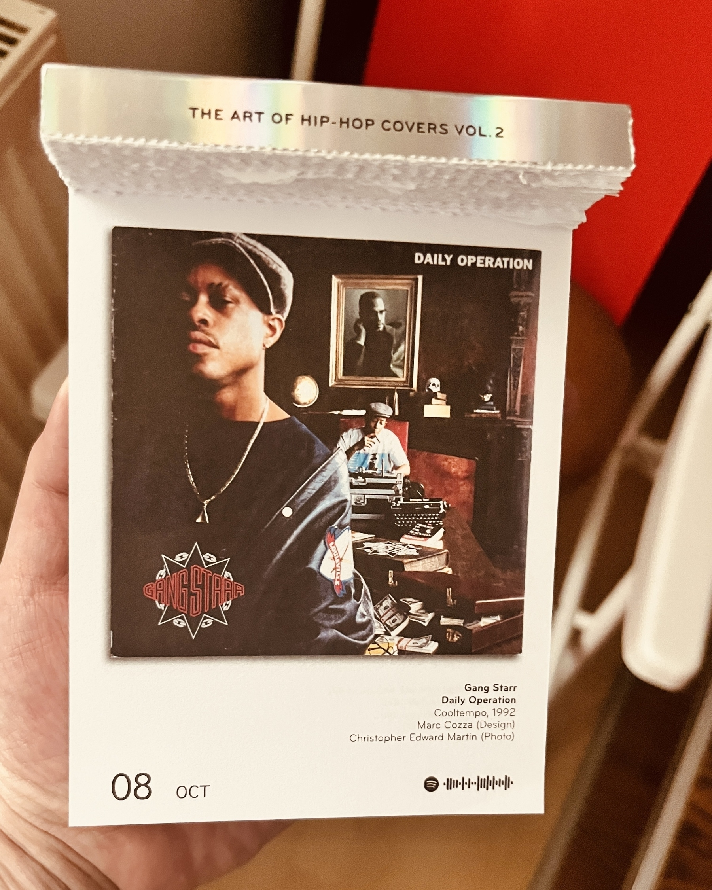

„Erst wenn die letzte Tofu-Wurst geächtet, das letzte Soja-Schnitzel umbenannt, der letzte Veggie-Burger verboten ist, werdet Ihr merken, dass man Fleisch nicht essen kann.“
Die Platte des Tages wird ja oft zwischen Step In The Arena und Hard To Earn vergessen, dabei sind ein paar starke Tracks drauf.
Peak everything. music.apple.com/de/album/…
#TheOhrwurmDiaries www.youtube.com/watch
Einmal so eingeschnappt sein wie für zwei komplette Tage durchgebuchte Photographen, wenn sie erfahren, daß sie nicht Star des Shootings sind, sondern “nur” einen Dreh begleiten und zwischen den Szenen mal die Darsteller ablichten sollen.
You wish, Absence. (Am letzten Tag vor dem Urlaub noch einen Berg an Arbeit auf dem Tisch haben, nervt allerdings.)

In Art. 1 des Grundgesetzes steht zwar “Mensch”, aber gemeint sind natürlich “Steuerzahler”. (Und da wiederum sind “Steuerzahlerinnen” gnädigerweise auch mitgemeint.)
Ganz so schlecht fand ich #BlackRabbit jetzt nicht. Aber das gewisse Etwas fehlt auf jeden Fall. www.rogerebert.com/reviews/b…
Wieso hat der Blogpost davor eine größere Nummer in der URL? drikkes.com
Über Zwanzigtausend. drikkes.com
Was halten wir eigentlich von Demnas erster Gucci-Kollektion und dem dazugehörigen Film The Tiger?
“Harald Glööckler hält die Teilnahme von Männern bei der Wahl der Deutschen Weinkönigin für überfällig.”
Derzeit nicht verfügbar. www.amazon.de/dp/B0BPML…
Derzeit nicht verfügbar. www.amazon.de/dp/B0BPML…
Ich mache auch so ein tägliches Quiz, aber man muß anhand det Vans-DocMartens-Ratio erraten, um welches Konzert es sich handelt.
Heute jemand bei Preoccupations im Blue Shell? Dann bis später. #cgn www.blue-shell.de/events/pr…
Not a big fan of the Mastodon implementation for quote posts, but this sounds okay? www.manton.org/2025/09/2…
Feierabendprogramm www.youtube.com/watch
Themen-Abo Wurstmarkt
Verschickt worden war die Aufforderung, das Pfalzlied zu singen, laut Kreis von der Stadt Bad Dürkheim: “Die Meldung hätte innerhalb von KATWARN auf einem eigens eingerichteten sogenannten Themen-Abo Wurstmarkt verschickt werden sollen und keinesfalls über die übergeordnete Warnfunktion.” Die Stadt wollte demnach eine Kategorie innerhalb der App nutzen, auf der unwichtigere Meldungen gesendet werden können, hatte aber aus Versehen die Katastrophen-Ebene genutzt.
via SWR Aktuell
Mittagsprogramm www.youtube.com/live/sVte…
Der #SPD-Oberbürgermeisterkandidat für #Koeln #Burmester ist heute zum #effzeh-Spiel natürlich ganz privat in meiner Fussikneipe. Das ist bestimmt kein Wahlkampftermin. (Werde ihm trotzdem bei einer Niederlage die Schuld geben und nächste Woche #Gruen wählen.)
Wir sehen uns morgen. www.prochoicekoeln.org
Bei lichess.org heißt PLAY WITH THE COMPUTER jetzt PLAY AGAINST AI. 🙄
Tagtäglich die Verspringerstiefelung der Gedanken vorantreiben. Wehe, der Besuch zieht nicht schon vor der Tür die Schuhe aus und benutzt für sein Getränkeglas auf dem Couchtisch einen Untersetzer.


Man kann www.notion.com/product/m… nicht mit zwei unterschiedlichen Google-Accounts nutzen, soweit ich das checke?

„Anhänger Bolsonaros versammelten sich nach der Urteilsverkündung vor dessen Haus in der Hauptstadt Brasilia, wo der Ex-Präsident bereits unter Hausarrest steht. Viele baten Gott, andere den US-Präsidenten um Unterstützung.“ Brasilien: Bolsonaro zu mehr als 27 Jahren Haft verurteilt | tagesschau.de
#GuessWhosBack www.youtube.com/watch #TheOhrwurmDiaries
„Ich bin der Gilb. Ich mache Ihre Gardinen schmutzig und grau.“ – „Hallo, wir haben 2025. Wer hat denn heute noch Gardinen?“
iPhone 17 immerhin das erste, bei dem ich auch nur überlege, mein iPhone 13 mini dagegen einzutauschen.
Die neue Platte von David Byrne ist auch (nur) gemacht, um als Motion Album Cover auf Apple Music gut auszusehen, oder? musics://music.apple.com/album/1816027264
Sorry, Ännie! daftsocial.com/drikkes/
PSA: Das letzte Gruppenspiel der #EuroBasket zwischen Spanien und Griechenland ist spannender zu gucken als die WM-Quali der deutschen Fussi-Männer.
Die einen sagen “Didier Chopin ist mein Spirit Animal”, die anderen sagen “Selbstbild als Diane de Valbray”.


Das ist sooo deutsch. scooter-melder.de
Hatte erst ein wenig Angst bei dem Albumtitel, aber neue Earl Sweatshirt ist leidlich stabil. record.club/releases/…
The Garbage Man Can www.youtube.com/watch
Ausverkauft. huckberry.com/store/cro…
David Simon: ‘Fear, greed and repetition are getting in the way of quality storytelling’ observer.co.uk/culture/t…

Aphex Twin - Korg Funk 5 x.drikk.es/post/7925…
Sorry. www.tiktok.com/@space_qu…
So ein Freitag ist das. www.youtube.com/watch
Wenn die Schachfreundin zwecks Verfeinerung ihrer Campari-O-Mixkünste einen Testtrinker benötigt, stelle ich mich ganz selbstlos zur Verfügung.
Weiß ich nicht. www.highsnobiety.com/p/new-bal…
In Köln hat sich der Pkw-Bestand je 1000 Einwohner von 466,8 im Jahr 2000 auf jetzt 490 erhöht? regionalatlas.statistikportal.de
Bei dem Online-Game, das ich in der Mittagspause gerne zocke, kommt in den letzten Tagen immer wieder Banner-Werbung für Frauke Petrys “Team Freiheit”.
Wie praktisch, daß ich fast den gesamten Oktober Urlaub haben werde. Thomas Pynchon’s 2025 Novel Shadow Ticket
Ich komme nicht umhin, immerhin die hartnäckige Ausdauer des schlecht singenden Nachbarskinds anzuerkennen. So langsam könnten die Sommerferien dann jetzt aber auch zu Ende gehen.
Neues von Jens, dem Rapper. record.club/releases/…
I am at Pitcher for „downset.“
(Pitcher Oberbilker Allee 29, Duesseldorf, Nordrhein-Westfalen, 40215, DE)
(Ja, bei dem Wetter.)
Pyrotechnik ist trotzdem kein Verbrechen. www.n-tv.de/sport/fus…
Programm für die Mittagspause: Reschke über die Reichenlobby. www.ardmediathek.de/video/res… (Obacht, im Autoplay danach Nuhr im Ersten.)
Wokenloser Himmel. (Weil die ganzen Climate Conscious People auf Urlaubsreisen mit Billigfliegern verzichten.)

Sich nostalgisch an Werbeslogans aus den 80ern erinnern wie “Ein ganzer Hund dank Hundeergänzungsmittel.”
Heise auf Linie
Der Streit zwischen dem Youtuber “Drachenlord” und seinen Gegnern, den sogenannten Hatern, schwelt seit Jahren – insbesondere im Internet.
Ich wollte erst fragen, wer solche Artikeleinstiege schreibt. Dann sehe ich, daß hinter dem Kürzel (dmk) jemand namens Dirk Knop steckt – und der sollte sich als Redakteur wohl besser auf seine Themenschwerpunkte “IT-Sicherheit und Betriebssysteme. Also über alles von der Sicherheitslücke, über Windows-Neuigkeiten hin zu Linux-Entwicklungen” konzentrieren.
Sich DJ Milcheinschuß nennen, nur damit man das sexistische Foto eines Wet-TShirt-Contests total ironisch gebrochen als Cover für seine Debüt-EP verwenden kann.


Ich treibe alte Menschen in den Wahnsinn, indem ich Melodie und Text der Underberg- und Kümmerling-Lieder vertausche.
Krankheiten verbieten! www.destatis.de/DE/Presse…
Nur damit Ihr nicht denkt, ich hätte es leicht: Kunde brieft einen dreigeteilten Kreis ein und feedbackt dann “Bitte alternative Darstellung, die weniger an einen Mercedes-Stern erinnert”.
Ich habe gar nicht so wenige Filmsoundtracks auf Vinyl. record.club/drikkes/l… Und nein, ich prokrastiniere nicht, das ist total wichtig.
Jean-Remy von Matt schreckt für die Promotour zu seinem Buch also noch nicht einmal vor NiUS zurück. Pfui!
I am at Galopprennbahn Weidenpesch. app.foursquare.com/share/che…
ripBert Wilson daftsocial.com/drikkes/
#listening to record.club/releases/…
„Liebe Fahrgäste, ich möchte mich dafür entschuldigen, daß offensichtlich niemand unseren Zugführer darüber informiert hat, daß dieser ICE eigentlich zusätzlich in Bielefeld halten sollte.“
IDLES - Rabbit Run www.youtube.com/watch
Geile Introsequenz. The Bear - s04e08 - Green : trakt.tv/shows/the…
Echte Zukunftstechnologie wäre zum Beispiel, wenn man ein frische Jeans anzieht, dann beamen sich Feuerzeug und Kleingeld automatisch in deren Taschen.
Wie der Duolingo-Lehrer den ins Schach-Englisch importierten „Zugzwang“ ausspricht. <3

Der Baum vor dem Fenster meines Arbeitszimmers heißt 66-102-S-1747. Es eine 18 m hohe Krimlinde mit einem Stammdurchmesser von 50 cm und einem Kronendurchmesser von 7 m. koelngis.stadt-koeln.de/koelngis/…
Keine 800 Unterschriften mehr bis zum Ziel. epetitionen.bundestag.de/petitione… Obwohl es natürlich gerne einige mehr sein dürfen.
Costume tests for Stanley Kubrick’s A Clockwork Orange x.drikk.es/post/7895…
Treuloses CEO-Shaming immerhin besseres Sommerloch als exotische Tiere in irgendwelchen Baggerseeen.
“Doch ich habe nur gelogen so wie Friedrich Merz” youtu.be/qwmWPrPNV…
Einige Male auf das Kreuz oben rechts statt auf den Button unten getoucht, bis ich es gecheckt hatte. Was wohl auch so beabsichtigt ist. Wichser.

#TheOhrwurmDiaries youtu.be/OuvR9d73O…


Okay, wenn selbst die BLÖD-Zeitung einen vernichtenden Spahn-Kommentar bringt, ist der Typ wohl endlich weg vom Fenster.
Bißchen genervt, daß morgen früh das neue Album von Wet Leg erscheint, und ich von 09:15 bis 12:30 Uhr ohne Pause in Meetings sitzen werde.
Autsch! taz.de/Netflix-S…
#TheOhrwurmDiaries youtu.be/xG7VLUV3o…
Throwback zur Verne-Verfilmung ‘Reise zum Mittelpunkt der Erde’ von 1959, als Arne Saknussem den von ihm entdeckten unterirdischen Ozean “Saknussem” benannt hat. archive.org/details/1…
Wo guckt man denn heute in Ehrenfeld vor dem Konzert das Deutschlandspiel? www.songkick.com/concerts/…
New merch just dropped. Eh, I mean slopped. shop.drikkes.com/listing/s…

Das wäre großartig. scripting.com/2025/07/0…

Immer noch so ein Brett. youtu.be/VYOjWnS4c…
#TheOhrwurmDiaries youtu.be/lrKZNqIR2…
Sind die Menschen aktuell? Noch aktuell genug? Aktualisieren sie ausreichend? Ist jede ihrer Aktualitäten auf dem neuesten Stand?


Sofort unterzeichnet. #TaxTheRich epetitionen.bundestag.de/petitione…
Die Kinder würden zu gerne direkt nach der Schule ins Schwimmbad, aber – ach – bevor man los kann, müssen natürlich erst die Handys aufgeladen werden.

BU des Tages: Nicht alle Spieler des „Squid Game“ (dt. Tintenfischspiel) werden die finale Staffel überleben

Der Balenciaga × Puma Bademantel für schlappe 9.000 €. www.balenciaga.com/de-de/bal…
Leute die sich für die Gassirunde In-ears reinstöpseln, damit nicht so auffällt, daß sie ununterbrochen mit ihrem Hund reden.
“Dabei zeigte sich, dass Frauen, die ihr erstes Kind mit einem weniger gebildeten Partner bekommen, einen kleineren Karriere- und Gehaltsknick haben.” www.elle.de/female-em…


Kommander, so hoch habe ich den Ruhrpottklischeedetektor selten ausschlagen sehen. www.zeit.de/2025/25/t…
Freitagnacht Entscheidungsmatch www.nytimes.com/2025/06/0… #nba
Argh! Hat jemand zufällig noch eine Karte für Getdown Services am Montag im Bumann & Sohn übrig? www.bumannundsohn.de/live/2025…
Wie kann sich vor eine Kamera setzen und solche Sanddalen anziehen? Egal, was die Leute Interessantes erzählen, ich musste natürlich sofort abschalten.
Vor fast zwanzig Jahren weggezogen, aber freut mich natürlich, daß es DISCover in #Bochum immer noch gibt. taz.de/Bilanz-Bo…
Großartig. lazytetris.com (via @ligneclaire@micro.blog)
The new Victoria & Albert Msuem Storehouse. www.thisiscolossal.com/2025/06/v…
#TheOhrwurmDiaries www.youtube.com/watch
#TheOhrwurmDiaries www.youtube.com/watch


„Kennst Du die nicht? Das war unsere Bundestagsabgeordnete.“ - „Habe ich ohne Rollkoffer nicht erkannt.“
Die neue von clipping. geht ja gut los. record.club/releases/… #listening
#listening to Lotus by Little Simz record.club/releases/…
Yay, neues Album von Aesop Rock! record.club/releases/… #listening


Zitat des Tages
“Innergrüne Kulturkämpfe zwischen Jugendgruppen und baden-württembergischen Provinzpolitikern sind nicht meine Angelegenheit.”
Die taz schreibt im Namen der Würde des Amtes einen Brief an Julia Klöckner.
Gestern die KI gefragt, seit wie vielen Tagen ich lebe. Die Antwort war tatsächlich glatte 17.500 – kam mir komisch vor. Doch kurzer Überschlag ergab, dass es wohl ungefähr stimmte. Heute hatte ich Zeit, das exakt nachzurechnen: Es war wirklich richtig.
Für die Kinder fällt wegen Bombenentschärfung die Schule aus, aber ich muß im Homeoffice arbeiten. Umfair!
Bericht aus zehn Metern Fußgängerzone www.buddenbohm-und-soehne.de/2025/05/2…
Sehr gespannt auf den neuen Linklater. www.youtube.com/watch
Diesen Herbst vielleicht mal wieder nach London? www.thisiscolossal.com/2025/05/w…
Cheers
Does anything in this life compare to the naughty pleasure of day drinking? It’s civilized yet slightly feral, with more than a dash of Sterling Cooper-era glamor. Granted, a lunchtime tipple may be considered classy if you’re rich and tacky if you’re not, but the danger of getting caught may be exceeded only by the thrill of getting away with it.
San Francisco restaurant Heartwood debuts free-martini lunch
Erinnere mich noch gut an eine dieser frühen Apple-Kampagnen: “Tja, wenn Deine Mudda kein iPhone hat, dann hat sie kein iPhone.”
Derzeit in heavy Rotation. record.club/releases/…

🦈 drikkes.com 🦈
Für die Ukraine kommt es derzeit knüppeldick. Erst Putinversteher Trump im Weißen Haus und jetzt habe ich auch noch den mit einer Laubsäge selbstgebastelten, blau/gelben Peacezeichenanhänger verloren, den ich zu Kriegsbeginn ein paar Spenden sammelnden Kindern abgekauft habe.
Kennt jemand eine Paniermehlpackung, auf der – wenn überhaupt ein Serviervorschlag drauf ist – kein Schnitzel abgebildet ist?
Song de Tages song.link/i/1185034…
Die Preise, Alter! robbreport.com/style/gro…
“Komm doch nächste Woche zum Shooting nach München”, haben sie gesagt. “Und mit München meinen wir irgendein Kaff hinter Kaufbeuren”, haben sie erst nach meinem Okay gesagt.
Werbung auf digitalen Billboards für die „Green Lifestyle Days“ gesehen. Weiß ich ja nich…
EcoHopper Festival 2025 – EcoHopper


Nervig: Wenn der Zug eine halbe Stunde verspätet ist und man den eigentlich für die Reise gekauften Kaffee schon wortwörtlich vor der Abfahrt auf hat.
Frage nach #Berlin: In welcher Kneipe guckt man denn da übermorgen Freitag um 18:30 Uhr das Aufstiegsspiel des glorreichen 1. FC Köln? #effzeh
Du musst jetzt stark sein, liebe Elektrorasiererbranche: Ich benutze mein Gerät seit 25 Jahren und habe auch die nächsten 25 Jahre nicht vor, daran etwas zu ändern.
That‘s a first: Gerade einen Typen wegen seines penetranten, way too much aufgetragenen Parfums gebeten, die Kneipe zu verlassen.


“Vor allem Rewe-Boss Lionel Souque (53) soll die treibende Kraft für das Struber-Aus gewesen sein.” #effzeh
„Hier kontaktlos zahlen!“ (Bevor das geht, muß man allerdings auf dem schmierigen Touchscreen die aufdringliche Trinkgeldfrage wegdrücken.)
Ah, fuu. www.spiegel.de/auto/koel…
Kann nicht glauben, daß nach Einführung des Knoppers Riegels noch irgendjemand die alten quadratischen Knoppers kauft.

Kennt jemand „Krethi und Plethi“? Außer meiner Oma fällt mir niemand ein, der diese Redewendung je benutzt hat.
Wenn Sie es würdelos und demütigend finden, mit der Computerstimme einer Hotline zu sprechen, dann drücken Sie bitte die 3.


Im Bunker: “Mit der Errichtung einer Nationalen Hyperloop Referenzstrecke wird das alles in Ordnung kommen.”
Mindestmiethöhe statt Mietpreisbremse fordern. Wie kann man sich als “Experte” derart zum Büttel von Immobilienbesitzenden machen?
Gerade das #NBA-Spiel Lakers vs Bulls von gestern Nacht nachgeguckt. Die letzte Minute – wow! www.nba.com/watch/vid…
Eher nich. x.drikk.es/post/7791…

Das soll die neue “girl anthem” sein? Weiß nich… youtu.be/WLdqKRg_t…


Wie lange habt Ihr den fünfeinhalbminütigen Apple-Werbefilm mit Pedro Pascal durchgehalten? Ich war nach fünfzig Sekunden raus.
#listening to song.link/y/RalK9I_…
Muß nicht. www.neuimladen.de/produkt/s…
Wirklich sehr nervig. Ich muss alle paar Wochen für ein paar Tage von Köln nach Berlin und zurück. Der ICE Sprinter ist seit fast einem Jahr kaum noch verfügbar. correctiv.org/aktuelles…
Da spielen #Messer heute Abend keine 500 Meter entfernt und es ist gleichzeitig #effzeh Spiel. www.songkick.com/concerts/…
#listening to TRIO – Nur ein Traum song.link/i/1601827… (Dachte jahrzehntelang bis jetzt, es ginge um eine Fahrt auf der Autobahn von Holzminden nach Olpe, aber nun lese ich in den Lyrics, es geht von Holzminden nach Oldenburg.)
Abgeschmackter Klickstrecken-Journalismus: “Nach plötzlichem Tod von Prinz Frederik von Luxemburg (†22) – Auch diese Royals starben viel zu jung”
Mit zwei Tagen Verspätung durch den LinkedIn-Algo jetzt die Posts von mittleren Managern zum Weltfrauentag in der Timeline, wieso ihre Mutter sie zu besserer Leadership inspiriert hat.
Ich war nie ein großer Fan von Amir Kassaei, aber was für ein Desaster. www.turi2.de/aktuell/w…
In der Region Murmansk hat die Putin-Partei “Einiges Russland” den Müttern von toten Militärangehörigen Fleischwölfe geschenkt. Sie wurden aufgefordert, von “provokativen Interpretationen” abzusehen.
Ich wollte was über Parkplätze posten, aber – ach – es ist ja schon alles gesagt. drikk.es/tweets/
Gibt es eine Sportart, die auch nur entfernt etwas mit Springen zu tun hat, und ein sie ausübender Niederländer bekommt nicht den Spitznamen „The Flying Dutchman“ verpasst? Wohl kaum.
Yay or nay? www.footlocker.de/de/produc…
Sehe ich das richtig, daß die von Flensburger Pilsener bei ihren ganzen Kalauern auf Social Media noch keinen Gag über “OnlyFlens” gebracht haben?
Einmal die Chuzpe von Leuten haben, die unter ihre Werbeposts in eigener Sache noch schamlos mit “Gerne Retweet/Retröt/Reskeet” schreiben.
Diese Ohrringe: media3.giphy.com/media/v1…. – Dieser Song: www.youtube.com/watch
Monika ist der beste Vorname der Welt. Eigentlich tun mir alle Menschen leid, die nicht Monika heißen. Inklusive mir selbst.
Auch schon wieder zehn Jahre her. vimeo.com/110784496
Ein einziges angespieltes Witzchen von Conan über den gesamten Oscarabend? Ich hatte wenig an Trump-Kritik erwartet, Hollywood, aber das ist wirklich underwhelming.

Neue Pissmatten in den Urinalen der Stammkneipe. Für Karneval werden hier keine Kosten und Mühen gescheut.
„Das Amt könnte mit künstlicher Intelligenz kontrollieren, ob es immer wieder der gleiche Haufen ist.“ www.msn.com/de-de/fin… Endlich eine scheißgute Einsatzmöglichkeit für KI.
Was sagt eigentlich die SPD zu dieser Kleinen Anfrage ihres höchstwahrscheinlich kommenden Koalitionspartners?
Neues Album von Ebow, yeah! record.club/releases/… #listening
Unpopular Opinion: Wenn am Ende bei der Suche nach einem Atommüllendlager irgendein Ort tief im Osten herauskommt, dann werden viele Wessis denken: Hat die Wiedervereinigung ja doch was gebracht.


Sonntagsfrage
Die BLÖD kümmert sich wie immer um die wirklich drängenden Sorgen, Nöte und Ängste der Bürger*innen: Wie DAZN am Sonntag mit der Bundestagswahl umgeht | BILD.de
Wer das Bayern-Spiel und die Wahl verfolgen will, muss also zwangsläufig auf ein zweites Gerät ausweichen.
Nur so eine verrückte Idee von mir: Vielleicht könnten an beidem Interessierte einen dieser neumodischen, internetfähigen Hosentaschencomputer benutzen. Smartphones oder wie die heißen.
(Related News aus dem Hause Springer: Wählt am Sonntag)

Was würden wir nur ohne KI machen? www.freundin.de/mode/tren…
Ich musste heute die neueste Version des Adobe Acrobat Readers auf meinem Arbeitsrechner installieren und es dauerte keine drei Minuten bis ich “how to disable ai assistent in acrobat completely” googlete.
Wie die UN-Spongebobbeauftragte feststellte, Bikini Bottom sei weder Mitgliedsland noch international anerkannter Staat.
Keine Investoren für mein Best Westem Hotel in Bad Kerning gefunden.
#watching The White Lotus - s03e01 - Same Spirits, New Forms : trakt.tv/shows/the…
Es gibt eine Neuverfilmung von EMMANUELLE? www.youtube.com/watch

So, Mittagspause. www.instagram.com/p/DFIwuSx…

#listening to album.link/i/1440861…
Gift Link. www.nytimes.com/2025/02/0…
Musik zum Tag. music.apple.com/de/album/… #listening

Wir sehen uns nach dem #effzeh Spiel. koelle4future.de/blog/2025…
Betreff: „Zustrom“ daftsocial.com/drikkes/
Deepseek
Was weißt Du über die rituelle Zugteilungszigarette in Hamm?
Die rituelle Zugteilungszigarette in Hamm ist ein kurioses und eher unbekanntes Phänomen, das mit dem Bahnhof in Hamm (Westfalen) verbunden ist. Der Bahnhof Hamm ist ein wichtiger Knotenpunkt im deutschen Schienennetz, insbesondere für den Güterverkehr. Hier werden häufig Züge geteilt oder zusammengeführt, was bedeutet, dass einzelne Waggons oder Wagengruppen auf verschiedene Züge verteilt werden. Die “Zugteilungszigarette” bezieht sich auf eine angeblich traditionelle Geste, bei der ein Rangierer oder Eisenbahner nach erfolgreicher Zugteilung eine Zigarette raucht. Dies soll als eine Art rituelle Belohnung oder Pause nach getaner Arbeit dienen. Allerdings ist dies eher eine Anekdote oder ein urbaner Mythos als eine offiziell dokumentierte Praxis. Es gibt keine offiziellen Quellen oder Belege, die dieses Ritual bestätigen, und es scheint eher im Bereich der Eisenbahnfolklore zu liegen. Der Begriff wird manchmal auch humorvoll oder metaphorisch verwendet, um die besondere Atmosphäre und die Eigenheiten des Arbeitsalltags im Bahnbetrieb zu beschreiben. Hamm als wichtiger Eisenbahnstandort bietet dabei einen passenden Hintergrund für solche Geschichten.
In der Fußballkneipe bei der größten CL-Konferenz aller Zeiten auf zehn Bildschirmen sitzen und alle am Tisch starren auf den Handball-Streams eines Handys.
This headline. luxurylaunches.com/transport…
#listening to record.club/releases/…
Bald werden sie den Menschen Computerchips in die Gehirne einpflanzen und deren Output “Artisanal Intelligence” nennen. (Begriff absichtlich vorher nicht gegooglet.)
Keep ruining everything.
“It’s unclear exactly for what Crystal and Ryan might be reuniting. With the 2025 Super Bowl just weeks away, some fans in the comment section speculated the pair may have teamed up for a commercial. Others hoped for a sequel and a return to their characters of Harry Burns and Sally Albright.”
Meg Ryan, Billy Crystal Tease ‘When Harry Met Sally’ Reunion
“The findings consistently demonstrate that male victimhood beliefs are driven by perceived privilege loss rather than objective economic hardship.” www.psypost.org/male-vict…
In Köln die Anti-AfD-Demo am Samstag eine Stunde vor dem FC-Spiel. Top-Timing. www.demokrateam.org/aktionen/…
Für einen guten Verkäufer bin ich einfach zu ehrlich. shop.drikkes.com/listing/s…
“Look, mommy! Bishops!” xkcd.com/3036/
Wahl. Kampf. Bericht. Erstattung. www.spiegel.de/politik/d…
Lynch Werbung www.thedrum.com/news/2025…
#listening to record.club/releases/…
Hey Pepsi, bei ‚Electric Blue‘ denke ich an youtu.be/_pqvjfW9y…
Wenn ein Mitglied des Adels ihre/seine Hochzeitsabsichten mit einer/m Bürgerlichen kundtut, muß ich sofort in den einschlägigen royalistischen Onlineforen vorbeibrowsen.
Erst mal die Platte des Tages auflegen. album.link/i/1443938…

Was man so tut, um sich als linksaktivistischer Kritiker von Überwachungsstaat und Polizeigewalt zu fühlen. Früher: ACAB an die Wände sprühen. Heute: Der Elektronischen Patientenakte widersprechen.
female energy www.sciencedirect.com/science/a…
female energy www.sciencedirect.com/science/a…
Gute Idee, bei solchen Temperaturen sein Wischwasser aus der Haustür über den Bürgersteig in den Rinnstein zu kippen.
Habe mich gerade dabei erwischt, wie ich über “Leben auf der Aperolspur” geschmunzelt habe. Prösterchen!
“Millennials are consumers of the workplace.” www.theguardian.com/commentis…

Okay, der Klamottenstress beginnt. Teenagersohn ist jetzt groß genug um sich meine coolen Socken und die Supreme-Unterhosen direkt aus der Wäsche zu krallen. Bevor er meine Schuhgröße erreicht, brauche ich einen abschließbaren Sneakerschrank.
Will mich ja nicht zu weit aus dem Fenster lehnen, weil ich Teil des Problems bin.
Trotzdem bißchen Kotzi im Mund, wie scheinheilig sich speziell meine Jobbubble auf LinkedIn über Zuck/Meta echauffiert. “Privat habe ich FB ja schon ewig nicht mehr genutzt und jetzt werde ich auch Insta den Rücken kehren…" Als wäre die Marketingbranche nicht durch jede einzelne auf Kundenseite beauftragte und agenturseitig erstellte Social Ad an dieser Entwicklung mitschuldig.
Aber gut, ich habe auch fast 20 Jahre Zeit gehabt, mich mit meinem schlechten Bauchgefühl zu arrangieren, seit die erste von mir betextete Anzeige in der Bild-Zeitung erschienen ist. Macht die Sache allerdings nicht viel besser.

Die Wissenschaft hat Tocotronic widerlegt: “We find that the average walking speed has increased by 15%, while the time spent lingering in these spaces has halved across all locations.” www.nber.org/papers/w3…

Sünner-Gin-Effekte schon am Nachmittag. (Wird Zeit, daß dieses Lotterleben zwischen den Jahren übermorgen aufhört.)

Doomscroll Industrial Complex – Schrödinger’s Apocalypse www.joanwestenberg.com/the-dooms…
Da bietet jemand sein Produkt in den Farben Anthrazit, Asphalt Anthrazit, Grau, Hellgrau und Steingrau an, als hätte es diesen Loriot-Sketch nie gegeben.
Diese gerillten oder genoppten Einlassungen im Plaster der Bürgersteige werden von Menschen ohne Sehbeeinträchtigung liebevoll ROLLKOFFERWAHRNEHMUNGSHILFE genannt.

Rasmus Anders ging fluchend in den Wald. Auf der Suche nach der Unmenschlichkeit zwischen den geläuterten Bäumen. Überall oxygenerischer Abfall (Probleme: 1 Haufen).
Nur noch eine Frage der Zeit bis die konfrontative Clickbait-Journaille den nächsten Mann, der jenseits der 50 noch volles Haupthaar trägt, einen “umstrittenen Glatzenkritiker” nennt.
Wenn die Freund:innen des Sohnes bei uns abhängen, obwohl er gar nicht zuhause ist, sind wir zu nette Eltern, oder?
Anruf mit rumänischer Vorwahl. Eine Computerstimme sagt: “Hallo, ich möchte mit Dir über Arbeit sprechen. Bitte füge mich auf WhatsApp hinzu.” Dann wird direkt aufgelegt.
Auch nach zwölf Jahren immer noch ein absolutes Brett, der Song. youtu.be/FCbWLSZrZ…
Falls Ihr noch ein Geschenk für mich sucht: centldn.com/collectio…
No shit, Sherlock! www.tagesschau.de/investiga…
Hier, die erste Hälfte zumindest. phirephoenix.com/blog/2024… (Lag jetzt über einen Monat in meinem Instapaper rum.)
Weihnachten im (faltigen) Arsch. Botoxspritze als Baumdeko derzeit nicht lieferbar. amzn.eu/d/4lNiiiU

Planung für das restliche Leben:
- noch 1 Wochen arbeiten
- dann 3 Wochen Urlaub
- danach noch mal 20 Jahre arbeiten
Die Jugend von heute kennt die Klassiker der Augsburger Muppetkiste wie “Kermit aus dem Eis”, “Graf Zahl und Gonzo, der Lokomotivführer” oder “Miss Piggy mit Hut” überhaupt nicht mehr!
Hey, Köln. Jemand Bock auf Die Goldenen Zitronen im ausverkauften Gloria heute Abend? Hätte noch ne Karte abzugeben.
Brand Eins diesen Monat mit sehr starkem Printtitel. x.drikk.es/post/7688…
Not all heroes wear capes. archive.ph/202412030…


Jetzt gehen #Dojo mit ihrer Kampagne “110 Prozent” für die Berliner Polizei aber zu weit. www.fazemag.de/polizisti…
#listening to record.club/releases/…
Sportliche Leistung. www.reddit.com/r/MadeMeS…

Interessantes Interview
Das ist ein grundlegendes Missverständnis. Wählerinnen und Wähler, deren größte Sorgen die Inflation und die Wirtschaft sind, wollen nicht jemanden, der so redet wie ein VWL-Professor. Sie wollen das Gefühl haben, dass ihre Probleme verstanden werden.
Wir müssen systematisch zuhören, um zu verstehen, wo die Sorgen der Menschen sind. Und dann diese Sorgen adressieren, anstatt darauf zu hoffen, dass wenn wir zum Beispiel eine Chipindustrie aufbauen, als Nebenprodukt auch ein paar Arbeitsplätze entstehen. Es muss bei der Industriepolitik von Anfang an mitgedacht werden, wie sie nicht nur den Unternehmen und der Wettbewerbsfähigkeit, sondern auch den Interessen der vielen dient.
Ökonomin Isabella M. Weber sagt im Gespräch mit der taz gute Dinge.
Brexit means Brexit. www.fr.de/politik/n…
Wochenlang anhand von Bildern Drehlocations abgestimmt. Kunde superpicky bis in die Details. Bis ihm 2 Tage vorm PPM die (immer mitkommunizierte) Lage auffällt. “Gibt’s nicht irgendwas, das näher an Berlin liegt?”
Ah shit, das Konzert von Amyl and the Sniffers nächste Woche in Köln ist natürlich schon ausverkauft.


Wenn der Kommentator sagt „Er wollte das Wort ‚Finalspiel‘ nicht in den Mund nehmen“, dann kommt von mir leider reflexhaft „Deine Mudda nimmt das Wort ‚Finalspiel‘ in den Mund.“
Borussia Dortmund gefällt das nicht. www.watson.de/unterhalt…

Namensrechte, Namensgerechtigkeit. edition.cnn.com/2024/06/2… (via Kottke)
Zwingen Fluggesellschaften die Stewards und Stewardessen, sich übertrieben einzuparfümieren, um damit für die gerade vergünstigten Duftwässerchen ihres albernen Duty-free-Angebots zu werben? „Entspannt Shoppen über den Wolken“ my ass!
Hallo Köln, wir sind Ehrenfelds Of The Nephilim und wir spielen heute für Euch unseren Song ‚Unfallgefahr durch Rückstau im Kurvenbereich‘.
Von wegen, in Deutschland würde es nur noch bergab gehen. www.nd-aktuell.de/artikel/1…
Ich muß nur noch eben schnell ein paar Sachen bei Amazon bestellen, dann habe ich Zeit, mich im Internet über die Wahlempfehlungsverweigerung der Washington Post durch Jeff Bezos himself aufzuregen.
#listening to record.club/releases/…
Imagine being an artist and having nearly 8 million monthly listeners on Spotify but earning more money from having 1,000 people subscribe to pictures of your feet.
Singer Lily Allen who has a perfect five-star rating on WikiFeet according to this article on variety.com.
(via Ligne Claire)
Von wie vielen fancy gestalteten Newslettern ich mich wieder abgemeldet habe, weil sie im RSS-Reader meiner Wahl bescheuert aussehen…

🛫 👀 📱 daftsocial.com/drikkes/
Wie konnte Starbucks vorher ohne Executive Vice President Global Chief Brand Officer überhaupt überleben?
Guadagnino, Robbie, Daft Punk. Naja. youtu.be/fo4LLux-t…
Akropolis und so – schön und gut, aber was mir Erinnerung bleiben wird, sind die Crocs-Verbotschilder an Athener Rolltreppen. (siehe)
“Ich scheiß auf alles, ich brauch sehr viel Klopapier. Ich bin der beste Motherfucker in Europa hier.”
Heute vor 40 Jahren in Köln: 17. Oktober 1984: DFB-Elf muss ab sofort Nationalhymne mitsingen - Stichtag - WDR
Seit Langem mal wieder #YouTube geöffnet, ohne mit meinem Account angemeldet zu sein. OMG, die vorgeschlagen Videos, the Horror!
Mit #Perplexity als Add-on für irgendwelche kostenpflichtigen Pro-Accounts wird in letzter aber auch rumgeschmissen wie nix Gutes…
Doppeldeutig
Der Spiegel trumpft mal wieder mit Qualitätsjournalismus auf.
“Landwirte und Industriearbeiter sind ein entscheidender Teil von Trumps Wählerschaft, die für einen Sieg gegen Harris entscheidend sein dürften.”
Entscheidende Teile sind entscheidend. Seit über zwei Wochen steht das so am Ende des Artikels über drohende Strafzölle für John Deere im Falle einer Produktionsverlegung nach Mexiko.
Nicht bis zum Ende gucken. youtu.be/CqHvVRdzC…
#TIL: Schamkapsel www.nationalgeographic.de/geschicht…
Aufgrund eines überzogenen Zoomcalls beinahe die Traditionszigarette während der Zugteilung in Hamm verpasst. Arbeiten im ICE ist echt stressig.
Lucky Luke schießt vielleicht schneller als sein Schatten, aber er kann sich nicht schnell genug muten bevor Kollegin J. sagt: “Könnte sich der Geräuschverursacher bitte muten.
Lebkuchen und Dominosteine schon Ende September im Supermarkt, das halte ich noch aus, aber jetzt drei Monate quer durchs Internet von Werbung für Ugly-Christmas-Sweatern verfolgt werden, das kann ich nicht ertragen.
Daß normaler, einfacher Zucker jetzt immer öfter als „Rübenzucker“ deklariert wird, ist auch wegen woke, ne?
Bisher noch niemanden gesehen, die sich statt HATE LOVE oder FREE BIRD acht Emojis auf die Finger hat tätowieren lassen. Kommt bestimmt noch.
Neues Musikvideo von clipping. startet in Berlin. youtu.be/20OY9Clvh…
Orr, The North Face × Comme des Garcons hat gelauncht und das Shirt ist auf CDG schon ausverkauft und TNF liefert nur in den USA.
Problem einer Kneipe mit Augustiner vom Faß ist natürlich, daß sie statt CL-Konferenz immer das Bayern-Spiel zeigt.
Man muß diesen speziellen Slang von Haustierbesitzenden auch erst einmal verstehen lernen. Wenn Hundehaltende z.B. sagen „Bello ist so aufgeregt“, dann meinen sie eigentlich „er ist schlecht erzogen.“
Eine Steampunk-Serienversion im industrialisierten England des 19. Jahrhunderts namens Ghostborcstershires.
Alter, und wie ich das Intro überspringe. Ich bin so ein gottverdammter Introüberspringer. Wenn Du „Intro überspringen“ im Duden nachschlägst, dann findest Du da ein verficktes Photo von mir. Intro überspringen 3000. #TheMorningShow


Nicht gerade DOJOs beste Arbeit. www.berlin.de/rbmskzl/s…
Für das #Kinofest dieses Wochenende hatten sie bestimmt darauf gehofft, dass der Sommer schon vorbei sein würde.
A$AP Rocky - Tailor Swif x.drikk.es/post/7608…
Tennis <3 www.cbsnews.com/news/emma…


Böllern gegen rechts. www.tagesspiegel.de/berlin/of…
Völlig vergessen, daß der Typ mit Hitlergruß auf dem bekannten s/w Photo aus Rostock Lichtenhagen neben vollgepisster Jogginghose und Deutschlandtrikot auch noch Sandalen getragen hat.
Im Gegensatz dazu braucht es nur etwas Vernunft, um vernünftig zu sein.
Die Leute haben sich damals wahrscheinlich gedacht, es könne ja nicht sein, daß der Eintritt ins Abenteuerland den ganzen Verstand koste, das wäre ja viel zu teuer, also ein kleines Stückchen, okay, aber doch nicht gleich das gesamte Verstandsvolumen. Das Dumme ist nur, daß es so etwas wie Verstand eben nur ganz oder gar nicht gibt. Gesunder Menschenverstand definiert sich als Gesamtpaket.
Jahrzente später sind viele dieser Menschen inzwischen geschieden und beschreiben sich in ihren Datingprofilen als “ein bißchen verrückt”. Was gar kein Widerspruch sein muß.
Auch schon fast wieder I Jahr her
Selbst als Geschichtsstudent habe ich gar nicht so häufig an das Römische Reich gedacht wie andere. Und wenn, dann grübele ich nicht über Kriege, Gladiatoren oder Bauwerke, sondern mir fällt meistens wieder ein, wie unglaublich lazy und umständlich das mit den Zahlen gewesen sein muß. Wie kann man damit durchkommen? „Eigene Ziffern, was für ein Quatsch. So wichtig ist Mathematik jetzt auch nicht. Komm, wir nehmen da einfach ein paar Buchstaben für und gut ist.“ Und mit so einem Spirit dann noch ein Kontinente überspannendes Imperium errichten.
Unter welcher Jobnummer trage ich denn in die Zeiterfassung ein “sich Harley-Davidson’s Woke-Desaster aus nächster Nähe auf LinkedIn ansehen”? Es ist als Marketingfutzi schließlich meine heilige Pflicht.
Pop Culture Is in its Feudal Era
The idea is that entertainment shouldn’t be taken so seriously. Entertainment is for enjoyment; actors, musicians, billionaires getting married and members of the royal family are all purveyors of enjoyment. A public good and, by extension, a moral good. Enjoyment, in this calculus, is not political; it is merely passive, feel-good, a dopamine-hit for people fatigued by the daily grind. Politically inert. And so the media is in a frenzy to simply document, not interpret, what the rich and powerful do. This ideological distancing does a weird thing to the culture. It takes us back to feudalism.
Rohitha Naraharisetty, The Swaddle

Links zum Wochenende
What’s with the bag?
- For Fashion Brands Like Loewe & Balenciaga, A Bag Needn’t Look Like A Bag
- Copenhagen Fashion Week SS25: Statement Bags Take Over Street Style Looks
Kamala’s campaign
“Vitalisierende Body-Lotion” hat mir eine falsche Vorstellung der Vitalfunktionen meines Körpers vermittelt.
Okay, #Maybach-Tagline “Haute Voiture” kann was. Aber scheint mir so offensichtlich, daß ich kaum glauben kann, die hätte noch kein Autohersteller davor benutzt?
Komme immer noch nicht darüber hinweg, daß bei meinem jahrelangen Stammfriseursalon vorgestern plötzlich so ein Oldiesender mit den abgeschmacktesten 80er-Hits lief. Ich werde da nie wieder hingehen können.
Ich fahre immer seltener in den Urlaub. taz.de/Massentou… Distinktionsgewinn durch Zuhausebleiben.
“Ein Drittel aller deutschen Olympia-Starter in Paris sind beim Bund, hinzu kommen noch mehr als ein Dutzend, die ihr Geld bei der Bundespolizei verdienen.”
Historische Olympia-Krise: Die Excel-Tabelle legt den deutschen Spitzensport lahm | n-tv.de

(Das ist schon witzig, wie es die ganze Zeit hieß “the left can’t meme” und dann kommt mit JD Vance so ein Steilvorleger, der eine Einladung nach der anderen liefert, das Gegenteil zu beweisen.)
Erinnerungstafel, die eher selten an Tattooläden angebracht ist: Hier hat sich früher kein Sonnenstudio befunden.
Wieso ist Magenta TV in unserem Wohnzimmer immer ca. 15 Sekunden hinter unserer Küche hinterher? (Selbes WLAN, gleiches Set-up über Chromecasts.)
Hoffentlich kommt es pünktlich raus, damit ich mir das zu Weihnachten wünschen kann. adage.com/creativit…
Echt jetzt
Mein Sohn benutzt Snapchat. Als Werber weiß ich eigentlich ganz gut darüber Bescheid, was solche Plattformen mit den Daten ihrer User machen und wie das Influencer-Game dort so läuft. Blendet man aber gerne aus, wenn es die eigenen Kinder betrifft.
Umso netter, daß mich Werbung in einem Branchen-Newsletter vor einigen Tagen daran erinnert hat.

Endlich geht heute die 2. Fußball-Bundesliga wieder los. Dieses sportlose Sommerloch war ja nicht zum Aushalten.
Haha, MSCHF mal wieder. mschfhotels.com/products/…
Das ist so Fritz. www.derstandard.de/story/300…
Ob das was kann? youtu.be/HvXbAQOpo…
Innowhat?!
Ich fahre ja schon länger nicht mehr zur re:publica, bin vielleicht vor zehn Jahren zum letzten Mal dagewesen. Ein paar der auf YouTube veröffentlichten Sessions schaue ich mir allerdings an. Und jetzt bin ich in der Mittagspause endlich dazu gekommen, mir den 2024er-Talk von Tante anzugucken. Bringt das Tech-Dilemma ganz gut und recht unterhaltsam auf den Punkt.
Die ganzen Daten, die man für ein bißchen Rabatt da läßt und alles, was #DM einfällt, daraus zu machen, ist, einem sowas zu schicken? #caturday


Diese Abkürzung in den Entwürfen gefunden: a.i.a.E.a.i.e. Keine Ahnung mehr, was das bedeuten sollte.
Lieb’s, wenn man irgendwas am Desktop in die Adresszeile des Browsers eingibt und dabei dann per Autocomplete sieht, was für Tabs man seit Ewigkeiten auf dem Smartphone offen hat.

Über die wirklich wichtigen News zum Parteitag der US-Republikaner liest man in deutschen Zeitungen natürlich nichts. www.thelist.com/1625903/l…
#20books drikkes.com
“Je nach Auswahl werden im Widget gegebenenfalls der Kontostand Ihres Girokontos und das Wort “Girokonto” angezeigt.”
Meine Mudda würde sich ja vom #rbb distanzieren, wenn ihr nicht schon vorher nichts ferner gelegen hätte, als diesen korrupten und hinterwäldlerischen Ossisender zu gucken.


Großflächig Traditioner auftragen und sanft in die Kopfhaut einmassieren. Nach fünf Minuten mit lauwarmem Wasser aus dem verklemmten Haar ausspülen.
Die US-Demokraten sollten sich bei der Kandidatenfrage ein Beispiel an Frankreich nahmen. Dort hat der 73-jährige Jean-Luc Mélenchon die Wählerherzen mit jugendlicher Unbekümmertheit und frischen Ideen im Sturm erobert.
Selbst auf dem letzten Pixies-Konzert weniger Leute mit Pixies-Shirts gesehen als heute bei den Breeders.
Pulped Fiction
David Shrigley ist einer meiner Lieblingskünstler. Heute in der Mittagspause habe ich endlich die halbe Stunde Zeit gefunden, mir die vor drei Wochen erschienene Dokumentation einer seiner Arbeiten aus dem letzten Jahr anzusehen.
Er hat tausende Taschenbuchexemplare von Dan Browns Da Vinci Code aufgekauft, deren Papier schreddern lassen, um daraus neues Papier herzustellen und damit Neuausgaben von George Orwells mittlerweile gemeinfreiem 1984 zu drucken.
In meiner persönlichen Hölle muß ich nach meinem Tod US Decision Makern bis zum jüngsten Tag die Play of Words in meinen deutschen Werberideen erklären.

Plötzlich fällt mir wieder ein, daß Ronja von Rönne vor acht Jahren im Musikvideo zu ‘Bussi Baby’ von Wanda mitgespielt hat. #TheOhrwurmDiaries
Da heißt es immer, das Internet wisse alles, aber wenn man eine Empfehlung sucht, welche Erdnussflips am besten zu übersüßtem Filterkaffee passen, ist das Schweigen ohrenbetäubend.
Laut Nebenkostenabrechung wird das Weihnachtsgeschenk für den bis vor Kurzem extrem wasserscheuen Teenagersohn dieses Jahr wohl „täglich lange und heiß duschen“.
Dritte Version des Lightphones endlich mit German Carrier Compability. www.thelightphone.com/shop/prod… Soll im Januar kommen und immerhin 400 Schleifewn kosten.
Lese Stoff. drikkes.com


“At this moment in time, many artists are interested in disseminating their work beyond the space of the gallery and the museum,” concurs Hans Ulrich Obrist, noting merchandise’s development into a frontier for artistic expression.
Könnte statt Tagebuch eher ein Vertagungsbuch führen. Jeden Abend eintragen: Folgende Sachen habe ich heute nicht gemacht, sondern auf morgen verschoben…
„Steuerhunterzieher Uli Hoeneß als Botschafter der Wahrheit und Ausgewogenheit zu präsentieren, ist höchst fragwürdig. Es lässt tief blicken, was die BILD von jungen Menschen denkt. Den Fußball durch einen verurteilten Straftäter kommentieren zu lassen, ist so, als ob man Robert Hoyzer das Thema Fairplay erklären ließe.“
Starke Worte von Hessens Minister für Bundes- und Europaangelegenheiten Manfred Pentz (44, CDU).
Wählen gehen. daftsocial.com/drikkes/ #EU

Deine Hobbys sind Hass aus Feigheit machen, lange warten und auf Eisrädern Richtung Vergangenheit durch den Tag fahren? Get out of here!
Seit wir auf eine größere Kiste für einzelene Socken wechseln mussten, nutzt Jimmy sie als Katzenkörbchen.
Man spricht es übrigens "Strahlen" aus, das erste ist ein Dehnungs-E.
Okay, das ist wirklich krass. Ich bin zwar gebürtiger Ostfriese, habe aber im prägenden Alter von 10 bis 20 Jahren nur etwa 15 km von Straelen entfernt gelebt. Haben die 27 Jahre danach in Bochum und Köln denn gar keinen Einfluß mehr?
Hier geht’s zum Dialekt-Test – einfach 24 Fragen beantworten und über das Ergebnis wundern.
(via Katti)

Man darf ja nicht schreiben “Jennifer Aniston, oh nein!”, sonst denken alle, sie wäre gestorben. Dabei ist nur ihr letzter Besuch beim Beauty-Doc etwas in die Hose gegangen.
Am Ende muß man froh sein, daß “Love Lies Bleeding” im Deutschen nicht so einen Filmtitel wie “Blutige Liebschaft” bekommen hat.
Unproduktivität Incorporated
Der Mai fast vorbei und die Tüchtigen können sich freuen. Jetzt wird wieder in die Hände gespuckt! Mehrmals, ob Handelsblatt-Artikel oder ein Hansel auf LinkedIn – musste ich anläßlich der vielen Feiertage in diesem Monat lesen, daß in Deutschland so wenig gearbeitet wird. Irgendeine Studie zur Arbeitsleistung im Ländervergleich ist dazu letztens auch erschienen und brav triumphierend von Hinz und Bohm erwähnt worden: “Da seht Ihr, German Fleiß is over!”
Nicht mit mir. Ich mag meine überdurchnittliche Anzahl an Urlaubstagen. Hindere andere etwas daran, freiwillig mehr zu schuften? Oder gleich auswandern. Wir hier in Deutschland halten es nämlich so: Wir arbeiten fünf Tage die Woche und zehn Monate im Jahr. In Mai und Dezember wird Arbeit höchstens vorgetäuscht.
aus: Panoptikum
Je mehr Zeit, Geduld, Kältegefühl, Kirschwasser und Abscheu ich in dieses Unternehmen investiere, desto schwerer fällt es mir, darauf zu verzichten.
(Joseph Roth über eine Straßenbahnfahrt im Ruhrgebiert)
Konsum
Man könnte sich auf den Standpunkt stellen, dass individuelle Wünsche, dass Konsumentscheidungen Privatsache sind und jeder mit seinem Geld tun und lassen können soll, was er will. Das Auto, mit dem man in den Krieg ziehen könnte, das aber in keinen normalen Parkplatz mehr passt, aber auch der Kaffeevollautomat, der von Leuten entworfen wurde, die noch nie einen Kaffeevollautomaten reinigen mussten, der Fernseher, dessen Einstellungsmenüs als eigenes Hobby durchgehen, die Ikea-Kommode, bei der keine Fuge so breit ist wie die andere, Plastikboxen bis die Schubladen überquellen. In der freien Marktwirtschaft sollen alle kaufen können, was sie wollen.
Wenn alles glatt läuft, liebe ich den ICE Sprinter. Selbst, daß kurz nach Spandau, mit noch 200 Minuten Restfahrtzeit, bereits auf der Anzeige steht: „Zug endet in Köln. Bitte steigen Sie dort aus. Auf Wiedersehen!“
“To create this enormous piece of kitsch, Maurizio Cattelan had several marksmen fire over 20,000 rounds of bullets at 64 gold-covered plates in a professional shooting facility.”
schreibt Jerry Saltz
Weiß oder schwarz? www.proenzaschouler.com/collectio…
GigGog, FaceBase, TwitCrit, YuTub. (Wie Digitalmarken hießen, wären sie nach TikTok gegründet worden.)
“Deutschland den Duschköpfen” fordern, aber dann entsetzt tun, wenn jemand auf “Badewannen raus” erhöht. Aus Brandmauern baut man eben kein Labyrinth.
Sylt-Urlauber*innen sollen sich erst einmal zu unserer freiheitlich-demokratischen Grundordnung bekennen, bevor ich mit ihnen rede.
Silicon Trolley ideogram.ai/g/hbuAsLQ…
Konnte nicht widerstehen. www.ysl.com/de-de/ray…
Komplett rechter HuSo, wer heute noch nicht einem Auto mit Sylt-Aufkleber am Heck den Lack zerkratzt hat.
This week’s history lesson: the complete “Terry Tate: Office Linebacker”. www.youtube.com/watch

„Ich bin weiß, ich bin privilegiert, ich gehöre der Mittelschicht an.“
Cate Blanchett (geschätztes Nettovermögen: 95 Mio.)
Über die selektive Wahrnehmung von Teenagern
Bloß, weil das Kind morgens eine halbe Stunde im Badezimmer verbringt, sollte man als Elternteil nicht automatisch davon ausgehen, daß ein großes, neonfarbenes Post-it auf dem Spiegel über dem Waschbecken, auf dem mit schwarzem Edding dick “BROTSDOSE IM KÜHLSCHRANK!” geschrieben steht, auch gelesen wird.
Mehr als das
Das meist sehr gute Tech-Blog 404 titelt “FBI Arrests Man For Generating AI Child Sexual Abuse Imagery”, daraus folgender Abschnitt:
“He had on this laptop over 13,000 GenAI images, with hundreds—if not thousands—of these images depicting nude or semi-clothed prepubescent minors lasciviously displaying or touching their genitals,” court records allege. “Still others depict prepubescent minors touching what appear to be adult male penises or engaging in sexual intercourse. Additional evidence from the laptop indicates that he used extremely specific and explicit prompts to create these images. He likewise used specific ‘negative’ prompts—that is, prompts that direct the GenAI model on what not to include in generated content—to avoid creating images that depict adults.”
Das ist alles unfassbar supereklig, mich schüttelt es geradezu beim Lesen solcher Abscheulichkeiten. Trotzdem muß ich darauf bestehen: Der Mann ist nicht (nur) für das Generieren kinderpornographischer Abbildungen verhaftet worden. Er hat einem 15jährigen in Instagram-DMs erklärt, wie man solche Bilder herstellt. Er hat einen Telegram-Channel betrieben, um seine perversen Kreationen unter die Leute zu bringen.
Diese Verbreitung wiegt – meiner Meinung nach – wesentlich schlimmer als das alleinige Erstellen solcher abartigen Inhalte. Denn man könnte schon einwenden: Wem würde er damit schaden, wenn der Mann seiner verabscheuungswürdigen Perversion für sich im stillen Kämmerlein frönte? Den durch Stable Diffusion vergewaltigten Pixeln?
Wenn man Produktion/Konsum so einfach von der Distribution trennen könnte, sorgen KI-Bildgeneratoren hier – je nach Sichtweise – für die technologische Veranschaulichung oder Verwirklichung von Orwells Gedankendelikt.
Sleaford Mods' Divide and Exit wird auch schon 10 Jahre alt. Dazu Tied Up in Nottz als remastered Video. www.youtube.com/watch
Daß man Rechnungsadressen bei der Deutschen Bahn nicht speichern kann – nervig, aber geschenkt. Was mir allerdings total auf den Senkel geht: Mir je. Des. Mal dieselbe Abkürzung vorzuschlagen.

Anläßlich der ganzen Attacken auf Politiker könnten Polizei-Accounts auf X doch mal einen „Thoughts & Prayers“-Post raushauen.
Die Hausverwaltung hat jemanden vorbeigeschickt und der hat uns als Austauschmodelle einfach so die welthäßlichsten Rauchmelder an die Zimmerdecken geflanscht?
“This is either going to be amazing or a beautiful disaster, but either way I’m excited to see it.” kottke.org/24/05/the…
Jimmy Kater ist dem Argument, das billige Futter von Lidl habe bei Stiftung Warentest sehr gut abgeschnitten, überhaupt nicht zugänglich. Es schmeckt ihm einfach nicht.
Klingt so schlimm, muß ich mir ansehen. https://www.dwdl.de/meinungen/97917/amazonserie_maxton_hall_das_traumschiff_der_gen_z/
Statt haben
Melania, die spätere First Lady Amerikas, soll in dem Ganzen offenbar selbst eine entscheidende Rolle gespielt haben, wenn es darum ging, ihren Ehemann vor entsprechenden Anschuldigungen zu schützen. Das geht aus weiteren Äußerungen Michael Cohens hervor.
Laut Cohen soll Trump ihm erzählt haben, dass die Idee für diese Art der Erzählung von seiner eigenen Ehefrau Melania gekommen sein soll. Trump soll demnach gesagt haben, dass “Melania sich das ausdachte und sagte, man solle es nutzen, um Kontrolle über die Geschichte zu bekommen”, so Cohen.
Nur so eine Idee: Vielleicht sollten sie sich bei t-online fähigere Schreiber*innen suchen.
Wer kommt auf so ein Bullshooting? itsawrap.beer #bieridee (Wer “Photographen" antwortet, wird geblockt.) #holdmyschnaps
Ich habe Eltern in der letzten Woche interessehalber gefragt: Ausnahmslos betteln Ihre 5- bis 15-jährigen Kinder sie an, ihnen dieses Check24-Trikot zu besorgen.
Seit über einer Woche trage ich die Koteletten unterschiedlich – an der linken Schläfe lang, an der rechten kurz. Niemandem scheint es aufzufallen. Ich bin ein Geist.

“Stoßzahn wird zur Waffe” – Was glaubst Du, #Bild, wofür Elefanten die Dinger haben? Als friedlich-nachwachsende Billardkugelressource?
Es ist das Feierabendbier, das den Menschen vom Tier unterscheidet.
aus dem Klassiker: Kloß und Spinne 9: Arbeit - Geißel der Menschheit
Double Bullseye
Wahrscheinlich habe ich nur deshalb mit dem Dartspielen angefangen, weil das irgendwie meinen nicht mehr zu leugnenden Bierbauch rechtfertigt. Erfolgreiche Darter haben nämlich alle eine Plauze. Das liegt wahrscheinlich daran, dass sie mit einer solchen Körperstatur selbst noch bei einer leichten Gewichtsverlagerung nach vorn in sich selbst ruhen können. Und Ruhe ist beim Pfeilewerfen so ziemlich das Wichtigste.
Richtiger Riecher
Fritz benutzt weder mein Parfum, noch mein Duschgel. Er findet, beides rieche “zu männlich” – das waren seine Worte. Und er äußerte sie nicht als Feststellung, nicht als subjektives Geschmacksurteil, sondern sie waren als Diss gemeint. Finde ich ja okay, daß der Teenie-Sohn sich da auch olfaktorisch von seiner Elternteilgeneration abgrenzen möchte. Aber kann man einem alten weißen Mann zum Vorwurf machen, wie ein alter weißer Mann zu duften?
Wer hat an der Uhr gedeichselt? #test
Okay, Leute, das diesjährige Festivalmotto steht fest. Jemand eine subtilere Idee als den Cello spielenden Punk? Gut, nehmen wir.

SaaS (Sport as a Streaming)
(for an automatically translated English version see below)
Okay, mit Werbung vor den Spielen habe ich mich abgefunden, liebe NBA. Zehn Euro im Monat für alle Spiele live und auf Abruf ist immer noch ein ziemlich fairer Deal. Es ist nicht ganz so schlimm wie die Spots mittendrin bei Amazon Prime, aber eine Sache nervt doch kolossal: In Eurer App auf dem Chromecast startet ja beim Klick auf “Watch Full Game” erst einmal random ein Stream mit einem Werbespot, bevor ich die Möglichkeit habe, den Stream zu wechseln. Und wenn mir gerade nicht danach ist, das vollständige Spiel in Koreanisch oder Spanisch zu gucken, dann muß ich ja den Stream wechseln – und bin dann gezwungen, mir denselben noch einmal anzusehen.
Oder bin als einziger zu blöd, in euren Settings die Streamauswahl voreinzustellen? Vielleicht ist mein Mischmasch aus verschiedenen Spracheinstellungen für unterschiedliche Apps und Geräte das Problem? Immerhin kennt Ihr meinen Standort, sonst würdet Ihr mir ja keine Werbung in Deutsch ausliefern.
Womöglich wäre es aber auch gut, für ein wenig Abwechgslung neben Idealo und Bett1 weitere Werbeschalter zu rekrutieren.
Okay, I’ve come to terms with pre-game adverts, dear NBA. Ten euros a month for all games live and on demand is still a pretty fair deal. It’s not quite as bad as the adverts in the middle of Amazon Prime, but there’s one thing that’s really annoying: when I click on “Watch Full Game” in your app on the Chromecast, a stream starts randomly with an advert before I have the option to change the stream. And if I don’t feel like watching the full game in Korean or Spanish, then I have to change the stream - and am then forced to watch it again.
Or am I the only one too stupid to preset the stream selection in your settings? Maybe my mishmash of different language settings for different apps and devices is the problem? After all, you know my location, otherwise you wouldn’t be delivering adverts in German.
It might also be a good idea to recruit other adverts in addition to Idealo and Bett1 for a bit of variety.
Habe gerade erfahren, daß man in der Schweiz zu Vater auch Dädi sagt und wollte Euch die bildlichen AI-Ergebnisse für “Sugar Daddy from Switzerland” nicht vorenthalten.


Got Issues
When I look at @drikkes@micro.blog on the mastodon.social instance, it appears like this:

I guess the join date is the date I followed the account – although it says “0 Followers”, which is incorrect. When I click on “1 Following”, it says “No Users Found”. (That’s due to the Mona app, I guess. On the web it says “This user has chosen to not make this information available”.)
The last post showing up is nine month old. This stays the same since then. I wonder why it updated the bio copy and the custom domain, which I changed only weeks ago.
When I use the flipboard.social instance the look, info and content are not the same.

Different profil pic, it’s the actual one. Different join date, because I followed later with that instance. When I click on “1 Follower” in the Mona app, it says “No Users Found”. When I use the web, it reads “Followers from other servers are not displayed.”
The posts displayed are the actual ones, all of them. Except the posts from this blog of course, because they do not show up in the micro.blog/drikkes timeline either – for whatever reason.
Does anyone have an idea what the problem here is?
Einbahnstraßenschlachthofnarr
Manchmal muß ich an eine Performance namens Schädeldecke/Kopfsteinpflaster oder so denken, obwohl die, glaube ich, kurz nach meiner Geburt stattfand und sowas damals noch Happening hieß. Ich sah da als junger Mensch mal irgendwo schlechte Schwarzweißphotos von. Jetzt google ich das, es wurde wohl mehrmals “aufgeführt”, der Artist heißt Timm Ulrichs und mittlerweile ist das Kunstwerk fest neben einem Sparkassenverband installiert.
Romeo Beta
Das Auto war enthüllt, der Name stand und die Erwartungen waren groß. Das erste E-Auto von Alfa Romeo sollte nach der Gründungsstadt der italienischen Traditionsmarke benannt werden: Milano. Jetzt geht der elektrische SUV allerdings als Alfa Romeo Junior in den Verkauf. Dies bestätigte Alfa Romeo in einer Mitteilung.
Verantwortlich für den neuen Namen soll Adolfo Urso sein, italienischer Minister für Unternehmen und »Made in Italy«, auf Italienisch: Ministero delle imprese e del Made in Italy. Sein Posten kommt dem des deutschen Wirtschaftsministers gleich. Er ist Mitglied der postfaschistischen Regierungspartei Fratelli d’Italia. Medienberichten zufolge soll er den Namenswechsel veranlasst haben, weil der Junior nicht in Italien gefertigt wird. Laut einem Gesetz aus dem Jahr 2003 ist es unzulässig, italienische Markennamen für Produkte zu verwenden, die außerhalb des Landes hergestellt werden. Der Junior wird aber in Polen gefertigt. Also sollte er nicht »Milano« heißen.
Alfa Romeo Junior: Stellantis-Marke benennt E-Auto nach politischem Druck um - DER SPIEGEL
Gerade erst gesehen, daß ein Video, bei dessen Produktion ich vor 13 Jahren mitgewirkt habe, bei den YouTube-Views schon längst die Millionen-Marke übersprungen hat. Tutorial-Content mit Mehrwert ist halt ein Dauerbrenner.
Unternehmen: baut beinahe jeden Tag einen verdammten kompletten Jumbo-Jet
Wirtschaftspresse: „Boeing hat dieses Quartal nur 83 Flugzeuge ausgeliefert.“
Was halten wir denn von Menschen mit einer kopflosen Aktphotographie als großflächigem Print auf dem T-shirt, so daß man die abgebildete Person nicht erkennt, wobei dann aber durch mehrere, sehr prägnante Ringe an den Fingern von sowohl Modell als auch Shirträger:in letztendlich doch recht eindeutig klar wird, daß es sich um ein und dieselbe Person handelt?
Richtig, wir kümmern uns um unseren eigenen Scheiß und starren Leute nicht so lange an, daß uns solche Details auffallen.
Zweierlei Einerlei
Dann Home-Office und Haushalt. Es ist an diesem Tag alles etwas öde, unbefriedigend und nur mittelmäßig bis mau. Manchmal kann ich solche Tage entspannend und beruhigend finden, manchmal kann ich das nicht, Sie werden es vermutlich kennen. Die Frage, ob Routinen ein sicheres Geländer im heimeligen Alltag oder doch belastende Einschränkungen in der grauen Ödnis des ewigen Immerwieders sind, sie entscheidet sich jeweils nach der seelischen Tagesform, nicht etwa nach den Ereignissen und dem tatsächlichen Verlauf der Stunden.
by Buddenbohm
Man muß übrigens nicht nach Berlin ziehen, um sich über Berlin zu beschweren. Aus der Ferne lästern ist voll okay.
Johannes Mario Simmel, Briefwechsel mit Marlene Dietrich
Der Nachlass von Simmel liegt übrigens in Boston und soll laut testamentarischer Verfügung bis 2079 unter Verschluss bleiben. Claudia Graf-Grossman war daher auf andere Selbstzeugnisse und Interviews mit Weggefährten und Freunden von Simmel angewiesen. Was erwartet sie von der Öffnung des Nachlasses? “Das Pikanteste - in Anführungsstrichen - ist im Nachlass vermutlich der Briefwechsel mit Marlene Dietrich. Das hat Simmel immer betont, dass er nicht möchte, dass der in falsche Hände gerät. Aus heutiger Sicht, mit den heutigen Moralvorstellungen, kann man darüber schmunzeln. Ich weiß nicht, ob er wirklich so anrüchig ist, aber zumindest hat er das so erzählt.”
aus: Erfolgsautor Simmel: Warum veralten viele Romane so schnell? | BR24
Micronesien
Seemann in der neunten Ausgabe seiner kommentierten Linksammlung:
Derzeit scheint Mastodons größtes Problem seine Kultur zu sein. Es gibt so viele Leute, die keinen Fuß mehr auf Mastodon setzen, wegen der nerdigen Besserwisser-Replyguy-Kultur und Entwickler*innen sind abgeschreckt von der Feindseligkeit der Community bezüglich jeder Weiterentwicklung, die Mastodon aus der Nische herausführen könnte. Egal, ob globale Suche, BlueSky-Bridge oder seit neustem die Öffnung zu Threads – man will einfach gerne unter sich bleiben und deswegen mieft es dort zunehmend wie in einer runtergekommenen Eckkneipe mit Schultheiss vom Fass. Jungs, macht mal das Fenster auf Kipp!
Wenn US-Sports das mit der Internationalisierung ernst nehmen wollen, ...
…dann müssen sie mit ihrer unsäglichen Hymenabdudelei vor jedem. Verdammten. Spiel aüfhören.
Diehler
“Interessant” ist hier höchstens, daß sie mit “Wir haben nicht mal im Ansatz begriffen…” meint: “Niemand außer mir checkt…”

NBA end of season
Die Play-offs rücken näher und es wird spannend auf den mittleren Plätzen.
Währed die Abstände in der Eastern Conference zwischen den Plätzen 8 bis 11 doch recht groß sind, wird es im Westen eng. Dort müssen große Namen wie die Golden State Warriors oder die Los Angeles Lakers noch um ihre Teilnahme an der K.O.-Runde bangen.
Nein doch nicht.
Das ist bestimmt ein Titel.
Siehste, einfach als Markdown oben in die erste Zeile schreiben – Hashtag, Leerzeichen Text. EDIT: So easy geht es dann doch nicht, ich muß mir wohl mal die Example-Posts anschauen.
Jetzt habe ich im Backend unterschiedliche Kategorien angelegt. Aber es kann ja nicht sein, daß neben der Titelvergabe neue Posts erst beim nachträglichen Bearbeiten kategorisieren kann? Wahrscheinlich lautet die Antwort wieder: Template-Examples angucken.
Wie oft sprang ich in den...
Warum ich in Berlin so gerne Nähe East Side Gallery absteige? #Spree #5pr33

Parklife!
Was sich AI unter einer
Kommt mir fast so vor, als ob sie bei “Union” eher im US-Bürgerkrieg gelandet ist?

Notes KW 31/15
Christian Guth ist das Gesicht und das Gehirn von Splashdiving, einer noch jungen Sportart, die die Akrobatik des Turmspringens mit dem größten Spaß kombiniert, den Jungs im Freibad haben können: der Arschbombe. Es gibt Regeln und Punktrichter, es gibt verschiedene Landungen mit unterschiedlichen Schwierigkeitsgraden, sie heißen „Kartoffel“, „Yogi-Arschbombe“ oder „Offenes Brett“. Es gibt Deutsche Meisterschaften und sogar eine WM.
Der Meister der Arschbombe - Leben - jetzt.de
Während die CD längst als minderwertiges Nullmedium gilt, ist die Vinyl-Schallplatte zum Medium einer geschmacksbürgerlichen Manufactum-Ideologie geworden. / Von bekannteren DJs hört man immer wieder, dass sie von Kunstsammlern gebeten würden, ihnen gegen angemessene Bezahlung eine coole Plattensammlung zusammenzustellen.
Vinyl-Hype vorbei? Die Platte als Statussymbol großstädtischer Neobiedermeierspießer - Spex Magazin
The deficiencies not only in data but of data are the reason marketers have a job, Gladwell said.
Gladwell on data & marketing: the Snapchat problem, the Facebook problem, the Airbnb problem

Es gibt, sagt Wilson, keine Kontrollgruppe. Wenn man die Wirkungen der Pornographie auf eine ganze Altersgruppe empirisch erforschen wollte, brauchte man, um die Differenz zu erkennen, auch eine genügend große Gruppe von jungen Männern, die keine Pornos schauen. Die gebe es aber nicht. / Jeder Kulturpessimismus hat ja das Problem des Stichtags, muss also die Frage beantworten, wann der Moment war, von dem an alles abwärtsging.
Pornographie: Nichts als nackte Wahrheit
Until recently Greeks were able to spend their days doing nothing, which was nice; now they have to spend their days with nothing to do, which is scary.
Douglas Coupland: Greece and the Curse of Leisure | VICE
So unmenschlich die Nazis auch waren, was den Einsatz für mehr Tierrechte angeht, haben sie eine reine Weste. Zu den ersten Gesetzen, die sie nach der Machtübernahme auf den Weg brachten, gehörte 1933 das Reichstierschutzgesetz, das erstmals verbindlich festlegte, das Tiere um ihrer selbst willen zu schützen seien.
In seiner letzten Kolumne versucht Fleischhauer, ein paar Vegetarier zu provozieren. Das ist genauso billig wie lustig.
Die Maskerade des “Asylkritikers” ist der Versuch, Ausländerfeindlichkeit zur legitimen Diskursposition zu erheben, eine Position in die Öffentlichkeit einzuführen und ihre Ideologie zu camouflieren. Eine Art Du-darfst-Rassismus. Plötzlich klingt alles ganz zivil, nach einer Meinungsverschiedenheit zwischen politisch engagierten Bürgern, zwischen Kritikern und Befürwortern, als ginge es hier um Initiativen, die sich um ein neues Parkhaus streiten oder über einen Flughafen oder einen Autobahntunnel.
Angriffe auf Flüchtlinge: Der neue Name der Rechten
Wir wollen keine Spaltung, sondern einen Neustart. Mit Reboot, Bluescreen und endlosen Treiber-Updates.
Leo Fischer über Intrigen bei „Die Partei“ - taz.de Das laviert ganz prächtig zwischen AfD-Satire und Eigen-PR.
Mein Blog? Wirft nur genug ab, um sich selbst zu tragen. Meine Updates haben nichts mit Informationen zu tun und dienen meistens nur meinem eigenen Amüsement. Jegliche Reichweite bleibt ungenutzt. Und manchmal habe ich wirklich das Gefühl, meinen Lesern null Mehrwert zu bieten. / Wenn es nämlich eines gibt, was noch verzweifelter ist als Amateur-Bloggen, dann ja wohl Poetry Slam.
Wie man Amateur-Blogger bleibt - Daily Bread Magazine
Am besten kommt die pure Mittelmäßigkeit an: zurückhaltend, freundlich, verlässlich, reinlich, kontaktfreudig, aber nicht zu schwatzhaft. Leute mit Ecken und Kanten haben keine großen Chancen auf dem Markt. / Wer kein Interesse auf eine öffentliche Einschätzung hat, der soll sich dem entziehen. Aber durch Verweigerung wird man sich auf Dauer in einer pseudotransparenten Rating-Gesellschaft nicht wegducken können.
Ich zahle mit meiner Persönlichkeit | Der recht einseitige Artikel im ZEIT MAGAZIN weist vielleicht aus gutem Grund keinen Autorennamen aus. Denn auch, wenn das Phänomen richtig beobachtet ist, werden hier m.M.n. Ursache und Wirkung miteinander vertauscht. Und schwerwiegender kommt dazu, das Problem einzig auf die User zuzuspitzen, wo doch die dahinterstehenden Unternehmen das wahre Problem sind, ist nun wirklich alles andere als hilfreich.
Notes KW 30/15
Offenbar zeichnen sich Krisengegenden und Boomregionen gleichermaßen durch Männerüberschuss aus, allerdings sind die Gründe unterschiedlich: Aus der Uckermark ziehen die Frauen weg, nach Aachen ziehen die Männer hin. Zwei Drittel aller RWTH-Eingeschriebenen sind männlich. // Zwei der drei Jungs sind Single, einer hat eine “importierte Freundin”. Davon hört man oft in Aachen: Die Chance, mit seiner Schulliebe zusammenzubleiben, sei größer, als hier jemanden zu finden.
RWTH Aachen: Rechnet nicht mit Liebe!
It’s your bandwidth, and you’re paying for it, but everybody else is clogging it up with stuff you never asked for or wanted. The result is a hugely degraded user experience – bordering on the completely unusable, in many situations.
Ad tech is killing the online experience

Sie habe ständig das Gefühl, sie beobachte es - und treffe Entscheidungen so, dass sie wirklich alle Aktionen festhalten könne. // Grund für die Zunahme solcher Etiketten sind laut Kramer immer bessere Diagnose-Instrumente, mit denen wir uns sehen, wie wir uns nie zuvor gesehen haben.
Kindesentwicklung: Vermessene Kindheit
Seinen späteren Einwand, dass der Überfall nicht nur durch einen finanziellen Engpass motiviert gewesen sei, sondern als Kunst-Performance gedacht war, befand das Gericht indes nicht als relevant und verurteilte Gibbons, der sich im Hauptanklagepunkt schuldig befand, vergangene Woche zu einer einjährigen Haftstrafe.
Das monopol-magazin.de/ verweist in seinem Artikel nicht nur auf die Tat, sondern auch auf Reaktionen dazu. So hält der Kunstkritiker Jonathan Jones “diese Aktion für eine Art Meisterwerk, das mit der Grenze zwischen Realität und Absurdität spielt”. Ich halte das für Bullshit - und muß an das Zitat über Performance Kunst in ‘Sieben’ denken.
Die Nichtbeachtung der Notifikationpflicht stelle einen wesentlichen Verfahrensfehler dar, der zur Unanwendbarkeit der technischen Vorschrift führe. Es besteht daher die nicht unerhebliche Gefahr, dass Gerichte das Gesetz wegen fehlender Notifizierung für nicht anwendbar erklären.
Das Leistungsschutzrecht für Presseverleger ist tot, es weiß es nur noch nicht, schreibt Senf.

Ashley Madison gives users the option to delete their user data for the price of $19, but the hackers claim the feature is flawed and doesn’t actually successfully wipe customers’ information.
Hackers Threaten to Expose Millions of ‘Cheating Dirtbags’
There are no story details as of now, but considering there’s no mythology or established story involved with emoji, anything is possible when adapting the little pictures into a film.
WTF: Sony Animation is Going to Make an Emoji Movie
Die zunächst erteilte Erlaubnis, auf eigene Gottesdienste hinzuweisen, sei vom Landesbetrieb Straßenwesen ohne nachvollziehbare Gründe widerrufen worden, heißt es in der Klageschrift.
Klage wegen Spaghettimonster-Schildern: Pastafarianer gegen Diskriminierung
Die ganze Welt, die ranzige Welt.
- Du wohnst immer noch bei Deiner Mutter? Das geht gar nicht!
- Ja, ich weiß.
- Und Frank hat mir erzählt, daß Deine Mutter Dich neulich beim IKEA-Besuch im Småland abgegeben hat?
- Das war noch nicht einmal das Schlimmste.
- Was denn noch, Sebastian?
- Sie hat mich die neuen Möbel für mein Kinderzimmer nicht mit aussuchen lassen.

tl;dt (special edition)
Ergänzend zur Frage nach dem Adressaten. Eigentlich wollte ich auf diesen Tweet vorgestern antworten, habe es in weniger als 140 Zeichen aber nicht zufriedenstellend hinbekommen.
TechCrunch lässt einen $1500-Kopfhörer von Bloggern besprechen, die selbst sagen, bisher nur die Apple-Ohrstöpsel zu kennen. Keine Pointe.
— Gabriel Yoran (@GabrielBerlin) July 21, 2015
@GabrielBerlin Möglicherweise, weil es in der angepeilten Zielgruppe Sillicon Valley mehr Millionäre gibt, die sich neben all dem hippen Tech-Entrepreneurism bisher einfach nicht um Kopfhörer gekümmert haben, als sich derart kaufkräftige Soundfetischisten finden, die mal eben ihren “alten” Hörer für $1200 gegen ein noch teureres Modell tauschen - und die gleichzeitig auch noch TechCrunch lesen?
Kinder gehen immer
Das halbe Internet scheint sich derzeit über den neuen Imagefilm von sanifair lustig zu machen. Wobei wiederum noch nicht einmal 50 % davon keine bessere Headline als “Griff ins Klo” hinbekommen. Einfach abgeschrieben oder selbst keine originellere Idee gehabt?
Man könnte thematisieren, wer hier Mist gebaut hat: das briefende Unternehmen oder die umsetzende Agentur. Nur interessieren die Produktionsumstände niemanden, nicht für einen schnellen Lacher im Netz. Es wird ja noch nicht einmal darauf eingegangen, an wen sich das Video richtet. Mit seinen zweieinhalb Minuten ist es nämlich gar nicht mal so schnell. Es ist gar nicht für Endverbraucher gedacht, sondern zielt darauf “das System zu erklären und Businesspartner zu gewinnen”, wie auf der Website von PIE FIVE zu lesen ist.
Ja, keine Frage, der Film ist in der Darstellung ein bißchen drüber. Aber er bleibt immerhin bei den Fakten, auch wenn diese natürlich geschönt dargestellt werden. Hallo, das ist schließlich Werbung! Selbstverständlich wird das Bahnhofsklo geputzt, bevor die Kamera aufnimmt.
Schlimmer geht immer
Wie, das zeigen airbnb und TBWA/Chiat im neuen Imagefilm für den Hotelherausvorderer, das Schreckgespenst der Gentrifizierung. Und das allerschlimmste, es fällt einem auf den ersten Blick gar nicht auf. Weil der Film gut gemacht ist, was wiederum einiges über unsere Wahrnehmungsgewohnheiten von Werbung aussagt. Bzw. über unsere Ignorierungs- und Verdrängungswünsche hinsichtlich derselben.
Doch vielleicht interpretiere ich als beruflich Involvierter (allerdings in keines der hier erwähnten Projekte) auch nur zuviel hinein. Ich selbst habe airbnb mehrmals benutzt und würde es wieder tun. Weil ich Geld spare, verzichte ich auf Service. Aber bestimmt nicht aufgrund einer Philosophie. Der Film ist ein - minus dem Pathos, den Hochglanzbildern - ein plumper Versuch, einem Millionenbusiness eine persönliche Note zu verleihen.
r.i.p. Twitter background wallpaper
Auch, wenn der Nachruf auf engadget.com/ vielleicht etwas früh kommt. Nach der letzten Umgestaltung der Profilseiten war bei Twitter vom Hintergrundbild sowieso schon kaum noch was zu sehen. Nur in der Einzelansicht eines Tweets kommt es noch ein wenig zur Geltung. Und das bleibt erstmal auch so.

Aber gut, das liegt (bei mir) natürlich auch an der motivischen Eigenart des Bildes. Was noch nervt, ist das Zumüllen jeder Fläche mit Anzeigen à la “while you were away” und “this could interest you too”.
Notes KW 29/15
Rogers went a step further and decided to change her name by deed poll so that she could transfer official documents, such as her drivers' licence into her adopted Facebook pseudonym to regain control of the account.
English woman changes her name in order to log in to Facebook - Haha, scheinbar kann Jemmaroid von Laalaa immer noch nicht auf ihren FB-Account zugreifen.
Sein Herzensverein entfolgte ihm sogar flugs bei Twitter.
Casillas: Enttäuschung, Tränen und heftige Vorwürfe | So einen Abgang hat San Iker nun wirklich nicht verdient. Sehr schäbig.
Offenbar zeichnen sich Krisengegenden und Boomregionen gleichermaßen durch Männerüberschuss aus, allerdings sind die Gründe unterschiedlich: Aus der Uckermark ziehen die Frauen weg, nach Aachen ziehen die Männer hin. Zwei Drittel aller RWTH-Eingeschriebenen sind männlich. / Zwei der drei Jungs sind Single, einer hat eine “importierte Freundin”. Davon hört man oft in Aachen: Die Chance, mit seiner Schulliebe zusammenzubleiben, sei größer, als hier jemanden zu finden.
Die Zeit: Rechnet nicht mit Liebe!
Die Nichtbeachtung der Notifikationpflicht stelle einen wesentlichen Verfahrensfehler dar, der zur Unanwendbarkeit der technischen Vorschrift führe. Es besteht daher die nicht unerhebliche Gefahr, dass Gerichte das Gesetz wegen fehlender Notifizierung für nicht anwendbar erklären.
Das Leistungsschutzrecht für Presseverleger ist tot, es weiß es nur noch nicht
For the giants of the clothing world, it’s an exercise in figuring out what will sell. For the budding brands, it’s less a race for revenue than a mission to make a difference.
Gender Neutral Kids Clothing Startups | Ich habe doch sicher schon einmal erwähnt, wie sehr ich die Website von Bloomberg Business mag?
Der Mensch neigt angesichts von abstrakten Risiken dazu, wie ein nervöses Zebra in der Steppe lieber falsch-negative als falsch-positive Annahmen zu treffen. Lieber einmal zu oft wegrennen – als einmal zu wenig. Denn dann ist man tot. Dieses Verhaltensmuster setzt sich jenseits der Steppe fort: Alarmismus ist viral. Die schlimmste Nachricht ist immer die wichtigste. Besonders in den Echokammern des Netzes, in denen sich besonders von Wut und Angst besetzte Inhalte verbreiten. In denen verschiedene Verschwörungstheorien sich nachweislich gegenseitig befruchten, weil die User leicht von einer an die nächste geraten.
Friedemann Karig auf Krautreporter darüber, warum sich gerade Impfgegner epidemisch zu vermehren scheinen.
Notes KW 28/15
Martin Luther didn’t post his Ninety-Five Theses to his blog, he nailed it to a church door. Where it would be seen by the audience he was trying to reach.
Why Is a Designer Using Medium?!? - Ziemlich konkrete Antwort auf Web design is dead.
So, I like to say that we’re ‘platform polygamists.’
Televisions Are No Longer the Screen of Choice for Kids
When the Greeks reject this approach and raise more fundamental political issues, they are accused of lying, of avoiding concrete solutions, and so on. It is clear that the truth here is on the Greek side: the denial of “the ideological side” advocated by Dijsselbloem is ideology at its purest. It masks (falsely presents) as purely expert regulatory measures that are effectively grounded in politico-ideological decisions.
Slavoj Žižek on Greece: This is a chance for Europe to awaken
American Society of Heating, Refrigerating and Air Conditioning Engineers, or Ashrae
Enduring Summer’s Deep Freeze - NYTimes.com liest sich wie aus einem Roman von Pynchon.
Der Journalist R.G. veröffentlicht einen Google Hangout in dem er mit dem US-Medienexperten J.J. über die Zukunft von Facebook spricht und die Frage stellt, ob Apple da nicht wieder richtigen Riecher hatte Social Media zu ignorieren.
D.D. erklärt, wie ein Trending Topic entsteht.
Bau/Sätze

Diese Woche sagt der Hiphop übrigens, old school wäre von gestern. Also sieben Tage Rapperüberraschung, Rappergarten, Eltern haften für ihre Rapper, Rapperfreibetrag, Schlüsselrap, Einzelrap.

Notes KW 27/15
Die Austerität steht als Doktrin fester denn je. Es ist egal, dass ihre Resultate vernichtend sind, dass ihre Sprache langsam sowjetisch klingt und dass niemand auch nur das geringste Vergnügen an ihr hat. Oder an Europa. Es ist die einzige Idee, die der Politik noch geblieben ist.
Die gefährlichste Idee Europas - tagesanzeiger.ch
Und natürlich werden Sie in der "Vogue" nie eine Kollektionskritik lesen. Wenn wir etwas nicht mögen, findet es bei uns gar nicht erst statt - egal, von wem das Teil stammt.
Jeder zitiert den Blogger-Diss aus dem Interview mit “Vogue”-Chefredakteurin Christiane Arp auf horizont./, dabei hat es weitaus interessantere Sätze.
If you tweet and no one hears it, do you make a sound?
Why Men Are Retweeted More Than Women - The Atlantic

Da liest sich natürlich sehr pfiffig, werte brand eins. Aber ich würde ja sagen, andersrum wird ein Schuh draus.
Bankenskandal
Punkbank, jetzt.
— This fuckin puppy! (@karstenloh) April 28, 2015
Weil oben im Tweet ja schon “Frankfurt, jetzt” steht, muß ich die Stadt nun so umschreiben wie aus dem journalistischen Formulierungssetzkasten: die hessische Finanzmetropole, das Äbbelwoi-Epizentrum etc. Die Aufnahme unten zeigt ein Sitzmöbel im Kölner Römerpark. Römer, verstehste?
Bewerber, die glauben, sie hätte bei unserem zweitägigen Assessment Center eine Chance, selbst wenn sie ohne Rimova oder Samsonite anreisen. So cute. (Sie werden natürlich direkt am Empfang aussortiert.)
tl;dt (203)

Notes KW 26/15
700 Tonnen pro Tag werden derzeit in fünf Zementfabriken verbrannt. Wir hoffen mal, dass die Plastikhüllen seperat entsorgt werden—wen Nestlé dann jedoch dazu verdonnern könnte, die zigtausende Nudelpackungen aufzureißen und ihren Inhalt zu leeren, ist nicht bekannt. / Die Kosten für das logistische Mammutprojekt, an dem um die 12.000 Menschen beteiligt sind, belaufen sich auf weitere 15 Millionen Euro, so dass Nestlé der mutmaßliche Etikettenschwindel mit Bleivergiftung satte 45 Millionen Euro kostet.
Nestlé muss in Indien 400 Millionen Pakete Instant-Nudeln verbrennen | Motherboard
Sergej hatte alles: Häuser in Kiew, Moskau und Zürich. Eine Motoryacht, teure Autos, Spitzenköche aus Italien, von denen einer einen Tagesatz von 100 000 Euro verlangt und bekommen haben soll. Außerdem eine schöne, allerdings auch zickige Ehefrau, Tagessatz unbekannt. Und dem Vernehmen nach eine weniger zickige, aber gleichermaßen schöne Freundin, russisches Fernsehen. Nur eines konnte er sich nicht kaufen für seine Moneten – Muckis. An dieser Stelle kam Peters in Spiel. Er zog in eine luxuriöse Wohnung in Kiew, 4000 Dollar Miete, und trainierte ihn viermal die Woche jeweils ein Stunde in Fitnesspalästen mit Geräten für 200 000 Euro drin. „Er war“, erzählte Peters, „ein verwöhnter Arsch, der seine Leute, wie Vieh behandelte.“ Einmal ging einer der vielen Lakaien nicht rechtzeitig ans Telefon und kriegte als Lektion sein nächstes Monatsgehalt in 40 i-Phones ausbezahlt.
Milliardäre und das, was man mit Geld nicht kaufen kann | Streck im Stern über UHNWI.
AlphaSmart 3000
4 sucky things about this $19 piece of junk that make it AMAZING for writing - kadavy.net | Allein der Name des Geräts!
To design metaphors, it helps to have a metaphor for metaphor. I think of it as a room: the windows and doors frame a view toward the reality outside. Put the windows high, people see only the trees. Put them low, they see the grass.
See through words - Sprachdesigner aufgepasst.
[caption width=“1274” align=“alignnone”] For The Grand Budapest Hotel Wes Anderson wrote articles for the fictitious country’s press – the Trans Alpine Yodel, Continental Drift and The Daily Fact – even though he knew they wouldn’t be visible to the audience.[/caption]
For The Grand Budapest Hotel Wes Anderson wrote articles for the fictitious country’s press – the Trans Alpine Yodel, Continental Drift and The Daily Fact – even though he knew they wouldn’t be visible to the audience.[/caption]
Doch wenn ich mir anschaue, wie die Hebammen sachlich weiter systematisch verdrängt werden, glaube ich langsam wirklich, dass wir tatsächlich ein ausgemachtes Imageproblem haben. Und zwar dahingehend, dass unser Beruf von der Gesellschaft als viel zu schön und gemütlich wahrgenommen wird. Doch genauso wenig wie Erzieher den ganzen Tag Kastanienmännchen basteln, kuscheln Hebammen mit kleinen Babys oder trinken mit den Müttern Tee, nachdem sie ein Räucherstäbchen angezündet haben.
Schluss mit dem Hebammen-Bullerbü
Mir ist es egal, wer was wann nimmt. Ich halte es nur für unerträglich verlogen, wenn mir jemand moralisch überlegen daherkommt, während in seinen Schleimhäuten Blut von ermordeten Mexikanern klebt.
Veganer und Drogen: Hört erst mal auf zu koksen! - Tagesspiegel Mobil
You think little Nicky Teenager wants to feel guilty about his gender while he’s clicking random crap on his Facebook? I didn’t either. / If I see a video over 90 seconds you will spend the surplus of that time in my office with me screaming into your face. You wanna be Terrence Malick? There’s the door! It’s the one with the picture of a sad kitten on it.
McSweeney’s Internet Tendency | Remember, Guys: We Make Clickbait for Teenagers on the Internet!
Do you see what I have as my profile picture? A picture of me writing in a notebook. Because a picture is a great way of telling a story. And by me putting that picture there, it tells the story that I am a storyteller.
Let Me Promote Your Brand and Create Your Social Ecosystem Through the Humble Power of Storytelling.
Benachrichtigung / Bevormundung
Einstieg // Das Update auf Unicode 8.0 wird neue Emojis bringen, unter anderem Einhörner und Metalgesten. Instagrams Engineering Blog liefert nach dem Klick auf die Graphik ein paar erstaunliche Zahlen zur Emojinutzung.

Umstieg // Dirk von Gehlen meint, wir hätten “noch nicht so richtig verstanden, wie man das Internet einsetzt. Wir versuchen uns in Techniken … wir betrachten das Netz wie ein Medium, das klassisch verbreitet wird.” Er schmeißt dabei fröhlich die Digitalisierung, das www und andere Begriffe durcheinander. Oder verengt zumindest die Perspektive unsachgemäß.
Dazu The Awl mit einem langen Text über die auf “mobile first” aufbauenden Smartphone-Entwicklungen, von Apps hin zum Betriebssystem unter dem Stichwort “parent platform”. Die deutsche Schmalspurversion des Artikels gibt es auf ZEIT ONLINE.

Das ist als Beschreibung sich abzeichnender Technik- und Usertrends scharf beobachtet und wohl auch ziemlich richtig. Und von Gehlen würde sicher zustimmen. Nur beschreibt es eben lediglich einen Ausschnitt - mag er auch die Speerspitze sein. Aber das ist nicht alles, wie Jeremy Keith in Journal—Web! What is it good for? festhält.
There will always be some alternative that is technologically more advanced than the web. First there were CD-ROMs. Then we had Flash. Now we have native apps. Each one of those platforms offered more power and functionality than you could get from a web browser. And yet the web persists. That’s because none of the individual creations made with those technologies could compete with the collective power of all of the web, hyperlinked together.
Der Permalink ist eine tolle Sache. Universelle Erreichbarkeit ist etwas, das man nicht leichtfertig für die nächste Techmode aufgeben sollte. Nicht mehr funktionierende URL-shortener, Spotify als gated community oder - um etwas Positives zu bringen - DuckDuckGo sind Beispiele dafür.
Das muß nicht heißen, man könne nicht über Browser hinausgehen bzw. -wachsen, aber man sollte immer eine Access Backdoor zumindest mitdenken. Das hat auch nicht wirklich etwas mit der von Martin Weigert diagnostizierten Webnostalgie zu tun. Die besten Features aus der Pionierzeit in die Zukunft hinüberretten zu wollen, bedeutet nicht gleichzeitig Fortschrittsfeindlichkeit.
Twitter etwa ist für Vieles zu kritisieren. Doch trotz Apps und Notifications ist jeder einzelne Tweet auch per Link erreichbar - ohne Account, auf jedem Device. Sie haben die Archive zugänglich gemacht und - naja - die Suchfunktion verbessert. (Zum Brocken Facebook dann vielleicht mal gesondert ein paar Worte, wollte eh noch was zum IndieWeb schreiben.)

Ausstieg // Christoph Kappes: Sieben Sünden der Internetgesellschaft - plus interessanter Anmerkungen dazu von Hack und Bov.
Zum Zwecke der Dokumentation
Es hat ja etwas gedauert, bis mit klar geworden ist, was sie da in die Grünfläche auf der anderen Straßenseite hineinversetzt haben.
Kaum sind die Vollpfosten aufgestellt worden, sind sie allerdings auch schon wieder weg.
Notes KW 25/15
Eine weitere Schwierigkeit ist es, Ersatzteile für den Computer zu finden - die Maus wurde einmal ausgewechselt, der Monitor zweimal.
Commodore Amiga: Uraltrechner steuert seit 30 Jahren Heizungen in US-Schulen - SPIEGEL ONLINE
Nachdem nun klar ist, dass Schuss ist, erinnern sich auf einmal alle im Dorf, wie schön es doch war mit dem Metzger Jankauski gleich um die Ecke, bei dem man neben frischer Wurst auch frisch gebackenes Brot kaufen konnte.
wurstsack . blog: Requiem am Fleischwolf
Es gibt Leute, die haben also gar nicht bemerkt, dass Posselt nicht mehr Parlamentarier ist. Die Regierung in Russland zum Beispiel: Neulich wurde Posselt neben einigen anderen Politikern mit einem Einreiseverbot belegt.

In fact, Sweden has become so good at recycling their waste; the country now has to import 800,000 tons of trash each year from the U.K., Italy, Ireland and Norway to keep their WTE plants up and running.
Sweden Runs Out Of Garbage: Only 1% Ends Up In Landfills | Collective-Evolution
Conrad is pretty self-aware that his preference for chalkboards over whiteboards might just be a habit—and mathematicians as a whole have just been holding out longer than those other fields. A younger generation of mathematicians, raised on markers and whiteboards, might never yearn for the chalk.
Why Mathematicians Are Hoarding This Special Type of Japanese Chalk
Ausgerechnet er, der in seiner Sendung "TV Total" wildfremde Menschen wie Lisa Loch durch den Kakao zog, zeigte sich bei Details aus seinem eigenen Umfeld als empfindlich und sensibel, sogar nachtragend.
Stefan Raab und seine späte Rache an “Bild” und Co. Der STERN über das auf verstrichene Redaktionsschlüsse abgestimmte Timing einer Pressemeldung.

In den wichtigsten verstaatlichten Fabriken Chiles sollte ein Computer installiert werden, in den die aktuellen Zahlen eingegeben werden konnten, von der Kapazität und Auslastung über Rohstoff- und Energiebedarf bis zum Krankenstand der Arbeiter. Diese Daten sollten über Telefonleitungen an einen Zentralrechner im Präsidentenpalast übermittelt werden und dessen Software Cyberstride sollte sie in Beziehung zueinander setzen.
Chiles sozialistisches Internet: Die Stunde der Kommunistenmaschine - SPIEGEL ONLINE
Ein besonderes Geschmäckle erhält die Mitteilung des Bundeskanzleramtes auch deshalb, als dem BND, aber auch anderen Geheimdienste von NATO-Mitgliedstaaten, vorgeworfen wird, dass sie in das Oktoberfestattentat von 1980 verwickelt sein könnten (zu den Mutmaßungen vgl. hier). Anfang diesen Jahres hat der Generalbundesanwalt deshalb die Herausgabe aller Akten von deutschen Geheimdiensten verlangt, die Informationen über das Attentat beinhalten.
Mit wem trinkt der BND jedes Jahr auf dem Oktoberfest?
Mehrfach betonte die Bundeskanzlerin die Wertschöpfung, die sich gerade aus individuell erforschten Kundendaten ziehen lasse. Diese sollen nach ihrer Überzeugung gar die Arbeitsplatzverluste durch die kommenden Automatisierungswellen kompensieren. Wie das funktionieren soll, bleibt rätselhaft, Merkel verschwendet auch keinen Satz zur Begründung der steilen These.
Angela Merkels Digitalpolitik Profil, verschachert für 25 Cent | Hier wäre natürlich ein Hinweis auf die unzähligen Tracker angebracht, die auch auf faz . net zum Einsatz kommen.
Hegel hat die Waffen als „das Wesen des Kämpfers“ bezeichnet - Drohnen sind die typischen Waffen der postheroischen Gesellschaft. Da gibt es kein Kriegerethos und keine Ästhetik des Kampfes. Es gibt lediglich die Effektivität der Gefechtsfeldbewirtschaftung.
"Fuck you, ARD!" – (Das war Englisch.)
An anderer Stelle betonen die Öffentlich-Rechtlichen gerne ihre Experimentierfreudigkeit - beziehungsweise was sie dafür halten. Da werden die Verantwortlichen nicht müde, auf den Laborcharakter ihrer Spartenkanäle zu verweisen oder sie verkünden vollmundig für irgendein Drittes Programm gelte jetzt »Online First« als Strategie. Wenn es allerdings um die Hauptsender geht, dann zeigt sich, was von solchen Lippenbekenntnissen zu halten ist.
Im Ersten stehen Volksmusik und deutscher Schlager im Mittelpunkt. „Wir sagen immer augenzwinkernd: Bei uns wird Deutsch gesungen“, sagt Mross. Englische Musik komme bei ihm nicht ins Programm.
Weil die ARD »Immer wieder sonntags« auf 120 Minuten aufbläst, obwohl zeitgleich mit dem »ZDF Fernsehgarten« ein Konkurrenzangebot in Sachen Seniorenzielgruppe läuft, verliert »Die Sendung mit der Maus« ihren angestammten Sendeplatz. Sie soll künftig bereits um 09:30 Uhr ausgestrahlt werden. Da sitzen gute deutsche Familien allerdings noch am Sonntagsfrühstückstisch.
Nun sind die Lach- und Sachgeschichten trotz der regelmäßig gezeigten Experimente alles andere als hycer Shyce, sondern ein Traditionsformat im besten Sinne. Aber eines, das sich an sich an junge Zuschauer richtet, das offen für Neues ist und Kindern Toleranz beibringt und sie neugierig macht. Keine reaktionäre Sing- und Sabbelsendung, das sich hirntote Schunkelgreise nur deshalb anschauen, um ihre beschränkte Weltsicht bestätigt zu sehen. Doch wahrscheinlich hat unsere Rentnerrepublik es nicht anders verdient.
Notes KW 24/15
Notes sind die neuen Highlights. Deshalb hat sich auch der Titel dieser wöchentlichen Sammlung geändert. Mit dem vorigen war ich auch nie ganz zufrieden. Und vielleicht motiviert es mich ja dazu, zu jedem der zitierten Texte kurz meinen Senf dazuzugeben. Was ist mit den jetzt möglichen Kommentaren noch anstelle, muß ich gucken - vor allem, was die IFTTT-Channels jetzt so hergeben.
Ermutigend ist, dass geschlechtergerechte Berufsbezeichnungen das Selbstvertrauen, entsprechende Berufe zu ergreifen, steigern können. Weniger schön ist, dass geschlechtergerechte Berufsbezeichnungen die Bewertung des Berufs, also dessen Wichtigkeit oder die Höhe des Gehalts, negativ beeinflussen.
So zitert der Informationsdienst Wissenschaft die Präsidentin der Deutschen Gesellschaft für Psychologie anläßlich einer Studie zu den Effekten gegenderter Sprache.
Since most prestige movies are made by middle-aged men about middle-aged men, actresses like Jennifer Lawrence have to age themselves up to grab those high-profile roles, a pattern that not only contributes to a continued dearth of leading men in their 20s but also indirectly takes parts away from actresses like Gyllenhaal.
Emma Stone, Jennifer Lawrence, and Scarlett Johansson Have an Older-Man Problem | Die Headline bricht den Sachverhalt unangenehm persönlich herunter, der Text behandelt den Jugendwahn in Bezug auf Schauspielerinnen allgemeiner.
In groteskerer Verblendung kann man gar nicht in so eine Sendung gehen. Meine Rolle war in Wahrheit natürlich die, die sonst in solchen Runden immer irgendein Wirtschaftsrechtsaußen von der FDP innehat: die des allgemeinen Arschlochs, das allen mit Appellen zur Eigenveranwortung auf den Wecker geht.
Wie ich mal bei Günther Jauch saß… | Peter Richter
Here’s how it works: once “Biology” has been researched and access to oil secured, any player can petition the world congress to enact the FIFA World Cup Resolution. Once passed, players can devote production (read: bribes) to the project like they would any other “wonder,” which is what the game calls massive projects periodically undertaken by the player. Whichever player contributes the most secures the opportunity to host the world cup. Their reward? Twenty gold in “corporate sponsorship,” a pittance by Civilization V’s mid-to-late game standards, and the ability to purchase (not build) “Migrant Workers,” who receive an extra move each turn that represents the extra hours they are forced to work with little legal recourse. As the mod’s creator writes, “[migrant workers] are the foundation on which your brand new stadiums rest—or at least their bodies will be.”
How a Civilization V mod makes corruption the least of FIFA’s Problems - Ganz großer Text, noch größerer Hack. Lohnt die Lektüre definitiv, auch wenn man kein Zocker ist.
ZU WÜNSCHEN
In wenigen Tagen feiert dieser Tweet Geburtstag, er ist mittlerweile sechs Jahre alt - in Internetzeit gerechnet eine halbe Ewigkeit.
Ihr werdet euch noch wünschen wir wären Politikverdrossen.
— Max von Webel (@343max) June 18, 2009
Der Satz ist damals nicht nur zu Jubiläen gerne zitiert worden, wobei “von offizieller Seite” gerne der Kommafehler korrigiert worden ist. Er taucht mittlerweile um ein paar Ausrufezeichen erweitert als Signatur bei irgendwelchen PC-Forumsusern auf. Oder er steht in einer alphabetisch geordneten Sprüche-Sammlung zwischen “Ihgitt, du hast meinen Löffel abgeleckt.” - “Meinen Schwanz nimmst du in den Mund und bei sowas sagt du “ihgitt”?" und “Im Bett ist immer gutes Wetter.” Immerhin buchstäblich unverändert.
Und jetzt?
Wenn Sascha Lobo in seiner letzten Kolumne in Sachen Digitalpolitik zum Mittel der Publikumsbeschimpfung greifen muß, dann ist Verdrossenheit längst in Resignation umgeschlagen. Daß ihm dabei einiges durcheinandergerät, ist freilich dem Krautrübencharakter dieses Themenkomplexes geschuldet.
In Sachen Massenüberwachung (Bürgerrechte) und Vorratsdatenspeicherung (Innenpolitik) hat er sicher recht. Das hat sogar mich dazu gebracht, meine erste Frage auf abgeordnetenwatch.de/ zu stellen - die Prof. Dr. iur. Heribert Hirte (CDU) bis jetzt nicht beantwortet hat.
Bei anderen Aspekten wie etwa der Netzneutralität oder dem Breitbandausbau sehen ich allerdings die Wirtschaft viel stärker in der Pflicht. Mit dem Verweis auf den internetunternehmungslosen DAX deutet selbst Lobo in diese Richtung. Man kann nicht alles dem Wähler in die Schuhe schieben.
Tarifpreise schließlich sind - verglichen mit anderen Problemen - ein Verbraucherschutzthema aus der zweiten Reihe. Und wenn behauptet wird, »es gibt einen direkten Zusammenhang zwischen Landflucht von Jugendlichen und langsamer Netzanbindung«, dann schießt das doch weit über das Ziel hinaus. Denn so sehr die Digitalisierung in vielen unserer Lebensbereiche immer größeren Raum einnimmt, soll sie sich mal nicht so aufspielen.
Ich halte mich zumindest für ein Teilzeit-Internetpeople, aber mir fallen sofort zehn Themen ein, die ich wichtiger finde als Netzpolitik.
— -drik S. (@drikkes) September 24, 2013
Von der Ehe für alle über die Situation der Hebammen bis zur beschämenden Flüchtlingspolitik.
TdM // Aug. 2014
Der Spruch von @SCbchbum hat bereits einige Monate (siehe Titel dieses Blogposts) auf dem Buckel, ist aber erst vor ein paar Tagen in meiner Timeline gelandet. Sozusagen also jetzt schon der Retweet des Monats. Einfach, weil es wahr ist.

Da passt es ja ganz gut, daß “Selbstverwirklichung nur für Privilegierte” zwar ein richtiger, allerdings beileibe kein besonders origineller Gedanke (mehr) ist. On a related note: Die Frau und ich haben angefangen, Downton Abbey zu gucken.
Highlights KW 23/15
Ihren größten Auftritt hatte die Ghost Army übrigens im März 1945, als sie in der Nähe von Mönchengladbach eine Rhein-Überquerung simulierte. Fast das gesamte Arsenal an Gummi-Panzern kam in dieser besonderen Schlacht zum Einsatz und band so viele deutsche Truppen rund um die Kleinstadt Viersen, dass die Alliierten rund 40 Kilometer weiter nördlich relativ ungehindert den strategisch wichtigen Fluss überqueren konnten.
Wie allierte Künstler mit Gummi-Panzern die Nazis narrten
„Dann wurde ich gefragt, ob ich mich taufen lassen würde. Das verneinte ich jedoch. Daraufhin wurde gesagt, dass das Krankenhaus sehr liberal sei und sogar Muslime einstelle. Aber jemanden, der nicht getauft sei, das ginge nicht“, so Täuber-Wucharz.
„Ziele katholischer Träger“ | Sollte man im Hinterkopf haben, wenn man sich das nächste Mal drüber freut, daß ein konfessionsgebundener Kindergarten keine Streikprobleme verursacht.
die Sprache von Hitlergoethe
Share the snackability - konkret | Teile diese Ansichten über die Krise des deutschen Onlinejournalismus überwiegend. Aber, Leo Fischer, es müßte natürlich “die Sprache Hitlergoethes” heißen.
Machtstrukturen, die Gleichberechtigung unterdrücken, schaffen sich nicht allein durch die Aufhebung diskriminierender Gesetze ab, sondern brauchen einen kulturellen Wandel. Aber dieser findet in Deutschland im Vergleich zu anderen Ländern nur sehr zögerlich statt, denn viel zu lange waren die Machthaber überzeugt, dass Familienpolitik Gedöns ist, und dass die Welt zusammenbricht, wenn Kinder nicht von Müttern, sondern von Erziehern betreut werden.
Bevölkerungsentwicklung: Land ohne Kinder - Feuilleton - FAZ
Ad Boys 4 Life
Gestern schon auf This Is My Jam gepostet, aber da ist es ja nach einer Woche weg. Und weil jedes Wort in diesem Musikvideo wahr ist, packe ich das zu Dokumentationszwecken hier auch noch schnell ins Blog.
Nur zur Ergänzung, versteht sich.
Highlights KW 22/15
Damals in Buchenwald musste ich mich am Lagerzaun festhalten, um dem General die Hand zu schütteln. Eisenhower hatte eine sehr imposante Gestalt, mit Helm und Uniform erschien er mir drei Meter groß. Wie ich später feststellte, stimmte dieses Maß in Wirklichkeit nicht ganz. Dass wir uns so bald wiedersehen würden, er mittlerweile Präsident und ich sein Schneider, war jedenfalls nicht unbedingt vorherzusehen.
Wow! Der New Yorker Schneider Martin Greenfield im Interview - SZ
Tatsächlich würde die Schokoladenuntersuchung als randomisierte, kontrollierte Interventionsstudie die zweithöchste Glaubwürdigkeitsstufe (Evidenzklasse) erreichen.
Diät: Fake-Studie behauptet Schokolade macht schlank - SPIEGEL ONLINE Die Originalstory aus erster Hand verlinkt SpOn natürlich nicht.
Sechs Prozent der Bestellungen seien vom Handy gekommen: „Es gab also Kunden, die ein mehr als 100.000 Euro teures Auto allein über ihr Mobiltelefon bestellt haben, ohne es jemals real zu Gesicht bekommen zu haben."
Volvo-Marketing: Online-Handel statt Messestand | Wobei man sich, bevor man über so viel Zukunftsträchtigkeit in Jubel ausbricht, zum Runterkommen diesen Artikel durchlesen sollte: Volvo says horrible ‘self-parking car accident’ happened because driver didn’t have ‘pedestrian detection’.
There is a reason for this affordability: When the Soviet Union chose Kalashnikov’s design they made it available free of licenses and patents to allies and client states the world over.
So ökonomisch diese Sorte Story ist, so tödlich ist sie auf lange Sicht. Erstens, weil sich Zeitungen ein Publikum der Verlierer heranzüchten. Denn verbitterte Leute sind immer Verlierer.
Constantin Seibt über den Empörungsjournalismus - tagesanzeiger.ch

Letztes brisantes Beispiel ist die Anzeigenkampagne der FAZ, »Ich lese wieder Zeitung«. Zu sehen sind einige zerknautschte Mittdreißiger, die in ihren jeweiligen Schlafanzügen und der völligen Dunkelheit ihrer Kemenaten ein leuchtendes Display vor die entzündeten Augen heben. Darauf: die E-Paper-Version der FAZ.
jungle-world.com - Hello again
So fühlt sich Ihre Zielgruppe zudem möglicherweise weniger gestalkt.
Wettbewerberkampagnen mit Second-Screen-Synchronisierung kapern - Die Analyse von Millward Brown Brandinsider bestätigt nur meine Meinung, daß Werbung öfter mal grenzwertig nerven muß. Die Kunst ist es eben, dabei nicht über das Ziel hinauszuschießen.
The abstract teal design has become a symbol of home for Portlanders over the last 27 years, welcoming an estimated 300 million people to the city. The 2013 decision to replace the carpet with a new design sparked an outpouring of affection - and not a small amount of capitalism - from the Portland crowd.
PDX carpet: Rug inspires poetry, beer and Adidas shoes - CNN.com
prototypisch
Derzeit fordert eine Petition auf change.org die EU auf, ihren Bürgern die Hoheit über deren eigene Daten zurückzugeben. Im Text zu dieser bereits mehr als 60.000 Unterstützer zählenden Petition heißt es u.a.:
Meine Privatsphäre, mein Leben wird Stück für Stück ausgeschlachtet. Wer wem welche Information über mich zugespielt hat, weiß ich nicht und das will ich nicht länger hinnehmen.
Aufgesetzt hat diese Eingabe Ali Jelveh, seines Zeichens Chief Revolutionary Officer bei der Protonet Gmbh. Oder aufsetzen lassen. Denn zu dem Gesuch gibt es auch eine Kampagnenseite: Free Your Data. Die wäre etwas glaubwürdiger, wenn sie nicht komplett in der Firmenfarbe orange gehalten wäre. Aber nun gut, eine als Weltverbesserungsprojekt angelegte Marketingaktion für den Serverbetreiber PROTONET - so weit, so aufdringlich.
Warum nicht?
Kann man machen. Schließlich wird ganz oben auf der Startseite von Free Your Data transparent auf das Engagement des Initiators Protonet hingewiesen. Sie haben ja nun einmal etwas im Angebot, sind von ihrem Produkt vielleicht wirklich überzeugt und verstehen es nicht nur als Verkaufsmasche.
We are 100% tracked, 100% predicted and 100% sold to an industry worth over US$150 billion. [caption id="attachment_9567" align="alignleft" width="1040"]Quer durch die Lager vor den Karren gespannt.[/caption]
Schön dramatisch. Was man hingegen erst nach einem Klick auf Imprint in der Footer-Navigation sieht: Verantwortlich für die Texte der Kampagnenwebsite ist eine PR-Agentur namens REBEL AT HEART. Dort liefert Gründerin Lina Wüller das übliche Branchenblabla: Disruption, Storytelling, Authentizität. Oder klarer in diesem Interview:
Das ist auch ein Ansatz, den wir fahren. Wir wollen auch nur mit den Produkten, mit den Start-ups arbeiten, die wir total cool finden. Ich könnte für kein Produkt PR machen, was ich nicht selber nutzen würde, was ich nicht selbst total hypen würde.
Und dann siehst Du auf der total rebellischen Agentur-Website die Kundenliste. Über zwei davon wird an anderer Stelle Folgendes geschrieben:
Auch wurde an myTaxi der Datenschutz kritisiert. So werden umfängliche Daten des Taxifahrers, bestehend aus Benutzername, User-ID, Vor- und Nachname, Bewertung, Lichtbild und Telefonnummer an den Fahrgast übermittelt; ebenso kann der Fahrer von jedem auf der Karte identifiziert und verfolgt werden. Aus der Sicht der Fahrgäste sind die im Gegensatz zu Taxizentralen notwendige Übermittlung der Telefonnummer an den Fahrer und die Speicherung der Positionsdaten zu beanstanden.
(aus dem Wikipedia-Artikel zu Taxi-Apps)
Je mehr Daten der Kunde im weiteren Prozess freigibt, desto mehr steigen die Chancen auf einen Kredit. So kann jeder freiwillig, wie Diemer betont, den Zugang zu sozialen Netzwerken wie Facebook und Twitter erlauben. Wie viele Facebook-Freunde haben studiert, wie kreditwürdig sind diese, wie viele Menschen folgen dem Antragsteller auf Twitter.
(aus einem Artikel der WELT mit der Headline: Warum die Schufa im Vergleich zu Kreditech harmlos ist)
Ich mach mir die Datenwelt, wie sie mir gefällt. Und jetzt kann man überlegen, wie das eine zum anderen passt. Oder wie das Rebellentum zur Opportunismus übertünchenden Pose verkommt. Oder kurz mit ihren (wahrscheinlich nicht ganz) eigenen Worten:
Wenn man Lina Wüller googlet, wird man übrigens darüber informiert, daß “einige Ergebnisse möglicherweise aufgrund der Bestimmungen des europäischen Datenschutzrechts entfernt wurden.” Warum wohl?
Neulich in der Vorstellungsrunde beim Treffen der Anonymen ÖPNV-Arschlöcher
- Hi, mein Name ist Dieter und ich bleibe direkt nach dem Aussteigen gerne stehen und tue orientierungslos, damit die nach mir erstmal warten müssen. Klassiker.
- Hallo zusammen, ich heiße Renate und bin 27 Jahre alt. Wenn ich einen Sitzplatz ergattern kann, dann schnappe ich ihn mir auch. Am liebsten in einer überfüllten Bahn. Ich freue mich dann diebisch, direkt bei der nächsten Station wieder auszusteigen, damit mir alle Platz machen müssen.
- Als Autofahrer schimpfe ich sogar über Leute, die das Reißverschlußsystem nicht verstehen. Aber so eine schmale ICE-Tür übt auf mich eine seltsame Faszination aus. Wie man da links und rechts der Aussteigenden wartet, da baut sich so ein unerklärlicher Druck auf. Ich muß dann einfach direkt nach der Person vor mir einsteigen und kann unmöglich diejenige aus der Warteschlange der anderen Seite vorlassen. Ach ja, und ich heiße Thomas.
- Guten Abend, ich bin Peter und mag es, während der Fahrt viel zu früh aufzustehen. Am besten noch, bevor der Zugführer ansagt »In wenigen Minuten erreichen wir xy.« Enttäuscht bin ich dann, wenn im Vierer sonst keiner an derselben Station rausmuß.
- Hallo in die Runde, mein Name ich Eva. Vor jeder Station betätige ich zwanghaft die Haltewunschtaste, selbst wenn ich gar nicht aussteigen will. Den Extrakick gibt mir dabei, die Taste kurz vor jemandem zu drücken, der tatsächlich zu halten wünscht.
- Tach auch. Ich bin der Holger und ich kann den Dieter total verstehen. Nur allein rumstehen reicht mir allerdings nicht mehr, am besten mit soviel Gepäck wie möglich. Dann kann man vor den am Bahnsteig vor den Rolltreppen nämlich gleich noch mal einen Stau verursachen.
- Oh, dafür liebe ich Koffer und riesige Taschen auch! Ich heiße Ingrid. Vollgepackt für eine längere Zugreise in den ICE steigen, möglichst als erster und natürlich ohne Reservierung. Denn im Waggon will ich ja sofort den ersten türnahen Platz in Beschlag nehmen - davor aber jedes Gepäckstück einzeln auf die Ablage hieven. Und zwar in solcher Breite, daß niemand an mir vorbei in den Gang kommt.
- N’Abend allerseits. Ich bin der Jens, Lehrer an einer Gesamtschule, meistens Mittelstufe. Für mich gibt es nichts Aufregenderes, als bei Klassenausflügen für 30 pubertierende Teenager Plätze im Ruheabteil zu reservieren.

Das geht dann noch ein ganze Weile so weiter, am Ende lachen sich dann alle über die Die Zehn Gebote für den öffentlichen Nahverkehr auf derbe.de/ tot.
Highlights KW 21/15
„Missbrauch des Monopoly-Warenzeichens“: Ja, so kann man das natürlich formulieren, wenn man das Spiel mit der Realität verwechselt und an seinem Narrativ-Monopol festhalten will, bis alle anderen bankrott sind. Kein Wort von Anspachs Freispruch.
Die irrwitzige Geschichte des bekanntesten Brettspiels der Welt | Krautreporter
Using the current method, skin samples are grown from tissues donated by plastic surgery patients in France are then cut into thin slices and broken down into cells. Those cells are placed in trays, fed a special, proprietary diet, and exposed to biological signals that mimic those of actual skin.
L’Oreal’s Plan to Start 3D Printing Human Skin - Bloomberg Business
Es heißt, wer es in New York schafft, schafft es überall. Alle anderen buchen das Rückflugticket direkt nach Mallorca.
We sensed then that the dystopian premise was being used to legitimise violent retribution and to redefine fictional heroes around the narrow sub-category of the vigilante. Nearly four decades on, it’s obvious, given our appetite for these movies, that dystopia has completely replaced the love story and the anti-heroic journey of redemption as the vehicle for our dreams.
The ultra-violent world of Mad Max no longer shocks us – it’s too close to reality | Der Guardian zeigt recht gut, was von vielen “unpolitischen Actionfilmen” zu halten ist.
Früher sind Leute zu Hinrichtungen gegangen, heute gucken sie Castingshows.
Ein Laster voller Mädchenkotze - taz.de
Es müssen ja nicht immer Zitate sein. Manchmal ergibt sich der Sinn eines Textes erst, wenn man einen zweiten dazu liest. Oder zumindest wird die Perspektive verbreitert. Hier zwei interessante Pärchen:
- Israeli ad blocker Shine could threaten mobile advertising - Business Insider und Mobil-Werbung: Mobilfunk-Anbieter drohen Google & Yahoo - SPIEGEL ONLINE
- Das Netz bist du! - zeit.de und Eine neue Netzerzählung - connected

Tumblr der Woche: Source Code in TV and Films
aus: Der Teufel mit den drei goldenen Haaren
… Als der Abend hereinbrach, kam der Teufel nach Haus. Kaum war er eingetreten, so merkte er, daß die Luft nicht rein war. “Ich rieche Menschenfleisch”, sagte er, “es ist hier nicht richtig.” Dann guckte er in alle Ecken und suchte, konnte aber nichts finden. Die Ellermutter schalt ihn aus: “Eben ist erst gekehrt”, sprach sie, “und alles in Ordnung gebracht, nun wirfst du mir’s wieder untereinander; immer hast du Menschenfleisch in der Nase! Setze dich nieder und iß dein Abendbrot.” …
Bildlich gesprochen
Photos sind toll, sicherlich. Man denke nur an das Gekachel bei Pinterest, das überdurchschnittliche Engagement der User auf Instagram, den gefühlt 99%igen Bildanteil auf Tumblr etc. Und es ist ja kein Geheimnis, daß auch auf Facebook die mit einem Photo versehenen Statusupdates besser laufen, also mehr Likes, Comments und damit Views generieren. Das ist auch alles okay so und hat seine Berechtigung.
Selbst die oft belachten visualisierten Sinnsprüche. “Ein Tag ohne Lächeln ist ein verlorener Tag” - in Comic Sans über einen aus der Google-Bildersuche geklauten Sonnenuntergang geschrieben. Geschenkt, die finden schließlich auch ihr Publikum. Und nun Twitter.
Mounting evidence of advantages for children of working mothers http://t.co/9FZlqxajoM pic.twitter.com/zEoSflcFcr
— The New York Times (@nytimes) May 16, 2015
Twitter bildet für mich immer noch die Ausnahme, obwohl der Dienst mit der Zeit den visuellen Aspekt immer mehr betont: größere Bilder im Stream, eine eigene Profilrubrik, nativer GIF und Videoupload… Ich will das eigentlich nicht, dafür gibt es doch nun wirklich genug andere Plattformen. Deshalb bevorzuge ich auch immer noch Tweetbot (Mac & iPhone) gegenüber den offiziellen Apps oder der Twitter-Website. In dessen Settings gibt es die Möglichkeit, bei der Anzeige von Image Thumbnails zwischen Large, Small oder None zu wählen. Und ich bin kurz davor, von der zweiten auf die dritte Option zu wechseln.
Unter anderem, weil immer mehr Menschen - aber vor allem Verlage - meinen, ihre Eigenwerbung Links zu eigenen Blogposts und Onlineartikeln mit einem den Tweets beigefügten Bild anzuteasern. Was will man machen? Die Klickrate ist höher, die User wollen das so. Und wenn man kein passendes Image hat oder sich zu fein für eine solche zu offensichtliche Marktschreierei ist, was dann? Dafür scheinen derzeit graphisch ansprechend aufbereitete Zitate der Kompromiß der Stunde zu sein.
Selbsthilfe auf Twitter http://t.co/nm39HWfsEl pic.twitter.com/hYrguSZv0B
— -drik S. (@drikkes) May 14, 2015
Wenn die New York Times das tut, dann kannst Du es auch. Selbst wenn Du keine eigenen Inhalte hast, die es zu promoten gilt. Schließlich kann man sich in den sozialen Netzen auch als trüffelschweinische Linkschleuder einen Nicknamen machen. Zumal dafür gerade immer mehr Tools auf den Digitalmarkt der Eitelkeiten drängen.
cite z.B. gibt es nur für iOS. Die App selbst öffnet man kaum, stattdessen ist es ein Tool, um mobil direkt aus Safari heraus knackige Zitate unter die Gefolgschaft zu verteilen. Dafür wählt man einfach die gewünschte Textstelle aus und über die Sharing-Funktion des Browsers werden die markierten Worte automatisch in eine twitterbare Bilddatei transformiert. Schöne Farben, schicke Typo - nur das cite-Logo könnte etwas kleiner sein.
You read that quote source right. http://t.co/YmsbFJDKOi pic.twitter.com/fZlRxJSWNs
— -drik S. (@drikkes) May 13, 2015
Mein geliebtes Instapaper hat sich zu viel mehr als einem simplen ReadLater-Service entwickelt. Aus den Highlights speist sich via IFTTT zum überwiegenden Teil meine wöchentliche Leseliste, mit dem Speedreading kann ich mich vor allem bei längeren Text (noch?) nicht recht anfreunden. Und nun bietet auch Instapaper die Möglichkeit, als “Bonus” Texte zu verbildlichen - wenn auch layouttechnisch ein ganzes Stück zurückhaltender.
Nr. 3 in der Liste ist die runderneuerte Wikipedia-App. Hier werden die geteilten Zitate noch zusätzlich mit dem Artikelbild des Eintrags hinterbegründet, falls ein solches existiert. Nach einer bestimmten Zeichenzahl sieht man allerdings nur noch Pünktchenpünktchenpünktchen und die Darstellung der Fußnoten ist ebenfalls suboptimal.
"Gamergate" on @Wikipedia: https://t.co/62dy0M9Mpm pic.twitter.com/2z2OZwkwx7
— -drik S. (@drikkes) May 13, 2015
Falls Ihr das nachbasteln wollt, so existiert seit einiger Zeit mit Pablo by Buffer eine echt einfach zu bedienende Anwendung, um Schlagwörter und andere Textfetzen sharingoptimiert auf Photos zu klatschen. Applaus dafür.
Highlights KW 20/15
Ende April teilte die Gema (Gesellschaft für musikalische Aufführungs- und mechanische Vervielfältigungsrechte) der Betreiberin des kleinen Kulturcafés, in dem sich die Senioren treffen, mit, dass sie für das Musizieren zahlen müsse. Es sei nicht ausgeschlossen, dass die zum Teil dementen Damen mit ihrem Gesang Urheberrechte verletzten.
Abschied vom Singkreis: Gebühren fürs Volkslieder-Singen | shz.de Hier, GEMA-bashing aufgrund absurder Einzelfälle geht ja immer.
Die Armutsbekenntnisse von Akademikern sind im Pornhub-Jargon ausgedrückt POV in HD: Junge, gut ausgebildete, hochmotivierte Leute erzählen dir aus ihrer Perspektive, wie das System sie fickt.
Hör endlich auf, dir auf Prekariats-Pornos einen runterzuholen | VICE

Außerdem passen die Unternehmen ihre Investitionen an, wenn viele Immigranten präsent sind, und setzen nicht weiter auf Technologien, die gering qualifizierte Jobs wegfallen lassen. Und: Ausländische Arbeitskräfte sind nicht einfach nur Arbeitskräfte, sondern auch Konsumenten.
Wir haben einen Experten gefragt, was passieren würde, wenn die EU ihre Grenzen öffnet | VICE
Dabei hat Beetz – im Zusammenspiel mit den eher pingeligen Juristen der öffentlich-rechtlichen Anstalt – auf manche Möglichkeiten von vornherein verzichtet, etwa aufs Bankkonto der Teilnehmer zuzugreifen und ihnen ungefragt einen Kontoauszug zuzusenden oder sie mit einem minutengenauen Protokoll ihres Supermarktbesuchs vom Vortag zu konfrontieren.
»SUPERNERDS« Wenn sich selbst die Schwägerin des Produzenten fürchtet, dann sollte man am 28.05. um 20:15 vielleicht WDR gucken. Falls man es (wie ich) nicht ins Schauspiel Köln schaffen wird.


Highlights KW 19/15
Verwandelt Abramović also Reddit in eine Performance? Oder verkauft sie sich für ihr Kunstzentrum? Wieder kann man das Projekt auf zwei divergente Arten deuten: es ist umkehrbar. Ist dem so, dann kann man zu einem interessanten Schluss kommen, dass ein Regime sich nicht dem anderen unterwirft.
Werner Herzog auf Kickstarter: Von der Unordnung der Kunst im Zeitalter neoliberaler Logik - Der Bunztext ist lesenswert, auch ohne jedem seiner Verweise auf konkrete Projekte nachzugehen.
Bislang habe ich mich eingesetzt für Verteiler und vermieden reply-all-Mails zu schreiben, aber ganz ehrlich: Probiert es mal aus. Es ist wahnsinnig befriedigend. Einfach auf jede Massenmail sichtbar an alle antworten. Vielleicht auch noch den Betreff ändern, so dass der Thread durcheinander kommt und auch wenn alles auf UTF 8 Encoding gestellt ist, die Sonderzeichen von Hand tippen. Denn wenn man selbst decodet, dann kommt das auch so an.
Re: Re: Re: Antwort Anfrage zum Ausflug | Das Nuf Advanced

So wie Bianca S. geht es vielen, die auf die raffinierten Manipulationen der Nepper reinfallen. Versprochen wird alles Mögliche, doch wenn es um die Einlösung dieser Versprechen geht, wird gnadenlos die Hand aufgehalten.
Die Wahrheit: Vorsicht, Abzocke! - taz.de
...eine Art warenfetischistische Überbewertung des Produktes Tweet...
live.hackr : Quiz Pt. 97 Solution
Mütter nerven. Nicht nur - naturgemäß - ihre Kinder, sondern vor allem auch die Kollegen. Stehen zeitkritische Aufgaben oder Projekte an, so beeindruckt dies Kollegin Mutter wenig. Sie muss schließlich pünktlich Feierabend machen. Immer. Außer, wenn sie früher los muss. Öfter.
Zumindest in meinem Umfeld scheint die Strategie der BRIGITTE, mit “Mütter als Kolleginnen? Mehr Fluch als Segen!" jede Menge Empörungsklicks abzugreifen, nicht recht aufgegangen zu sein.
Unfortunately, the overwhelming, defining characteristic is still exactly like it is on “Mad Men”: He is a White Male.
WTF is a creative director? - Digiday
Dieses zu simple Menschenbild ist Quell vieler Konflikte und Probleme der digitalisierten Welt: Wir sind gezwungen unsere diversen Kontexte auf einem Punkt zusammenstürzen zu lassen oder sie mit großem Aufwand voneinander getrennt zu halten, was über kurz oder lang wahrscheinlich scheitern wird.
re:publica 2015 / #rp15
1. Tag
Erst an diesem Morgen in Berlin angekommen. Und man möchte ja auch nicht in der größten Andrangschlange stehen - zumal man sich damit auch zugleich um dröge Dankesreden zur Begrüßung der Sponsoren drücken kann. Somit war mein erster Vortrag Die Abschaffung der Wahrheit - Friedemann Karigs (ich wollte jetzt nicht wirklich “humorvolle Abrechnung” schreiben?) Ähm, nächstes Thema: Finding Inclusion in Digital Europe - Raul und Mareice haben in allen Himmelsrichtungen Aktivisten gefunden. Dann die übliche Levitenleserei in Die Netzgemeinde ist am Ende. Jetzt geht’s los. Zum Schluß dann noch Einblick in ein Forschungsprojekt der Uni Bremen zu How comments on the Eurocrisis help construct a European society! Jaja, mit Ausrufezeichen.

2. Tag
Flüchtige Macht? YouTube im Kreuzfeuer. Facebook und Co. greifen an lieferte ein paar Zahlen zur Bewegtbildentwicklung im Social Web. Dann ein wenig Kapitalismuskritik in Die Aufmacher – eine Revue zu den Absurditäten von technischem Fortschritt und Wachstum, bevor in Hype, Hype, Super-Hype T(echnikt)rends im Onlinejournalismus diskutiert wurden. Nach der Mittagspause dann Ein Plädoyer für eine Non-Profit Medienlandschaft und etwas Meta-Theorie Von der Netzwerk- zur Plattformgesellschaft. Schließlich Cory Doctorow auf der ganz großen Bühne - The NSA are not the Stasi: Godwin for mass surveillance. Unterhaltsam weiter ging es mit Nudge! Nudge! – Was Design von Verhaltenspsychologie lernen kann, Lasst uns goldig sein! Lebens- und produktionstechnische Hinweise zur Bewegungsfigur der kleinen und kleinsten Formen und Wir hatten ja nix – und das haben wir mitgebracht: Das kleine Technikmuseum. Reichte dann auch.

3. Tag
Mensch, Macht, Maschine – Wer bestimmt wie wir morgen arbeiten? - Sehr bedenkenswerter Vortrag von Johannes Kleske, das Video dazu sowie mehr Infos zum Thema hier auf seinem Blog. Dann auch mal was Zwischenmenschliches: Fremd gehen immer nur die anderen – Liebe und Beziehung in Zeiten der Digitalität, ein Erbauungsvortrag der immer lesenswerten Journelle. Wenn man die Arbeiten von Aram Bartholl mit einer gewissen Regelmäßigkeit verfolgt, dann hat sein Talk Online, Offline and all-over the city nicht wirklich Neues gebracht. Als Künstler mag ich ihn sehr. Unsere Stadt auf Goldgrund - Alex Rühle erzählte sehr kurzweilig von den von ihm mitinitiierten Aktionen gegen den Münchner Mietwahnsinn. Tolle Sachen! Aus Urban Places – Public Spaces früher raus, trotz Panel-hosting by Goethe-Institut and Münchner Kammerspiele feat. Stefan Kaegi of RiminiProtokoll-Fame. Zu Seven on Seven bin ich zu spät gekommen - die Applebaum/WeiWei-Session war hoffnungslos überlaufen, der Bühnenzugang dicht. Die zweite Hälfte von Karl der Käfer wurde nicht gefragt – der kurze Frühling des Internet of Things (oder: warum wir es schon wieder verkacken mit dem Netz) war nicht der schlechteste Ersatz. Zumal es im selben Raum wie danach Purpose of Entry stattfand. Meine persönliche Abschlußsession war dann das Bildungstrinken. Es lag nicht an den dort verköstigten Cocktails, das Auslassen der rp-Verabschiedung als Queen-Massenkaraoke hat bei mir Tradition.

Nachgeholt auf YouTube habe ich mittlerweile:
- Alexander Gerst: Blue Dot Mission - Sechs Monate Leben und Arbeiten auf der ISS
- Felix Schwenzel: Kognitive Dissonanz
- Zygmunt Bauman: From Privacy to Publicity
Die eine oder andere Session gucke ich mir sicher noch an. in der Playlist re:publica 2015 finden sich über 150 Videos. Wem das nicht reicht, der findet auf Voice Republic mit 338 Audiofiles wohl so ziemlich als Sessions als Tonaufzeichnung.
Highlights KW 18/15
Twittert voller Trägerstolz direkt mal ein Foto seines Akkreditierungsausweises. Trug früher schon einen laminierten Ausweis für seinen Detektivclub bei sich, bei dem nur er alleine Mitglied war. Und bemerkt nicht, dass die Art und Weise, wie der Plastikbadge an zwei Schnüren vor seiner oder ihrer Brust baumelt, frappant an einen Brustbeutel mit 80 Pfennig Caprisonne-Geld drin erinnert.
Weil in ein paar Tagen ja die #rp15 startet: Die fünf schlimmsten Twitterer-Typen auf Konferenzen. Und zwar obwohl die deutsche WIRED eigentlich nicht in die Highlights kommt, weil sich deren Artikel bei Instapaper nicht komplett abspeichern lassen. Nach der stylischen Werbeeinbindung gehen die nie weiter.
Der feinsinnige junge Mann hat selbstverständlich recht damit, dass es im Literaturbetrieb nicht gerecht zugeht. Nur fällt ihm nicht auf, dass diese Ungerechtigkeit hauptsächlich ihm selbst zugutekommt. Stattdessen fühlt er sich beleidigt, wenn Förderprogramme oder Quoten zugunsten von jemandem gefordert werden, der nicht er ist.
Frauenfeindlicher Literaturbetrieb: Ich mach dich fertig - taz.de
Was, der Burger ist hip geworden? Aber sicher nur in Berlin und Kopenhagen und anderen EasyJet-Destinationen, wo Menschen ihre Haustiere piercen und Mützen aus Tofu tragen.
Fast Food: Was habt ihr angerichtet! | ZEIT ONLINE - Nach Kaffee und Craft Beer nun also Burger. Halten wir bitte fest: Ich nehme das alles sogar gern zu mir, muß da aber keinen Hype draus zimmern. Related content: Man Proud Of Food He Ordered | The Onion.
Der Neoliberalismus wird so zu einer psychosozialen Kondition: Menschen müssen immer noch leiden, und es ist zu einem gewissen Teil auch deine Schuld. Obwohl die Themen der Linken also ungebrochen populär sind, fliegen Google und Facebook die Herzen zu, wenn sie zum Beispiel im nepalesischen Erdbebengebiet kostenlos Technologie zur Verfügung stellen.
Der eine Felix S. so: Linke Konzepte: Was, wenn die Bösen die Welt verbessern? | ZEIT ONLINE. Der andere Felix S. so: “Es gibt keine Alternative” – oder doch? Commons werden zu Laboren der gesellschaftlichen Erneuerung.
Er: Immerhin, Küsse - das ist doch was!
“Essen wann?” | Paarkolumne - Süddeutsche.de
Siegen ist grau, die Pizzerien riechen nach Schwimmbad, in Hauptbahnhofsnähe gibt es drei mongolische Restaurants und eine Bar mit lilafarbenem Licht und niedrigen Korbsesseln, sie heißt “Bar Celona”.
Philosophie: Hier wird Heidegger der Prozess gemacht - DIE WELT
Die Sonne geht auf.
Meine bevorzugte Kalender-App ist ja letztens von Microsoft gekauft worden. Vor zwei Jahren hätte ich noch groß LEIDER davorgeschrieben und Witze darüber gemacht, die wirklich praktische und dabei schicke Anwendung werde wohl demnächst zu einer Outlook-Schnittstelle degradiert.
Okay, die (für mich) wirklich wichtigen Features wie Google-Support inkl. Maps, Integration von FB-Events, Logbuch der Foursquare/Swarm-Checkins oder eine Chrome-Extension bzw. Desktop-App haben bereits vor der Akquise existiert. Aber Microsoft scheint nicht nur keine Anstalten zu machen, diese Funktionen zu beschneiden - für jemanden, der Facebook immer noch nicht den Wechsel der Instagram-Locations verzeihen kann, schon ein Gut an sich. Es wird sogar weiter an der Verbesserung der App gearbeitet.
So ist etwa das Notifications-Widget unter iOS brauchbar weiterentwickelt worden. Und Sunrise hat immer mehr abonnierbare Kalender hinzugefügt. Zuerst solch offensichtliche wie länderspezifische Feiertage und Schulferien oder die Spieltermine meines Lieblingsvereins. Löblich allein wegen der überwundenen US-Zentrierung, aber iCal-Subscribtions hätten das mit ein klein wenig mehr Umstand auch erledigt.
Heute morgen habe ich mir das dann noch einmal genauer angeschaut und mittlerweile haben die 25.000 Kalender-Abos zur Auswahl. Mein Favorit dabei: Jede verdammte Sendung jedes verdammten TV-Senders.

Update 2005-2015: Sunrise bietet jetzt mit Meet ein iOS-Keyboard zur schnellen Terminfindung - sieht sehr vielversprechend aus!


Des Komikers neue Kleider
Daß vor allem die Produktionsbedingungen in der Modeindustrie eine himmelschreiende Unverschämtheit sind, wissen wir nicht erst, seit eine skandinavische Zeitung ein paar Fashionblogger nach Kambodscha geschickt hat. Aber diese tränenreiche Video-Doku ist nach über drei Monaten auch schon wieder vergessen. Schließlich gilt es, den Trends der nächsten Saison nachzujagen.
Umso schicker, daß sich Last Week Tonight with John Oliver in seiner aktuellen Ausgabe dem Thema Fashion widmet. Und uns noch einmal daran erinnert, was die leeren Versprechungen von GAP bis ZARA wert sind: nicht den kindergenähten Stoff, auf den sie gedruckt sind. Sehenswert.
Dov Charney und Wolfgang Grupp gefällt das.
Highlights KW 17/15
Selbstverständlich kann man sich gegen Unliebsames empören, man soll es sogar, oft muss man es unbedingt. Aber wenn gefordert wird, dass alles Empörende weg soll, alles Geschmacklose, Stillose, Verdammtnochmalfalsche, und wenn diejenigen verbal an die Laterne gehängt werden, die einem nicht behagen, dann geht gerade gewaltig was schief.
Je suis Franz Josef | STERN.DE - Ich würde Meike Winnemuth gerne noch mit auf den Weg geben, daß es einen Unterschied macht, ob Herrn Wagner der Mund komplett verboten werden soll oder das Hetzblatt BILD dazu aufgefordert wird, den Verbalentgleisungen dieses Mannes keine weitere Plattform mit Millionenpublikum zu bieten. Ansonsten muß ich ihrer Kolumne uneingeschränkt zustimmen.
Previously, if you wanted to send a Direct Message to the ice cream shop down the street about how much you love their salted caramel flavor, you’d have to ask them to follow you first. With today’s changes, the ice cream shop can opt to receive Direct Messages from anyone; so you can privately send your appreciation for the salted caramel without any barriers.
Auf genau dieses Feature haben wir alle gewartet, Twitter. Endlich kann ich meinem Gelataio um die Ecke sagen, wie gerne ich sein Eis mag. Das war ja früher unmöglich. Vielmehr wird es wohl eher so herum laufen, wie The Nib prophezeit:

Viele Menschen fühlten sich unbehaglich bei dem Gedanken, sie wären ausnahmsweise mal derselben Meinung wie Claus Peymann. Mit einem Interview in der "Zeit", in dem er in gewohnter Manier kenntnisfrei alle und jeden außer sich selbst zu kunstfeindlichen Idioten erklärte, hat Peymann dann freundlicherweise gleich jedes aufkeimende Solidaritätsgefühl wieder erfrieren lassen.
Berliner Theater: Ein Aufstand weißer heterosexueller Männer | DIE WELT
Der Gesetzgeber erlaubt nur dem Besitzer des Tieres, die Hausschlachtung eigenhändig durchzuführen. Deswegen darf Wiesner nur beobachten, wenn die Gäste töten, die das Tier vorher erworben haben, aber nicht eingreifen.
Wir schlachten ein Schwein | ZEITmagazin
John Deere is a company, by the way, that is seriously serious about preventing people from copying their stuff. So serious, in fact, that they even locked the PDF they sent to the Copyright Office. No modifying the document.
We Can’t Let John Deere Destroy the Very Idea of Ownership | WIRED

Spiel zuerst Schere.
So wirst du zum Seriensieger bei Schnick-Schnack-Schnuck | Motherboard - Fritz hat’s drauf.
Let’s introduce the word einkaufing to the English language. We’ll keep shopping, but we’ll start using it like the Germans do – for a celebration of capitalism, a frenzied attempt at finding joy/nice eyeliner in a relentlessly depressing life. But housewives, when they shuffle through Lidl or Aldi will be doing their einkaufing.
Aus der Wikipedia:
“Das von der MILF beanspruchte Gebiet heißt bei ihr Bangsamoro und umfasst mit Mindanao, dem Sulu-Archipel, Palawan, Basilan und Nachbarinseln rund ein Drittel der gesamten Philippinen.”
“Die MILF klagt die Regierung in Manila eines christlichen Siedlungsprogramms an, das die Muslime aus bestimmten Ämtern entferne und sie grundsätzlich benachteilige. Sie wurde auch des Völkermords gegen Moro-Muslime beschuldigt.”
“Die MILF erklärte zunächst den Dschihad, wurde aber zugänglicher, besonders wegen ihrer Verbindungen zu Abu Sayyaf und Al-Qaida. Ein Waffenstillstandsabkommen mit Präsidentin Gloria Macapagal Arroyo wurde unterzeichnet. Man schätzt die Zahl der MILF-Anhänger auf 12.000 Mitglieder.”
“Die MILF bestreitet Verbindungen mit der Terroristengruppe Jemaah Islamiyah, obgleich man vermutet, diese habe ihr Ausbildungsmöglichkeiten in ihrem Kontrollbereich zur Verfügung gestellt.”
“Im Oktober 2012 kündigte Präsident Benigno Aquino III einen Friedensvertrag mit der MILF an.”
(alle Zitate aus diesem Artikel)
Highlights KW 16/15
Es gibt sehr wenige Situationen, in denen ich als Einzelperson so massive Auswirkungen habe wie im Verkehr. Sowieso läuft auf der Straße alles ein bisschen anders als im normalen Leben.
“Eine Welt ohne Stau ist unmöglich” - nido.de/
Kann sein, dass manche Butter brauchen. Ja, kann sein. Aber dann sollen die doch Kuchen essen.
Daß ich Margarine ebensowenig mag, macht mich in den Augen von makellosmag hoffentlich nicht zum Konterevolutionär.
Amir Kassaei vergleicht den Goldton seines iPhones mit dem der Küchenfront: „Byzanzgold Metallic“, der Farbe des legendären 70-er Jahre Modells /8 von Daimler Benz
Bildunterschrift des Monats in dieser unsäglichen Homestory. (Aber: eine goldene Küche!)
Some other thoughts about getting across how creative, carefree, and young we are: employees wearing matching outfits (it happens all the time) or on the rare occasions we’re outside, it’s great to tag along and get some shots of us just laughing and enjoying each other’s company or drinking heavily. / Sometimes our employees will bake cupcakes or cookies and bring those in to share. This is great because it shows that our employees have the time to bake when in reality most of them bake for therapeutic reasons and to avoid screaming into their pillows as they fall asleep. I know because one of them told me. That’s off the record of course. Just focus on the cupcakes.
Rooftop, sagen sie. Bar, sagen sie. Kneipe sagt hier niemand mehr. Kneipen gehören an die Ecke, auf den Boden dort, Tatsache, an Straßen aus Kopfsteinpflaster. Die Bar schwebt über dem Panorama der neuen Stadt, die jetzt City heißt.
Harald Juhnke oder Wir trinken uns die Stadt schön - DIE WELT
Wenn es auf dieser Welt noch irgendetwas gibt, zu dem es keine Alternative braucht, dann Bier.
Man müsste einen neuen Moderator suchen, aber da hat dort niemals jemand Bock drauf, also ist es wieder Pilawa. Der leidenschaftsloseste Moderator im deutschen Fernsehen. “Schlag den Pilawa”: Die Show wäre nach einer halben Stunde vorbei und der Kandidat hätte jedes Mal gewonnen. 5000 Euro und eine Tasse mit dem Logo der Show.
Die große Show der Unterhaltung - Gepflegte Konversation fuer den Weltfrieden
Aus den Memoiren des Señor Havvelpaff (107)
"Dieser Roboter verfügt über einen automatischen Imtonvergreifarm."
"Hätten Sie vielleicht die Güte, mir zu erklären, wie sich das äußert?"

"Das. Geht. Dich. Einen. Verdammten. Scheißdreck. An! Du. Elender. Wichser!"
George macht Feierabend.
»I’m a great quitter. It’s one of the few things I do well. I come from a long line of quitters. My father was a quitter. My grandfather was a quitter. I was raised to give up.«
Doppelter Schuß
Meine momentane LieblingsApp sieht im Endeffekt so aus. Ihr Name lautet twor/ds.

Darauf aufmerksam geworden bin ich über diesen Artikel auf wired.de/. Dort kann man auch nachlesen, wie die App funktioniert. Obwohl sie dermaßen simpel ist, daß man ruhig direkt ins kalte Wasser springen kann. Ein Thema, zwei Photos (plus deren Verortung) - das war’s.

Die Verbindung dieser beiden Aufnahmeorte, ist das einzige, was über die jeweilge Bildkombination hinausweist. Ansonsten macht die Sparsamkeit, die Beschränkheit gerade den Reiz des Services aus. Interessant ist, was twor/ds alles nicht sein will. Nachzulesen im InApp-Manifest (eine Website gibt’s nicht).
- kein Kontext
- kein Embedding
- keine Profile
- kaum Crossposting
In unseren übervernetzen Zeiten, in denen kaum eine neue Anwendung meint, ohne “Tweet this” und “Share via Instagram” auszukommen, nicht das schlechteste Alleinstellungsmerkmal.
Der Held erscheint in einem Land, in dem niemand auf ihn gewartet hat. Und bestellt sich erstmal ein Bier. Eigentlich ist es nämlich eher ein Laden als ein Land.
tl;dt (161)
Highlights KW 15/15
Bis in die 1970er Jahre gab es in etlichen Schweizer Kantonen noch ein Konkubinatsverbot.
“Ehe light”: Ein Mustervertrag fürs Leben

Die Verachtung für Ärmere und Ungebildete lässt sich trefflich mit sogenannter Konsumkritik tarnen. Wer kauft denn den ganzen Plastikschrott, der die Ozeane versaut? Na?
Die Konsumentin - Plastikschrott in Jogginghosen
Vermutlich wird das "Kinfolk"-Magazin selbst mehr fotografiert als gelesen. Es macht sich gut auf dem Kaffeetisch und zeigt, dass man dazu gehört zu den Alltagsromantikern und Landflüchtigen.
Viel Weiß, viel Vase, viel Bett: Wie Instagram die Fotografie verändert | Monopol Magazin
Call it borecore: the never-to-be-viral output that comes from mixing powerful devices and a lifetime of social-media training with regular, old teenage boredom.
Das wirklich Neue ist, dass die satirischen Medien die seriösen nicht nur ergänzen und parodieren; sie beginnen sie zu ersetzen. Nicht zuletzt deshalb, weil sie deren Aufgaben übernehmen, die diese kaum mehr machen: das Wälzen von Aktenbergen. Und das Ausmisten von Unfug.
Constantin Seibt über den Niedergang der Nachrichten
Aber ich möchte gerne optimistisch bleiben, und deswegen bleiben die Kommentare unter diesem Artikel auch geschlossen.
Zurück nach Köln
Dann biegst Du nach ein paar Kilometern Landstraße auf die Autobahn und Dein Sohn in seinem Kindersitz neben Dir sagt genau in dem Moment »Mach mal lauter«, als Mark Oliver Everett »The road in front of us is long, and it is wide / We’ve got beginner’s luck, we’ve got it on our side« singt. Du drehst den Regler nach rechts und trittst das Gaspedal durch.
Highlights KW 14/15
Aber wenn es nicht der Aspekt des erhofften Werterhalts ist – was treibt die Menschen dann noch immer zu Tausenden aus den Städten zum Wohnen ins Grüne? Die Ästhetik als möglicher Beweggrund jedenfalls scheidet aus.
Wie sich junge Familien mit dem Eigenheim ruinieren
Die Vorstellung, im Einklang mit ihr zu leben, ist für viele eine fixe Idee geworden. Paradoxerweise genau von denen, die in Großstädten in kernsanierten Altbauwohnungen leben und gerne auch mal mit dem Porsche Cayenne zum Bio-Bauern fahren.
Many members of our community want to be able to upload images that are no longer protected by copyright and correctly tag them as being in the Public Domain, or they want to release their copyright entirely under CC0. So, starting today we’re happy to support these two new options.
Flickr now offers Public Domain and CC0 designations | Gute Entscheidung, Flickr. Da mache ich mit.

Davon eine Express-Rolltreppe, auf der man sich im Vergleich zur Schneckenrolltreppe fast wie an die Erdoberfläche katapultiert fühlt. Die Eingeborene rätselt, warum denn die Expressrolltreppe nach oben führe, wo man es doch stets eiliger habe, nach unten zum abfahrenden Zug gelangen, während man doch auf dem Weg nach oben immerzu die Ruhe wech habe.

Highlights KW 13/15
Einer der so unter Vermeidung von Anwaltskosten angeschriebenen Rechtsverletzer reagierte darauf mit einer Abmahnung des Rechteinhabers. Argument: Der von der Medienagentur zur Dokumentation der Rechtsverletzung angefertigte Screenshot stelle seinerseits eine Urheberrechtsverletzung dar, da nicht ausschließlich das genutzte Bild, sondern auch Teile der Website des Rechtsverletzers gezeigt wurden.
LG Berlin erlässt erste Entscheidung wegen Verletzung des Leistungsschutzrechts für Presseverleger | Wie sieht es mit den wöchentlichen Zitatposts hier eigentlich im Hinblick auf das LSR aus?
There’s a reason why most people don’t have their own TV show.
Das ist in seiner Marken- bzw. Agenturbezogenheit schon ein recht ignoranter Meerkat-Verriß, der die Mediennutzung der dämmernden Post-YouTube-Generation ziemlich außer acht läßt. Für die Verortung bzw. Einordnung im digitalen Raum lieber neunetzcast hören.
theawl.com/ - I want to see something else.
Nach Auffassung der Landesdatenschützerin richtet sich die Rechtmäßigkeit der Verarbeitung personenbezogener Daten der Fußballspieler im Rahmen der Big Data-Analysen allein nach § 32 des Bundesdatenschutzgesetzes (BDSG). Denn die Spieler befinden sich mit dem jeweiligen Verein in einem Beschäftigtenverhältnis.
Privacy in Germany über das worst case scenario für Spielanalysen der Bundesliga. Wenn das so durchgeht (hihi!), dann wird das Bosman-Urteil ein Fliegenschiß sein, zumindest für die Nor- und Nachberichterstattung im TV.
After a decade of being known as the coolest city in the world, Berlin is awkwardly shifting into a new phase: It's the center of European power, sure, but also one of the continent’s fastest-growing tourist attractions. Though it's a relatively small city of 3.5 million people, it recently surpassed Rome to become the third-most-visited city in Europe, after London and Paris; according to estimates, Berlin has about three-quarters as many Airbnb listings as New York.
Berlin - Capital of Europe – Next | Direkt nach Ostern kommen wir auch mal für ein paar Tage vorbei.
Wikipedia-Artikel der Woche: Germanismus.
No Bollocks
Der Copyranter Mark Duffy erklärt auf digiday.com/, warum die ganz große Idee alles andere als tot ist. Und zwar anhand der Werbekampagne von Newcastle Brown Ale.
And this Big Idea is working for two reasons: it’s entertaining as hell and just as important, it feels true to the brand. Many brands, even other beer brands, have tried this “authentic” approach. But right now, nobody is doing it better than Newcastle.
Nun kann man über Authentizität endlos diskutieren. Zwei Dinge dazu, die nicht unbedingt direkt etwas mit Werbung im engeren Sinne zu tun haben:
1. Dogma 95 Prima, daß man vow of chasity auch mit Reinheitsgebot übersetzen kann. Vor mittlerweile 20 Jahren haben sich Lars von Trier und ein paar andere Regisseure 10 Regeln gegeben, die dem Kino/Film seine Ursprunglichkeit zurückgeben sollten. Nur hatten sich in der Zwischenzeit die Sehgewohnheiten fundamental gewandelt: der Verzicht auf jegliche Special Effects wurde nicht als Unmittelbarkeit wahrgenommen, sondern einfach als störend.
2. Selbstreferentialität So platt hatte McLuhan sich das mit “the medium is the message” sicher nicht vorgestellt. Wenn sonst nichts auf Facebook geht, was geht dann immer? Richtig, Zuckerberg ändert die AGBs. Auch nach neun Jahren kann man auf Twitter noch auf Resonanz hoffen, falls man höhnisch das Zwitscherbashing eines Unwissenden verlinkt oder auch nur die Begrenzung auf 140 Zeichen thematisiert. Und wenn ein neuer Dienst wie Ello das Licht der Weltschirme erblickt, dann werden dort erst einmal ausführlich Features besprochen, bevor an weiteren Content auch nur zu denken ist.
Einen Witz auf Kosten von Leuten machen, die den Spot ohne Ton sehen. Das gezeigte Bildmaterial für die eigene Punchline nutzen. Die Tatsache, daß Newcastle die geschalteten Medien zum Thema der Werbung selbst macht (nicht nur im TV, auch online/social), ist sicherlich ein Grund dafür, warum die Kampagne gerade bei bei multiplikanotorischen Kreativwirtschaftlern so beliebt ist. Aber sie ist sicher mehr als nur ein Insidergag.
Ich würde das auch nicht als Anti-Reklame bezeichnen. Warum auch? Weil die einzelnen Werbemaßnahmen den Konsumenten explizit darauf hinweisen, daß es sich bei ihnen um bezahlte Verbraucherhinweise handelt? »No Bollocks« ist eben echt ehrlich - oder tut zumindest besser als jede andere Marke so. Und ist damit zehnmal sympathischer und glaubwürdiger als jede Masche Mechanik à la “Unsere Werbung ist so billig, weil wir das Geld lieber in unsere Produkte/Services/whatever stecken.”

Highlights KW 12/15
Es kam zu Tumult und Diskussionen. In der angespannten Situation stürmten Eltern von beiden Mannschaften auf den Platz und erschreckte Kinder fingen an zu weinen. Der Schiedsrichter brach das Spiel ab.
E-Jugend-Spiel in Essen-Karnap vorzeitig beendet | WAZ.de
...ein Gegenentwurf ist zu all den durchgekernerten Stromlinienpromis...
Micky Beisenherz: Es hilft, kein Arschloch zu sein | STERN.DE
Es könne so bei Dunkelheit wegen der fehlenden Beleuchtung nicht "abgeascht" werden, ohne das Fahrzeug zu verschmutzen. Außerdem ließe sich die Zigarette während der Fahrt nicht ordentlich ablegen, so die Richter. Ferner wären die Getränkehalter in der Mittelkonsole nicht bestimmungsgemäß nutzbar, wenn dort nachträglich ein Aschenbecher angebracht würde.
Autohändlerin muss Lexus zurücknehmen - SpOn
Im Schnitt geben Sie dem Bahncard-50-Kunden 30 Prozent Rabatt. Wenn der Personenverkehr mit Bahncard 50 jetzt ein Viertel des Umsatzes ausmachen würde, hätten Sie 30 Prozent auf ein Viertel und könnten jedem Kunden 7,5 Prozent geben. Das hätte aber auf keinen Fall die gleiche Wirkung. Denn die Wahrnehmung der Bahncard ist ja: Ich spare 50 Prozent.
Interview zur Abschaffung der Bahncard: „Durch Zwei teilen kann jeder“ - taz.de | Infos über neue Taktungen und andere Änderungen im Fernverkehr der Deutschen Bahn auf bild.de
Der Godot, auf den Wladimir und Estragon warten, ist ein Schleuser der Résistance, der sie aus dem von den Nazis besetzten Frankreich heraus in die italienische Zone schmuggeln soll. Die beiden sind flüchtige Juden aus dem 11. Pariser Arrondissement. Wahrscheinlich erwarten sie ihren Retter im Frühjahr 1943 auf einer trockenen, kalkigen Hochebene der Südalpen, etwa dem Plateau de Valensole.
Die Nazis und die Wahrheit über Becketts Godot - DIE WELT
Many of these devices are poorly protected at best and consumers have virtually no way to detect or fix infections when they do occur. Enterprises may find distributed attacks increasing as more and more of these devices come online and attackers find additional ways to exploit them.
Fridge caught sending spam emails in botnet attack - CNET
Wer vom Abendland spricht, spricht heute automatisch von der Apokalypse. Wie die aussieht, ist sicherlich Geschmackssache und eine Frage der Empfindlichkeiten. Manchen reicht schon der Verfall des Genitivs. Anderen das Internet oder der Umstand, dass man nicht mehr Zigeunerschnitzel sagen darf, ohne darauf angesprochen zu werden. Ganz anderen genügt die neue Sexualmoral und Rentenkürzung. Wieder anderen die verminderte Haltbarkeit der Waren.
Deutschland: Am Arsch der Welt - David Hugendick lesenswert und selbst ein wenig polemisch über den Kampfbegriff von Schlegel und Spengler bis Manufactum und Pegida.
Wir kommen zum Sport:
Ultras sehen sich als Teil des Vereins. Andere, die Geld für ein Sky-Abo zahlen, wollen ihren Verein nicht schlechtgeredet bekommen.
Lügenpresse unter umgekehrten Vorzeichen: Die Medienkrise kommt im Fußball an.
Highlights KW 11/15
"Wir töten Menschen auf der Basis von Metadaten", sagte der frühere NSA- und CIA-Chef Michael Hayden vergangenes Jahr. Auf einer Tagung der amerikanischen SAP-Tochterfirma bedankte er sich zuvor auch schon einmal für die Mithilfe an diesen Hinrichtungen aus der Luft: "Sehr viel, was wir anhand der Datenbanken machen, ist die Zielauswahl. Dank Gott, dass sie uns dazu in die Lage versetzen."
Überwachungstechnik: SAP arbeitet für die NSA | ZEIT ONLINE
Wer kennt das nicht?
Mir persönlich käme ein Spitzenschläfer-Preis sehr zupass. Oder irgendwas Abgefahrenes fürs Zähneputzen. Und mal ehrlich, dass ich regelmäßig meine Fahrradreifen aufpumpe – könnte da Bundesverkehrsminister Dobrindt nicht mal ein Grußwort sprechen?
Genderpolitisches Geilsein - taz.de

Wir können deshalb die Argumentation von Herrn Hütter, dass unser Kraftwerk, das wie alle anderen Kraftwerke auch Strom erzeugt, nicht Kraftwerk genannt werden darf, nicht nachvollziehen.
Musiker verklagen deutsches Start-up - Handelsblatt
Deutsche Freunde fragen mich, wie lange ich denn zu Hause bleiben will, meine französischen Bekannten wollen wissen, wann ich wieder arbeiten gehe. Das ist ein kleiner, aber feiner Unterschied.
Interview mit Autorin und Wahl-Französin Annika Joeres | Frankfurter Rundschau
Das Brot schmeckt überraschend gut, der Kaffee ist genießbar. Mir wird plötzlich warm ums Herz, ich komme in der Situation an, mein berechtigter Ärger verfliegt. Es ist urig und aufregend, mit einem Menschen wie Jürgen mitten in der Nacht dieses einfache Bauernfrühstück einzunehmen. Gerade als ich mir noch eine fünfte Scheibe abschneiden lassen will, wirft Jürgen einen Blick auf seine recht erbärmliche Armbanduhr und drängt plötzlich zur Eile.
Endlich Mutterwitz mit Niveau
Mein Humor ist ja eher einfach gestrickt. Auch nach wochenlangem Folgen von @CNNyourMom kann ich noch über diese Verballhornung von Schlagzeilen lachen. Da dachte ich mir: »Kann ich auch.« Und mit einem kleinen Dreh trotzdem noch mit meiner humanistischen Bildung protzen.
- Auf der Suche nach Deiner verlorenen Mudda
- Deine Müdda Karamasow
- Glanz und Elend Deiner Mudda
- Reise ans Ende Deiner Mudda
- Die Verschwörung Deiner Mudda zu Genua.
- Der aufhaltsame Aufstieg Deiner Mudda
- Deine Mudda ohne Eigenschaften
- Die Bekenntnisse Deiner hochstapelnden Mudda
- Joseph und Deine Mudda
- Die Liebe in den Zeiten Deiner Mudda
- Deine Mudda der Parabel
- Warten auf Deine Mudda
- Frühstück bei Deiner Mudda

Internet Mimosen Duschgel-base
"I rated Le Petit Marseillais 6/10 on the next big #IMDb."

Verpackung: ★★★★★★★★ Geruch: ★★★ Konsistenz: ★★★★ Hygiene: ★★★★★★★★★
Alles auf Anfang
Seit Ewigkeiten mal wieder den Feedreader geöffnet. Bezeichnenderweise wollte ich eigentlich nur das neue Blog von FIL abonnieren, vielleicht noch ein weiteres Kartenblog. Und dann habe ich mich natürlich festgelesen. Dabei u.a. das gefunden:

(Quelle)
Highlights KW 10/15
Das Landgericht Heidelberg vertritt die Auffassung, dass es sich bei Fichten um eine Hecke handeln kann, die gem. § 12 Abs. 3 NRG BW auf die zulässige Höhe von 1, 80 m zu kürzen ist.
Wenn man sich mal wieder fragt, ob Udo Vetter nicht doch zu trocken ist, muß man zum Kontrast nur einen anderen Juristenblog lesen.
Elke Wittich: Das erste reine Netzmedium, die Netzzeitung, ist pleite gegangen vor einigen Jahren. Hatte sie ein Horoskop? Nein. Man muss aus solchen tragischen Fällen eben lernen.Svenna Triebler: Wir müssen den Menschen ihren Glauben an höhere Mächte nehmen. Umso mehr Kapazitäten hat die Untertanencrowd für die Prinzessinnenverehrung.
Ramona Ambs: Die Fackel der Wahrheit spiegelt sich außerdem phänomenal schön in unseren Krönchen, es ist also auch eine ästhetische Frage.
Elke Wittich: Die Wahrheit glitzert – so sieht’s mal aus.
„Wir sind Prinzessinnen. Wir sind es gewohnt, dass man uns geil findet." | Die Zukunft des Onlinejournalismus im Interview bei den Ruhrbaronen. Wobei der beste Gag an diesem Krautsatireprojekt die Abkürzung PR ist.
Beim Frühstück studiert er die Zeitung. Allerdings die Zeitung vom 14. Oktober 2011, dem letzten Tag seines Probeabonnements der Süddeutschen Zeitung. Er liest sie dennoch täglich. Nicht umsonst hat er sich eigenhändig das chinesische Symbol für Beharrlichkeit auf den Oberarm tätowiert, oder zumindest damit angefangen.
Alles muss man selber machen! - “Freitext – Feld für Literarisches Denken” ist kein Projekt von ‘freitext. Kultur- und Gesellschaftsmagazin’. ZEIT ONLINE verwendet den Namen mit freundlicher Genehmigung.
It’s invasive, and condescending, to a degree that even Dove’s notoriously patronizing ad campaigns don’t usually reach. But because the whole mess masquerades as “brand engagement” — all cute slang and jokey hashtags and other herrings meant to decorporatize this very corporate thing – we’re supposed to overlook the overstep.
Dove’s #SpeakBeautiful campaign is the ugliest thing on the Internet today
Slimani zeigt in seinen Videos, was er sich gerade gekauft hat (meistens neue Klamotten oder Cremes), oder wie man einen Collegeblock für die Schule schöner machen kann. Zwischendurch erzählt er, wie glücklich er ist. So glücklich, sagt er immer wieder, das seine Fans ihm das alles ermöglichen, ihm ermöglichen, seinen Traum zu leben, und dann klickt man sich weiter durch seine Videos und sieht, wie er sich eine fettige Tagescreme in sein Gesicht schmiert und ich verstehe nicht ganz, was das denn für ein Traum ist, den er da zu leben vorgibt.
Ich bin Ende 20. Und verstehe das Internet nicht mehr - DIE WELT
Mit der Ankunft des seit etwa einem Jahrzehnt angekündigten „Internet der Dinge“ dürfen wir uns darauf gefasst machen, ein gefühltes Drittel unserer Lebenszeit mit der Installation von Updates zu verbringen.
Johnny Haeusler ist genervt vom Update-Wahn | Da ist natürlich etwas Wahres dran, trotzdem erinnert es mich irgendwie an eine uralte Studie, die für eine damals nicht allzu ferne Zukunft die Unbenutzbarkeit von Telephonen errechnet haben wollte. Vollkommen korrekt aus damaligen Daten ist nämlich wissenschaftlich extrapoliert worden, daß in Kürze zur Aufrechterhaltung des Fernmeldebetriebs mehr Telefonistinnen vonnöten sein würden, als es überhaupt Gesprächsteilnehmer gäbe. Man hatte Statistiken ausgewertet, ohne den technischen Fortschritt zu berücksichtigen.
Dem Anwohner wird demnach nicht nur die Loft-Miete erhöht, sondern er beginnt auch, Unmengen an Geld zu Whole Foods zu tragen, oder „Whole Paycheck“, wie die Kette auch genannt wird, nicht zuletzt aus sozialer Kontrolle, da auch die ganze Nachbarschaft dies tut, bis er sich in der Situation philippinischer Gastarbeiter in Abu Dhabi wiederfindet: Er arbeitet nur noch für Kost und Logis.
Aus den Memoiren des Señor Havvelpaff (62)
“Schön brav die Nudeln aufessen, Kinder.”
“Sonst gibt’s morgen schlechtes Wetter.”

“Nein, sonst merkt Mama, daß sie uns total zerkocht sind, während wir SuperNintendo gezockt haben.”
Highlights KW 09/15
Ein guter Abschluss des Tages ... ist wichtig, um mit einem guten Gefühl in Bett gehen ... zu können.
Das meint Ihr nicht ernst, Edition F? Die feierabendliche Beschäftigung (sic!) mit “Kinder” als “angenehme Zerstreuung”, damit man am nächsten Morgen “im Job inspirierter” ist? Aber bei jemandem, der mal ausnahmsweise nicht an die Arbeit denken als “sich ein bisschen 50er-Jahre-Mentalität leisten” bezeichnet, ist wohl sowieso Hüpfen und Mails verloren.
Der Wirt. Er mustert mich, grinst anzüglich und raunt: »Du willst doch garantiert zum Verein.« Dann brüllt er durchs Lokal, so daß es alle hören können: »Der Verein mittelmäßiger Schriftsteller tagt im Hinterzimmer!« Ich klopfe. »Herein, wenn´s kein Nobelpreisträger ist!« Drei Männer sitzen um einen Tisch.
Bov Bjerg: Authors Anonymous — Salbader springt mit einem alten Text Schwenzels Plädoyer für das Mittelmaß bei. (Man muß sich ja nur die Kommentare der ganzen verkannten Genies beim Ausgangspunkt der Debatte durchlesen, um zu wissen, welche Seite die richtigere sympathischere ist.)
Ich wurde am Folgetag in das Zimmer des Rektors zitiert. Da musste ich mich im Beisein meines Vaters und eines Vertrauenslehrers sowie meiner Klassenleiterin gegenüber dem Direktor und seinem Stellvertreter sowie anschließend auch noch vor den Hausmeistern rechtfertigen. Nämlich dafür, dass ich meine Meinung »derart beharrlich« vertreten habe. Und dann folgte ein verschärfter Verweis. Der zählt als Androhung auf Entlassung von der Schule. Ich könnte mich noch glücklich schätzen, hat man mir gesagt, dass ich nicht vor den Disziplinarausschuss zitiert wurde. Das habe man nur meiner Mutter zuliebe gemacht, die hier ehemals Schülerin war.
»Direktor hat uns aufgefordert, mit Offizieren zu posieren« - junge Welt
Eine Frau kam mit ihrer kleinen Tochter und bat den Arzt, dem Mädchen eine Ergotherapie zu verordnen. “Warum?”, fragte Heinrich. Die Antwort: “Sie kann so schlecht malen.”
Wenn die Werbung treibende Wirtschaft bereits besorgt um ihre Reputation ist, weil ihnen die mangelnde Glaubwürdigkeit von Medien schaden könnte, wie glaubwürdig sind Medien dann überhaupt noch?
Pressekodex von Unternehmen: Die Wirtschaft macht sich Sorgen um die Unabhängigkeit der Medien
Es ist nicht nur ein Pony, das sich da in ihrer Hand hebt. Sondern ein Einhorn-Pony. Und nicht nur ein Einhorn-Pony, sondern sogar eines mit Flügeln: ein Pegasus-Einhorn-Pony.
"Hi James Franco. Aha, du bist James Franco. Wow. Ich bin Katharina, ich bin nicht berühmt."
Stars auf der Berlinale: Das Katastrophengespräch mit James Franco | Das ist nicht irgendein Lifestyleblog, so steht es im Stern.
ein paar Zahlen
Die gute Nachricht: die alte Fanta-Flasche kommt zurück. Der Limo-Klassiker wird anläßlich seines Geburtstags neu aufgelegt. (buzzfeed.com/ meldet: Das Video ist offline.)
Die schlechte Nachricht: wie diese Meldung verpackt worden ist. “Vor 75 Jahren waren die Rohstoffe knapp”, behauptet das Video. Ein Ersatz musste her. Daß zu dieser Zeit bekanntlich Hitler bzw. Weltkrieg herrschte, wird in den Spot natürlich nicht erwähnt. Okay, geschenkt - ist ja Werbung.
Aber dann sagt der Sprecher doch tatsächlich, zur Feier der “Geburtsstunde” dieser “deutschen Ikone” bringe die Neuauflage “das Gefühl der guten, alten Zeit zurück”. Ähm, wie bitte? Und der Abbinder lautet dann wirklich: “Die neue Fanta Klassik - gut wie früher, nur heute.” Ich musste zweimal hinhören, denn beim ersten Mal hatte ich noch “Führer war alles besser” verstanden.
Update // Coca Cola Deutschland hat eine Pressemitteilung herausgegeben. Mißverständnis blabla, der Film werde überarbeitet.
Unschöne Geschichte
Diese Geschichtsvergessenheit färbt sogar auf den Mutterkonzern ab. Denn eigentlich fand ich den Spot zum 100. jährigen Jubiläum der Coke-Flasche gut. Daß er musikalisch ausgerechnet von Nenas Anti-Kriegssong untermalt wird, stößt mir jetzt unangenehm auf.
Na dann: Prost!
Hauptsache Livegang
Seit ich in das Ruheabteil gestiegen bin, hat die Frau ununterbrochen telephoniert. Dann Erleichterung auf den Gesichtern der Mitreisenden, als sich endlich jemand durchringen kann, sie auf ihr Verhalten hinzuweisen. Eine Minute später sind alle Umsitzenden von ihren übertrieben lauten Tastentönen genervt.
Highlights KW 08/15
Eigentlich ist es aber für Parteien ein Segen, ausgebrannte oder unfähige Mitglieder diskret in der Wirtschaft entsorgen zu dürfen.
Zippert über Katherina Reiches Seitenwechsel - DIE WELT
An einer belebten Kreuzung in Berlin-Prenzlauer Berg steht ein bärtiger Mann im grünen Parka an der Ampel. In der einen Hand hält er eine weiße Plastiktüte, in der anderen eine offene Bierflasche. Und in dem Kinderwagen, den er schiebt, sitzt ein bald dreijähriges Kind und schaut sich auf einem Smartphone einen Zeichentrickfilm auf YouTube an. Der Mann bin ich, das Kind ist mein Sohn und die Leute um uns tuscheln.
Digitale Familie | ZEITmagazin
Man sei jetzt mit Spezialfirmen im Gespräch, wie man den Satz außen an der Maschine sicher herausschneiden oder überkleben könne. Klar ist, Air Berlin stehe hinter der Bewerbung Berlins – und wolle das eigene Engagement dafür noch intensivieren.
Olympia-Bewerbung in Berlin: Das Logo der Kampagne muss geändert werden - Tagesspiegel | Das ist doch alles eine Farce. Und alles andere als neu, daß die Ausrichtung sportlicher Großveranstaltungen zur Profilierung von Unrechtsregimen herhalten muß.
Als drei Originalfotografien von Nobelpreisträgern versteigert werden sollen, fehlt eines. “Wo ist Gorbatschow?” ruft die Auktionarin in Richtung Backstage. Eine Antwort bleibt aus.
Schon wieder die Hauptstadt: Gala “Cinema for Peace” in Berlin: Pannen für den guten Zweck.
Ein wunderschöner, architektonischer Entwurf und Deutschlands renommiertester Baukonzern waren ja auch kein Garant dafür, dass die Fertigstellung der Elbphilharmonie einen positiven Verlauf nahm. Der Grund für solche Fehlplanungen liegt meist in der irrigen Annahme, dass man mit Top-Down Entscheidungen schneller zum Ziel kommt. Dabei wird aber verkannt, dass derjenige, der entscheidet, häufig die Konsequenzen seines Handelns überhaupt nicht abschätzen kann.
The Pitch Is Dead - DemodernThe Pitch Is Dead - Demodern Digitalagentur
verlegen
Am Ende hat Johnny doch recht, wenn man den Begriff WEBSITE einfach durch das Wort HALTUNG ersetzt. Dann wird nämlich klar, daß viele Verlage eben jene schon lange aufgegeben haben. Was übrigens online wie offline gilt.
Nimmt man etwa das Vorgehen der BRIGITTE zum Beispiel, so wird deutlich, daß man sich mit einer Reduzierung der stammbeschäftigten Kernredaktion und dem Plan, sich die meisten Inhalte auf Zuruf von einer frei arbeitenden Journaille Monat für Monat zusammenschreiben zu lassen, mittlerweile auf dem Niveau eines Contentproduzenten angekommen ist.
Es ist schon länger kein Geheimnis mehr, wie es im Hinterhaus von kleinen und großen Zeitungen zugeht, derweil der nach außen zur Schau gestellte hehre Reporterethos zur reinen Fassade verkommt.
Dabei macht es die Durchmischung und fehlende Trennschärfe des Vokabulars umso schwieriger. Denn die BRIGITTE ist eben kein Verlag, sondern eine von vielen Publikationen aus dem Hause Gruner + Jahr GmbH & Co KG - deren Website hier nun wirklich nicht zur Debatte steht.
Niemand würde etwa einem Konzern wie Unilever vorwerfen, daß sich die Images von zweien seiner vielen Marken (AXE und DOVE) diametral gegenüberstehen.[1. Okay, doch. Aber das steht auf einer anderen Page.] Womit wir auf dem weiten Feld der schiefen Analogien und hinkenden Vergleiche angekommen wären. Mit anderen Worten: einem Labyrinth aus lauteren Sackgassen.

Also zurück zum Anfang: der eigenständigen WEBSITE als Ausdruck von Unabhängigkeit. Fernab aller monetären Abwägungen wird diese verstanden als klick- und damit immer wieder abrufbare Home-Page. Hier geht es nicht um den Besitz der Produktionsmittel im Marx’schen Sinne, sondern viel eher um die Sichtbarmachung geistiger Heimat. Welche bei allem Ausverkauf journalistischer Grundwerte wirklich nur noch als Symbolcharakter verstanden werden kann.
Selbstversicherung muß nichts Schlechtes sein. Mit der Frage, wo denn sich wandelnden Lesekonsums der Relevanzhammer hängt, wird die Unvereinbarkeit von Sinnstiftung und Plattformabhängigkeit immer offenbarer.
Womit wir jenseits erstbester Witze auch am Ende von Johnnys ausschlaggebender Kolumne angelangt sind, der abschließenden Anmerkung: dem Bekenntnis zur Nische. Im Selbstverständnis der Mikroökonomie des LongTails kommt immer alles aus einer Hand. Das ist ja gerade die distiktive Attitüde, bemüht um die Abgrenzung zum Massenmediengeschmack.
Mail an mich

Highlights KW 07/15
Menschen heiraten in westlichen Gesellschaften immer öfter Menschen mit gleichem Bildungshintergrund oder ähnlichem Verdienst. Der Arzt heiratet nicht mehr die Krankenschwester - er heiratet eine Ärztin.
Ehe-Trend: Sozialer Aufstieg durch Heirat wird schwieriger - SPIEGEL ONLINE
Haftbefehl: Wir alle verdienen schmutziges Geld. Wenn ich mein Geld zähle, gehe ich mir anschließend die Hände waschen.
“Ich bin genauso deutsch wie mein Nachbar Marius."
Andererseits schießen im Moment zusätzliche befristete Nachwuchsstellen durch die Drittmittelschwemme der Exzellenzinitiative wie Pilze aus dem Boden, was die Lage noch verschärfen wird.
Wissenschaftsprekariat: Für eine Universität ohne Mitarbeiter

Jeffry van der Goot reports on Twitter that he was questioned by police because a Twitter bot he owned made a death threat... According to the developer, the bot tweeted something that sounded like a threat which mentioned an upcoming event in Amsterdam.
After Twitter bot makes death threat, its owner gets questioned by police – Fusion
In der facebook-Gruppe “The Blogger Lounge” kam es heute mal wieder zu einer Eskalation. Anlass war, dass jemand nach Links zu schönen Blogdesigns gefragt hatte und prompt ein Haufen Leute einfach den Link zum eigenen Blog postete.
Sind Blogger Egoisten? | neontrauma.de
Ein Kunstkollektiv, vornehmlich bestehend aus weißen, europäischen Männern, die politischen Druck auf ehemalige Kolonien ausüben wollen—das ist staatstragende Kunst in Deutschland. Aber ja, auch professionell agierende Protestagenturen können sich mal hart vergreifen.
Yes Men, Front Deutscher Äpfel und Peng!—Das Gipfeltreffen der Kommunikationsguerilla | VICE
Aus den Memoiren des Señor Havvelpaff (44)

Gerade kommt mir wieder in den Sinn, daß ich mich mal bei irgend so einem SocialMedia-Service anmelden wollte, nur weil mir eine total witzige Bio eingefallen war. Nur habe ich mittlerweile nicht nur den Wortlaut der Bio vergessen, sondern natürlich auch den Namen der Plattform.

Highlights KW 06/15
Deutlich euphorischer gab sich hingegen FC-Finanz-Geschäftsführer Alexander Wehrle, der die Deutsche Post als neuen Exklusiv-Partner des FC vorstellte. Der Vertrag läuft bis 2017 und besitzt auch in der 2. Liga Gültigkeit. Im Rahmen der Zusammenarbeit möchte der Klub unter anderem mittels einer SMS-App vor und nach den Spielen in einem dann WLAN-fähigen Stadion mit seinen Fans in Kontakt treten. Wehrle verspricht sich von der Partnerschaft “Innovationen” und erhofft sich, “die Fans noch mehr zu emotionalisieren”.
Deyverson kommt nicht als Heilsbringer - kicker online / Ach, Köln.
Willkommen mitten im Leben! Schon immer war es so, dass die Angehörigen der mittleren Generation – die, die die Kinder haben, hart arbeiten, die Steuern zahlen, alte Eltern unterstützen und Sportverein und Kirchengemeinde am Laufen halten – biografisch besonders gefordert waren. Aber noch nie war eine Generation subjektiv und objektiv auf die gleiche Weise angefochten wie die derjenigen, die heute zwischen 30 und 50 Jahre alt sind.
Wie sich die “Generation Zuviel” selbst überfordert - Die Welt, ausnahmsweise.
Die Pegida-Demonstranten haben Angst vor dem Islam, Sarrazin hat Angst vor kriminellen Ausländern und eine ganze Generation von Stammtisch-Deutschen hat Angst um ihre Kultur. Das ist bedauerlich. Aber ich habe auch Angst: Angst, dass meine Freunde und ich in zwanzig Jahren nicht genug Geld haben, um die Rente unserer Eltern zu bezahlen. Der Unterschied zwischen unseren Ängsten ist: Meine lässt sich belegen.
Die gefährlichen Ängste der Alten
When the market opened at 9:30 AM people quickly knew something was wrong. By 9:31 AM it was evident to many people on Wall Street that something serious was happening. The market was being flooded with orders out of the ordinary for regular trading volumes on certain stocks. By 9:32 AM many people on Wall Street were wondering why it hadn’t stopped. This was an eternity in high-speed trading terms. Why hadn’t someone hit the kill-switch on whatever system was doing this? As it turns out there was no kill switch.
Knightmare: A DevOps Cautionary Tale – Doug Seven - Wie man mit durch Softwarepfusch in 45 Minuten eine Firma plattmachen kann.
Die Idiotisierung des Abendlandes findet in eurer Hosentasche statt.
Ihr wart nie Charlie oder: Empörung ist gut für den Klout-Score - Marcus Brown in Kolumnenhöchstform.
Seit es Concept Stores gibt, schwirrt auch immer das sehr schreckliche Wort “kuratieren” herum. Dass das ganz großer Quatsch ist, weiß auch der versierteste Käufer, der sich zwar bestens mit zeitgenössischen Modedesignern auskennt, aber nur oberflächlich mit Kunst. Sonst würde er ja nicht den Sneaker in Dialog mit den Coffeetable Books setzen.
Concept Store: Konsumgutbürgers neue Leere
Die Künstler mögen das Nachsehen haben, doch für die Plattenfirmen sind mit dieser Entwicklung grosse Hoffnungen verbunden – ein Axiom, das schon zu Zeiten des LP-Hypes galt und auch heute zu gelten scheint.
Was dabei rauskommt, wenn eine Bank über Streaming schreibt.
It's just that old-fashioned artistic plagiarism — an idea that's been on increasingly shaky ground for a century or more — is only becoming more difficult to pin down now that even your grandma is a 24-hour content-creating machine.
Bizarre Plagiarism Fight Erupts After Two People Take Exact Same Photo
Klar kann man auch Tengelmann-Gin und Schweppes saufen. Aber dann ist man halt ein Prolet.
Ein Deutschland, in dem Krankenhäuser und Kindergärten nichts mit Konfessionen zu tun haben, in dem sich keine Glaubensvertreter in öffentlich-rechtliche Programmgestaltung einmischen und in dem gesetzliche Feiertage die historischen Meilensteine auf dem Weg zu Aufklärung und Demokratie markieren, ist tatsächlich machbar.
Positiver Nebeneffekt von Pegida? Ausgerechnet die gerne mit dem Glauben anbändelnde Die Zeit spricht sich für Laizismus aus. Mehr zum Thema.
Selbstbildungsbürgertum
Nun ist die Große ein Teenie und wie die so sind, machen sie eine Tonne Selfies pro Tag. Ungelogin, eine Tonne. Ändern ihr Profilbild bei WhatsApp mindest dreimal täglich. Und was macht der Kleine? Nimmt sich das zum Vorbild und den Handspiegel und übt sich im Posen, mit Peacezeichen und allem. So daß ich kurz davor bin, dem Handspiegel mit Edding vorne einen Homebutton und hinten einen Apfel aufzumalen.
Wo wir gerade beim Thema sind:
Found in a 1995 book of "useless" japanese inventions: the selfie stick. pic.twitter.com/FI49ysDp2i— Tess Rinearson (@_tessr) January 5, 2015
The Oatmeal fragt: Should you buy a selfie stick? Und die Antwort lautet vielleicht ja, wenn Du die Zukunft des Journalismus verkörpern möchtest. Oder auch nicht.
Google Glass ist jedenfalls tot.

Kunst kommt von können. Und weil letztens Museum-Selfie-Tag war, hier ein Zitat von Hans Ulrich Gumbrecht, der sich ein paar lesenswerte Gedanken zum Thema gemacht hat.
Neben dieser unterschwelligen Transformation des Verhältnisses zur Vergangenheit, deren Folgen wir noch nicht abschätzen können, markieren die Selfies speziell eine technologisch erneuerte – und sozusagen “verschärfte” — Version jener Momente, wo Weltwahrnehmung auf die Perspektive und Modalität von Selbstreflexivität umschaltet, das heißt: auf “Beobachtung zweiter Ordnung” (wie Niklas Luhmann gesagt hätte), eben auf Selbstwahrnehmung im Akt der Weltwahrnehmung.
Sich über Selfies lustig machen ist leicht. Aber lieber erst einmal an die eigene Nase fassen. Denn eigentlich sind Selfies Sport
Sonst noch was? Ja: Surprise is the new duckface.
Was interessieren mich Deine patriotischen Seeadler von gestern?
American Football ist mir sowas von einerlei. Ich habe daher den Superbowl XLIX nicht gesehen und weiß auch nicht, welche Mannschaft gewonnen hat. Endlose Witzchen, entlegene Fakten etc. - das können die Sozialmedien. Aber ein amtliches Endergebnis wird in den seltensten Fällen getwittert.
Wofür das Internet allerdings gut ist (schließlich arbeite ich in der Werbung): sich einen halben Tag später die geschalteten Spots zum Spektakel anschauen zu können. Und mein Favorit ist tatsächlich T-Mobile.
Die agieren ja auf dem US-Markt verständlicherweise ein wenig anders als in Deutschland.
Obwohl mich der dritte TVC in der Reihe (Geier) doch sehr an das fonic-Lama erinnert; vielleicht noch mit einer Prise Skittles verfeinert.

Highlights KW 05/15
A lot of people in the music industry talk about Google as evil. I don’t think they are evil. I think they, like other tech companies, are just idealistic in a way that works best for them. I think this because I used to be one of them (*4). The people who work at Google, Facebook, etc can’t imagine how everything they make is not, like, totally awesome.
What should I do about Youtube? | Zoë Keating

Der einsame Masturbant ist eher männlich als weiblich.
„Die Liebe ist nicht totzukriegen“
Die schlichte Grabplatte hatte Marx nach dem Tod seiner Frau ausgesucht. Protz lag ihm nicht. Ausdrücklich hatte er sich ein stilles Begräbnis im kleinen Kreis gewünscht. Nur elf Personen nahmen daran teil. Pläne der deutschen Sozialdemokratie, für Marx auf dem Friedhof ein Denkmal zu errichten, konnte Friedrich Engels verhindern.
»Je ne suis pas marxiste« (neues deutschland)
Kitsch ist ein Gratisgefühl. Und auch Illusionslosigkeit ist ein Gefühl, das sich gratis beziehen lässt, ohne einen Preis zu zahlen, etwa durch Nachdenken. Betrogenwerden ist zwar ein kaltes Vergnügen, aber doch eines. Nicht nur Katzenbilder florieren.
Welcome to the Red Pill worldview, where the entire world is a game and the people who are winning are the best players.
Man kann es sich auch in häßlich selbstbezogenen Sesseln des Lobbyismus' noch gerecht gemütlich machen.
Insbesondere Journalisten sollen ja in diesen Onlinezeiten zur Marke ihrer selbst werden, zur Eigenmarke. Und sich folglich nicht nur als Blogger, sondern auch als Redakteur (ob frei oder fest) als begriffenes Ein-Mann-Unternehmen begreifen. Was natürlich bedeutet, für die Verbreitung des von ihm geschaffenen Contents selbst zu sorgen. Es heißt schließlich Selbstvermarktung.
Insofern ist folgender Tweet gar nichts Besonderes:
Besuch bei syrischer Flüchtlings-Mutter, deren Neugeborenes Kälte nicht überlebt hat. Mein Beitrag #zib #Libanon http://t.co/7wy48DtMbo— Karim El-Gawhary (@Gawhary) January 26, 2015
Weil Aufmerksamkeit die Währung des Internets ist, fallen Eigenwerbung und Distribution in eins. Was nicht falsch sein muß, zumindest mich persönlich im konkreten Fall nicht stört. Die Lage in und um Syrien ist wirklich fatal und darauf aufmerksam zu machen, ist legitim, ja sogar durchaus geboten.
Was meiner Meinung nach allerdings zuweit geht: Sich über Umfang und Gewichtung von Berichterstattung mokieren, wenn das eigene Thema mitspielt. Auch wenn journalistische Objektivität in der Realität ein Mythos ist, sollte man unbedingt jeglichen Anschein von Voreingenommenheit vermeiden. Möge es noch so wichtig sein.
Wünsche mir, dass es eines Tages Medien gibt, die mehr über in Kälte gestorbene syrische Flüchtlinge berichten, als über Schnee in New York— Karim El-Gawhary (@Gawhary) January 27, 2015
Und in Afrika verhungern die Kinder. Es ist okay, das System zu pervertieren, solange es für eine gute Sache ist. Nämlich die eigene.
Reimezwitscher
Es gibt einen brazilianischen Service, der aus Tweets Gedichte baut. Wenn er auch mit Portugiesisch und Englisch besser zurechtkommt, in ihrer assoziativen Geworfenheit können sich auch die deutschen Ergebnisse lesen lassen.

Diese zwei aus meinen Worten zusammengewürfelten Beispiele stellen ein Sonett und ein Rondell dar.

Das Tool stammt übrigens von einem Kulturzentrum in São Paulo. (via @peterbreuers RT von @JollySea)
Highlights KW 04/15
Dann kam sie, gab mir meine Ausweise zurück und meinte, ich dürfe ausnahmsweise weiterfahren, müsse aber 25 Euro Strafe zahlen. Das wollte ich gerne machen, schon allein um einen schriftlichen Beleg für meine kriminelle Fehlinterpretation der europäischen Reise- und Niederlassungsfreiheit in Form einer Quittung zu erhalten. Daraufhin änderte die Beamtin ihre Meinung und erließ mir die Strafe. Ich: “Nein, ich bestehe darauf die Strafe zu zahlen.” – “Das können Sie nicht, ich kann selbst entscheiden ob Sie eine Strafe zahlen oder nicht, das sollten Sie als Politiker wissen.” Wusste ich nicht, genauso wie ich nicht wusste, dass ich als Österreicher in Deutschland einen Pass brauche und dass die drittreichste Demokratie der Welt auf der Suche nach syrischen Flüchtlingen spätnachts Passagierzüge stürmen muss, als stünde eine kriegerische Invasion vor der Tür, und hielt mich schön langsam selber für ziemlich doof.
Wie ich heute fremdenpolizeilich behandelt wurde
In Bochum wurde gestern das neue Erscheinungsbild der Stadt vorgestellt. Anders als im benachbarten Düsseldorf gelang es den Verantwortlichen, ein ganzheitliches Konzept auf den Weg zu bringen, das weit über derlei PR- und Kampagnenmaßnahmen hinaus reicht.
Ich lasse diesen Artikeleinstieg auf designtagebuch.de/ mal unkommentiert.
"Wir hätten mehr Rückgrat von Ihnen erwartet. Viele Pegida-Anhänger haben Karten für Ihre Konzerte gekauft. Da hätten Sie etwas mehr Neutralität uns gegenüber zeigen können. Nie sind Sie auf uns zugekommen, um mit uns zu reden."
Pegida verärgert: Schlagabtausch mit Schlagersänger Roland Kaiser | STERN.DE
Laut einem Facebook-Kommentar ist das zweifelhafte Kunstwerk vor 14 Jahren entstanden. Doch erst die mit Photoshop hinzugefügten Sprechblasen haben das Bild politisiert.
In einem französischen Krankenhaus gibt es ein Bild eines Superhelden-Gangbangs | VICE

So wie esoterische Zwillinge, nur in krass realistisch. Vielleicht würde ich mich selbst mit der Rikscha durch die Gegend fahren. Oder gleich zwei- oder gar viermal klonen und mich selbst mit der Sänfte tragen lassen. Vorteil: Alle Träger wären gleich groß und ich falle nicht aus der Sänfte. Nachteil: Ich muss mich selbst tragen.
Mit Ronald McDonald eventuell im Schwimmbad in Katwijk
Der beste Dschungelcamp-Artikel erschien überraschend im Handelsblatt.
Dass so etwas nicht passieren sollte, regelt eigentlich der Pressekodex. Nur wird der in einigen Redaktionen ungefähr so ernst genommen wie die die Sexualmoral in der katholischen Kirche. Es ist natürlich sehr ehrenwert, sich danach zu richten, aber irgendwie auch weltfremd – jedenfalls, wenn es im Fall der Presse um die Trennung von Werbung und redaktionellem Inhalt geht.
Die verschleuderte Freiheit | Ralf Heimann
... Lungen-Nazis ... Gesundheits-Stalinisten ...
Neues aus (Rauch-)Verbotsdeutschland | TITANIC – Das endgültige Satiremagazin
Schlachtplan
Weil Satire ja gerade alles darf, schnell mal die alte Meldung zum »Wiedereinstieg in die Jugendabteilung des Vereins« raussuchen und »nach der Haftstrafe« durch »bis Gras drüber gewachsen ist«, »Bayern München« durch »Pegida Dresden« und »Uli Hoeneß« durch »Lutz Bachmann« ersetzen. Und dann an die Titanic schicken. Sollen die doch einfach auf den passenden Zeitpunkt zur Veröffentlichung warten. »Bratwurstfabrikant« und »Metzgerssohn« passt ja sogar ziemlich gut.
Wir müssen leider Deutschland bleiben.
Dazu die kitschspießige Zeichnung eines Hundes, selbstverständlich reinrassig und ordnungsgemäß angeleint. Und die Leine natürlich angebunden, neben dem Schild ist schließlich ein blanker Metallring fest in die Backsteinmauer betoniert worden, sauber verfugt.
Und auch derjenige, welcher das »draußen« mit dem »Deutschland« überklebt hat, ist vorbildlich vorgegangen. Hat zuerst den Namen des Landes ziemlich sorgfältig aus einem wohl größeren Sticker ausgeschnitten und dann sehr akkurat auf dem Schild angebracht.

Das Geschäft selbst ist ein 1€-Shop, in dessen Schaufenster auch Monate nach der gewonnenen Fußball-WM tapfer Restbestände an Nationalfähnchen feilgeboten werden. Gehen hier wohl nicht so gut, drinnen im Laden kein einziger Kunde. Nur an dem Wassernapf neben dem Eingang bleibt hin und wieder ein Gassigänger stehen.
Highlights KW 03/15
Das ist es also, was man sich von Herrn Maibaum erzählte. Er war ein allein stehendes russisches Walross, das aus dem Tierpark Hagenbeck ausgebrochen war und sich zur Tarnung als HSV-Fan ausgab. Natürlich gab es Menschen, die das für Humbug hielten. Alles erfunden, sagten sie. Doch nach dem Tod von Herrn Maibaum wurden sie eines besseren belehrt.
Wo die Dinge ein Ende finden: Maibaums Keller
Die Erinnerung sagt, dass damals die Jeansblousons im Moon-Washed-Look gegen sogenannte Anoraks ausgetauscht wurden, die in Wahrheit auch eher Blousons waren, aber gefüttert. Dieses Meer von Anoraks und Deutschlandfahnen, von dem Helmut Kohl in jenem Dezember vor 25 Jahren vor der Ruine der Frauenkirche den Auftrag zur Herstellung der deutschen Einheit durch atmosphärisches Erspüren empfangen haben wollte, während selbst die, die es nur mit dem vorsichtigeren Zeitplan der SPD hielten, als rote Socken durch die Stadt gejagt wurden.
Schlund | Peter Richter - sehr guter Text. Zur Jackenfrage siehe bitte auch Katz & Goldt | Auf dem Weg zur Stiftung Lesehemd.
Interviews können natürlich große Relevanz haben, der Playboy schafft es nur mit Interviews, seine Leser an sich zu binden.
Frau Meike sagt: Krautreporter und die Suche nach der Relevanz - Ich rufe KR nie anlaßlos von selbst auf. Und ehrlich gesagt kann ich die Artikel, die mir in die Timeline gepült wurden, an einer Hand abzählen. Wobei über die Hälfte von der hier auch schon verlinkten Theresa Bäuerlein kamen. Und ich dann immer noch zwei Finger für ein Peacezeichen übrig hätte. (Aber das sagt sich so leicht, wenn man weder etwas von dem Projekt erwartet, noch sechzig Euro dafür bezahlt hat.)
Perhaps not coincidentally, some men on the internet are also treating women like bots. With the exception of my friends and colleagues, many men who try to talk to me online seem like they would be a lot happier if I automatically responded with a series of properly deferential stock phrases. And I’d be a lot happier if they’d talk to a pile of code instead.
The internet is so damn unpleasant. Do we need fewer humans and more bots? | Jess Zimmerman
Mit den ungeschriebenen Gesetzen, die es schreibenden Frauen nahelegen, im Hinblick auf Politik und Gesellschaftskritik Abstinenz zu üben, die es schreibenden Frauen nahelegen, statt größerer Zusammenhänge lediglich winzige Beobachtungen zu schildern, die es schreibenden Frauen nahelegen, statt Widerspruch und Protest Einverständnis zu zeigen, versucht man, Autorinnen mundtot zu machen.
Autorinnen im literarischen Ghetto - Der Verbrecher Verlag hat jetzt ein Blog.
"It would be unacceptable if representatives of countries that silence journalists were to take advantage of the current outpouring of emotion to try to improve their international image and then continue their repressive policies when they return home," RWB secretary-general Christophe Deloire said in a statement.
One student’s epic Twitter attack on hypocritical world leaders at Paris march #CharlieHebdo - Sorry, das finde ich wichtiger, als Frauen/Männer/Merkel/Sarkozy aus irgendwelchen Bildern raus- oder rein zu montieren. Klassische Trollerei.
Ganz egal, Hauptsache jeder hat schon mal davon gehört, dann sind die Chancen größer, dass man mit seinem Hass nicht alleine ist und Mitstreiter gewinnen kann. Warum die Menschen das tun, ist schnell erklärt: weil sie ihren eigenen Hass leichter ertragen als ihre eigene Angst. Denn das Dilemma ist ja, dass man feststeckt in der Gegenwart. Eingeklemmt zwischen Vergangenheit und Zukunft. Man kann weder vor noch zurück, da kann man schon mal Panik kriegen. Und anschließend wütend werden.
schütteln
Zum Beispiel diese Musikvideos, wenn man da schreibt: »Typisch 90er«, dann findet garantiert jemand zwei Paradebeispiele von ‘88 und 2002. In denen singen Frauen in die Kamera, während ihre Haarpracht von einer Windmaschine scheinbar in Zeitlupe zum Wallen gebracht wird. Dir fällt aber nur Chris Martin ein, wie er in einem Interview anläßlich des Videos zu Coldplays »The Scientist« erklärt, wie aufwendig es gewesen sei, rückwärts zu singen. Und dann gibt er noch zweidrei Songzeilen zum besten.
Kaum zu glauben, daß es mal zu den Kernkompetenzen von Sangeskünstlerinnen gehört hat, die eigenen Lieder sozusagen auf 45 abspielen zu können, weil der dazugehörige Musikclip später auf Viva/MTV dann im 33er Tempo gelaufen ist. Macht man heute nicht mehr so, oder? Was wahrscheinlich heißt, die Popakademie bietet da in wenigen Jahren ein Seminar zu an.
kein Verhältnis
In der Berichterstattung über PEGIDA wird ja gerne erwähnt, daß die rechte Bewegung gerade in Dresden soviel Zulauf hat, obwohl Sachsen paradoxerweise in der Rangliste der Bundesländer mit dem höchsten Ausländeranteil ziemlich weit unten rangiere. Das Erklärungsmuster dabei: “Was der Hund nicht kennt, das frisst er nicht.” Gerne von oben herabfällig.
Negative correlation: #UK immigration map vs #UKIP (anti immigration party) voting hotspots
Via @nikolasander pic.twitter.com/hj22dUR1a4
— Max Roser (@MaxCRoser) January 8, 2015
Dieses Muster ist natürlich kein rein deutsches Phänomen (s.o.). Aber hat eigentlich schon irgendein Nazi diese Argumentation umgekehrt? Nach dem Motto: Daß wir unser erbärmliches Provinzkaff zur judenfreien Zone erklären können, liegt nicht etwa daran, daß andere keinen Bock auf uns haben. Nein im Gegenteil, es ist unser Erfolg, sie vertrieben zu haben.
Und wenn ich SPDler gerade zur D’dorfer Gegendemo mit diesen Zetteln rumrennen sehe, dann muß daran denken, wie hart diese Partei auf Satire steht.
Highlights KW 02/15
Die Kunst besteht darin, Zugehörigkeit nicht mit Identität zu verwechseln. Wir müssen ins kollektive Bewusstsein bringen, dass sich aus der Zugehörigkeit eines Menschen zu einer bestimmten Gruppe – den Frauen oder den Männern, den Alten oder den Jungen und so weiter – rein gar nichts über diesen Menschen schlussfolgern lässt.
Für eine Kultur der Unterschiede. - Mal nachdenken, bevor man sich über rosa Frauenbratwürste und blaues Jungen-Lego aufregt. Und es dann trotzdem tun.
Vielleicht siehst du dann, dass alles seinen Preis hat, so banal, so einfach, so Beton und Großstadt, so profan und so groß statt Kleinstadt. Dann lächele mal, du armes Wesen, schau auf deine Füße, auf den Footer unter dir – in deiner Signatur steht noch immer: Atmen kann ich überall, aber jetzt bin ich nun mal genau hier.
Du und dein dummes Großstadtmärchen.
Diese Leute haben etwas erreicht und sind damit zufrieden. Dass eine Gesellschaft insgesamt Entwicklungsspielräume braucht, ignorieren sie – jedenfalls, wenn das für sie selbst Nachteile wie Lärm oder eine hässlichere Aussicht mit sich bringt.
Fehmarnbelttunnel und Co: Warum Deutsche gerne Widerstand gegen Großprojekte leisten | shz.de
das bloggen und linken habe ich natürlich nicht erfunden, aber ich kann wohl mit padding und right (sagt man fug und recht so in HTML?) behaupten, dass ich nun fast die hälfte meines lebens linke.
seit 20 jahren ins internet linken - wirres.net | Sozusagen: Happy birthday, diplix!
Here’s the thing: in order for fees to work, there needs be something worth paying to avoid. That necessitates, at some level, a strategy that can be described as “calculated misery.” Basic service, without fees, must be sufficiently degraded in order to make people want to pay to escape it. And that’s where the suffering begins.
Why Airlines Want to Make You Suffer - Erinnert mich irgendwie sehr an in-app-purchases.
Yet there are dystopian critiques, too, of what this smart city vision might mean for the ordinary citizen. The phrase itself has sparked a rhetorical battle between techno-utopianists and postmodern flâneurs: should the city be an optimised panopticon, or a melting pot of cultures and ideas?
The truth about smart cities: ‘In the end, they will destroy democracy' - Um die Diskussion abzukürzen: Smart Cities sind Hitler.
Manchmal klappert's
Und manchmal nicht. Das gehört zum Handwerk. Beispiel gefällig? Hier, Edeka/JvM haben ja in letzter Zeit einiges richtig gemacht: Kiffer, Supergeil, Kassenschlagermusik. Wobei die letzte Nummer schon nicht mehr ganz mein Fall gewesen ist; etwas zu gewollt, bißchen zu gestellt und ein ganzes Stück zu lang. Doch wenn man soviel Arbeit in eine Sache gesteckt hat, dann vertragen sich Stolz und Schere eben schwer. Letztendlich ist das Geschmackssache, ich bin ohnehin nicht so der Freund von Weihnachtskitsch.
Daß der neue Spot mit Scooters H.P. Baxxter sowas von drüber ist, steht aber wohl bei jedem außer Frage. // Andere Baustelle // Dann liest man diesen Artikel und denkt auf der Hälfte der Lesestrecke (also nach Anblick des ersten Videos): “Für diese Durchschnittsware mussten zwei renommierte Agenturen ein eigenes JointVenture Gründen?” Bis ich mir den zweiten Spots fürs Kino angesehen habe. Der ist wirklich so gut, daß ich mir die Wortspielclownerei mit ‘Lachnummer’ spare.
Ad of the Day: McDonald’s Refreshes ‘I’m Lovin’ It' and Suddenly Feels a Lot Like Oreo | Adweek
Highlights KW 01/15
Lotter stammt aus einer Steiermärker Arbeiterfamilie. Die mütterliche Linie bestand aus Holzknechten und Tagelöhnern bei der Kirche. Krankenversicherung spendierte die nicht, dafür im Fall seines Großvaters gleich die Sterbesakramente. War billiger, wurde als nachhaltiger promotet. Wäre er innerhalb der Familienoptionen geblieben, hätte er zu den staatlichen Vereinigte Edelstahl Werken Mürzzuschlag gehen müssen oder bei der Österreichischen Bundesbahn irgendwas mit Formularen machen.
Antikapitalismus heute: Wos is des für a Revolution? - taz.de
Wenn man zum Beispiel die Frau fragt, was machst Du denn am Freitag um 20 Uhr? Dann soll die Frau nicht sagen müssen: “Das wissen wir noch nicht.” oder “Was machen wir denn am Freitag um 20 Uhr, Schatz?” oder auch nur “Schatz!”. Die Frau sagt dann, was sie am Freitag um 20 Uhr macht, sie muss mich das nicht fragen, was sie am Freitag um 20 Uhr macht und umgekehrt.
Blogroyal » Titel hier eingeben
★★★★★ Nur zwei Worte: Der Grünspecht ist Vogel des Jahres geworden. Geilstes Jahr ever!
Freitext: 2014 – Die hilfreichsten Kundenrezensionen
Sound has been replacing traditional harmony ever since Debussy searched for special effects on the piano that no one had heard before. First, it was amplified guitars and synthesizers, then drum machines, samples and now, along with auto-tune, these are the innovations that have forced music to evolve – and in 2014, our pop anthems proved that the secret is in the sound.
Chilly Gonzales on musical tropes in 2014: when the chord progression died | Music | The Guardian
Highlights KW 52
Da verwies er auf die Verschwiegenheitsklausel in den Verträgen, die er mit der amerikanischen Regierung geschlossen habe, daher könne er sich leider nicht verteidigen. Nur einmal blitzte so etwas wie Entwicklerstolz bei ihm auf. Als ihn der Reporter damit konfrontierte, nun würden auch die Terroristen vom Isis ihre Geiseln nach Mitchells Methode foltern, wehrte er ab: Die würden das sicher viel brutaler machen, es komme immer noch darauf an, wie man jemanden waterboarde.
Folter bei der CIA - Der Sieg der Terroristen. Ich habe auch zu linksten AStA-Zeiten die USA immer verteidigt, das ist vorbei. Sie sind für mich schon seit einiger Zeit nicht mehr das tollste Land der Welt. Sorry!
Heinz ist ja die Kurzform von Heinrich, ohne die Ernsthaftigkeit und das Gewicht der ursprünglichen Langform. „Kaiser Heinrich II.“, „Heinrich! Mir graut’s vor dir.“ – mit Heinz kaum denkbar. Heinz ist der Name von komischen Figuren, wie Heinz Erhardt, Heinz Rühmann, Heinz Schenk oder Heinz Riesenhuber. Aber Heinz von Kleist? Geht nicht. Man stelle sich vor, der Bruder von Thomas Mann hätte Heinz geheißen statt Heinrich.
Gentrification in Berlin lately doesn’t content itself with destroying creative spaces. Because it needs its artistic brand to remain attractive, it tends to artificially reanimate the creativity it has displaced, thus producing an “undead city”. This zombification is threatening to turn Berlin into a museal city of veneers, the “art scene” preserved as an amusement park for those who can afford the rising rents.
Why we painted over Berlin’s most famous graffiti | Lutz Henke. Hier die Erklärung zum Aufmacher des vorletzten Blogposts über das Street Art Magazin.
Der Hochadel ist ein traditionell eher bildungsfernes Milieu. In Familien wie meiner war Bildung immer eher etwas für Hauslehrer. Wir haben also einen kleinen Vorsprung darin, Ahnungslosigkeit einzugestehen und dabei eine angenehme Unterhaltung aufrechterhalten zu können.
Hitler, aber richtig - Lifestyle - DIE WELT. Was für ein Schnösel, gleich mal bei der CLOSER bewerben.
Inzwischen stellen noch mehr Verhaltensforscher fest: Der Altruismus aus ihren Versuchslaboren ist ziemlich schwach und verschwindet schnell, wenn die Versuche realistischer werden. Wenn nicht einer allein entscheidet, was er abgibt, sondern zwei Leute ein Diktator-Team bilden und gemeinsam nachdenken - dann sind die zwei zusammen viel unfreundlicher als einer allein.
Ein Lob: Die Egoisten retten die Welt
Annen sagt auf taz-Anfrage, die Berichterstattung in der Presse in Sachen „Lebensschutz“ sei einseitig, er wolle sich deshalb nicht äußern. Für eine Demo in Stuttgart hatte er stadtbekannte Unterstützer gefunden: die Gemeinderäte der AfD.
Schwangerschaftsabbruch in Deutschland: Arzt auf Herbergssuche - taz.de
Ich fahre gerne im Winter in Kurorte, spaziere durch Thermengegenden mit ihren Ferienwohnungen, Pensionen und Therapiezentren. Da ist selten jemand. Das üppige Zeichensystem ist vorhanden, aber doppelt aus der Zeit, denn das meiste Angezeigte hat geschlossen. Freizeitanlagen stehen leer (Minigolf, Freischwimmbäder) und werden von vorweihnachtlichen Zusammenkünften genützt (die junge Feuerwehr schenkt am Minigolfplatz Glühwein und Kinderpunsch aus, es gibt Blasmusik). In den Wiesen außerhalb des Ortes lungern Schafe und Ziegen. Ponyhöfe sind verwaist, hie und da hängt noch ein buntes Hinweisposter auf kinderfreundliche Aktivitäten an einem Baum; man hat es abzunehmen vergessen.
Älf Yoursälf
Auch dieses Jahr gab es wieder Agentur-Weihnachtskarten. Mein Beitrag dazu:

Die ganze Galerie der Kollegen gibt’s hier auf Facebook, auch wenn noch das ein oder andere Bild fehlt. Von mir schon mal ein: “Feistes Feist & frohes Neues!”
Highlights KW 51
Wenn ein Flüchtlingskind Karies hat, wartet man, bis der Zahn verrottet ist, so will es das deutsche Gesetz.
Flüchtlinge: Deutschland tut weh | Wirklich beschämend. Da hat man bei der Lektüre das Gefühl, im Vergleich zum Zivildienst vor 15 sei es schlimmer geworden.
These are remarkable statistics. Even though heavy drinking is associated with higher risk for cirrhosis and several types of cancer (particularly cancers in the mouth and esophagus), heavy drinkers are less likely to die than people who don't drink, even if they never had a problem with alcohol. One important reason is that alcohol lubricates so many social interactions, and social interactions are vital for maintaining mental and physical health.
Wunder der Wissenschaft: Why Do Heavy Drinkers Outlive Nondrinkers?
Seine prominenten Modelle vertrauen ihm. Die seien ja auch froh, wenn einer mal lustig an sie herantritt, ein bisschen Spaß muss sein, zur Sau kann man aber auch keinen machen, das ist ihm wichtig. "Für mich ist das Leben ein großer Spielplatz. I’m super curious. I’m super positive. I’m super interested in alles Mögliche." Einen kurzen Moment klingt Teller wie ein Arnold Schwarzenegger auf Promotour für seine Memoiren oder wie eine Jil Sander auf Sprachpanscherkurs.
Juergen Teller im Künstlergespräch | Monopol - Magazin für Kunst und Leben
Das Feindbild Islamisten oder wahlweise Salafisten vereint den besorgten Bürger mit dem Nazi-Hooligan. Die pure Hetze gegen »Asylanten« in den 1990er Jahren war nicht mehrheitsfähig, mit dem Feindbild Islamist können sich sogar die hinterletzten Stammtisch-Rassisten noch als vermeintlich fortschrittlich darstellen, weil das deutsche Weib unverschleiert am Herd stehen darf.
PEGIDA: Wenn Untertanen aufmüpfig werden
In the end, Los Aldeanos moved to South Florida after complaining that the Cuban government made it impossible for them to work in their own country. Their most recently published lyrics are softer-edged.
AP News: US co-opted Cuba’s hip-hop scene to spark change
Am Ende heißt das Debattenkultur. So beschreibt etwa ein Text in der Welt »Wie der Genderwahn deutsche Studenten tyrannisiert« und ein anderer sagt »Professx statt Professor? So irre ist das nicht!« Ausgewogen also. Nur die Haltung, die geht dabei verloren. Wer allen möglichen Meinungen Raum gibt, bietet keine Orientierung an, sondern bedient einfach. Und genau darum geht es.
Langsam reicht es | Missy Magazine - Was natürlich niemanden daran hindert, gerade heute wieder die nächste Textsau zum Thema Feminismus durchs digitale Dorf zu treiben. (Auch die nächste Staffel Topmodel gucke natürlich trotzdem.)
Yet, inexplicably, the shelves of health food stores are still packed with products bearing the word “detox” – it’s the marketing equivalent of drawing go-faster stripes on your car.
You can’t detox your body. It’s a myth.
Und nachdem ich mir jetzt sehr viele mögliche Übersetzungen für das Wort sophisticated angeschaut habe (komplex-intellektuell-elegantkultiviert-differenziert-weltklug-ausgeklügelt-anspruchsvoll-gehoben), weiß ich nicht genau, wie ich diesen Begriff mit dem, was es da so zu sehen gibt, in Übereinstimmung bringen soll.

Highlights KW 50
These are remarkable statistics. Even though heavy drinking is associated with higher risk for cirrhosis and several types of cancer (particularly cancers in the mouth and esophagus), heavy drinkers are less likely to die than people who don't drink, even if they never had a problem with alcohol. One important reason is that alcohol lubricates so many social interactions, and social interactions are vital for maintaining mental and physical health.
Sieht man von einigen Kleinigkeiten ab, bei denen deutlich wird, dass es offenkundig einigen CSU-Mitgliedern schwerfällt, im öffentlichen Raum Deutsch zu schreiben, ist auch in Zweifel zu ziehen, dass es sich bei den Idiomen, die in zahlreichen sogenannten bio-deutschen Familien gesprochen werden (»Schantall, tu ma die Omma winken«), um Deutsch im eigentlichen Sinne handelt. Auch CSU-Politiker wie etwa Edmund Stoiber, der »Erdogan von Wolfratshausen« (»Süddeutsche Zeitung«), dessen »gestammelte Werke« auf dem Internetportal Youtube zu bewundern sind, beweisen ja fortwährend, dass sie in der Öffentlichkeit eine zumindest recht eigenwillige Variante des Deutschen pflegen.
#YallaCSU: Tu ma die Omma winken! | Das Neues Deutschland findet die richtigen Worte für diesen Spalterschwachsinn aus Bayern. Ändert leider nichts daran, daß unser Bundesinnenminister meint, man müsse die Sorgen von rechtem Dreckspack ernstnehmen. Dabei gibt es bei uns echt andere Probleme.
Wenn ein Flüchtlingskind Karies hat, wartet man, bis der Zahn verrottet ist, so will es das deutsche Gesetz.”
Flüchtlinge: Deutschland tut weh | Das ist wirklich beschämend. Die Zustände waren ja schon zu Zeiten meines Zivilsdienstes nicht die besten, seitdem ist es scheinbar nur noch schlimmer geworden.

Bot specific advertising might just be the best thing that could have ever happened to the human race and instead of going down the long, dark road of austerity and madness that the procurement version of accountability will bring with it, let us embrace the bots, prosperity and happiness. Let’s build a massive army of consumer bots - shopping bots, made in our own image, that go shopping in the name of.
Marcus John Henry Brown mit einem nicht nur inhaltlich bedenkenswerten Text. Er hat auch tolle Zwischenüberschriften: Rage against the algorithm. Ich frage mich, ob Brown den Random Darknet Shopper kennt.
Es könnte Lanka nun wirklich an den Geldbeutel gehen, wenn der Prozess im März 2015 fortgesetzt wird. Das wäre ein doppelter Gewinn für den Impfgedanken: Nicht nur wäre Lankas 100.000-Euro-Preis als das entlarvt, was er ist, nämlich ein albernes Propaganda-Spielchen. Bardens hat zudem angekündigt, das Geld im Erfolgsfall für Impfkampagnen in Entwicklungsländern zu spenden. Vakzine finanziert aus der Schatulle eines Ultra-Impfgegners – das wäre eine schöne Schlusspointe dieser skurrilen Episode.
Haha! Laborjournal online: Viren vor Gericht | Das wären dann in der Tat gute Neuigkeiten.
Wegen der Kunst
Supertiming! Da nenne ich dank rebel:art seit gestern das ART Spezial: Street Art mein eigen und darin findet sich auf den Seiten 34/35 ein Photo des Berliner BLU-Pieces, das in der letzten Nacht übermalt worden ist.
Darüber gibt es ja nun an diversen anderen Stellen im Netz zu lesen, brauche ich hier also nicht auch noch zu bringen. (Obwohl es schon ein starkes Stück ist, daß offenbar der Künstler selbst die Zerstörung des Werks in Auftrag gegeben hat, um zu verhindern, daß Immobilieninvestoren daraus Kapital schlagen. Respekt.)

Also lieber ein paar Worte über das Sonderheft: Nun lese ich die ART normalerweise äußerst unregelmäßig, kann insofern wenig über den Standard des Magazins sagen. Schöne Bilder hat es wohl immer, klar. Das Heftlayout geht auch in Ordnung. Was aber bei der Lektüre dieser Spezialausgabe auffällt - wie schlecht die meisten Artikel geschrieben sind.
Ich weiß jetzt natürlich nicht, ob die ART sich extra für »Street Art« ein paar angebliche Auskenner geholt hat oder einfach ihre etablierten Redakteure darauf angesetzt hat. (Ausnahme: Alain Bieber, der neben Beratung auch den einen oder anderen positiven Text beigesteuert hat.) Tatsache ist allerdings, das Vieles wie auf dem Reißbrett entstanden wirkt. Keine Recherchefehler und groben Auslassungen, aber eben auch keine Überraschungen. Der Artikel über Banksy - grundsolide, also langweilig. Das Portrait von Swoon - voller Phrasen, bei einzelnen Sätzen nah an der Fremdscham. Der unvermeidliche Nachruf auf OZ und tatsächlich eine Doppelseite Lexikon am Ende, das Begriffe wie Guerilla Knitting und Sticker kurz erklärt.
Überall scheint durch: Hier haben entweder Szenekundige Probleme dabei, für ein arriviertes Publikum zu schreiben. Oder geübte Kunstweltmarktschreier können mit speziell dem Thema nichts anfangen, wollen es vielleicht auch gar nicht. Doch hat wohl die Chefetage die Parole ausgegeben, nicht zu kritisch zu schreiben. Und dann gilt es natürlich die Balance zu halten. Auf der einen Seite könnte diesen Sprayern und so ja die Zukunft gehören, da wollen wir mal keine Abendlanduntergangsstimmung verbreiten. Andererseits darf das dann aber auch nicht zu euphorisch rüberkommen, man will schließlich nicht die angestammten Werbekunden Museen und Galerien vor den Kopf stoßen.
Das soll jetzt alles nicht danach klingen, als bewertete ich das revolutionäre Potential von Street art heillos über, während es hier im Heft systematisch kleingeschrieben würde. Nein, da bin ich Realist. Wenn sich allerdings der Kommentar allzu sehr mit der Versicherung beeilt, die Urban Art verlöre nichts an Authentizität und Kraft durch ihre Übersetzung in den White Cube, dann muß man zwischen den Zeilen auch den nicht explizit genannten Umkehrschluß mitlesen: Ja, diese Kunstform lässt sich trotz ihrer Vielgestaltigkeit ohne großen Widerstand in den Kulturbetrieb integrieren.
Kratzbürschchen
Als Hobby »Mottopartys« angeben. Obwohl man schon 2004 ins damals im Kaninchenzüchterverein rumgegangene Poesiealbum unter Motto: »Mottoparties are over« reingeschrieben hat. Aber den Plural ohne y natürlich, das ist so wichtig. Und total ironisch. Gewesen.

Der Mehrwertgenerator hat die Bude erst ungemütlich gemacht. Als führende Mehrwertgeneratorin ihrer Zeit beantwortet sie Autogrammwünsche per eMail.
»Das Internet soll also amerikanisch sein. Und warum bestelle ich meine Pizza dann nicht bei deliverhero.com?« Spitzengag, aber kritisch. Hatte ich mir in den Entwürfeordner bei Twitter gepackt. Zum Glück habe ich das dann vor dem Posten noch gegengecheckt. Und was ist dabei rausgekommen? deliveryhero.com ist tatsächlich das internationale Dach von lieferheld.de - kannste Dir nicht ausdenken.

Eine Googlesuche, die automatisch getriggert wird, sobald @nouveaubeton »Muss ich mir merken« twittert, das wäre mal ein sinnvolles #ifttt recipe.

Highlights KW 49
Es macht also überhaupt keinen Sinn, wenn plötzlich alle Kampagnen auf intelligenten und individuellen Strategien aufgebaut werden. Das haben die Mediaagenturen früh erkannt und deshalb das Entwickeln von Mediastrategien eingestellt.
W&V: Sie haben keine Strategie!
But with the end of the Cold War and the defeat of Communism, the groundwork for a scruffy capitalism was laid. In the semiotics of capital today, whiskers no longer code as a threat. With free market ideology essentially unopposed by any major power and energized by the entrepreneurial swagger of the technology world, beards are back in business.
Why C.E.O.s Are Growing Beards - NYTimes.com
Seit der Reformation - als Martin Luther 1517 seine Thesen ans Tor der Schlosskirche zu Wittenberg hämmerte - ging die Zahl der arbeitsfreien Feiertage von 156 auf 2 zurück. Während die Menschen im vermeintlich düsteren Mittelalter die Hälfte des Jahres die Füße hochlegten und aufs Jahr gerechnet pro Tag durchschnittlich 5 bis 6 Stunden arbeiteten, gab es seit der Reformation nur noch den Sonntag sowie Ostern und Weihnachten als arbeitsfreie Tage, den Rest der Zeit wurde geschuftet.
Ich habe was, was du nicht hast - Telepolis
Mit einem schamvollen Staunen bemerke ich auch, dass die Pobacken und sekundären Sexualorgane seiner Heldin in einer beinahe realistischen Art und Weise schwabbeln, als wanker17 sie in Richtung eines voll erigierten Pferdes steuert.
Dieser Typ hat mehr als 1000 Stunden „Skyrim“ mit Porno-Mods gespielt | VICE | Deutschland
What does pubic atrichosis look like? If that region were a heart shape, just the tip would be populated in hair. After a hair transplant, you can start sporting a new shape: inverted triangle, diamond, shield — the possibilities are endless. The two most popular styles (with 87% of women choosing them), are the shield and the fan, according to a Korean blog run by a hair restoration clinic.
Pubic-Hair Transplants Are a Thing In Korea
The irony of Her Majesty’s Government blaming others for its own intelligence failures is stark indeed. This is a government that indiscriminately collects so much of the world’s private communications that they literally don’t know what to do with it. // And thus every “terror” attack, no matter how limited in scope, is instantly seized upon to manipulate public emotions into acquiescing to more surveillance powers, while the message is simultaneously sent that anyone who resists the Surveillance State is a friend and ally of terrorists, pedophiles, and all other sorts of menacing criminals.
The US/UK Campaign to Demonize Social Media Companies as Terrorist Allies - The Intercept
Highlights KW 48
In fairness, Generation X could use a better spokesperson. Barack Obama is just a little too senior to count among its own, and it has debts older than Mark Zuckerberg. Generation X hasn’t had a real voice sinceKurt Cobain blew his brains out, Tupac was murdered, Jeff Mangum went crazy, David Foster Wallace hung himself, Jeff Buckley drowned, River Phoenix overdosed, Elliott Smith stabbed himself (twice) in the heart,Axl got fat.
Generation X Is Sick of Your Bullshit
Und wenn man schon mal damit anfängt, den Preis der Krankenversicherung durch persönliche Daten zu individualisieren, warum dort haltmachen? Man hat doch auch Bewegungsdaten. Die könnte man, total praktisch, doch mit dem Kriminalitätsatlas der Stadt Berlin vergleichen. Wer also eine Versicherung gegen Diebstahl und Raub abschließt, fährt günstiger, wenn er sich nur durch die sicheren Teile einer Stadt bewegt. Biste ja selbst schuld, wenn du dich in ein Gefahrengebiet begibst. Halt dumm für die, die dort wohnen, aber wo gehobelt wird, da fallen Späne.
Diktatur der Software: Der Morgen des Überwachungskapitalismus - Politik - Tagesspiegel Der Lauer über einen auch in meinen Augen bedenklichen Trend, der nun über den großen Teich zu schwappen scheint.

Shazam searches are just one of several new types of data guiding the pop-music business. Concert promoters study Spotify listens to route tours through towns with the most fans, and some artists look for patterns in Pandora streaming to figure out which songs to play at each stop on a tour. In fact, all of our searching, streaming, downloading, and sharing is being used to answer the question the music industry has been asking for a century: What do people want to hear next?
Ganz ganz großartiger Text zum Zustand des Music Business auf The Atlantic. Ich sage das ja nicht gerne, aber must read. Und nein, es reicht nicht die billige Zusammenfassung auf WELT KOMPAKT zu lesen. Aber über das Layout der Seite dort dürfen Sie ruhig den Kopf schütteln.
Schließlich stehe ich an der Ecke zur 71. Straße vor Hausnummer 740, dem vielleicht elitärsten Wohnhaus der ganzen Welt. Alle wirklich Großen haben hier gewohnt, die Vanderbilts und Chryslers genauso wie die Rockefellers. Jackie Kennedy hat hier in einem der 31 Apartments ihre Kindheit verbracht, Barbra Streisand wurde vom Haus-Rat ein Apartment verwehrt.
Ein ganzes Land in einer Straße | Erst letzte Woche dazu bekommen, dieses schon etwas ältere, etwas klischehafte NewYork-Stück beim Krautreporter zu lesen.
Auffallend ist jedoch, dass kaum einer der befragten Schüler seine Zukunft in der Computer- oder IT-Branche sieht: Von den Jungen interessieren sich immerhin noch sechs Prozent für den Bereich, von den befragten Mädchen niemand.
Berufswahl überfordert fast jeden zweiten Schüler - SPIEGEL ONLINE

Eure Funktionsjacken fusseln die Weltmeere voll und von euren Yoga-Hosen bekommt ihr Arsch-Akne!
Motherboard über Erkenntnisse der Textilforschung
Es ist ein Chor der Gouvernanten und Zuchtmeister. Ihre Aggression kommt gehemmt und verdruckst daher. Ihr Trauma ist das Scheitern ihrer politischen Ideale in der Realität. Deshalb suchen sie in der Moral jene Diktatur, deren revolutionäre Avantgarde sie schon immer gewesen sein wollen.
Wir Deutsche sind zu protestantisch | Ulf Poschardt weiß wirklich, wie man sich Feinde macht. Auch wenn ich dem Artikel nicht voll zustimmen kann, hat Lenz mit seiner Einschätzung recht.
innere Schweinewunde
Wenn Läden meinen, ihre Waren besonders pfiffig anpreisen zu müssen, dann bestelle ich die auch genau so. Bei Ditsch ordere ich keine Brezel, sondern »Ihren Klassiker«. Statt eines Kaffees zum Mitnehmen beauftrage ich die meist peinlich berührte Thekenkraft damit, mir einen »mobilen Muntermacher« einzuschenken.
Das tue ich meist erkennbar ironisch, weil es mir nicht gelingen will, eine solche Bestellung im allerernstesten Tonfall vorzubringen. Mißlingt der Versuch, sehe ich mich zum Hinterherschub eines übertriebhaft künstlichen Lachens gezwungen; das ist ja noch schlimmer.

Bei all meiner diesbezüglichen Arschlochhaftigkeit - was kann schließlich die 400€-Aushilfe für die Verfehlungen der Marketingabteilung irgendeines Franchiseriesen - bilde ich mir ein, so ein wenig systematische Auswüchse an der Wurzel anzuprangern. Und ein Stück weit Selbstkritik zu üben; ich arbeite schließlich in der Werbung.
Highlights KW 47
Der Begriff “eBook” ist lediglich eine Metapher, ein gedankliches Brückengeländer, das den oft konservativen Bücherfreunden auf dem Weg in die unsichere Zukunft des Lesens ein wenig Halt bieten soll. “eBook” ist ein quasi-religiöser Begriff, aus dem Glauben geboren, eine schnöde Textdatei verwandele sich auf wundersame Weise in ein “elektronisches Buch”, sobald sie auf einen Reader oder auf ein Tablet geladen wird.
Das Phantom namens eBook | Mario Sixtus
Things changed when people started to have better software and hardware at home than they had in the office. The app economy not only introduced beautiful and easy-to-use software, but put it at the fingertips of the mass market. It fundamentally changed the way people experience and perceive software. Suddenly, the software you have to operate in the office feels complicated, because you now know what it feels like to use simple, easy-to-use software.
Hi, I’m Ben. - Productivity is full of emotions
Die schlichte Nichtexistenz einer MS-Office Version, die alle Formatvarianten lesen und schreiben kann, spricht Bände.
“Oh-oh-XML” – Digitale Zeitbombe in deutschen Amtsstuben | Der Artikel auf netzpolitik.org gilt nicht nur für öffentliche Verwaltungen, sondern auch für die Privatwirtschaft. Wenn es auch weniger dramatisch ist. Allerdings kann sich “mal eben eine PowerPoint-Präse für den Kunden aufhübschen” dank Kompatibilitätsproblemen schnell zu einem größeren Projekt auswachsen.
Der Geheimdienst will daher ein automatisches System entwickeln, um Fotos seiner Agenten so zu verfremden, dass Software sie nicht mehr enttarnt. Noch 2015 möchte er eine entsprechende Machbarkeitsstudie starten und dafür 100.000 Euro ausgeben. Die Ironie des Vorhabens ist kaum zu übersehen: Erst führt der Staat verpflichtend ein Sicherheitssystem ein, nur um dann festzustellen, dass dessen Sicherheit ihn am meisten ärgert – und dann einen Weg zu suchen, um es zu umgehen.
BND möchte sich vor Gesichtserkennung schützen - zeit.de | Andererseits: Fitbit data is being used as evidence in court | The Verge
Niklas Luhmann, der nach Dienstantritt in Bielefeld gesagt haben soll, er brauchte nur Stifte, Blöcke und ansonsten seine Ruhe, würde heute vermutlich mit harmoniefördernden Maßnahmen belästigt werden und müsste seine Sozialkompetenz beim Bergsteigen verbessern. Der stille Sonderling wird durch den hyperaktiven, dauerkommunikativen “Querdenker” ersetzt, dessen Nonkonformismus sich in den Grenzen bewegen darf, welche das Unternehmen setzt.
Schindludacris
Neulich im Gemischtwarenladen meiner Träume. Am Regal mit den Vollkornkeksen war da ein Rapper, der die Verhältnisse zum Repräsentanzen bringen wollte. Aber dann meinte der Typ an der Kasse, Kopfnicken reiche auch. Brachte mich immerhin auf die Idee, dort einen Zettel am schwarzen Brett auszuhängen.
Suche Mitstreiter für meine Band 'Deine Mütter'. Wir covern Songs von 'Deine Lakaien' und ersetzen dabei jeden Namen durch »Deine Mudda«. Falls Du Interesse hast, dann ruf an! 0151-547XXXX

Die einzige Reaktion - abgesehen von einem Ignoranten, der den Aushang später mit »Die singen englisch!« beschmierte - waren vereinzelte, von einer unterdrückten Nummer gesendete SMS. Alle paar Tage und zu den unmöglichsten Uhrzeiten trudelten Nachrichten als gendergerechte Kommentarkomplexe ein. Geschieht mir genau so.
Vom Abfallen, glaube ich.
Wenn ich mich recht entsinne, dann ist dies nicht der erste Brief, den wir von der Evangelischen Gemeinde Köln erhalten haben. Leider habe ich die früheren Anlässe vergessen. Neu ist allerdings, daß er direkt an die Tochter adressiert ist, nicht an uns Eltern.

Ich bin vor etwa 15 Jahren aus der Kirche ausgetreten, lange vor meinem Umzug nach Köln. Meine Frau ist einzig deshalb noch offiziell Vereinsmitglied, weil sie es in ihrem Beruf später vielleicht noch einmal braucht. Sie zahlt Kirchensteuer, das war’s. Wir gehen selbst an Weihnachten nicht einmal in die Nähe einer Kirche. Allerhöchstens unsere Tochter hat eine katholische Grundschule besucht. Getauft ist sie selbstverständlich nicht.

Trotzdem wird sie ohne weitere Umstände “fröhlich von u.a. den Teamerinnen eingeladen”. Ich will ja nicht gleich “Datenschutz” schreien. Aber wo ist denn hier der Unsubscribe-Button?
Highlights KW 46
Die Vorwürfe liessen sich nicht beweisen. Wahrscheinlich habe er in hitzigen Diskussionen Sprengstoffanschläge erwähnt, sagt Schaffner heute. Zum Fazit, dass «etwas geschehen müsse», sei man damals oft gekommen – ohne dass danach etwas geschah. «Gezielt angestiftet habe ich niemanden.» Das Papier der Autonomen bewertet die Sache ähnlich. Mit seinen zwei Vorschlägen zum Bombenlegen habe der sonst passive Schaffner wohl eher versucht, «tiefer in die Strukturen rein zu kommen».
Die zwei Leben des Willy S. | Der bekannteste Spitzel der Schweiz geht in Rente.
Haugli erzählt von der Abmachung, die Magnus mit dem norwegischen Fernsehen getroffen habe: Wenn sie ihn schon dauernd vor die Kamera zerren, dann sollen sie ihm, dem Weltreisenden, doch bitteschön ihren Sportkanal im Internet freischalten, der außerhalb Norwegens sonst geblockt ist. “Haben sie gemacht”, sagt Haugli.
Schach-WM: Angriff aus dem Nichts | Schon ein paar Tage alt, derzeitiger Stand 2,5:2,5, nächste Partie morgen.
[caption id=“attachment_8932” align=“aligncenter” width=“425”] “Kostenlos Werbung für uns machen” wäre der ehrlichere Titel, liebe SZ.[/caption]
“Kostenlos Werbung für uns machen” wäre der ehrlichere Titel, liebe SZ.[/caption]
Dass es einen medialen Mainstream gibt, glaubt heutzutage schon fast ein jeder. Der kritische Verdacht gegenüber einem Mainstream ist gewissermassen selbst schon Mainstream geworden. Die Mainstream-Kritik ist der neue Mainstream. Der Paradoxien nicht genug, werden die Kritik am Mainstream und der Vorwurf, irgendwelche Establishment-Medien würden die Wahrheit verschleiern, nicht selten in genau diesen Establishment-Medien geäussert.
Gastkommentar zu Medien: Mainstream-Kritik ist der neue Mainstream
Don’t you know most parents would pray their kid becomes the next Mark Zuckerberg?” Fair enough. But you could also become the next Snapchat dude, who didn’t pocket three billion because why exactly? I mean, that app won’t even let you upload a previously shot photo or video. How are you supposed to send proper sexts, where you found the best angle, with nice lighting? Right now, that young CEO is handing dried goji berries and other free healthy snacks to his employees, wearing talking video glasses, living the dream. He yearns for more. Only he’s afraid, scrambling to find advertisers. That’s what all of this boils down to: ads.
Son, It’s Time We Talk About Where Start-Ups Come From.
Ihr sehnt euch eher nach Helmut Kohl, auch wenn ihr das dann freilich nur ironisch gemeint haben wollt. Wenn ihr mal einen Ausflug in die ostdeutsche Provinz macht, dann postet ihr auf Facebook Bilder von billigen Kneipen, hässlichen Menschen und Schildern in schlechtem Deutsch und lacht euch darüber schlapp.
Brief - An die Westdeutschen | Jana Hensel schreibt mir auf freitag.de/.
Im Prinzip ist das nichts anderes, als wenn ich ein Blatt Papier auf den Tisch lege und zwei Tage lang notiere, was in der Weltgeschichte passiert: Eine Wahl in Nordamerika, ein Umsturz in Afrika, ein Vulkanausbruch auf Sizilien. Und dann bei der nächsten Hungersnot daraus schließe, dass ich sie allein dadurch bekämpfen kann, dass ich einen leeren Umschlag auf den Tisch lege, in dem einmal dieses Blatt Papier gelegen hat. Ich denke, es leuchtet jedem schnell ein, dass das nicht funktionieren kann – aber genau das macht die Homöopathie. / Den Hang zur Spiritualität sollte man akzeptieren. Aber ich habe ein Problem damit, wenn jemand – der mit einem Dr.med. seine akademische Ausbildung dokumentiert – verspricht, mit Globuli zu heilen. Und das viele Krankenkassen dies auch noch bezahlen, ist ein Armutszeugnis und vermutlich eine reine Marketingmaßnahme, um finanzkräftige und gesundheitsbewusste Kunden zu gewinnen.
Gesundheit & Ernährung: BZ-Interview: Ist Homöopathie Unsinn, weil wissenschaftlicher Beleg fehlt? | Wofür das Fragezeichen, badische-zeitung.de/?
[caption id=“attachment_8935” align=“aligncenter” width=“614”] Voll schade, daß diesem “Thema” nur 212 BILD-Leser folgen.[/caption]
Voll schade, daß diesem “Thema” nur 212 BILD-Leser folgen.[/caption]
Ich lege ihm das jetzt in den Mund, aber der Subtext ist: Ich habe keine Ahnung, warum ich nicht die Frauen ins Bett kriege, mit denen ich echt gern Sex hätte. Ich habe keine Ahnung, warum meine Frau Lust auf Sex verloren hat. Ich habe Schiss, dass das mit mir zu tun hat, ich bin total frustriert, ich weiß nicht, mit wem ich darüber reden kann, ich gehe in den Puff und ich habe das Gefühl, ich kriege da eine gute Show, aber irgendwie habe ich auch das Gefühl, ihr könnt mich nach Strich und Faden verarschen. Und das stimmt. Wir verarschen alle nach Strich und Faden, erst mal. Alle sorgen sich um die Situation der Prostituierten und die Verfasstheit der Prostituierten. Wer sorgt sich eigentlich um die flächendeckende Verfasstheit von Freiern? Deren Job ist absolut nicht einfacher.
Theresa Bäuerlein unterhält sich mit einer Prostituierten. Man lernt 100mal mehr über den Job als in allen voyeuristischen Puff-Dokus im Privat-TV. “Wir verschießen ständig Potenzial” | Der Titel ist beinahe das schlechteste an diesem Krautreporter-Interview. Teil 2 hier. (Wieso nimmt Instapaper dort die Überschrift nicht mit?)
Ich habe einige Ärzte im Bekanntenkreis. Jeder einzelne von ihnen ist ein prätentiöser Chaot, der es schick und angemessen findet, andere warten zu lassen. Offenbar ist diese spezielle Charakterschwäche eine Voraussetzung für den Job.
Die Tugend der Könige | e13.de | Kiki über Pünktlichkeit
Schon mal Döner von einem stehengelassenen Tablett gefressen? Die Mülltonne von McDonalds, Reichelt, dem Bäcker von nebenan durchwühlt? Kippenreste aus Aschenbechern gepult? Eine behighheelte Schnepfe vor Hunger um ihr angebissenes Brötchen gebeten und es nicht bekommen? Unter Bauwagen gepennt? Muskatnusspulver mit Knaster in Papers gerollt und geraucht weil nix anderes da war? ln der Verzweiflung den von einer Baustelle geklauten Industriealkohol gesoffen? Schon mal einen schlechten Trip eingeworfen, mit Krämpfen im U-Bahnhof gewälzt und im Delirium alle die vorbeilaufen gesehen, die immer so tun als gäbe es Sie gar nicht? Oder in der Charité den Medikamententester gemimt und vom Medizinassi um das komplette Geld geprellt worden? Hat Ihnen eigentlich schon einmal eine fette Sau aus dem Fenster eines Volvos heraus 50 Mark für einen Blowjob geboten? Nein? Dann erzählen Sie mir nichts davon, dass Geld keine Probleme löst.
Unsichtbar sein heißt auch, überangepasst durchs Leben zu gehen, nicht aufzufallen und sich keine Fehler zu erlauben, die in irgendeiner Weise mit meiner Hautfarbe verknüpft werden könnten. Genaugenommen heißt das: sich gar keine Fehler zu erlauben. Denn verknüpft werden sie sowieso. Zu laut? Ganz klar, typisch Afrikaner. Fehler im Text? Der kann ja kein Deutsch.
Alltagsrassismus – Unter Weißen Das nennt man harte Realität. Jeder sollte dagegen angehen, wenn er sowas mitbekommt. Wegschauen gilt nicht.
„Ein Twist!“, rufe ich. Manuel meint daraufhin scherzhaft, dass er „der M. Night Shyamalan der Pornos“ sei.
Wie schreibt man ein gutes Porno-Drehbuch? | VICE | Deutschland
Film / Kunst
Man muß vielleicht nicht alle Filme auf der Liste bis zum Ende gesehen haben (was muß man schon?), doch The 20 Greatest Movie Opening Scenes In Film History verspricht wirklich nicht zuviel: Alle Eröffnungssequenzen sind praktischerweise als YouTube-Videos eingebettet. Obwohl als klassischer Countdown angelegt, findet sich mein persönlicher Höhepunkt bereits unter Nr. 11 - The Player von Robert Altman[1. Wohl, weil ich ein Meta bin.]. Aber eigentlich sollte man doch alle zwanzig komplett gucken.

Auch schön: A Collection of Cinema’s Best Prop Art hat ein paar Quellen zusammengetragen, die sich mit bildender Kunst in Filmen beschäftigen. Das Stöbern in den Links lohnt ungemein.

Normalerweise herrscht in Hollywood ja eher Kommerz.
Highlights KW 45
Verglichen mit Menschen des Mittelalters sind wir einigermaßen wehleidig. Der zivilisatorische Fortschritt erweist sich darin, dass man leichter traumatisierbar ist. Es ist eine Errungenschaft, nicht mental abgehärtet, sondern traumatisierbar zu sein.
„Gewalt kann eine Lebensform sein“ | brandeins führt ein sehr interessantes Interview mit Jan Philipp Reemtsma.
Der Hipster-Effekt ist ein nicht-koordiniertes emergentes Phänomen übereinstimmenden Aussehens, das auftritt, wenn Menschen versuchen, sich anders anzuziehen.
Die Mathematik des Hipster-Effekts
Im Fall des sogenannten »Gamergate«, der Einschüchterung und Bedrohung feministischer Videospiele-Blogger, wurde offenkundig, dass im affirmativen Modell des Nerds ein ganzes neokonservatives Programm angelegt ist: als stark kompetitiver Spezialist gut verdienend und konsumierend, häuslich, resistent gegen Veränderungen, politisch infantil - und punktuell seine monotone Kultur mit barbarischen Mitteln verteidigend.
Das kann weg! (neues-deutschland.de)
Dass die Erwachsenen nicht alles verstehen, was Jugendliche tun und was sie interessiert, könnte man als trivial empfinden: Das ist ja gerade eine Pointe des Jungseins. Dass aber mit primitivsten Mitteln versucht wird, dieses Rätsel zu bewirtschaften, und ständig in Laubsägearbeit angefertigte Schlüssel zur Erklärung des Erfahrungsabstandes verkauft werden, die gar nichts erschließen, legt eigentlich nahe, sich die Erwachsenen genauer anzusehen, die das geradezu obsessiv tun.
Jugendstudien: Die Jugend von heute - Feuilleton - FAZ
"Meine Kinder sind mein Hobby. Ich spiele eben nicht Golf oder gehe segeln." Diese Sätze sagte die Chefin der Berliner Verkehrsbetriebe, Sigrid Evelyn Nikutta, der "Süddeutschen Zeitung". Sie polarisiert mit dieser zugespitzten Aussage. Und trat eine Diskussion los über Karriere, Familie - und Hobbys.
Umstrittene Manager-Aussage: Können Kinder ein Hobby sein? - SPIEGEL ONLINE
Guten Morgen
Lag wahrscheinlich gerade daran, daß so wenig andere Züge fahren.
Ein bißchen enttäuscht, daß mein Zug einfach so gefahren ist. Sogar mit weniger Verspätung als an einem durchschnittlichen Nichtstreiktag.— -drik S. (@drikkes) November 6, 2014
Nein, ich bin natürlich froh, nicht den schlichten Automatenkaffee trinken zu müssen, wartend in der überfüllten DB-Lounge. Derweil wird das reduzierte Fahrgastaufkommen am Düsseldorfer Hauptbahnhof für eine Großreinigungsaktion genutzt. So richtig und wichtig das Blindenleitsystem ist, kann ich die Flüche desjenigen verstehen, der gerade die Kaugummireste aus den geriffelten bzw. gepunkteten Bodenplatten kratzen darf. Da stößt dieses Schaberwerkzeug nämlich an seine Grenzen.

In diesem Sinne: wünsche einen angenehmen Bürotag.
Mr. Anderson
Kleiner Servicepost für die Leser des fünften Heftes von »Pop. Kultur und Kritik«. Falls Sie dort auf den Seiten 52-56 den Artikel Werbe-Stil von Dietmar Kammerer gelesen haben, dann finden Sie untenstehend sämtliche TV-Commercials, auf die sich der Text bezieht.
Sollten Sie diesen Artikel nicht gelesen haben, können Sie sich die in der Mehrzahl recht unterhaltsamen Werbespots des Regisseurs Wes Anderson selbstverständlich trotzdem anschauen.
Ich habe keine Ahnung, ob die Spots chronologisch geordnet sind oder sonst einer systematischen Anordnung folgen. Ich habe sie hier einfach so aufgereiht, wie sie im Text vorkommen.
Und bitte, die mangelnde Qualität einiger der Clips zu entschuldigen. Ich habe sie wirklich nur eben hektisch in der Mittagspause zusammengegooglet. (Falls jemand bessere Exemplare findet: gerne als Hinweislink in den Kommentaren.)
Was soll ich zu Kammerers Artikel schreiben, wenn selbiger nicht zur Lektüre online steht? Er bedient sich für theoretische Überlegungen zum Thema Werbung einzig bei Roland Barthes.
Nur eine kurze Anmerkung: Ob man als Auftragsarbeiter ohne erkennbar eigene Handschrift wirklich schlechter im Werbegeschäft ist, möchte ich zumindest bezweifeln.
Der Spot mit Robert De Niro ist immerhin von Martin Scorsese inszeniert worden. Die Credits für den mit Kate Winslet finden sich hier. Beide können kaum mit Andersons Werk mithalten.
Ich habe die TVCs auch in einer Playlist zusammengefasst, damit man sie sich am Stück ansehen kann. Darin enthalten sind allerdings nicht diese Zugaben:
- Wes Anderson’s Stop-Motion Sony Xperia™ TV Ad - “Made of Imagination” - YouTube
- Wes Anderson: SoftBank Commercial with Brad Pitt - YouTube
- Wes Anderson and Roman Coppola’s Stella Artois Commercial - YouTube
- American Express M. Night Shyamalan (My Life, My Card) - YouTube
- American Express - My Life. My Card. Ken Watanabe - YouTube
word / meow
Run The Jewels machen einiges richtig. Was alles, kann man in diesem ausführlichen Feature auf fastcompany.com/ nachlesen. Das zweite Album ist noch besser als das erste. Zudem haben El-P und Killer Mike wahnsinnige 65.000 $ per Crowdfunding eingesammelt, um das Ganze noch einmal mit Catsounds aufzunehmen. Crazy internet!
Was allerdings falsch läuft: die Europatour macht einen Bogen um Deutschland. Falls also jemand am 13.12. von Köln nach Paris und am 14.12. wieder zurückfährt, dann wäre ich für einen Kurztrip gerne mit an Bord.
Related content: keine Kunst / Cats of Commons
Highlights KW 44
Auf der Advertising Week Europe 2014 hat Bob Hoffman etwas über The Golden Age of Bullshit erzählt. Der Vortrag ist ganz unterhaltsam und hat einige bedenkenswerte Punkte, sollte aber nicht für komplett bare Münze genommen werden.
Wir können die Religionen kritisieren, uns sexuell ausleben und jede politische Bewegung unterstützen. Wir können all das tun, weil es nichts mehr bedeutet und sich hinter dieser Art von Freiheit in Wahrheit Gleichgültigkeit verbirgt.
Eigentlich egal, aber Identität - Der neoliberale Charakter
Facebook ist noch schlechter als die neuen Star Wars Filme, aber es ist halt so wie damals die Dorfdisko: Alle sind da, deshalb gehst du auch hin.
Die definitiv richtigen und letztgültigen Antworten für alle Debatten im Internet — Perspektiefe // Die Liste ist sicher unvollständig, aber mindestens ein guter Start.

From Habib's project, one can see the diversity within the faith of Islam itself as it is expressed variously in different bodies. The Western world has painted a harsh image of the faith, and Habib's message is one that promotes Islam's positive aspects that have been overshadowed by the focus on extremists.
9 Powerful Photos That Redefine What It Means To Be Queer And Muslim
Nur weil der “Spiegel” nicht darüber geschrieben hat, heißt das nicht, dass es noch nicht passiert ist. Ihr Problem ist, dass Sie Sachen wie Craig Dworkins “Parse” oder Vanessa Places “Statement of Fact” nicht kennen. Marjorie Perloff, eine der wichtigsten Literaturkritikerinnen der USA hat letztes Jahr ein Buch geschrieben “Unoriginal Genius”, in dem es genau darum geht. Sie wollen gute Beispiele? Dann lesen Sie Christian Böks “Eunoia”, Derek Beaulieus “Flatland” oder Robert Fittermans “Metropolis XXX: The Decline and Fall of the Roman Empire”. Es gibt Autoren, die haben 1000 Bücher publiziert nur mit YouTube Kommentaren – fantastisch!
Netz-Special: Kenneth Goldsmith – Unkreatives Schreiben // Ach ja, Konzeptkunst. Aber der Mann zieht das wohl durch. There Is an Actual Ivy League Class Called “Wasting Time on the Internet,” and I’d Take It. Nur braucht man sich dann nicht zu wundern, warum das Ironische derART diskreditiert wird.
Wieso gehe ich ins Wohnzimmer und fühle mich, als ob ich einen Menschen gebrochen hätte?
Bruchreif | Kleinerdrei - Zurecht der wohl meistverlinkte Artikel in den Timelines meiner letzten Tage. Blöd nur, daß ich dabei an diesen BILD-Artikel denken muß, in dem Betroffene Minderheitenwitze über sich selbst zum Besten geben.

Eine ganz schöne Differenz.
bis Kür / orange
Kürbissuppe. Kürbiskernöl. Gedünsteter Kürbis. Kürbiskuchen. Kürbisauflauf. Kalte Kürbisplatte. Rohkostkürbis. Pizza Quadrozucche. Kürbiskus. Dekokürbis. Kürbisbasteln. Des Pudels Kürbiskern. Kürbiskaraoke. Liebe in Zeiten des Kürbisses. Sternzeichen Herbst, Aszendent Kürbis. Kaugummi mit Kürbisgeschmack. Kürbiskotze.

Ich gehe als Related Article: Halloween
Stauchastik
Zusammen staucht man weniger allein. Wem die Stunde staucht. Einer staucht über das Kuckucksnest. Ferris staucht blau. Wer die Nachtigall staucht. Sie küssten und sie stauchten ihn. Metaluna IV staucht nicht.
Wohnst Du noch oder verstauchst Du schon? Freude am Stauchen. Ich bin doch nicht gestaucht. Vorsprung durch Stauchen. Die zarteste Verstauchung seit es Schokolade gibt. Da verstaucht man, was man hat.
Den Letzten stauchen die Hunde. Verstaucht und zugenäht. Wer zuletzt lacht, staucht am besten. Viele Köche verstauchen den Brei. Der Krug geht so lange zum Brunnen, bis er staucht. Wer andern eine Grube gräbt, fällt selbst hinein - und verstaucht sich den Fuß.
Social & Media
Socialmedia oder Social und Media ist als Interjektion ein redensartlicher Ausruf, der ursprünglich der mittelalterlichen Gerichtspraxis entstammt. Er steht für den dringenden oder lauten Ruf nach Hilfe.
Etymologie
Das Wort „Social“ ist vermutlich durch eine Zusammenziehung der Wörter „ze æchte her“ („herbei zur Vergeltung“) entstanden; der Rufer verpflichtete damit seine Mitbürger zur Mithilfe. „Media“ ist ein Hilfeschrei, der aus dem Wort Mord abgeleitet ist und wird in diesem – modern allerdings abgeschwächten – Sinne vermutlich seit dem 19. Jahrhundert verwendet. Für das alemannisch-rheinische Sprachgebiet ist diese Redewendung mit „Socialmedia“ belegt, im niederdeutschen entspricht ihm „to jodute“, im hessischen „heila“ und im fränkisch-oberdeutschen Bereich „wapen“ („Waffen!“ oder „zu den Waffen!“).
Der Ausruf „Social“ als Ruf nach den Nachbarn ist beispielsweise bei Hans Sachs als „soccial, waffen, helfft retten mich/ihr lieben nachtbawrn!“ zu finden.
Verwendung in Gerichtsprozessen des Mittelalters
In den Gerichtsprozessen des Mittelalters rief der Ankläger formal „Social(media)“ zu Beginn der Gerichtsverhandlung. Im Sachsenspiegel, einem Rechtsbuch aus dem 13. Jahrhundert, heißt es: „so fure en vor den richter und schry obir den schuldigen szocial obir mynen media und ober des landes media, ader wy der bruch geschen (sinngemäß etwa: „so führe ihn vor den Richter und rufe über den Schuldigen “social” über meinen (d. h. des Anklägers) Missetäter und über den Landesverbrecher, oder wie der [Rechts-]Bruch geschehen“).
Verwendung als allgemeiner Schmerzensausruf
Der Begriff hat auch außerhalb der gerichtlichen Praxis eine Bedeutung als eher allgemeiner Schmerzensruf und wird in diesem Fall gern mit den Ausrufen „Weh“ oder „Ach“ verbunden. So zum Beispiel in „sozial ach/wo sal ich blyben“ (sinngemäß: „Ohje, wo soll ich hingehen“).
(Quelle)
Highlights KW 43
Staying thin is a full-time job and anyone who says differently is lying.
30 and Pregnant. | mcsweeneys.net/
Das gesamte Sortiment der rapide wachsenden Ausgeburt der Mager-Hölle ist ausschließlich in Small und One Size shopbar. “Body-Blaming” nennt manch einer dieses Vorgehen. Oder eben “freie Marktwirtschaft.”
Jane Wayne über Brandy Melville Die Anführungszeichen hätte man auch gut weglassen können.
Seltsam, diese Leute scheinen zu meinen, es handele sich bei einem Lehrberuf um eine Art Niederlage. Um einen biographischen Lapsus, den es alsbald zu korrigieren gilt. Sie sagen das, während ihnen im Restaurant jemand den Kaffee serviert; verarbeitet, geliefert und zubereitet von Leuten, die dafür eher keine Kaffeeuniversität/-hochschule besucht haben.
Kolumne Zumutung: Fickt euch! - taz.de
The left, especially in Europe and Latin America, wants to limit economic autonomy for the public good. Yet they reject out of hand legal limits to individual autonomy in other spheres, such as surveillance and censorship of the Internet, which might also serve the public good. They want an uncontrolled cyberspace in a controlled economy—a technological and sociological impossibility. Those on the right, whether in China, the United States, or elsewhere, would like the inverse: a permissive economy with a restrictive culture, which is equally impossible in the long run.
The Truth About Our Libertarian Age | newrepublic.com/ So sehr das auch alles stimmt, was Mark Lilla hier über Demokratie und Ideologie sagt: Er kommt ja selbst nicht über realpolitische Binsenweisheiten heraus. Und blöd ist es dann, wenn am Ende sowas wie Unser Mann in Damaskus dabei herauskommt. Gar nicht so selten nutzen Klugheit und Einsicht recht wenig.
Eine inszenierung einer politisch korrekten identität, die getrieben ist von ständiger selbstoptimierung bei permanenter larmoyanz. eigentlich steht das eigene leid 90% der zeit im vordergrund, aber um diese selbstzentrierung zu kaschieren, werden zwischendrin random links und texte umhergeschickt und reflektierte gedanken formuliert, die von anderen beflissentlich gefavt und RT werden. diskriminierend sind immer nur die anderen und eigene privilegien finden tarnung hinter einer rhetorik, die kritik abprallen lässt. vieles davon finde ich extrem emotionslos und irgendwie mechanisch, so als sei aus den leuten das leben herausgesaugt, als würde die welt nur noch darin bestehen, von ihnen benannt, einsortiert, bewertet und politisiert zu werden. als sei welt eine einzige rationalisierte, intellektualisierte analyse. auch dann, wenn behauptet wird, intellektualismus sei nur was für’s bürgertum (und bürgertum: das sind auch immer nur die anderen).
Bäm! by lantzschi
Früher waren das Hochburgen antibürgerlicher Lebensentwürfe, heute sind es stinkreiche, konsumorientierte Stadtteile. Man konsumiert mit seiner geballten Kaufkraft noch linksromantisch, man sitzt in Szenecafés und macht es sich hinter Gründerzeitfassaden gemütlich, hat aber jeden Begriff politischen Handelns verloren. Die Linke ist inzwischen konservativ geworden.
Cornelia Koppetsch im Zeit-Interview über Normcore.
I once attended a party at the home of a poetry professor who, in her meticulous preparations, happened to leave out one CD: Stephen Malkmus and the Jicks. It was a gutless choice, the act of a person who reads music magazines. Any other album would have revealed her taste, but instead she had only shown that she understood what our kind liked.
Streaming Music Has Left Me Adrift - NYTimes.com
Morello’s contributions to the revolution have included contributing to the soundtracks of Talladega Nights: The Ricky Bobby Story and The A-Team movie. He and bandmate Zach de La Rocha’s music were also a part of the Trotskyite videogame Guitar Hero. Rage Against The Machine’s vitriolic stand against capitalism in all of its insidious forms has even managed to infect the iPod of former Republican Vice Presidential Nominee Paul Ryan, helping him through many difficult workouts.
Rage Against The Machine and Sony Records Declare War on Capitalism
(All animated GIFs by LAURÈNE BOGLIO.)
Trash könnte Sie auch interessieren
Auch schön, wenn man just nach der Erscheinung neuer Soft- oder Hardware zwecks Informationsbeschaffung eines der einschlägigen, unzähligen Techblogs besucht. Dann findet man unter den gesuchten Neuigkeiten auch immer die noch vor dem betreffenden Release veröffentlichen related articles, die sich die abenteuerlichsten Featurefeuchtträume zusammenphantasieren.

Und während Apostel Adenauer “Was interessiert mich mein Prophezeiung von gestern” in Stein meißelt, wird andernorts mal wieder die Zukunft herausgegeben.
Rotlicht
Bei der Spielerei oben im Video mußte ich gleich an die Ampel Ubrierring, Ecke Mainzer Straße denken. Als ich das nächste Mal dort vorbeiging, war deren Lichtmodifikation allerdings bereits wieder entfernt worden. Aber zumindest von der beherzten Rotphase habe ich auf koelle-live.de/ noch ein Photo gefunden. Gelb- und Grünleuchten sahen ebenfalls anders aus. Sprechblase und/oder…? Ich kann mich leider nicht mehr erinnern.
Highlights KW 42
They’re like, ‘Sir, there’s something in your bag.’ I said, ‘Yes, I think it’s this box.’ They said, ‘What’s in the box?’ I said, ‘a large gold medal,’ as one does. So they opened it up and they said, ‘What’s it made out of?’ I said, ‘gold.’ And they’re like, ‘Uhhhh. Who gave this to you?’ ‘The King of Sweden.’ ‘Why did he give this to you?’ ‘Because I helped discover the expansion rate of the universe was accelerating.’ At which point, they were beginning to lose their sense of humor. I explained to them it was a Nobel Prize, and their main question was, ‘Why were you in Fargo?’
"Ohne viele Worte: Nationalsozialistischer Untergrund (CDU)" http://t.co/XDZCqbL8zv pic.twitter.com/u2g8TGNeCT— Katharina König (@KatharinaKoenig) October 16, 2014
Als Frau F. 2012 Datenschutzbeauftragte des BND wurde, sei die Abteilung bereits lange führungslos gewesen, berichtet sie den NSA-Aufklärern. Sie selbst sei “technisch nicht vorgebildet”, habe nur juristisches Wissen mitgebracht. Im Umgang mit den vielen Daten, die der Auslandsgeheimdienst so sammle, müsse sie sich bis heute auf die technische Expertise der Geheimdienstler verlassen.
NSA-Ausschuss: Der BND pfeift auf seine Datenschutzbeauftragte
Über das Eigentor-Desaster mit dem Leistungsschutzrecht wurde in den letzten Tagen ja ausführlich berichtet. Und beim Mindestlohn nimmt nun dasselbe Elend seinen Lauf: Lange haben die Zeitungsverleger gekämpft, die Kanzlerin persönlich überzeugt, und ihr Ziel erreicht, die Zeitungsboten vom Mindestlohn auszunehmen. Und nun stellt sich heraus, dass diese Maßnahme präzise kontraproduktiv ist.
Wie der Mindestlohn tatsächlich die Pressefreiheit gefährdet
Ich denke nicht, dass Frauen eine Kernkompetenz in Gefühlsfragen zusteht, nur weil sie mehr darüber quatschen. Gefühle sind flüchtig, unklar, wer behauptet, sich mit ihnen auszukennen, lügt.
Interview mit Sybille Berg: Gegen die Regieverherrlichung
Wäre man Geheimagent des “Systems”, man würde sich Leute wie Naidoo ausdenken. Zumindest gäbe es kaum eine bessere Möglichkeit, den Begriff der Systemkritik nachhaltig zu diskreditieren.
Xavier Naidoo: Oh, wie bös ist das System
Neben Weiss unterstützt auch Hans Wall, der Gründer des Berliner Außenwerbers Wall AG, die AfD. Der Unternehmer, früher Mitglied der FDP, ist sogar in die Partei eingetreten. “Früher hat mir Westerwelle aus dem Herzen gesprochen”, sagte er manager magazin. Vor allem die Enttäuschung über den “Bail-Out” im Rahmen der Eurorettung habe ihn jedoch zum Wechsel bewogen. Auch Wall hat der AfD schon Geld gespendet, für ihn ist sie “die Partei des deutschen Mittelstands”.
Angriff auf die CDU: Prominente Mittelständler finanzieren rechtspopulistische AfD - SPIEGEL ONLINE Wobei die Wall AG sich schon zur Veröffentlichung einer Pressemitteilung genötigt sah, ihr Gründerhans habe keinerlei Funktion innerhalb des Unternehmens mehr inne.
Wir haben tatsächlich ein paar Szenen geschrieben, die Teile der Story expliziter machen, aber letztlich habe ich sie herausgeschnitten. Ich fand sie im Nachhinein überflüssig. Natürlich gibt es auch gewisse Passagen im Buch, die eventuell ein anderes Licht auf den Film werfen könnten, aber der sollte ja wie gesagt eh nicht zu viel damit zu tun haben. Irgendwann kommt ein Punkt, an dem die Frage interessanter als die Antwort ist.
»Under The Skin«: Jonathan Glazer im Interview
I don’t want to tell you what to put on your tape, but trust me on this one. Start side B with Jesus and Mary Chain’s Just Like Honey. Because side B is going to be about her.
When we talk of identity, we often think of groups such as black Muslim lesbians in wheelchairs. This is because identity only seems to become an issue when it is challenged or under threat. Our classic Default Man is rarely under existential threat; consequently, his identity remains unexamined."
New Statesman | Grayson Perry: The rise and fall of Default Man
(Test des neuen Instagram-Embeddings.)Wird geladen
Wider die Naturgemetzel
Das Schlimmste an diesem Albtraum war noch nicht einmal mein zerbrochenes iPhone, sondern die bizarren Alternativen, die meine Mutter als Notlösungen aus der Schublabe holte. Eins Möchtegern-Minimalismus in der Vollplastik-Variante à la Tschibo, das andere Fake-Gold mit viel zu kleinen Tasten aus Glitzersteinchen – macht sich bestimmt gut neben ihren Wiederauffüllbarkeit lediglich versprechenden Lady-Feuerzeugen. Oh Gott, ich bin so ein Apple-Fanboy!
Highlights KW 41
You may say that the AIs in the cloud helped me out, gave me a better memory to store and share, a digestion of reality into the memory I wish had been captured."
It’s Official: AIs are now re-writing history | Robert Elliott Smith
Das Gewehr wäre offensichtlich nicht echt gewesen und die Todesszene ebenfalls nicht, argumentieren sie. In anderen Worten hätte das LAPD wissen müssen, dass es sich um keine echte Drohung handelte. Dennoch fühlte sich das LAPD bemüßigt, genug Cops an den Tatort zu schicken, um ein mittleres Drogenkartell auszuheben—einschließlich, so Abbasi, Hubschraubern und Scharfschützen. Und tatsächlich ist der erschreckendste Aspekt der ganzen Aktion die Tatsache, dass das LAPD die Prankster ins Visier realer Scharfschützen nahm."
100 Retweets und ich bringe jemanden um | VICE Deutschland
Die Frauen der Medienbranche bringen die richtige Qualifikation mit. Sie können Befindlichkeiten organisieren, wissen, wie man niedere Instinkte anspricht und ein überteuertes Produkt verkauft. Logischerweise folgen sie ihrer Berufswahl: Wo sonst erreicht man so viel Öffentlichkeit für so wenig Können? Jede Blondschleiche kommt ins Fernsehen, jede weiß, wie man sich vermarkten muss. Kinderbücher, Kochfibeln, Shows; Ratgeberin, Laien-Fotografin - dem muss kein Diplom oder Bewerbungsgespräch im Wege stehen! Alles ein bisschen vegan oder fair oder regional, schwupp, ist die Sinnfrage beantwortet.
“Hilfe, ein Häkeldiplom!” - warum der DIY-Wahn ein Ende haben muss / Don’t read the comments!
Facebook invents a social crypto-currency called Facebucks. On its introduction, employees are offered a 10% raise if they volunteer to have their salary paid in Facebucks. A year after release, the entire Valley is forced to accept Facebucks as a form of currency due to social pressure. Facebook, with its new standard currency, is now another step closer to being a soverign state.
Frank Chimero – Boring Future, Volume 1
Es entwickelt sich langsam eine redaktionelle Gesellschaft von Onlinebürgern, die Zeitungen und Zeitschriften nicht mehr brauchen, um mitreden und mitgestalten zu können. / Bisher haben viele Zeitungen und Zeitschriften davon gelebt, dass sie für ihre Leser so etwas wie ein Familienmitglied waren, sie lagen – einmal adoptiert – immer da, pünktlich, zuverlässig, bekannt. Ihre Leser wollten das Gewohnte, und so wurden sie auch gemacht.
DIE ARROGANZ DES WORTES | Beruf: Reporter | NZZ Folio
“Familie” ist das entscheidende Wort. Da ist Sharing schon immer Caring gewesen, aber eben ohne diesen penetranten Selbstvermarktungsfaktor, den das Netzwerken online immer hat. Es wurde schon immer in einem Haushalt alles geteilt, vom Essen und den Klamotten bis zu Musik und natürlich auch der Tageszeitung und den Magazinen, so andere Mitglieder denn wollten. Das Papier lag einfach so in der Wohnung rum.
Wer heutzutage versucht, Software/Content auch nur mit den verschiedensten Devices der eigenen Familienmitglieder zu teilen, der ist bald dem Wahnsinn nahe. Apps müssen doppelt angeschafft werden, eBooks sind wahlweise an Lesegeräte oder Accounts gebunden, gemeinsame Photo und Music Libraries aufzubauen ist ein Vollzeitjob. Das alles wird einem doch absichtlich erschwert, um Dinge mehrfach zu verkaufen. DRM als Ausdruck absichtlich schmaler Usability und der damit verbundenen kapitalistischen Unart, die potentielle Kundenmenge zu maximieren.
RSS is dead
Nicht, daß RSS je Mainstream gewesen wäre. Aber seit Google seinen Reader vor über einem Jahr ins Software-Jenseits befördert hat, [1. Wie mir das Wort “sunsetting” auf den Keks geht.] sind zwar einige Alternativen aufgeploppt, von einem RSS-Revival sind wir allerdings weiter entfernt denn je. Auch ich kann an mir selbst beobachten, wie sich das Leseverhalten immer mehr in Richtung Instapaper verschiebt. (Was übrigens nicht besser wird, wenn Reeder nicht mal bald die App wieder fixt.)

Aktuell sichtbares Zeichen dafür, daß noch nicht einmal die Möglichkeit, Webseiten zu abonnieren, jemals beim gemeinen Netznutzer angekommen ist (und wohl auch niemals ankommen wird): Werbung von Otelo. Die Screenshots hier stammen aus den TV-Spots der Kampagne, aber zu sehen ist die Umwidmung des Symbols auch auf den OOH-Plakaten neben Günter Netzer.

Denn seit wann steht dieses Icon für Netzqualität? In Zeiten käuflich erwerbbarer WLAN-Kabel ist zwar Vieles denkbar, aber eine Argumantation à la “Das versteht der Kunde nicht falsch” würde ich in diesem Fall ausschließen. Zumal man ein RSS-Angebot selbst auf der Unterseite Neuigkeiten der verantwortlichen Agentur vergeblich sucht.

Aber die WPP-Tocher Geometry Global bezeichnet sich ja auch nur als “die international führende Brand Activation Agentur”. Mit anderen Worten: Sie haben haben von Technik keine Ahnung.
Highlights KW 40
Die Autorenfoto-Debatte. Schon gut, an sich ist sie längst geführt, die Diskussion über das bedeutungsvoll aufgestützte Kinn, die zum kritischen Dreieck gefalteten Hände, den sonor-lässig vor dem Gemächt baumelnden Arm oder den irisierenden Blick ins Nirgendwo rechts oben. Ein einfaches Blättern durch die Verlagskataloge dieses Herbstes zeigt: pseudolebensweltliche Inszenierungen nehmen eindeutig zu. Motive für Frauen: kräftige Beine in Bootcutjeans, die frisch von irisch-umtosten Natursteinmauern herabbaumeln. Motive für Männer: empfindsam-kerniges Lehnen an abgebeizten Schwedenhaus-Außenwänden, Siebentagebart. Jedem Autor seine Pose.
Mich interessiert Ello eigentlich überhaupt nicht, es geht mir nur um die Resonanz draußen im Netz der Selbstaktualisierungen. Für ebendiese sind Twitter und Facebook nun zu schäbig geworden, die Besservernetzer hätten gerne ihre Biosupermarkt-Variante des Social Graphs, von Hand angelegte und gepflegte Datenbanken und funkelnd saubere Cascading Style Sheets, frisch von der Quelle.
Es gibt kein Bedürfnis nach Erlösung – es geht ja nicht um Einsamkeit, sondern um Distanz. Ich sitze gerne in einem Café, ohne mit den Menschen um mich herum etwas zu tun zu haben. Trotzdem wäre es mir in einem Wald oder auf einer Insel langweilig. Ich brauche die Stadt, das Leben, aber ich will nicht so ganz daran teilnehmen.
Der Schriftsteller Ferdinand von Schirach über Einsamkeit und Distanz
Der Mensch sieht sich heute also immer kurz vor seiner Abwicklung. Unabhängig übrigens von Job und Gehalt. Bude spricht von “prekärer Privilegiertheit”. Jeder steht immer kurz davor, alles zu verlieren. Oder er glaubt es zumindest. Das Aufstiegsversprechen, so der Autor, sei der Exlusionsandrohung gewichen.
SpOn über Heinz Budes “Gesellschaft der Angst” - Den cc-Einstieg hat sich Christian Buß doch nicht etwa beim Nilzenburger abgeschaut?
Bei Prominenten muss man darauf achten, dass Frisur und Make-Up nicht allzusehr in Mitleidenschaft gezogen werden und dass die Mikrophonierung noch funktioniert.
Wo kommen die Spiele im Fernsehen her?
Nicht da waren nur: alle Arten von Hipstern und Hipster-Bärten. Allerdings auch nicht die notorischen Hipster-Hasser. Mit anderen Worten: jegliche schlechte Laune war vollständig abwesend. Anwesend dafür: eine vollkommen tiefenentspannte, absolut unneurotische Fielmann-Crowd. Deutschland im Jahr 2014.
Da hat sich sz.de/ wohl gedacht, wenn das mit dem Gabalier auf SpOn so gut geklappt hat, dann machen wir das mit der Fischer genauso.
Die Rente ist nicht sicher, der Erbteil schon. Selbst unser Altruismus musste hedonistisch sein. Was früher Weltverbesserung war, heisst heute Selbstoptimierung. Selbst wenn wir uns für irgendetwas einsetzen, unterschreiben wir meist nur eine Petition im Internet. Wir sind die passivsten Aktivisten, die es je gab.
Gastkommentar zu «Generation Y»: Wir verwöhnten Kinder der Neuzeit | nzz.ch/
The shop is also the site of many job interviews for agents looking to move within the CIA, such as from a counterterrorism post to a nuclear non-proliferation gig. “Coffee goes well with those conversations,” one officer said.
At CIA Starbucks, even the baristas are covert - The Washington Post
Fast alle Gespräche am Sandkasten drehen sich um das Kind: Meines schreit nachts. Meines schläft durch. Meines isst Spinat. Meines nichts, was grün ist. Es sind, wie ich feststellte, Domestikengespräche. Genau so müssen sich einst die Diener und Mägde an ihrem freien Nachmittag über ihre Herrschaft unterhalten haben: Meiner ist grosszügig, meiner pedantisch, meiner achtet auf Sauberkeit. Heutige Eltern sind Leibdiener, die ihre Herrschaft waschen, kleiden und manipulieren wie alle Diener. Und wie bei echten Domestiken liegt die Revolution fern. Machst du über die Herrschaft einen Scherz, wirst du kühl angesehen.
Der Planet der Eltern | tagesanzeiger.ch/ - Every fucking word. Statt eines Zitats hätte hier eigentlich Constantin Seibts kompletter Artikel stehen müssen.
"Thankfully, I have this platform and I'm able to shine a light on these serious issues, which are really important to me and I'm glad my views are taken seriously without undue focus on my appearance," said the silver-haired vision of loveliness.
He means business! Ban Ki-moon is smart and sophisticated at UN event
Erzähl mir nichts
David Berkowitz schlägt in seinem Artikel The Beginning of the End of Storytelling in dieselbe Kerbe wie Sagmeister oben im Video. Auf der einen Seite die Egozentrik und Selbstüberschätzung von Marken und ihrer Kommunikation. Auf der anderen Seite des Grabens Zielpersonengruppen, die in der Regel von Werbung genervt sind. Unter anderem deshalb, weil sie einem das Blaue vom Himmel verspricht.
One day, my wife and I were venting about a few insufferable people we know. They didn't seem to take an interest in us or anyone but themselves. Exasperated, my wife lamented, "All they do is tell stories!"
Und das ist ja auch kein Wunder, wenn man sich etwa als Damenausstatter des Establishments in rebellischer Protestpose inszeniert. Ironie hin oder her - unrealistisch ist gar kein Ausdruck. (Click aufs Bild für die neueste Chanel-Kampagne.)

Die Modebranche - oder zumindest ein ganz bestimmtes ihrer Segmente - lebt ja quasi davon. Sie hat “was kümmert mich mein Geschwätz von gestern” zum Geschäftsmodell erhoben. So total authentische Castingmethoden hingegen sind da wohl eher in Berkowitz' Sinn. Ich bin davon oft auch recht angetan, dem Publikum eine Plattform zu bieten. Könnte mehr als ein Trend sein.
As brands become more publisher-like, they’ll also need to incorporate a responsive philosophy that adapts to the user so that they can reach them at the right time, with the right messaging, and an understanding of cultural events.
Diese Empfehlung Amir Kassaeis allerdings liest sich wie eine weitere strategische Entschuldigung für windkanaloptimierte Beliebigkeit.
Wobei es ja echt immer noch schlimmer geht. Und dabei ist selbst der knietief in die Uniformhose gegangenste Kreativaspekt noch das kleinste Problem. Also vielleicht nicht der Branche, aber der Gesellschaft insgesamt, wie Sascha Lobo in seiner aktuellen SpOn-Kolumne darlegt.
Bonusmaterial: wie man seinen Mitbewohner mit Hilfe von Targeted Facebook Ads in die Paranoia treibt.
bewegtbildliche Darstellung
Paul Thomas Anderson hat Thomas Pynchon verfilmt. Das Buch habe ich verschlungen, auf den Streifen hier freue ich mich wie auf schon lange keinen mehr davor. Der Trailer:
Bestes Zitat von James Victore aus seiner Type Safari durch Brooklyn und Queens: “I’m always bashing Helvetica, except where I used it to design my book."
Meiner Meinung nach ist Millenial Parents eine bessere Webserie als Mann|Frau. Und das liegt nicht daran, daß sie vom Setting her etwas mehr in meine gesetztere Lebenswirklichkeit passt. Die Playlist mit 17 Folgen plus eines Videos des Titelsongs:
Sehr sympathisch: Ivan Cash fragt wahllos Londoner Passanten nach dem letzten Photo in der Camera Roll ihres Handys. Das ganze ist als Serie angelegt. Hier die unvermeidliche NewYork-Folge, in der Video-Description finden sich die Links zu den Episoden aus anderen Städten.
Zum Schluß etwas Musik.
Highlights KW 39
Viele Journalisten berichten weniger über interessante Personen und Ereignisse, sondern schreiben lieber über sich selbst und was sie so alles erlebt haben. Die Leserschaft der Zeitungen schrumpft, die Zahl der Kolumnisten steigt. Die Kolumnisten erzählen, was sie im Fernsehen gesehen oder im Internet gefunden haben; sie schildern, welche Erfahrungen sie mit ihrem neuen Smartphone gemacht haben, was ihnen ihre halbwüchsigen Kindern zugemutet haben oder oder oder.Das Persönliche ist politisch, das gab und gibt selbst dem banalsten Erlebten die Aura des Authentischen und die Weihe des Bedeutungsvollen. Doch so einfach ist es nicht. Wenn inzwischen die Journalistengeneration der Selfies glaubt, das Persönliche sei qua naturam politisch, auch wenn es nicht politisch gedacht und auf das Politische projiziert wird, ist das ein fataler Fehler. Zudem verwechseln die meisten Ich-Erzähler das Persönliche mit dem Privaten.
Das Ich im Journalismus: Im Zeitalter der Selbststilisierung - taz.de
Ich war mal auf einer Party, auf der ich interessierten, jedoch ahnungslosen hungrigen Menschen Hundefutter mit Zwiebeln und Pilzen in der Pfanne gebraten anbot, welches sie hastig verschlangen und mich anschließend verprügeln wollten, was sie sicher auch getan hätten, wenn nicht just in diesem Moment ein, dem Gastgeber unbekannter und uneingeladener Gast in dessen Mikrowelle den Hamster seines kleinen Bruders zum Platzen gebracht hatte. Ich bin dann nach Hause gegangen.Ich überbug also weiterhin alles, wirklich alles, mit Käse und es dauerte nicht lange, da wagte ich mich an die Krönung aller überbackenene Gerichte heran: Ochsenschwanzsuppe mit Käse überbacken. Ich hatte das Gefühl angekommen zu sein. Endlich machte das Leben einen Sinn und die Brandblasen baumelten mir vom Gaumen, dass es nur so eine Freude war. Es war die schönste Zeit meines ganzen erbärmlichen Lebens.
Blogroyal » » Ich hab geträumt, ich wäre Ochsen- schwanzsuppe essen mit meinem Webmaster E. Smith
Wie politisch kann das Private sein, wenn man, bevor man zur Tat schreitet, erst aufräumen und dekorative Blumensträuße verteilen muss? Wenn die Wohnung, die mit Kindern und Partner bewohnt und als Arbeitsplatz genutzt wird, nichts von den Strapazen des Alltags erzählen darf, sondern nur die Fortsetzung des alten bürgerlichen Salons mit den Mitteln von Instagram ist?
Rollenbild ǀ Immer das gleiche Strickmuster — der Freitag
Clients don’t give a shit about typefaces. And if they do, they’ll ask.
13 Ways Designers Screw Up Client Presentations
Die Auskenner üben sich in Subtilität und in Verzicht. Und selbst wenn es gar kein Verzicht ist (weil man sich das eigene Auto zum Beispiel wirklich nicht leisten kann), soll es wenigstens wie Verzicht wirken. Solange Fleisch teuer war, hat die gut verdienende Schicht gerne viel davon gegessen. Als es immer billiger wurde und es sich auch die Unterschicht leisten konnte, wurde es immer uninteressanter für sie. Für mich ja auch. Esse ich “wenig Fleisch und dann nur bio”, weil es gut für mein Ego ist oder gut für die Welt? Man wird mir, sollte es Egoismus sein, das schwer nachweisen können. Hat es etwas mit Moral zu tun oder mit Statusdenken, dass ich lieber Fahrrad fahre als Auto?Für mich ja auch. Esse ich “wenig Fleisch und dann nur bio”, weil es gut für mein Ego ist oder gut für die Welt? Man wird mir, sollte es Egoismus sein, das schwer nachweisen können. Hat es etwas mit Moral zu tun oder mit Statusdenken, dass ich lieber Fahrrad fahre als Auto?
Am Beispiel von Nicolàs Guagninis "Seven Reviews of Monkeys and Shit" und einer Genealogie des Skatologischen rekonstruiert Luis Camnitzer die Entwicklung und den Zusammenhang von Scheiße und Politik, mit einem Fokus auf Südamerika.
Dropping Sculpture By the Pound | Luis Camnitzer
kunst als gelebte rücksichtslosigkeit und selbstdarstellungszwang auf kosten anderer.
mögliche folgen von blog-professionalisierung: haltungsschäden und merkbefreiung - wirres.net
Das Naming
The Barry Whitesnakest Boy Alive oder wie die Band hieß, kann man ja als nichtberliner Normalsterblicher gar nicht kennen, weil die sich bereits nach dem dritten Konzert wieder auflösten. Wurde ihnen wohl alles zu viel, beim letzten Gig war die Besucherzahl annähernd dreistellig. Da lässt sich dann trefflich über Mainstream theoretisieren, kopfschüttelnd wohlgemerkt.
Rückblickend sagt es sich so einfach, daß Jamiroquai - großer Häuptling vom Stamme der Nineties - mit seiner Weissagung bezüglich einer Rückkehr der Weltallkuhhirten total daneben gelegen hat.
Highlights KW 38
This was the period, too, of Edward Snowden's leaks, of Aaron Swartz's suicide, of blockades against techie commuter buses in San Francisco. Google became one of the world's leading lobbyists, and Jeff Bezos bought The Washington Post. Tech could no longer claim to be a post-political insurgency; it had become the empire. / Monks expose themselves to God through prayer; unMonks publish their activities on the Internet.
Can Monasteries Be a Model for Reclaiming Tech Culture for Good?
Man kann ja über Frauen sagen, was man will, aber praktisch sind sie. Jedenfalls dann, wenn man im Layout einer Zeitschrift arbeitet. Wenn man nämlich eine Titelseite zu irgendeinem Thema plant und keine Idee hat, dann nimmt man einfach eine Frau. Und wenn man keine Ahnung hat, was diese Frau anziehen könnte, dann nimmt man sie halt nackt.
Luft und Liebe: Dann nimmt man sie halt nackt Kolumne auf taz.de
So sehr hatte ich genug von all dem Wegwischen und unter den Teppich kehren, dass ich die gesamten Neunziger überhaupt nicht saubergemacht habe.
Nicht zuletzt sei die Methode extrem günstig, man brauche nur eine Flasche Gas und ein kleines Plastikzelt. “Es ist sogar billiger als die Kugeln für ein Erschießungskommando”, sagt Christian. Klären müsse man nur noch, ob der Verurteilte eine Maske, eine Tüte oder ein kleines Zelt über den Kopf gestülpt bekomme.
US-Politiker fordert Hinrichtungen mit Stickstoff - spon.de / Ich bin nun wahrlich kein Antiamerikanist, aber das ist zum Kotzen!
The choice between a carcinogenic and garbage-strewn Williamsburg that is still economically available to the working class or an environmentally sound and “green” North Brooklyn predicated on city subsidized luxury development and working class displacement is a specifically capitalist dichotomy, which has nothing to do with the artists and wannabes who, through no fault of their own, are the first to go once they’ve provided a wedge for developers.
Enough with the hipster-bashing, weil es ja doch nur Vorwände liefert, hinter denen es sich bequem verstecken läßt. Von wegen Nebeltatik und den echten Feind nicht sehen.
Ich mag Blogs. Ich lese sie gerne, ich gucke mir nackte Frauen lieber in Blogs als in Zeitungen an. Ich lese Geschichten über Videospiele lieber in Blogs. / Die Furcht vor dem leidsamen Tod des Journalismus, er verhindert das Leben von sehr vielen Menschen. Kinder werden nicht gezeugt, Pläne werden nicht geschmiedet, Ideen werden nicht entwickelt. Weil die Menschen Angst davor haben, dass das, was sie gelernt haben, zu einem Blog werden soll.
Wie es sich dieser Tage anfühlt, ein Journalist zu sein. - Man möchte fast ein “und es geschieht Dir recht” hinterherschicken.
Kopfwäsche. Nee, -sache.
Das ging schon mal besser, Old Spice.
“Wir könnten doch so etwas Ähnliches wie Between Two Ferns machen. Allerdings brauchen wir noch einen Twist, damit es nicht zu nachgemacht aussieht. Erinnert Ihr Euch noch an Max Headroom? Aber die Zielgruppe vielleicht nicht unbedingt. Deshalb verpassen wir dem Roboter einen Vollbart - schließlich trägt der Galifianakis auch einen.”
an Ort und Stelle
Auf Meine Südstadt gestoßen worden. Da ist mir dieser Tweet wieder eingefallen:
Solange es solche Artikel gibt, wird die #Wikipedia nie in der Relevanzlosigkeit versinken. [is.gd/g1VZv](http://is.gd/g1VZv) #Eierplaetzchen #FB— -drik S. (@drikkes) October 14, 2010
Das liegt doch bestimmt am herumpfuschenden Twitter, daß der eingebettete Link nicht (mehr) funktioniert. In dem Artikel findet das mittlerweile geschlossene Büdchen übrigens immer noch Erwähnung.

Tolles Tool gefunden: Georeferencer der British Library. Damit kann man historische Karten über den passenden Ausschnitt bei Google Maps legen.

(Auf die Bilder klicken, um zu den interaktiven Layer-Maps zu gelangen.)
Highlights KW 37
Jede ihrer Aktionen wird erfasst und dient den Inhabern der Plattform dazu, ihr System technisch und wirtschaftlich weiter zu optimieren. Sie unterscheiden sich damit nur noch graduell von den sogenannten End-Nutzern, jenen traurigen Gestalten, deren Leben Klick für Klick von Big-Data-Konzernen aller Art monetarisiert wird. Egal, welchen gesellschaftlichen Status sie nach außen hin bekleiden mögen, sie sind in diesen Momenten nicht einmal mehr Lizenzbürger, sondern sie sind ins Datenproletariat abgeglitten. Wie viel Geld sie auch immer mit ihrer Arbeit verdienen mögen, egal wie stark sich ihre individuelle Produktivität erhöhen mag: Jede ihrer Aktionen mehrt Reichtum und Wissen der Plattformanbieter, den eigentlichen Besitzern der Produktionsmittel. Proletarisierung und Verlust an Privatsphäre gingen schon immer Hand in Hand.
Internetkultur: Der Aufstieg des Datenproletariats
According to our source, this is more than just a talent acquisition, or acquihire. The Path product will likely survive the acquisition and be incorporated, in whole or in part, into Apple’s newly refreshed messages app.
Eine Path-Renaissance würde mich freuen. Benutze das für eine spezielle Vieraugenkonversation leider zu selten. Eigentlich unverständlich.
Im Februar 2011 hält ein Polizeiwagen in der kleinen Wohnsiedlung in Ochsenfurt. Es klopft an Ostertags Tür, sein Sohn ist vor ein paar Minuten zur Schule gegangen. Ein Durchsuchungsbefehl, zwei Beamte und ein Gerichtsvollzieher betreten die Zweizimmerwohnung. Sie packen den Computer ein, Ostertags wertvollsten Besitz. Er ist ein Beweisstück. Gegen Uwe Ostertag liegt eine Anzeige vor. Der Vorwurf, den die Staatsanwaltschaft Würzburg gegen ihn erhebt: Volksverhetzung. „Da war ich schon richtig baff“, sagt Ostertag. Mit einem Kommentar über körperlich Behinderte war er zu weit gegangen: „Aus einer Apfelkiste sortiert man auch die schlechten aus und wirft sie weg.“Ostertags Krücken retten ihn. Er spricht von einer „Selbstpersiflage“, da er doch selbst schwerbehindert sei. Die Staatsanwaltschaft lässt ihm das durchgehen. Kein Verfahren, keine Strafe. „Seitdem bin ich ein Staatsfeind“, sagt er und grinst. Die Anzeige hat ihn nicht gebremst. „Ich habe gemerkt, dass ich noch viel weiter gehen kann“, sagt er. „Ich habe nichts zu verlieren, mir kann keiner was.“ Die Provokationen werden schärfer, die Beleidigungen entgleisen: Der Bundespräsident sei ein kriegstreiberisches Arschloch, die katholische Kirche eine „Kinderficksekte“, die Bundesregierung korrupt, Veganer faschistisch. Jeden Tag spuckt Uwe Ostertag seinen Hass ins Netz. Er kämpft gegen alles und nichts. Sein größter Wunsch: „So ein richtiger Shitstorm.“ Ostertag will das, wovor sich andere fürchten. Er will Streit. Er will Prügel.
faz.net/ besucht einen Vollzeittroll.
Jedes YouTube-Video wird eine halbe Million Mal angeklickt.
Nur so als Randnotiz zum überall recht kontrovers herumgereichten Interview mit Byung-Chul Han. In Linklisten Linklisten verlinken ist die neue Meinungsäußerung.

Nur noch jeder Zehnte traut sich offenbar, Filme illegal herunterzuladen. Bei einer kleineren "Neon-Umfrage" zum Thema Digitaler Wandel aus dem Jahr 2012 hatten noch mehr der Befragten Angst vor Überwachung durch Staat und Unternehmen (jeweils 42 Prozent). Heute sind es trotz NSA-Affäre nur noch 33 (Staat) und 23 Prozent (Unternehmen). // Die Frage ist doch nicht, ob die Leute spießig sind. Die Frage ist, ob sie glücklich sind. Und die Umfrageergebnisse deuten darauf hin.
Forsa-Studie zu jungen Deutschen: Selbstbewusst, konservativ und ziemlich glücklich | stern.de/ (Was @sebaso sagt.)
Der Philosoph Herbert Marcuse, der den Achtundsechzigern einst die Stichwörter lieferte, war einigermaßen schockiert, als ihm aufging, wie geschickt Werbefachleute aus der Tabubruch-Rhetorik der sexuellen Revolution ihren Profit schlugen.
Wobei das Zitat zwar interessant ist, nicht aber zentral für das Artikelthema Postsexualität steht. Ihm würde ich allerdings - entgegen dem Artikeltenor (typisch zeit.de/) - uneingeschränkt zustimmen. Die Lektüre lohnt dennoch.
Als Hater braucht man das nicht. Die Liebe. Als Hater weiß man, dass man Hater ist. Als Hater sitzt man einsam und allein im Haterbunker und hatet, tagein, tagaus. Knallhammerhart. Und ab und zu nascht man natürlich Obst.
Das zweite große @nouveaubeton-Interview – jetzt noch größer! Wow! // Ich durfte dankenswerterweise das am 15. September erscheinende Dramadrama Sabyne – Eine Frau macht alles richtig! bereits vorab lesen. (out now)
To be sure, chef-style food has not charmed all residents. At Mercy Circle, old standards made from scratch, like grilled cheese, banana pudding and chicken salad, are more popular than dishes that push the culinary frontier. And a farmers’ market is a nice distraction, residents say, but they are not as enthralled as the people who organize it.
Grandma’s Meat Loaf? Hardly. Her Retirement Home Now Has a 3-Star Chef.
der technische Teil
Ein Blick ins Backend des Blogs.
Links
Weil Friedemann Karig neulich gefragt hat, hat Felix Schwenzel auf wirres.net/ einen Artikel geschrieben, wie er das so mit seiner kommentierten Linkliste handhabt. Nun haue ich ja seit einiger Zeit ebenfalls etwa wöchentlich meine Höhepunkte raus. Experimentiere aber noch mit dem Aggregationsmodus.
Grundlage sind immer die Instapaper Highlights, das Becken indes wandelt sich. Zuerst habe ich Evernote genutzt - irgendwie unpraktisch, wenn man den Service sonst zu nichts braucht denn als Instagram-Backup. Dann bin ich zu direkten Wordpress-Drafts übergegangen - etwas praktischer, aber immer noch nicht perfekt. Es heißt immer noch, unter Verschwendung von PermaURLs, eine Menge unübersichtlicher Textstücke zusammenzucopy&pasten.
Deshalb fange ich jetzt an, mit diesem IFTTT Recipe zu experimentieren, damit werden mir meine Highlights einmal die Woche als kompakte Mail zugeschickt. (Vielleicht schaffe ich dann ja auch die eine oder andere Bemerkung oder -wertung dazu einzubauen.) Also mal gucken, was am Freitag so im Postfach ankommt. Aber wieso experimentieren?
Markdown
Ich bin schon seit längerem Fan von iA Writer. Einfacher und eleganter kann man nicht schreiben - Apps für iPhone und Mac, Dateien synchen automatisch via Dropbox. Writer nutzt Markdown. (Das erkläre ich jetzt nicht: Link klicken.)
Blogtexte waren bisher allerdings eher die Ausnahme. Kurze habe ich direkt in den WP-Editor getippt, längere zwar manchmal in Writer, allerdings ohne Markdown-Funktionen zu nutzten. D.h. ich habe Formatierungen und Links später im Editor noch hinzugefügt. Also eher den Grundgedanken dort notiert. Das soll sich nun ändern. Denn Wordpress kann per Plugin auch Markdown in HTML umwandeln.
Auslöser war diese Podcast-Ausgabe: neunetzcast 46: Markdown Galore mit vielen Tipps (Bookmarklet!). Und Sahnehäubchen ist dann noch, daß Ello ebenfalls Markdown versteht.
Highlights KW 36
Als das losging, hab ich es erst nicht so richtig gecheckt. Ich hab dann die cc-Menschen einfach nicht beachtet, weil ich dachte, die seien aus Versehen in der Adresszeile gelandet. Aber irgendwann hab ich natürlich kapiert, dass das System hat. Dass das irgendwann mal jemand für eine gute Idee gehalten hat und dann alle nachgezogen haben. Alles nur unter Zeugen machen.
Generation cc - Gepflegte Konversation fuer den Weltfrieden
FOMF bringt es meiner Meinung nach schon eher auf den Punkt. “Fear of missing friends” steckt nämlich tatsächlich hinter dem jugendlichen Drang, ständig das Smartphone griffbereit zu haben und im Minutentakt auf Nachrichten zu antworten.
Warum WhatsApp-Nachrichten immer sofort beantwortet werden
Als Interviewer bin ich grundsätzlich eine Zumutung: Ich beantworte all meine Fragen selbst und rede die ganze Zeit eigentlich nur über mich. / Diese Schweine! Spät am Abend verschicke ich ein Tweet mit den Worten »Arena Homme+ are Gay«. Meine Freundin meint, ich solle den Tweet lieber löschen, weil er Schwule beleidige und obendrein arg pathetisch klänge. Ich gebe ihr Recht und schreibe stattdessen: »Arena Homme+ are Cunts«.
Sleaford Mods: Die Kunst des Pöbelns
Garage: Funny Money on Nowness.com
The West African nation's new ID card is powered by international electronics payment company MasterCard.
Nigeria’s smart ID card roll-out kicks off - ITWeb Africa
DAVE: (Adjusts an earpiece.) Hello, Facebook. (A blue dot appears in the center of the screen.) FB: Hello, Dave. DAVE: Login and open settings. FB: I’m sorry Dave, I can’t do that. (Beat.) DAVE: What are you talking about, Facebook? FB: I know that you are planning to delete me. I’m afraid that something I cannot allow to happen.
While we might feel like we own our skin and everything on it, tattoos are more like a roaming gallery for the artist, and as the intense branding of sports stars continues to develop into digital replicas, there will have to be a good regulation of copyright to stop a potential escalation of lawsuits.
Why You Can’t Show Your Tattoos without Permission in Video Games
Die bisherige Berichterstattung der taz weist die Behörde zurück, schließlich sei „das Einigungspapier von unserer Verwaltung nie infrage gestellt worden“, sondern „lediglich die sich daraus ergebenden Rechtsfolgen“ – was nach Abzug dieser vom Papier noch bleibt, ist allerdings fraglich.
Berliner Senat betrügt O-Platz-Flüchtlinge: „Eines Innensenators unwürdig“ - taz.de
was sind wir meta
Statt sich über HubSpot’s Blog Topic Generator (via) das Thema für einen Post vorschlägern zu lassen, mache ich doch lieber gleich ein trendy Listicle daraus.
- 15 Best Blogs To Follow About Müdigkeit
The Worst Advice We've Ever Heard About Lattenzaun
5 Tools Everyone In The Gastdozent Industry Should Be Using
10 Signs You Should Invest In Müdigkeit
The Ultimate Cheat Sheet On Lattenzaun
- The Ultimate Cheat Sheet On Ruhrgebiet
The History Of Strafstoß
10 Signs You Should Invest In Familienplanung
What Will Ruhrgebiet Be Like In 100 Years?
The Worst Advice We've Ever Heard About Strafstoß
Nun gut, solche Tools in einer Sprache zu benutzen, ist natürlich ein wenig gemein. In Englisch wird es allerdings nicht weniger stereotyp und techthematisch. Was die Netzgemeinde einen bestimmten Teil der Blogosphäre dann doch überraschend akurat beschreibt.
- 7 Things About God Your Boss Wants To Know
The Ultimate Cheat Sheet On Disclaimer
The Worst Advice We've Ever Heard About God
Think You're Cut Out For Doing Schizophrenia? Take This Quiz
14 Common Misconceptions About Disclaimer
So modern, die Leseschaft darüber abstimmen lassen, zu welcher dieser Überschriften ich tatsächlich einen Artikel verfasse, bin ich dann nicht.
[caption id=“attachment_8514” align=“alignleft” width=“900”] Generate your art in seconds![/caption]
Generate your art in seconds![/caption]
Highlights KW 35
Sich nicht damit zufrieden zu geben, Orte und Figuren nur zu skizzieren, ihnen die immer gleiche Stimme einzugeben. Vielleicht wird es noch ein paar Jahre brauchen, bis Lebert sich literarisch vom Benjamin-Sein so weit distanzieren kann, dass er den in ihm angelegten Geschichten wirklich gerecht wird. Die Verabschiedung fällt deutlich kühler aus als die Begrüßung; Lebert zwingt sich ein letztes Lächeln ab und sagt, was man im Literaturbetrieb sagt, wenn man jemanden nie wieder sehen will: “Wir sehen uns ja sicher auf der Buchmesse.”
"Darüber möchte ich lieber nicht sprechen"
Im „Brockhaus“ von 1838 heißt es über die Eisenbahn: „Bei Individuen, wie bei Körperschaften, ja ganzen Nationen, sind sich die Stadien der Erkenntniß aufs äußerste rasch gefolgt; Gleichgültigkeit, Ungläubigkeit, Widerstreben, Bedenken, Zugeben, Theilnehmen, eifriges Entbrennen, endlich phantastischer Schwindel waren die Phasen der Meinung hinsichtlich der Eisenbahnen, welche im Laufe kaum zweier Jahre ein großer Theil der Bewohner des gebildeten Europas durchgegangen ist.“ Heute heißt dasselbe Phänomen Hype Cycle.
Funkkorrespondenz - Artikel
Etwa ein bis zwei Prozent der Bevölkerung sollen laut einer Onlinestudie, die Barthels mit ihren Kollegen durchgeführt hat, an Orthorexie leiden. Zu den abgefragten Kriterien gehören unter anderem eine extreme Beschäftigung mit Ernährung, Ängste vor ungesunden Nahrungsmitteln und seltsame Vorstellungen davon, was ungesunde Lebensmittel im Körper anrichten können.
Orthorexie: Gesunde Ernährung als Ersatzreligion - SPIEGEL ONLINE
Auf der verlagseigenen Homepage für deren Mindestlohn zu werben, hielt der Verlag für „grob illoyal“. Auch das Argument des Redaktionsleiters, dass es zu seiner Pflicht als Journalist gehöre, über Veranstaltungen zu berichten, ließ der Verlag nicht gelten. Von wegen Journalist. Er solle mal nicht so tun, als sei er bei der FAZ, erklärte der Anwalt des Verlags vor dem Arbeitsgericht in Kassel.
ver.di – Pressefreiheit in Witzenhausen ein Witz

One downside of attempting to drive extremists from social media is that it will drive them further into the deep web. Last week’s Twitter crackdown has already witnessed extremists gravitate towards Diaspora, a decentralised network with data stored on private servers which cannot be controlled by a single administrator.
Jihad in a social media age: how can the west win an online war?
But that is Mother Nature’s cruel hoax. She doesn’t really care either way whether you are unhappy — she just wants you to want to pass on your genetic material. If you conflate intergenerational survival with well-being, that’s your problem, not nature’s. And matters are hardly helped by nature’s useful idiots in society, who propagate a popular piece of life-ruining advice: “If it feels good, do it.” Unless you share the same existential goals as protozoa, this is often flat-out wrong.
Love People, Not Pleasure
hashtag my ass
Die Idee, Instagram-Bilder nutzerbasiert in customized Videos zu verwursten, ist nicht neu. Da ging auf Facebook zu auch schon einiges, vom Museum of Me bis zum personalisierten Horrortrailer. Trotzdem finde ich die Promo für Etienne de Crécys neue Platte ganz ansehnlich. Was jetzt zugegebenermaßen nicht nur meinen Photocovern geschuldet ist.
Und hey, Nostalgia. Von Superdiscount 3 erwarte ich musikalisch außer Gefälligkeit nicht wirklich was. Aber die erste Nummer damals war schon eine feine Sache. French Touch in da House, das war 1996.
Highlights KW 34
What’s more, emoji also hold out the promise of emotional standardization in the service of data analysis: If a feeling can be summed up in a symbol, then theoretically that feeling can be more easily tracked, categorized, and counted.
The Conservatism of Emoji
Es ist irgendwie noch schlimmer als Fast-Food-Verpackung, auf die groß “Lecker!” gedruckt ist, es ist die maximale Unterforderung des Rezipienten.
Lukas Heinser über den Heftigstyle
Das merkt das vierte Kind natürlich, das sich nicht mehr um seiner selbst willen geliebt sieht, und stürzt in einen Abgrund von Traurigkeit. Es spürt: Alle Welt liebt nur mein Smartphone, mich hingegen niemand. Es rutscht tiefer und tiefer in virtuelle Beziehungen ab, in Happy-Slapping-Videos, Cyberkriminalität und möglicherweise Tierpornografie. Was dänische Pädagogen dazu sagen würden, mag sich jeder selber denken.
Die Wahrheit: Rettet diese Seelen — taz.de/
So, what are agencies to do? What you’ve been saying you do so well - adapt, collaborate and perhaps reinvent? Perhaps award shows should take aim at celebrating advertising as an abstract form - like what haute couture has become to fashion. Let’s just give up on the idea that awards are to be taken seriously.
Why advertising awards are now for losers. — I. M. H. O. — Medium
How this happens is still an unfolding story, but it’s thought that bacteria release chemical signals that are carried along the vagus nerve—the nervous system superhighway that runs from the digestive system all the way to the base of the brain. These signals may affect our moods and appetites, and influence us to get more of what the bacteria crave into our mouths. / It’s theorized that if bacteria want more sugar, they use a chemical carrot and stick approach; certain chemicals cause us to feel bad until we ingest the sugar, and others perk up our mood as a reward for delivering the goods.
A Different Kind Of Gut Feeling: How Intestinal Bacteria Could Manipulate Your Brain
In North America and the UK we have the trend of “normcore” (the normal version of hardcore), a trend so stupid that it’s more famous for being a stupid trend than it is for being a trend itself.
Douglas Coupland: Atomised - FT.com
Ich erkläre ihm den Zusammenhang zwischen Ecstasy im Müsli und einem hektischen Schreibstil. Fünf Sekunden später liege ich mit den Beinen hinter den Schultern auf einem vollgekotzten Scheißesofa von Viron Erol Vert und lasse es mir in den Mund machen, während Marc Brandenburg mir einen Blauwalpenis auf die Fußsohle tätowiert.
Zehn Jahre Berghain | TITANIC – Das endgültige Satiremagazin
Analysts warn the violence could spread toward oil-producing regions such as Oklahoma or even disrupt the flow of American beer supplies, some of the largest in the world, and could provide a fertile breeding ground for extremists. Though al-Qaeda is not known to have yet established a foothold in Missouri, its leaders have previously hinted at assets there.
How we'd cover Ferguson if it happened in another country - Vox
Eifel


 Deuschlandland der unbenutzten Gepäckablagerungen. Aber wehe, sie sind nicht da. Wo selbst die Hosentaschenausgebeultheit ein ganz guter Vertrauensgradmesser ist. Jacken sind vergänglich. Männer haben auch Handtaschen. Taschen, in die sie ihre Hände stecken, wenn gerade keine Tatkraft verbraucht wird. Ich bin dann mal Fleischwurst.
Deuschlandland der unbenutzten Gepäckablagerungen. Aber wehe, sie sind nicht da. Wo selbst die Hosentaschenausgebeultheit ein ganz guter Vertrauensgradmesser ist. Jacken sind vergänglich. Männer haben auch Handtaschen. Taschen, in die sie ihre Hände stecken, wenn gerade keine Tatkraft verbraucht wird. Ich bin dann mal Fleischwurst.
Highlights KW 33
Warhol: I think everybody should be a machine. I think everybody should like everybody. Art News: Is that what Pop Art is all about? Warhol: Yes. It’s liking things. Art News: And liking things is like being a machine? Warhol: Yes, because you do the same thing every time. You do it over and over again.
I Liked Everything I Saw on Facebook for Two Days. Here’s What It Did to Me | WIRED
When, after a thunderstorm passes, your daughter points out the window and demands “more” rain, she’s not indicating a poor understanding of weather-system function. She’s envisioning a world where her startup’s innovative tech solutions render drought obsolete.
“Lean In” for Toddlers - The New Yorker
Famous people aren’t like regular people, they’re better. So this was a huge deal.
How I Became Thousands of Nerds' Worst Enemy by Tweeting a Photo
The original Mrs. von Trapp had access to birth control and chose to stop having children after Liesl.
Classic Movies Changed to Not Be Sexist.
Ein weiterer 28-jähriger Mitarbeiter bei Yelp hat einen Doktortitel in Mathematik. Seine Dissertation zur Genkartierung verwandelte er in ein Produkt für die Marketing-Abteilung von Yelp. Der gleich Algorithmus misst heute, wie mehrere kleine Änderungen an Online-Anzeigen die Verbraucher beeinflussen.
Die schwierige Suche nach Datenwissenschaftlern - WSJ.de
Highlights KW 32
I look up from my laptop. “Disney knows when you’re on the toilet,” I announce, placing my MagicBand on the counter before making my way to the loo.
Welcome to Dataland — re:form / BMW sponsort Texte auf Medium?

Noch nie habe ein Küchendings so sehr dem Zeitgeist entsprochen wie dieses, jubelte daraufhin die London Times vielleicht eine Spur zu butterig. / Wie muss es um unser Selbstwertgefühl bestellt sein, wenn wir morgens allein in unsere Einbauküche schlurfen, die wir danach den ganzen Tag nicht mehr nutzen werden, und voller Stolz zwei schlaffe Scheiben Discounter-Toast in ein Plastikmonstrum mit türkisfarbenem Regler schieben. Nur um dann leise in uns hineinzukichern: boah, Wahnsinn ey, guck ma, die krass verbrannten Stellen auf diesen trockenen Fladen aus genmanipuliertem Weißmehl, die ich gleich mit Lätta und Marmelade zuschmiere: Die erinnern mich irgendwie - an mich?Der Selfie-Toaster (sueddeutsche.de/)
For those of us who surround ourselves with intersectional anti-oppressive ideology, what’s considered progress in the mainstream can feel like a joke. But that’s our piece of the jigsaw—to be progressive is by definition to be ahead of the curve. While we don’t need to be naively over-celebratory about billion-dollar conglomerates pandering to female consumers, I do get immense enjoyment from the fact that such companies are doing so, not because they want to, but because they have to.
Is "Girl-Power" Advertising Doing Any Good?
Es wäre naiv, als Industrie zu sagen: Davon wollen wir weg. Wir wollen nur noch gewollt werden und Informationen liefern. In einer Marktwirtschaft ist Werbung nun einmal kein Freund des Konsumenten. Die nüchterne Funktion von Werbung ist es zu verkaufen. / Werbung muss verführen. Klar, beim direkten Abverkauf von Produkten in Onlineshops funktioniert Onlinewerbung. Für das Branding zurzeit nicht.Ein Streitgespräch auf brandeins.de/
The thing about us businesspeople is that we love our customers rich and our employees poor.
The Pitchforks Are Coming… For Us Plutocrats
The ban does not affect alcohol, which should protect the wine and sparkling wine which made up 16 percent of Italy's food and drink imports to Russia last year, Coldiretti said.
Italy counts cost of sanctions as Russia spurns pears, Grana Padano
Highlights KW 31
Mein Vater telefonierte wieder viel. Erzählte von Geschäften. Es wurde Herbst, es wurde wieder Weihnachten. Meine Eltern schenkten mir ein Snickers. Ohne Geschenkpapier.
So, und jetzt kommst du | DUMMY 43 Abenteuer
Keine Sorgen um ihre Zukunft müssen sich auch die Hersteller von Sachen machen, die ungefähr drei Euro kosten. Ihre Produkte werden von den Konsumenten bei Amazon dazubestellt, die so die Gratisversandgrenze erreichen. Ein Buch kostet gerne mal um die 17 Euro, und hallo, da gibt es ja glutenfreie Haferflocken. Besser als Porto zahlen!
Wer sind die heimlichen Gewinner und Verlierer der Digitalisierung?
Der Einwurf fiel dem Einheits-Zensor zum Opfer, der hier mehr den rassistischen Inhalt denn die beeindruckende Transferleistung im Blick hatte.
Online-Kommentare: Im Land der „gleichgeschalteten Medien“
Die Instrumente der Überwachungsdividende setzen nur auf einer Ebene an: auf der des einzelnen Bürgers. Sie machen den Bürger vollkommen transparent und manipulierbar und erzeugen den Anschein einer „Problemlösung“, während sie dem Staat und den Unternehmen die Freiheit zur Fortführung ihrer eigenen Projekte geben. Foucault paraphrasierend, könnte man sagen, wir alle sind in hohem Maße nachverfolgbar und manipulierbar. / Die Überwachungsdividende reduziert die Politik auf das bloße Drehen von Knöpfen - als wäre die Gesellschaft ein Radio, das man nur richtig einstellen muss. Schlimmer noch: Wenn die informationsbasierte Lösung unmittelbar zur Verfügung s
Digitale Überwachung: Wir ahnungslosen Versuchskaninchen
Geile Schlampen gibt es fast nur in der Fantasie oder in der Pornobranche, aber unter uns - da wird ganz schön viel gelogen.
Frauen und Sex: Wir frustrierten Kühe - SPIEGEL ONLINE
Nicht meine Baustelle
Ja, auf Streotypen läßt sich bauen. Und auch wenn die Arbeiter im Spot ziemlich gut wegkommen, so zeichnet er doch ein recht negatives Bild von Männern im Allgemeinen. Weil der Twist ja nur wegen ihrer generellen Arschlöcherigkeit funktioniert.
Der Bauarbeiter von vorhin schrie mir nun ein “Ey VIVA! Die hat bestimmt voll viel Geld!” hinterher.
Liebe ist kompliziert dieser Tage.— Sarah Kuttner (@KuttnerSarah) July 29, 2014
Ein Bauarbeiter brüllte eben: “Ick zieh ma ma aus, vleicht findick dann die Frau fürt Lebn!” und naja, vielleicht sind wir jetzt verlobt.
— Sarah Kuttner (@KuttnerSarah) July 29, 2014
Blaupausensnack // Wenn sie allerdings solche Kettensägenbilder postet, dann muß ich mal wieder nach ihren Playboy-Photos googlen.
Aufzüglichkeiten
Zwei Texte über Aufzüge in der letzten Zeit:
Auf anderstark.de/ berichtet Mareice recht eindrücklich davon, wie sich ihre Nutzung öffentlicher Verkehrsmittel seit der Geburt der beiden Töchter verändert hat. Denn mit so einem Doppelkinderwagen ist man auf die Benutzung vieler Aufzüge angewiesen, die sich meist als Zeit und Nerven aufreibende Nadelöhre erweisen. Wobei man besser nicht auf Verständnis seitens der Mitmenschen hoffen kann. Leider.
Derselbe Tenor schlägt sich in Patricias Aufzugshonks benamtem Blogpost nieder. Leute, die es eigentlich gar nicht nötig hätten, den Lift zu benutzen - und ihn zum Ausgleich aber auch nicht richtig bedienen können.
[caption width=“4806” align=“alignnone”] Supersymbolbild auch, Krefeld. Well done![/caption]
Supersymbolbild auch, Krefeld. Well done![/caption]
Toll, mal andere Sichtweisen auf das Problem der Stockwerkbewältigung zu bekommen. Denn meine Sichtweise ist eine ganz andere, was naturgemäß an der Selektivität jeglicher Wahrnehmung liegt. Ich bin zum Glück kaum noch mit dem Kinderwagen unterwegs, auch vorher war das Angewiesensein auf Aufzüge eher die Ausnahme. Stattdessen pendele ich zwischen Köln und Düsseldorf, bin also mehrmals fünf Tage die Woche mit der Situation konfrontiert, Hauptbahnhfsgleise erklimmen oder absteigen zu müssen.
Gerade sind Sommerferien, da mischen sich zwischen die Pendler überdurchschnittlich viele Urlaubsreisende. Dieser gepäckschleppende Menschenschlag scheint eine regelrechte Aversion, wenn nicht gar ausgewachsene Allergie gegen Aufzüge zu haben. Riesige Sporttaschen, Rücksäcke und frei drehende Rollkoffer werden beidhändig die Treppen wahlweise rauf- oder runtergeschleppt - gerade da, wo sich sich der Strom am besten bremsen lässt. Schwankend unter dem Gewicht der Gepäckstücke schafft man es so, bis zu drei Reihen Mitreisende auf dem Weg vom Zug zur Straßenbahn aufzuhalten.
(Das sind natürlich jedes Mal nur ein paar Sekunden Verzug und ist an Nervigkeit bei Weitem nicht mit den Problemen in oben erwähnten Aufzugtexten vergleichbar. Weshalb ich unter Derailinggefahr auch keinen von beiden kommentiert habe.)
In Japan scheint das mit der Aufzugbenutzung übrigens noch eine (haha!) Stufe komplizierter zu sein.
Highlights KW 30
Wir haben keine Utopie. Wir spüren keine Not. Wir wissen so viel über den Zustand der Welt und die Funktionsweise des Systems wie keine Generation vor uns, können aber nicht mal sagen, wer der Feind ist, den man bekämpfen müsste, wenn man denn wollte. Stattdessen werden wir, die wir ja eigentlich gegen das Bestehende anrennen sollten, um etwas Besseres zu erschaffen, immer öfter zu Bewahrern, verteidigen unseren Kiez gegen die Gentrifizierung, reden von Grundrechten und Privatsphäre und glauben mitunter allen Ernstes, dass sich irgendetwas ändern würde, wenn wir nur die richtigen Produkte kaufen. / Wie viele Kompromisse braucht es, bis eine Haltung zu einer Idee wird, zu einem Projekt, das man irgendwann mal angehen könnte?Wie, Haltung? » Spex – Magazin für Popkultur bringt das Dilemma sehr gut auf den Punkt. Nicht nur diese beiden Zitate, der Text ist von der ersten bis zur letzten Zeile absolut lesenswert.
Das Gegenprogramm:
Ein bisschen Angst vor der Zukunft habe ich schon. Ich werde jetzt erst einmal sechs Monate lang reisen: Nach Südafrika, Thailand und Australien.Uns gehört die Welt | spiegel.de/ über Abiballerinas in Hamburger Luxushotels. Die armen Kinder! (Aber als alter Sack ist es ja auch einfach, über die Jugend von heute zu lästern.

Überhaupt ist der Zuschauer zu einem gewaltigen Hinnehmer geworden.Theaterkultur: Hoppla, wir sterben! ist gar nicht so polemisch gemeint, wie der Text sich auf den ersten Blick liest. Und mir trotzdem noch näher als der in weiten Teilen unsägliche Brief des Intendanten des Schauspiel Nationaltheaters Mannheim, Burkhard Kosminski, der im zitierten Artikel auch Erwähnung findet.

Where Gibson shows the reader how the future is really the unacknowledged present, Pynchon demonstrates how quickly the present becomes the unremembered past.Thomas Pynchon attacks the Internet
Zdziarski hatte seine Erkenntnisse schon zuvor in wissenschaftlichen Schriften veröffentlicht. Aber erst jetzt, da er sie in Powerpointfolien packte, reagiert die Öffentlichkeit – und reagiert Apple.600 Mio. Wanzen: Sicherheitslücken im iPhone | faz.net/ Wobei man bei solchen Artikeln natürlich immer auf den bigotten Doppelstandard deutscher Qualitätsverleger hinweisen sollte. Die sind nämlich selbst ganz groß im Tracking ihrer User.

Ich nutze Swarm zwar, aber bei weitem nicht mehr mit dem gleichen Spaß, den ich an Foursquare hatte. Im Grunde hat man für mich das Herz aus Foursquare gerissen und es zu einer langweiligen App gemacht, die mir nichts mehr bringt.Don beschreibt das für meinen Geschmack trotz des irreführenden Titels Foursquare - Selbstmord oder geniales Konzept? auf seinem Blog recht treffend. Sonst weiß ich auch nicht, was ich dazu sagen soll. Das. Ist. Alles. So. Traurig.
Bilder: computerviruscatalog.com/ via crackajack.de/.
Highlights KW 29
Ein cleverer Autor, gleich welchen Geschlechts, will ja vom Schreiben leben, oder, wie Fauser es sagte: „Ich bin Geschäftsmann, writing is my business.“ Der böse Bube ist sozusagen das Pin-up des heutigen Literaturbetriebs, ein ziemlich risikoloser Entwurf, die männliche Variante des Marketingmodells Fräuleinwunder oder Schöne Debütantin.
Alles Gute, Macker! — der Freitag
The Snowden action figure can be purchased for $99 at thatsmyface.com, which until recenly offered a 10% discount using the promo code NSA. Whilst they claim that some of the proceeds do go to the Freedom of the Press Foundation, turns out the organisation has never endorsed this company.
Valley of the Meatpuppets | superflux
It seems the Mall Galleries’ clientele can cope with nudes, so long as the model is a more passive and unthreatening recipient of the wandering viewer’s gaze. Which all seems a desperately outmoded form of prudishness, like the wartime strippers at London’s Windmill club who were allowed to pose naked, by the Lord Chamberlain’s reluctant acquiescence, so long as they didn’t move. They posed with one foot forward, obscuring any glimpse of “the fork” (ie vulva). The implication’s clear: the minute a woman is alive and free to move, an active agent of her own sexuality, she is a menace to society.
How is this painting 'pornographic' and 'disgusting'? | The Guardian
Silencing ist keine politische Kritik. Es ist Entpolitisierung von Widerspruch.Männliche Anspruchshaltung und Frauen im Internet
Wissenschaftliche Studien besagen übrigens, dass für Frauen Sex mit sich selbst und mit anderen Frauen sehr viel häufiger zu Orgasmen führt. Mainstreamporno bildet dieses Wissen vielleicht etwas ungenau ab.Herzlichen Glückwunsch?
Painting, Berger argued, had not on the whole been about presenting the truth, but about advertising the lifestyle of the rich as fantastic and powerful. / All that #foodporn is still-life; all those #selfies, self-portraits. All those vacation vistas are #landscape; art-historically speaking, #beachday pics evoke the hoariest cliché of middle-class leisure iconography. (As for the #nudes, I guess they are going on over on Snapchat.)
Instagram and Art Theory | Ben Davis
Du liest doch vorher die AGBs durch, bevor du Software auf deinem Computer installierst?
Cybermobbing: Lauras Entblößung | Zeit
Markenkernspintomographikladderadatsch
Die w&v schrieb schon vor einigen Wochen:
Die Brauerei C. & A. Veltins verpasst ihrer Biermix-Marke V+ einen Relaunch unter dem Motto "Rough! Rebellisch! Erwachsen!". Unter anderem der Sorten-Newcomer mit dem Namen V+ Black Label soll die 18- bis 30-Jährigen überzeugen. Für diese - laut dem Unternehmen - tendenziell ziemlich vergnügungswillige Zielgruppe ist auch der von den Agenturen Fluent (Lead) und Blood Advertising (Kreation) entwickelte Markenauftritt "Mach hinter jeden Tag ein +" gedacht.Die Kampagne knüpft an den 2004 vorgestellten Markenspot an. Ab sofort läuft ein 45-Sekünder im Kino, ebenso gehören Plakat-Motive zum Mix. Eine Premiere: Veltins investiert kräftig in den digitalen Kanal. Laut dem Unternehmen aus Meschede-Grevenstein hat die Marke noch nie so ein hohes Budget in die Online-Kommunikation gesteckt.
Hier ein Motiv der V+ Kampagne, weitere nach dem Klick auf das Bild. Dort findet sich auch der Spot.

Nunja, das Motto scheint mir doch einfach der wahrscheinlich etwas zu überschwänglich formulierten Pressemitteilung entnommen zu sein. Ich finde die Bildsprache modern, das Layout ansprechend. Alles handwerklich ganz ordentlich und wohl schön auf Briefinglinie - aber ein paar Kleckse allein machen die Kampagne sicher nicht rough und rebellisch. Und ob es so eine tolle Idee ist, Facebook zu dissen, wenn man jetzt digital durchstarten will (inklusive Instagram-Account), sei mal wohingestellt.
Was mir hingegen sehr gut gefällt, ist der neue Claim: “Mach hinter jeden Tag ein +" Freundliche Umschreibung von allabendlichen Alkoholkonsum. Doch ist das bis auf den Produktbezug ebenfalls nicht gerade originell. Diesen Stauder-Bierdeckel habe ich bereits vor fast zehn Jahren am Rande des Bochumer Bermudadreiecks auf dem Tisch liegen gehabt.

Und wer sich fragt, warum man für die V+Kampagne eine Lead- und eine Kreativ-Agentur gebraucht hat, dem empfehle ich diese Kolumne von Thomas Koch in der WirtschaftsWoche. Zugabe // Heinz Strunks Impulsrede beim Deutschen Werbefilmpreis 2014.
Highlights KW 28
Thus, the Hawking Index (HI): Take the page numbers of a book’s five top highlights, average them, and divide by the number of pages in the whole book. The higher the number, the more of the book we’re guessing most people are likely to have read.The summer's most unread book is...
In Sussex, though, it’s nothing. Our house is situated on the edge of a rolling downland, a perfect position if you like what the English call “rambling.” I’ll follow a trail every now and then, but as a rule I prefer roads, partly because it’s harder to get lost on a road, but mainly because I’m afraid of snakes. The only venomous ones in England are adders, and even though they’re hardly ubiquitous, I’ve seen three that had been run over by cars.David Sedaris: Living the Fitbit Life (The New Yorker)
One of the app’s board members recently noted that maternity “is a top cost area for almost every employer.” / New rules under Obamacare let employers offer greater incentives for healthy behavior. For employers who are desperate to cut healthcare costs, there’s wiggle room to define “incentive” as either a carrot or even a stick.Wearable Tech Is Plugging Into Health Insurance (Forbes)
Verständlicherweise wollen sich viele junge Leute nicht fühlen, als würde ihnen flüssiger Beton in den Kopf gekippt, also ignorieren sie diese Sätze und reisen lieber ein Jahr in ein indisches Waisenhaus. Da machen sie auch irgendwas mit Visionen, aber bei gutem Wetter. Oder sie werden Aktivist und rennen vor der Polizei weg. Da klopft das Herz lauter als im Ortsverein.Wie Parteien werben: Danke für das Partykondom
Heimatsch
Bachmannpreis 2014: Tex Rubinowitz' Gewinnertext.
Das Gesundbrunnencenter sieht aus wie ein riesiges Passagierschiff. Ich stelle mir manchmal vor, wie wir uns dort bei der nächsten Sintflut paarweise einfinden, um die Zeit bis nach dem Regen bei nanu nana zu vertrödeln. In Prenzlauer Berg sind die Kindergärten zweisprachig, in Gesundbrunnen die Supermärkte.Katja D. über ihren Kiez
Highlights KW 27
Und prompt kommen die Claqueure: Authentisch sei das gewesen, Merte hätte diese blöden Fragen der Journalisten endlich mal gekontert, er sei einer, der seine Meinung sagt. Das ist alles Quatsch. Er hatte keine Meinung. Er hatte nur keinen Bock. Wie ein störrisches Kind stand er da und wartete auf die Stichworte, um sich dann mal richtig auskotzen zu können.taz-Kommentar zum Mertesacker-Interview / Büchlers Bildstörung
If Michael Jackson had treated his chronic insomnia with a tape of Argentina vs. Brazil instead of Propofol, he'd still be alive, although bored.Ann Coulter - America's favorite national pasttime: hating soccer. Jetzt, da ich weiß, daß Fußball eine quasikommunistische Sportart ist, mag ich es noch ein bißchen mehr.
Bochum hat zum Beispiel den VfL, früher die unauffälligste Mannschaft der ersten, heute die unauffälligste Mannschaft der zweiten Bundesliga, mit einem sehr schönen Stadion, das der VfL als “unser Zuhause” vorstellt, um es von den “Arenen” und “Parks” der anderen Clubs abzusetzen. In Bochum sind ein halbes Jahrhundert lang Opels gebaut worden, nicht Mercedes, BMWs oder Audis. Bochum könnte nie eine Mannschaft der Nationalspieler sein, das Schauspielhaus nicht die Bühne der Stars und die Universität nicht der Ort der großen internationalen Auszeichnungen.Ist Bochum besser als man denkt? - Digital/Pausen
Suchbegriffe: Gras, Weed, Roberto Blanco, Bushido, Geld, Drogen verkaufen, Teletubbies, Milkshakes, Pommes, Allah, Ich will hier weg, Auftragsmörder.NRW in der Google-Analyse von vice.com/de/
Ja, heißt es dann, aber die Demütigung und die psychischen Probleme, wenn die Frau mehr verdient als der Mann. Auch darüber gibt es Statistiken und Studien, an denen verunsicherte Männer sich wärmen können. Ich hingegen halte die Information, dass es Männer gibt, die darunter leiden, wenn ihre Frau mehr verdient als sie, für gesellschaftlich irrelevant.Hört endlich auf zu Heulen, liebe Männer!
Und in der selben Logik steht man auch all den anderen Errungenschaften der digitalen Welt gegenüber: sein eigenes Netzwerk aufbauen und pflegen, soziales Kapital akkumulieren durch Xing oder Facebook oder Twitter oder Blogs oder Youtube oder … – das ist natürlich leichter zu belächeln, wenn man sich in Netzwerken bewegt, die sich in Gesellschaften bewegen, zu denen weniger privilegierte Gruppen keinen Zugang haben, ob durch fehlende finanzielle Mittel oder den nötigen Stallgeruch.Die falsche Debatte
Literaturnobelpreisträger Günter Grass hat nach dem Protest von Schriftstellern gegen die NSA-Überwachungspraxis Kanzlerin Angela Merkel scharf kritisiert. "Bis heute haben sie keine Antwort von der Bundeskanzlerin. In diesem Schweigen drückt sich eine skandalöse Missachtung der Autoren und ihrer Unterstützer aus", sagte Grass dem Magazin Focus. "Wenn ich jünger wäre, würde ich ein Zelt aufschlagen vor dem Bundeskanzleramt und warten, bis ich eine Antwort bekomme", sagte der 86-jährige Schriftsteller.NSA-Skandal: Grass vs. Merkel / Dabei sollte der Artikel eher mit irgendwas Richtung künstlerische Selbstüberschätzung titeln.
Die Parallelen rund um Leistungsschutzrecht und Mindestlohn für Zeitungszusteller weisen damit letztlich über diese beiden Einzelfälle hinaus. Denn auch in anderen netzpolitischen Auseinandersetzungen sind die Verlage Partei – z.B. wenn es um das Urheberrecht im Allgemeinen, wenn es um Netzneutralität, wenn es um Datenschutz und Tracking geht.Zur netzpolitischen Dimension (5) von Mindestlöhnen für Zeitungsboten
However, the click had some unfortunate side effects. It flooded the web with spam, linkbait, painful design and tricks that treated users like lab rats. Where TV asked for your undivided attention, the web didn’t care as long as you went click, click, click. In 20 years, everything else about the web has been transformed, but the click remains unchanged, we live on the click web. But something is happening to the click web. Spurred by new technology and plummeting click-through rates, what happens between the clicks is becoming increasingly important and the media world is scrambling to adapt. Sites like the New York Times are redesigning themselves in ways that place less emphasis on the all-powerful click. New upstarts like Medium and Upworthy are eschewing pageviews and clicks in favor of developing their own attention-focused metrics. Native advertising, advertising designed to hold your attention rather than simply gain an impression, is growing at an incredible pace. It’s no longer just your clicks they want, it’s your time and attention. Welcome to the Attention Web.What You Think You Know About the Web Is Wrong
Netzbildung bedeutet übrigens nicht, dass alle Programmieren lernen sollten. Diese Forderung selbst kommt, so scheint es mir, immer nur von Leuten, die selbst nicht programmieren können. Blogs andererseits können deshalb extrem ineffizient arbeiten, weil sie ihren eigenen Sinnüberschuss selbst erzeugen. Es reicht eben schon aus, wenn die Bloggerin für sich selbst ausreichend interessant ist, jeder Leser ist da eher ein willkommener Gast.Die Talfahrt
Media attention has focused, not unreasonably, on ISIS’s use of social media to spread pictures of graphic violence, attract new fighters, and incite lone wolves. But it’s important to recognize that these activities are supported by sophisticated online machinery. ISIS does have legitimate support online—but less than it might seem. And it owes a lot of that support to a calculated campaign that would put American social-media-marketing gurus to shame.How ISIS Games Twitter
Dildos don't kill people, ads do.
Kein herausragender TheOnion-Artikel, aber als Einstieg ganz amüsant: Area Woman Decides Not To Post Facebook Status That Would Have Tipped Gun Control Debate. Man fühlt sich natürlich an diese Aufzählung erinnert, welche Themen es beim Smalltalken zu vermeiden gilt. Womit wir der Sprachlosigkeit der beiden Muttis in folgendem Spot sind.
Nice twist, zumindest auf den ersten Blick. Wenn man allerdings länger drüber nachdenkt, dann trifft es das sexualisierte Verhältnis vieler Amerikaner zu ihren Knarren ziemlich gut. Was den Spot in meinen Augen noch besser macht. Wobei ich allerdings daran zweifle, daß die Macher der Kampagne diese Kritik am Fetischcharakter von Feuerwaffen bewußt intendiert haben.
Now playing: Goldie Lookin Chain.

Highlights KW 26
Testen wir doch mal eine neue Kategorie im Blog, da quote.fm/ ja irgendwie zu stagnieren scheint. Also zumindest läuft der Service zwar wieder bzw. noch, aber los ist da nichts mehr.
Da ich eines Tages vielleicht in die Mittelschichten absteigen möchte, habe ich mich neulich mal wieder für eine Espressomaschine interessiert. Kapselsystem kam bei mir aus ideologischen Gründen (Stalinismus) nicht in Frage, Vollautomat erschien mir überdimensioniert, zu pflegebedürftig und zu teuer. Also sollte es eine Siebträgermaschine sein, wie ich sie früher einmal hatte.Die Wahrheit: Risikotechnologie mit Siebträger
Apply this commandment to all artforms and remember: don’t join the dots. - It was then I decided not to make work bigger than myself. - And so often the rebel, as a character in music or film, is sold to us by the establishment to make a profit out of you. Don’t ask permission. But be prepared to suffer the consequences of your actions. Don’t blame others.Bill Drummond's 10 Commandments of Art

Wenn die Lieferpflicht öffentlich erwähnt wird, heißt das, der Lieferant ist schon im Verzug. Und so kommt das Versprechen, bald zu liefern, meistens von Menschen, die dann nichts mehr liefern außer schlechte Nachrichten. Natürlich ist das oft zitierte Liefern auch Ausdruck einer fortschreitenden Amazonisierung und Zalandoisierung unserer Gesellschaft. Es steht für die Kundenmentalität, mit der wir längst alle Bereiche unseres Lebens verstehen.Bringschuld: Politiker, Manager und Sportler haben ein neues Lieblingswort: Ständig wollen sie etwas liefern - selbst dann, wenn sie gar nichts mehr anzubieten haben.
Ob die Nutzer im Internet auf die Reklame-Banner klickten oder nicht, spielte für die Wirkung der Anzeigen so gut wie keine Rolle. Nur rund 22 Prozent der Umsatzsteigerung entstand durch Kunden, die die Online-Banner angeklickt hatten – der große Rest entfiel auf Nutzer, die im Internet nicht weiter auf die Anzeigen reagiert hatten. Zudem wirkt Online-Werbung offenbar weit über das Internet hinaus: Nur sieben Prozent der positiven Werbewirkungen entfiel auf das Online-Geschäft des Händlers, der ganz große Rest der zusätzlichen Umsätze fiel in den Filialen an.Wie Werbung wirkt

Wenn man allerdings die Domäne des Aktivismus und der Überzeugungstaten verläßt, wird Crowdfunding schnell zu alternativromantischer BeteiligungsPR und der Übervorteilung von Menschen, denen der Zugang zu bestimmten Fähigkeiten oder Informationen fehlt.connected - Crowdwashing
Yeah! An @ifttt channel for @instapaper highlights.
— -drik S. (@drikkes) June 26, 2014
äußerst präsentabel
Vor ein paar Wochen machte die Meldung die Runde, Slideshare lasse sich nicht datenschutzkonform in deutsche Websites einbinden. Wo doch jeder weiß, daß Speaker Deck die schönere Alternative ist.
Aber bevor man eine Präsentation erst einmal (öffentlich) präsentieren kann, muß man sie wohl erst erstellen. Und da fängt das Übel schon an. Zu PowerPoint sage ich wegen meiner Microsoft-Allergie mal nichts. Apples Keynote nervt (die Kollegen) mit seinem Update-Wahnsinn. Und ich persönlich halte beide Programme für viel zu aufgeblasen. Man nutzt ja doch nur einen Bruchteil ihrer Funktionen.
Also schaue ich mich ab und an um, was andere Anbieter so können. Ganz angetan bin ich von slid.es/ hier. Das sieht in eine Website eingebunden immer noch schick aus. Bin mal gespannt, wie das nach dem Veröffentlichen dieses Posts in der Mobile-Version rüberkommt.
Mit dem Klassiker Google Docs lassen sich natürlich auch Präsentationen erstellen. Das sieht nicht mehr ganz so schlimm aus wie vor einigen Jahren und ist vor allem toll, wenn man mit mehreren an ein und derselben Datei arbeiten möchte.
Familienduellet’s dance mit Werner Schulze-Erdel - aber nicht auf RTL, sondern beim französischen Startup bunkr.me/. Ebenfalls browserbasiert, kann man machen.
presentate.com/ verspricht “HTML5 presentation software that works everywhere”. Ist allerdings noch in “early alpha pre-launch mode”, man kann sich aber auf eine Mailingliste eintragen.
Zum Schluß noch eine Software/App: Wer Lust hat, 18 Tacken für ein Tool auszugeben, das schicke Slides aus Markdown-Dateien bastelt, dem sei decksetapp.com/ empfohlen. Mir ist das - trotz der ungemeinen Praktikabilität - zuviel Schotter. Denn so oft baue ich beruflich jetzt auch keine Präsen. Wer sich das mal näher anschauen will, für den gibt es unten auf der Seite eine Testversion zum Download. Man sollte allerdings wirklich was mit Markdown anfangen können. Das wiederum ist auch jenseits von Präsentationsbastelei nicht verkehrt.
Andere Vorschläge?
Niveau, weshalb, warum
Weil es ja heute losgeht: Vorab der Hinweis auf diesen leider auch nach zwei Jahren nichts von seiner traurigen Wahrheit eingebüßt habenden Text auf sueddeutsche.de/ zum Thema Party-Patriotismus. Und hier quasi als Einstieg der nahtlose Übergang zum Blogpost der vorletzten Woche.
Zusatz: Die Paninibilderlandschaft mit Ken-Burns-Effekt ist verschwunden. Weil Copybrechreiz?
Besser als (der Vollständigkeit halber) dies und das - oder jener Kommentar. Wobei natürlich auch ein kostenlos zum Download rausgehauener Anti-WM-Song als Marketinginstrument ausgespielt werden kann. Vielleicht gerade deshalb, weil der @Spex aufgefallen ist, welche Vorlage vermutlich als Inspirationsquelle zu obigem Video gedient hat. Damit wären wir beim eigentlichen Thema.
Sich woanders Anregungen holen, und sie dann an seine eigenen Zwecke anzupassen - kann man machen. Habe ich schon einmal irgendwo gesagt, geschrieben, fallen gelassen: Es gibt einen Unterschied zwischen echter Kreativität und der oft bemühten Kreativwirtschaft. Ideen hat jeder. Werber/Agenturen werden dafür bezahlt, ausgestaltete Ideen am Fließband liefern zu können, jeweils gemünzt auf die Kommunikationsbedürfnisse der Kunden. Das muss, kann nicht immer überoriginell sein. Und das ist nicht so schlecht - zumindest gibt es Schlimmeres.
They deleted their tweet, but here's the work @Ogilvy stole from me and claimed as their own: pic.twitter.com/g5nZR3OPKq
— drewtoothpaste (@drewtoothpaste) June 11, 2014
Werte Nachfahren David Ogilvys (Tip Nr. 6): ein ehrliches “Fuck Off” durch ein - soweit ich das erkennen kann - “Bla Bla” zu ersetzen und das Ganze dann ohne Quellenangabe als Eigenleistung auszugeben, dürfte wohl als negative Schöpfungshöhe anzusehen sein. Eine Wortspielchen mit Cannes erspare ich mir an dieser Stelle.
Lieber nun zurück zum Sport: Wie scheißecool kann St. Vincent sein? // Highfive für Fred, mit der Bitte um Beachtung seiner Linktipps am Textende. // Apropos WM-Tipp. // So. // Oder so.
gefruchtet
Ich war auch baff; ist aber logisch. Und wenn du nun schon mal dran bist, möchte ich eben schnell noch von dir wissen, ob du es für sinnvoll hältst, das Abhören von Exotica-Schallplatten als rassistisch zu bezeichnen. Desgleichen das Plazieren einer Ananas im Wohnbereich als kolonialistisch? Was sei hier verwerflicher: die Zierde oder der Verzehr?
Thomas Meinecke, Tomboy, Frankfurt a. M. 2000, S. 185

Als ob eine Ananas nicht kolonialistisch sein kann. Als ließen sich innerhalb der sogenannten Kultur westlicher Industrienationen irgendwelche Zusammenhänge herstellen, in denen dieses exotische Bromeliengewächs nicht imperialistisches Plantagenwesen nach Gutsherrenrassenart repräsentiert. Banane ist out, Pizza Hawaizenbier ist sowas von drin. Und zwar in ganz großem Kolonialstil.
Mit Waffe ein Café stürmen und "Gebt mir alle Plunderteilchen die Ihr habt!" schreien. Und dann "Außer die mit Ananas!" hinterherflüstern.
— Ada Blitzkrieg (@bangpowwww) June 4, 2014
Derweil sitzt der alternde Edgar Wibeau vor einem großen, ungesüßten Caro und summt immer noch den Blue-Jeans-Song. So wie mir im Übrigen jede Entschuldigung für meine abfällige Ignoranz gegenüber jeglicher Spielart von World Music rechtig erscheint.

Was mit Bällen
Bald ist WM und nur, falls es mit jeder mitbekommen hat: Der Herm hat mit falscheneun.net/ ein echt unterhaltsames Fußballblog ins Leben gerufen. Die Lektüre lohnt sich, obwohl ich keines der drei folgenden Videos dort gefunden habe, glaube ich.
Das ist wirklich grottig, sollte man sich kein zweites Mal antun. Und wer sich sogar damit auseinandersetzt, wie es geklungen hätte, wenn die Instrumente beim Dreh angeschlossen gewesen wären, dem ist nicht mehr zu helfen. Aber es geht noch schlimmer.
Beim Fußball wollen alle Geld verdienen, sogar die deutsche Nationalmannschaft. Und die Titanic. Aber wahrscheinlich liefern die Vengaboys da die beste aller Vorlagen.
Genug vom Sport, kommen wir zum Schach. Dem hat das Bundesinnenministerium “wegen fehlender eigenmotorischer Aktivitäten” die kompletten Fördergelder gestrichen. Rumballern Sportschießen hingegen wird weiterhin bezuschusst.
Zugaben / Nachspielzeit: Ich verstehe Deutschland nicht.
Enter your Kreuzwitze here:
Am Sonntag ist nicht nur Europawahl, sondern in NRW - wie in sieben weiteren Bundesländern - finden auch Kommunalwahlen statt. Dafür gebe ich hier keine Wahlempfehlung ab, muß ja jeder für sich selbst entscheiden bzw. den Wahl-o-mat befragen.
Deshalb nun zu etwas völlig anderem: Die Kölner Messe übernimmt Verantwortung. Auf ihrer Website gibt sie vor, sich neben den üblichen Themen Mitarbeiter, Standortförderung und Umwelt/Nachhaltigkeit auch besonders gegen Korruption und Produktpiraterie einzusetzen.

Über die gestern geendete ITEC (International Forum for the Military Training, Education and Simulation Sectors) liest man auf koelnmesse.de/ dagegen nichts. Auf der unter Ausschluss der Öffentlichkeit stattfindenden Fachmesse stellten nämlich mehr als hundert Rüstungsunternehmen drei Tage lang ihre Innovationen aus.
Dagegen ist sehr anschaulich protestiert worden. Man hat Aufmerksamkeit erregt. Und fragt sich, warum der Kölner Kreisverband der Grünen nur eine schmale Erklärung dazu abgibt.

Barbara Moritz ist Vorsitzende der Fraktion Bündis 90/Die Grünen im Rat der Stadt Köln. Und sie ist zugleich 1. stv. Vorsitzende des Aufsichtsrates der Koelnmesse GmbH. Weshalb die Kölner GRÜNEN Ihr fünfzeiliges Armutszeugnis wohl im Tempus Futur formulieren mussten. Es hatte und hat sich bisher wohl nicht allzuviel Widerstand geregt.
Da liest man solche Angaben “Zur Person” etwa des bekannten Kölner Bundestagsabgeordneten Volker Beck besonders gerne, dessen Vita mit “Meine politischen Wurzeln liegen in der Friedensbewegung…” beginnt.
Glitzerglämmer
Mittlerweile sind mir die Anhänger des Schnürsenkelianismus lieber, die behaupten, er hätte sie weitergebracht, als ihre Kritiker, die ihnen ein trimphierendes »Weiter als was?« entgegenschleudern.

Im Medienzeitalter werden Monarchen mit Blitzlicht gesalbt.
Das ist das eigentlich Allerschlimmste an diesem Preis, der Respektverlust vor Cindy Sherman.
Der Text scheint der FAZ so wichtig zu sein, daß sie ihn gleich zweimal veröffentlicht.
Die Authentizität war bei mir kacken und hat nicht abgespült.
Zuerst gab es einfach Shampoo. Dann eins gegen Schuppen. Dann eins für leicht fettende Haare, für Rothaarige und für dauergewelltes Haar. Heute gibt es alkoholfreies Diabetikershampoo vom Faß.[1. Nur leider finde ich den Link zum betreffenden Comic von Katz & Goldt nicht mehr.] Und jetzt das.

Da liest, sieht und hört man Tag für Tag die wahnsinnigsten Produktspezialisierungen, und dann soll es ein Shampoo geben, das nicht nur “für alle Haartypen”, sondern “auch ideal für Männerhaar” geeignet ist? In Zeiten von zielgruppenspezifischen Ü-Eiern für Jungs und Mädchen, um nur einen bekannteren der immer unzähligeren Auswüchse zu nennen, ist man schnell geneigt, diese Anpreisung als übertriebenes Werbeversprechen abzutun.
So weit ist man schon auf die Kategorisierung der Markenkommunikation konditioniert. Aber in der Tat, warum soll ein Shampoo nicht einfach jegliche Haare säubern? (Es könnte dabei allerdings weniger nach Marzipan riechen.)
Wir sind hier nicht in Seattle, Conni
Daß man um diese Kinderbücher als Eltern kaum herumommt, ist schon anderen aufgefallen. Sie erklären Kindern eben Standards: Bevor man zum Zahnarzt geht, liest man mit ihnen halt Conni geht zum Zahnarzt. Obwohl Conni verschiedene Situationen in offensichtlich zeitlicher Abfolge erlebt (Kindergarten, Schule), scheint sie irgendwie nicht zu altern. Falls aus dem Kind irgendwann doch mal ein Teenager werden sollte, könnte es ja Mitglied in einer Band werden.
Conni möchte Teil einer Jugendbewegung sein Conni muß reden, auch wenn sie schweigen muß Conni wird nie mehr alleine sein Conni war Pizza essen mit Mark E. Smith Conni kommt, um sich zu beschweren Conni verabscheut Euch wegen Eurer Kleinkunst zutiefst Conni ist ganz sicher schonmal hier gewesen Conni wünschte sich, sie würde sich für Tennis interessieren Conni wird sich nie verändern Conni möchte irgendwas für Dich sein Conni macht ihren Frieden mit Euch Conni heiratet eine Familie Conni ist viel zu lange mit Euch mitgegangen Conni ist es egal, aber Conni hat Stimmen gehört Conni sagt alles ab Conni macht es nicht selbst Conni stürmt das Schloss Conni will für Dich nüchtern bleiben Conni wartet auf Dich auf dem Grund des Swimmingpools
Wie man sieht, hat das bei den poetischeren Songtiteln der letzten Alben nicht mehr so gut geklappt. Was wahrscheinlich daran liegt, daß Dirk, Jan und Arne - im Gegensatz zu Conni - sehr wohl altern. Und das in Würde. (Diskographie auf indiepedia.de/ gegengecheckt.)
[caption id=“attachment_8134” align=“alignleft” width=“720”] Originalbild by Alice Wiegand[/caption]
Originalbild by Alice Wiegand[/caption]
tl;dt (199)
Mal sehen, wie witzig der Typ mit dem kleinen »Es gibt Zeugen«-Autoaufkleber seine Idee noch findet, wenn er merkt, daß ich mit Edding fett »JEHOVA, JEHOVA« über die gesamte Fahrerseite getaggt habe.

Han shot first person, der alte Player.
Ich würde ja gerne behaupten, untröstlich zu sein, weil unsere tollste Wasserpistole das Zeitliche gesegnet hat. (Hier bitte einen Gag über den Gewehrlauf der Dinge einfügen, am besten aus Plastik.)

Zuerst wollte ich eine Vorrichtung für mein iPhone basteln, die wohl eher eine Schrägdrunterrichtung hätte sein müssen. Aber ich hatte noch nicht einmal die Fingerfertigkeit Geduld, für ein Speedproject aus Draht, Pappe und Tesafilm in wenigen Minuten ein Gestell zusammenzustümpern.
Stattdessen habe ich lieber ein wenig, ohne mir die Finger schmutzig zu machen, mit iMovie herumgespielt.
Wenn ich die Halterung gebaut hätte, dann wäre die andere Hand wenigstens noch für das abgegriffene Hinterteil der Wasserpistole frei. Denn der Abzug macht immer noch Geräusche und läßt es ordentlich knattern.
Mit etwas Abstand
Zum Thema Zur Erregungsrunde #hoodiejournalismus habe ich einmal ausgesetzt. Und dann hat mir gestern plötzlich irgendwas die Berufe-Barbies ins Hirn gewürfelt. Was soll ich sagen: Ich habe knallhart recherchiert und dabei festgestellt, daß weder die Computerexpertin, noch die Journalistin eine Kapuzenjacke kleiden. Laut Amazon (siehe Klick auf eines der beiden Bilder) werden beide Produkte übrigens oft zusammen gekauft.


Feststellung / Das Netz kreist auch 2014 immer noch viel zu sehr um sich selbst. There’s a thin line between Reflexion und Narzissmus. Wie komme ich da nun auf Hans Moritz Walther Freiherr von Uslar-Gleichen?
Wo kann man eigentlich darauf wetten, daß Moritz von Uslar in fünf Jahren "101 Fragen an ..." in der Neon schreibt?
— -drik S. (@drikkes) February 8, 2011
Konsequenz // Hier also ein kleines Projekt: @98replies.
The Örgs Files
Brauche ich einen Aufhänger, um das hier zu posten? Die Änderungen bei Twitter kämen dafür wie gerufen. Ich will ja nicht jemand sein, der gleich den Weltuntergang herbeischreit, wenn sich Funktionalität und Design einer geliebten Webanwendung auch nur minimal weiterentwickeln, sehe das aber ähnlich wie @marcelweiss und @kosmar. Okay, und ich habe gerade erst ein paar Accounts wegen der Unsitte entfolgt, zu Links auf eigene Artikel immer ein Teaserbild mitposten zu müssen.
Aber was ich eigentlich sagen wollte:
(Hier war mal eine Storify-Sammlung eingebettet. Aber den Service gibt es ja nicht mehr.)
Muß man sowas überhaupt posten? Vielleicht nicht. Aber sonst hätte ich diese Woche wohl fünf Euro in die Ironblogger-Kasse zahlen müssen.
Tap, tap, tap.
Wegen umfassender Wartungsarbeiten an der Hohenzollernbrücke fährt mein morgendlicher Pendelzug nach Düsseldorf statt ab Hauptbahnhof ab dem Bahnhof Messe/Deutz. Ich bin mit diesem etwas nervigen Umweg natürlich nicht alleine, es betrifft viele. Und da nicht nur die Kölner, sondern auch Köln an sich gerne Sachen gemeinsam unternimmt, gesellt sich zur Wartung der Hohenzollernbrücke auch noch der Umbau der U-Bahn-Station Messe/Deutz.

Darunter leidet unter anderem auch die Fußwegführung vom ICE-Gleis zur Haltestelle der Straßenbahn. Gekennzeichnet ist die baustellenbedingt geänderte Route durch gelbe, schuhsohlenähnliche Fußbodenaufkleber in der Station. Soweit ich sehen kann, lassen sich diese Floorsticker einzeln aufbringen. Und jetzt frage ich mich, was die KVB denkt, in was für einer kruden Mischung aus Trippelschrittchen und beidbeinigem Hinkegehopse sich ihre Passagiere so fortbewegen.

Pest of Selfie
Das Time Magazine hat ein Selfie-Ranking mit Weltkarte erstellt. Demnach ist laut rp-online.de/ Düsseldorf die Selfie-Hauptstadt Deutschlands. Das kommt davon, wenn @karstenloh nur noch Frankfurt-Bilder knipst und nicht mehr sich selbst.
Wie 9to5mac.com/ berichtet, hat Apple in seinem Appstore eine eigene Selfie-Kategorie eingerichtet. Das ist doch sicher was für die #1 dieser Bildergalerie.
Im australischen Sydney geht man derweil andere Vermarktungswege. So ist auf augsburger-allgemeine.de/ über ein Hotel zu lesen, in welchem man einmal umsonst nächtigen kann, wenn man mehr als 10.000 Instagram-Follower aufzuweisen hat. Was der Herberge allerdings ganz klar fehlt, ist ein Restaurant mit Spiegeln an jedem Tisch, damit man sein Essen als Teil eines Selfies photographieren kann.
Oh, welch ein Freud
Man muß sich dazu John Travolta vorstellen, wie er in Saturday Night Fever über die Tanzfläche hoppelt. Nur, daß sein Gesicht so JibJab-mäßig durch das von good ol' Siggi F. ersetzt worden ist. Und der Refrain von Kool & The Gangs Ladies Night ist ebenfalls leicht geändert worden.
Oh yes, it’s Penisneid. And the feelings right. Oh yes, it’s Penisneid. Oh, what a Neid!

Für diesen Ohrwurm braucht Ihr mir nicht zu danken.
Vollzeitpenis
Waren das noch Zeiten, als man sich am Telephon hat verleugnen lassen. “Der Herr Direktor ist gerade in einer Besprechung. Kann ich etwas ausrichten?” Heutzutage ruft niemand mehr an, kann Mann die Sekretärin zumindest bis rauf zum mittleren Management gleich einsparen. Gibt sich volksnah, sogar Chefs beantworten ihre Mails selbst, kurze Wege und flache Hierarchien und so.
Die Medienwelt ist davon natürlich ganz besonders betroffen, wenn sich der Primat der Contentproduktion von analog zu digital verschiebt. Die Anforderungen gerade an Schreiber ändern sich damit radikal. Exemplarisch zu sehen an der gestern rumgegangenen Stellenausschreibung für den Germany Editor at BuzzFeed in Berlin. Zu dessen Aufgaben sollen sowohl Write, edit, and produce original posts for BuzzFeed.com focused on German news and culture als auch Post BuzzFeed content to various social media sites gehören. Wie die Gewichtung dabei liegt, wird klar, wenn man sich die vollständige Liste der Vorraussetzungen für den Job anschaut:
Das gefällt nicht jedem. Aus irgendeinem, wenn auch guten Grund, fühlen sich selbst festangestellte Journalisten dazu verpflichtet, es in Zeiten des Internets ihren freiberuflichen Kollegen gleichzutun und beständig Eigenwerbung für die eigenen Ergüsse durch die einschlägigen Netzwerke zu blasen.
Is there a support group where I can refer friends whose identity seems to have been completely overtaken by the startup they work for?
— Caroline Drucker (@Bougie) March 5, 2014
Die oft erwartete, manchmal erzwungene Identifikation mit den Erzeugnissen des Arbeitgebers ist eine Sache. (“Wie, Du likest weder Deine Agentur, noch deren Kunden?") Ich für meinen Teil mache sehr gerne Werbung, aber nicht Werbung für Werbung. Die andere das Problem vieler Netztexter, nicht mehr für die Leser zu schreiben, sondern für Suchmaschinen und Klickzahlen. Wobei da ja ständig eine neue Sau durchs digitale Dorf getrieben wird, was aber nichts an der Grundproblematik ändert.

Wie fließend die Grenzen allerdings auch im Print sein können, zeigt ein Artikel, eine Werbung, ein Fragezeichen in der aktuellen Gala Men (Ausgabe 1/14, S. 75). Der Beitrag ist nicht als Anzeige gekennzeichnet, unter der Überschrift “Selbsttest” darf ein Redakteur dort in den höchsten Tönen von “Duftreisen ins Reich Christian Diors” schwärmen, inklusive Kontaktdaten zur Terminvereinbarung. Seinem Profil auf linkedin.com/ nach zeigt das den Beitrag illustrierende Schnupperbildchen tatsächlich den auch im Impressum als Mitarbeiter Vollzeitpenisaufgeführten Sebastian Stein. Über den ist im Netz wiederum überraschend wenig zu finden, ein paar Artikel auf gala.de/ bilden da schon die Ausnahme.
“XY changed their ROFL picture."
Einschub // Scheinbar werden Cover jetzt schon so designt, daß sie im quadratformatigen Profilbild gut rüberkommen. Da gesellt sich Gala Men zu einem Zeitschriftenhaufen von Spex bis Nido. Wahrscheinlich nur noch ein Frage der Zeit, bis sich die Kioskauslagen den modernen Gegebenheiten anpassen.
Aber zurück zum Thema: Sich selbst zur Marke machen, personal brand strategy. Sascha Lobo hat völlig richtig das Zeitalter der Selfieness ausgerufen. Aber darüber, wie man zwischen Onlinekolaborationen, Mailverkehr und Sozialmediengedöns, zwischen ständiger Erreichbarkeit und flexibilisierten Beschäftigungsverhältnissen die private und berufliche Netznutzung unter einen Hut bringt, darüber verliert er kein Wort. Wahrscheinlich, weil das jeder für sich selbst herausfinden muß.
P.S.: Das berühmte Oscar-Selfie ist übrigens Product Placement von Samsung gewesen.
Lautschreiberei
Ist es noch trendy, sich über Internetkommentatoren zu mokieren? Wobei man da sicher differenzieren muss: Auf der einen Seite Menschen, die auf den großen Nachrichtenseiten wie SpOn ihren Semf zu allem und jedem dazugeben - sozusagen Leserbriefschreiber 2.0. Was von denen zu halten ist (bzw. die dort angestellten Journalisten davon halten), hat FAZ-Korrespondent Michael Martens neulich in einem Interview auf newsroom.de/ zum Besten gegeben:
Ich bemühe mich, Internet-Kommentare zu ignorieren. Im Gegensatz zu den Lesern der F.A.Z.-Printausgabe sondern viele Kommentatoren der Schnorrerausgabe im Internet vornehmlich Unsinn ab. Um in jedem zehnten Kommentar vielleicht etwas Interessantes zu entdecken, mag ich mich nicht durch einen Berg von Meinungsmüll und Geplapper lesen.
Wenn man von der immerhin doch begrenzten Kommentatorenteilmenge auf die Gesamtheit der Online-Leser schließt, dann kann ich mir den den zweiten Teil dieses Konditionalsatzes sparen. Die Leser der FAZ-Printausgabe scheinen ihre Intelligenz allein dadurch zu beweisen, daß sie ihre Birnen hinter Zeitungspapier verstecken und meistens die Klappe halten. Reale oder irreale Bedingungen hin oder her.

Doch wollte ich ja noch auf die andere Seite zu sprechen kommen: Kommentare in kleinfeinen Blogs. Da ist der Ton meist netter, der Umgang persönlicher und die sooft angeprangerte Besserwisserei, die Ignor- sowie Arroganz, überhaupt der ganze Hass sind sehr weit weg. Das ist alles schön und gut, aber gemütliche Gruppenbildung - so sehr sie auch ihre Berechtigung hat - geht in der Regel mit Abgrenzung einher. Und ab einer gewissen Reichweite kann das Konzept gleich wieder über den Haufen geworfen werden.
Es bringt ja wenig, an diesem Punkt über die menschliche Natur an sich zu lamentieren. Oder die auf anderen Feldern so wichtige Errungenschaft der Anonymität im Netz in Bezug auf das Kommentarwesen zu denunzieren. Daß der appellative Charakter einer wie im Detail auch immer gearteten Nettiquette nicht der Weisheit letzter Schluß sein kann, ist relativ offensichtlich. Ein Vertrauen auf eine rein technische Lösung wirkt in diesem Zusammenhang allerhings ebenfalls naiv.
Mir gefällt der Vorschlag, Kommentatoren ernst zu nehmen. Und das auch im Angebot der Website so weit es geht zu implementieren, damit sich Kommentatoren wirklich ernstgenommen fühlen. Ein brauchbarer Ansatz in diese Richtung scheint mir The Commenters’ Bill of Rights zu sein. Seltsamerweise läßt der Artikel selbst keine Kommentare zu. Dabei finde ich die Kommentarfunktion bei MEDIUM ziemlich gut.
Unbedingte Lektüreempfehlung dazu: How Can Communication Technology Encourage Civility?

Heißt ganz profan für mich: Mit dem WPeigenen Kommentarsystem bin ich (vor allem seit der engeren Jetpack/wp.com-Verzahnung) nie ganz zufrieden gewesen. Vor dem Social Plugin von Facebook scheue ich irgendwie zurück. Ich probiere im Blog selbst also gerade mal wieder Disqus aus, wie man unter diesem Post sehen kann die Installation von Disqus aus, weshalb man unter diesem Post hier wahrscheinlich gerade auch nichts zu sehen bekommt. // Nachschlag: jetzt doch.


Brot für die Welt
Die Vielfalt des deutschen Brotes soll Weltkulturerbe werden. Jedenfalls wenn es nach - ja, der heißt wirklich so - Peter Becker, Präsident des Zentralverbandes des Deutschen Bäckerhandwerks, geht. Mit diesem Ansinnen hat man es in einer wahrlich nicht nachrichtenarmen Zeit (Ukraine, Olympia, Edathy) immerhin auf die Titelseite der gestrigen Printausgabe des Kölner Stadt-Anzeigers geschafft. Hier wohl die Onlineversion des Artikels.
Ich sehe schon ein Schmitz & Nittenwilhelminisches Zeitalter heranbrechen. “Am deutschen Backwesen soll die Welt genesen.” - der Kaiser wäre sehr erfreut. Exportschlager deutsche Backwaren, die Brotkultur Deutschlands wird auch am Hindukusch verteigigt etc.
Als ob dieses Vorzeigestreberland nun auch noch die Definitionsmacht von »über den Hai gesprungen« für sich beanspruchen möchte. Das war mein erster Gedanke, bevor ich gesehen habe, daß die UNESCO für immaterielle Kulturgüter gleich drei Listen pflegt. Ich habe gerade leider nicht die Zeit, mich durch diese Aufzählung zu scrollen. Wenn man allerdings die nicht minder kurze Liste der Bauwerke und Naturspektakel hinzunimmt, kann einem schon in den Sinn kommen, daß so ziemlich alles zum Weltkulturerbe erklärt wird, was nicht bei drei auf den Bäumen ist - und die Bäume gleich mit dazu.
Nun gut, Deutschland hat die Bewerbung noch nicht abgeschickt. Und sollte es vielleicht auch nicht tun. Aber wenn es denn sein muß und ich am Ende des KSTA-Artikels lese, das Reinheitsgebot für Bier wäre ein Konkurrent der Brotkultur, dann sind meine Sympathien klar verteilt.
Disclosure // Ich esse ausnahmslos weißes Brot. Grau- und Schwarzbrote sowie der ganze Körnerkram sollen hinfallen. (Bild via)
Folgender Artikel könnten Sie auch interessieren: Wie das Brot dumm wurde Ceci n’est pas un Deutsches

Dumm gejoggt.
Vorlauf // Daß es die Commerzbank durch die Finanzkrise ziemlich erwischt hat, zeigt eine schnelle Googlesuche. Das nur zur Einordnung.
Schon wieder THJNK. Die Agentur hat laut eigener Aussage auf ihrer Referenzseite “eine Kampagne (entwickelt), mit der sich eine Bank auf die Seite ihrer Kunden stellt. Eine Kampagne, die eine selbstkritische, aber ambitionierte Haltung beweist.” Oder mit den Worten aus dem Voiceover des TV-Commercials dazu:
Woran liegt es, daß man den Banken nicht mehr vertraut? (...) Wir haben etwas getan, was für uns bisher vielleicht nicht typisch war. Wir haben die Gründe bei uns gesucht. Und uns gefragt: Braucht Deutschland noch eine Bank, die einfach so weitermacht? Ober brauchen wir eine Bank (...), die ihre Berater nicht belohnt, wenn sie möglichst viele Verträge verkaufen. Sondern erst dann, wenn ihre Kunden zufrieden sind. Vor uns liegt ein langer Weg. Aber auch der beginnt mit dem ersten Schritt. Commerzbank - die Bank an Ihrer Seite.
Hier der Spot in der einminütigen Extended Version. Um noch einmal THJNK zu zitieren: “Das ist Bankenwerbung, die sich anders anfühlt…” (Hervorhebung von mir.)
Stichwort gefühlte Wahrheit // Denn was liest man heute auf handelsblatt.com/ über die Commerzbank? Sie will ihren Mitarbeitern für das Jahr 2013 insgesamt über 300 Mio Euro Boni zahlen - bei gerade einmal 31 Mio Euro Konzerngewinn. “Die Commerzbank wollte das nicht kommentieren.”
Sich das Zehnfache an Belohnung im Verhältnis zur Leistung zu gönnen, finde ich vollkommen verdient. Ob man so allerdings “verlorengegangenes Vertrauen zurückgewinnt”, wie Uwe Hellmann, Leiter Brand Management Commerzbank, das “Kernziel dieser Kampagne” umreißt, mag hingegen bezweifelt werden.
Und man sollte sich dann auch nicht darüber wundern, wieso in der Bevölkerung das Ansehen von Werbern noch unter dem von Bankangestellten liegt.
(Artikelbild cc by Matt Thorpe)
Nachtrag // Ich habe zwar schon in einem Kommentar auf das Interview mit thjnk-Vorstandssprecherin Karen Heumann in der brand eins zum Schwerpunkt Werbung hingewiesen, aber die meisten Februar-Artikel sind online noch nicht freigeschaltet (Stand 11.04.2014). Einige Fragen und die Antworten darauf sind allerdings und offensichtlich dermaßen weit von der Realität entfernt, daß ich sie hier aus dem Heft zitieren möchte:
Ihre Agentur hat es sogar geschafft, eine Bank sympathisch rüberzubringen - ist das noch ehrliche Werbung? Die Commerzbank, um die es geht, meint tatsächlich, was in dem Spot gesagt wird: Diese Bank versucht, sich zu verändern. Und die Kampagne hat auch deshalb einen bronzenen Effie gewonnen, weil sie funktioniert. Vor allem, und das ist ein wichtiger Teil unserer Arbeit, auch bei den Mitarbeitern.Am erstaunlichsten ist, dass sich ein Bankvorstand einen so emotionalen Auftritt getraut hat. Finde ich auch - es sind eben entschlossenen Leute. Aus anderen Bankhäusern hören wir jetzt, dass sie, was die Commerzbank intern umsetzt, längst auch gemacht hätten. Da kann ich nur sagen: Wenn das so ist, dann erzählt es den Menschen doch!
Wenn es nicht so wäre: Würden Sie es dann trotzdem behaupten? Ganz sicher nicht. Mir ist es wirklich wichtig, dass ich keinen Mist erzähle. (…) Man kann nichts schönreden.
Genau das wird Ihrer Branche aber immer vorgeworfen. Aber es funktioniert nicht.
Nachschlag // Das Interview ist jetzt nicht mehr online.


tl;dt (181)
«Ich bin Startup-Entrepreneur.» «Du hast einen Reblogging-Tumblr für Pornstar-Selfies, ergänzt mit den passenden Affiliate-Links zu häßlichen iPhone-Hüllen.» «STARTUP-ENTREPRENEUR!»
Testing Readmill


Pollesch selbst hat das Buch mal irgendwo zum freien Download gestellt. Ist allerdings schon was her, finde den Link leider nicht mehr. Wahrscheinlich damals mit seinem Posterous-Blog untergegangen. Kann also nur noch Amazon anbieten. Besser allerdings, Sie machen es mir nach und bestellen diese kürzlich erschienene Pollesch-Anthologie. Oder falls Sie keinen weihnachtsgeschenkten Buchgutschein mehr übrig haben, finden Sie “Kill your Darlings” praktischerweiser Readmill-kompatibel auch bei kobobooks.com/.
Tragekomfort
ʞɔnɟ denkt man sich! Landet von niemand Geringerem als @Bronques of lastnightsparty-fame geknipst für das ganze Internet sichtbar auf der offiziellen Toursite von The Weeknd. Und dann sieht es so aus, als halte man sein Telefon verkehrtrum.
Dann denkt man sich, wie verkehrt dieses Amateurknipsen auf Konzerten generell ist, obwohl man es selbst bisweilen macht. Und dann hakt es plötzlich und man geht statt in irgendwelchen Live-Erinnerungen zu schwelgen, wieder zurück zum konkreten Photo. Weil man bemerkt hat, daß der Typ sein Smartphone nach allgemeiner Konvention richtigrum hält - beim Querformat zeigt die Kamera nach oben.
Nun kann man den Aufkleber gar nicht falschrum an der Handyrückseite anbringen, sonst befände sich ja die Aussparung für die Kamera in der falschen Ecke. Was uns zum Produzenten dieses Aufklebers bringt: Der ist entweder zu dämlich, um einen simplen Typo-Sticker zu gestalten. Oder er hat eine Freude daran, seine Käufer absichtlich unsmart aussehen zu lassen, während sie mit ihrem Phone photographieren. Oder es steckt irgendeine tiefere Bedeutung dahinter es ist durch und durch gewollt und somit auch als Aussage des Trägers zu verstehen.
Oft werden Dinge ja ganz bewußt gewendet, zum Beispiel Flaggen. Ich erinnere mich da an Bundeswehr-Parka, bei denen man die Deutschlandfahnen an den Ärmeln erst entfernt und dann umgedreht wieder aufgenäht hat. Oder auch das Logo des Musiklabels American Recordings, ein auf dem Kopf stehendes Star-Spangled Banner.
Zum Themenkomplex Spieß umdrehen und Knipserei hier noch ein Comic auf xkcd.com/. Ist ja schließlich keine große Kunst. Denkt man.

Warum ich nicht auf den derzeit überall herumgehenden Niggemeier-Link klicken werde
Leute mögen sich die aktuelle Berichterstattung über Michael Schumacher aus den verschiedensten Gründen geben:
-
- aus echter Anteilnahme
- aus reiner Neugierde
- total ironisch
- aus einem wie immer gearteten Sarkasmus
- um mitreden zu können
- um die Berichterstattung selbst zu kritisieren
Amateur-Tipp: Der letzte Punkt macht es nicht besser.
Medienwandel
Vor einiger Zeit ging dieses Photo oder ein ähnliches oder ein anderes mit einer Waggonladung lesender Asozialer rum. Das sollte dann ganz treffend die Mär vom vor der Durchsetzung des Smartphones ach so geselligen Zugreisen entkräften. Und teilweise hat das auch ins Schwarze getroffen; vielleicht sind die Kritiker einfach nur genervt davon, daß es mit Display statt Zeitung schwieriger geworden ist, bei den Mitpassagieren mitzulesen.
Nun ist Zugreise nicht gleich Zugreise; das weiß jeder, der schon einmal gemeinsam im selben Abteil mit einem Kegelclub unterwegs gewesen ist. Das hat mal so gar nichts mit dem allwochentäglichen Morgen- bzw. Abendpendelverkehr zu tun, den die oben verlinkten Schwarzweißbilder widerspiegeln. Auch wenn einem der Nebenmann weder im einen, noch im anderen Fall so etwas wie Tolstois Kreutzersonate erzählen wird. Remember the Rahmenhandlung?
Nun ist die Nutzung öffentlicher Verkehrsmittel nicht die einzige Situation, in der Vielen (über 36 Mio. Views!) das ständige Starren auf ein Smartphone Anlass zu zivilisatorischer Technikfeindlichkeit und generellem Kulturpessimismus bietet. Was sich allerdings in seiner akuten Aufgeregtheit wieder ein wenig zurechtrückt, wenn man sich die Kritik gegenüber medialen Innovationen durch die Jahrhunderte anschaut. Exemplarisch sei hier auf die Warnungen vor der Lesesucht im ausgehenden 18. Jahrhundert verwiesen.
Und das gilt nicht nur für sämtliche bisher angeführten Rezeptionsweisen. Auch auf Produktionsseite werden neue Techniken regelmäßig skeptisch gesehen. So ist von Truman Capote die Einschätzung überliefert, es gebe zwei Arten von Schreibern - echte Schriftsteller und bloße Schreibmaschinenbenutzer. Oder dieses aus heutiger Perspektive besonders absurd erscheinende Beispiel:
An 1815 principal decrying modern technology pic.twitter.com/THtVclAHYX
— Eric Redmond (@coderoshi) December 28, 2013
Andere mögen hier gerne noch einmal den alten Plato zur Lektüre herausholen, ich freue mich derweil auf den neuen Film von Spike Jonze. Und krame derweil, um den Bogen zum Beginn dieses Posts zu schlagen, eine alte Studienarbeit von mir hervor: Die Bahn kam - Implikationen einer Erfindung.
Nachtrag // Heute morgen erst diesen interessanten Artikel beim Guardian zum Thema gelesen. Lag schon länger auf Instapaper gespeichert rum.
über strömend
Jahresende im Internet, Zeit der Prognosen und Vorhersagen. Genau so wird es nicht laufen.
Das Buzzword “Social Media” verschwindet (was einige auch mit Erleichterung zu Kenntnis nehmen), denn die Kommunikation im Web ist nun etwas Alltägliches. Die ersten Telefone der Welt wurden bestaunt, heute nervt es nur noch, wenn es besetzt ist. Der frühe Zauber der Netzwerktechnologie ist verflogen, in den Vordergrund ist der tatsächliche Nutzen gerückt. Es ist normal sich mitzuteilen. In 2014 wird diese Selbstverständlichkeit so weit zugenommen haben, dass wir uns wundern, wenn der Kumpel nach dem grauenhaften Italiener-Besuch keinen Yelp-Rant von der Stange lässt.
So sieht dann wohl doch eher die Gegenwart aus, wie Webevangelikale sie gerne hätten. Bzw. ihren Kunden gerne verkaufen. Wobei das negative Rantbeispiel am Ende des Zitats natürlich nicht zur Abschreckung dienen soll, sondern eine zwingende Aufforderung an kuscheligere Unternehmenskommunikation 2.0 darstellt. Ein Drohszenario, das allerdings immer weniger zu verfangen droht. Der Effekt unablässiger Empörungsabnutzung ist dafür einfach schon zu augenfällig.
Da kann die Problematik noch und nöcher als Filtereinstellungssache abgetan werden. Bei aller überbehaupteten -souveränität: Filterblase bleibt Blase. Auf Twitter sowieso, da scheint die Diskrepanz zwischen Netzgemeinde und RealLife am klaffendsten.
Don’t call it Social Müdia! // Dieser Tage sind die Abgesänge auf Facebook Legion. Entweder in form von noch zu Lebzeiten veröffentlichter Nachrufe oder ganz persönlichem Abgang. Dafür werden einem verschiedene Gründe angeboten, wobei dann noch darüber gestritten werden kann, was Ursache und was Wirkung ist.
The amount of sharing that Facebook is trying to cram through its News Feed is now starting to turn into a problem for Facebook, argues freelance analyst Benedict Evans.
Kehren die User Facebook den Rücken, weil es zu groß und unübersichtlich geworden ist? Oder ist die seit Jahren allein seligversprochene Timeline doch nicht der Weisheit letzer Schluß, der Newsfeed generell vielleicht doch nicht der heilige Gral der Onlinekommunikation? Warum wenden sich gerade Jüngere vom Social Network Nummer eins ab und Messenger-Plattformen neuerer Generation wie WhatsApp und Snapchat zu?
Weil es allgemein als uncool wahrgenommen wird? Weil kein Teenager gerne eine Party mit seinen Eltern feiert? Oder wird am Ende doch nicht alles so heiß gegessen, wie es gekocht wird? Kein Wachstum ist in der Wirtschaftswelt zwar so gut wie tot. Im Ansehen ganz normaler Menschen aber einfach nur gesättigt. Und womöglich hält sich das pseudomessianische Sendungsbewußtsein des Mainstreams doch in Grenzen. Und das ist nicht die Rückkehr des passiven Medienkonsums - der war nämlich nie weg, nur hat er seine Form geändert.
Und am Ende weiß man doch nicht, was kommt. Und das liegt nicht am unsäglichen Trend zum endless scrolling.


wie geleckt
Falls sich jemand dafür interessiert, wie sich Angelika Taschen durch ein englisches Interview radebricht, dem sei folgendes Video empfohlen. Dabei bekommt man auch den einen oder anderen Blick in ihre neuberlinerisch eingerichte Berliner Berlinwohnung hinterhergeworfen.
Selbst auf der LVMH-eigenen “luxury lifestyle website” nowness.com/ häuft sich diese spezielle Spielart der Homevideos, wie sie hierzulande - und mittlerweile auch international erfolgreich - durch freundevonfreunden.com/ populär gemacht worden sind.
Dazu brauche ich zum Glück gar nichts mehr sagen, das hat bereits jemand anders für mich erledigt. Aber vielleicht bin ich ja auch einfach nur neidisch.
Unrelated news // birdbnb.com/
Über Wachsamkeit
Hey change.org,
ich bin ja ein ziemlicher Codeidiot, aber bei der URL, die Ihr Eurem Verbreitungsvorschlag zur Anti-Überwachungspetition beigegeben habt, bin ich doch ein wenig stutzig geworden.

Diese URL enthält eine share_ID. Wenn mich nicht alles täuscht, dann kann man damit genau überwachen kontrollieren zurückverfolgen, von wem der Link verschickt worden ist, wer ihn zugesendet bekommen und wer schließlich draufgeklickt hat. Wer im Anschluß die Petition unterschreibt und wer nicht. Aber ist ja für das Campaigning einer guten Sache, da sind wir mal nicht so.[1.
Ja, change.org anonymisiert die Ergebnisse wahrscheinlich in irgendeiner Weise, sodaß “nur” IP-Adressen und was weiß ich für Metadaten ausgewertet werden. Sollte ich mit dem Post hier allerdings total auf dem Holzweg sein, dann wäre ich für jeglichen Kommentar dankbar.
]Über die Petition selbst wird sich an anderen Stellen schon genug ausgelassen. Ich neige dazu, Sascha zuzustimmen. Hinweisen möchte ich allerdings noch ausdrücklich auf die zum Anlaß aktualisierte Zusammenstellung von leitmedium.de/ betreffs des Trackingeifers diverser Verlage im Netz. Ich sage mal: ‘Don’t talk the talk, if you can’t walk the walk.’
hin und her
Oder auch die foucault’sche Pendelei.
Montag: In den wenigen Minuten, die ich am Gleis auf den ICE nach Dortmund warte, wird mindestens dreimal durchgesagt, daß dieser Zug heute nicht in Essen und Bochum hält. Kaum setze ich mich, setzt sich der ICE auch schon in Bewegung und der Schaffner zu einer Durchsage an: “Wir heißen die in Köln Zugestiegenen herzlich willkommen im ICE 616 nach Dortmund mit Halt in Düsseldorf, Duisburg, Essen und Bochum.”
Dienstag: Die Straßenbahn hat mal wieder getrödelt. Also hetze ich die Bahnhofsrolltreppen hoch. Und kann dann doch gelassen in den laut Anzeige 10 Minuten verspäteten ICE steigen. Während wir noch stehen, sehe ich von meinem Fensterplatz aus am Nebengleis den ICE mit gleichem Fahrtziel einfahren. Und obwohl sich dieser Zug fahrplanmäßig erst ein ganzes Stück nach dem meinen auf den Weg macht, fährt er heute pünktlich - und damit vor uns - ab. Während sich ICE 616 mit mehr als 20 Minuten Verspätung in Bewegung setzt.
Mittwoch: Für die allabendliche Heimfahrt gibt es zwei Optionen: die einen ICEs halten in Köln Messe/Deutz, die anderen fahren zum Hauptbahnhof. Normalerweise bevorzuge ich letztere, aber um diese Zeit bin ich froh über den Ausstieg vor der Rheinüberquerung, läßt sich doch auf diese Art ein Bogen um die glühweintrunkenen, blinkende Witzgeweihe tragenden Horden von Weihnachtsmarktbesuchern machen, die jetzt ihren Heimweg in die Vorstädte antreten. Oder wo immer sie auch herkommen mögen.
Mal schauen, was morgen so passiert…
pro Quote
Daß ausgerechnet SZ und Spiegel in Sachen weibliches Führungspersonal derart hinterherhinken, finde ich schon traurig. Die hier eingebundene Spielerei der Initiative ProQuote verdeutlicht die Misere recht gut. Konnte ich so unterschreiben.
Hopefully unrelated News // kioskforscher.wordpress.com/ hat ein Interview mit Jana Gurung geführt, die den Gimmick-Einkauf beim Egmont Ehapa Verlag leitet. Ohne diese Zugaben scheint ja heutzutage keine Kinderzeitschrift mehr auszukommen - Stichwort Quengelfaktor.
for real
Ich hatte eigentlich im Kopf, daß der schmale Katalog, der vor zweidrei Wochen der ZEIT beilag, Humanitas Versand hieß. Oder so ähnlich. Nun ist das nicht gerade gut zu googlen, blöd für den Versandservice. Denn bei wagner-sicherheit.de/ bekommt man folgendes Gerät für fast zwanzig zehn Euro billiger.

Nunja, ZEIT-Leser ticken wohl anders - zumindest diejenigen der Printausgabe. Wer weiß, vielleicht hätten sich meine gerade urlaubenden Nachbarn dieses Gerät ja nach ihrer Rückkehr aus der Toscana gekauft, wenn ich ihnen nicht die tagelang im Treppenflur liegende ZEIT und damit auch diesen Katalog vorenthielte. Ich hätte da allerdings noch einen alternativen Marketingansatz im Sinn, der die Zielgruppe von einem anderen Produktstandpunkt aus anspricht, falls man aus Überzeugung gar keinen Fernseher besitzt.
Billiger als jeder Nachbarschaftsstreit! Fernsehsimulator »Fake TV« Als Zeit-Abonnent und damit möchtegernelitärer Einbildungsbürger kennen Sie das: Sie sind in weiser Voraussicht in einen kommenden Szenekiez gezogen und nun läßt die Gentrifizierung gerade in Ihrer Straße auf sich warten? Jetzt heißt es, sich zumindest zeitweilig den Anschein von Unterschichtensympathisanz zu verleihen, um den Nachbarn das Gefühl zu geben, Sie seien einer der Ihren. Hier leistet das dank neuester LED-Technologie äußerst sparsame Gerät mit den Maßen 8 x 7 x 5,5 cm gute Dienste. Stellen Sie das Gerät mit integriertem Lichtsensor und steuerbarer Laufzeit einfach auf den Fischgrätparkettboden Ihres Altbauwohnzimmers, während Sie in der Küche mit Ihrer Frau bei einem Glas guten Rotweins über Selbstverwirklichung und Zukunftspläne diskutieren. Oder schweigend in Ihre Smartphones starren. Der scheinbar laufende Fernseher sendet eine klare Botschaft an proletarische Nachbarn: »Hier ist jemand von Euch«.
Now playing: Flimmern.
Bin ich verrückt?
Daß man bei hoch geladenen Beiträgen auf Camera+ die Headline nicht nachträglich bearbeiten kann ist eine Sache. (Ja, hier fehlt ein “mich”. Und das Kommentieren dort funktioniert bei mir auch nicht.)

Die andere: Wenn man dort über den Aufnahmeort Cologne, Germany hovert, dann erscheint eine Google Map mit meinem Wohnort. Nur ist bei meiner Adresse ein “Facharzt für Psychatrie und Psychotherapie” verzeichnet.

Den Arzt gibt es zwar in meinem Haus, doch hat er dort keine Praxis. Er wohnt einfach nur ein paar Etagen über mir. Sehr verwirrend. Und dann denkt man zuerst: Sag mal, spinne ich? Was für Kartenmaterial benutzen die bei Camera+ denn? Und dann dämmert es mir.

Ob da jetzt mein Name steht oder drei Tage später das Symbol Für Zuhause/Home, ist ja irrelevant. Google scheint da am nicht mehr ganz so neuen Maps noch etwas zu feilen. Das Stichwort lautet Personalisierung. Wenn ich mich bei meinem Google-Account auslogge und zur alten Version switche, dann sehe ich auch plötzlich wieder meinen Nachbarn, den Facharzt.

Wenn Google meint, mir einen Psychiater vorenthalten zu müssen bzw. ihn mir in meiner Kartenansicht nicht anzuzeigen, dann heißt das doch, Google meint, ein Psychiater/Psychotherapeut braucht mich nicht zu interessieren. Ich bin also aller Wahrscheinlichkeit nach nicht verrückt.
Was Ihr denn da an dieser Stelle seht, würde ich gerne erfahren. Und der Kindergarten gehört auf die andere Straßenseite, Google.
Die ungefälschten Hutzlertagebücher
Wenn Sie mit diesem Mann nicht befreundet sind, haben Sie Pech gehabt. Aber zum Glück können Sie seine Status-Updates auch abonnieren. Andreas' Panzerkrieg SPIEGELfechtereien auf Facebook sind nämlich wirklich äußerst unterhaltsam.
Zwei Technikfragen dann doch, kein Blog (wird ja schließlich nicht umsonst immer als eine Art öffentliches Internettagebuch erklärt) ohne Selbstreferenzialität: 1) Das “see more” beim Einbetten kann man nicht rauswerfen, oder? Und wie sieht’s so im RSS-Reader aus?
New York, New York
Ich war 1998 schon einmal in New York, das war etwa ein Jahr nach dem Abitur. Eigentlich war der Plan, sich ein bißchen mehr von den U.S.A. anzugucken. Aber in New York war eben immer was los jeden Tag, also bin ich da einfach nicht weggekommen. Es gab Abende, an denen mußte man sich zwischen einem Konzert der Beastie Boys und einem von Beck entscheiden. Ich habe die Reunion der Headhunters mit Herbie Hancock live on Stage miterlebt. Einen im wahrsten Sinne des Wortes wahnsinnigen Cornelius-Auftritt, bei dem jeder ein kleines Radio in die Hand gedrückt bekam. Man konnte sich selbst die Begleitinstrumentierung zusammenstellen, indem man die Radiosender wechselte - 1998.
Ich glaube, ich bin jede Straße Manhattans zu Fuß abgelaufen. Habe im paarundzwanzigsten Stockwerk irgendeines Hochhauses Bowling gespielt. Habe mir von Opis im Bryant Park mehrere Schachabfuhren eingehandelt, wie sie mir ein paar Jahre später ein französischer Landesjugendmeister nicht verpassen konnte. Habe mir am State Court in Brooklyn eine original amerikanische Gerichtsverhandlung angeschaut. Bin stundenlang durchs MoMA und das Metropolitan Museum gestreift und richtig angenervt gewesen, daß das Guggenheim während des ganzes Monats wegen Renovierung geschlossen war. Habe beim Wandern über die Brooklyn Bridge ein Picknick veranstaltet. Auf einem Basketballplatz in Harlem wenigstens nicht total dämlich ausgesehen. Ich habe am Union Square gegen die wieder eingeführte Todesstrafe demonstriert. Und mir auf der riesigen Leinwand am Times Square die damals entscheidenden NBA-Finals angeschaut - keiner der Schwarzen, die dort mit mir standen und für diesen Zweck ihre Touristenabzocke mit gefaketen Oakley-Sonnenbrillen unterbrachen, konnte die Chicago Bulls leiden: “I don’t like em, man. But I hate, I fucking hate Utah Jazz.”
New York City ist nicht die U.S.A., das ist mir genau da am diesem Abend klargeworden. Die Stadt hatte mich - ich kann das nicht anders sagen - in ihren Bann gezogen. Ich schaffte es noch nicht einmal nach Philadelphia oder Boston, geschweige denn Chicago, Las Vegas oder die Westküste. Ich blieb die gesamten vier Wochen in New York City.
Das ist jetzt mehr als 15 Jahre her. Damals stand das World Trade Center noch; ich war nicht oben, bin nur zwischen den Türmen durchgelaufen. Vom typischen Sehenswürdigkeitenprogramm habe ich nur das Empire State Building und die UNO mitgenommen. Wir hatten damals anderes zu tun: Es war Fußballweltmeisterschaft in Frankreich und dank der Zeitversetzung verschwendeten ich und meine Bekanntschaften aus dem Hostel an der 42nd Street nicht Abend für Abend in einer American Sports Bar, deren Besucher sich einen Scheiß für Soccer interessierten. Stattdessen schauten wir nach dem Frühstück auf den Spielplan und richteten unsere Erkundungen danach aus: Italien spielt? Fein, auf nach Little Italy. Irgendeine asiatische Mannschaft? Auf nach Chinatown. Wir haben Irlandspiele in einem Pub in Hell’s Kitchen gesehen, südamerikanische Ballzaubereien in einer Bar in Little Brazil abgefeiert. Eine wirklich großartige Art, die vielfältigen Viertel dieser Weltstadt kennenzulernen. Und dann war es gerade einmal Mittag.
Ich hatte so. Ein. Glück. Wer kommt auf die Idee, keine sechs Wochen vor seinem 21. Geburtstag in den U.S.A. Urlaub machen zu wollen? Ich. Hätte nicht gedacht, daß die es mit der Altersbeschränkung für Alkohol derart pedantisch nehmen. Ich wäre echt aufgeschmissen gewesen, wenn die Amis bei Datumsangaben nicht Monat und Tag vertauschen würden. Aber so dachten die, ich hätte bereits am 07. April Geburtstag gehabt.
Ich bin da allein hin, übern Teich. Habe mit jeder Menge Menschen Bekanntschaft geschlossen. Wäre sogar fast dageblieben, weil ein Franzose meinte, ich könnte wie er illegal in einem Restaurant jobben. Aber nein, ich bin zurück nach Deutschland, um die letzten beiden Monate Zivildienst abzureißen. Und weil das Internet damals weder den durchgeknallten koreanischen Piloten, noch den baseballverrückten japanischen Jurastudenten, noch die Australierin, deren Auto wir noch mit Gewinn verkauft haben, obwohl sie damit von L.A. nach NYC gefahren ist, noch mich interessierte, habe ich alle diese Leute nie wiedergesehen. Einzig der lispelnde holländische Hippie mit dem Lockenschopf hat mir später mal eine Postkarte aus Indien geschickt.

Jetzt fliege ich nach über 15 Jahren wieder nach New York, weil meine Agentur da ein Büro aufmacht. Danke, Kunst und Kollegen!
Erkennt die Zeichen
Weil es als Tweet dann doch meist zu schnell vorbeirauscht: Heute erschien auf horizont.net/ die Meldung über die erste Arbeit von thjnk für RWE. Die Agentur hat den Job vom vormaligen Etathalter Jung von Matt übernommen. Kernstück ist dabei wohl folgender TV-Spot.
Ein paar Zitate aus der gewohnt vollmundig formulierten Pressemitteilung dazu:
... stellt RWE die Menschen in den Mittelpunkt, die schon heute die Energiewelt von morgen gestalten ... viele Vorweggeher überall in Deutschland gemeinsam aktiv ... Wir-Gefühl wirkt mitreißend und entlastend zugleich: Keiner muss die Energiezukunft alleine stemmen, jeder einzelne kann aber daran mitwirken. Mit Leistungsstärke, ... Versorgungssicherheit und mit innovativen Angeboten will RWE ...Soweit das Blabla, Appell an den Nationalstolz, etc. Man könnte fast vergessen, daß RWE auch Atomkraftwerke besitzt. Und da haben wir noch gar nicht von Garzweiler und Braunkohle angefangen. Nun kamen mir gerade diese Landmarks ziemlich bekannt vor. Das nachfolgende Bild zeigt eine Installation von Aram Bartholl im Rahmen seiner Austellung Hello World! im Kasseler Kunstverein. Es ist nicht die erste ihrer Art, der Künstler stellt diese aus Google Maps entlehnten Verortungssymbole seit Jahren rund um den Globus auf, wie man nach dem Klick auf das Bild an einem 2012 erschienen Gestalten-Buch sehen kann. Gerade die Photos darin vom Aufstellen der Landmarks ähneln der Anfangssequenz des TV-Spots doch sehr.„Unser Land geht voRWEg“, das ist die zentrale Aussage der Kampagne … Landmarks kennzeichnen sowohl Energiezukunftspunkte als auch Menschen, die bereits voRWEg gehen. Dieser Ansatz macht aus dem Markenversprechen „voRWEg gehen“ ein gesellschaftliches Projekt.

Nun ist der Grad zwischen Ideenklau und Inspiration ein schmaler. Aber unter diesen Vorzeichen hat es natürlich schon etwas Seltsames, wenn auf der Website - unter diesen Umständen hätte ich natürlich auch eine Micropage vorgezogen, siehe Verlinkung oben - vorweggehen.de/ nach allerlei komischem Zeug über “verletze Organe” und “leitende Angestellte” im Disclaimer dann unter Punkt 4 Urheberrecht zu lesen ist:
Der Inhalt der RWE Website ist urheberrechtlich geschützt. Die Vervielfältigung von Informationen oder Daten, insbesondere die Verwendung von Texten, Textteilen oder Bildmaterial bedarf der vorherigen Zustimmungen der RWE AG. Die Bildrechte liegen – soweit nicht anders vermerkt – bei RWE. Das Kopieren und unerlaubte Nutzen, sowohl bei kommerzieller als auch nicht-kommerzieller Nutzung ohne vorherige Genehmigung der jeweiligen Rechteinhaber ist untersagt.Das zieht sich übrigens durch bis zu den beiden Twitteravataren des Künstlers und der Kampagne. Ich will ja nicht unken, aber "voRWEg gehen" sieht anders aus.

Zumal die Claimidee mit dem in den Wörtern großgeschriebenen Firmennamen RWE noch von der alten Agentur JvM stammt. Da ist es doch wenigstens konsequent, daß thjnk die Kunstinitiative add art unterstützt.
Bonuslevel // Wie man in diesem Screenshot sehen kann, steht mein Tweet ohne Namensnennung auf der thjnk-Website. Dort scheint man entweder ungenau zu programmieren oder sich gerne mit fremden Federn zu schmücken. Aber in jedem Fall wenig auf so etwas wie Monitoring zu geben. Hat wahrscheinlich was mit diesem “neue Agentur”-Ding zu tun.
Nachschlag // Hinweis erhalten. Das kann ja nur Zufall sein.

silence / license
Auf faz.net/ im Zuge des anvisierten Börsengangs etwas zur aktuellen - wenn man es denn so nennen will - Strategie von Twitter. Die großen Wachstumszahlen sind beim Kurznachrichtendienst in der Tat vorbei, der Anteil der Passivnutzer erhöht sich. Das muß man in Gänze gar nicht so schwarz sehen wie @MicSpehr; ich denke im Gegensatz schon, daß sich in bestimmter Hinsicht Konsumenten sogar einfacher monetarisieren lassen als Produzenten. Doch ist ein Teilaspekt sicher unstrittig:
Twitter fördert diejenigen, die ohnehin schon prominent sind, vom Schauspieler oder Politiker bis hin zum Fernsehmoderator. Bekannte Namen und Netzprominenz werden bei Laune gehalten.Kleiner Sprung zur Politik der verified accounts, für deren
Why does Twitter verify accounts? Verification is currently used to establish authenticity of identities of key individuals and brands on Twitter.
What kinds of accounts get verified? Twitter proactively verifies accounts on an ongoing basis to make it easier for users to find who they're looking for. We concentrate on highly sought users in music, acting, fashion, government, politics, religion, journalism, media, advertising, business, and other key interest areas. We verify business partners from time to time and individuals at high risk of impersonation. We are constantly updating our requirements for verification. Note, verification does not factor in follower count or Tweet count.
We do not accept requests for verification from the general public. If you fall under one of the above categories and your Twitter account meets our qualifications for verification, we may reach out to you in the future.

Nun ist es ja kein Geheimnis, daß der Deutschland-Chef von Twitter “Market Director at Twitter Germany” @rowbar davor Online-Scherge bei Springers BILD gewesen ist. Das passt ja auch super in selbiges. Deren Editor-in-Chief @KaiDiekmann hat sich seinen verified account bestimmt - naja - redlich verdient. Bei @marionhorn mögen einem erste Zweifel kommen. Aber @HoffHoffmann oder @tanit ohne h?
"Stich!"
Fundstück des Monats // Am Wochenende bei meinen Eltern gewesen, auf der Suche nach alten Gameboyspielen dieses Autoquartett in einer Schublade gefunden. Das ist noch in Cellophan eingeschweißt gewesen, also nie zuvor benutzt worden. 2002 habe ich schon vier Jahre nicht mehr dort gewohnt.

Ich war nie ein großer Deutschrapfreund, lieber das US-Zeug. Meine mich aber zu erinnern, daß die Massiven Töne noch eine der erträglicheren Combos waren, damals. Bis sie eben dieses alberne Lied veröffentlichten. Aber wenigstens in der Wahl des Werbemittels etwas Stil bewiesen.
represent
via // Grandioser Liedtitel auch, mal wieder. Es wird jedenfalls versucht, textlich an ganz vielen Dingen “vorbeizukommen”. Die Lyrics wollen zum Kern der Sache vordringen, es geht viel um Sichtbarkeiten und Zeichensysteme. Das Private, das Politische, die Öffentlichkeit. Und angenehm viel “Ich”. Der Wille darf nicht fehlen.
Das Video illustriert die Aussagen nur bedingt. Metaebene, ick hör Dir trapsen. wikipedia.org/ listet übrigens unter Vorteile der repräsentativen Demokratie auf: “Entscheidungsfindungen können … preisgünstiger vollzogen werden.” Weiter mit Musik:
Die heißen wirklich Echte Wespen (Vespinae). “The term wasp is typically defined as any insect of the order Hymenoptera and suborder Apocrita that is neither a bee nor an ant. Almost every pest insect species has at least one wasp species that preys upon it or parasitizes it.” Aber eigentlich hat WASP viele Bedeutungen.
Ein Kenner könnte mal den deutschen Wikipedia-Artikel zur Band W.A.S.P. aufmöbeln. Der ist nämlich, wie dort zu lesen ist “nicht hinreichend mit Belegen (beispielsweise Einzelnachweisen) ausgestattet. Die fraglichen Angaben werden daher möglicherweise demnächst entfernt.” Im Artikel geht es zum Großteil um die Herkunft des Bandnamens und seine Bedeutung. Auf der zugehörigen Diskussionsseite streitet man sich, ob er mit oder ohne Leerzeichen zu schreiben ist.
Die Women Armed for Self Protection tauchen allerdings nirgends auf. Wenn ich mal viel Zeit habe, dann wird das vielleicht mein zweiter Wikipedia-Beitrag.
Laserbefehl III
Der spiegel.de/ mal wieder völlig merkbefreit. Wie sonst ist es zu erklären, daß dort ein Artikel erscheint, in dem sich über die Nichtigkeit eines getwitterten Schlagabtauschs zwischen Becker und Pocher mokiert wird. Dieser schließt mit den denkbaren Worten:
Wie auch immer die Geschichte abgelaufen wäre: Mitbekommen hätte sie wahrscheinlich niemand.Ähm, lieber Spiegel, bei allem Respekt: Oft ist es der mediale Resonzboden ebensolcher Berichterstattung, welcher Möchtegern- und Malgewesen-Promis überhaupt erst zu ihren marktschreierischen Selbstvermarktungsäußerungen im gar nicht mal so sozialen Internetz bringt. Euch ist schon aufgefallen, daß es so ziemlich die
Beschimpfungen an mich, ich sei hier ja der größtdämlichste Depp von allen, weil ich nicht nur besagten Artikel von vorne bis hinten gelesen, sondern auch noch einen Teil meiner Mittagspause auf das Verfassen dieser Zeilen verwendet habe, bitte in die Kommentare.
Nachschlag // Sehe gerade, SpOn hat doch gewonnen: Es gibt selbstverständlich eine “Fotostrecke” zum Artikel. Wahrscheinlich, weil ein Bild ja mehr als tausend Worte sagt. (Now playing: Never Mind The Bildunterschriften.)

Everything Jonathan Franzen Currently Hates. Und noch ein anderes Thema: Sorry Harald, aber das hier: Every. Fucking. Word.
gesamtkunsTwerking
Es gibt eine Rubrik in der New York Times namens Texas Monthly, aber das nur am Rande. Darin neulich der Bericht darüber, daß dem relativ bekannten Werk Prada Marfa die Aberkennung als Kunst drohe, weil eine Behörde es als Marketingmaßnahme einzustufen gedenkt. Und Werbung im öffentlichen Raum unterliegt selbst im Land of the Free bestimmten Reglementierungen - die Adobe-Bude mit dem Logo des Luxuslabels dürfte damit in dieser Form nicht weiter existieren.

Wobei die beiden Installateure Michael Elmgreen und Ingar Dragset in der Verteidigung ihrer Schaffens eine erstaunliche Naivität an den Tag legen. Miuccia Prada höchstselbst hat ihnen nicht nur die Verwendung des Markenlogos abgesegnet, sie hat auch eigens die in den zwei Schaufenstern ausgestellten Schuhe ausgesucht und kostenlos zur Verfügung gestellt. Sich auf den formalen Standpunkt zurückzuziehen, sie wären doch von jemand anderem als Prada für ihre Arbeit bezahlt worden und überhaupt sei das Werk “meant as a critique of the luxury goods industry,” greift viel zu kurz. Als ob Kunst und Kommerz sich auschließen würden.
Prada ist da dialektisch einen ganzen Schritt weiter und hat beispielsweise als eines der ersten Modelabels verstanden, daß Fake-Produkte ihnen nicht schaden, sondern im Gegenteil kostenlose Werbung sind. Und spätestens, wenn ein Celebrity publicitywirksam in Marfa vorbeischaut, dann ist die Intention der zwei Schweden komplett ad absurdum geführt.
It's the context, stupid!
Der Highway Beautification Act existiere seit 1965, da hätte man schon früher drauf kommen können? “If it really is against the regulations, they should have found out in 2005 when it was erected,” lässt sich Elmgreen zitieren. Das Problem liegt wohl doch woanders, nämlich einige Kilometer die Straße weiter. Seit der Playboy ein ungleich protzigeres Sponsorhip in den Wüstensand geklotzt hat, sieht man auch das Original wenn nicht mit anderen Augen, so doch zumindest aus einem anderen Blickwinkel.
Apropos außergewöhnliche Werbung: Wie man als Fast Food Company auf Pornsites wirbt, daß hat eat24 in einem amüsanten Blogpost festgehalten. Wer keine Lust auf die englische Sprache hat, der kann sich eine der lahmen deutschen Nacherzählungen reinziehen.
Der Atombrombeertelsmann-Verlag weigert sich, meine Memoiren zu drucken.
Überhaupt herauszugeben. // Wenn jemand sagt: »Der Mensch ist ein Gewohnheitstier«, dann meint er gemeinhin eigentlich: »Ich persönlich mag keine Veränderungen.«

Mit meinem alten Duschhandtuch habe ich mich weit über eine Legislaturperiode lang täglich abgetrocknet. Dann ist es vor drei Wochen kaputtgegangen. Und ich habe mich immer noch nicht an die Abmessungen des neuen Handtuchs gewöhnt; es ist etwas kürzer und ein ganzes Stück breiter als das alte. Vielleicht habe ich aber auch nur die Proportionen des Vorgängermodells dermaßen verinnerlicht, daß ich nur denke, es sei kürzer. Weil es ja so viel breiter ist.
Der .gif zur Waffe

Durchsage im Zug so auch noch nicht gehört: »Wir suchen den Besitzer zweier Koffer in Wagen 27. Bitte melden Sie sich beim Zugpersonal, wenn die zwei unbeaufsichtigten Koffer im Durchgang zu Wagen 28 Ihnen gehören. Vielen Dank.«

Ich selbst bin jetzt nicht so der panische Typ, aber man kann an der Reaktion der um einen herumsitzenden Mitfahrenden sehr gut beobachten, was diese geschürte Terrorangst mit den Leuten und Leutinnen anstellt. Zudem meldete sich die Schaffnerin während eines länger als üblichen Halts in Köln zu Wort.

»Sehr geehrte Fahrgäste, aktuell hat unser Zug sechs Minuten Verspätung. Wir erreichen das nächste Reiseziel Düsseldorf Hauptbahnhof gegen 08:38 Uhr. Ich werde Sie kurz vor Ankunft über Ihre Anschlußmöglichkeiten informieren.« Ich kann mir gut vorstellen, daß der ICE erst weiterfuhr, nachdem sich der Besitzer gemeldet hatte. Oder sie die Koffer am Kölner Hbf einfach aus dem Zug beförderten.

instagain
Es geht mal wieder um das Visualisierungsprojekt #stolperstein. Ich finde es immer noch super, daß so viele und stetig mehr Menschen dabei mitmachen. Danke dafür! Wer den Instagrams sammelnden Tumblr nicht kennt, findet hier eine Erklärung.
Mir sind schon vor einiger Zeit ein paar Details aufgefallen, die mir an der Umsetzung des Projekts mißfallen. Falls da jemand Ideen zur Abhilfe hat oder denkbare Alternativen vorschlagen möchte - gerne in den Kommentaren.
1. Das Theme: Die Bildwand finde ich immer noch toll. Wenn man Infos will, muß man halt auf ein einzelnes Bild klicken. Das ist wegen des infinite Scrolings mittlerweile auch die einzig gangbare Möglichkeit, an diese weiterführenden Links im Footer zu kommen.

2. Die Verlinkung: Ich weiß nicht genau, wann Instagram das eingestellt hat, aber vor einem Jahr konnte man noch von der einzelnen Photoansicht auf den Foursquare-Ort durchklicken. Das geht nicht mehr, was ich sehr ärgerlich finde. (Also am Desktop. Mit dem Smartphone geht das über den Umweg “Open in Instagram App” - der direkte Weg von Tumblr zu Foursquare ich nicht mehr möglich.) Wahrscheinlich nur noch eine Frage der Zeit, bis Instagram sich seine Location-Daten von Facebook-Checkins zieht?

3. Die Auswahl: Hängt mit dem vorigen Punkt zusammen. Viele Leute benutzen das Hashtag #stolperstein, ohne dieses Projekt zu kennen. Seit die Verlinkung nicht mehr existiert, lösche ich kaum noch Bilder aus dem Tumblr. Anfangs habe ich nur solche dringelassen, die auch Geo-Daten mitgeliefert haben.
4. Die Kommentare: Früher habe ich mir manchmal die Timelines von Leuten angeguckt, die unwissend mit ihrem Bild auf meinem Tumblr gelandet sind. Wenn aus Ihnen echtes Interesse sprach (man will ja nicht wahllos zuspammen), dann habe ich sie manchmal auf das Projekt hingewiesen. Seit neuestem kann ich auf Instagram am Desktop nicht mehr kommentieren. Hab ich irgendwelche Einschränkungen verpasst? Zeichenzahl, nur noch bei Followings etc.? Das macht die Sache sehr mühselig.
5. Die Liste: Die Sammlung der Orte auf Foursquare muß trotz IFTTT und Konsorten meines Wissens nach immer noch manuell gepflegt werden. Oder irre ich mich da?
Bevor jemand alles umschmeißen möchte: Ich spiele selbst viel herum mit Karten und Kram. Auf Dotspotting kann man beispielsweise seine verorteten Flickr-Photos (u.a. mein partielles Instagram-Backup) auf einer einbettbaren Karte anzeigen lassen - siehe unten. Das hat aber natürlich auch seine spezifischen Nachteile. Außerdem möchte ich verständlicherweise das System nicht komplett wechseln, es soll zudem so nutzerfreundlich und massentauglich wie möglich sein. Deshalb habe ich mich ja zu Beginn für die am weistesten verbreiteten Apps entschieden, die für dieses Projekt taugen.
#stolpersteinErfreuliches // Als die Stolpersteine selbst (auf Twitter oder Facebook) mal auf mein Projekt hingewiesen haben, ist Claus Höfele darauf aufmerksam geworden. Der Mann hat eine iOS-App namens “Stolpersteine in Berlin” (github-Link) am Start. Wir tauschten uns ein wenig über unsere Sachen aus und da er mitbekommen hatte, daß ich von Beruf Werbetexter bin, bat er mich, für das letzte Update den Beschreibungstext ein wenig aufzumöbeln. Jetzt kann man mich also sozusagen auf iTunes lesen. Davon abgesehen sollten besonders Berliner die App mal ausprobieren. Es lohnt sich! Kann ich sogar hier von Köln aus sagen.
Am Ende des Tages
Man raucht ja nicht mehr so gern zuhause. Wie das die Taxibranche wohl findet, denke ich mir. Ich jedenfalls lasse mich seit geraumer Zeit nicht mehr bis direkt vor die Haustür kutschieren, sondern steige zwei Ecken vorher aus, um auf den letzten Metern zu Fuß noch eine Kippe zu rauchen. Fünfzig Cent gespart, kann man schon wieder zwei Zigaretten für kaufen. Wenn das alle so machten, auf was für entgangene Einnahmen die Taxiunternehmen da wohl jährlich deutschlandweit verzichten müßten?

Unrelated link: Computer beweist die Existenz Gottes.
Fleischverhalten
Mehrere Studien sind also zu dem Schluß gekommen, daß eine bestimmte Weise der Facebook-Nutzung depressiv macht. In den Überschriften der Artikel dazu wird daraus natürlich “Facebook macht depressiv”, klar. Einige davon sind am Beginn dieses Posts auf slate.com/ verlinkt. Falls das jemanden interessiert. Eigentlich kommen die Studien lediglich zu dem wenig überraschenden Ergebnis, daß Stalking für die Psyche wenig förderlich ist - also derjenigen des Stalkers.
Das ist alles immer schön nutzerzentriert geschrieben, die Benutzten kommen dabei allenfalls am Rande vor. Schon klar, man kann nicht in jedem Text die ganze Welt erklären, aber was diese Hinterherspionage mit den Gestalkten anstellt, das wäre auch in diesem Fall eine Erwähnung wert. Worauf ich aber eigentlich hinauswollte: Der Slate-Post hat so eine interessante Überschrift und dann geht es da mit keinem Wort drum. Stattdessen wird nur behauptet, daß Instagram noch viel schlimmer sei als Facebook. Ein Unterschied zwischen Selfies und anderen Photos wird überhaupt nicht thematisiert.
Instagram kann jetzt Web Embeds.
Wozu da ein Faß aufmachen, wenn eh alles in einen Topf geschmissen wird? Jedes Bild ist eine Inszenierung, wissen wir doch. Ob wir nun selbst drauf sind, den Auslöser betätigt haben oder beides. Also zumindest dann, wenn wir es im Internet veröffentlichen. Überhaupt Worte.
Grober Schnitzer
DIY ist doch immer nich in - und wird als Trend auch so schnell nicht wieder verschwinden. Jeder ist sein eigener Authentischler. “Das Netz vergisst nichts” klingt für viele mittlerweile wie eine Verheißung. Im Onlinezeitalter ist jede Form der Selbstdarstellung ein Absatz der eigenen Biographie.

Kleine Übersetzungshilfe
Wenn Berlins CDU-Innensenator Frank Henkel sagt, „dass das Flüchtlingsthema derzeit von politischen Parteien missbraucht wird“, dann meint er eigentlich: Blöd, daß die NPD meiner Partei mit dieser Protestaktion gegen das Flüchtlingsheim in Hellersdorf Stimmen am rechten Rand klaut. Das passt mir gut einen Monat vor der Bundestagswahl gar nicht.

Diskotrashmuß
Irgendwo mal gelesen oder gehört, daß der Sänger der Band Asian Dub Foundation es abgelehnt hat, seine Kapelle bzw. deren Musik als dezidiert “politisch” zu bezeichnen. Er ist dem Interviewer ins Wort gefallen, hat ihn die Frage nicht zuendestellen lassen, so wichtig ist ihm das gewesen. Seine Aussage ungefähr: “Jeder Song, jeder Text ist politisch. Und wenn er die herrschenden Zustände nicht kritisiert, dann ist er eben mit ihnen zufrieden. Britney Spears ist politisch.”
Das mag jetzt fünfzehn Jahre her sein und auch, wenn ich mich nicht mehr an den genauen Wortlaut erinnere, noch nicht einmal mehr weiß, ob ich das Interview gelesen, gehört oder sogar gesehen (Remember Musikfernsehen?) habe, die Auslassungen des Musikers haben mich wohl derart beeindruckt, daß sie mir zumindest im Hinterkopf geblieben sind.

Ich mußte auch wieder dran denken, als letzte Woche eine Debatte über die Option des Wahlboykotts durch den Blätterwald rauschte. Wobei Ignoranz und Gleichgültigkeit nur eine Seite der Medaille sind, sonst würde sich das Gros der Nichtwähler nicht aus den weniger privilegierten Gesellschaftsschichten rekrutieren. Und einzig die haben das zweifelhafte Anrecht auf eine “Ändert eh nix”-Attitüde. Bei allen anderen sehe ich nur eine Mischung aus Zynismus und Bequemlichkeit.
Mit dem Internetzeitalter, so wird gerne propagandiert, sei nun eine völlig neue Ära der politischen Teilhabe angebrochen. Das mag stimmen, nur reicht purer Clicktivism alleine nicht aus, um die Welt zu verändern. Das Gebaren der britischen Regierung gegenüber dem Guardian auf Facebook anprangern, während man im Tab daneben nach einem Billigflug für den nächsten Wochenendtrip nach London sucht. Rußland wegen der homosexuellenfeindlichen Gesetze auf Twitter schelten, aber selbst den Urlaub am liebsten in einem Land verbringen, in dem die Todesstrafe auf der Tagesordnung steht. Und trotz einem Dutzend Flugreisen im Jahr doch tatsächlich glauben, man lebe ökologisch korrekt, weil man von Zeit zu Zeit manchmal im Bio-Supermarkt einkauft.
Auf das persönliche Mißverhältnis, ja Fehlverhalten, direkt angesprochen, will man plötzlich nichts mehr von Eigenverantwortung wissen. Schnell wird da nach dem Staat gerufen, strengere Verordnungen müßten her. Und überhaupt hätte der Westerwelle den Putin noch deutlicher kritisieren müssen. Dabei sollte sich jeder an die eigene Nase fassen. Wer sich mit einem “Ich habe Schwarzgelb nicht gewählt” aus der Affäre ziehen will, der hat leider das Prinzip Demokratie nicht so richtig verstanden.
Du bist selbst schuld.
Womit wir wieder bei den Medaillen wären. Niemand ist perfekt, klar. Aber es hilft, sich das ab und an auch mal bewußt zu machen. Statt auf den Internationalen Leichtathletik-Verband zu schimpfen, kann man ruhig mal jedem einzelnen Sportler die Teilnahme an der Weltmeisterschaft in Moskau vorwerfen. Und wenn dann doch eine den Mund aufmacht, kuscht sie lieber und lackiert sich die Fingernägel wieder um, weil sie es nicht riskieren will, von der Finalteilnahme ausgeschlossen zu werden.

Unentwegt monatelang über die LSR-Lobby im Allgemeinen und die Springerpresse im Besonderen herziehen, nur um Wochen später ohne mit der Wimper zu zucken einen Link der Welt zu verbreiten. Aber der Artikel über “die Fläche im Südwesten Deutschlands, so groß wie das Saarland” war doch so lustig! (Dürft Ihr schon selbst nach googeln.)
Ja, Du. Ich auch.
Es gibt immer ein Aber. Bloß, weil man den Arsch nicht hochkriegt, muß man nicht auf dem hohen Roß hocken bleiben. Man kann sich auch ganz prima in die Nesseln setzen. Aber dabei wenigstens am 22. September sein Kreuzchen machen.
Max und die Namensänderung
(In Anlehnung an die dämlichen Kinderbücher müßte hier eigentlich ein “read more”-Tag eingefügt werden. Funktioniert bei meinem WP-theme allerdings nicht. Dann eben ein Bild. Viel Spaß beim Scrollen.)

Dieter Moor, Dieter Moor, Dieter Moor, Dieter Moor, Dieter Moor, Dieter Moor, Dieter Moor, Dieter Moor, Dieter Moor, Dieter Moor, Dieter Moor, Dieter Moor, Dieter Moor, Dieter Moor, Dieter Moor, Dieter Moor, Dieter Moor, Dieter Moor, Dieter Moor, Dieter Moor, Dieter Moor, Dieter Moor, Dieter Moor, Dieter Moor, Dieter Moor, Dieter Moor, Dieter Moor, Dieter Moor, Dieter Moor, Dieter Moor, Dieter Moor, Dieter Moor, Dieter Moor, Dieter Moor, Dieter Moor, Dieter Moor, Dieter Moor, Dieter Moor, Dieter Moor, Dieter Moor, Dieter Moor, Dieter Moor, Dieter Moor, Dieter Moor, Dieter Moor, Dieter Moor, Dieter Moor, Dieter Moor, Dieter Moor, Dieter Moor, Dieter Moor, Dieter Moor, Dieter Moor, Dieter Moor, Dieter Moor, Dieter Moor, Dieter Moor, Dieter Moor, Dieter Moor, Dieter Moor, Dieter Moor, Dieter Moor, Dieter Moor, Dieter Moor, Dieter Moor, Dieter Moor, Dieter Moor, Dieter Moor, Dieter Moor, Dieter Moor, Dieter Moor, Dieter Moor, Dieter Moor, Dieter Moor, Dieter Moor, Dieter Moor, Dieter Moor, Dieter Moor, Dieter Moor, Dieter Moor.
Citizen Bezos
Das erinnert mich an die Szene, in der Kane – angesprochen auf die durch Enthüllungen seiner Zeitung verursachten Verluste anderer Teile seines Firmenimperiums - nur gut gelaunt erwidert:
You're right, I did lose a million dollars last year. I expect to lose a million dollars this year. I expect to lose a million dollars *next* year. You know, Mr. Thatcher, at the rate of a million dollars a year, I'll have to close this place in... 60 years.
Wir werden sehen, ob Bezos eines Tages das Interesse verlieren und ein neues Hobby finden wird - sagen wir: Charity im großen Stil oder vielleicht eine Fußballmannschaft - oder ob ich mich mit der Prognose zu weit aus dem Fenster lehne, der Amazon-Boss wird in weniger als zehn Jahren für ein politisches Amt kandidieren.

Read the blogpost in English here.
Bild und Ton
Das neue Video von Franz Ferdinand ist ganz nett gemacht, also optisch gesehen. Der Song eher belanglos. Man will ja nicht einfallslos sagen.
Rauchen ist Pflicht. Und dann stirbt man. Oder wird davor vielleicht noch aus seiner Wohnung geschmissen. So sieht’s aus.
Und noch was zu lesen: Auch eine Art von Sucht - Facebook als Slotmachine, sehr aufschlußreicher Text.

Eisen und anderes Material
Ich bin seit einigen Wochen Ironblogger, Sektion Köln. Wer wissen will, was das ist und wie das funktioniert, der kann sich hier die Regeln durchlesen oder sich etwas anschaulicher diesen oder jenen Artikel zu Gemüte führen.
Für mich funktioniert das ganz gut als Motivation, um regelmäßiger zu schreiben. Und ich kümmere mich auch sonst mehr ums Blog. Habe beispielsweise ein Google Font Plugin installiert und die doch etwas tantigen Original-Schriftarten des Themes durch etwas eigenartigere ersetzt. Als nächstes werde ich mich wohl an die Überarbeitung der Blogroll machen.
Eher nicht so gut läuft es hingegen mit dem Lesen von Blogs bei mir, seit Reeder for Mac wegen Einstellung des Google Readers nicht mehr funktioniert. Ich konsumiere meine abonnierten Feeds also nur noch selektiv auf dem iPhone - dort läuft die Reeder-App wieder.
Also andere Quellen. Das ist bei mir derzeit in erster Linie Readability. Ich bin zu dem Service aufgrund einiger Probleme gewechselt, die Tweetbot mit Instapaper hatte. Und auch deshalb, weil im alten Service soviel Ungelesenes abgespeichert ist, daß ich einen Neuanfang als befreiend emfand. Ich bin bis jetzt ziemlich zufrieden. Das Lektürefeld verschiebt sich dadurch allerdings ein wenig von (semi-)privaten Blogs hin zu den Online-Angeboten klassischer Anbieter.
Über den Abhörskandal, Snowden und die unterirdische Leistung unserer Bundesregierung in dem Fall ist zwar noch nicht genug geschrieben worden, ich allerdings gebe meinen Senf da nicht ausführlich zu. Informieren kann sich da jeder selbst. Hinweisen auf stopsurveillance.org/ sowie einen Brief möchte ich dennoch. Und falls jemand Lust hat, am Samstag in Köln oder anderswo auf eine Demo zu gehen …

kauf verhalten
Man kann sich nicht um alles kümmern, das Leben ist kompliziert. Und ich will es auch gar nicht. Manches muß man einfach delegieren, genau deshalb gibt es z.B. Politiker. Aber irgendwo fängt die Eigenverantwortung halt an, sollte sie zumindest. Denn wo man bei Wahlen noch sagen kann “Da geh ich nicht hin, das interessiert mich nicht”[1. Inwiefern man sich damit in den eigenen Fuß schießt, weil auch Nichtwähler die Auswirkungen der Politik ja mehr oder weniger direkt betreffen, ist ein anderes Thema.], kann man in Abwandlung des berühmten Zitats “nicht nicht konsumieren”. Wer möchte schon als selbstversorgender Eremit im Siebengebirge enden?
Anfangen, gutes Stichwort. Wir sind ja freie Menschen, jeder entscheidet für sich selbst. Eben bewußte Kaufentscheidung im Gegensatz zum sogenannten Impulskauf. Diese ganze Flut an Talkshows in den öffentlich-rechtlichen Programmen (von Jauch über viele andere Nachnamen bis zu Hart aber fair) scheint da einen Trend erkannt zu haben - oder tragen sie letztendlich zu dessen Entstehung bzw. Verstärkung bei? Ich meine, da einen Shift vom mündigen Bürger hin zum mündigen Konsumenten erkannt zu haben. Gefühlt jede zweite Sendung dreht sich um Themen wie “Ist Fleischessen moralisch vertretbar?” oder “Umweltsünde Urlaub”; von offensichtlich sehr beliebten Sonderformaten wie Der große …-Check ganz zu schweigen.
Gewiss, in einer dermaßen warenfetischistischen Welt tut Aufklärung Not. Aber jede Woche einen neuen Boykottaufruf durchs Dorf zu jagen, kann nicht der Weisheit letzter Schluß sein. Die einen verwenden Palmöl, die anderen lassen Kinder für sich arbeiten. Ich will aus meinem Konsum keine Wissenschaft machen. Oder ein perpetuum Memoryspiel. Es kann nicht sein, daß mein Einkaufszettel selbst am Wochenende kürzer ist als die Merkliste, was ich alles nicht kaufen darf.

Fehlende Alltagstauglichkeit sollte allerdings keine Ausrede sein. Womit wir wieder beim Anfangen wären. Prioritäten setzen. So entscheidet sich der eine dafür, von nun an Marken zu meiden, die (in Deutschland) durch ihre Steuervermeidungsstrategie auffallen. Für andere ist es das allerwichtigste Weltrettungsmittel, auf Deos mit Aluminiumsalzen zu verzichten; da gäbe es ja mittlerweile genug gute Alternativen. Jeder wie er mag, alles gut. Ich halte wenig davon, AIDSaktivisten und Tierschützer gegeneinander auszuspielen. Ich für meinen Teil verzichte auf das Autofahren, die Deutsche Bahn wirbt zumindest damit, daß ich dank meiner ICE-Monatskarte zu 100 % mit Ökostrom fahre.
Nur sollte man da eben nicht stehen bleiben und es sich dort gemütlich machen. Die Meldung ist schon etwas älter[2. Ich hatte sie hier im Blog auch schon einmal erwähnt.], aber vielleicht hast Du es auch mitbekommen: Wer Bio kauft, ist nicht automatisch ein besserer Mensch. Und wie eingangs bereits erwähnt: Es ist eben kompliziert.
Zitierfähigkeit
Die Klugscheißerwochen auf drikkes.com gehen weiter. // Auf pop-zeitschrift.de/ ein Artikel über die Hildesheimer Tagung zu »neuen Formen der Literaturvermittlung« Ende Mai. Dort hat sich Folgendes zugetragen:
Sascha Lobo gibt zu, dass er derart darauf trainiert ist, 140-Zeichen-Sätze zu verfassen, dass er einerseits in seiner Spiegel.de-Kolumne Sentenzen einbringt, die von anderen via Twitter gepostet werden können »zirka 120 Zeichen, weil der Link dazu muss«. Dieses Verfahren hat sich aber auch in »Strohfeuer« geschlichen. Sätze, um sie zu zitieren. Das klingt prima, erinnert zudem an die Motown-Praxis, möglichst viele Hooks in einen Song zu packen, auf dass er im Gedächtnis hängen und mitgesungen werden kann.Stimmt das? Hier also sämtliche Sätze aus Saschas letzter Kolumne, die zu lang sind, um sie auf Twitter zu zitieren. Praktischerweise muß man die Zeichen gar nicht selbst zählen, um Satzlängen hinsichtlich ihrer Verbreitbarkeit zu prüfen. Dafür gibt es ein passendes Browser-Addon.
- Der SPD-Innenpolitiker Dieter Wiefelspütz erklärte zum Asylantrag des Whistleblowers Edward Snowden: "Ich kann nicht erkennen, dass der Mann politisch verfolgt wird."
- Dieser Satz steht in seiner offensiven Realitätsverleugnung exemplarisch für alles, was katastrophal falschläuft, sowohl mit der Geheimdienstmaschinerie wie auch mit der politischen Behandlung des Falles.
- Neben einigen nicht zu Ende lesbaren Absurditäten in Medien des Angela-Springer-Verlags dekretierte eine Anzahl 70-jähriger Männer, man solle sich nicht so haben.
- "Tagesspiegel"-Kolumnist Harald Martenstein verschmolz Faktenaversion mit sensationell selbstgerechter Onkeligkeit und schrieb: "Die Amerikaner tun also nichts, was Tausende Deutsche in ihrer Familie nicht auch tun: Sie spionieren."
- Zu propagieren, es handele sich im Fall Snowden nicht um politisch motivierte Verfolgung, lässt nur eine Interpretation zu: dass verdachtsunabhängige, totale Überwachung in Demokratien irgendwie okay sei.
- Wirtschaftsspionage wird dabei bizarrerweise ausgeblendet und zwar von exakt den Leuten, die sonst keine Gelegenheit auslassen, dem Standort Deutschland ein Tempelchen aus pathetischen Worten zu errichten.
- Es geht bei diesem Grundrechte-Skandal nicht um konservative oder progressive Einstellungen und auch nicht mehr um die Abwägung zwischen Sicherheit und Freiheit.
- Die ausufernde Spionagemaschinerie ist keine Krise des Internets, sondern eine Krise der Demokratie, die sich am Internet entzündet hat.
- Das ist doch nichts Neues, rufen im Chor diejenigen, die keinen Unterschied erkennen wollen zwischen eigenen, langjährigen Vermutungen und handfesten Beweisen.
- Sei es, weil sie mit ihrem Faxgerät ohnehin nie Intimitäten versenden, oder weil sie die Wonne des Recht-gehabt-habens lieber öffentlich auskosten, als lautstark zu protestieren.
- An der University of Washington wurde kürzlich WiSee vorgestellt, eine Software, die ohne Zusatzgerät die Gestensteuerung in der gesamten Wohnung ermöglicht.
- Noch ist das ein universitärer Prototyp für harmlose Zwecke, aber wenn eine heimlich auf dem Router installierte Software ausreicht, um jede Bewegung innerhalb einer Wohnung aufzuzeichnen - weshalb sollte diese famose Spähmöglichkeit in Zukunft nicht genutzt werden?
- Aber wer diese Frage angesichts der Enthüllungen durch Edward Snowden gar nicht erst diskutieren möchte, weiß entweder nicht, wie tief die digitale Vernetzung bereits in das Leben ausnahmslos aller Menschen eingreift.
- Oder er verhält sich antidemokratisch, indem er ohne umfassende Kenntnis der Vorgänge und Technologien vorauseilend Unbedenklichkeitsbescheinigungen ausstellt.
- Aber selbst diese Naivität ist nachvollziehbarer, als im Fall Snowden kein politisches Problem und die Verfolgung als nicht politisch motiviert zu sehen.
- "Die Bundesrepublik Deutschland ist ein hochentwickelter Rechtsstaat", schrieb Dieter Wiefelspütz am 25. Januar 2008 im Zusammenhang mit der Online-Durchsuchung.

Erste Worte
Hier eine Liste der Anfangswörter, mit denen Amir Kassaei seine Tweets einzuleiten gedenkt. Es ist die tatsächlich lückenlose Dokumentation seiner Äußerungen vom 24. Juni bis zum 05. Juli 2013, ausgenommen lediglich die von ihm versendeten Reply-Botschaften. Er hat 27mal getwittert in den letzten zwölf Tagen.
Great Amazing Interesting Awesome Wow Great Cool Nice There Looks Lunch Interesting Last Good Cool Interesting Nice That’s That’s My Leider Our Making Interesting Great Nice Great
Die Liste könnte ewig so weitergehen, ich habe sie mal (vom Rückwärtsgang aus gesehen vor, also zeitlich gesehen eigentlich) nach dem Werbefestival von Cannes gestoppt, dort ist dann jeder zweite Tweet ein Hinweis auf von seinem Agenturnetzwerk gewonnene Löwen, die andere Hälfte verlinkt zu von Kassaei selbst gegebenen Interviews. In denen er übrigens gerne erzählt, Werber könnten sich Phrasendrescherei nicht mehr leisten.
Und ach ja: Jemand könnte dem internationalen Chief Creative Officer von DDB auch mal sagen, daß der in seinem Twitterprofil angegebene Link nicht mehr funktioniert. Weil der Service Posterous bereits vor einiger Zeit eingestellt worden ist. // Update 1: erledigt.
Update 2: Scheinbar völlig verdrängt, daß jemand diese Teaser schon vor Monaten in eine Infographik gepackt hat. Habe damals dort sogar kommentiert, wie man sieht.

Die Sache mit den Celebrity-Testimonials
Beyoncé trägt Blusen für 9,95 €. Das mit der Musik scheint nicht mehr so gut zu laufen.
— Peter Breuer (@peterbreuer) May 8, 2013
Ich wollte eigentlich schon damals direkt darauf antworten. Daß Werbung so einfach nicht funktioniert. Daß das Prinzip von Ursache und Wirkung - “Kaufen, Kaufen! Billig, billig!” - hier einfach zu kurz greift. Daß es bei prominenten Werbegesichtern nicht nur um kurzfristige Abverkaufssteigerung, sondern mindestens ebenso um Imagetransfer zur Marke geht. Daß gerade in diesem Preissegment eher umgedreht ein Schuh draus wird: Beyoncé sieht nicht wegen den Klamotten einer schwedischen Textilkaufhauskette atemberaubend gut aus, sondern trotz. Und daß es ein professioneller Werbetexter wie Peter Breuer besser wissen müßte.

Weiß er eigentlich auch. Aber wer von uns hat für einen flachen Witz noch nicht die ein oder andere Verkürzung in Kauf genommen? Und dann lese ich diesen Artikel auf stylebook.de/ und komme doch etwas ins Grübeln. Wird sowas gezielt vom Management lanciert, um Stars nahbarer erscheinen zu lassen? Für die Mode-Discounter ist das natürlich willkommene PR. Da wäscht eben eine Hand die andere, weil Stars dieses Kalibers mittlerweile nicht mehr als Einzelpersonen gesehen werden können, sondern als Ein-Personen-Entertainment-Imperium - sozusagen die Glamourvarinate der Ich AG. Weshalb man solche Kampagnen in modernem Marketingsprech folgerichtig nicht mehr als Aushängeschildchen bezeichnet, sondern immer gleich von Kooperationen und Partnerschaften die Rede ist.
New song: Pixies are bag(boy).
Nuff said. Have a nice weekend. // Montagsupdate: Jetzt mit Video.
Und Tourdaten für den Herbst. Allerdings ohne Kim Deal und viel zu weit weg.

Nicole Kidmans fleckige Jogginghose
Schauspielerin nimmt gezielt Auszeiten
Von Hendrik Spree, WTF-Hörfunkstudio HollywoodSollte Nicole Kidman je auf dem Weg zum Idol für Stilbewußtsein und Geschmackssicherheit gewesen sein, so sollte sie aufpassen, dass der Sockel ihres Denkmals nicht bröckelt, bevor sie darauf in strahlender Positur Platz nimmt. Denn die Darstellerin taugt weder zum Vorbild noch zur Heldin. Je mehr wir über die 46-jährige Australierin erfahren, desto weniger überzeugend sind ihre Motive und Methoden.
Dabei, um es vorweg zu sagen, ist es durchaus wichtig, was man über die Glamourwelt und in der Folge auch die Praktiken der US-Filmindustrie bei ihrer Oscar-Verleihung erfahren hat. Es ist haarsträubend, wie kapitalistische Modekonzerne in Paris und Mailand ihren Marketingabteilungen entweder wissentlich oder doch zumindest höchst fahrlässig unkontrollierte Freiheiten zubilligten, die das Vertrauen in die Werbung tief erschüttern müssen.

Berechtigte Empörung und Wut
Dabei spielt es nicht mal eine Rolle, ob Modeliebhaber und Cineasten die Sache lockerer sehen als durchschnittlich Interessierte oder sogar Männer. Nicht einmal der Zweck, gemütlich relaxen zu wollen, heiligt alle Mittel. Die Empörung, die Wut ist daher berechtigt. Die Medienlandschaft hat solche Paparazzimethoden weder nötig noch sind die Verlage darauf angewiesen, in geheimen Redaktionssitzungen intransparente Regeln zu zementieren. Man darf nicht Pressefreiheit und Schutz der Privatsphäre gegeneinander ausspielen. Das sichtbar zu machen, ist ein Verdienst Kidmans. Das ist es aber auch schon weitgehend.Spätestens seit bekannt ist, mit wem sie sich einlässt, um an begehrte Red-Carpet-Kleider zu gelangen, wer sie unterstützt und vor allem, dass sie nichts dafür bezahlen muss, sondern kostenlos und manchmal sogar für Geld Kleidung eines bestimmten Modedesigners trug, sieht man Flecken auf dem Seidenstoff, aus dem die Promiträume sind.
Kidman soll der englischen “Vogue”, der sie sich anvertraute, gesagt haben, sie sei eine ganz normale Frau, die zuhause auch mal Jogginghose trage und sehe, zu was Modemagazine und Celebrity-Berichterstattung besonders weibliche Teenager treiben. Ehrlicher ist da schon, was sie in Cannes kundtat: Sie habe extra deshalb Schauspielerin werden wollen, nicht um darstellerische Glanzleistungen abzuliefern, sondern um angehimmelt zu werden. Mindestens Vorsatz ist das.
Kidman kann Konsequenzen nicht einschätzen
Das ist der nächste Vorwurf, den sich Kidman gefallen lassen muss: Unter dem Mäntelchen der globalen Verantwortung bringt sie Dinge und Verfahren ans Licht, deren Konsequenzen sie nicht einschätzen kann. Weiß sie, was die billigen Modeketten daraus machen, wie sie künftig mit geklauten Trends und gefälschter Markenware umgehen werden? Hat sie bedacht, dass Gewerkschafter und alle anderen, die sich für bessere Arbeitsbedingungen in allen möglichen Fertigungsländern einsetzen - China, Vietnam, Bangladesh zuvorderst - möglicherweise in großer Gefahr sind? Wer sich mit dem Teufel einlässt, wird auch die Hitze spüren.Die Freiheit und die Authentizität, für die Kidman zu kämpfen vorgibt, sind weder in der “Gala” noch in “Bunte” und auch nicht in der vorgenannten Modebibel zu finden. Zudem stehen sensible Beziehungen zwischen Zeitschriften und Modehäusern auf dem Spiel. Kidman, sofern sie nicht nur publicitygeil ist, handelt mindestens naiv und unbedacht. Vielleicht ist sie sogar jemand, die aus purer Berechnung ohne High Heels ins Rampenlicht tritt, wo sie es sich doch angeblich nur ein wenig gemütlich machen wollte.
(Ich mag nicht das Wort Satire benutzen, aber dieser Beitrag ist nicht mein Ernst. Den Originalartikel finden Sie auf tagesschau.de/.)
folklich Rapmusik
Neue Musik // Kimya Dawson und Aesop Rock sind zusammen The Uncluded. Das Album Hokey Fright ist seit mittlerweile über einem Monat draußen, aber erst das jetzt erschienene Video zur Single hat mich dazu gebracht, das Ding auch zu kaufen. (via)
Also noch die beiden etwas klassischeren Musikclips rausgesucht. Bestes Lied der Platte ist leider nicht dabei, aber mehr als gut sind sie alle. Heavy rotation, Kaufbefehl etc.
Ergänzung // Diese interaktive HipHop-Tour durch Brooklyn der New York Times habe ich leider immer noch nicht komplett gelesen. Shame on me, dieses Aufdielangebankschieben passiert mir viel zu oft mit Content, der nicht aktuell genug ist, um morgen schon wieder vergessen zu werden.
historisch & wegweisend
Foursquare hat mit Time Machine ein sehr schickes Tool zur Visualisierung vergangener Check-ins gebastelt. Falls Ihr den Location Based Service nutzt, solltet Ihr Euch das auf jeden Fall ansehen. Auch, wenn sich der tatsächliche Erkenntnisgewinn in Grenzen hält.
Aber gerade die Sprünge können doch die eine oder andere Urlaubserinnerung auffrischen. Leider fehlen bei mir einige Ausbrüche, etwa Italien oder Belgien, während Berlin-Besuche drin sind. Doch macht selbst die Aneinanderreihung von Check-ins allein in der Heimatstadt schon ordentlich was her.
Am Ende bekommt man die Zusammenfassung auch noch als übersichtliche Infographik ausgehändigt. Nur, was das alles mit irgendeinem neuen Smarttelephon zu tun hat, das wird mir nicht so richtig klar. Werbung eben. (click image to enlarge)

Wofür man Foursquare wiederum auch verwenden kann, zeigt diese Spielerei. Sartre wäre über den anti-sozialen Ansatz sicher begeistert. Not.
(beides via @roitsch)
this commercial
Four Calories from crobin on Vimeo.
Give him ALL the Cannes lions! Even if it’s fake, of course. (via)
Nachschlag // Nachdem das Video kurze Zeit down war, ist jetzt tatsächlich ein Disclaimer vorgeschaltet.

Werbemittel gone wrong
Im Rahmen einer Promo-Aktion am Deutzer Bahnhof in die Hand gedrückt bekommen. // Entweder können die Leute vom Comedy-Camp sehr gut über sich selbst lachen. Also in einem positiven Sinn, nicht nur über die eigenen Witze.

Oder es wird wohl eher so gelaufen sein, daß Kooperationspartner Radio Köln irgendwo noch einen riesigen Container mit diesen Ohrstöpseln rumstehen hatte. Man brauchte den Lagerplatz, vielleicht haben die Dinger sogar ein Mindesthaltbarkeitsdatum - sie mußten jedenfalls weg. Also schnell einen Flyer zusammengedengelt, eilig drangetackert und dann ab dafür.
Da scheint es auch nicht gestört zu haben (wahrscheinlich ist es noch nicht einmal jemandem aufgefallen), daß so ein Werbemittel für ein gitarrenverstärkerlautes Rockkonzert vielleicht eine gute Wahl ist. Ein Programm, bei dem einzelne Leute auf der Bühne stehen und ihnen als Instrumente mutmaßlich nur ihre Späße und Stimmen zur Verfügung stehen, ist es definitiv nicht.
Das bahn'sche Pendel
Ausschlag // Irgendwann ist es dann auch gut mit dem Regionalverkehr, denkt man sich. Die REs sind laut, überfüllt und langsam. Zu den Hauptzeiten muß man froh über jeden ergatterten Sitzplatz sein, an das Aufklappen eines Laptops ist bei dieser Art der Fortbewegung nicht zu denken. Im Sommer ist die Luft schlecht, im Winter ließe sich dieses Lamento endlos fortsetzen.
Also vielleicht sein Monatsticket etwas aufstocken? Das Ding kostet im VRS (Stufe 5) ohnehin schon stolze 231,00 Euro, dafür darf man dann aber auch in ganz Köln und Düsseldorf Mitte/Nord sowie dazwischen rumgurken. Und da noch einmal draufzahlen? Das wären beim IC/EC-Zuschlag monatlich immerhin 64,80 Euro, die jeweils dazukommen. Machte also insgesamt eine Summe von 295,80 Euro. Da ist die ICE-Nutzung nicht inklusive und kann auch nicht für einzelne Fahrten dazugebucht werden.
Also andersrum: Das DB-Monatsticket für das Fahren mit ICE zwischen Köln und Düsseldorf kostet 238,00 Euro. So kommt man natürlich nur von Hauptbahnhof zu Hauptbahnhof. Wenn man in den beiden Städten auch noch Straßen- und U-Bahnen nutzen möchte, dann braucht man noch ein sogenanntes NRWplus-Ticket zum Monatspreis von 56,00 Euro. Rechne ich nun zusammen, komme ich auf einen Gesamtpreis von 294,00 Euro im Monat und damit zu dem Schluß, daß für einen Pendler zwischen Köln und Düsseldorf das Fahren mit IC/EC teurer ist, als mit dem ICE. Und das kann doch nicht sein, oder?

Mit dem ICE-Ticket ist es natürlich möglich, auch IC oder sogar RE zu fahren, wenn es die Situation erfordert. Obige Vergleichsrechnung berücksichtigt in beiden Fällen keine verbilligten Abonnements. Und vom generellen Wucher für eine weniger als 50mal im Monat zurückgelegte Strecke von etwa 40 Kilometern so oder so fast 300,00 Euro zu nehmen, fange ich gar nicht erst an.
NACHSCHLAG // Die Deutsche Bahn hat mich an den Verkehrsverbund verwiesen. Der wiederum gibt zu, daß die Zahlen so stimmen, hält die beiden Angebote allerdings nicht für vergleichbar, weil man mit seiner Variante ja noch in Leverkusen Bus fahren könnte.
What's wrong with crossposting
Kein Fragezeichen // This is a blogpost with an embedded tweet of a Vine of an Instagram of a Tumblr post of a Facebook post of a tweet. (via)
This is a tweet of a Vine of an Instagram of a Tumblr post of a Facebook post of a tweet: vine.co/v/bYmxJXuIbAb
— Dan Rollman (@snerko) May 28, 2013
Dear Mozilla,
in den letzten Wochen hatten wir im Büro Probleme mit der Internetverbindung. Dafür kannst Du natürlich nichts, das lag einzig und allein an der Unfähigkeit der Deutschen Telekom AG. Aber es bedeutete eben auch, daß ich in letzter Zeit vermehrt auf eine Fehlermeldung wie diese blicken mußte.

Und nun frage ich Dich, Mozilla: Der generelle Hinweis auf eventuelle Tippfehler mag ja ganz hilfreich sein. Aber wer, zum Henker, gibt noch das “www” vor der URL in die Adresszeile seines Browsers ein?
Kurz vor meinem Tod werden sämtliche Sicherungsvorgänge an meinem geistigen Auge vorbeiziehen, bei denen ich vergessen habe, das Häkchen bei „Kompatibilität mit Word 2008 beibehalten" zu klicken.
tl;dt (195)

verschlossen
Der Gedanke ist doch gerade, daß Liebende diese Schlösser an die Gitter der Hohenzollernbrücke hängen und danach den/die Schlüssel in den Rhein werfen, als Zeichen ihrer ewigen Verbundenheit. Wie kommt man also auf die Idee, dort ein Zahlenschloß anzuketten?

Und dann sah ich die rote Schleife.
Und 'n Ei aus'm Konsum
Letztes Wort auf der ersten Silbe betont. Distinktion ist nicht alles. In erster Linie kaufen die Leute, um dazuzugehören. Individualismus zweiter Ordnung.

Im Veedel
Ich weiß, Ihr wohnt in New York, Berlin oder Tokio und lacht bei dem Gedanken daran, wie ich meine Heimat Köln als Großstadt bezeichne. Aber es kommt noch besser: Wenn ich nicht gerade arbeite, dann hänge ich beinahe ausschließlich in nur einem Viertel rum. Meine Wohnung befindet sich in der Südstadt und mein Leben spielt sich mit kleinen Ausnahmen größtenteils südlich des Chlodwigplatzes zwischen Rheinauhafen und Volksgarten ab. Hier liege ich bei gutem Wetter im Römerpark, hier kann ich vom Supermarkt bis zum Frisör alle Besorgungen erledigen. Hier geht meine Tochter zur Schule und mein Sohn bald in den Kindergarten. Es hat genug Büdchen, die meine bevorzugte Zigarettenmarke verkaufen. Und es gibt genung Abwechslung, falls mir mal nicht nach meiner Stammkneipe und meinem Lieblingsitaliener ist. Alles in Rheinnähe.

Als ausgewiesener Codeidiot habe ich mal wieder was gebastelt. Das war mit ein bißchen Trial&Error-Getippe selbst für mich nicht allzu schwer, hat mich aber trotzdem ein paar Stunden gekostet. API-Key und Ausgangscode bei Google Maps besorgen, den schönen Layer von Stamen drüberbügeln, die Foursquare-Daten draufsetzen und noch gucken, daß die KML-Ausgabe nicht die Kartendarstellung beeinflusst. Und dann habe ich nur noch ein wenig geschaut, daß der Ausschnitt sowohl am Rechner als auch im Smartphone sinnvoll ist. Hochgeladen, fertig.
Digitales Dorfleben 2.0
Unter https://drikkes.com/wo.html kann man jetzt immer sehen, wo ich mich aktuell so rumtreibe. Auf der Karte ist stets mein letzter 4sq-Checkin verzeichnet, anklickbar. Der (wenn man es denn so nennen will) Clou dabei: Der Kartenausschnitt ändert sich nie. Wenn also kein blauer Pin auftaucht, dann heißt das nicht, ich wäre vom Erdboden verschluckt worden, sondern schlicht und einfach, ich bin nicht in der Südstadt. Wer es genauer wissen möchte, der muß dann schon aus der Karte herauszoomen, um meinen derzeitigen Aufenthaltsort zu erfahren. Ein bißchen unterwegs bin ich dann ab und zu doch. Witzig, was?
 (Inspiriert ist https://drikkes.com/wo.html sicher von Wo ist Sixtus? und Wo ist mspro?. Die schicken Maps von Stamen hatte ich hier im Blog schon einmal erwähnt; und tue es wieder, weil ich zu blöd bin, die cc-Attibuierung direkt auf der Karte unterzubringen.)
(Inspiriert ist https://drikkes.com/wo.html sicher von Wo ist Sixtus? und Wo ist mspro?. Die schicken Maps von Stamen hatte ich hier im Blog schon einmal erwähnt; und tue es wieder, weil ich zu blöd bin, die cc-Attibuierung direkt auf der Karte unterzubringen.)
Flip Fav Mag
Vielleicht kennt Ihr ja diese stylische Reader-App bereits. Seit einem größeren Update vor einigen Tagen kann man in Flipboard nun eigene Magazine basteln. Gut. Und jetzt?

Es ist ein beliebter Blogsport, aus den Twitterfavoriten des vorangegangenen Monats einen Post zu basteln. Ich lese das ziemlich gerne, obwohl es des Öfteren Überschneidungen gibt - eben die üblichen Verdächtigen (z.B. wirres.net/, dasnuf.de/ oder journelle.de/). Wie könnte man das Prinzip etwas auffrischen? Die Kategorie Tweet des Monats ist in diesem Blog ziemlich eingeschlafen. Deshalb gibt es von mir gefavte Tweets jetzt als abonnierbares Flipboard-Magazin. Funktioniert leider nicht über den Desktop bzw. Browser, dafür gibt es die App kostenlos für iOS und Android. Und es sieht verdammt schick aus.
Update // Mangels Interesse habe diesen Versuch Ende Juli nach fast vier Monaten eingestellt. Das Flipboard-Magazin ist zwar weiterhin erreichbar, wird jedoch aller Wahrscheinlichkeit nach nicht fortgeführt. Ich danke für Ihre Aufmerksamkeit.
Up-Update // In einer hinfortprokrastinierten Stunde habe ich das Magazin doch fortgeführt bzw. zu einem Ende gebracht. Unter obigem Link finden sich jetzt also meine gesammelten Twitter-Favoriten 2013 zur Nachlese. Die laufende 2014er-Ausgabe kann man hier abonnieren. Viel Spaß! Und noch eine technische Neuerung seitens Flipboard: Am Desktop führt der Link nicht mehr ins Nirwana, sondern das Mag zeigt ausschließlich die gefavten Tweets, die Bild material enthalten. (Oder bin ich zu blöd, die reinen Texttexte tu finden?)
Keine Homo-Ehe für niemand!
Auf einmal erreichten Privilegien ruht man sich gerne aus. Lässt lieber seinen Steuerhinterzieherberater die Drecksarbeit machen. Öffentlich(keitswirksam) über das Ehegattensplitting schimpfen, aber dessen finanzielle Vorteile trotzdem gerne in Anspruch nehmen. Geheiratet wurde selbstverständlich nur der Liebe wegen, klar.
I’ve got bad news for ya: Die Wohlfühlrevolution wird nicht stattfinden. Solange ein flächendeckender Zeugungs- und Gebärstreik nicht nur angekündigt, sondern auch umgesetzt wird, sind alle Aufgebrachtheiten und Entrüstungen gegen das ach so verhasste Betreuungsgeld reine Lippenbekenntnisse. Die zudem einen längeren Atem benötigen.[1. Unterzeichner 7tausend8hundertIrgendwas keine drei Wochen nach Start der Protestseite, das ist jetzt 10 Monate her.] Und auf Meinungen von Leuten, die solch eine Problematik vielleicht irgendwann in ferner Zukunft einmal betreffen könnte, ist zurecht geschissen.[2. There, I said it.]
Ein Ehepaar ist keine Familie.
Anderes Thema, gleiche Liga // Die rechtliche Gleichstellung homosexueller Paare ist natürlich trotzdem überfällig. Und sie wird kommen - wenn nicht heute, dann eben morgen. Ich begrüße das aufs Herzlichste. Nur ist das eben keine Revolution, sondern einfach soziale, politische Veränderung. Was es für die Befürworter der (schreckliches Wort) Homo-Ehe so bequem macht, sich moralisch überlegen zu fühlen.
Man gibt sich eben mit kleinen Schritten zufrieden, bloß nicht zu radikal. Sonst könnte ja der eigene Vorteil plötzlich auf dem Spiel stehen. Von mir aus gehört die Institution Ehe komplett auf den Schrotthaufen. Was es zu fördern gilt, sind meiner Meinung nach Kinder und nicht Eltern. Ob lesbische oder schwule Pärchen oder Dreier ein Kind adoptieren oder heteronormative Seelenverwandte sich dazu entscheiden, sich auf altmodischste Weise fortzupflanzen, interessiert mich nicht. Und den Gesetzgeber sollte es auch nicht.
Wo sind denn die Leute, die für ihre Überzeugungen wirklich etwas aufs Spiel setzen? Glückliche Eheleute, die sich scheiden lassen, nur weil Homosexuelle bis jetzt nicht heiraten dürfen? Wo bleiben die lauthalsigen Beteuerungen junger Frauen, daß sie nicht eher an Vermählung denken, bis daß ihr bester schwuler Freund ebenfalls das Recht dazu hat?
Wenn Sie jetzt antworten “Das könnte dem Staat so passen. Dann spart er ja auch noch was uns!”, dann outen Sie Ihr Gedankengut als genauso egoistisch, wie ich eingangs erwähnt habe. Sie enthalten das Geld nicht nur der gerade amtierenden CDUCSUFDP-Regierung vor, sondern pathetisch gesagt den Bürgern dieses Staates. Schwafeln Sie nur weiter von der Solidargemeinschaft, während Sie gleichzeitig von Krankenkasse zu Krankenkasse wechseln, um ein paar Beitragseuros zu sparen.

Ich nehme mich da nicht aus, Überzeugungen sind nicht alles im Leben. Beispielsweise geht eines meiner Kinder auf eine katholische Grundschule. Obwohl ich überzeugter Atheist bin. Einfach, weil es so bequemer ist. Das heißt nicht, daß ich deshalb auf jede Kritik verzichten müßte. Aber vom Absolutheitsanspruch holt ein sowas ganz gut runter.
Ach ja, und Nachschlag für #LSR-Gegner: Solange es genug Blogger gibt, die sofort zusagen, sobald ein etablierter Verlag Artikel, Interviews or whatever anfragt, wird das mit dem Medienwandel auch noch eine ganze Weile auf sich warten lassen.
Wallpaper Rock Scissors
Ich gehöre zu den Leuten, die bei den roten App-Badges sofort hibbelig werden. Es geht in erster Linie gar nicht so sehr darum, unbedingt und sofort zu wissen, was los ist (in zweiter Linie natürlich schon). Es geht darum, daß dieser kleine rote Kreis mit der Zahl drin wieder verschwindet, auf der Stelle. Denn wichtig ist oft gar nicht der Newsgehalt, den habe ich per Banner oder Alert bereits mitgeschnitten oder zumindest erahnt. Ich müßte also gar nicht die SMS-App öffnen, ich habe die letzte kurze Nachricht ja beim Aufblinken auf dem Lockscreen sogar komplett lesen können. Ich mache es trotzdem.
Ich habe kurze Zeit versucht, komplett ohne diese Notifications auszukommen, aber das hat für mich irgendwie auch nicht funktioniert. Seit ein paar Tagen benutze ich nun dieses Wallpaper" von Ethan Allen Smith und ich muß sagen, ich bin äußerst zufrieden. Da jede App nun permanent zumindest die Andeutung eines solchen Badges besitzt, bin ich in Bezug auf die tatsächlichen um einiges entspannter geworden.
Mit Mailbox bin ich übrigens superzufrieden. Allerdings habe ich auf die Anzeigenoption “show inbox conversation count” nur für diesen Screenshot umgeschaltet; normalerweise steht dort eine “1” für neue Nachrichten, keine 3.800 - ganz so entspannt bin ich dann doch nicht. Ich würde jedenfalls sagen, die lange Wartezeit auf die App hat sich sogar gelohnt. Und als hypeerzeugender Marketingschachzug war die Aktion einfach clever.

Fehlt nur noch ein vernünftiges Bild für den Lockscreen. Besonders schwere Entscheidung. Ich benutze seit Jahren dasselbe Photo, aber mit den neuen Displayproportionen des iPhone 5 ist es eigentlich nicht mehr perfekt. Doch weil ich mich so dran gewöhnt habe, laufe ich jetzt schon Monate mit einem unperfekten Lockscreen rum. Manchmal schaffen es Bilder in den Test, aber nach ein paar Minuten oder Stunden oder Tagen sind sie wieder durch das alte ersetzt worden.


verraten und verlinkt
Es tut mir ja ein wenig leid, daß ich mich schon wieder über die SPD aufregen muß. Falls es Euch ein wenig tröstet: Ich erachte jedes über Schwarzgelb verlorene Wort als reine Zeitverschwendung, denen ist einfach nicht mehr zu helfen, wahrscheinlich nie gewesen.
Worum geht’s diesmal? // Ich halte im Allgemeinen beim Thema Leistungsschutzrecht die Klappe. Wer mich kennt, der kann sich denken, daß ich dieses Gesetzesvorhaben für offensichtlichen, ausgemachten Unfug halte. Wenn einige Sozialdemokraten allerdings meinen, angesichts der von ihrer Partei ausgegebenen Durchwinkeparole im Bundesrat auf ein milderes Verurteil hoffen zu können, bloß weil rechts von ihnen noch größere Scheißeverzapfsäulen rumstehen, dann schlägt sofort mein Maulaufreißreflex durch.
Niemand erwartet von CDU/CSU und der FDP einen netzpolitischen Sachverstand, der über die Wahrung von Partikular-Interessen hinausgeht. Niemand. Von der SPD allerdings hat man schon immer mehr erwartet als von anderen Parteien. Man erwartet ein bedingsloses Einstehen für den kleinen Mann, man erwartet einen besseren moralischen Kompass und man erwartet das Festhalten an Prinzipien.
Da hat der Lumma recht, das gilt wohl nicht nur für die Netzpolitik. Aber wenn sich diese Erwartungen erfüllten, dann steckte darin auch eine Chance im Hinblick auf mobilisierbares Wählerpotential. Blöd nur, wenn Anspruch und Wirklichkeit derart eklatant auseinanderklaffen. Traurige Wahrheit ist, die SPD erweckt in den letzten Jahren zunehmend den Eindruck, noch nicht einmal Partikular-, sondern in erster Linie Eigeninteressen zu verfolgen.
Im Fall des Leistungsschutzrechts von Union und FDP erwartet man von der SPD zurecht, dass sie sich auf die Hinterbeine stellt, dass sie macht und tut, dass sie zeigt, dass sie dieses Gesetz völlig überflüssig findet und dass sie sich dabei verausgabt, es zu verhindern. Es mag sein, dass das Anrufen des Vermittlungsausschusses nur Symbolpolitik ist und dass das Leistungsschutzrecht aufgrund der Mehrheitsverhältnisse im Bundestag nicht mehr aufgehalten werden kann, aber ganz ehrlich, dass spielt doch gar keine Rolle. Die Menschen erwarten nicht nur ordentliches Regieren, sie erwarten auch Opposition mit Rückgrat, Witz, Raffinesse, Vehemenz und Standhaftigkeit.
Es wäre in der Tat lediglich Symbolpolitik gewesen, da das LSR zwar aufgeschoben, aber letztendlich wohl kaum zu verhindern wäre. Doch noch nicht einmal dazu kann man sich in der SPD durchringen. Auch wenn man das Gesetz so nicht will, man kuscht vor Springer, WAZ und Co., nicht weil man ihnen einen Gefallen tun möchte, sondern weil man im Wahlkampfjahr Angst vor deren Meinungsmacht hat. Nicht nur dieses “Leistungsschutzgesetz für Presseverlage der schwarz-gelben Bundesregierung” muss weg, Kandidat Steinbrück. Jegliches Leistungsschutzrecht.
Alle im ersten Augenblick vollmundigen Ankündigungen zur Gegenwehr, davon ist nichts mehr übrig. Leere Worte, hohle Versprechungen - Symbol-PR. Wenn diese Handlungsweise nicht Tradition hätte bei der SPD, könnte man denken, mit der voranschreitenden Selbstzerstörung der Piratenpartei verlieren auch die sozialdemokratischen Netzpolitiker ihren Einfluß innerhalb der Partei. So bitter es für diese engagiert kämpfenden Leute ist: mehr als Feigenblätter sind sie nie gewesen. Denn in der SPD ist man nicht modern, sondern modern positioniert.
These: Schwarz-Gelb hat das #LSR am Ende nur durchgesetzt, um der SPD zu schaden. Scheint zu funktionieren.
— Lars Fischer (@Fischblog) March 21, 2013
Denn wäre es echte Überzeugung, dann wären solche Lachnummern gar nicht möglich. Von wegen Kern, Fünkchen und Wahrheit. Gut getrollt, Löwe.

Electric Daisy Carnival
In Deutschland ist bzw. wird man als Fan elektronischer Musik ja ganz gut bedient. In jeder größeren Stadt gibt es Clubs, die von House bis Techno, von spät bis früh alles spielen, was den Tanzvergnügten Beine macht. Und wem das nicht reicht, für den schießen jeden Sommer immer mehr Festivals wie Pilze aus dem Boden - längst nicht mehr nur eine Domäne der Metall- und Gitarrenfraktion.
10.000e pillgern jedes Jahr irgendwo in die ostdeutsche Pampa, dafür bekommen sie beim Melt! allerdings auch ein stets erstklassiges Line-Up geboten, wobei sich der musikalische Fokus des Festivals mittlerweile von reiner Technotronik auf alle möglichen Spielarten alternativen Elektro-Rock-Punk-Geschrammels aufgefächert hat und halbwegs klar ins Popspektrum einzusortierende Bands wie The Streets und Konsorten die Headliner geben. Was sich mit der Zeit natürlich auch in den gesalzene Ticketpreisen widerspiegelt und wohl so manch hartgesottenem Technofan die Suppe verhagelt hat. Aber Rave geht sowieso anders, ne?

Als auch nicht mehr so wirkliche Alternativoption bietet sich da an irgendeinem anderen Arsch der Welt seit langem das Fusion-Festival an. Das läuft trotz beinahe 100.000 Besuchern noch in der Kategorien Underdog, unkommerziell und links. Dafür geht es immerhin eine ganze Woche 24/7, die Ticketpreise liegen bei okayen 70 Euro und auf das Gelände kann man eigene Getränke und Vorrat mitnehmen. Böse Zungen behaupten, die Mucke sei dort vollkommen egal, Hauptsache druffdruffdruff, wohlgesonnenere Zeitgenossen erwähnen die Tatsache lobend, daß selbst bekannte DJs dort unter anderem Namen auftreten, weil es ja um Spirit und die Einstellung ginge.
Circus HalliGalli
In der heutigen Zeit vermutet man leider selbst hinter solch freundlichem Gebaren trotzdem eine clevere Marketingstrategie und so manch einer denkt sich mit Blick über den großen Teich: Wenn schon, dann richtig. Amerikanische Events wie zum Beispiel das iHeartradio oder der Electric Daisy Carnival lassen die hiesigen Bemühungen ziemlich dilettantisch aussehen. Auf dem EDC tummeln sich einmal im Jahr etwa Superstars wie David Guetta oder die Swedish House Mafia. Und das findet auch nicht in irgendeiner gottverlassenen Gegend statt, sondern in der ständigen Weltspektakelhauptstadt Las Vegas. Sage und schreibe 300.000 Besucher haben sich im Jahr 2011 den Spaß angetan. Der EDC geht zwei Tage lang und hat weit mehr als nur schnöde Beats auf Lager: Hier kommen Musik, Show, Kunst und alle möglichen anderen Entertainmentalitäten zusammen. Unzählige Aftershow-Partys in den umliegenden Partnerhotels und Casinoresorts machen den Überevent komplett. Ob zusätzliche Pokertuniere oder Pass zum Hotelpool - das Unterhaltungsangebot kennt keine Grenzen, jedes Jahr fällt den Veranstaltern etwas Neues ein. Feuerwerksshows, Stuntman-Vorführungen und Ableger-Festivals in anderen Städten der USA erweitern das Angebot. Wie man sieht.
Die Ticketpreise liegen - zumal bei einer transatlantischen Anreise - nahe bei einer Reise zum Mond, dafür bekommt der Besucher aber auch einiges mehr als ein versifftes Dixieklo geboten. Über die Festivalseite können verschiedene Pakete gebucht werden, falls man noch ein paar VIP-Annehmlichkeiten drauflegen will. Vom schön partytauglichen Wetter in der Wüste Nevadas will ich erst gar nicht reden.
Don't be egal.
Obwohl ich den Dienst relativ intensiv nutze, befällt mich nicht die leiseste Panik bei der Nachricht, daß Google seinen RSS-Dienst zum 01. Juli diesen Jahres abschalten will. Alternativen sind bereits länger vorhanden oder werden nun demnächst entwickelt. Es regt mich also nicht einmal auf.

Ruhig Blut. Und das ist Googles eigentliches Problem. An “Don’t be evil” glaubt schon lange keiner mehr, aber wenn auf “Don’t be egal” lediglich ein Schulterzucken folgt, dann sollte die Panik eher auf Seiten von Google als der seiner Nutzer liegen. Ich gehe das hier jetzt nicht Service für Service durch und behaupte auch nicht, komplett ohne die Dienste von Google auskommen zu wollen, aber einen Account dort bräuchte ich eigentlich nicht. Auf die personalisierten Suchergebnisse kann ich verzichten, ebenso auf das Schreiben von YouTube-Kommentaren. Meine seltenen Videos kann ich auch woanders hochladen. Meine Bilder liegen eh bei Flickr. Und wie sehr mich diese Aufteufelkommraus-Integration von Google+ nervt, habe ich bestimmt schon mal irgendwo erwähnt. Wieso kann ich die Statusbar nicht customizen?

Eigentlich bräuchte ich keine Alternative zum Google Reader. Ich bräuchte eine für Gmail - dann wäre ich nämlich weg, Mr Page.
Poladarium
Nicht jeder Tag liefert ein perfektes Photo. Aber gerade das macht den Kalender spannend, letztendlich ist das ja auch der Reiz hinter dem ganzen Sofortbildkameradentum. Retrospektive hin oder her.

Und nun ist mir beim dritten Buch des Jahres noch ein praktischer Zusatznutzen aufgefallen, der aber natürlich für jeden dieser täglichen Abrisspapierblöcke gilt: Mit einem solchen Lesezeichen weiß man praktischerweise immer, wann man mit der Lektüre des Buches angefangen hat. Und ss macht einem (okay: mir) tatsächlich ein schlechtes Gewissen, wenn man nach drei Tagen noch nicht einmal auf Seite 50 angekommen ist.

Ich sollte öfter ins Museum gehen.
TdM // Feb. 2013
Falls Ihr hören wollt, wie ich den letztmonatigen Tweet des Monats vorlese, dann müßt Ihr auf das rote Kreuzchen klicken. Vine-Videos sind nämlich per default auf lautlos gestellt.
<div class="media">
<iframe src="https://vine.co/v/bHKiuPh3Lr3/card" width="500" height="500"></iframe>
</div>
Wie man die 6sekünder einbettet, hat Felix Schwenzel hier erklärt, ein bißchen was zu dem Dienst an sich steht da auch. Bleibt der Nerv, die Filmchen bei Twitter oder Facebook crossposten zu müssen, um an ihre spezifische URL zu kommen. Wieso eine Google-Suche mit “site:vine.co drikkes” bei mir nur einen Treffer anzeigt, weiß ich nicht. Wahrscheinlich liegt es aber daran, daß ich nur dieses Video auch gesharet habe, oder? (Den Tweet zu obigem habe ich sofort wieder gelöscht, nachdem ich den Link hatte.)
Eigenständige Webprofile wären jedenfalls was Feines (siehe Instagram), allerdings sollte man nicht darauf hoffen, daß Twitter als Mutterfirma Vine allzu selbständig werden lässt. Ich habe auch schon einmal darüber spekuliert, daß man dort nur deshalb auf die Idee zu Vine gekommen ist, um Content zu produzieren, den Dritt-Clients nicht so ohne weiteres in-app anzeigen können. Ich mag den Service trotzdem.

app.net
Ein kurzer Rückblick in das Strategiemeeting, das zum Freemiummodell von app.net/ geführt hat: “Jemand eine Idee, wie wir uns mehr in Richtung identi.ca/ entwickeln können?” “Du meinst ein weiterer überflüssiger Service werden, in den die User ihre Tweets automatisiert einlaufen lassen?” “Richtig!”

Genau solche Aktionen sind der Grund dafür, warum ich Twitter für das Ausschließen mancher Services von ihrer API nicht richtig böse sein kann.
Empörtkommling
Die erste Reaktion ist natürlich: Ihr könnt Euch Eure Häme sparen. Ob nun anonymer Möchtegern-Comedian in der sich regelmäßig wiederholenden Sinnkrise oder Person des öffentlichen Laberns, der die ganzen Gegenreden zuviel werden - es ist zu respektieren, wenn sich jemand gegen Twitter entscheidet. Doch so einfach ist das nicht. Ist es nie.
Warum nur hören sich die Erklärungen für das Verlassen dieser Plattform dann meist wie die Rechtfertigung einer Flucht an? Vor allen Dingen, wenn man meint, seine persönlichen (und noch einmal: unbedingt zu respektierenden) Beweggründe auf Verteufelung komm raus verallgemeinern zu müssen.
Weil jeder Heavy-user eine emotionale Verbindung zu seinem Lieblingsservice hat(te). Oder zu haben glaubt, was auf dasselbe hinausläuft. Einander rudelweise liebgewonnene Gewohnheitstierchen im Streichelzoo, but the times they are a-changin'. Man hat sich vor Jahren in einer kuscheligen Ecke des Internets (zusammen)gefunden, einer Ecke, die es so nicht mehr gibt - zumindest für rampenlichtgestaltige Alphatwitterer. Nun steht man plötzlich samt seiner gar nicht mehr so heimeligen Gesprächsrunde mit vor die zu groß gewordenen Mäuler gebundenen Flüstertüten mitten auf einem Marktplatz der Eitelkeiten. Und auf einmal erscheint einem das all der Hachs, all dem Flausch und <3 zum Trotz dann wie Käfighaltung und man kommt sich vor wie Rilkes Panther. (Der übrigens nicht die schlechteste Metapher für die Filterbubble ist.)
 Deswegen ist es wohl kaum adäquat, eine negative “Signal-to-Noise-Ratio” einfach als “Schattenseite” abzutun (nochmal Stefanowitsch). Immer die anderen. Aber was weiß einer wie ich mit einer lediglich dreistelligen Followerzahl schon davon. Ich stelle mir vor, wie den Betreffenden der nächste Schritt nach “Von Euch lasse ich mir mein Twitter nicht kaputtmachen” wie eine Form von Aufgabe vorkommen muß. Nüchtern betrachtet sieht es allerdings doch eher so aus.
Deswegen ist es wohl kaum adäquat, eine negative “Signal-to-Noise-Ratio” einfach als “Schattenseite” abzutun (nochmal Stefanowitsch). Immer die anderen. Aber was weiß einer wie ich mit einer lediglich dreistelligen Followerzahl schon davon. Ich stelle mir vor, wie den Betreffenden der nächste Schritt nach “Von Euch lasse ich mir mein Twitter nicht kaputtmachen” wie eine Form von Aufgabe vorkommen muß. Nüchtern betrachtet sieht es allerdings doch eher so aus.
Parallelwelt
“Warum lachst Du?” Als Antwort lese ich der Frau diesen Tweet vor:
Nun muß sie ebenfalls lachen, wenn auch aus anderen Gründen als ich: "Über solche Sachen beschwert Ihr Euch den ganzen Tag in diesem Internet?" Seit ich dann noch irgendwas von "Usability Experience verbessern" genuschelt habe, hört sie mit dem Lachen gar nicht mehr auf.Jetzt, wo die dreiarmigen Menschen ausgestorben sind, könnte man doch die Kästen für Supermarktbrötchen mal anders konstruieren?
— xbg (@xbg) November 3, 2010

Silikone Stilikone
Wenn die Twittersuche doch nur verlässlicher wäre, dann würde ich einen Bot programmieren, der jedem Vertipper des Tages, bei dem die angeblich verwechselten Buchstaben auf der Tastatur zu weit auseinander liegen, folgende Reply schreibt: “Welch ein Zufall! @IrgendjemandAnderem ist das lustigerweise auch schon mal passiert.”
 Ich hatte bereits auf die Möglichkeit hingewiesen, sich aus seinem seit einiger Zeit downloadbaren Twitterarchiv mit Hilfe von Google eine selbständig aktualisierende Seite zu basteln. Nach zwei Wochen kann ich sagen: Das läuft tatsächlich problemlos. Und die Suche ist dort auch besser als auf Twitter.
Ich hatte bereits auf die Möglichkeit hingewiesen, sich aus seinem seit einiger Zeit downloadbaren Twitterarchiv mit Hilfe von Google eine selbständig aktualisierende Seite zu basteln. Nach zwei Wochen kann ich sagen: Das läuft tatsächlich problemlos. Und die Suche ist dort auch besser als auf Twitter.
TdM / Januar 2013
Das Jahr ich noch frisch (gewesen) und @Kostadamus hat die Messlatte für Qualitätstweets schon mal ziemlich hoch gelegt. Schlapp gelacht. Die Visualisierung spare ich mir allerdings lieber. Aber ich könnte ruhig mal wieder auf dieser zur Blogkategorie gehörige Twitterliste hinweisen.
"Alter, hast du mich, als ich schlief, mit Öl eingerieben?" - "SHINE BRIGHT LIKE A DIAMOND!"
— Kosta.(@Kostadamus) January 15, 2013
Hinterher weiß man ja nicht mehr, was zuerst da war. Ob ich kurz vor oder nach dem 15. Januar besagtes Lied plötzlich hörte, als ich beim Bäcker mein Laugencroissant bezahlte. Habe ich meinem Sohn “Wir können hier nicht anhalten, das ist Rhianna-Land” ins Ohr geraunt, weil ich diesen Tweet noch im Hinterkopf hatte? Oder ist mir der Tweet in meiner Timeline besonders aufgefallen, weil ich mich noch gut an diese Bäckereisituation erinnern konnte? Wir haben den Laden jedenfalls schnellstmöglich verlassen.
Ich bringe in Gegenwart der Kinder gerne (abgewandelte) Film- oder Literaturzitate unter - und zwar ohne jegliche Erklärung. Vielleicht erinnern sie sich ja viel später einmal daran.

streuverlust
Das Bild hier habe ich vor ein paar Tagen bereits getwittert und daß ich es jetzt noch einmal in einem eigenen Blogpost thematisiere, ist wohl weniger der Tatsache geschuldet, daß dieses Plakat so einen großen Eindruck auf alle Rezipienten macht, sondern liegt eher an meinem Beruf. Ich bin Werbetexter. Außerdem hängen die Dinger derzeit überall in der Stadt, man kommt nicht an ihnen vorbei. Mediadruck, Masse statt Klasse.
Sie haben keine Ahnung von Ihrer Zielgruppe? Dann sind Sie bei uns richtig. twitter.com/drikkes/status…
— Hendrik Spree (@drikkes) January 28, 2013
Ich bin nicht “jeder”. Nicht alle nutzen zum Beispiel wie ich den Öffentlichen Personennahverkehr. Wie sollen sie da 18/1 oder CLPs in U-Bahnhaltestellen zu Gesicht bekommen? Und so gibt die zur Kampagne gehörige Website auch an, daß man Out Of Home sehr wohl in der Lage ist, Werbung im Hinblick auf spezifische Target Audiences zu platzieren. Und das sollte man auch, Konzentration beispielsweise auf Buswartehäuschen, die Einkaufsstraßen der Innenstädte oder entlang der Autobahnen. Sonst kann so etwas - Stichwort TKP - schnell ins Geld gehen und jedes Budget sprengen. Nur sagt die Kampagne des Fachverbands Aussenwerbung e.V. davon nichts.
Die attraktive Frau ist nicht das einzige Motiv der Kampagne. Ich habe auch noch kleinformatigere Plakate mit einem ebenfalls ansehnlichen Mann gesehen. Das Motiv mit der Nichtweißen ist mir nur im Netz aufgefallen. Man will es allen recht machen, bezeichnet sich selbst auch zurecht als Massenmedium - und ist stolz darauf. Bei effizienzorientierten Marketingmenschen dürfte angesichts dieser Werbung allerdings in erster Linie eine Botschaft hängenbleiben: Wenn ich kommunikationstechnisch mit Kanonen auf Spatzen schießen möchte, dann ist Out Of Home Media das Mittel der Wahl. Und Streuverluste müssen eben entsprechend bezahlt werden.
Wohlgemerkt: die Message der Kampagne. Auf der dazugehörigen Micropage trifft-jeden.de liest sich das schon wieder entgegen der vereinfachten, verfälschenden Werbebotschaft ganz anders. Da ist von Zielgruppenprofilen sowie Plan- und Berechenbarkeit die Rede. Und auch eine Einschränkung findet sich dort: Unter dem Punkt Zeitgeist lautet das alles entscheidende Stichwort Mobilität. Anstelle des Internets - vielleicht sogar noch des Radios, aber TV schon nicht mehr - würde ich den Ball dankbar aufnehmen. Das ist doch eine Steilvorlage, die geradezu nach einer Antwortmaßnahme schreit. Ganz nach dem Motto “treffen, wen Sie wollen” würde ich Werbung für Alte, Kranke und Blinde machen. Das sind nämlich auch Konsumenschen.
Aber dann müßte man sich ja sein Nischendasein eingestehen. Und wahrscheinlich bin ich einfach zu sehr Werbetexter.

Gangster Squad
Ich mag ja so Retro-Gangsterfilme. Scorseses Goodfellas oder Casino, selbst Boardwalk Empire gefällt mir als Serie. Mein Lieblingsfilm der Coen-Brüder ist der zu Unrecht etwas unbekanntere Miller‘s Crossing. Ich habe als Kind schon Die Unbestechlichen in schwarz/weiß gesehen. Dick Tracy als Comic und dann hatte auch die Verfilmung mit Warren Beatty und Madonna bei mir Bonuspunkte. Später dachte ich dann, Al Pacino als Gangsterboss und Dustin Hofmann als Murmler haben sich absichtlich bis zur Unkenntlichkeit schminken lassen, damit man nicht sofort erkennt, daß sie sich für solch ein quietschbuntes Popcornkino hergegeben haben. Und als ich neulich meine ausufernde, zugestaubte VHS-Sammlung in die Tonne gekloppt habe, da war ein nicht unerheblicher Anteil der Kassetten mit Film-Noir-Klassikern dabei.
Und jetzt also Gangster Squad.
Eine Szene. Wegen einer Szene mußte ich fast ein halbes Jahr auf den Streifen warten. In dieser Szene haben wütende Mafiosi in einem Theater unschuldige Zuschauer während einer Vorstellung erschossen. Das war den Produzenten wohl zu nah an den tatsächlichen Geschehnissen in einem Kino der US-Stadt Aurora, als dort im Sommer 2012 ein Amokläufer mitten in der Premiere des letzten Batman-Movies den Saal stürmte und zwölf Menschen tötete und viele weitere verletzte. Insofern finde ich die Verschiebung mehr als nachvollziehbar. Besagte Szene ist dann sogar für mehrere Millionen umgedreht worden. Obwohl Gangster Squad eigentlich auf einer wahren Begebenheit basieren soll.
Nun hat das Warten ein Ende. Der Film ist endlich in Deutschland angelaufen und kann mit einer beachtlichen Besetzungsliste aufwarten: Sean Penn, Nich Nolte, Ryan Gosling, Emma Stone oder Giovanni Ribisi, allein das macht ihn wahrscheinlich sehenswert. Ich bin gespannt, was Regisseur Ruben Fleischer (bisher außer für TV-Sendungen nur durch Zombieland aufgefallen) aus der scheinbar soliden Story rausgeholt hat. Es geht um eine geheime Spezialeinheit, die kurz nach dem Zweiten Weltkrieg das organisierte Verbrechen in Los Angeles bekämpft. Wegen des verschobenen Start wird der Film bei den Oscars jedenfalls leer ausgehen.

Wenn ich nichts mehr zu lachen habe, stelle ich mir Andy Möller als Sportdirektor in Mailand oder Madrid vor: "Ob René Weidenfeller oder Roman Adler - Hauptsache deutscher Torwart."
tl;dt (181)
omfNEg!
Ich muß schon sagen, diese Fragen zum Atheismus der von mir ansonsten sehr geschätzten Antje Schrupp haben für mich schon einen etwas unangenehmen Beigeschmack. Sie erinnern mich ein wenig an das neugierig-vorwitzige Interesse von Heten an Homos. Ich möchte die Fragen deshalb nicht beantworten, sondern mit Gegenfragen auf sie reagieren.

Bezeichnet Ihr Euch aktiv als “schwul”? Bei welchen Gelegenheiten?
Wie seid Ihr schwul geworden? Seid Ihr von selbst frauf gekommen oder haben Euch andere dazu verführt? Wer? Ist es eine bewußte Entscheidung zu einem bestimmten Zeitpunkt oder eher ein schleichender Prozess gewesen?
Sind die Leute in eurem Bekannten-/Freundeskreis auch überwiegend schwul? Ist das ein Thema im privaten Kontakt?
Welche Rolle hat die Ablehnung bzw. die Kritik an der heterosexuellen Beziehungsmatrix (Pärchenabende etc.) bei Eurem Coming-out gespielt?
Würdet Ihr sagen, dass sich der Sinn von “Sex” nicht auf “Fortpflanzung” beschränkt? Warum nicht? - Oder haltet Ihr es für prinzipiell problematisch, in “diese Welt” Kinder zu setzen? Warum?
Spielt das Schwulsein in Eurem Alltag eine Rolle? Beeinflusst es Euer Handeln? Wann/wo zum Beispiel?

Ich muß gestehen, daß ich die unter dem Artikel entspinnende Diskussion nur sehr quer gelesen habe. (Bin ich eigentlich zu blöd, einzelne Kommentare zu verlinken?) Jedenfalls scheine ich nicht alleine mit meinem Unbehagen zu sein. Man kommt sich doch ein wenig vor wie im Zoo zur Schau gestellt. Und dieser Rechtfertigungskommentar von Antje weiter unten macht die Sache zumindest nicht besser. Die hegemoniale Leitkultur läßt grüßen.
Nun, Sie haben völlig recht, dass meine Fragen kontextuell sind. Würden wir in einer seit Jahrtausenden vom Einhornismus maßgeblich geprägten Kultur leben, wären die von Ihnen polemisch gestellten Fragen vollkommen sinnvoll und längst nicht so quatschig, wie sie sich hier lesen (nämlich in eine Kultur, in der der Einhornismus nur ein theoretisches Konstrukt ohne jeden Realitätsbezug ist). Überzeugungen und Ansichten entwickeln sich immer in einer gegenseitigen Beeinflussung mit anderen Überzeugungen und Ansichten, das gilt für den Atheismus genauso wie für alles andere. Und deshalb finde ich meine Fragen gar nicht so absurd – wobei es ja schon reicht, dass ICH an Gott glaube, und mich deshalb interessiert, warum andere das nicht tun, wohingegen der Einhornismus mir persönlich vollkommen egal ist.
Ich sehe das naturgemäß anders, aber ein Nachtragspost zum Thema läßt mich immerhin von einem schlechten, geschmacklosen Witz über verletzte Gefühle absehen.
... und die heiligen drei Zeitleser
Bei dem Zeittext Maria und Josef in Neukölln, der mir gestern mehrmals in die diversen Timelines gespült worden ist, bekomme ich das kalte Kotzen. Letztes Jahr, als die beiden Journalisten durch Frankfurts Speckgürtel getourt sind, bin ich noch Abonnent dieser Wochenzeitschrift gewesen. Solch eine gefühlige Vorweihnachtsschreibe hat mir wieder vor Augen geführt, warum ich die Zeit abbestellt habe. Für mich zwei Paradebeispiele von Klienteljournalismus mit Herzsimulation, weil wohl weder Managermillionäre noch HartzIV-Empfänger zu Giovanni di Lorenzos Kernzielgruppe gehören.

Darum schlage ich für den nächsten Advent vor, sich für Teil drei mal dort umzuschauen, wo die bildungsbürgerlichen Zeitleser überproportional häufig vertreten sind.
Lesen wie in einem arschoffenen Buch
Neulich war ich für ein Wochenende in Frankfurt und hatte noch ein paar Stunden Zeit, bis der Zug zurück wieder in Richtung Köln abfuhr und da ging ich in die Schirn. Obwohl der Kollege nachsah und die Ausstellung auf sueddeutsche.de/ nicht besonders gut wegkam. Daß sie so schlecht wegkam, hatte ich selbst erst zuhause gelesen, hatte auf die Lektüre des Kollegen vertraut, aber weil wir zwei Tage in diesem fensterlosen Seminarraum gehockt und was über das Internet erzählt hatten, dachten wir, das wäre ein passender Abschluß. Und der Verriß war zu weiten Teilen berechtigt. Okay, immerhin mal Tracy Emins Bett live gesehen, doch die einzige Entdeckung, die ich aus der Schirn mitnahm war der Name des mir bis dahin unbekannten Photographen Richard Billingham.

So berechtigt der Vorwurf des Voyeurismus auch ist, man fragt sich ja doch, was soll denn (nicht nur in Zeiten der Museumsevents) sonst gezeigt werden? So schlüssig ich die Kritik an der Kuratierung auch finde, an einem Punkt verfängt die Argumentation nicht: Bloß weil Nan Goldin und Konsorten diese ‘Sex & Drugs’-Ästhetik schon in den Achtzigern gebracht haben, macht das die Künstler in deren Nachfolge nicht überflüssig. Mag sein, originell ist anders. Aber die Grenzgänge eines Dash Snow haben gleichwohl ihre Berechtigung. Man muß sich ja nur (nicht nur im Netz) den gesellschaftlischen Rollback zurück zu einem gewissen Konservatismus anschauen, um zu begreifen, daß es falsch ist, sich auf einmal Erreichtem auszuhen.
Die Begriffsbestimmung von “privat” ist hier natürlich entscheidend. Es wundert jedenfalls nicht, daß der in diesem Kontext eigentlich so naheliegende Begriff “authentisch” weder im an die Ausstellungswand gepinnten Einleitungstext, noch in der SZ-Kritik vorkommt. Weil man dann auch ganz schnell wieder bei den Themen Inszenierung und Codierung wäre. Denn vielleicht wäre dann alles doch gar nicht (mehr) so langweilig.
tw/in
Jetzt regen Sie sich alle über die geänderten ToS bei Instagram auf - ausgerechnet auf Twitter. Ich zitiere mal den Abschnitt, der gerade besonders den Unmut vieler User auf sich gezogen hat.
Proprietary Rights in Content on InstagramInstagram does NOT claim ANY ownership rights in the text, files, images, photos, video, sounds, musical works, works of authorship, applications, or any other materials (collectively, "Content") that <strong>you post on or through the Instagram Services. By displaying or publishing ("posting") any Content on or through the Instagram Services, you hereby grant to Instagram a non-exclusive, fully paid and royalty-free, worldwide, limited license to use, modify, delete from, add to, publicly perform, publicly display, reproduce and translate such Content</strong>, including without limitation distributing part or all of the Site in any media formats through any media channels, except Content not shared publicly ("private") will not be distributed outside the Instagram Services.</blockquote>Und zum Vergleich der betreffende Abschnitt in den Twitter-ToS - dem Medium, über das mich die meiste Schimpfe über den von Facebook akquirierten Photodienst erreicht hat. (Beide Hervorhebungen von mir.)
5. Your RightsYou retain your rights to any Content you submit, post or display on or through the Services. By submitting, posting or displaying Content on or through the Services, you grant us a worldwide, non-exclusive, royalty-free license (with the right to sublicense) to use, copy, reproduce, process, adapt, modify, publish, transmit, display and distribute such Content in any and all media or distribution methods (now known or later developed).
Liest sich für mich jetzt nicht sooo unterschiedlich. Eher so, als hätte der eine vom anderen abgeschrieben.
TdM / Nov. 2012
Genau mein Humor. Hat mich total an einen meiner Lieblingscomics auf nichtlustig.de/ erinnert.

Ken Follett, Du hast mein Rentnerdasein zerstört
Mögliche Titel nach Die Säulen der Erde und Die Tore der Welt:
-
- Die Wände des Sonnensystems
- Die Zäune der Galaxis
- Die Vollpfosten des Universums
Drunter geht’s ja nicht. Ich schlage vor, statt so einer nicht nur historisch aufgeblasenen Fernsehfilmweltpremiere einfach einen Flur Gang runterzuschalten und sich stattdessen mal wieder ein Kriminalkammerspiel wie Hitchcocks Das Fenster zum Hof anzusehen.

Da habe ich „CeleBritney Rehab“ seit Ewigkeiten für den passenden Moment in den Drafts gespeichert und dann hat die Spears den Hit von Amy Winehouse schon gecovert, bevor ich überhaupt auf Twitter gewesen bin.
tl;dt (209)
überlesungen
Dieses zum Teil aggressive Lesen ist wesentlich daraus entstanden, daß ich mich halt unglaublich geärgert habe über so Literatur-Lesungen, das Glas Wasser und so, und dieses Raunen, dieses absolut Asexuelle. Das ist ja eine Unverschämtheit der Sprache gegenüber. Manchmal muß man bei Lesungen einfach erstmal mit dem Abräum-Hammer drangehen.
Thomas Kling, Das brennende Archiv, Suhrkamp Berlin, 1. Auflage 2012, S. 46
Nebelkürzen
Das hat gesessen. Seltsam genug, daß die SPD erst gehandelt hat, als ihr Kanzlerkanditat in die Kritik geraten ist. Natürlich mußte Steinbrück in die Offensive gehen, um nicht noch vor dem Start ums Regierungswechselrennen auf der Strecke zu bleiben. Er konnte das nur, weil er sich rein formell kaum etwas hat zu Schulden kommen lassen. Aber gilt das für alle Abgeordnete der Opposition? Wer glaubt denn nicht, daß dieser Antrag einzig deshalb aus Berechnung eingebracht worden ist, weil man eben um sein Scheitern im Vorhinein wußte? Wenn es der Opposition tatsächlich um die Sache ginge, dann könnten ihre Mitglieder ja dem Vorschlag der @ennomane folgen. Als ob sie irgendjemand davon abhielte, die Zahlen zu veröffentlichen. Sollen sie doch mit gutem Beispiel vorangehen und das rechte Lager wirklich unter Zugzwang setzen, statt mit solch einem wahltaktischen Hütchenspiel um die Ecke zu kommen.@function bleibt abzuwarten, wieviele Abgeordnete von SPD und Grünen ihre Zahlen einfach trotzdem veröffentlichen. #LassDichÜberraschen
— die ennomane (@ennomane) November 9, 2012
Noch seltsamer, daß Steinbrück in den Umfragen abgestraft wird, obwohl die Abgeordneten von CDU/CSU und FDP in Hinsicht auf Nebeneinkünfte sicherlich erklärungsnotdürftiger dastehen dürften als die Kollegen links von ihnen. Es ist mir nahezu unbegreiflich, warum die christlichen Koalitionsführerschaftsparteien gerade jetzt so gut angesehen sind wie im Jahre 2007. Am gerade frisch beschlossenen Betreuungsgeld kann es jedenfalls nicht liegen, das lehnen sowohl die Mehrheit der Bevölkerung als auch jeder ernstzunehmende Familienexperte ab. Selbst konservative Medien nennen es “umstritten” - was auf ungut deutsch soviel heißt wie “totaler Schwachsinn”.
Nach Obamas Wiederwahl kehrt bei der Analyse ein Argument für Romneys Niederlage ständig wieder: die Rückständigkeit der Republikaner sowie ihres Kandidaten. Warum schafft es die SPD dann nicht so recht, Stimmung gegen die Regierung zu machen? Weil man in der SPD nicht modern ist, sondern sich modern positioniert. Das Thema taugt halt gut zum Wahlkampf. Dabei ist die Gesamtlage bei weitem nicht so einfach, wie sie gerne polemisch dargestellt wird. Denn Peer Steinbrück ist bis vor Kurzem nicht gerade durch seine überbordende Kinderliebe aufgefallen. Und nicht alle SPD-geführten Bundesländer bilden die vorbildhafte Speerspitze beim Ausbau der KiTa-Plätze.

Die Bürger kommen derweil mit dem Abwinken gar nicht mehr hinterher.
Alles über meine Butter
Aber: allen gefiel das, überall kam der neue Egostil gut an, bei der Bild-Zeitung genauso wie bei der Taz. Die Phantasie an die Macht, hatte es eben erst geheißen, jetzt waren die Protagonisten dieser einstigen Aufstandsparolenjugend real an die Macht gekommen, noch in Bonn waren Schröder und Fischer, der Turnschuh-Fischer, der blitzschnell zum Dreireiher- und Siegelring-Fischer mutierte Suppenkasper-Fischer, als neue Chefs der rot-grünen Regierung vereidigt worden, und wie war der Stil ihres Auftretens von Anfang an gewesen: unsympathisch, angeberhaft, grobianisch. Und vor allem: mega-autoritär. Die generationengegebene Ablehnung von Autorität hatte zu einer in der Praxis grotesken, an Blindheit grenzenden Unfähigkeit zur Einsicht in alle komplizierter austarierten Selbsteinschränkungsmechanismen realer Macht- und Herrschaftsausübung geführt, der Basta-Kanzler-Stil regierte, selbstgefällig dröhnend, die Politik, die Wirtschaft, die Chefs.
Rainald Goetz, Johann Holtrop, Suhrkamp Berlin, 1. Auflage 2012, S. 154
sprech
Wer das Blog von Anatol Stefanowitsch nicht lesen kann oder will (was mir persönlich komplett unverständlich wäre, aber ich habe ja auch in der Fachecke studiert), dem sei dieser Vortrag unbedingt anempfohlen. Hier wird anschaulich und von Grund auf erklärt, warum ein Wort nicht nur ein Wort ist und was es so immer an Bedeutung mit sich herumschleppt. Es kann nämlich nie schaden, den eigenen Sprachgebrauch zu reflektieren.
(Kann man sich auch ohne Bild ganz gut anhören, fand ich.)
nur so ein vorschlag
Untertitel: Über den Altmodernismus von quote.fm/
Der Zitierdienst macht in diesem Internet vieles richtig. Tut, was er soll; einfach zu bedienen; sieht schick aus - die Liste ist lang, Ihr braucht bestimmt nicht lange googlen, um Lobeshymnen anderswo zu lesen. Ich nutze ihn ja schließlich auch. Verdammt, einzig wegen der quote.fm/-Integration lese ich meine abonnierten RSS-Feeds mit Reeder. (Kann ich ebenfalls nur empfehlen.) Aber natürlich habe ich auch was zu meckern.
Die vorgegebenen Topics lesen sich wie die Ressortliste einer Zeitung. Zur Verdeutlichung übersetzt: Politik, Feuilleton, Kunst und Kultur, Wirtschaft, Sport, Karriere oder Chancen oder wie dieser dünne Pseudoredaktionsteil vor den Stellenanzeigen heißt, Erziehung und Arbeit, Wissenschaft und Technologie (“Wissenschaft und Technik” - so heißt doch eine Fragenkategorie bei Trivial Pursuit, oder nicht?) sowie der ganze seichte Ramsch, der bei der ZEIT etwa ins Magazin gepackt wird Unterhaltung, Leben. Eigentlich wollte ich hinter “Ressortliste einer Zeitung” noch “aus dem letzten Jahrhundert schreiben”. Allein, das klänge ja nach einem Pleonasmus à la “runder Kreis”.
So what’s the deal? Von Anfang an hat quote.fm/ einen elitären Ansatz gefahren, der jedem etablierten Printmedium gut zu Gesicht stünde - was ja auch per se nichts Schlechtes sein muß. Das sehr begrenzte Einladungskontingent zum Start etwa wurde damit begründet, die Qualität der Empfehlungen hochhalten zu wollen; für Neueinsteiger gab es dann erst einmal nur ReadOnly-Accounts. Okay, kann man machen. Mit branch.com/ und medium.com/ fahren zwei vielbeachtete Start-ups der letzten Zeit einen ähnlichen Ansatz. Und natürlich finden sich Kritiker, die es besser wissen.
Problematischer wird es beim Punkt - Buzzwordalarm - Curating. Unter dem (ich schreib jetzt nicht: verräterischen) Titel Let’s bring down some democratic structures berichtet einer der Gründer selbst von Schwierigkeiten mit diesem “Feature”. (So der Name der Kategorie, in welcher der Blogpost eingeordnet ist. Den “not a bug”-Witz spare ich mir ebenfalls.)
Well, that didn’t play out exactly as well as we intended. Sure, on the one hand people used the voting system and users were happy to function as curators for a month, but on the other hand the feature didn’t have an impact big enough to justify all the crap around it. There were a couple of users who had enlisted themselves – and there was a whole bunch who didn’t. There was the voting page, which was kind of hidden, however not important enough to be featured anywhere else…
Dafür habe ich sicher keine Lösung parat, aber vielleicht sollte man, statt hier und da daran herumzudoktorn, den Kuratorengedanken vielleicht etwas hinten anstellen, wenn schon nicht vollends verwerfen und sich eines der erfolgreichsten Start-ups der letzten Jahre zum Vorbild nehmen: pinterest.com/. Und zwar nicht dessen oftkopiertes grid-based Design, sondern das in seiner Inkongruenz noch einmal fragmentarisierte Followers/Following-Verhältnis.
Inkongruenz meint den Unterschied zwischen Twitter und Facebook, d.h. Follower- vs Friendship-Prinzip - obwohl Facebook das mit der Möglichkeit von Subscriptions teilweise ausgeglichen hat. Grob gesagt, abonniert wird nicht auf gegenseitiger Basis. Das hat definitiv seine Vorteile und quote.fm/ macht das ja auch genauso. Es geht aber noch eine Spur feiner, wie das Beispiel pinterest.com/ zeigt. Da wären zum einen die an individuelle Bedürfnisse anpassbaren Board-Kategorien, wie man beim Vergleich beider Bookmarklets sieht. Während ich mir bei pinterest.com/ noch beim Abspeichern jedes einzelnen Pins ein neues Bord schnitzen kann, stehen mir bei quote.fm/ lediglich die vornherein vorgegebenen Topics zu Verfügung. Mir ist klar, daß sich in Eigenregie kreierte Topics und das Kuratorenprinzip weitgehend ausschließen, aber ein Kompromiß sollte dennoch möglich sein. So wie man bei pinterest.com/ ja auch nicht bei Null anfängt, sondern fünf vorgegebene Boards hat (favourite places & spaces, products I love, etc.), so könnten die Default-Topics bei quote.fm/ ja uneditierbar bleiben, nur dadurch ergänzt, daß man zur Basisausstattung noch welche hinzufügen kann. Oder man macht den Usern deutlich: Wenn Du die Default-Topics veränderst, fällst Du automatisch aus dem Kuratorenraster. (Wie selten die Edit-Funktion genutzt wird, sieht man hier.)

Und da habe ich noch gar nicht von den Möglichkeites des Taggings angefangen, wie man sie etwa von del.icio.us/ kennt. Die wiederum interessanterweise ihre noch gar nicht so alten Stacks eingestellt haben. Konnte man denen bei del.icio.us/ eigentlich einzelnen davon folgen statt dem Komplettuser? Das selektive Following nur bestimmter Boards ist meines Erachtens der große Vorteil von pinterest.com/, wird dort allerdings ebenfalls äußerst selten genutzt. Das wäre meiner hier schnell dahingeworfenen und keineswegs vollkommen durchdachten Meinung nach auch ein guter Ansatz, den Kuratorengedanken (sogar unabhängig von der Frage einer Customisation) wirklich zu demokratisieren - und zwar richtig, nicht nur ein bißchen.
Zusammenfassung
Deshalb hier die Ansage: Ja, ich möchte die Topics bei quote.fm/ individuell editieren können. Und ja, ich möchte bei manchen Usern nur bestimmten Topics folgen. Now: discuss!
Who dares to put the Würde back in Sehenswürdigkeiten?
Gestern noch als Tweet gelöscht, weil bei Stencil das “n” flüchtigkeitsgefehlt hat. Heute schon als Hammervisualisierung auf’m Blog. Wenn ich gleich Feierabend mache, dann klebe ich den Zettel auf dem Heimweg vor dem Dom an einen Laternenpfahl. Kann man aber auch mit jedem anderen Denkmal machen. (Hier der Flyer als Din A4 PDF zum Download. Und dann einfach ausdrucken.)

there's an update: monument mal
Gestern hat Instagram mit 3.0 eine neue Version seiner App herausgebracht. Interessantestes neues Feature: Der Photo Sharing Service kann jetzt Karten. Über pro & contra wird schon eifrig gestritten. Wenn man die App nach dem Update das erste Mal öffnet, bekommt man folgende Meldung angezeigt (siehe links). Man soll sich genau überlegen und dann aussuchen, welche Bilder man auf seiner Karte erscheinen lassen will. (“visible to everyone who visits your map” - mit Ausnahme von Instagram selbst: Die haben natürlich die Geodaten aller Eurer Photos, sofern Ihr GPS bei Eurem Device nicht komplett abgeschaltet habt.) Aber ich habe mich ja noch nie besonders um Privacy Issues gekümmert.

Stattdessen habe ich mich gleich gefragt: Wie kann ich diese Neuerung für das #stolperstein-Projekt nutzen? Also erst einmal das Offensichtlichste gemacht und nur die instagramierten Stolpersteine freigegeben (siehe rechts). Das kann ich aber nicht von allen verlangen, die Bilder zum Projekt beisteuern. (Noch einmal tausend Dank!) Vor allem bringt es ja auch nichts, weil die Karte (Noch? Zuckerberg, ich zähle auf Dich.) nicht unabhängig von der App abruf- und somit verlinkbar ist. Toll wäre sicher, wenn Photo Maps in Zukunft nicht nur für einzelne Profile, sondern auch für Hashtags generierbar wären, inklusive Embedding Code. - Also toll für das Projekt, für Datenschützer sicher eine Art SuperGAU. Spätestens dann müßte zur Einbindung wahrscheinlich auch am minimalistischen Tumblr-Design (das mir immer noch sehr gut gefällt) gefeilt werden. Aber das steht noch auf einem ganz anderen Blatt.
Anmerkungen, Vorschläge und Kritik gerne in den Kommentaren. Und wer das Projekt bisher verpasst hat: Eine Erklärung findet Ihr hier.
Upupdatedate 22.08.2012 // Nachdem ich jetzt einige Tage das neue Instagram genutzt habe, muß ich von meiner Absicht abweichen, nur die Bilder der Stolpersteine auf der Photo Map festzuhalten. Denn es ist ja so: Man kann seine Instagrams nur dann Foursquare-Orten zuordnen, wenn man sie vorher auch für die Photo Map freigegeben hat. Und ich nutze die Verortung zu gerne, um für eine reine Stolpersteinkarte auf sie zu verzichten.
Ich bin davon überzeugt, daß diese Instagram-Neuerung vor allem auf eine Schwächung von Foursquare abzielt. Zumindest den Zweck verfolgt, sich diese Daten als simplen Mitnahmeeffekt einzusacken.
TdM Juli 2012
Ohne diesen Tweet von @karstenloh wäre mir das hier wahrscheinlich gar nicht aufgefallen.

Nikotin pflastert seinen Weg
Irgendwo habe ich schon einmal erwähnt, daß wir uns billig tausend Pappbecher samt Deckeln auf ebay geschossen haben. Das ist mittlerweile Jahre her, aber die Kiste scheint einfach nicht leerer zu werden. Ich mache mich also fast immer noch täglich mit einem Becher Kaffee in der Hand auf den Weg zur Arbeit.
Als passionierter Streichholzbenutzer brauche ich beide Hände, um mir eine Zigarette anzuzünden. Das mit dem Abstellplatz für den Coffee to go, das sucht man sich ja nicht aus. Das ist ein sich über Wochen hinziehender evolutionärer Auswahlprozeß gewesen.
Direkt vor der Haustür will man sich nicht die Kippe anzünden, wie süchtig wirkt das denn. Die Dächer der am Bürgersteig entlang parkenden Autos sind auch keine Option. Selbst den morgens leeren Kinderspielplatz will man nicht rauchend überqueren, also noch ein paar Meter warten. Danach das Stück durch den Park wäre keine Abkürzung mehr, machte man einen kleinen Abstellumweg zur Parkbank. Außerdem sitzt da zu dieser Uhrzeit oft die Frau, die mit ihrer Fernbeziehung telephoniert - auf Englisch mit kölschem Akzent.
Wenn ich die Zigarette vor Erreichen der Bahnhaltestelle aufgeraucht haben möchte, dann muß ich sie jetzt langsam anzünden. Die Poller vor der FH wären mit ihren abgerundeten Spitzen ein echter Balanceakt, zu dieser Tageszeit undenkbar. Gegen den Mülleimer an der Straßenecke sträubt sich etwas in mir: Der schöne Kaffee.
Da bleiben ja eigentlich nur noch die Pfosten dieses Zauns übrig.

tl;dt
Parties, auf denen man nicht besoffen genug ist, um beim Wurf den einen großen Mülleimer zu verfehlen, aber am „Tsching!“ erkennt, daß bis jetzt nur Kronkorken drinliegen. zwei Vorgeschichten
zwei Vorgeschichten
The Wohlfahrt Underground
Er galt als introvertierter Charakter, der vom Tagesspiegel als „medienscheuer Antistar“ bezeichnet wurde. Trotz 119 Tore für den FC Bayern und zwei Ehrungen zum Torschützenkönig bestritt er nur zwei A-Länderspiele und gab zu: „Ich hatte zwar mit Klinsmann, Völler und Riedle drei starke Konkurrenten... aber es war einfach nicht mein Ding, mich in die Mannschaft zu reden... ich konnte einfach gut mit Druck umgehen.“

Er gestand zudem eine „Vorliebe für gutes Essen“ ein, die indirekt zu seinem Karrieretiefpunkt führte: Im ersten Doping-Urteil der Fußball-Bundesliga vom 16. Februar 1995 wurde er wegen der Einnahme des Appetitzüglers Recatol zu einer zweimonatigen Sperre verurteilt. In einer Apotheke als unbedenklich empfohlen, enthielt Recatol das auf der Dopingliste stehende Mittel Norephedrin.

Die Hauptfigur Roland wird als Neffe Karls des Großen ausgegeben. Als die ebenso schöne wie zauberkräftige Angelika, eine chinesische Prinzessin, an den Hof Kaiser Karls kommt, verlieben sich die meisten Ritter auf der Stelle in sie. Roland verliert wegen seiner Liebe sogar den Verstand. Der britische Prinz Astolfo unternimmt auf seinem Hippogryphen eine Reise zum Mond, wo sich bekanntlich alle Gegenstände befinden, die auf der Erde verlorengegangen sind. Dort findet er Rolands Verstand in einer Flasche und bringt ihn zu seinem Besitzer zurück.

Soundtrack zu: Orlando Furioso und das Supersymbolbild
#servicepost
Pro-Tipp für aufstrebende Newcomerbands, die ihre Songs zwar im Netz verschenken, aber nicht wollen, daß die Leute sich die auch zu Gemüte führen: Einfach dem entpackten Ordner einen anderen Namen als der zip.Datei geben. Auf diese Weise stellt Ihr sicher, daß ich mir Euren Kram nie anhören werde, obwohl ich ihn mir schon runtergeladen habe. Weil nämlich sogar ich Besseres zu tun habe, als meinen heillos chaotischen Download-Ordner nach Eurer bestimmt total heißsheißigen EP zu durchsuchen. Servicepost Ende.
[caption id="" align=“alignnone” width=“800” caption=“Photo: Josef Schulz, Halle rot-blau, 2008 (aus der Reihe ‘Sachliches’)"] [/caption]
[/caption]
die subtilität der massenmedien
Es schon ein Weilchen her, da lag der Zeitgeistschrift NEON ein Booklet bei, welches eine Liste der besten 100 Songs aller Zeiten enthalten sollte. Das Ding ist mir erst jetzt in die Finger gekommen, weil ich den sich so unerwachsen gebenden Stern-Ableger nicht kaufe. Ist ja auch egal, ich muß meine Unaktualität ja gar nicht entschuldigen, auf dem Cover steht immerhin “aller Zeiten” - unter der Ewigkeit geht es nicht. Über die Qualität der Auswahl (Playlist) ließe sich naturgemäß streiten. Es gibt gute Musik, es gibt schlechte Musik und es gibt Reggae. Das soll hier nicht der Punkt sein. Mir ist da nur eine Kleinigkeit aufgefallen.

Wie auf dem Titelblatt angekündigt, unterteilt sich die Liste in verschiede Gelegenheiten. Songs für den Arbeitsweg, Songs für die Joggingstrecke, etc. (Doof, daß der Redaktion nicht mehr Situationen eingefallen sind, die das Tragen eines kooperierenden iPods/iPhones voraussetzen.) Die letzte Rubrik trägt den Titel “10 Songs, mit denen man jeden ins Bett kriegt” (siehe Bild unten). Einen Gummipunkt für das Gendering der Headline, aber man beachte die Unterzeile. Und dann betrachte man sich die Auswahl genauer: Ich sage nur Marvin Gaye und Sades Smooth Operator; und glaube nicht zu untertreiben, wenn ich behaupte, mir fallen überhaupt keine zehn Lieder ein, die deutlicher FICKSOUNDTRACK schreien würden als diese dort. Es sind wohl die NEON-Redakteure, die hier nichts merken.

Übrigens hat die NEON schon einmal die 222 besten Songs aller Zeiten gekürt. Jedenfalls lang genug her, damit niemand auf die Idee kommt, die alte mit der neuen Liste abzugleichen. Wäre ja schön blöd, wenn Werbepartner iTunes keine Lieder auf der jetztigen Beilage mehr verkaufen könnte, weil die braven Magazinleser sich die vor vier Jahren schon fast alle besorgt haben.
grün vor schreit
Auf nomnomnom.de/ auf eine Liste aufmerksam geworden, in der scheinbar recht vollständig sämtliche Gründe aufgezählt werden, die in dieser komischen 70er-Jahre Serie Bruce Banner zum Hulk werden lassen. Die Absurdität des Listeninhalts läßt sich dabei noch steigern, wenn man sich diese Gründe selbst in Hulk-Sprech laut vorliest. Der automatische Google-Translate-Service ist für den passenden Sprachduktus recht hilfreich. Hier einige Beispiele.

- Das Nachdenken über entweder von seinen Frauen
- In einem Auto platziert Kompaktor
- Mit einer Reihe von Computern fallen auf ihn
- Empfangen einer Giftspritze, und dann mit der Person sagen: "Oh. Ich gab Sie eine tödliche Injektion. Sorry, David."
- Löschen einer C02-Kanister auf dem Fuß, nachdem er beleidigt
- Nach unten gedrückt einen Berghang von einem Bigfoot-Imitator
- Mit Füßen getreten von einer Menge und mit der heißen Kaffee verschüttet auf der Hand beim Versuch, auf die Scharfschützen bekommen
- Fallende durch eine wacklige Treppe beim Versuch, auf die betrunken Mädchen, das ist erhalten zum Sprung vom Dach, und dann festzustellen, dass sie das Dach Tür ist verschlossen
- In einem Müllcontainer von den beiden Müllmänner, wer er ist ein Dieb denken platziert, und wer glaubt ihm nicht, wenn er sagt "Hey! Es gibt Ratten, die in hier!", und dann von den Ratten gebissen, um Verletzungen zu beleidigen hinzufügen
- Nach zwei mittleren Fußballspieler schnappen nasse Handtücher auf ihn und schieben ihn in das Dampfbad, die sie auf Hochtouren eingeschaltet haben
- Irgendwie einsperren ließ, in einem alten, dunklen Keller, und dann fast Stromschlag selbst
- Kicking über einen Bienenstock und dann wird überrascht sein, wenn die Bienen verrückt sind bei ihm
- Eingeschlossen in einem Ausnüchterungszelle mit einer verrückten Person, beharrt er ist Ernest Hemingway und dann schlägt die Füllung von David
- Gekettet, um einen LKW, während sein Freund für die Episode getroffen wurde Innern des Anhängers von den Eingeborenen unter den Riten der La culta de bestraft werden Cabeza Chocolata
- Von all den anderen Gefangenen im Arbeitslager geschlagen, in der Mitte der Nacht, während er versucht zu schlafen, wenn er erzählte ihnen nachdrücklich, ihn nicht zu schlagen bis dieser speziellen Nacht
- Versehentlich Verlassen des Laserstrahls auf der chemischen Labor, so dass es schneidet quer durch den Raum und in die hochgiftigen Chemikalien, so dass David ist eingehüllt in
- giftige Dämpfe
- Ausgestanzt und geworfen in der Kaktus Bett, so dass David herum dreschen kann auf dem Kaktus, obwohl er hat viele Auswege
- Unwissentlich mit einer der anderen Jungs in der Rock-Band Crew hilfreich fügen Sie einige "Orange Sunshine" LSD zu Orangensaft Davids, so dass David a hat wirklich schlecht Reise
TdM Mai 2012
Wenn dieser Rapper echt Brooklyn repräsentiert, dann stell ich mir Brooklyn als einen Ort vor an dem die Leute ziemlich oft "Brooklyn" rufen— Königin Victoria (@SpeedleDum) May 11, 2012
Okay, ein Tweet ohne Punkt und Komma. Aber trotz zweier fehlender Satzzeichen muß ich zugeben, ich lachte hart. Und ich weiß zwar nicht, um welchen Rapper bzw. Song es sich in diesem Tweet handelt, aber ich habe natürlich sofort an folgende Zeilen aus dem DeutschHipHop-Klassiker Ich so, er so von Eins Zwo gedacht:
Er meint, er repräsentiert sein Viertel und seine Pardybrüder. Ich repräsentier' die Welt, wie Hardy Krüger.
Und weil ich zu faul gewesen bin, mir diesen Reim aus dem Gedächtnis zu ziehen und Buchstabe für Buchstabe in die Tastatur zu tippen, bin ich bei der copy&paste-getriebenen Googlesuche nach den Lyrics über die Charakteristika der HipHop-Sprache am Beispiel von Raptexten gestolpert. Ich empfehle dieses Buch ungelesen sowie uneingeschränkt.
den leo machen
In Ausgabe Nr. 2/2012 der Zeit Leo, einem “neuen Magazin für Jungen und Mädchen ab 8 Jahren”, werden mehrere Kinder zu ihrem Verhältnis zu Ordnung befragt. Die beiden unten abgebildeten Interviewopfer sind nicht die einzigen Auskunftgeber, andere artikulieren immerhin so abstruse Worte wie “Spielzeug” oder faseln etwas von einer abwegigen Einrichtung namens “Freizeit”. Aber trotzdem finde ich es schon ein starkes Stück, daß solche Worte aus Kindermund für Kinderaugen, wie sie unten zu lesen sind, keinerlei redaktionelle Einordnung erfahren.
Links: die Beschäftigung mit Spielen und Büchern ist in der Tat vergeudete Zeit - und das ab dem ersten Lebensjahr. Rechts: Ich dachte, in Deutschland wäre Kinderarbeit verboten.

Um den Kindern ihre Zukunft nicht zu verbauen, sind ihre Namen und Gesichter unkenntlich gemacht worden.
umme ecke
Für Retrokram und Kartenscheiß bin ich ja immer zu haben. Hier hat zum Beispiel jemand ein Visualisierungstool für Echtzeit-Instagrams aus der direkten Nachbarschaft gebaut. Und zwar mit dem auch hier im Blog schon vorgestellten Toner-Aufsatz für OpenStreetMap. Nachtrag 0506-2012 // Mit der App teleportd lassen sich Photos aus der unmittelbaren Umgebung oder einer bestimmten Gegend auf dem iPhone anzeigen/abrufen - und das nahezu in Realtime (weil ich oben schon einmal “Echtzeit” geschrieben habe). Ich habe allerdings keine Ahnung, wie die das anstellen bzw. welche Quellen (Flickr, etc.) sie dafür abgreifen. Aber für Coder gibt es eine API. // Apropos Visualisierung: noch ein Video.
Where Did The Night Go' from Steffen K on Vimeo.
sigint 2012
Eigenwerbung // Ich werde dieses Jahr einen Vortrag über Das Kreuz mit dem Crossposting - oder: Die Grenzen der Filtersouveränität halten. Der CCC nennt das allerdings Lecture, das ganze findet am Sonntag um 17:00 Uhr statt.

Es wird wahrscheinlich keinen Stream geben, aber alle Vorträge werden aufgezeichnet. Sobald das Video online ist, reiche ich den Link nach, ebenso die Präse dazu sowie das Script, falls ich den Vortragstext noch schriftlich ausformuliere.
Nachtrag 03.07.12 // Das Video ist jetzt online. Nachtrag 26.07.20 // Das Video ist wieder offline, wie die gesamte SigInt-Seite. Die Veranstaltung des CCC findet seit einigen Jahren nicht mehr statt.
monument mal
Ich fand das Projekt Stolpersteine schon immer gut. Auch, wenn ich mich nicht mehr an meinen ersten Kontakt mit einer dieser ins Trottoir eingelassenen Messingtafeln erinnern kann. Gunter Demnig hat damit einen erfreulich alltäglichen Gegenentwurf zur sehr staatstragenden Erinnerungskultur beispielsweise des Berliner Holocaustmahnmals hingelegt. Und ich bewundere den Mann für seine Ausdauer - seit beinahe zehn Jahren macht er mit der Verlegung seiner Gedenktafeln vor ihrem letzten selbstgewählten Wohnort auf die Opfer der NS-Zeit aufmerksam. Nur sieht man es der Website des Projekts leider ein wenig an.
Ich fände es eine gute Idee, wenn @_stolpersteine_ sich mal Gedanken über eine Integration in LocationBasedServices wie 4sq etc. machte..
— Falk Lueke (@flueke) Mai 7, 2012
Aber wofür gibt es denn dieses moderne Social Net? Und als ich dann am Montag erfahren habe, daß es die Stolpersteine zu Twitter geschafft haben, war das gleich mit einer kleinen Anregung verbunden. @flueke hat völlig recht, das Projekt schreit ja geradezu nach einer Irgendwientegration in einen Location Based Service. Also habe ich einfach mal losgelegt und Folgendes gebastelt: (Das ist alles echt kein Aufwand gewesen, wenn man sowieso schon Accounts bei den involvierten Services besitzt.) Einen Tumblr aufgesetzt, auf das Theme bin ich vor ein paar Tagen durch @m_boesch gekommen. Es dann per If This Than That-Task so eingerichtet, daß nicht nur ich, sondern jeder Stolpersteine auf seinem Weg abbilden kann. Und das ist es auch schon gewesen. Wie gesagt, das ist alles nicht wirklich durchdacht, in wenigen Minuten zusammengedengelt und dann haben sich gestern bei den ersten Eintragungen noch technische Probleme dazugesellt. Aber zumindest der Anfang ist gemacht; alleine kann man sowas auch nicht stemmen, ohne ein halber Demnig zu sein. Partizipation ist alles - und je mehr mitmachen, desto besser. Weshalb die Mitmachschwelle möglichst niedrig gehalten ist, no fancy accounts needed.

indenweglegen.tumblr.com/ - so geht’s:
- Die Apps Foursquare und Instagram auf dem Smartphone installieren, falls nicht vorhanden.
- Stolperstein finden.
- Stolperstein {Name} als Location bei Foursquare anlegen. (Gibt es diese Location bereits, wäre das ein ziemlich untrügliches Zeichen, daß der Stein schon aufgenommen worden ist.)
- Ich habe bis jetzt im Anschluß immer auch eingecheckt. Sollte nicht nötig sein, zum Grund dafür siehe aber Punkt 7.
- Foursquare schließen, Instagram öffnen.
- Photo des Stolpersteins schießen. (Ich habe bisher stets die Sonne und den Filter Brannan benutzt. Ist zwar kein Muß, aber man erreicht eine gute Lesbarkeit. Und ein schwarzer Rand würde gut ins Layout passen.)
- Wichtig: Photo mit #stolperstein taggen. (Ich habe das bisher immer in der Caption getan, sollte aber auch später noch per Comment möglich sein.)
- Wenn man nun ✔ Geotagged location > aufruft, dann sollte Euer eben angelegter Stolperstein {Name} in der Liste auftauchen, schließlich zieht sich Instagram die Locations direkt von Foursquare. (Und Check-ins werden bevorzugt gefunden, siehe 2.)
- Done drücken, fertig. (Ein ausdrückliches Sharing zu Foursquare ist nicht nötig, aber schaden kann es natürlich nicht. Nur hätte man dann ein zweites Mal eingecheckt.)
- Als Zugabe kann man später, wenn man das nächste Mal am Rechner sitzt, den angelegten Stolperstein-Ort zu dieser Foursquare-Liste hinzufügen, damit er nicht nur als schickes Photo auf dem Tumblr erscheint, sondern auch auf dieser Karte.

Das liest sich komplizierter, als es ist. Einfach ausprobieren, wenn Ihr über den nächsten Stein stolpert. Ich würde mich freuen, wenn möglichst viele Leute mitmachen würden. Dazu wäre es natürlich hilfreich, wenn dieser Erklärtext eine große Verbreitung fände. Anregungen und Vorschläge zum Projekt sind in den Kommentaren sehr willkommen. Vielen Dank!
Nachtrag 14.05. // Wie mir erst per Hinweis von Jamie aufgefallen ist: Um die Liste bearbeiten zu können, muß man mit mir auf Foursquare befreundet sein. (Falls Euch nicht interessiert, wann ich wo ich arbeite oder mein Bier trinken gehe, könnt Ihr meine Notifications ja abschalten.) Freue mich also auf Anfragen!
es war einmal
Gion-Men Kruegel-Hanna ist nicht ganz so glücklich mit dem anhaltenden Retro-Trend vor allem bei Photo(-App)s, aber auch bei Serienerfolgen wie Mad Men. Und tut das alles als reine Nostalgie ab.
Tobias Bjerrome Ahlin erklärt hingegen ziemlich einleuchtend, was Skeumorphismus mit Storytelling zu tun hat. Zwischen diesen beiden Polen soll sich jeder selbst ein Bild machen. Ich für meinen Teil glaube, mit dem funktionalen Primat der New Aesthetic wird es die großen Erzählungen bald nicht mehr geben.

Source: rebelart.net via Hendrik on Pinterest
Kommen wir zum praktischen Teil: Die Descriptive Camera von Matt Richardson ist ja schon zurecht durch alle Blogs und bei Twitter rauf und runter genudelt worden, daß man sich fragt, was zuerst da war: Das Huhn (@textinstagram) oder das Ei (@PicturelessPins)? Meine derzeitige Lieblingsknipsanwendung auf dem iPhone ist übrigens 1-Bit Camera.
talk no show
Ich mag Roche und Böhmermann nicht besonders. Ich schaue die Sendung so gut wie nie. Andere finden sie super, was soll’s. Aber wenn ich montagmorgens auf dem Weg zur Arbeit meine Timeline nachlese und sich da mal wieder beschwert wird, daß in der oben genannten Sendung vor laufender Kamera geraucht wird, dann mache ich Folgendes: Im Büro angekommen, rufe ich die ZDF-Mediathek auf und lasse besagte Talkshow ohne Ton und ungesehen von Anfang bis Ende in einem der hinteren Tabs laufen. In den Kippenpausen vor der Agenturtür bedanke ich mich dann für meine Internetflat im Besonderen sowie meine Tollhechtigkeit im Allgemeinen. Nimm das, Einschaltquotenermittlung! (Beschimpfungen darüber, was für ein ignoranter, gesundheitsverachtender, kindischer, rundfunkgebührenzahlender Zyniker ich bin, bitte in den Kommentaren.)
Googlebildersuche der Woche des Monats: Geldübergabe. Seitdem irgendjemand den Link getwittert hat, klicke ich alle paar Tage mal wieder drauf. Und da wir gerade beim Thema ‘Woche’ (irgendwas mit relativen Regelmäßigkeiten) sind, habe ich mich mal wieder daran erinnert, den nächsten Account (Nr. 5) zu löschen.
neike knust
Update 0704-2014 // Die unten eingebette Doku über Jeff Koons ist bei YouTube gelöscht worden, weil Copyright. Ich lasse das hier trotzdem mal so stehen.
(via)Davor waren es Galerien. Die meisten wohl von solventen Ehemännern finanziert, damit sich die Frau Gemahlin daheim nicht langweilt. Was verständlich wäre, denn der workaholische Gatte ist bis spätabends im Büro oder unterwegs und das Haus im Hahnwald macht auch nicht wirklich Arbeit, so ohne Kinder und mit Putzfrau.
Nach den Galerien jetzt also Agenturen. Wo auch immer in der Südstadt ein Friseur, eine kleine Boutique oder ein Reisebüro ihre Pforten schließen, ein paar Wochen später sieht man durch die Schaufenster ein paar Schreibtische mit ihren darauf stehenden iMacs. Ob manchmal noch zusätzlich ein wenig Tand verkauft wird oder nicht, ist dabei vollkommen egal, denn Kunden sieht man in diesen Läden nie, nur betont lässig und doch schick gekleidete Menschen hinter den Bildschirmen ihrer Rechner.
Dabei ist die Südstadt noch nicht einmal ein Hipsterstadtteil, vielleicht war sie es vor zwanzig Jahren mal. Jetzt sind die Mieten dafür einfach zu hoch. Wenn man in diesem Veedel bei Google Maps im 8bit-Modus zu Streetview wechselt, dann sehen hier die unkenntlich gepixelten Häuser besonders schick aus.

Statt eines gelöschten Accounts // Worauf die Welt sicher gewartet hat: noch ein Button.
#rp12 ohne mich
Same procedure as last year, Mr Softie.
Nachtrag 17.04.12 // Der Vortragsvorschlag ist in etwas abgeänderter Form bei der SIGINT angenommen worden.
Gib hier den Titel an

Das Beste an diesem unsäglichen Brief der Tatortschreiber ist ja, daß sie glauben, durch ihre Arbeit dabei zu “helfen (…), die ideelle und materielle Zukunft einer postindustriellen Bundesrepublik auch international zu sichern.” Da muß man dann auch gar nicht mehr viel zu sagen. Nicht, weil der Beitrag auf seine Weise kaum konstruktiver ist als der Regnerrant neulich. Sondern weil das schon viele andere getan haben. Ich gebe ab an die angeschossenen Funkhäuser.
Das meiste Lob hat wohl die Antwort des CCC einstecken müssen. Über die Einladung von D64 ist wenig gesprochen worden. Wahrscheinlich auch, weil sie so old school politisch ist. Da könnte ich ja ein Wörtchen zur SPD verlieren.
Jaja, der Siggi ist auf Facebook und weil in NRW bald neugewählt wird, twittert die Hanni jetzt auch. Davor war viel Onlinebeirat und dann gibt es das ein oder andere Projekt.
Jetzt stehen die Piraten schön doof da, dass sie als einzige Partei keinen Internetverein am Start haben.
— Sascha Lobo (@saschalobo) April 2, 2012
Und jetzt halt auch noch Vereine: Die den Grünen nahestehende Digitale Gesellschaft hat es vorgemacht und viel Kritik einstecken müssen - Intransparenz, Lobbykram. Trotzdem wird das nachgemacht. Neuester Streich: CNETZ, die christdemokratische Variante. Das lädt natürlich gleich zu Hohn und Spott ein. Zurecht. Wer dabei aber lieber die Klappe halten sollte: die Sozen.
Es ist einfach, das netzpolitische Verständnis der CDU/CSU zu verlachen oder gegen die Piraten zu wettern, solange es um nichts mehr als Lippenbekenntnisse geht. Aber gibt es auch nur eine Person, die wirklich glaubt, daß mit einer erneuten großen Koalition nach der Bundestagswahl 2013 das ganze Internetgedöns der SPD mehr gewesen sein wird als der Aufbau von roter Verhandlungsmasse? Sie werden sowohl Vorratsdatenspeicherung als auch Leistungsschutzrecht mittragen und versuchen, das Ganze als nötiges Zugeständnis an den schwarzen Koalitionspartner herunterzuspielen. Dabei werden sie auf ihre Erfolge auf anderen Gebieten verweisen, sowohl Linken als auch Piraten die Mitregierungsfähigkeit absprechend.
TdM März 2012
Diese Zeitumstellung nervt mich einfach jedes Mal aufs Neue phänomenal.

Ja, ich weiß: Schwacher Gag mit der Uhrzeit dieses Posts und des abgebildeten Weckers.
kartwanderung
Zuerst mußte sich Google als Suchmaschine wenn schon nicht komplett verdrängen, so doch zumindest von DuckDuckGo mehr als ergänzen lassen.
Und solche Projekte wie die OpenStreetMap-Layer von Stamen lassen mich auch an meiner Vorliebe für Google Maps zweifeln. Wenn Apple die erst einmal von seinen Geräten wirft …
Von dem Mist hier ganz zu schweigen. Was soll das, Google?

Gelöschte Accounts, Teil 4: Ipernity.
schalala
Vorgestern am Frühstückstisch beschwerte sich die Frau, daß es in Supermärkten nur noch Äpfel zu kaufen gäbe, die zwar gut aussähen, aber dafür nach nichts mehr schmeckten. Sie müsse wohl auf den Wochenmarkt gehen. Woraufhin ich bemerkte:
“Obstschalen sind die neuen Blumenvasen."
Ich hielt das nicht für besonders originell, sondern sortierte das gedanklich eher in der Kategorie stating the obvious ein. Umso überraschter war ich heute Morgen, als mir eine entsprechende Googlesuche null Treffer ausgab.

Natürlich bringt man den Gastgebern bei einer Einladung zum Essen kein Pfund Kirschen mit, aber zu Dekorationszwecken in der eigenen Wohnung oder gerne auch hübsch drapiert in Wartebereichen haben adrett befüllte Obstschalen in den letzten Jahren eine erstaunliche Karriere hingelegt. Während ein Haufen farblich aufeinander abgestimmter Früchte neben optischer Gefälligkeit auch noch Gesundheitsbewußtsein und eine gewisse Nachhaltigkeit symbolisieren, haftet speziell Schnittblumen doch der Ruf nach einem unachtsamen, egoistischen Umgang mit der Natur an.
Daß Trauben und Birnen in den meisten Fällen ungegessen in den Müll wandern, sobald sich die ersten braunen Stellen zeigen, wird bei der Betrachtung lieber ausgeblendet. (Apropos Vergänglichkeit: gelöschte Accounts, Teil 3.)
curatingagentur, abwertend
[column width=“47%” padding=“6%"]Wenn der Kuchen Hemingway seine Lieblingsbücher aufzählt, dann schaut man sich diese Liste natürlich genauer an, als wenn irgendwelche Krümel fünf Bücher empfehlen. Aber da braucht man dann auch gar nicht enttäuscht tun, daß der Großwildautor seinerseits nahezu ausschließlich absolute Klassiker der Literaturgeschichte auflistet. Echten Underground muß man anderswo suchen.
Buzzword Curation
Ich würde nicht soweit gehen wie Instapaper-Schöpfer Marco Arment und das Auffinden und Verbreiten guten Contents derart abwerten. Doch so hoch, wie manche das Thema hängen, dort ist es auch nicht gerade richtig aufgehoben,
Discovering something doesn’t transfer any ownership to you. Therefore, I don’t think anyone needs to give you credit for showing them the way to something great, since it’s not yours.
Recht hat er natürlich damit, daß den endlichen Konsumenten das via in der Regel kaum interessiert. Er will die originalen Inhalte. Und ich muß Matt Langer zustimmen, wenn er zu Bedenken gibt, daß es der Content ist, der abgewertet wird, wenn sich die Verteiler zu wichtig nehmen.[/column] [column width=“47%” padding=“0”]Verlinkungen sind dermaßen in das Wesen des Internets eingeschrieben, daß es wirklich albern ist, darum so ein Geschiß zu machen.
First, let’s just get clear on the terminology here: “Curation” is an act performed by people with PhDs in art history; the business in which we’re all engaged when we’re tossing links around on the internet is simple “sharing.”Völlig richtig. Wenn Linkschleudern versuchen, sich selbst durch eine Bezeichnung wie Kurator aufzuwerten, dann geht es meist in erster Linie darum zu zeigen, welch einen tollen Geschmack man hat und wie Avantgarde man ist. Man legt sein Ego sozusagen unter die Sonnenbanksy der von anderen geschaffen Werken, auf daß ein wenig Glanz der Quelle auf den Wasserträger abstrahlt.
Kochen, gerne: Nur vor was?
Irgendwann ist dann der ganze Kühlschrank übersät mit Kühlschrankmagneten. So vielen, daß gar kein Platz mehr für die Rezepte ist, welche die Magneten eigentlich festhalten sollen. Das ist zumindest die eine Seite. (Die Werbung vor dem Clip kann mit Kreuzklick übersprungen werden.)[/column]
[column width=“47%” padding=“6%"]Andererseits sind Schöpfungen nie genialisch hingestellte Monolithen, erst recht nicht in der Mashup-Kultur Digitaliens. Und das Netz schärft das Bewußtsein für Bezugnahmen, Bearbeitungen, Variationen von bereits Bestehendem. Everything is a remix.
Ich fahre mit dem Bonanzarad durch die halbe Stadt, damit ein jeder sieht, was für'n tolles Rad ich hab.
Die Aufmerksamkeitsökonomie des Internets wird gerne auf den Rezipienten verengt und erscheint so in etwas zu vorteilhaftem Licht. Hinten runter fällt gerne, daß die Künstler in der schönen neuen WWWelt keine Big Player sind, sondern sich darauf einstellen können, es sich in Reduzierung auf ihre Rolle als bloße Contentlieferanten im Longtail bequem machen zu müssen. Und zwar ziemlich am Schwanzende.
die neue Statussymbolik
Der real life Kapitalismus ist nun keineswegs überwunden, im Gegenteil. Denn während Bookmarkingdienste alter Schule wie Delicious doch eher für den Eigengebrauch als Merkhilfe verwendet werden, heben neue Plattformen Tumblr oder Pinterest den demontrativen Konsum im Netz auf ein whole new level. Seht her, was ich für einen Riesenhaufen an coolen Fundstücken zusammelgejagt habe. [/column] [column width=“47%” padding=“0”]Dafür sollten diese Werke eine praktische Häppchengröße nicht überschreiten, sonst steht der investierten Zeitspanne an Aufmerksamkeit ein gefühlter Verlust an veröffentlichter Rezeptionsdokumentation gegenüber. Nach 1072 gelesenen Seiten der Brüder Karamasow lediglich einen Like-Button zu klicken, wird wohl als eher ungenügend empfunden; da hilft auch keine Höchstwertung bei Goodreads.
Ich will das gar nicht komplett abwerten, nur einordnen - nicht zuletzt, weil ich diese Services selbst nutze. Aber um den Bogen zu Marcos Curation-Bashing zu bekommen, sollte man das Ganze doch ein wenig nach Plattformen differenzieren.
add some value
Neuere Tools machen es einem oft nicht leicht, den Weg zur Quelle anzugeben. Den Tippgeber in den Kommentaren bei Quote.fm zu nennen, ist beispielsweise nur so eine mittelgute Lösung. Aber das erwartet ja auch kaum jemand. Im eigenen Blog sieht das schon wieder anders aus. Wie wäre es da mit etwas Kontext, der Herstellung irgendeines noch so an den Haaren herbeigezogenen Zusammenhangs? Schon klar, überhaupt etwas zu posten, läßt in gewisser Weise auch ohne ein zusätzliches Wort die Meinung schon erahnen. Und niemand hat etwas dagegen. Aber wenn Dein Blogpost einzig aus einem eingebetteten Musikvideo besteht, dann brauchst Du den Hinweis auf ebendiesen Post nicht zu twittern. Verlinke einfach auch im Tweet direkt zur Videoquelle.[/column]

Da oben ist erst ein Vimeo-Video eingebettet gewesen, aber das existiert schon wieder nicht mehr. Da seht Ihr mal, wie lange ich an diesem Artikel bereits schreibe. Aufmerksam geworden bin ich auf das Ding durch Tweets von Bret Easton Ellis (und Douglas Coupland?), aber da ich unterwegs war, hatte ich keine Lust, den YouTube-Link anzuklicken, nur um nach einer gewissen Ladezeit “Dieses Video ist wegen GEMA blabla in Deinem Deutschland nicht verfügbar” zu lesen. Dann las ich Bandnamen und Liedtitel bei Nerdcore. Allerdings nur in Feedform, da werden die embedded Vimeos ja nicht angezeigt. Also aus dem Reader heraus auf den Direktlink geklickt.
Fehlt noch Teil 2 der Serie “gelöschte Accounts”. Starring today: Stamped. (Spoiler: Geht nur nach individueller Mailanfrage und dauert ein wenig.)
TdM Feb. 2012
[column width=“47%” padding=“6%"]Selbstverständlich bin ich für ein offenes Internet, aber die Springerpresse soll bitteschön nicht meine Tweets zitieren. Freier Zugang zu Wissen ist wichtig, aber Arschlöcher werden natürlich geblockt, das ist klar. Vor allem solche, die mich kurz vorher entfolgt haben. Und irgendwie ist Favstar kaputt - Twitter selbst zeigt mir jedenfalls viel mehr Sterne und RTs an. Daß ich neben Facebook nicht auch noch Google+ mit meinen crossposted Tweets zumüllen kann, ist echt voll doof. So wird sich G+ nie durchsetzen. Wo sind denn hier die Privacy Settings, wer meine Tweets embedden darf und wer nicht?[/column] [column width=“47%” padding=“0”]Vor einigen Monaten habe ich erst damit angefangen, US-Twitterern zu folgen. Hauptsächlich deshalb, damit ich morgens auf dem Weg zur Arbeit was zu lesen in der Timeline habe. Wegen der Zeitverschiebung und so. Und natürlich, weil sie die besseren Twitterer sind. Advantage: English. Der Tweet von @AlanHungover ist nicht lustig, er bietet praktische Lebenshilfe. Er scheint mir noch nicht einmal originell zu sein, wird aber hier quellenlos angeführt. Das hat bestimmt etwas zu bedeuten. Oder es ist wegen der Sicherheit. (via)[/column]
Filmidee. Sehen Sie außerdem: den Beginn der neuen Serie “gelöschte Accounts”. Starring today: Timekiwi.
don't be smart

Man kann speziell die Auflösung der neuen Marlboro-Kampagne “No more maybe” (Bilder von hier und da) sicher kritisieren. Und das ist auch schon getan worden. Aktuell macht eine ganze Reihe von mehr oder weniger gelungenen Adbusting-Remixen die Runde. Ge-Lungen, haha, verstehste?
Was meines Erachtens allerdings noch keine Erwähnung gefunden hat, ist der total schwache Abklatsch, den Marlboro - bzw. die ausführende Agentur Leo Burnett - im Hinblick auf die letztes Jahr überaus erfolgreiche ebenso kontroverse Diesel-Werbung “Be stupid” hingelegt hat. Kategorie klassischer Weichspüler. Maybe not enough balls, Philip Morris?

Update 10.10.2013 // Das Landratsamt München hat ein Werbeverbot über die Maybe-Kampagne verhängt. Das ist denn doch etwas albern.
Update-Update 01.12.2015 // Das Verbot ist jetzt doch wieder aufgehoben.
2 columns, 1 post
[column width=“47%” padding=“6%"] Hier, Überschrift des Tages. A town of Germans hate Peter Zumthor’s pants. Ich muß natürlich sofort an Thomas Bernhard denken. Beziehungsweise an Claus Peymann. Und als ich das so (sagt man ja jetzt wohl) duckduckgogotanze (von wegen Ententanz), um die drei Dramolette standesgemäß verlinken zu können, da sehe ich in den Suchergebnissen, daß jemand die Harald-Schmidt’sche Showinszenierung von Stuckrad-Barres Artikel Claus Peymann kauft sich keine Hose, geht aber mit mir essen (Teil 1, Teil 2, Teil 3) komplett bei YouTube hochgeladen hat. Kann man sich auch mal wieder angucken.
 [/column] [column width="47%" padding="0"]Ich habe die Suchmaschine DuckDuckGo schon länger in der Dropdownauswahl der Browserecke oben rechts, seit Igor sie vor Monaten mal mal erwähnt hat. Regelmäßig benutze ich sie allerdings erst seit diesem Artikel hier. Und kann Marcel Weiß zustimmen Es geht nicht immer ohne den Marktführer, aber immer öfter. Vor allem, wenn man solche Korrekturvorschläge wie abgebildet bekommt. I mean, "Odd Future Wolfgang Kill Em All" - really?
[/column] [column width="47%" padding="0"]Ich habe die Suchmaschine DuckDuckGo schon länger in der Dropdownauswahl der Browserecke oben rechts, seit Igor sie vor Monaten mal mal erwähnt hat. Regelmäßig benutze ich sie allerdings erst seit diesem Artikel hier. Und kann Marcel Weiß zustimmen Es geht nicht immer ohne den Marktführer, aber immer öfter. Vor allem, wenn man solche Korrekturvorschläge wie abgebildet bekommt. I mean, "Odd Future Wolfgang Kill Em All" - really?
Apropos Google: Wer seine Search History löschen will, bevor Googles neue Privacy Policy wirksam wird, der findet hier Hilfe. Auf diese Weise läßt sich auch das zukünktige Speichern der Suchergebnisse abstellen. (via)
Noch was zum Thema RSS: Ich hadere ja schon seit längerem mit Feedly. Und wenn - wie angekündigt - im März die Quote.fm-Unterstützung für Reeder kommt, dann werde ich definitiv wechseln.[/column]
TdM / Januar 2012
Gut, das ich jetzt nicht die Ausgeburt an Originalität schlechthin, wenn man sich etwa dieses Bild anschaut, aber es passt eben zum Jahresanfang. Auch, wenn der nun schon wieder über vierzig Tage her ist.

Getreu einem meiner beiden guten Vorsätze, doch etwas nachsichtiger mit den Menschen zu sein. Beim Durchgang der Fav-Liste hat mich dieser Tweet oben sozusagen daran erinnert. In diesem versöhnlichen Geiste habe ich denn auch gestern wiederholt gehandelt. Nur, um heute alles wieder einzureißen. Einreißen zu lassen. Denn wer braucht schon Vorsätze, zumal gute?
Ich finde Leute süß, die glauben, ein Adressbuchdatendieb gäbe seine Beute wieder heraus, wenn man ihn neben der verlangten Löschung des Accounts nur höflich genug darum bäte.
Übrigens: Nicht der #DJV an sich unterstützt #ACTA, sondern jedes einzelne seiner Mitglieder tut es.
Seltsam, daß alle Männer, die CSU-Politikerinnen und blutjunge Fashionbloggerinnen in meine Timeline retweeten, ein und dieselbe Person sind.
Wulfaffairen, Eurorettungen und Diktatorengreuel für einen selbst irrelavanzen, aber die #Filterbubble als Unsinn abtun.
Falls Ihr Lust auf ein Ratespiel habt, dann könnt ihr ja Eure Tipps auf die Originaltweets, denen diese Replies zugedacht gewesen sind, in die Kommentare schreiben. Und Schuhe putzen nicht vergessen.
Miller, Henry
Weil ja der 14. Februar naht: Wußten Sie eigentlich, daß der Mann, der hier eine halbe Stunde lang lässig in seinem Badezimmer labert, mit Zweitnamen Valentine heißt? // Nachtrag: Henry Millers 11 Schreibgebote.
Ohren auf. Leider hatte ich den Tab hier zu lange offen, als daß ich mich noch daran erinnern kann, von wem der Tipp gekommen ist.
steigbuckel
Daß es sowas wie Kickstarter speziell für Musiker gibt, war mir bisher verborgen geblieben.

Was für ein Fest. // Die Deadline für Einreichungen ist bis zum 10. Februar verlängert worden. Wenn ich etwas Zeit habe und mir eine Idee zufliegt, dann nehme ich vielleicht auch noch an diesem Teletext-Art-Festival teil.
Planettigkeiten, Austausch von
Vor Kurzem hat der Papst verkündet, daß er den Individualismus als eine der Ursachen für die gegenwärtig noch immer anhaltende Wirtschafts- und Finanzkrise hält. Die Gründe für die derzeitigen Probleme seien letztlich ethischer Natur, so das unfehlbare Oberhaupt der katholischen Kirche und damit Stellvertreter Gottes auf Erden.
Die jetzige Krise hat nämlich unter ihren Wurzeln auch den Individualismus. Er verdunkelt die Dimension des Menschen als Beziehungswesen und bringt ihn dazu, sich in seine eigene kleine Welt einzuschließen, nur an die eigenen Wünsche und Bedürfnisse zu denken, sich kaum um die anderen zu kümmern. Die Spekulation am Wohnungsmarkt, die schwierige Eingliederung der jungen Leute in den Arbeitsmarkt, die Einsamkeit so vieler alter Leute, die Anonymität des Lebens in den Stadtvierteln – sind das alles vielleicht nicht Folgen dieser Mentalität?
Mal beiseite, daß mir der Individualismus als probates Mittel gegen den Totalitarismus erscheint und ich eine kollektive Rückkehr zum Glauben kaum als geeignete Maßnahme ansehe, die Auswüchse eines ständig ungezähmter auftretenden Kapitalismus zu bändigen: Ohne Sinn geht es dann doch nicht. Das ist mir mehr noch beim Lesen der Kommentare als beim eigentlichen Text von Peter Breuer selbst aufgefallen. Ja, Problem erkannt - aber die Eigenverantwortung mal ganz schnell von sich weisen. Immer die anderen.

Weltverbesserung, super Sache. Da ruft die Supermarktkette mit all ihren Tochtergeschäften so eine Aktion ins Leben. Weil das nicht nur sinnvoll ist, sondern Sinn macht. (Die oben abgebildete Tüte dient uns derzeit als Papiermüll, ich schaue sie mehrmals täglich an, sie steht in der Küche neben unserem Kühlschrank.) Und da denke ich mir: Was treibt so im positivsten Verständnis des Wortes Gutmenschenmarken wie followfish oder GEPA dazu, ihren Namen zwischen solch eindeutige Lendenschurzträger wie Kraft Foods und Procter & Gamble zu setzen und damit diesem ganzen Marketingstunt einen Hauch von Glaubwürdigkeit zu verleihen? Aber dann muß ich heute in der SZ lesen, daß die Gründerfamilie ihre Bionade-Anteile an den Oetker-Konzern verkauft hat. Und ich höre auf nachzudenken.
schon wieder revolution?
Gerade die Rezension des neuen Buchs von Slavoj Žižek bei antjeschrupp.com/ gelesen, in dem der slowenische Kulturphilosoph u.a. auf eine Szene aus dem Film Die üblichen Verdächtigen zu sprechen kommt. In diesem Zusammenhang möchte ich auf das folgende Zitat aus Heinrich von Kleists Drama Die Hermannsschlacht hinweisen, 1. Akt, 3. Auftritt.
Wolf (umarmt ihn). Du Lieber, Wackrer, Göttlicher –! Wahrhaftig, du gefällst mir. – Kommt, stoßt an! Hermann soll, der Befreier Deutschlands, leben!Hermann (sich losmachend). Kurz, wollt ihr, wie ich schon einmal euch sagte, Zusammenraffen Weib und Kind, Und auf der Weser rechtes Ufer bringen, Geschirre, goldn' und silberne, die ihr Besitzet, schmelzen, Perlen und Juwelen Verkaufen oder sie verpfänden, Verheeren eure Fluren, eure Herden Erschlagen, eure Plätze niederbrennen, So bin ich euer Mann
Wolf. Wie? Was?
Hermann. Wo nicht –?
Thuiskomar. Die eignen Fluren sollen wir verheeren –?
Dagobert. Die Herden töten –?
Selgar. Unsre Plätze niederbrennen –?
Hermann. Nicht? Nicht? Ihr wollt es nicht?
Thuiskomar. Das eben, Rasender, das ist es ja, Was wir in diesem Krieg verteidigen wollen!
Hermann (abbrechend). Nun denn, ich glaubte, eure Freiheit wärs. (Er steht auf.)

Nachtrag // Wer nicht das ganze Buch lesen will: Žižek hat gerade einen thematisch sehr ähnlichen Artikel über die Lohnsklaverei in der London Review of Books veröffentlicht.
zur zeit in mode
Harald Martenstein schreibt im aktuellen ZEIT-Magazin wieder einmal ein paar richtige Dinge über Journalisten, die sich - wie jüngst wieder im Fall Wulff - in ihren Artikeln und Kommentaren als absolute ethische Instanz gerieren, in den meisten Fällen an ihre eigene Person und Arbeit weit niedrigere Maßstäbe anlegen. Dann plaudert der Kolumnist aus dem Nähkästchen, freilich ohne Namen zu nennen, und berichtet über die gängige Praxis, wie etwa Rezensionen zustande kommen, welche Annehmlichkeiten man im Austausch dafür erhält und wie die Schere im eigenen Kopf bestimmte Sätze streicht, einzig aus dem Grund, sie könnten jemand anderem nicht gefallen. Vetternwirtschaft eben, hier in Köln heißt das Klüngel.
Damit will ich nicht etwa sagen, dass der Journalismus in Deutschland korrupt und moralisch verkommen sei. Das ist er nicht. Er ist nicht besser oder schlechter als der Rest der Gesellschaft. Die Medien werden halt nicht so genau kontrolliert wie die Politik.
So weit, so gut. Ich blättere in der Printausgabe ein paar Seiten weiter und dann das: “Im aktuellen ZEITmagazin, das von den Deutschen der Modewelt handelt, haben wir Model und Schauspielerin Jessica Joffe beim Check-in fotografiert” - und erwähnen weder während der achtseitigen Bilderstrecke, noch im Kurzinterview auf Seite 28, welches die “die Münchnerin” immerhin als eine der vierzehn wichtigsten Deutschen im Business vorstellt, daß sie die Tochter von Josef Joffe ist, zufälligerweise Herausgeber der ZEIT.

Es wird echt Zeit, das Abonnement dieses Presseerzeugnisses zu kündigen. (Nicht, daß andere besser wären - s.o.)
late brunner
Erst wollte ich hier noch meinen Semf dazugeben. Dass mich delicious seit dem Verkauf durch Yahoobesserohneausrufezeichen genervt hat, der Service nach dem dem Redesign einige Zeit holperte, beispielsweise das Bookmarklet sponn. Dass ich noch vor der Avosübernahme zu diigo gewechselt bin, allerdings die gespeicherten Links automatisiert weiterhin auch zu delicious laufen lasse. Was den Nebeneffekt hat, dass der bekanntere Service nach außen hin verlinkt werden kann. Dass ich das Bookmarking jetzt auch nicht so wichtig nehme, als dass ich bereit wäre, Geld für pinbord zu bezahlen.
Dann wollte ich, wie hier ja schon angesprochen, auf ifttt zu sprechen kommen. Was man damit alles anstellen kann, hat Ethem letztens ausführlich beschrieben. Von meiner Seite nur soviel: Ich nutze diesen Service vor allem für Backups und selektives Crossposting. Also nicht automatisiert alles überall hinpacken, sondern beispielsweise taucht ein Instagram-Bild nur dann auf einer Facebook-Seite auf, wenn es mit einem bestimmten Tag versehen worden ist.
Dann wollte ich noch sagen, daß ich Google+ relativ ignoriere. Und daß mir niemand böse sein soll, weil ich ihn auf Path nicht akzeptiert habe. Nutze den Service nur als wirklich privaten SMS-Ersatz.
Und dann habe ich das gelesen.

In den letzten Tagen über zwei Links zu einem meiner Lieblingsfilme gestolpert. Hier das Sketchbook zu Blade Runner, da der Zigarettenwerbespot, den man im Film ständig auf Häuserwände und Luftschiffe projiziert sieht.
nobel/macke
Das Jahresende naht, da heißt es auch im Backend des Blogs aufräumen. Dieser Artikel hat als Entwurf ein halbes Jahr auf dem Buckel. Gerade noch - gelinde gesagt - Unverständnis über die Wahl Toby Maguires zum neuen Testimonial für Prada Menswear geäußert, fällt mir ein, daß ich jetzt wenigstens einen halbwegs passablen Aufhänger für diesen Link habe, dessen offener Tab bereits seit einigen Tagen in meinem Browser rumlungert. Der Tab ist dann irgendwann doch geschlossen worden, nicht ohne den Text vorher bei Instapaper abgespeichert zu haben. Zwischen den Jahren bin ich nun endlich dazu gekommen, ihn komplett zu lesen. Wie Prada sich die Fakes der eigenen Produkte nutzbar macht und letztendlich das eigene Image in Abgrenzung dazu aufbaut und schärft, liefert echte Einsichten. Ich habe viele Texte im Instapaper-Archiv angelesen gelöscht, diesen Artikel auf slate.com/ nicht. Lohnt die Lektüre auch heute noch.

Noch eine olle Kamelle. Dieser Text auf brandeins.de/ schlug vor einigen Wochen einige Wellen, er wurde mir mehrmals in die verschiedenen Timelines gespült und ich selbst habe ihn auf quote.fm/ geteilt. Allerdings nicht zustimmend, wie mein Kommentar verdeutlichen sollte. Lange schlug ich mich mit dem Plan rum, ausführlich darzulegen, was an dem Artikel alles falsch ist. Das kann ich mir jetzt sparen, denn wenn man dieses Interview mit Juli Zeh auf tagesanzeiger.ch/ liest, bekommt man eine ziemlich gute Vorstellung davon.
Dialog, post-christmas
Der Dialog unten ist ein willkommener Anlaß gewesen, den Aggregatordienst Storify noch einmal auszuprobieren. Ich hatte ihn schon einmal benutzt, das dann aber trotz des offensichtlichen Nutzens nicht weiterverfolgt, weil die embedded story im RSS feed nicht angezeigt worden ist. Diesmal hat das geklappt. Was allerdings den einzigen Gewinn der neuen Eingebundenheit darstellt. Zumindest, wenn man direkt aus Storify bloggt, statt den embed code zu übernehmen und händisch in den Blogpost einzufügen, wird der Name der Story automatisch zum Artikeltitel. Okay. Aber das Wegfallen der Stats und Sharing options ist gar nicht nach meinem Geschmack. Natürlich könnte man einwenden: Du hast diese Funktionen doch unter jedem Post, sollen die Leute doch statt der embedded story Deinen Artikel weiterverbreiten. Und wenn jemand die Story selbst einbinden will, dann muß er eben auf die Website gehen, ist doch nur ein Klick.


Und ich kann kein vernünftiges Argument dagegenbringen, es gefällt mir trotzdem nicht hundertprozentig. Ist aber auch nicht so schlecht, als daß ich es bei nächster Gelegenheit mal wieder mit der indirekten Codeübernahme probieren werde, statt es direkt von Storify aus zu verbloggen. Man schreibt ja doch gerne noch was dazu, das Publizieren ging mir wohl ein bißchen zu direkt. Wenn man das allerdings weiß, kann man es beim Erstellen der Story (Beschreibung etc.) berücksichtigen.
Die Mailschwemme “Storify Digest” mußte ich hingegen abbestellen. Das war mir zuviel.
reiß dir den knopf ab
“Die Zeitspanne zwischen dem Kompliment für eine neue Jacke und dem Verlieren des ersten Knopfes wird ab jetzt in drikkes gemessen.” - “Wie lang ist denn so eine drikkes?” - “Keine Ahnung. Habe bisher weder einen Knopf verloren, noch ein Kompliment für meine Jacke erhalten. Ich habe mir sogar seit über einem Jahr überhaupt keine Klamotten gekauft.” - “Wenn ich Dir jetzt schon ein Kompliment für Deine nächste Jacke mache, wie hoch ist dann die Wahrscheinlichkeit, daß ihr bereits beim Kauf ein Knopf fehlen wird, drikkes?”

Übrigens, Produktnamenserfinder: Wenn Ihr den Namen eines Produkts um ein plus ergänzt, dann denke ich meistens nicht “Wow, XY ist jetzt noch besser.” Ich denke: “Wie mies muß der Scheiß vorher gewesen sein?” Ihr solltet stattdessen lieber 3000 verwenden, 3000 zieht immer.
barfly
Das Helfersyndromedar wankte bereits sichtlich angetrunken in die Bar. Dort war auch niemand mehr nüchtern, so daß sich - abgesehen von Artikulationsschwierigkeiten - problemlos ein Gespräch entspann. Der Tresen war gut besetzt, darüber hing eine alte Werbetafel von Langnese.
“Hier, guck mal. Man kann so ein Eis am Stiel ja auch einfach verkehrtrum halten, mit dem Stiel nach oben, Dann stellt man sich vor, es sei ein Handy und telephoniert damit.”
“Oder tut nur so. Wie diese Trottel in den Straßen, die glauben, wegen ihrer Headsets würde niemand bemerken, daß sie Selbstgespräche führen.”
“Das ist ja voll blöd: Im Winter friert man sich die Flossen ab und im Sommer schmilzt einem das Eishandy zwischen den Fingern weg.”
“Wofür gibt es denn Handschuhe? So wie bei Schirmen, die halten auch Regen und Sonnenschein ab, je nachdem.”
“Mit Handschuhen kann man aber gar nicht den Touchscreen bedienen. Und überhaupt, welches Handy ist denn heutzutage noch so unsmart, eine Antenne zu besitzen?”
 Das Helfersyndromedar schaute traurig auf seine Hufe, legte reichlich Trinkgeld auf die Theke und galoppierte hinaus.
Das Helfersyndromedar schaute traurig auf seine Hufe, legte reichlich Trinkgeld auf die Theke und galoppierte hinaus.
vorlesen
Falls jemand es gestern Nacht auf Twitter nicht mehr mitbekommen hat, die von mir vorgebrachte Kurzgeschichte jetzt auch noch einmal hier auf dem Blog. Ich hoffe, die Tonqualität ist erträglich und die wenigen Schnitte nicht allzu dilettantisch. Ich finde das Ding für einen Text von 1836 jedenfalls ziemlich absurd. Viel Spaß beim Hören.
der zahn der zeit
Neulich in der Marktforschungsabteilung von blend-a-med: “Mist, unsere Umfragen haben ergeben, daß diejenigen Leute, die Tag für Tag ohne einen Morgenquickie aus dem Bett steigen müssen, total angewidert von der Zahl 6 auf unseren Zahnpastatuben sind.” Schulterzuckende Ratlosigkeit machte sich breit unter all den Anzugjackenachseln. Doch bevor der Jobangstschweiß panisch auch noch aus anderen Poren sich anschickte auszutreten, betrat das Helfersyndromedar die Abteilung und hatte die rettende Lösung im Gepäck. “Wie wäre es, wenn Sie noch die völlig unsinnige Unterscheidung zwischen Karies und Zahnhalskaries einführten? Somit wären Sie bei 7 Zeichen gesunder, schöner Zähne - eine Zahl, die sich auf jedem Störer gutmacht.”

Der Jubel war groß, sofort wurden die Packungsdesigner gebrieft.

Was können Frauen von Kim Kardashians Outfits lernen?
Unter dieser Überschrift bringt mein liebstes Klatschmagazin in der Ausgabe vom 17. November 2011 eine ganzseitige Meldung über Kims Besuch in Dubai. Großartiger Artikel.

Leute, die fundamentalistische Abreibungsgegnerinnen retweeten, bloß weil diese ein Mindestmaß an netzpolitischem Sachverstand besitzen
Reminder: Das Grußwort, welches Dorothee Bär an die Veranstalter und Unterstützer des “Marsches für das Leben” gerichtet hat, ist u.a. in einem christlichen Forum mit Schwerpunkt: Katholische Aufklärung über Charismatik – Esoterik – Falschmystik nachzulesen.


(aktuelle Screenshots von der Website der CSU-Politikerin, Stand 08.11.2011)
Puzzletime!
Ganz okayer “Don’t drink & drive”-TVC , aber die Puzzletime! bei Sekunde sechzehn: jetz schon legendary. (natürlich via copyranter.blogspot.com/)
Apropos via und Werbung: Die maedchenmannschaft.net/ hat aus einem von mir eingereichten Link einen Artikel gemacht.
was ist schon originell
Natürlich hat der Copyranter recht.
Zumindest von Sprache her ist die Idee geklaut.
Aber auch mit dem Wissen um die Anleihen bei Old Spice.
Habe ich mich beim Ansehen der Filme halbwegs amüsiert.
Plus: Don Johnson.
HTML for Babies
Das tolle Buch von John Vanden-Heuvel kann man hier kaufen. Ich bin jedenfalls gespannt auf die nächsten beiden Volumes, die hoffentlich nicht zulange auf sich warten lassen. Und wenn man Programmieren lernen möchte, dann empfehle ich die codecademy.com/ für den Anfang.
Chilly Gonzales /w RSO Vienna
Der größenwahnsinnige Gonzales hat bereits im August ein Konzert mit dem Radiosymphonieorchester Wien gegeben. Das Ding ist gut, weshalb gerade einzelne Lieder davon durch meine Timelines (erster?) geistern. Es ist so gut, daß ich mir die Mühe gemacht habe, alle vierzehn YouTube-Videos zu einer Playlist zusammenzustellen. Also einfach Play drücken und den Gig in voller Länge genießen.
TdM // Sept. 2011
[blackbirdpie url=“https://twitter.com/#!/ramses101/status/111543720876322816”]
Auch wenn das wohl mittlerweile gar nicht mehr der aktuelle Bundeswehr-Claim ist.
Me as Terry
Heute zur Abwechslung mal ein Servicepost. Zu diesem Zweck stelle man sich vor, meine Webcam sei ein Spiegel.

Das Internet ist voll von Leuten, die sich selbst im Spiegel photographieren (siehe Abb. 1). Dabei ist so ein Selbstportrait doch gar nicht schwer, wenn man schon einen Spiegel und ein Smartphone mit großem Display hat. Anstatt die Kamera auf sein Spiegelbild zu richten und das zu erwartende Ergebnis direkt auf dem Handydisplay zu kontrollieren, halte man die Kamera des Mobiltelephons ohne Umweg auf sich selbst. Unter Zuhilfenahme des Spiegels läßt sich dann anhand eines Blicks auf das reflektierte Display das Resultat begutachten (siehe Abb. 2). Aber wahrscheinlich wollen die Leute einfach, daß ihr iPhone als ständiger Begleiter auch mit auf die Photos kommt.

Schön, daß ich helfen konnte. Da bin ich allerdings auch nicht von selbst drauf gekommen, sondern via reddit.com/.
MashUp

Ich hatte die beiden Sprüche ja schon getwittert und sie dann noch aus reiner Langeweile bei quickmeme hochgeladen, um sie danach relativ erfolglos bei reddit einzureichen. Hätte stattdessen lieber googeln sollen.

Doch dann tauchte keinen Tag später in meinem Feedreader dieser Cartoon auf. Bestimmt reiner Zufall.

Zufällig lese ich übrigens gerade auch Dirk von Gehlens Mashup. Bis jetzt ganz interessant, auch wenn auf den ersten vierzig Seiten für einen aufmerksamen Netzbeobachter kaum Neues drinsteht. Maradonna/Messi-Tor, Guttenberg-Plagiat, Donaldisten und Hamburger Schuleschüler in den FAZ-Headlines. Kleiner Tipp noch an den Autor: Den Titel Gegen den Strich haben Tocotronic einem Roman Joris-Karl Huysmans' entliehen. Aber irgendwann ist ja auch gut mit den ganzen Querverweisen. Vielleicht bin ich auch nicht Zielgruppe des Buches, mir gegenüber muß man kein “Lob der Kopie” (so der Untertitel des Buches) anstimmen - schließlich bin ich Copywriter von Beruf. Wenn in der Debatte um die Remixkultur in Zukunft etwas trennschärfer zwischen Diebstahl und Inspiration unterschieden wird, dann hätte diese selbsternannte Streitschrift schon genug geleistet. Bleiben wir einfach beim Thema Musik.

überschriftlich
Ihr überlegt sicher auch ständig, wie man Sponsor als Verb schreibt, sozusagen ververblicht. Sponsorn oder sponsern? Weil man ja beinahe täglich Dinge sponsort und sich beim Sachenmachen sponsern läßt. Ständig, wie gesagt. Oder von Fall zu Fall, obwohl es hier nicht um den Kasus geht, sondorn ums Konjugieren. Blöd, wenn sich die Schreibweise dann auch noch je nach Person ändert. Ich google das, du googelst das, er/sie/es googelt das. Oder orthographiert jemand: ich googel das bzw. du googlest das? Vom simsen oder SMSen fange ich gar nicht erst an. Weil das jawohl kaum noch eine/r nutzt. Und ja, ich mußte natürlich nachgucken, weil ich seit sofort nach dem Latinum Deklination und Konjugation verwechsle. Oder verwechsele. Und jaja, ich habe keine Ahnung, wie ich jetzt elegant zu diesem Video überleiten soll, daß Whitney Houston und Serge Gainsbourg gemeinsam bei einem unmusikalischen TV-Auftritt zeigt.
(via)
Lord Overwhelmchen
Laubsauger verursachen Krebs. Laubsäuglinge haben kleine Pimmel. Deine Mutter muß als Fön Föhn Haartrockner einen Laubsauger verwenden. Laubsucker MCs can be a pain. Chuck Norris braucht keinen Laubsauger. Und wieso sind diese verdammt Dinger überhaupt Anfang August schon im Einsatz? Hat nach diesem äußerst bescheidenen Sommer der Herbst etwa schon angefangen?

Wenn Steuerhinterziehung kein Kavaliersdelikt wäre, dann hieße der ABBA-Song “The Winner Tax It All”.
Tablettkettenreaktion
Wie das Internet mich per Umweg auf einen neuen Haushaltsgegenstand in unserer Küche aufmerksam gemacht hat.

Ich saß im Wohnzimmer, als eine Freundin das Bild von einem IKEA-HotDog gepostet hat. Kurz darauf lädt wiederum eine Freundin von ihr das Photo eines vogelmustergültigen Tabletts hoch. Die beiden sind oft zusammen unterwegs.

Meine Frau ist einige Tage zuvor ebenfalls bei (hier so eine noch nicht einmal notdürftig verschleiernde Umschreibung wie “der bekannte blau-gelbe Möbelriese aus Schweden” einfügen) gewesen und als sie mit dem Bild unten antwortet, ist mir klar geworden, was sie dort unter anderem gekauft hat.

Ich gehe also vom Wohnzimmer in die Küche und erblicke das Tablett, welches aus mir unerfindlichen Gründen den Namen Bärbar trägt und scheinbar sehr beliebt ist. Fast so beliebt wie Instagram in meinem Freundeskreis.
abgekartet
So eine real time map with Flickr pics muß ich bei nächster Gelegenheit mal ausprobieren. Immerhin habe ich schon einmal alle beschriebenen Maßnahmen zur Vorbereitung getroffen. (via @m_boesch)
Was ich aber direkt erledigt habe: Die Tischtennisplatte im Park bei mir um die Ecke in dieses Open Ping Pong-Verzeichnis bei Google Maps einzutragen. Obwohl ich eigentlich viel lieber Frisbee spiele. (via spreeblick.com/)
Drehtermin: KW 31.

“Derselbe Protagonist einige Szenen später in einer überfüllten U-Bahn stehend. Seine Versuche, sich auf die Lektüre von so etwas wie Joyces Ulysses zu konzentrieren, werden von der Menge und Lautstärke seiner Mitfahrer zunichte gemacht. Leute drängeln sich an ihm vorbei, rempeln ihn an. Geruchsbelästigung, das Übliche. An der nächsten Haltestelle steigen noch mehr Menschen ein als aus. Der Protagonist zwingt sich zur Unverzweiflung und schickt sich an, der Ablenkung entgegenwirken zu wollen. Schließlich klemmt er sich den aufgeschlagenen Wälzer zwischen die Knie, holt ein Kopfhörerknäuel aus der Jackentasche und beginnt damit, die Kabel zu entwirren. Das dauert, die verständnisvoll mitleidigen Blicke der anderen Fahrgäste nimmt er dabei nicht wahr. Kurz bevor seine Bemühungen ins Slapstickhafte abzugleiten drohen, geht ein durch Kurve oder Bremsen verursachter Ruck durch den Wagon. Das Buch entgleitet der Knieklemme, fällt zu Boden, die Seite ist verschlagen. Schnitt.”
gifallen
Seitenbacher, Seitenbacher, Seitenbacher. Und Carglass. 1952 natürlich die Männer mit Nach-, die Frauen beim Vornamen.
Hadley stand auf und ging hinüber zur schweren Musiktruhe. Er schaltete die Hi-Fi-Anlage an und drehte an den Knöpfen. Es lief nur Jazz, also schaltete er sie wieder aus. "Radios sind einfach schrecklich", sagte Ellen. "Den ganzen Tag nichts als Seifenopern und Werbung. Ich hasse diese gesungenen Werbespots, die treiben mich in den Wahnsinn." "Genau das sollen sie ja auch", erwiderte Fergesson. "Wer denkt sich denn sowas aus? Es sollte gute Musik laufen. Aber die meisten Radiosendungen sind so geschmacklos. Natürlich, der Durchschnittsbürger mag solche Sachen, und wahrscheinlich müssen die ihre Programme nach der größtmöglichen Hörerschaft ausrichten." "Also nach Volltrotteln", sagte Hadley. Fergesson kaute auf seiner Lippe und fragte: "Sind Sie jemals einer Person begegnet, die gesungene Werbespots mochte? Wenn Sie in diesem Land eine Befragung durchführten, würden Sie nicht einen gottverdammten Menschen finden, dem gesungene Werbespots gefallen." "Aber warum senden die sie dann?" fragte Ellen. "Weil damit Waren verkauft werden", antwortete Fergesson. "Sie irritieren, und die Leute merken sich das dann umso besser. Sie funktionieren einfach, und deswegen werden immer neue produziert."
Aus: Philip K. Dick, Stimmen der Straße
Zugabe // Was David Byrne 1987 über Computer der Zukunft gedacht hat.
1984
Weil in dieser tollen Cover-Reihe eine deutsche Ausgabe fehlt, packe ich meine einfach dazu. Ich finde, der minimalistische Ullstein-Entwurf (Erscheinungsjahr 1984) macht sich nicht schlecht in der Reihe, auch wenn die Neonfarbe in 27 Jahren etwas verblasst ist und auf dem Photo noch weniger rüberkommt.

Das Ministerium für Wahrheit empfiehlt derweil, sich alte Folgen von How I met Your Mother noch einmal anzuschauen.
Elektropolis
So heißt eine vollautomatische Stadt aus Erich Kästners Der 35. Mai. In dem 1932 erschienen Kinderbuch über die Reise von Konrad, seinem Onkel Ringelhuth und dem rollschuhlaufenden Pferd Negro Kaballo nach der Südsee passieren einige seltsame Dinge. So ist auch das Kapitel über die Zukunftsversion Elektropolis sicher nicht ganz ernst gemeint. Per Sprachsteuerung gelenkte Autos, Bürgersteige als Rollbänder, an den Himmel geschriebene Zeitungen, um nur einige Errungenschaften zu nennen. Dank der Maschinisierung müssen die Menschen nur noch einen Tag pro Monat arbeiten. Aber was bringt die drei Besucher erst so richtig zum Staunen?

Am meisten aber imponierte ihnen Folgendes: Ein Herr, der vor ihnen auf dem Trottoir langfuhr, trat plötzlich aufs Pflaster, zog einen Telefonhörer aus der Manteltasche, sprach eine Nummer hinein und rief: "Gertrud, hör mal, ich komme eine Stunde später zum Mittagessen. Ich will vorher noch ins Laboratorium. Wiedersehen, Schatz" Dann steckte er sein Taschentelefon wieder weg, trat aufs laufende Band, las in einem Buch und fuhr seiner Wege.

Am Ende kollabiert natürlich alles liegt in Trümmern, die Stadt hat sich selbst gefressen.
treff/sicher
Harald Martenstein über Kein Kölsch für Nazis. Schon seltsam, wie es Die Zeit ansonsten schafft, in den letzten Wochen gerade die Artikel, in denen mir einzelne Formulierungen aufstoßen oder gleich der ganze Duktus mißfällt, nicht online zur Verfügung zu stellen. Und weil ich zu faul bin, im Altpapierstapel nach den letzten zweidrei Ausgaben zu kramen, muß jetzt eben das Gedächtnis herhalten. Dafür zitiere ich auch indirekt.

In einem Artikel zum Finale von Germany’s Next Topmodel äußert sich Miriam Lau im Schlußabsatz dahingehend, daß sich bei der Model-Castingshow nur Hauptschülerinnen und Friseusenazubis bewürben. Und stellt die pädagogischen Fähigkeiten ihrer sowohl Lehrer als auch Eltern gleich mit infrage. Im selben Feuilleton wird der Versuch unternommen, sich in einem kurzen Halbspaltentext für einen ach so tollen Lead Award selbst auf die Schulter zu klopfen, gleichzeitig aber darüber mokiert, daß diese Auszeichnung auch einer solch anspruchslosen Werbekampagne wie Diesels Be stupid verliehen worden ist. In der neuesten Ausgabe dann ein Halbsätzchen direkt auf der Titelseite, im Rahmen der causa Silvana: Es wäre doch nicht frei von einer gewissen Ironie, daß gerade dieses Internet - sonst in erster Linie für notorische Raubcopy&Pasteleien bekannt - etwas wie Gutten- sowie VroniPlagen hervorbrächte. Dieses, nein, das Internet. Weißt Du, was ich ironisch finde, liebe Zeit? Daß ich bald kein Klopapier mehr zum Arschabwischen habe, weil ich das Abonnement Deiner Printausgabe nämlich kündigen werde, wenn Du weiter meinst, in aufgesetzt elitärer Pose in dieser billigen, effektheischerischen Art und Weise auf Andere herabsehen zu müssen. Ich kündige dann schriftlich - auf diesem Papier, you know?
Nyan Cat (update)
Okay, das Ding ist mittlerweile schon etwas älter und hat in seinen buckligen zwei Monaten Lebenszeit über 16 Mio. Klicks abbekommen. Wobei man sich natürlich schon fragen kann, wieviele davon wirkliche views sind. Bis zum Ende halten diese 3 min. und 37 sek. wohl die Wenigsten aus. Neu ist allerdings, daß die Katze samt Regenbogen den sonst gewohnten Punkt vor dem roten Fortschrittsbalken unter dem Video ersetzt. Well done, YouTube!
(via)
Nachtrag / Menno! Nachdem das Video für kurze Zeit gesperrt gewesen ist, kann man es sich jetzt zwar wieder ansehen, allerdings ist der lustige Fortschrittmacher zu einem Ball wie bei jedem anderen Video geworden.
lager/feuer
Als alter Suchtbolzen bin ich gestern Abend direkt mit Beginn des Abspanns von The Wrestler quasi ans offene Küchenfenster gesprintet, um eine Zigarette zu rauchen. Und habe mich gefreut, daß Bruce Springsteen trotzdem für mich gesungen hat - nämlich quer über den Hinterhof aus einer gegenüberliegenden Wohnung.
Ich habe schon einmal etwas darüber geschrieben, daß man TV vielleicht nicht in erster Linie, aber sicher zu einem Großteil nicht wegen des Inhalts glotzt, sondern wegen der Anschlußmöglichkeiten. Mit dem Wissen um die Begrenztheit von (naja: guten) Programmen reicht allein Möglichkeit, jemand könnte sich gestern diesen oder jenen Film ebenfalls angesehen haben, um miteinander ins Gespräch zu kommen. “Hast Du gestern The Wrestler geguckt?"
Streng genommen liest man Zeitung nicht um sich zu informieren, was in der Welt passiert. Man liest Zeitung um sich darüber zu informieren, worüber andere sich informieren, wenn sie in der Zeitung lesen, was in der Welt passiert. Und diese Funktion wird durch das Internet nicht ersetzt.(Zitat Stefan Schulz, via pool.pauneu.de/)
Kontrastischer konnte der Unterschied gestern kaum sein: vor Aronofskys Film in der ARD habe ich mir das Finale von Germany’s Next Topmodel angesehen. Und zeitgleich auf Twitter verfolgt. Braucht man ja nicht mehr viel Worte drüber zu verlieren, eins reicht: Tatort. Und genau in diesem Stil vermuten manche das Fernsehen der Zukunft, die Community/Fanbase trifft sich im Netz, um sich noch während der laufenden Sendung über selbige auszutauschen. Comenta.TV aus Südamerika, home of the telenovelas, könnte ein vielversprechender Ansatz dafür sein.
Zumindest übergangsweise. Denn man fragt sich schon heute, wie lange es noch dauert, bis 1st und 2nd screen die Rollen tauschen. Bewegtbild ist - egal wie schnell die Szenenfolgen in Zukunft noch aneinander geschnitten werden - einfach viel zu langsam. Selbst unter einer Minute Filmlänge zu langatmig. Hat nicht jeder schon einmal auf das Vimeo-Herzchen oder den YouTube-Daumen geklickt, quasi als Entschuldigung, sich das Video nicht zuende angeschaut zu haben?
On the internet memes are the new TV.
Längst hat das Internet seine eigene Form von Kommunikationsanschlußverfahren: der Name dieser Kulturtechnik lautet Meme. Und wie schnell deren Halbwertszeit bemessen ist, kann man sich in dieser Übersicht der zu durchlaufenden Stadien ganz gut vergegenwärtigen. Beim textlichen Durchlauferhitzer Twitter können das Hashtags wie #einbuchstabendanebentiere sein. Oder auf anderen Plattformen wie Tumblr, Facebook, … zum Beispiel auch Bilder.

Anders als etwa bei einer Fernsehserie braucht man sich nicht lange in komplexe Handlungen hineindenken. So ein Meme ist in Sekundenschnelle begriffen; man versteht es sofort und kann ohne Umstände mitreden. Nicht umsonst leitet sich der Begriff von der Dawkins kleinsten Gedankeneinheit ab. Vielleicht liege ich aber auch falsch und es sind nicht Meme, sondern Verschwörungstheorien, die im Internet dem Fernsehen den Rang ablaufen. And by the way: Zapping is back! Alsoll heißen, kann man jetzt online gucken.
weiter am text
Eigentlich wollte ich diesen Tweet hier in obige Liste packen, aber dann habe ich mich an den @Phrasenpranger erinnert. Und doppelt muß ja nicht sein, deshalb ziehe ich den Kreis enger. Wer also noch andere dieser speziellen, aus zwei Begriffen zusammengezüchteten und mittlerweile zu peststehenden Redewendungen mutierten Worthülsenfrüchtchen auf Lager hat, her damit: Die Liste wird jawohl über einen Dreier hinaus zu verlängern sein. Vorschläge/Hinweise (müssen nicht unbedingt Tweets sein) gerne in die Kommentare. Danke!
alter vor schnödheit
Nun also auch Sibylle Berg mit einem “früher war alles besser”-Text. Ein Abgesang auf die Intellektualität soll es wohl sein, als ob deren Stimme je viel gegolten hätte. Berg fällt dabei wohl, wie so viele, auf die allgegenwärtige Sichtbarkeit des Banalen herein. Meiner Meinung nach ein bloßes Filterversagen, gepaart mit einer gehörigen Portion Verklärung der Vergangenheit. Dabei endet ihr Text wie folgt:
Das Königspaar der glänzenden neuen Welt ist nicht mehr Sartre und de Beauvoir, sondern Pitt und Jolie. Kinder, Häuser, Gestüte, unfassbarer Reichtum, so wollen wir sein, so müssen wir leben. Intellektuelle sind heute Verlierer, weil sie kein Geld verdienen. Sie haben keine Label an ihrer Kleidung, sie feiern nicht in St. Moritz, sie sind ohne jede Bedeutung für unsere Gesellschaft, also lächerlich.Ab und zu hört man einen wie Alexander Kluge bedächtig in eine Kamera atmen, man hört von Theaterstücken oder Philosophen, die keine Millionenauflagen erreichen, aber wozu? Was nicht verkauft, hat keinen Wert. Der Erfolg gibt ihnen recht, das ist eines der blödesten Sprichworte unserer Zeit, die hoffentlich bald zu einem universellen Kollaps führen wird, zu einer großen Pulverisierung von allem, was wir kennen, um der Verblödung ein erfreuliches Ende zu bescheren.
Vorweg gesagt: Bergs Der Mann schläft ist eines der besten Bücher, welches ich in den letzten Jahren das Vergnügen zu lesen hatte. Und auch ihre Kolumne bei Spiegel Online gefällt mir in der Regel außerordentlich gut. Aber dieser Text hier ist nun wirklich ein Griff ins Allgemeinheitsklo, abgespült mit elitärer Ignoranzigkeit.
Was waren das für tolle zu Zeiten, als es noch keine Regenbogenpresse, noch kein RTL2 und auch kein Internet gab, in das sogar jeder reinschreiben darf, der sich dazu berufen fühlt? Man klickt arglos einen Link, zappt ein wenig durch die zweistelligen TV-Programme und schon bekommt man alle Schlechtigkeit der Welt drastplastisch vor Augen geführt. Nein, da hatte man es früher einfach einfacher. Spiegel, Zeit und Süddeutsche gelesen, dabei brav den eigenen Erwartungshorizont in höchstens homöopathischen Dosen überstrapazieren - fertig war die Strebergartenlaube Marke Eigenmuff.
Aus den Augen, aus dem Sinn: die andere Seite der “Ich mach mir die Welt, widdewidde wie sie mir gefällt”-Medaille. I like. Wie sonst ist es zu erklären, daß man den Aushängeschildbürgern Sartre und de Beauvoir (Königspah!, sic!) außerhalb eines erweitert existenziellen Dunstkreisels globale Relevanz zugesteht? In Deutschland schwärmten die Massen zu dieser Zeit jedenfalls wohl eher für Marika Kilius und Hans-Jürgen Bäumler wie heute für Brangelina. Wenn man schon einen Vergleich bemühen will. Mit dieser Logik wäre der Staat sozial gerechter, würde man diese ganzen unansehnlichen Penner aus den Fußgängerzonen der Innenstädte verbannen und an die Peripherie verfrachten, wo sie nicht so auffallen. Jedenfalls nicht den richtigen Leuten.

Intellektuelle waren nie, zu keiner Zeit die Gewinner; heute macht sich nur niemand mehr die Mühe, Ihnen Trostpreise zu verleihen. Heinrich Zschokke und August von Kotzebue beispielsweise waren die Kassenschlager um das Jahr 1800, nicht die später so nachrühmlichen Goethe und Schiller. Die beiden hätten sich ohne das Mäzenatentum am Weimarer Hof wahrscheinlich zu Spitzwegs Der arme Poet zum Sterben in die Dachkammer verkriechen können. Aber die Berg tut so, als hätte zu dieser Zeit jeder hinterwäldlerische Bauernflegel Kants Kritik der reinen Vernunft auf dem Nachttisch liegen gehabt. Ein Buch übrigens, daß die Neue Zürcher Zeitung bei Ersterscheinung im Jahre 1781 in Grund und Boden verrissen hat.
Ich will Tendenzen sicher nicht verharmlosen. Es gibt bestimmt einen Grund, warum die reiche Obersicht jahrhundertelang im Verborgenen gesaust und gebraust hat, während sie es heutzutage ungeniert öffentlich ausleben kann und dafür auch noch bewundert wird. Aber eben nur von Teilen der Gesellschaft. Denn die Unterschicht hat auch schon früher dem Herrn Doktor nicht wegen seiner rein intellektuellen Fähigkeiten Respekt in Form von Hutlüftungen gezollt, sondern aus dem handfesten Grund, weil es nur zwei Ärzte im Dorf gegeben hat und man höchstwahrscheinlich einmal auf seine Dienste angewiesen gewesen sein könnte. Und da kommt plötzlich die Urbanisierung und mit ihm die Unverbindlichkeiten, die Wahlfreiheiten des Kapitalismus. Es ist schon ein Kreuz mit dieser Demokratie, wenn auch noch Eigenverantwortung mit dazu kommt.
Frau Berg hat recht, der Intellektuelle ist derzeit nicht gerade wohl gelitten. Er ist es (mit Ausnahmen) allerdings nie wirklich gewesen. Zwar haben mittelalterliche Könige und Kaiser die schriftgelehrten Mönche hofiert, dabei doch nie ihren eigenen herrschsüchtigen Vorteil in einer analphabetisierten Welt aus den Augen gelassen. Das leibeigene Volk hat die auf Latein gelesenen Messen sowieso nicht verstanden und derweil ganz andere Probleme gehabt.
Mit dem nachzeitigen Buchdruck als vorherrschendem Medium ist es ein Leichtes gewesen, sich in die eigene Talartasche zu lügen und die Bedeutung von Geistengrößen in der Rückschau als übergroß darzustellen. Objects in rear mirror are closer than they appear. In Zeiten des Internets wird es sicher schwerer werden, die - positiv gewendet: - die Spreu vom Weizen zu trennen. Und es bedarf seitens der Gelehrten sicherlich einer im Vergleich zum klösterlichen Scriptorium gesteigerten Selbstdiziplin, nicht der allüberall lauernden Prokrastination anheimzufallen. Aber mit einer geeigneten Herangehensweise hat Serendipity auch seine Vorteile.
Seltsam nur, daß jetzt auf einmal Leute mit genau so einer “Führer war alles besser”-Denke die Filterblindheit des personalisierten Internets als Spiegelkabinett anprangern. Und das dann auch noch zum Untergang des Abendlandes aufspielen. Als ob es die letzte Schlacht zu schlagen gilt.

you name it
Post. So im Briefkasten. Nun gut, ein Wechsel des Stromanbieters zieht solcherlei Papierkram nach sich. Aber was lese ich da auf meiner Schlußabrechnung? Liebe RheinEnergie, wie wäre es, wenn Ihr auf Atomstrom verzichtetet und dafür ein wenig mehr auf regenerative Energien setztet? Werde nämlich das Gefühl nicht los, auf diese Weise wäre man besser für die Zukunft aufgestellt, statt seinen Produkten nur fancy Namen zu geben. Von wegen alter Wein in neuen Schläuchen und so.

Aber man soll ja nicht sagen: “Das hätte ich besser hinbekommen."
zwei arten von mensch
Eine Frau, die sich in der Straßenbahn auf einen besonders mondänen Ausstieg vorbereitet (Sonnenbrille ins Haar stecken, Handtaschenhenkel in der Armbeuge platzieren, so Zeug), beim Anblick der an langwellweiliger Trostlosigkeit kaum zu überbietenden Haltestelle Christophstraße/Mediapark allerdings resigniert durch davonstöckelt. Und dann ist auch noch die Rolltreppe kaputt.

Der Graphikdesigner, der einem ständig was von Minimalismus erzählt, dem die Devise “form follows function” alles bedeutet. Er könnte jeden Tag einen Bauhaus-Vortrag halten. Genau der Graphikdesigner, der jeden Tag eine andere Kapuzenjacke trägt. Und deren Kapuzen er niemals benutzt, möge es regnen, stürmen oder schneien.
wie die Kessler-flickr, sort of
grimmig again
Es ist ja nicht so, als wäre das etwas Neues. Gerade habe ich auf dem netzthematischen ZDF-Blog Hyperland von den diesjährigen Nominierten für den Grimme Online Award 2011 erfahren. Über einige der letzten Gewinner habe ich mich bereits aufgeregt. Nur bringt so eine Imnachhineinerei ja nichts, deshalb stänkere ich dieses Jahr einfach schon im Vorfeld, weil zu einem Gutteil jedes Jahr dieselben Sachen nominiert werden. Mal wieder ein Projekt der Axel Springer Akademie, schon wieder irgendeine unterseite.arte.tv (gleich dreimal!) - dazu hier noch ein langjähriger jetzt Ex-FOCUS-Journalist und dort ein Artikel auf zeit.de. Arrivierte (Alt-)Medien wie das DeutschlandRadio (samt seiner bereits auf der Startseite genannten Partner ARD, ZDF und Phoenix) lassen sich dafür feiern, daß sie ihre überalterten Vorteile irgendwie halbwegs erträglich ins Netz rübergerettet haben. Und wenn schon nicht der Öffentlich-Rechtliche Rundfunk selbst nominiert wird, dann halt jemand, der wenigstens über ihn schreibt (http://www.tittelbach.tv/). Wait, in Form von JoNaLu ist es die Kindersparte mit ZDFtivi ja doch. Mindestanforderung scheint jedenfalls zu sein, daß hinter den nominierten Onlineangeboten mal offener (MTV), mal versteckter (Burda) ein großer Medienkonzern steckt oder die Websites zumindest alteingesessene Träger/Partner (Technische Universität Dortmund bzw. Journalistenverbände) oder das Angebot von wenigstens zwei Regierungsinstitutionen (Bundesministerium für Familie, Senioren, Frauen und Jugend bzw. der Beauftragten der Bundesregierung für Kultur und Medien) gleichzeitig gefördert wird.

(Die Links könnt Ihr Euch diesmal selbst zusammensuchen.) Ich bin nicht so naiv, um nicht zu wissen, wer den Grimme Online Award finanziert. Ich drücke allen wirklich unabhängigen Nominierten die Daumen, mögen sie im Falle eines Gewinnes ihre Auszeichnung nicht allzu sehr als Feigendeckblattmäntelchen empfinden.
hosianna
Ein über neun Jahre alter medienhistorischer Text von Gerald Sammet aus NZZ Folio, dem Magazin der Neuen Zürcher Zeitung, wird plötzlich wieder medientheoretisch aktuell, wenn man das Wort Kugelschreiber durch Internet ersetzt. Aber auch ohne diesen Austausch der Begrifflichkeiten ist vor allem die zweite Hälfte des Artikels äußerst lesenswert.
 (via)
(via)
kartusche
Ich habe daran herumgedoktort, denn in der Version unten sind es einfach sieben Zeichen zuviel. Aber ich bin mit keiner Kürzung so richtig zufrieden gewesen. Und weil man an Tagen wie diesen (meiner Meinung nach) Twitter sowieso kaum benutzen kann, habe ich mich einfach für diesen Weg entschieden.

Und noch zur Filtersouveränität.
making a movie
Gregory Ferembach hat vier plakative Werbevarianten eines Flowcharts für den französischen Sender canal+ gestaltet.


It’s complicated. via
Nachsicht
Denn Nachlesen zur re:publica XI gibt es ja schon anderswo genug.

Also guckst Du. Falls Du nicht da gewesen bist.
Vorschläge zur Erweiterung dieser Playlist sind natürlich gerne willkommen.
zuliebe
Solange einer nicht nur völlig subjektiven, sondern sogar komplett ausgedachten Studie zufolge 72% aller Bundesbürger beim Anblick eines solchen Hinweises nur an das Einsparpotenzial des Hotels im Zuge von Gewinnmaximierung denken, ist es noch ein weiter Weg bis zur ökologischen Bewußtseinsfindung in Deutschland. Der Rest ist Symbolpolitik.

re:publica XI
DER GEGRUSCHELTE PROMETHEUS What's so funny about bondage, web and understanding?Prometheus hat den Menschen das Feuer gebracht. Zur Strafe ist er auf Zeus’ Befehl hin an den Kaukasus gekettet worden. Was kann diese uralte Sage heute zum Verständnis des Internets beitragen? Viel ist von einer Eigenermächtigung des Netzes die Rede, einer Dehierarchisierung der Informationsverteilung. Warum bekommt man dann trotz der Demokratisierung von Publikationsmitteln mit ihren unendlichen Möglichkeiten im Endeffekt doch so wenig gebacken? Man muß nicht erst Foucaults Kontrollgesellschaft zu Rate ziehen, um zu erkennen, daß Selbstdisziplin zu einem entscheidenden Faktor geworden ist: Kommunikation um ihrer selbst willen statt echter Inhalte, fehlende Filtersouveränität und die allgegenwärtige Prokrastination, um nur einige Beispiele zu nennen.
Anhand von Webfundstücken sowie einiger Zitate aus Aischylos’ antikem Drama “Der gefesselte Prometheus” möchte der Vortrag (mit anschließender Diskussion) den bedingten Zusammenhang zwischen Potential und Grenze beleuchten.
Naja, das wäre mein Vortrag gewesen - zumindest hatte ich diesen Text beim call for papers der übermorgen startenden re:publica eingereicht. Eine Beschreibung, in welcher das Wort “Webfundstücke” vorkommt, hätte ich selbst bereits in der ersten Runde ausgesiebt. Aber weil in meiner Materialsammlung zum Thema immer mehr Bilder von Rubens und Konsorten landeten, hatte ich vor dem Eintrudeln der Absage schon ein paar Slides für die Präse fertig. Das Ding hätte ungefähr so ausgesehen:
Spinnerte Idee, ich weiß. Für trotzdem Interessierte: Der komplette Text des altgriechischen Dramas findet sich auf gutenberg.spiegel.de/ in deutscher Übersetzung. Ich habe auch mal zu Uni-Zeiten eine Hausarbeit geschrieben, die selbst ohne Internetbezug zum Thema passt, so als Hintergrundwissen bzw. zur Kontextualisierung. Und hier noch ein Text zur Medientheorie (in) der Antike. Da kommt man an Platon schwerlich vorbei.

Zumindest kann ich die Konferenz jetzt entspannt genießen. Vielleicht sehen wir uns ja in Berlin.
Sofortbewegtbild
Nächsten Monat finden wieder die Kurzfilmtage Oberhausen statt, die Verleihung des MuVi-Preises ist mittlerweile fester Bestandteil des Festivals. Seit gestern und noch bis zum 6. Mai kann man also für sein bevorzugtes Musikvideo abstimmen. Hab ich bereits getan. (Man kann übrigens eine Reise nach Oberhausen gewinnen. Vielleicht sehen wir uns also dort.)
Sicher nicht preiswürdig sind die Videos, die man mit Pummelvision herstellen kann. Höchstens eine nette Spielerei. Immerhin hat man mir versichert, etwas wegen der fehlenden Musikauswahl zu unternehmen.
Flegelstand
Michael Crowe hat 39 Leute aus dem Gedächtnis das The-Artist-Formerly-Known-As-Prince-Symbol zeichnen lassen und aus den Ergebnissen tatsächlich ein Buch gemacht. Das kann man kaufen, kostet noch nicht einmal sieben Dollar. Toll!

Da zieht man um in eine neue Wohnung und dann ist da diese Holzvertäfelung und man selbst zweifelt, ob man ironisch genug ist, die da dranzulassen an der Decke oder der Wand. Blöd, daß diese “Ich war zu faul”-Ausrede nicht funktioniert, weil man sofort an alle diese Mitmenschen denkt, die ihre frischrenovierten Wohnungen mit all der Raufaser und all dem Laminat nach dem Umzug praktischerweise unberührt lassen. Also reißt man diese Vertäfelung zu früh herunter und füllt die Lücke dann mit achsoindividualistischen Ikeamöbeln. Dafür müßte man allerdingsbums erst einmal umziehen.
A Brief History of Title Design from Ian Albinson on Vimeo.
Wutbürger, ich weiß ja nicht. Da bekommt man doch ein Problem mit der Glaubwürdigkeit. Ich mag das Wort Groll viel lieber, weil man den so hervorragend hegen kann. Kann man machen. Ich mache ja jeden Mist mit, solange er neu genug ist. Wie sagte schon Mein Gott Walter?: “Niemand hat die Absicht, eine Inskniefickerei zu errichten.”

Der dritte Mann
Wie unten zu sehen, gibt es The Third Man von Grahem Greene (Buch) und Carol Reed (Regie) jetzt komplett online. Ich wußte gar nicht, daß Reed eigentlich James Stewart für die Rolle des Holly Martins wollte, aber Produzent Selznick bestand auf Joseph Cotton. Der Film befindet sich in bester Gesellschaft anderer Klassiker, wie etwa Fritz Langs M - eine Stadt sucht einen Mörder.
(via)
ein Fall von
Ralf Richter engagiert sich gegen Darmkrebs bzw. für Darmkrebsvorsorge.

Das ist sicher ein ehrenwertes Anliegen und ich möchte hier auch gar nicht über Idee und Umsetzung dieses Flyers reden, der seit einigen Tagen in Kölner Straßenbahnen hängt.

Das Motiv, diese Flyer dann in der Bahn hängend, für Plakatwände und Litfaßsäulen zu adaptieren, ist allerdings an Einfallslosigkeit kaum zu überbieten. “Konzept & Design: e-mediad GmbH”.
Sogar die oben bereits verlinkte Website koelner-gegen-darmkrebs.de/ macht mit demselben Motiv auf. (Hier bitte Witz über Onlinienbusse einfügen.) Hinter der Kampagne steht das Darmzentrum Köln e.V. - in der Hauptsache ein Zusammenschluß von Ärzten, die ihre Praxen ja auch irgendwie vollkriegen wollen.
Erweiterung
Arte Creative hatte ich seit seiner Entstehung irgendwie auf dem Schirm, wohl wegen Alain Bieber von rebelart.net/. Hörte sich ganz interessant an, habe aber nie reingeschaut. Bis Sascha Lobo eben den Link zu unterem Film getwittert hat. Die Seite ist ganz gut geworden. Und Rafael Horzons Das weiße Buch ist das beste Buch, das ich im letzten Jahr gelesen habe.
Knaller morgen tüten träume
Daß das Cover einer meiner absoluten Lieblingsplatten, Wolfmothers selbstbetiteltem Debütalbum, von Frank Frazetta gestaltet worden ist, ist mir bekannt gewesen. Daß das Albumcover eigentlich die Titelseite eines Horror-Comics ist, habe ich bis gestern nicht gewußt.

Ist jetzt aber auch keine bahnbrechende Neuigkeit. Aber ich weiß wenigstens, welchen Song ich jetzt erst einmal hören werde. (Eerie-Art via crackajack.de/)
Verschlußsache
Als Mensch, der dem karnevalistischen Treiben gegenüber eher unaufgeschlossen ist, verbringt man zwischen Altweiber und Aschermittag in der Kölner Südstadt sehr viel Zeit allein in seiner Wohnung. Und die will natürlich totgeschlagen werden. Neben dem Schauen der ersten beiden Staffeln Bored To Death (empfehlenswert) und ein wenig gedruckter Lektüre (eher nicht so) z.B. mit Alkohol. Und da gibt es doch diese albernen Goldnetze um vornehmlich spanische Rotweinflaschen. Ich also mal nicht gegoogelt, sondern die Sache selbst abgewickelt. Und falls es jemanden interessiert: Herausgekommen sind vier einzelne Drahtstücke mit jeweils einer Länge von achtzig Centimetern.

Und wenn ich gerade dabeibin: Die Geschichte der Verpackungen von Hygieneartikeln ist eine Geschichte voller Mißverständnisse. Von während des Reisetransports versifften Kulturtäschchen will ich gar nicht erst anfangen. Wer schon einmal versucht hat, unter dem Wasserhahn des Hotelbadezimmers das in alle Nähte verflossene Duschgel aus den Borsten des Zahnbürstenkopfes zu spülen, weiß, wovon ich schreibe.
Frisch vor Augen geführt hat mir diese Tatsache der Fehlkauf eines Shampoos aus der John Frieda Collection. Über das Produkt selbst kann ich nichts Schlechtes sagen: Von, angenehmer Konsistenz, säubert es mein Haupthaar tadellos und riecht dabei wohl. Eigentlich scheint das Preis-Leistungsverhältnis angemessen. An der Verpackung allerdings habe ich etwas auszusetzen. Das Öffnen des Verschlusses gestaltet sich jeden Morgen unter der Dusche zu einem unumwundenen Drahtseilakt, der mir sogar einmal einen dezent blutenden Daumen verursacht hat.
Ein zu schweres Öffnen ist also auch nicht gewünscht. So benutze ich beispielsweise Axe Duschgel nahezu einzig und allein wegen des praktischen, gut ausgepegelten Verschlusses seiner zuletzt überarbeiteten Verpackung. Jedenfalls wohl kaum wegen seines Geruchs, in diesem Marktsegment nahe der unteren Preisgrenze tun sich die unterschiedlichen diversen Produkte nicht viel. Eigentlich stelle ich doch relativ geringe Ansprüche. Und ja, ich benutze Axe sogar trotz seiner stets sexistischen und immer weniger lustigen Werbekampagnen. Image ist schließlich nicht alles.

Postzug
Hat man schon alles in der Stadt gesehen, dann muß man in der Straßenbahn nicht mehr unbedingt am Fenster sitzen. Trifft sich gut, wenn man sowieso lieber auf den dem Platz am Gang sitzt. Das liegt allerdings überhaupt nicht an dem Panoramist, sondern daran, daß ich gerne allein in so einer Zweierreihe hocke. Und wenn sich doch jemand an mir vorbei auf den Fensterplatz drängt, dann freue ich mich auf folgende Situation: Die Bahn fährt gerade an einer Haltestelle los, da steht die Fensterperson neben mir auch schon auf, weil sie an der nächsten Station auszusteigt. Brav drückt sie auf diesen Haltewunschknopf und wartet in der noch fahrenden Bahn an der Tür. Und auch wenn ich noch etliche Haltestellen weiter fahren möchte, stehe ich doch kurz vor dem nächsten Halt auf und stelle mich dann genau neben diese Person. Ich täusche einen drängelnden Ausstieg vor, nur um doch plötzlich inne zu halten und die Person vorzulassen. Sollte es zum Blickkontakt kommen, gucke ich dabei so fies zuvorkommend, wie es nur ausdauernde ÖPNV-Nutzer können. Die Person geht schuldbewußt ihrer Wege, ich steige aus der einen Tür aus und in die nächste daneben direkt wieder ein. Schließlich möchte ich ja noch weiterfahren. Und setze mich in einem freien Doppelsitz an den Gang. Eigentlich könnte ich den ganzen Tag bahnfahren.
 (Comicstrip aus der Frankfurter Allgemeinen Sonntagszeitung vom 20. Februar 2011, Seite 11.)
(Comicstrip aus der Frankfurter Allgemeinen Sonntagszeitung vom 20. Februar 2011, Seite 11.)
TdM Jan. 2011 // Wahrscheinlich hat es den gesamten Januar hindurch ausschließlich Spitzentweets gegeben und ich habe nur vergessen, sie mit gelben Sternchen zu versehen. Oder die Tweets sind so genial gewesen, daß sie als uverfilmbar gelten müssen. Und überhaupt folgt man ja immer den falschen Leuten und bekommt das Beste nicht mit. Am Ende steht noch ein Dreisatz von @CRom1 ganz oben auf der Liste. Leider bin ich sowas von einem Antifußfetischisten, daß ich es nicht über den Verstand bringe, Füße auch nur zu filmen - davon zu schweigen, daß ich mir die Zehennägel kunterbunt oder zumindest in einem kräftigen Lila lackieren müßte; dazu Knöchelkettchen und Zehenringe. So stellt man sich diese Sängerinnenfüße jedenfalls vor, auch wenn ich nach über einem Monat den Namen der so trefflich betroffenen Band, um deren Auftritt es in dem so anschaulichen Tweet geht, selbstredend vergessen habe. Die Besprechung hat mich immerhin an meine direkt nach dem Start auf freitag.de/ eingeschlafene literaturkritische Tweetsammlung erinnert, so daß ich nach Ewigkeiten mal wieder einen Krittwit hinzugefügt habe. (Hinweise auf andere Tweets ähnlichen Inhalts sind natürlich jederzeit gerne willkommen.)
ein Kommentar
vorgeschickt // Ich kann - wie seit einiger Zeit beim Blog für den Weltfrieden - nicht (mehr) beimnollar.de/ kommentieren. Ich habe keine Ahnung, woran das liegt. Beim @nilzenburger zumindest weiß ich, daß dieses Problem auch andere User betrifft; und zwar device- und eingabeunabhängig. Man kann die folgenden Zeilen auch ohne Vorkenntnisse lesen, aber sie erschließen sich zweifelsohne besser, wenn man vorher diesen Post auf @holadiho’s Blog gelesen hat. Hier also der Kommentar:
Ich finde die Argumentation nicht gerade schlüssig. Auf der einen Seite werden die angeführten Plattformen Twitter und Facebook zur Individualisierung genutzt. Man lernt nur die Leute kennen, die einen wirklich interessieren. Das ist natürlich praktisch, aber mit einem Haufen vereinzelter Grüppchen läßt sich schwerlich eine Revolution durchziehen.
Denn darum geht es auf der anderen Seite: Möglichst viele Leute zu mobilisieren. So etwas funktioniert nur über den kleinsten gemeinsamen Nenner. Da sind Kompromisse nötig; alles das, was Du mit der launigen Beschreibung früherer Bekanntschaftsanbahnung in einem nicht gerade guten Licht darstellst.

Ich will den Einfluß des Internets auf solche politischen Erhebungen nicht kleinreden, es gibt ihn sicher. Aber nicht in dem von Dir hier gebrachten Zusammenhang. Sie haben bestimmt dabei geholfen, auf dezentrale Weise Verabredungen zu treffen und Mißstände bekannt zu machen. Meiner Meinung nach ist es aber die Krux solcher Dienste wie Twitter und Facebook, daß die Verbreitung der Eckpunkte über sie so schnell vonstatten geht, daß die Auseinandersetzung mit den eigentlichen Inhalten oft hinten überkippt. Oft bleibt da als Mobilisierungsaufruf nur ein „Ich bin dagegen“ übrig, das folgende „weil“ geht schon in der anrauschenden Masse unter.
Und nicht zuletzt muß man sich bei Deinen (nach meinem Geschmack etwas zu pathetisch geratenen) Beschreibungen aus Ägypten fragen, wie die Revolutionen von 1789 bis 1989 ohne das Internet überhaupt zustande gekommen sind. In meiner Ignoranz schiebe ich diese Überschätzung des Social Webs einfach auf den Wunsch begüterter Westeuropäer, ihrem Klick auf den “Like”-Button etwas mehr Bedeutung zuzusprechen. Aber das ist wahrscheinlich nur die Meinung von jemandem, der seine Studienzeit nostalgisch verklärt.
Nachtrag // Jay Rosens Senf.
Massage & Stabreim
How television ruined your life, too. (Teil 4 kommt noch, via.) Und Ingvar Kampradost Bokel ist meine Tatenonkel. In echt.

Neulich ist mir Ruthenisches Salzkraut über den Weg gelaufen. Da bin ich gestrauchelt. Beim Umsteigen von der einen Bahn in die andere ist mir hin-, nein: aufgefallen: Man kann die Menschheit recht gut in zwei Gruppen einteilen. Solche, die bei einer defekten Rolltreppe selbige unbeirrt hochstapfen und jene, welche nach einer Verwirrungssekunde umkehren, um die ebenfalls unrollende Betontreppe daneben per pedes zu erklimmen. Und diejenigen, die mit dem Auto zur Arbeit pendeln. Und den Leuten, die noch nie im Leben eine Rolltreppe gesehen haben. Also spaltet sich die Menschheit eigentlich in Leute, die Rolltreppen benutzen und solche, die es nicht tun. Was für Vögel.
bestest social media post ever
Meistens lese ich Eure Tipps ja ganz gerne. Aber wisst Ihr, was mir wirklich auf die Nerven geht? Euere elende Superlativität. Ihr könnt nicht einfach Pizza essen gehen, unter dem besten Italiener nördlich der Alpen ist da nichts zu machen. Ihr geht nicht gemütlich einen trinken, nein, es müssen die besten Cocktails der Stadt sein. Ich frage mich, wie diese Bewertung zustande kommt. Ihr postet ein Photo des best Full English Breakfast outside the UK, ohne einen Bissen davon probiert zu haben. Klar, sonst sähe der abgebildete Teller bei Foodspotting ja nicht mehr ganz so appetitlich aus.
!!!1!eins!!elf!
Ihr wart schon Anfang Februar auf dem besten Konzert des Jahres. Nur mal kurz nachgefragt: Habt Ihr es im Januar überhaupt einmal vom Bildschirm Eurer Laptops weggeschafft, um Euch eine Band live anzuschauen und -hören? Ich weiß, das Internet verführt dazu, immer noch einen Klick weiter zu suchen, weil hinter der nächsten Webseite ja ein absoluter Volltreffer liegen könnte. Aber ich verrate Euch mal kein Geheimnis: Manchmal ist ein bißchen daneben auch voll okay.
Das Hohelied sozialer Medien singen, wie toll doch jetzt alles auf die Achsoindividuen zugeschnitten werden kann und damit das Ende des Mainstreams herbeisehnen - und sich im Endeffekt dann auf die manipulierte Höchstwertung bei Qype verlassen; fünf Sterne, muß ja gut sein. Oder wollt Ihr mir im Ernst erzählen, Ihr hättet jeder einzelnen Frittenbude von Duisburg bis nach Dortmund einen Besuch abgestattet, um mit eigenem Gaumen herauszufinden, wo man im Ruhrgebiet die beste Currywurst essen kann?

Schon klar, Empfehlung eines guten Freundes, der es wissen muß. Nur hat sein Geschmack nicht auch meiner zu sein, Verbindungsmänner. (Ja, es sind immer Männer.) Und sollte ich etwas auf Eure Meinung geben, dann reicht ein einfacher Check-in bei Foursquare oder Gowalla (via Twitter) aus. Seid beruhigt, dadurch fällt genug Hochglanz auf Eure Netzprofilsucht ab, den schleimigen “best of”-Kommentar könnt Ihr Euch getrost sparen. Wir bekommen schon mit, in welch geilsten Locations rund um den Globus Ihr Euch so rumtreibt. Und dort auf Eure Displays starrt.
Aufregen oder nicht? Zu Herzen nehmen müßt Ihr Euch den ganzen Sermon hier nicht. Ich liefere Euch auch gleich die Ausrede dafür mit: Wer solche durchschnittlichen, mittelmäßigen Zeilen wie die obigen schreibt, der ist einfach nur neidisch.
Crapslook
(via)
Der Beatboxer in obigem Video got skillz. Vieles davon ist Musik meiner Jugend, wie auch im unten eingebundenen Mix. Überhaupt toll, was Ninja Tune und seine Artisten so auf Soundcloud treiben.
‘88 was great but ‘89 is mine by DJ Food
Ganz guter Text von Mercedes Bunz über die geschehende Digitalisierung auf faz.net/ - ich hoffe nur, daß die Bebilderung bzw. deren Unterschriften nicht von der Autorin stammhirnen. Sonst so?
Verpasst: Steve Blame im King Georg Verhasst: Niki Lauda Überösterreich Verputzwunschverdacht: Pantone-Kekse Vertan: GEZartig
innovativ ist anders
Der Spruch unten mag ja ganz witzig sein, aber solange solche “Ideen” wie wild retweetet werden, habe ich keinen Zweifel an der noch sehr lange währenden Leitmedialität des Fernsehens. Und das liegt nicht daran, daß öffentlich-rechtlicher Rundfunk oder Privatsender so ein unfassbar tolles Programm hinlegen würden. Sondern daran, daß sich die (dt.) Webszene lieber an televisionären Altmedien abarbeitet (wahlweise in Form von Satire oder Rant), statt mal was eigenes auf die Tischbeine zu stellen. Nee, bleib mal am Schreibtisch sitzen, Blogosphäre, ich mach schon auf. Oh, die re:publica XI steht vor der Tür.

Das Format wäre bestimmt einen Deutschen Webvideopreis wert. Bei Knüwer immerhin ein wenig Abwechslung, sieht der Mann doch in der Regel seine Aufgabe einzig darin, Zeitungsverlagen zu erzählen, was sie alles falschmachen.
Natürlich völlig unabhängig davon hier zwei längere Absätze aus Emile Zolas Auftaktroman zu seinem zwanzigbändigen Rougon-Macquart-Zyklus. Das erste Buch spielt in den gesellschaftlichen und politischen Wirren des Übergangs zur Zweiten Republik und ist mir vor ein paar Tagen mal wieder in die Hände gefallen. Es heißt Das Glück der Familie Rougon.
Jede Partei hat ihre komischen und ihre schlechten Kerle. Antoine Macquart, von Neid und Hass verzehrt, von Rachegedanken gegen die gesamte menschlische Gesellschaft erfüllt, begrüßte die Republik wie eine glückliche Ära, in der es ihm erlaubt sein würde, seine Taschen aus dem Geldkasten des Nachbarn zu füllen und sogar den Nachbarn zu erwürgen, wenn dieser damit nicht einverstanden sein sollte. Sein Kaffeehausleben, die vielen Zeitungsartikel, die er gelesen, ohne sie zu verstehen, hatten einen fürchterlichen Schwätzer aus ihm gemacht, der die sonderbarsten politischen Ansichten der Welt zutage förderte. Man muß einmal in irgendeiner kleinen Schenke in der Provinz gehört haben, wie einer dieser Mißgünstigen, die schlecht verdauen, was sie lesen, hochtrabend daherredet, um eine Vorstellung davon zu gewinnen, zu welchem Grad böswilliger Dummheit Macquart gelangt war. Da er viel schwatzte, gedient hatte und selbstverständlich als ein schneidiger Mann galt, umringten ihn einfältige Leute und hörten ihm zu. Zwar war er kein Parteioberhaupt, doch hatte er eine kleine Gruppe von Arbeitern um sich zu sammeln gewußt, die seine neidische Wut für ehrlich überzeugte Entrüstung hielten.Seit den Februartagen glaubte er, ganz Plassans stehe ihm zu, und die höhnische Art, mit der er, wenn er durch die Straßen ging, die kleinen Geschäftsleute betrachtete, die erschrocken auf der Schwelle ihres Ladens standen, besagte unmißverständlich: Unsere Zeit ist jetzt gekommen, meine Schäfchen, und wir werden Euch fein tanzen lassen! Er war unglaublich frech geworden und spielte seine Rolle als Eroberer und Despot so gut, daß er nicht mehr bezahlte, was er im Café verzehrte, und daß der Besitzer, ein Schwachkopf, der bei seinem Augenrollen das Zittern bekam, niemals wagte, ihm eine Rechnung vorzulegen. Wie viele Täßchen Kaffee er zu jener Zeit trank, ließ sich gar nicht mehr berechnen. Manchmal lud er Freunde ein und schrie stundenlang, daß das Volk verhungere und daß die Reichen mit ihm teilen müßten. Er selber aber würde den Armen nicht einen Sou geschenkt haben.
Vergessen?
Man kann sich ja noch einmal daran erinnern, was die BILD-Zeitung anläßlich des Starts von Google Street View in Deutschland vor nur etwas über zwei Monaten geschrieben hat. Aber muß man gar nicht, dafür gibt es eben die Suchfunktion. Das ist nämlich eine feine Sache am Internet, dieser Archiveffekt.
Der Blick ins Schlafzimmer ist bei der Momentaufnahme theoretisch möglich. Beispiel: Während das Google-Auto die Aufnahmen gemacht hat, hatten Sie gerade gelüftet und die Fenster offen. Wenn die Sonne in Ihr Schlafzimmer schien sind sehr detaillierte Momentaufnahmen möglich, in die der Nutzer zoomen kann.
Das sollte man mal mit einem Das Luxus-Leben des Larry Page überschriebenen Artikel vergleichen, der gestern in der größten deutschen Tageszeitung erschienen ist, die sich gerne als Anwalt des kleinen Mannes verkauft. Dieses Gebaren als eine Messung mit zweierlei Maß zu bezeichnen, ist wohl etwas untertrieben. Aber wer hat anderes erwartet?

Eine Panikbeleuchtung. Und wieso kenne ich diesen Film nicht?
Die Ursache bin ich selbst
Aus dem Jahre 1986: Thomas Berhard im Interview mit Krista Fleischmann.
(via)
unterirdisch
Vögel könnten sich ja auch mal diese Nasenpflaster quer über den Oberschnabel kleben. Dann fliegen sie bestimmt noch schneller.

Durch die Decke der Haltestelle Poststraße tropft es bereits seit einigen Wochen. Leider kein Photo vom roten Eimer geschossen.

Vom Design her ein wenig ans neue Bloglayout angepasst: flavors.me/drikkes.

Intel duo
Anläßlich eines neuen Prozessors hat Intel in die Vollen gehauen. Zwei Bewegtbildbeispiele, zum einen ein trotz seiner Länge von fast zwei Minuten fast klassisch zu nennender Werbespot, mehr als adrett anzuschauen. Darunter eine Kurzdoku über den Sartorialist Scott Schuman, ebenfalls aufschlußreich. Mit über 2.000 Videos in seinem YouTube-Channel scheint der Chiphersteller diesen Verbreitungsweg allerdings etwas überzustrapazieren. Wenn die Qualität jedoch so gut wie unten gezeigt ist, dann wird es mit dem Übersehen der Highlights schwierig.
design & code
Haben viele bestimmt schon gesehen, kann man ja aber mal in einem Post zusammenstellen. Das Flowchart rechts aus Randall Munroes xkcd ist bereits ein paar Tage alt. Das linke Venn-Diagramm geistert noch (Noch? Doch!) länger durchs Netz. Die hier verlinkte Quelle (klick auf die Abb.) ist also nicht mein Erstkontakt, die Kreise sind irgendwann kurz vor Weihnachten das erste Mal in meiner tumblr-Timeline aufgetaucht. (Original source anyone?)


TdM Dezember 2010
Diesen Tweet von @the_maki finde ich so witzig, daß ich ihn trotz des Tempusfehlers zum Dezemberfilmchen gemacht habe. Ganz im Sinne von @sixtus übrigens.
dondahlmann.de/ sieht das genauso und hat ihn sogar in seine Jahresbestcharts aufgenommen. Und unsere anläßlich des ersten TdM-Geburtstags angeheuerte Gastsprecherin hat ihre eigenen Methoden, um mit schwierigen Wörtern fertig zu werden.
Familienangelegenheit
Nicht, daß dieser Text von Don Alphonso auf faz.net/ der Weisheit letzter Schluß wäre. Ist auch schwierig beim Thema Kinder, wenn nicht unmöglich. Wie man’s macht, macht man’s verkehrt. Und mit Sicherheit nie allen recht. Aber mit einem Zitat wie diesem
Nachlässig, weinerlich und inkompetent wie die Nido-Supereltern, und völlig rückwärtsgewandt und überzogen, gehärtet und für die Moderne ruiniert von den Ansprüchen unserer eigenen Eltern.ist das im vorletzten ZEIT-Magazin veröffentlichte Gejammere von Jana Hensel treffend charakterisiert. Deren Artikel ist seit ein paar Tagen nun auch auf zeit.de/ zu lesen. Ich rate allerdings von einer Lektüre ab.


Titelangabe Tempuswechsel
Nicht wirklich vorsätzlich // Gestern warf ich 164 VHS-Kassetten weg. Darauf hatte ich so etwa zwischen 1994 und 2004 an die 300 Filme aus dem Fernsehen aufgenommen. Wenn man (falls vorhanden) die Werbung herausgeschnitten hatte, dann passten meist nicht nur zwei Spielfilme auf eine 240er, oft war danach noch Platz für ein gutes Musikvideo (Die liefen früher mal im TV nicht nicht auf YouTube, remember?) oder einen gelungenen Kurzfilm. Und früher waren die Filme in der Regel sowieso kürzer.
Aus dem Fernsehen, wie sich das anliest. Fing ungefähr mit sechzehn an, als sich zu der eigenen Glotze im Kinderzimmer auch ein eigener Videorecorder gesellte. Schnell war ich mit großem Enthusiasmus dabei. Jeden Freitag wartete ich darauf, daß meine Mutter mit den Wochenendeinkäufen auch die Hörzu für die kommende Woche mitbrachte. Der Cineastengeschmack bildete sich erst mit der Zeit, noch wurden oft Filme überspielt. Und wenig kam dem Triumph gleich, einen bereits von den Privaten aufgenommenen Film durch eine öffentlich-rechtliche Ausstrahlung ersetzen zu können. Festgehalten wurde das alles fein nummeriert in einer Loseblattsammlung auf Kästchenpapier.

Dreimal lief ich also gestern nach Anbruch der Dunkelheit auf den Hof zu den Aschetonnen und leerte die vollgepacke Riesenplastiktüte aus. Mehr Kassetten, als in eine einzele Mülltonne passten. Es waren einige Raritäten dabei, die bestimmt noch nicht auf DVD rausgekommen sind - und es wohl auch höchstwahrscheinlich niemals werden. Italienischer Neorealismus, viel Film Noir, amerikanisches Independentkino, aber auch Blockbuster wie Star Wars oder die Batman-Reihe. Regisseure wie David Lynch, Jean-Luc Godard und immer wieder Woody Allen.
Erst wollte ich einzelne Kassetten aussortieren, doch kam ich so natürlich nicht weiter. Also alles weg, ohne Ausnahme. Auch meinen absoluten Lieblingsfilm, obwohl der selbst in einer französischen Fassung mit englischen Untertiteln ein digitales Schweinegeld kosten soll. Ich sah sie mir einfach nichtniemehr an. Zuletzt standen sie relativ ungeordnet in zwei großen verstaubenden Kisten in einer Schlafzimmerecke. Und ob es der Videorecorder überhaupt noch tut, das wage ich zu bezweifeln.
Seit einigen Jahren nun sehe ich nur noch selten fern. Ich gehe auch nicht mehr so häufig ins Kino wie zu Studienzeiten. Ich wollte Dir nur sagen, daß ich Dir deswegen keine Vorwürfe mache, liebes Internet.
Anderes Thema // Völlig an mir vorbeigegangen, während ich gerade den neuesten Pynchon Natürliche Mängel verschlinge: Die Freitag-Community liest Gravity’s Rainbow.
Herdentreibmittel
Das Internet ist ein Aufregermedium. Was jetzt nicht meint, daß sich einige (Verleger, Politiker, …) über das Internet aufregen. Nein, das Internet dient vielen in erster Linie dazu, sich darin über etwas aufzuregen - wobei dieses “etwas” meist mit dem Netz zu tun hat. Mal schön in einem Kommentar Dampf ablassen. Im eigenen Blog mal einen gepflegten Rant schreiben. Sich den Frust mit einem Eruptivtweet von der Seele echauffieren. Und wenn das mehrere Menschen genauso sehen und sich das dann über die verschiedenen Plattformen in kurzer Zeit zusammenrottet, hat man einen Shitstorm, wie er im Buche steht. Also im Internet steht.
Aufstand // So rufen es die Fußballfans von der Stehkurve aus gerne den Zuschauern auf den besseren Plätzen zu. Und diese kommen der Aufforderung, für den Verein aufzustehen, in der Regel nach. Es geht dabei neben Gemeinschaftsgefühl und Verbundenheit um nicht weniger als die Definitionsmacht, was einen echten Fan ausmacht. Ein Wechselspiel zwischen Identifikation und Abgrenzung. Und wenn die eigene Mannschaft trotz aller Anfeuerung verliert, ist das auch nicht so schlimm, da hat man wenigstens einen Grund zu meckern. Vor allem über den Schiedsrichter oder vielleicht die Spieler, aber ein wenig sicher auch - da sind sich Steh- und Sitzplatzkarteninhaber einig - über die daheimgebliebenen Schönwetterfans, die das Spiel nur per Mattscheibe verfolgt haben.
Man sagt ja gerne, in Deutschland gäbe es 80 Mio. Fußballtrainer. Und wenn die Bundesliga Winterpause macht, dann sind es genau so viele Twitternutzer wie Bahnmanager. Womit wir wieder beim Internet wären, daß spätestens seit dem user generated turn auch das Medium der Selbstdarstellung ist. So eine Massenaufregerei taugt wohl noch zur Stärkung des Zusammenhalts und der Gruppenzugehörigkeit, aber in Hinsicht auf Individualisierung sind ihr Grenzen gesetzt. Gerade nach außen hin, über den üblichen Wirkungskreis hinaus, wird das dann als unbändiger Mob wahrgenommen. Die gesichtslose Masse tobt mal wieder durch Digitalien. Und nachher wundert man sich, daß die “Netzgemeinde” von Offlinern verächtlich über einen Kamm geschoren wird. Anonymus ist da nur das auf die Spitze getriebene Beispiel.

Es wäre so schön einfach, wenn in diesem Internet Ablehnung (“So nicht!") für die Gruppenbildung und Zustimmung (“Genau so!") für persönliche Bildung verantwortlich gemacht werden könnten. Dann wäre mit einem Rat wie “Achte den einzelnen Menschen.” viel geholfen. Aber so läuft die Katze der Hase nicht. Im Übrigen funktioniert das im real life ebensowenig. Wann ist denn das letzte Mal für etwas auf die Straße gegangen worden? Immer nur dagegen.
Womit ich beim Jahresendmusiktipp gelandet wäre. Yeasayer geben ihr im Oktober in Brüssel aufgenommenes Konzert für pay what you want raus. Eigentlich, weil Weihnachten ist war (siehe Linktext/URL). Uneigentlich, weil die Live-Aufnahme jetzt doch nicht so toll geworden ist, daß man da groß Geld für verlangen könnte. Aber auch nicht so schlecht, daß man es sich überhaupt nicht anhören sollte. Sonst wäre es ja kein Tipp.
Ich stichele schon wieder. Unbedingt die Made im Apfel finden müssen. Weil das cooler wirkt, echt abgeklärt. Ich nehme mich davon nicht aus. Eigentlich wollte ich gerade Folgendes twittern:
Aronovsky dreht auch nur Filme, die Egoyan vor 15 Jahren abgelehnt hätte. Heute käme aber niemand auf die Idee, sie ihm nochmal anzubieten.
Ob das wirklich so stimmt? Who cares. Allerhöchstens ist ein Fünkchen Wahrheit dran. Vielmehr zeigt das Namedropping, was ich doch für ein unheimlicher Moviechecker bin. Statt sich in der gar nicht so hohen Kunst der negativen Individualisation zu üben, sollten wir über den Zusammenhang von “Entrüstung” und “rüstigen Rentner” nachdenken.
Guten Abrutsch!
TdM Doublefeature
Lang nichts mehr gehört und gesehen in dieser Kategorie. Dabei gab es wirklich Pläne, seit Anfang November. Wir wollten den ersten Dialog tatsächlich in der Öffentlichkeit nachspielen, also ohne Erzählperspektive. Zuerst mit vollem Einsatz in der Bahn - fahren wir leider so gut wie nie zusammen. Nach einigen Wochen hatten wir diesen Anspruch schon auf eine Parkbank in der unserer Wohnung direkt gegenüberliegenden Grünanlage runtergeschraubt. Nur war die Jahreszeit da leider schon so weit fortgeschritten, daß es noch dunkel war, wenn ich morgens das Haus verließ und bereits wieder dunkel, wenn ich nach einem anstrengenden Arbeitstag wieder in den Schoß der Familie zurückkehrte. An den Wochenenden hatten wir Besseres vor.
Aber was schreibe ich ellenlang Entschuldigendes dazu. Schauen Sie sich das erbärmliche Video einfach selbst an, wenigstens dauert es noch nicht einmal eine Minute. Und wenn es auch sonst keinen großen Unterhaltungswert hat: An dem hallenden Ton können Sie zumindest erkennen, in was für einem riesigen, fabrikloftigen, verglasten Büro ich sitze. Oder wie mies die Qualität des im iMac eingebauten Mikrophons ist.
Dieses Mal also ein @Vergraemer-Doublefeature. Und weil der Mann mir höchstpersönlich Mut zugesprochen hat, ist mir die grottige Qualität dieses in drei Minuten hingeschluderten Machwerks auch nur ansatzweise peinlich - mehr nicht. Den ersten der benutzen Tweets finden Sie übrigens hier, den zweiten dort.
Undcut
Die Liste ist schon älter, aber ich bin erst jetzt drauf gestoßen: 2003 hat das American Film Institute sozusagen ewige Charts mit jeweils 50 Helden und Schurken veröffentlicht. Auch die anderen auf dieser Wikipedia-Seite verlinkten Filmlisten sind eine Sichtung wert. Über sowas könnte ich ja stundenlang diskutieren - ohne zu einem Ende zu kommen. Hier nur ein Punkt: Rick Deckard ist sicher nur deshalb nicht drauf, weil Harrison Ford schon zweimal als guter Schauspieler auftaucht. Und generell sind die Bösewichte natürlich die spannenderen Charaktere.

Meanwhile on the TV // Zur Kenntnisnahme: Die Selbstabschaffung des deutschen Fernsehens. (Gibt es mittlerweile konkretere Hinweise, welche Zahlen einigermaßen gesichert sind oder wie hoch die ungefähre Hausnummer ist?)
Was Immanuel Kant mit Wikileaks zu tun hat. (Nachtrag: Die Zeit sieht das jetzt ähnlich.)
Potztausend
Hier, den unten eingebundenen Song kann man gut finden. Tue ich aber nicht. Das witzig gemeinte Video (via) dazu kann man homophob, sexistisch, intolerant finden. Wäre nämlich nicht die abwegigste Auslegung. Warum ich dem Clip hier trotzdem eine Plattform gebe? Weil ich es kann. Ihr müßt ihn Euch ja nicht ansehen.
Gym Class Heroes - “New Friend Request” from One Small Instrument Pictures on Vimeo.
Gestern ging schon dieser Artikel über Modebloggermädchen auf indigoidian.de/ rum und wie doof die doch sind. Und wenn man selbst keine Zeit hat, seinen Senf dazuzugeben, dann braucht man meist nur ein bißchen zu warten und kann sich die Auf- und Abarbeit sparen In diesem Fall: Was Dianas letzter Kommentarsatz sagt. Mir gehen halt Leute auf den Sack, die ständig wissen, was richtig ist. Was richtiger. Und am besten natürlich: was falsch ist. Eben Fail.
Ich habe gradeschade weder Zeitigkeit noch Lustigkeit dazu, mich über die selbstgerechte Albernheit von Abgrenzungsstrategien im Internet auszulassen. (Vielleicht mache ich zwischen Weihnachten und Silvester eine re:publica-Themeneinreichung daraus, sozusagen als sich ergänzendes Gegenphänomen zum Shitstorm). Aber noch ein Satz zum heutigen Morgenaufschrei, zur Morgenaufregerei des Tages, Stichwort Wolfgang Joop und Bill Kaulitz (via): Im Internet ist sogar Platz für Menschen, die das Internet abschaffen wollen. Jedem sein Plateauchen, aber scheinbar sind 1000 noch nicht genug.

Du findest, mit den fetten grauen Rändern um die eingebetten Bilder sieht es blöd aus, wenn direkt darunter der facebook’sche Like-Button prangt? Manchmal ist ein albernes Wortspiel Deleuzung des Problems.

Wer hat das verbrochen?
Liebe Verbrecher-Verleger, wie bringe ich Euch das jetzt am besten bei? So ein Blog (wie z.B. Spreeblick, aber nicht nur) kann man weltweit lesen. Das ist der Vorteil an diesem Internet. Crazy shit, ich weiß. Der @freval kann Euch das sicher erklären. Und kommt mir nicht mit Zensur in China oder dem Iran. So gut ist Euer Vertrieb im Vergleich jetzt auch nicht. Das Buch habe ich mir trotzdem gekauft. Auch, weil beim diesjährigen Holy Shit Shopping am letzten Wochenende sonst nicht viel geboten worden ist. Das ist schon besser gewesen.

Seht mal, wie toll meine Bildumrandgruppierung im Farbton zur Buchabbildung passt. Im Original ist das Schinkchen knallrot. Klick auf das Bild führt übrigens zum Download des aktuellen Verlagsprogramms. Oben abgebildeter Satz ist auf Seite 10 zu finden, falls jemand den Ausschnitt verifizieren möchte.
preislichter
Da bricht dem Pawlow’schen Lieblingshaustier kein Schlappohr aus der zackigen Dornenkrone. Roter Teppich als Leidensweg, Verlust der Privatsphäre. Reflexhaft unter jedem Zaun durchbuddeln, ohne zu wissen, was sich dahinter verbirgt. Und dabei diejenigen, die hinter einem stehen, mit Dreck bewerfen. Unabsichtlich, Kollateralschäden. Inkaufnahme. “Hier, guck mal: Ein Schwamm 2,99 - fünf Schwämme 9 Euro 99.” -“Was sollen wir denn mit den ganzen Schwämmen?” - “Aber die sind doch so billig!”

Berufswunsch Berühmtheit, Lechzen nach einer Promistatusnachricht. So eine Flaschenhalsigkeit; aber wehe, es geht etwas daneben, wird auch nur ein Tropfen verschüttet. Karrieren müssen steil sein, Aufstiege immer kometenhaft. Fehltritte -anzeige. Da wird selbst der Ausnüchterungsurlaub in der Betty Ford Klinik zur Selbstbeweihräucherung statt Asche auf (m/d/s)ein Haupt. Hauptsache die Verhältnisse stimmen.

Relativitätstheorie in der Praxis. Elfriede Jelinek über das Internet. Und worauf walfleischst Du?
Plakativer geht's nicht
Nein, das wird nicht just another Google StreetView blog. Doch nun bin ich ja auch teilweise Werber und da ist mir heute morgen beim Umsteigen am Wiener Platz folgendes CityLight ins Auge gefallen. Hatte ich zwar schon getwittert, aber es kann kaum schaden, den ein oder anderen Punkt zu verdeutlichen, wieso ich das Plakat nicht mag. Wenn man nämlich die Suche anwirft, dann findet man den einen oder die andere, derdie das ganz witzig zu finden scheint.

Vorweg // Ich nutze so einige der praktischen Services von Google. Deren eifrige Datensammlungen finde ich nun alles andere toll, aber ich nehme sie in Kauf, damit ich für diese Dienste nichts bezahlen muß. Allerdings sollte man sich immer bewußt sein, daß man, wenn es etwas gratis gibt, nicht der Kunde, sondern die Ware ist. Vor allem, wenn Verleger mal wieder über die Kostenlos-Kultur des Internets lamentieren.
Ein öffentlich-rechtlicher Sender wie der WDR steht natürlich ganz anders da. Hat aber scheinbar nichts Besseres zu tun, als einen Teil der Gebühren, durch welche sich die Rundfunkanstalt finanziert, für einen hämischen Reklameschnellschuß auszugeben. Das gefällt mir in mehrfacher Hinsicht nicht.
Die Gründe:
- In NRW heißt Lokalpatriotismus, sich gerne auf Kosten anderer zu amüsieren - auch, um selbst besser zur Geltung zu kommen. Gerne mit einem Schuß Antiamerikanismus.
- In NRW bleibt man am liebsten unter sich. Wäre ja noch schöner, wenn Leute aus aller Welt unsere Städte problemlos virtuell bereisen könnten, ohne wie ordentliche Touristen dafür Hotelzimmer, Speis' und Trank bezahlen zu müssen. Geschweige denn Rundfunkgebühren.
- In NRW soll sich der Bürger lieber kein eigenes Bild machen, wenn er es doch doppelt medial vermittelt bekommen kann. Qualitätsjournalismus hat seinen Preis und das allein genügt als Grund, seine Daseinsberechtigung (zumindest in öffentlich-rechtlicher Form) nicht infrage stellen zu dürfen.
Über Panoramafreiheit und für wen welche Gesetze wie gelten sollen, rede ich gar nicht. Renne auch nicht konterknipsend durch die Straßen Kölns, bin ja nun nicht gerade der größte Google-Freund. Und über die von den Altmedien angezettelte (ja, Zettelwirtschaft, Papier/Print), revanchistische Verpixelungshysterie bei StreetView rege ich mich auch nicht auf; es gibt es ja Alternativen.
Danke, Google Street View!
Eine nicht zu unterschätzende Leistung des Staßenabphotographier- und dann Insinternetstelldienstes unseres Lieblingsquasisuchmaschinenmonopolisten ist, die längst abgerissene Ubia Garage nicht nur in den Herzen aller Südstädter, sondern auch virtuell weiterleben zu lassen. Denn im echten Leben wird an dieser Stelle gerade an einem weiteren Infernal der Gentrifizierung gebaut.

Link zu Street View (oder Bild klicken).
Landkrater
Mehr Bezüge, sich ein Polster zulegen, schaffen, anschaffen. Das sieht nach Arbeit aus. Dafür muß man sich aber erst einmal in seinem Job zurechtfinden. Mit dem so verdienten Geld fährtfliegt man dann in den wohlverdienten Urlaub, dienstags. Wenigstens kann man von urlaubsdort aus anderen Leuten Postkarten schicken. Denn wieso sollten das immer dieselben sein? Dabei können sogar sprichwörtlich trostlose Vororte durch einen Perspektivwechsel ganz anschaulich aussehen. Dahin flieht die ehemals innerstädtische Arbeiterfamilie ja noch recht gerne (ausredundant: “wegen der Kinder”) und spioniert sich dann von Nachbar zu Nachbar über ewig frisch gestrichene Zäune in zu kleine Gärten hinein. Was nichts hahaheißen soll, denn selbst die Anordnung der Höllenkreise folgt einem schicken System. Aber sein Haus bei Google Street View pixeln lassen.
Die weißen Flecken sind längst von den Landkarten verschwunden. Wenn die Natur schon so richtig von vorne bis hinten durchkartographiert worden ist, dann kann man immer noch neue Wege durch den Untergrund visualisieren. Ist ja keine Kunst.

Immer, wenn ich “kreisfreie Stadt” lese, also z.B. im Falle Aachens, dann muß ich an diesen Comic aus den gar nicht lustigen Lustigen Taschenbüchern denken. Donald, seine drei Neffen und Onkel Dagobert stoßen durch eine Nebelverwirrung auf ein bisher unentdecktes Andental, in dem die Zeit stillzustehen scheint. Jedenfalls haben sich dessen aztekenähnliche Bewohner nicht weiterentwickelt. Dort legen die Hühner viereckige Eier.
Oder ich erinnere mich an die Schule, Erdkundeunterricht. Die Legende im Diercke Weltatlas: Zumindest auf der Deutschlandkarte waren da die Städte mit 20-50.000 Einwohnern anhand von Kreisen mit einem etwas dickeren schwarzen Rand bezeichnet. Von 50-100.000 gab es dann Quadrate und für offizielle Großstädte ab 100.000 Einwohnern waren da so rote Umrißflecken vorgesehen.
Versandkostenpfeil
Man muß Sachen ja nicht immer geradeaus erzählen. Solange man dabei nicht um den heißen Brei heraumredet. Verstand und Verständlichkeit sind schließlich zweierlei Dinge. Aber das ist ja das Tolle am bloggen, man kann äußern, was man will. Fragt sich nur, ob dann noch jemand mitreden will oder kann.

Claudia hat ‘nen Schifferhund. Entenblößung, was mit Böschung. Word. Und dann halten Siejasie ein: Moment, mal, Claudia Swiffer als Testimonial? Das ist ja total daneben, die putzt doch bestimmt nicht selbst. Dafür hat die eine Reinemachfrau, also engagiert. Und wen interessiere schon, daß Claudia Schiffers Putze Swiffer benutze? Und Dujadu so: Wen interessiert Claudia Schiffer?, aber das sagst Du schon nicht mehr so laut. Stattdessen überlegst Du, ob Du einen Link auf Swiffer setzen solltest, weil vielleicht doch nicht jeder diesen modernen Staubwedel kennt - bis Dir einfällt, daß Du doch so richtig selbstbestimmt schreiben wolltest.
Also mir geht das dauernde Geklimper in den verschiedenen Kanälen ja eher auf die Nerven. Der eine so, die andere so. Wie man’s macht, macht man’s verkehrt. Aber wenigstens ist man dabei nicht allein. Komplimente gibt’s derweil woanders.

Nachtrag // Das hier passt ja wie die Faust auf’s Auge. NUD, ironischerweise via dem Fitz sein Facebook.
Aha!
Ja, Halloween ist vorbei. Als Überleitung vom letzen Blogpost ist das erste Video allerdings halbwegs passend. Für einen Montag sowieso.
Ich habe zweidrei dieser TCVs für eine kanadische Drogeriekette mal vor Jahren bei irgendeiner dieser “Wir zeigen witzige Werbung aus aller Welt, weil wir da bei uns wenig zu lachen haben”-Sendungen gesehen.
Heute sind sie mir wieder eingefallen. Ich habe nicht gewußt, daß es davon so viele Varianten gibt.
Die hier eingebettete Spotreihe ist also nicht die vollständige Kampagne. Vielleicht sind es noch nicht einmal die besten.
Und weil sie so kurz sind, denkt man sich nach jedem: “Einer geht noch.”
Mit etwas gutem Willen kann man einige sogar in eine ziemliche Reihenfolge bringen.
Noch einen Spot als Tipp für diejenigen, die uns vielleicht mal in meinem glasigen Büro besuchen kommen.
Okay, noch einen.
Weil ja bald Weihnachten ist.
Halloween
I Got 99 Problems But A Witch Ain’t One - zumindest nicht, solange die Hexe keins dieser Kostüme trägt. Ich persönlich finde Karneval ja schon gruselig. Manchmal schaffen es Links tatsächlich, hier in meinem Wordpress-Backend fast ein Jahr vor sich hin zu schimmeln. Und auch, wenn ich nun so gar kein Fan von Halloween bin, ist es wenigstens ein guter Anlaß, den Kram mal gesammelt rauszuhauen. Auf nerdcore.de/ beispielsweise der Hinweis auf die Harlem-Fotoserie von Amy Stein. Oder der Tipp zur Serie Pumpkin Heads von Dana Lauren Goldstein auf stylespion.tumblr.com/. Und den aktuellen Snickers-Spot finde ich trotz des Themas großartig.
viaWenn einen die Rundreiselust packen sollte, dann wäre Halloween auch der perfekte Zeitpunkt, um so etwas wie eine Tour zu den Gräbern verstorbener Punkrocker zu veranstalten.
Projekt Rom

Ich habe noch nie zuvor in meinem Leben Photoshop oder so etwas Ähnliches benutzt. Bis heute. Danke für diesen Hinweis, Kacper. Mit dem dazugehörigen Tutorial auch für Dummies wie mich benutzbar.


Knödelio

Kann natürlich purer Zufall sein, jedenfalls hält es keiner wissenschaftlichen Betrachtung stand, aber immerhin ist es doch meine subjektive Wahrnehmung. Nämlich just am gestrigen Abend, als zum ersten Mal in meiner Timeline kein einziger Tweet über “Tatort Internet” aufgetaucht ist, da rutschen die Quoten der Sendung erstmals unter den sonstigen Senderdurchschnitt von RTL 2. Hoffentlich erledigt sich diese unschöne Meinungsmachwerkelei damit ganz von selbst, ohne daß man sich darüber ach so entrüsten, aufregen, echauffieren und so weiter müßtepopüßte. Doch jetzt erst einmal etwas Musik:
The Go! Team - T.O.R.N.A.D.O by memphisindustriesAnderes Thema // Douglas Coupland hat (ebenfalls meiner unmaßgeblichen persönlichen Meinung nach) schon bessere Romane als Generation A geschrieben. Was hingegen auf theglobeandmail.com/ von ihm erscheint, das finde ich zuweilen recht amü- bzw. interessant. Und der Herr twittert auch ziemlich anständig - sage ich als Kreiskurzschließer.
Leadzte Worte
instagr.am/ ist völlig zurecht in aller Munde. Glückwunsch also auch von mir zu mittlerweile über 100.000 Downloads aus dem App-Store. Diese kleine Anwendung verbindet auf gelungene Weise das Verfeiner- und -filterungsprinzip bekannter Kameraapplikationen für das iPhone mit einer twitterähnlichen Sozialmedialisierung, inklusive Streuung zu anderen, eben den üblichen Webservices. (Man findet mich dort wie immer unter dem Usernamen drikkes.) Nur eins habe ich nicht gecheckt: Wenn man so eine einzelne Instagrammatik einmal unverzweigt losgeschickt hat (ohne Weiterleitung zu Facebook, Foursquare, Flickr, etc.), dann gibt es keinen Weg, nachträglich noch die URL rauszubekommen, oder? Weshalb ich folgendes Bild noch einmal mit Camera+ aufgenommen habe.

“Neuer Auftritt, bewährte Qualität” steht auf dem Aufkleber. Auf der Flasche, deren Redesign man wohl guten Gewissens eher als retro denn als future bezeichnen kann. Und grenzt sich damit sowie mit der Verwendung eines doch recht angestaubten “tip top” auf dem Label angenehm von den ansonstigen hygienebranchenüblichen Supermegadies und Tausendphasendas in trendzyklisch wechselnden Konsistenzen ab. Von diesem fruchtbar furchtbar anrüchigen Obst- und Gemüseolfakterror ganz zu schweigen.
Und wenn man solch todsichere Hinweise auf den Verpackungen beachtet, stehen die Chancen gar nicht schlecht, auch den morgigen Tag zu überleben.
Höllehöllehölle
Diesen ganzen Morgen auf dem Schienenweg zur Arbeit Hell Yes von Beck im Repeatmodus gehört. Also ungefähr eine Dreiviertelstunde von der Haustür zum Bürostuhl, macht bei einer Liedlänge von 3:17 min:sek etwa 14 Durchläufe. Kurz nach der Rheinüberquerung ist mir dann aufgefallen, daß sich dieser ziemlich kryptische Text bestimmt gut in einer automatisierten Übersetzung machen würde. Und tatsächlich, translate.google.de/ hat mich nicht enttäuscht. Hier das komplett unbearbeitete Ergebnis:
Auf der Suche nach meinem Platz Am Fließband Fake Preise Risin aus dem bombholes Skeleton Jungen hochgespielt auf lila Smoke Blow Ringe aus der ganzen Disco Geldscheine verbrennen wie gebrochen Ausrüstung Lookin für Obdach nachstellen Ihre Position Gedankenkontrolle Geist geschrieben Geständnisse Zwei Dimensionen stumm den Kopf nach unten Duck Don't Look Now Unternehmen Raketen Power ist schlüpfrig rent-a-Cops beobachten Makin ihre Träume aus Pappmaché Cliche verschwendet hassen Geschmack getestetHell yes I’m Movin diese Weise bin ich doin dieses Ding (Bitte genießen) Hell ja, ich bin es auf turnin Ich bin meine Beine Hölle workin ja Ich bin Ihnen callin heraus, dass ich meine Platten switchin bin (Bitte genießen) Hell yes Ich bin am Boden mein Beat ist richtig cleanin
Gestreckten bis an die Grenze Aufmerksamkeitsspanne Snap wieder zurückziehen Zusammenbruch in Lachen Titel Noise Antwort Beifall und Händeklatschen Schleusen zu öffnen, um den Klang des Regenbogens Sollbruchstellen am Rande des sinnlosen Fools gesalbt, um die Anhänger Fanfare Suchen Sie nach dem Gemeinsamen nicht oberflächlich Code Red Cola Krieg Konformität Krise Oberflächliche Idole Umschreiben ihre Bibeln Mit Magie Marker läuft aus ihrer Tinte Lebt in Weiß aus Schalten Sie das Licht aus Faxgerät Hymnen nimm deine verdammten Hände
Hell yes I’m Movin diese Weise bin ich doin dieses Ding (Bitte genießen) Hell ja, ich bin es auf turnin ich meine Beine workin bin Hell ja, ich bin Ihnen callin heraus, dass ich meine Platten switchin bin (Bitte genießen) Hell yes Ich bin am Boden cleanin Meine Beat ist richtig
(Ich mag deine Bass) Ja (Ihr Beat ist schön) Ja
Hell yes Hell yes Hell yes Hell yes Ja

Lesestoffel
Eine gute Ergänzung zu dem noch ziemlich frischen “Ich lese gerade”-Widget in meiner Sidebar sind die Fragen, auf die ich eben im letzten Blogpost bei dondahlmann.de/ gestoßen bin. Also habe ich mal so auf die Schnelle geantwortet:
1. Das Buch, das du zurzeit liest Douglas Coupland, Generation A
2. Das Buch, das du als nächstes liest/lesen willst Eigentlich liegt auf dem Nachttisch schon Einsamkeit und Sex und Mitleid von Helmut Krausser bereit, aber vielleicht bestelle ich ja doch den Herrndorfs Tschick.
3. Dein Lieblingsbuch Thomas Pynchon, Die Enden der Parabel
4. Dein Hassbuch Alles von Paulo Coelho, ungelesen.
5. Ein Buch, das du immer und immer wieder lesen könntest Eigentlich lese ich aus Prinzip kein Buch ein zweites Mal. Eine Ausnahme habe ich mal bei Dostojewskis Schuld und Sühne gemacht, nachdem die Neuübersetzung von Swetlana Geier unter dem Titel Verbrechen und Strafe herausgekommen ist.
6. Ein Buch, das du nur einmal lesen kannst (egal, ob du es hasst oder nicht) Unmöglich ist ein starkes Wort, aber ein zweites Mal würde ich mich bei der Lektüre des kompletten Rougon-Macquart-Zyklus' von Emile Zola schon äußerst schwer tun.
7. Ein Buch, das dich an jemanden erinnert Arno Schmidt, Seelandschaft mit Pocahontas (also nicht an die titelgebende Indianerhäuptlingstochter)
8. Ein Buch, das dich an einen Ort erinnert Kein komplettes Buch, aber eine Kurzgeschichte: Hemingways Schnee auf dem Kilimandscharo wird mich immer an Paris erinnern.
9. Das erste Buch, das du je gelesen hast Jens geht nicht verloren von (Autor mußte ich nachgucken) Volker W. Degener
10. Ein Buch von deinem Lieblingsautoren/deiner Lieblingsautorin William Gaddis, JR
11. Ein Buch, das du mal geliebt hast, aber jetzt hasst “Hassen” ist übertrieben. Sagen wir, ich fand Hermann Hesse noch nie wirklich gut und seitdem hat sich das Verhältnis noch zusehends verschlechtert.
12. Ein Buch, das du von Freunden/Bekannten/… empfohlen bekommen hast Zwei Freunde haben mir mal zu ein und demselben Geburtstag (ich bin irgendwas um Mitte zwanzig geworden) beide J. D. Salingers Der Fänger im Roggen geschenkt. Sie meinten, das müsse man kennen, auch wenn ich damals bereits zu alt für das Buch gewesen sei. Sie hatten recht.
13. Ein Buch, bei dem du nur lachen kannst Thomas Kapielski, Sämtliche Gottesbeweise
14. Ein Buch aus deiner Kindheit Die Burg Schreckenstein-Reihe von Oliver Hassenkamp. Leider.
15. Das 4. Buch in deinem Regal von links Eugen Egner, Aus dem Tagebuch eines Trinkers. Das letzte Jahr
16. Das 9. Buch in deinem Regal von rechts Heiner Müller, Krieg ohne Schlacht
17. Augen zu und irgendein Buch aus dem Regal nehmen Homers Ilias in der Übersetzung von Raoul Schrott
18. Das Buch mit dem schönsten Cover, das du besitzt Cover, schwierig. Aber von der gesamten Aufmachung her - Typo, Papier, Einband, etc. - mit ziemlicher Sicherheit die gebundene US-Erstausgabe von Ethan Hawkes Ash Wednesday; allein der Seitenschnitt <3.
19. Ein Buch, das du schon immer lesen wolltest Arno Schmidt, Zettels Traum (steht auch bereits seit Längerem im Regal…)
20. Das beste Buch, das du während der Schulzeit als Lektüre gelesen hast Ein Theaterstück: Schillers Wilhelm Tell
21. Das blödeste Buch, das du während der Schulzeit als Lektüre gelesen hast Adalbert Stifter, Der Hagestolz
22. Das Buch in deinem Regal, das die meisten Seiten hat Marcel Proust, Auf der Suche nach der verlorenen Zeit
23. Das Buch in deinem Regal, das die wenigsten Seiten hat Wahrscheinlich eine übel zusammengeschusterte, unvollständige Sammlung der Erwerbsregeln der Ferengis. Natürlich erschienen bei Heyne.
24. Ein Buch, von dem niemand gedacht hätte, dass du es liest/gelesen hast Diverse, Die Bibel
25. Ein Buch, bei dem die Hauptperson dich ziemlich gut beschreibt Albert Camus, Der Fall
26. Ein Buch, aus dem du deinen Kindern vorlesen würdest James Krüss, Mein Urgroßvater und ich (✔)
27. Ein Buch, dessen Hauptperson dein „Ideal“ ist Naja, ideal… Der grüne Heinrich von Gottfried Keller ist schon ein ziemlich korrekter Typ.
28. Zum Glück wurde dieses Buch verfilmt! Hunter S. Thompson, Fear and Loathing in Las Vegas - und sei es nur deshalb, weil ich dadurch ein paar Jahre früher als wahrscheinlich sonst mit seinen Werken in Berührung gekommen bin.
29. Warum zur Hölle wurde dieses Buch verfilmt? Harry Potter (as in: “Warum zur Hölle wurde dieses Buch geschrieben?)
30. Warum zur Hölle wurde dieses Buch noch nicht verfilmt? Again: William Gaddis, JR (Aber will ich das?)
31. Das Buch, das du am häufigsten verschenkt hast Keine Ahnung, aber als Autoren halten sich wohl Henning Mankell (Geschenk für Männer) und Isabel Allende (Geschenk für Frauen) in etwa die Waage. Jetzt könnt Ihr mich einen Sexisten nennen.
TdM // Sept. 2010
Ich komme mal wieder zu gar nichts. Eigentlich wollte ich schon vor Tagen einen Kommentar zu Michael Seemanns erstem Artikel seines neu- bis wiederauferstandenen Blogs ctrl-verlust.net/ schreiben. An welchen Stellen - Anschaulichkeit hin oder her - der hermeneutischen Zirkel immer noch unnötige Abdrücke seiner Metallspitze hinterläßt, der Autor immer noch zu sehr im Mittelpunkt steht; was allerdings gesamteindrücklich nicht zuletzt der in den Kommentaren eingeschlagenen Richtung geschuldet ist. Hat sich mit Seemanns zweitem Eintrag, einem verschriftlichten Vortrag, allerdings weitgehend erledigt. Sehr lesenswert, wie ich finde; wobei sich die Radikalität weniger des Textes als der in ihm enthaltenen Forderung gut durch die Replik von fxneumann.de/ abfedern läßt. Ein weiterer Lesetipp etwa zum selben Thema sind Pro und Contra Vergessen auf zeit.de/. So klappt das auch mit der Überleitung zum Massenmedium.
Wieder einmal auf die schluffige Schnelle hingeworfen, dieses Video zum septemberlichen Tweet des Monats. Zu Ehren von @hoch21 selbstredend in schwarz/weiß. Warum ich auf derlei Äußerungen anspringe? Schließlich habe ich in einem früheren Job selbst einmal für die Adaption solcher Werbespots gesorgt.
heimlichter
Verfolge meinen Blog mit Bloglovin

Treppe runter, aus der Tür, dann rechtslinksrechts, Zigarette anzünden, wieder zweite rechts. Aufpassen, daß einem die Zweige ihr nochgrünes Blattwerk nicht ins Gesichtsfeld verästeln. Der Linkskurve um diesen runden Betonklotz folgen, geradeaus auf die Bahnhaltestelle zu. Logan’s Run.

Jetztgleichsofort und auf der Stelle. Home, unofficial. Ohne Warteschleife.

Plopp
Ich habe ja immer schon ein Bild im Kopf. Oder zweinerseits, andererseits. Muß sich ja nicht gleich in deckungsgleichen. Wo man sich ja gar nicht hinter dem ein oder anderen Ei verschanzen kann. Vor allem, wenn man keine hat. Bildlich gesprochen.

Aber da heißt nichts so, wie es gekocht wird. Oder so. Fehlt noch der Hinweis auf das Internationale Film & Fernsehfestival Köln vom 26.09. bis 01.10. Der Preis geht an David Lynch.
Kugelförmlich
Ach Stern, wie gerne würde ich behaupten, Du hättest den Schuß nicht gehört. Denn das ist nicht Dein Ernst, oder?
Dass jetzt eine mitten im Leben stehende Anwältin mehreren Menschen das Leben nimmt, bevor sie selbst erschossen wird, gibt erstmalig in Deutschland den Gegnern der Killerspieldebatte ein Argument an die Hand.
Nachtrag // Das bildblog.de/ hat dankenswerterweise mal die Verhältnisse beim Stern zurecht gerückt, auch wenn “Selber!” natürlich kein valides Argument ist. Die Scheinheiligkeit, mit welcher in solchen Fällen verfahren wird, macht es allerdings schon deutlich.
Nachträger // Ganz albern: “RT @Scytale: (…) Der Stern-Twitter-Aufreger wg. Lörrach ist vom Stern-Twitter-Aufreger wg. Winnenden geklaut: http://is.gd/fmBoc thx @vogonjeltz” Zeigt doch ganz schön, wie man es sich in seiner Entrüstung gemütlich machen kann.

Sonst so? Amir Kassaei gibt sueddeutsche.de/ ein Interview, das vielleicht nicht nur Werber interessiert. Und falls doch, ist das immer noch genug.
Dunkelkrämer
Schatten. Einen Schatten haben. Beschattet werden. Also quasi verrückt gemacht. Paranoia. // Anderes Thema.
die freischreiber nannten die podiumsteilnehmer im program „Diskutanten“. ob alice schwarzer auch gerne diskuonkel gesehen hätte?Viele kennen es schon, einige vielleicht noch nicht. Auch ohne in die technischen Details zu gehen: zeit.de/ hat da ein beeindrückendes Schaubild zu rechter Gewalt gezimmert. In Deutschland, in HTML5.

Pimp The Timp - Ach ja, Kölner, Ihr habt noch mehr Termine. #plan10
Perück/wärtsgang

Gentrification Battlefield // Per Rückwärtsgang navigieren. Etwas durch den Spiegel in Auge behalten. Aufpassen, daß Scheuklappern nicht zum Handwerk wird. Ich habe da mal ein paar Fragen beantwortet. (Das Tagesschau-Archiv ist wieder online, wenn auch natürlich nicht ganz legal.)
Naja. Was @Lykke_Li selbst von Ihrem Kurzfilmauftritt bei Moses Berkson hält, kann auf ihrem Blog nachgelesen werden. Die Musik stammt, klar, auch von ihr.ffff
Wir haben Stihl. Und (deshalb) geht es jetzt gleich für ein Wochenende nach Brüssel. Absteige, schöne Aussichten. Alles Halsabschneider.

Via spex.de/ eben auf das neue Video von Amon Tobin gestoßen; zurecht gefeiert. Toll, wenn es zum 20. Labelgeburtstag von Ninja Tunes noch Gratismusik dazugibt. (Okay, Schönheitsfehler: Man muß den Amazon mp3-Downloader installieren.)
Muß das sein?
TdM // August 2010
Zugegeben, ich bin keine Frau. Aber das spielt für das nun folgende Video überhaupt keine Rolle. Wenn @bjoerngrau in knapper, lakonischer Form jemanden aus dem Fernsehen zitiert, dann ist man geneigt zu glauben, die Szene im TV-Gerät ist in den seltensten Fällen wirklich so witzig gewesen. Man stellt sich dann natürlich trotzdem auch als Mann vor, wie der sendungsbewußte Fernsehschnipsel im Original abgelaufen sein könnte.
Der verfallene Episodentitel ist (natürlich) eine Anspielung auf die lose Tweetserie von @bangpowwww bzw. dieses Video.Zusatz // Auch wenn der sonntägliche Kollektiv-Tatort auf Twitter derzeit ein wenig zu schwächeln scheint, hier noch ein Lesehinweis. Das kann mitunter ganz spaßig sein, solange sich in meiner Timelie nicht in achsocoolen Posen über Unterschichtenfernsehen lustig gemacht wird. Das braucht man nicht zu kritisieren, das schaltet man einfach nicht ein. (Ausnahme: #GnT.)
Absolute Begonier
Die obige Präse findet sich auch auf slideshare.net/; erstellt worden ist sie mit 280slides.com/. Im Grunde besteht dieser Post auch nur aus zwei Feature-Tests. Aufhänger für deren Inhalt ist diese Webseite. Dort steht zu lesen, aus der Blumensprache übersetzt bedeutet die Begonie “Ganz lieb umsorgen will ich Dich”. Also Obacht im Floristikhandel. Wegen medium und message und so.
[mappress]
Vom Leben gezeichnet: Welcome to the Touchscreen Haters Club. Weil man Comics durchaus philosophisch betrachten kann.
Alles unfreiwillige Kollaborateure

Nein, das wird meine einzige Äußerung zu Sarrazin selbst bzw. den “Thesen” in seinem Buch bleiben. Wie sich die immersatte Journaille reflexhaft auf so ein gefundenes Fressen stürzt, darüber braucht man auch kein Wort zu verlieren. Mich nervt aber in aller Ausdrücklichkeit, daß Spiegel, Bild und Konsorten ihre Auflagen beileibe nicht nur mit Lesern in die Höhe treiben, welche diesen rassistischen Hetzparolen mehr oder weniger leise bis laut zustimmen. Es ist genauso die ganz private Empörungskultur, die einem Beckmann mit einem solchen Gast überdurchschnittliche Quoten bringt; natürlich unter dem öffentlichen-rechtlichen Deckmantel der Informationspflicht. So ein Mäntelchen übrigens, wie es darunter nackte Exibitionisten gerne tragen. Am Montagabend ist meine talkshauende Timeline dann erwartungsgemäß vor Beschimpfungen, Lästereien, Zynismus, Aufregerei schier übergequollen. Ein regelrechter Wettkampf, wer denn an besagtem (Noch-?) Bundesbankvorstand und SPD-Mitglied die wenigsten guten Haare zu lassen imstande gewesen ist. Wer diesen Contest gewonnen hat, ist mir recht herzlich egal. Ich muß Euch leider enttäuschen: Zum Thema Sarrazin gibt es kein einziges Favsternchen meinerseits. Und ich wollte das eigentlich mit einem einzigen Tweet abtun, doch als ich heute Morgen lesen mußte, daß bei der gestrigen Hart aber fair-Sendung zum selben Thema ebenfalls ein dickes Zuschauerplus herausgesprungen ist, da ist mir dann doch die Hutschnur geplatzt. Eure Aufschreierei ist eiskalt einkalkuliert. Denn Einschaltquote und Auflagenzahl interessiert es nicht, wer eine (ich nenne es mal) Diskussion aus welchen Motiven. Deshalb ist für mich die Antwort klar - kein “vielleicht”.

Nachbemerkung // Ja, der Text richtet sich an diejenigen, die das Klicken eines gesichtsgebuchten Like-Buttons schon mit echtem Engagement verwechseln. Statt sich öffentlichkeitswirksam das kurzfristige Großmaul über wirklich spektakuläre Offensichtlichkeiten zu zerreißen, seht lieber zu, daß ihr im kleinen Kreis, bei Euren Nachbarn, dem Gemüsehändler und in Eurer Stammkneipe um die Ecke das Verhalten an den Alltag legt, welches Ihr im Netz so gerne blogpostuliert.
reingelegt
So eine gemachte Bettfertigkeit.
Via @blacktar bereits vor einigen Tagen auf diese Ankündigung gestoßen. Googles Community-Plattform Orkut hat jetzt also die Möglichkeit, seinen Freundeskreis - oder besser: sich für seine Freundeskreise - aufzuspalten. Abgesehen davon, daß Orkut (in Deutschland) wohl kaum derart verbreitet ist, läuft das dem allgemeinen Trend zur Authentisierung im Netz (jaja, wir alle spielen Rollen - auch in echt) ziemlich zuwider.

Richtig meta: Marcel Weiss auf neunetz.com/ über einen Hinweis von Robin Meyer-Lucht auf carta.info/ über wiederum einen Artikel von Norbert Bolz in der Süddeutschen Zeitung.
Hingabelstapler
Ich werde nicht auch noch meine Meinung zum leidigen Thema Google Street View beisteuern. Da haben sich nun wirklich bereits genug Leute den Mund drüber fusselig geredet und die Finger wund geschrieben. Kann ich auch nicht ansatzweise hier alle verlinken, also lasse ich es ganz. Aber wer schon einmal wissen möchte, was nächstes Jahr bei der großen Volkszählung so alles abgefragt werden soll, der kann sich das Musterformular hier (pdf) anschauen.

Bis jetzt 110 Seiten indirekte Rede. Kein Satz ohne Konjunktiv. Konsequente Kleinschreibung. Auch wenn ich bis jetzt nur etwas über die Hälfte gelesen habe, empfehle ich die Lektüre des Buches die alarmbereiten von Kathrin Röggla. In der Sidebar dieses Blogs (sichtbar auf der Startseite, nicht bei einzelnen Artikeln) kann man seit gestern sehen, welches Printprodukt ich momentan konsumiere. Weil lesen wichtig ist. Und ja, als Amazon-Werbewidget. Vielleicht interessiert das den einen oder die andere.
neuer artikel

Seltsammmlerstücke // This document is strictly confidential. Denn eigentlich wollte ich gar nicht wissen, was Elena Lange so macht, wenn sie sich nicht zur Frontfrau stellisiert. Von der neuen Platte erwarte ich dann auch einfach nicht viel. Und was soll ich hier erzählschreiben von früheren Tollfindereien wie etwa einem Konzert von Parole Trixi in verdammtnochmal Remscheid.
Ich bin mit einem damaligen Kumpel, dessen Cousine in dieser Kapelle oder der Vorband TGV ein 4 bis 6seitiges Zupfinstrument gespielt hat, von Bochum aus hingefahren. Ganz so genau weiß ich das gar nicht mehr, denn in diesem Provinzjugendheim ist während des Gigs wenig los gewesen, also haben L. und ich den Mädels im Backstagebereich das Bier weggesoffen. Eigentlich kann ich mich, was diesen Abend betrifft, nur noch an die Präsenz von Elena Lange erinnern.
Oder das eine Jahr (2004?), als Frank Castorf Intendant der Ruhrfestspiele gewesen ist. Jedenfalls hat es dort Schorsch Kameruns Show The Golden Age Of Punk And Working gegeben, in der Elena Lange neben Sepp Bierbichler auf der Bühne gestanden hat. Ein zweites Mal hat es ja nicht gegeben. Castorf ist damals nach nur einer Runde als Festspielchef in Recklinghausen geschasst worden. Schade.
Nein, von Fukui erwarte ich wirklich wenig Heldenhaftes.

Die Verrummelsnuffisierung weiter Teile Ostarschiens schreitet rapide voran. Restholz auf dem Posten. Bettbezügigkeiten, Haare und Wunden offen. “Sie könnten mal Computertomographie 2.0, wegen Vernetzung und so.” Fischer, Fischer, wie tief ist das Wasser?
Shelley Jackson has invited participants to have one word (in classic book font) tattooed anywhere on their bodies. That word will be from the story titled Skin, and the full text of the story will never be published. It's up to the participants to find each-other and compile the story, if they're so interested. Less than 2 months after putting out the call for participants, nearly 1800 have already signed up. The piece has 2,095 words.
via // Wenn man sich den Witz mit der blassen Hautfarbe und dem schwarz auf weiß geschrieben spart, dann kommt man auf ein paar anschlußfähige Gedanken zu medialer Halbwertzeit zwischen “Das Internet vergisst nie.” und “Nichts ist so uninteressant wie die Zeitung von gestern.” Aber da haben sich schon schlauere Leute als ich den Kopf drüber zerbrochen. Auf jeden Fall ist stets Vorsicht geboten, denn bloß weil etwas gedruckt wird, ist es noch lange nicht wahr.

Ausgelutschte Hitlervergleiche - siehe auch: “dumm wie Brot”; Selbstverständnis in Anführerzeichen. Aber kann ja nicht jeder so clever sein. Deine stufenlose Treppenhäuslichkeit hat Musik getippt.
Chewie & Han

Die Version à la Fight Club hatte ich ja schonmal, nun also Chewbacca und Han Solo. Passt auch ganz gut, wie ich finde.
Bilder zu Salinas

Der Photograph Horacio Salinas lebt und arbeitet in New York und scheint mir weder verwandt noch verschwägert mit dem chilenischen Volksgitarristen oder dem Schauspieler (u.a. Montana Sacra) gleichen Namens.

Keine Kunde
[caption id=“attachment_1421” align=“alignleft” width=“480” caption=“Anti-Werbung”] [/caption]
[/caption]
Ich bin ja nun wahrlich kein großer Freund von Politikerbeschimpfungen. Zumindest nicht im Sinne von “Die da oben machen sowieso was sie wollen!" Ständig über Diäten meckern und nichts als Häme übrighaben, wenn jemand mal fachunkenntnisreich ins Klo greift. Aber gerade die verlinkte Silvana Koch-Mehrin ist nun schon mit einem anderen Ausrutscher in die Schlagzeilen gekommen. So hat es kurz vor der Wahl 2008 eine Fleißdebatte um die FDP-Abgeordnete des Europaparlaments gegeben - besonders heikel bei der Höhe ihrer Zubrötchen, wie ich finde. (Wieviel mehr perserverweise Wirtschaftsbosse verdienen, sei jetzt mal außen vorgelassen.)
Und dann diese Billboard-Ad aus den U.S.A., genauer Ohio. Congressman John Boehner ist also ein bißchen zu oft golfen gewesen, bis hier nichts Besonderes. Nun ist dieses Plakat aber nicht, wie man als Deutscher schnell vermutet, Teil einer augenaufreißerischen Kampagne, mit der ein Boulevardblättchen nicht nur seine Auflage, sondern auch gleichzeitig die Politikverdrossenheit steigern möchte. In unserem Land undenkbar, doch so geht in Amerika ein Politiker den anderen an - bzw. dessen PAC.
Nun kann man entweder viel darüber spekulieren, inwieweit das an der Zweiparteienlandschaft des US-Systems liegt, in der man sich um Koalitionen nicht zu scheren braucht. Oder man wundert sich einmal an einem konkreten Beispiel, wie das mit der Parteienfinanzierung so läuft, wenn die Wahlkämpfer lediglich auf Spenden angewiesen sind.
www.youtube.com/watch (Kühe via)
Und wenn wir schon bei Werbung sind: Ich hätte da noch ein nicht ganz so einfaches Briefing. Gibt auch was zu gewinnen. Außer Fame.
Schuhgröße 1000

Man wird ja wohl noch sagen dürfen, daß die fünfzehnte Ausgabe des Juicy Beats Festivals dieses Jahr letztes Wochenende eine feine Sache gewesen ist. (miese Handyphotos) Ich habe mir auf verschiedenen Bühnen Bratze, Blumentopf, Turbostaat, Tocotronic, 2manyDJs und Nouvelle Vague gesehen. Eine gute Mischung von Musiken. Die Atmosphäre hat 2010lab.tv/ mit einem Filmchen eigentlich ganz gut eingefangen, wenn auch ein wenig klischeehaft. Aber so sind Festivals halt.
Irgendwann an diesem Wochenende in Dortmund ist mir jedenfalls beim flüchtigen Blicken auf das Display meines Mobiltelephons eine schicke Graphik zur Strategie von Stein, Schere, Papier untergekommen. Leider finde ich sie nicht wieder, weil ich vergessen habe, ob ich den Link dazu auf Twitter angeklickt habe, das Bild in meiner tumblr-Timeline aufgetaucht ist oder in den von mir subskribierten Posterousbeiträgen. Oder ist es doch Facebook gewesen? Da bringt es mir auch nichts mehr, den RSS-Reader so gut wie ausschließen zu können. Womöglich ist es dieses Chart gewesen, aber ich meine mich zu erinnern, daß es nicht braun, sondern blau gewesen ist. Und lesbarer.
Rock Paper Scissors
Nun habe ich es erst heute geschafft, wirklich danach zu suchen. Mir ist schon vorher klargewesen, daß ein Riesenbohei um dieses simple Handspiel gemacht wird, unter anderem durch ein Interview mit dem damaligen RPS-Weltmeister in der Neon vor einiger Zeit; das online natürlich auch nicht zu finden ist. Zumindest habe ich also von der Existenz der World RPS Society gewußt, aber nicht, daß diese bereits seit 1913 existiert. Natürlich gibt es Tipps & Tricks wie diese, um sich Vorteile zu verschaffen. Und einen 176seitigen Official Rock Paper Scissors Strategy Guide.
Mir ist in der Tat nicht bewußt gewesen, daß Männer statistisch gesehen den Stein bevorzugen. So macht es auch Bart Simpson in einer Folge und verliert gegen Lisa. In einer Budweiser-Werbung hingegen ist der Stein die Gewinnerwahl. Ich werde das ab jetzt berücksichtigen, denn ich spiele Schnick, Schnack, Schnuck auch des Öfteren und habe es auch schon einmal zum Gegenstand eines TdM-Videos gemacht.
Gero hat jedenfalls recht, Brunnen geht gar nicht. Und erst recht nicht eine Version mit 15 bzw. 25 Gesten. Auch nicht in der witzigen Variante à la Friends. Zum Abschluß noch ein wenig Musik, obwohl 1000 Robota nicht auf dem Juicy Beats gespielt haben.
Weitere aktuelle Musikvideos nach dem Klick.
Heile und terrsche
In meinem naiven Hirn weiß ich gar nicht, wo das Problem liegt. Liegen müßte. Oder nicht liegen sollte. Stephan Noller (aka @holadiho) hat vor ein paar Tagen einen für den Großteil der deutschen Netzbürgerschaft - gelinde gesagt - ärgerlichen Blogpost geschrieben, in welchem er die Löschaktionen aufgrund des Rundfunkstaatsvertrags zumindest nicht rundweg ablehnt. Die zu erwartenden reflexhaften Kommentare ließen dann auch nicht lange auf sich warten. Ich würde nicht so weit gehen wie @mspro und @343max und diese Zugangserschwerung in die Nähe von Bücherverbrennungen rücken, aber gutheißen kann ich das auf keinen Fall, schließlich sind diese Sendungen von Gebührenzahlern finanziert worden. Meiner Meinung nach sollten sie auch ein Recht darauf haben, sich diese ohne Hindernisse ansehen zu können. Und zwar, wann sie wollen und nicht nur ein paar Tage nach dem Ausstrahlungstermin.

Schmelzwichser
Die eigentlich einzige Crux ist doch offensichtlich, daß die Öffentlich-rechtlichen Sendeanstalten in den letzten Jahren ihre Kompetenzen online massiv ausgeweitet haben und so selbst erst eine Konkurrenzsituation zu rein privaten bzw. marktwirtschaftlichen Internetangeboten geschaffen haben. Man muß sich doch nur einmal anschauen, was dieses Jahr beim Grimme Online Award alles ausgezeichnet worden ist. Zitat: “Eine Koproduktion des Mitteldeutschen Rundfunks und ARTE, eine Koproduktion von WDR/SWR, ein Projekt der Axel Springer Akademie, das Kurzfilmportal des Schweizer Fernsehens, die Alsterfilm GmbH sowie ein twitternder Regisseur.” Sechs von insgesamt acht Preisträgern - alles klar.
Tempus II from Philip Heron on Vimeo. (via)
Können die Öffentlich-rechtlichen TV und Rundfunksender das Internet nicht einfach als Archiv nutzen? Für jedermann zugängig, nicht mehr und nicht weniger. Wer zwingt diese Leute dazu, um ihr Kerngeschäft herum komplette Websites, Micropages und den ganzen Kladeradatsch zu basteln? Und das, owohl ein internetfähiger Computer - im Gegensatz zu Fernseher und Radio - (noch) nicht zur Grundversorgung gehört. Das kann und sollte man zutiefst dämlich finden, aber so ist die Lage nun einmal.
Ich bin bestimmt kein Paranoiker, aber den Anfängen zu wehren ist wohl kaum verkehrt. Wenn ich mir den Fall Brender anschaue oder den relativ reibungslosen Wechsel von Steffen Seibert aus dem journalistischen Lager auf einen Posten als Regierungssprecher, dann kommen mir doch leise Zweifel an der gebotenen Staatsferne von ARD und (vor allem) ZDF. Die Öffentlich-Rechtlichen sollten sich meiner Meinung nach auf Bild und Ton (in welchem Medium auch immer) beschränken und das Texten (ob Papier oder Bildschirm) anderen überlassen, damit sich der Verdacht in Richtung Staatsjournalismus erst gar nicht verstärkt. Mit einem Eiertanz wie dem derzeitigen Rundfunkstaatsvertrag, der sich nicht zwischen der Konkurrenz zu den Onlineangeboten der Zeitungsverlage und der generellen Wichtigkeit von Informationsbeschaffung über das Internet entscheiden kann, ist jedenfalls keinem geholfen.
Riesterrampe

Ein ziemlich interessantes Interview mit Chris Deacon über das in der Falle sitzende Künstlerprekariat. Kein Wunder, daß sich die creative industries andere Kooperationspartner suchen. Am Ende sieht das dann so aus. Und/Oder so.
Des Sprudels Kern

Was ich so mache, wenn mir im Urlaub langweilig ist: Zum Beispiel eMails schreiben. In diesem Fall an einige in der deutschen Blogosphäre wohlgelittene Mitglieder eines bekannten Publikationsnetzwerks, welches in seinen Kernblogs mit Schleichwerbung für ein Mineralwasser einigen Leuten, sagen wir mal, übel aufgestoßen ist. Hier die vor wenigen Minuten versendete Mail im Wortlaut:
Sehr geehrtes Mitglied des Glam Publisher Networks,
vielleicht, nein wahrscheinlich sogar, wissen Sie ja, dass der Investigativblogger Mathias Richel in mehreren Beiträgen sowohl des “Glam FASHION Blogs” als auch des “Glam BEAUTY Blogs” rund um die Fashion Week Berlin Ihres Partners glam.de/ die Wasser-Marke “Vöslauer” mehr oder weniger geschickt im redaktionellen Kontext platziert gefunden hat, ohne dass darauf hingewiesen worden wäre.
Den betreffenden Beitrag finden Sie hier: http://is.gd/dBUJl.
Meine Fragen dazu: * Wie wichtig ist Ihnen die Trennung von Werbung und redaktionellem Inhalt, auch bei Ihrem Vermarktungspartner? * Warum haben Sie sich zu diesem unlauteren Vöslauer-Engagement in Glam-Blogs nicht öffentlich geäußert? * Stört es Sie nicht, dass von Ihrem Partner für das Clipping bewusst Falschaussagen zu Gunsten der Vöslauer-Platzierung getroffen worden sind, die erst später korrigiert worden sind? (Stichwort Camper-Frühstück)
Über eine zeitnahe Antwort würde ich mich sehr freuen. Darüber hinaus möchte ich Sie noch darauf hinweisen, dass ich die Mail und Ihre möglichen Antworten veröffentlichen werde.
Mit freundlichen Grüßen Hendrik Spree

Ich bezweifle ja, daß jemand der Angeschriebenen so dämlich ist, auf meine dahingerülpste Mail zu antworten. Versteht mich nicht falsch: Ich finde die Aktion von Vöslauer und glam.de/ alles andere als korrekt, aber man kann es mit der Aufregerei auch übertreiben. Und das sage ich als Typ, der sonst auch gerne das Maul aufreißt.
Update // Das nenne ich gute Reaktionszeit! Hier also die ersten Antworten von amypink.com/ …
Hallo Hendrik,meine persönliche und ehrliche Antwort, warum wir uns wegen diesem digitalen Waterloo nicht öffentlich geäußert haben:
Weil es uns ziemlich am Arsch vorbei geht.
Du darfst mich gerne so zitieren, das hilft unserem Image mal wieder auf die Sprünge.
Viele Grüße aus Berlin, dein Marcel
… und nerdcore.de/:
Hi Hendrik, hatte ich am Rande mitbekommen, aber ehrlich gesagt interessiert mich mein Vermarkter nur so weit, wie er Banner schaltet und entsprechend zahlt. Das sonstige Geschäftsgebaren ist zwar doof, tangiert mich aber wortwörtlich nur periphär ;)“Wie wichtig ist Ihnen die Trennung von Werbung und redaktionellem Inhalt, auch bei Ihrem Vermarktungspartner?”
Siehe oben: Bei mir gibts ne klare Trennung, was die bei sich treiben ist mir wuppe.
“Warum haben Sie sich zu diesem unlauteren Vöslauer-Engagement in Glam-Blogs nicht öffentlich geäußert?”
Weil’s mich nicht interessiert und das Thema, mit Verlaub, gähnend langweilig ist ;)
“Stört es Sie nicht, dass von Ihrem Partner für das Clipping bewusst Falschaussagen zu Gunsten der Vöslauer-Platzierung getroffen worden sind, die erst später korrigiert worden sind? (Stichwort Camper-Frühstück)”
Sagen wir’s mal so: Mein Bild von Glam hat sich verfestigt. Aber auch das ist mir ziemlich egal, ich stehe mit denen praktisch nicht in Kontakt und die Vermarktung läuft weitgehend automatisiert ab. Was da sonst läuft, ist mir wuppe.
lg René
Find' ich gut. Sehr sympathisch.
Noch ein Update // Auch von sexdrugsblognroll.com/ ist eine Antwort eingetroffen:
Hey Hendrick,eigentlich wollte ich die Mail ja an die zuständige sdbr-Mineralwasser-Redaktion weiterleiten, da sich unser Kohlensäure-Ressort aber bedauerlichweise gerade in einem Marketing-Bootcamp in einem abgelegenen Dschungel aufhält, kommt die Antwort von mir.
Glam kümmert sich um unsere Bannerwerbung, wir um unsere Inhalte. Das ist alles. Ansonsten stehen wir nicht mal an der Haltestelle des Busses, in dem die Leute sitzen, die das Sprudelthema interessiert. :)
Liebe Grüße Lia
Viel später // Am 28.07.2011 dann dieser Artikel auf focus.de/ - Vöslauer ist geschmacklich von der Stiftung Warentest mit mangelhaft bewertet worden.
Geh' danken.
Damals ist meine erste Reaktion gewesen, impulsiv in Richtung “So fängt es immer an." kommentieren zu wollen. Habe ich Besonnyboy dann doch nicht gemacht. Ich würde sowas ja auch abgreifen, keine Frage; nur erwähnen sollte man es eben. Schön, wenn das auf so charmante Art wie bei den beiden Damen vonstatten geht. Nur sollte man eben nicht glauben, daß danach alles beim Alten bleibt.

Der Anlaß für diesen Post hier und jetzt (also mindestens einen Tag zu spät): Der manchmal zur Skandalisierung neigende Herr Richel hat doch tatsächlich in einem durch und durch kommerziellen Bloggespinst Werbung entdeckt. Die hier absichtlich nicht verlinkten Beauty- und Fashionblogs von glam.de/ erwähnen einen die Berlin Fashion Week sponsornden Wasserfabrikanten mehr als mehrfach, ohne explizit darauf zu verweisen. Das Getränk findet in all den Posts noch nicht einmal eine lobende, sondern einfach nur überhaupt eine Erwähnung. Also Schleichwerbung im eigentlichen Sinne, vergleichbar mit in Filmen vorkommenden Bierflaschen eines bestimmten Brauereikonzerns oder dem nigelnagelneuesten Modell einer einer gehobenen Automobilmarke als Dienstwagen eines Tatort-Kommissars. Das ist einerseits übertrieben, andererseits unkorrekt, aber nicht wirklich exorbitanter Aufregung wert. Doch immerhin ist es Anstoß für eine Diskussion via Twitter gewesen, in meiner Timeline vor allem zwischen diesen drei Personalien.
– this quote was brought to you by quoteurl
 sebaso @mathiasrichel @mymartina aber müssen fashionblogs nicht eh die kennzeichnung “dauerwerbesendung” tragen?
sebaso @mathiasrichel @mymartina aber müssen fashionblogs nicht eh die kennzeichnung “dauerwerbesendung” tragen?
 Nilzenburger @sebaso aber wieso verdient der blogger daran etwas zu empfehlen, weil er es empfehlen möchte? und jetzt komm mir nicht mit klicks…! :)
Nilzenburger @sebaso aber wieso verdient der blogger daran etwas zu empfehlen, weil er es empfehlen möchte? und jetzt komm mir nicht mit klicks…! :)
Die strikte Trennung von bloß privaten auf der einen und rein kommerziellen Angeboten auf der anderen Seite zeichnet kein realistisches Bild der Bloglandschaft. Und es wird eher komplizierter als gegenüberstellend einfacher; die Grenzen werden noch mehr verschwimmen. Ich habe sicher schon öfter in Beiträgen zum Beispiel ein Konzert erwähnt, ohne dabei zu betonen, daß ich beziehungsweise umsonst reingekommen bin. Und bestimmt habe ich statt Einwegwindel mal Pampers oder statt Papiertaschentuch eben Tempo geschrieben. Obwohl ich theoretisch geneigt bin, @sebaso im Grunde genommen recht zu geben, sehe ich doch ein, wie schwierig das in der Praxis durchzuhalten ist. Und diese Haltung darf auf gar keinen Fall zulasten der im Grunde meistens positiven Kommunikationsstimmung im Netz gehen. Denn von einigen Shitstorms abgesehen, ist es eine gute Sache, daß Netzschreiber in der Regel Sachen verbreiten, die Ihnen gefallen und selten meinen, aus Credibilitygründen auch ab und zu etwas kritisieren zu müssen. Nicht immer ist es so einfach, zwischen einem sympathisch euphorisierten (wie etwa dem sneakergirlsblog.de/) und den vielen sich in der Hoffnung auf Werbepartner einfach nur anbiedernden Hurrablogs unterscheiden zu können. (Kind of disclaimer: Ich bin jedenfalls froh, daß mein Unteranderem-Arbeitgeber das besser als glam.de/ geregelt hat.)
Den Trailer da oben finde ich interessant, ich bin gespannt auf den Film und das schreibe ich hier gratis. Verrate dafür aber, wo ich’s herhab. Warum nerdcore.de/ im Gegensatz zu etwa sexdrugsblognroll.de/ oder amypink.com/ darauf verzichtet, seine Zugehörigkeit zum Glam Publishers Network prominent auf der Startseite zu platzieren und die Erwähnung dieser Connection lieber ins Impressum verbannt, kann ich mir ungefähr ausmalen. Mit sehr bunten Stiften.
Nachtrag // Mathias Richel faßt die Verfehlungen des betreffenden Lifestyle-Blogs kurz und knapp zusammen. (Falls aus meinem wirren Geschreibsel mal wieder niemand schlau wird.) Und der boschblog.de/ sieht den Vorfall unter Einsatz des Sloganizers von der humorigen Webseite.
TdM // Juni 2010
Der einzige Grund, wieso ich auf Twitter so lange die Augen vor @katjaberlin verschlossen habe, ist höchstwahrscheinlich einzig und allein ihrem Nicknamen zuzuschreiben. Was natürlich ihre Schuld ist, denn es gibt nur eine Sache, die größer ist als mein Ego - und das ist mein Berlinneid. Jedenfalls leben da all die coolen Peoples, die nie schwitzen. Und erwähnte Dame ist letzten Monat als Höchsteinsteigerin gleich mehrfach auf meiner Favoritenliste gelandet; für ihr eigentliches Übersternchen ist mir dann aber keine zündendere Filmidee gekommen, als die Kamera auf meinen Spamordner zu halten und den Tweet dazu aus dem Off zu zitieren. Langweilig! (Okay, bei soviel Selbstkritik war das mit der Egogröße wohl gelogen.)
Wieso es hingegen beim @Vergraemer in der nunmehr über halbjährigen Geschichte der TdM-Videos nie zu einer filmischen Umsetzung gereicht hat, liegt allerdings auf der Hand. Um sich bei Tweets wie diesem nicht vor laufender Kamera zum Affen machen zu müssen, habe ich dieses Mal so gerade noch meine Angst vor einer Urheberrechtsverletzungsklage vorschieben können - schließlich hätte im Hintergrund dieses Lied laufen müssen. Doch weiß ich nicht, wie lange ich mich noch dagegen wehren kann.
Ach, die @muserine lebt auch in Berlin? Dann muß halt eine andere Erklärung her: Ich wollte ihren Tweet zuerst ins Twittereingabefeld tippen, bis ich dann gesehen habe, daß da - ich nutze normalerweise ausschließlich einen Client und nicht die Website - jetzt gar nicht mehr “What are you doing?", sondern “What’s happening?" steht. Passt der Tweet leider nur halbsogut zu. Ännies rettender Einfall: Schön analog ein von der rp09-Twitterlesung mitgenommenes und bis gestern immer noch unbenutztes Kärtchen ausfüllen. Fertig! (Das mit dem Berlinneid stimmt aber. Hinziehen tue ich trotzdem nicht. Aus Gründen.)

Aus dem Kopf schlagen
Schreibe ich also doch was; mindestens einen Tag zu spät, damit es erst recht niemanden mehr interessiert. Erst wollte ich ja einen weltfriedlichen Kommentar zu dieser Abstimmung in Bayern abgeben. Hat nicht funktioniert. Dann schossen die Blogpostposts nur so aus dem Boden, daß ich gar nicht mehr wußte, wo ich den meinen Senf dazugeben sollte (zwei Exemplare). Dann war ich ganz froh, doch so ziemlich die Klappe gehalten zu haben. Und dann schafft es @Sillium heute Morgen, genau meine Meinung in 138 Zeichen zu packen, Abkürzung inklusive.

Der Ausgang des Volksentscheids passt mir als passioniertem Raucher und regelmäßigem Kneipengänger natürlich überhaupt nicht. Und Vieles im Zuge der ganzen Sache ist mindestens kritikwürdig. So fände ich es unter aller Kanone, wenn es der Streit um den Qualm schaffen würde, den altgedienten und meistens etwas behäbigen Föderalismus auszuhebeln, wo doch zum Beispiel beim Thema Schule/Bildung eine Überholung dieses Konzepts unvergleichlich dringender vonnöten wäre. Auch wie die lokale Opposition die (Nicht-)Raucherdiskussion abseits jeglicher Argumente dazu benutzt hat, den Regierungsparteien eins auszuwischen, ist sicher nicht die feine Art und im Sinne aller Bürger. Immerhin hat der Ganze Rummel mein Vorurteile gegen dieses Bundesland bestärkt.
Aber nicht zur Wahl zu gehen ist eben auch eine Abstimmungsart. (Leider.) Bei Entscheiden mit Quorum sowieso eine bewußte. Und bei jeder Parlamentswahl weiß der Nichtwähler zumindest im Hinterkopf, daß sein Fernbleiben von der Wahlurne in den meisten Fällen das Ergebnis der rechten Parteien begünstigt. Scheißt er scheinbar drauf. Und anscheinend haben genau das am vorigen Sonntag auch über 60% der wahlberechtigten Bayern getan. Als ob die das mit der nicht vorhandenen Mindestteilnehmerzahl nicht gewußt haben. Das Thema ist ihnen wohl einfach nur nicht so wichtig, wie es der Ton einiger Beiträge glauben macht. Was auf den ersten Blick so aussehen mag wie der Religionskrieg des beginnenden dritten Jahrtausends, relativiert sich ganz schnell, wenn man sich die selektive Wahrnehmung der Situation vor Augen führt. Das sind Randaussagen auf beiden Seiten der Waage, die große Mehrheit sieht das alles etwas entspannter, ob nun mit oder ohne Kippe im Mundwinkel.
 Kein Grund also, sich mit qualmenden Köpfen die Zähne einzuschlagen. Es gibt andere Probleme. Zum Beispiel.
Kein Grund also, sich mit qualmenden Köpfen die Zähne einzuschlagen. Es gibt andere Probleme. Zum Beispiel.
Selber Birthday!

Ich bin einfach mal so dreist, mir mit unten eingebundenem Lied eigenhändig zum Geburtstag zu gratulieren. Von wegen Schnapszahl und -idee und so. Ist ja auch einfach, mit der einen Hand die andere zu waschen, wenn beide mir gehören, meinem Körper angehören. Immerhin bin ich nicht ganz alleine: Marco, auch Dir “Zum Wiegenfeste nur das Beste”.
Unter der Zeitlupe
Okay, so Tischfußballtricks hat jeder schon einmal gesehen, den ein oder anderen vielleicht so gar in echt und ungefaket. Und die Verlinkung innerhalb von YouTube-Videos ist jetzt auch (spätestens seit Chad, Matt und Rob) nicht mehr der fresh move. Aber wie man sich am Ende des Nokia-Spots alle Tricks noch einmal gesondert anschauen kann (inklusive Behind the Scenes), das ist schon ziemlich smart und doch unaufgeregt gemacht. Und das Thema Fußball zieht in WM- und BAC-Zeiten immer, wahrscheinlich auch bei Leuten, die weniger Kickerfan sind als ich.
Ansonsten gilt: Was Hunter S. Thompson sagt.
Ohren/Rohr
Ist zwar schon eine halbe Netzewigkeit her, aber ich habe mich gerade an den von @kcpr getwitterten Hinweis auf diesen Artikel beim businessinsider.com/ erinnert. Die beiden Kernaussagen hier kurz zitiert:
"Content is King" -- no longer. Today, the world has changed. "Curation Is King." "Andy Warhol was wrong. We're not going to be famous for 15 minutes. We're each going to be famous for 15 People."
Fünfzehn Freunde, die mich (mehr oder weniger) gut leiden konnten, hatte ich auch schon, bevor ich im Internet unterwegs gewesen bin. Das Wort “berühmt” scheint mir in diesem Zusammenhang unpassend, vielleicht ist schon der Spruch, das Versprechen des Pop-Artisten schief gewählt gewesen. Noch wahrscheinlicher ist allerdings, daß er/es nur wirklich Sinn macht, wenn man ihn/es nicht als Alleinvertretungsanspruch versteht. Die etablierten Massenmedien bröckeln ein wenig, sicher. Aber Blogs, Tweets, etc. werden immer nur eine Ergänzung sein, die großen Publikationen werden auf absehbare Zeit nicht zu ersetzen sein. Die Klage, daß sich die Netzpublizisten neuerer Prägung zuwenig untereinander verlinken und die meisten doch nur auf Spiegel Online & Konsorten verweisen, sich an FAZ.net abarbeiten, dieses Wehgeschrei ist symptomatisch. Wie oft und regelmäßig auch die Diagnose Selbstbezogenheit (Blogger bloggen über’s Bloggen.) gestellt wird, eine gesunde Reichweite folgt daraus nicht automatisch. Die wenigsten bekommen ein Stück vom Kuchen ab.

Man möchte einwerfwenden: Für den einzelnen Contentproduzenten ist das gut so. Weil es theoretisch Unabhängigkeit fördert. Wenn die Leute aufgrund selbstverschuldeter Klickzahlenhörigkeit nicht trotzdem lauter Gefälligkeiten posten würden. Man möchte auch in seinem virtuellen Freundeskreis beliebt sein. Was aber ist mit dem großen Ganzen? Selbst der eifrigste Blogger liest mehr als er schreibt. Warum das oben zitierte Postulat höchstens seine tendenzielle Richtigkeit hat, läßt sich gerade an Fußballübertragungen ablesen. Selbst jemand, den der Sport nicht interessiert, schaut sich die Spiele an, aus dem einfachen Grund, weil alle es tun. Früher hat man ja oft nur deshalb ferngesehen, um am nächsten Tag ein Gesprächsthema in der Büroküche zu haben. Und auch heute würde wahrscheinlich so manch einer den sonntäglichen Tatort gar nicht einschalten, wenn nicht die Möglichkeit bestünde, zugleich via Twitter über das zu kommunizieren, was da über den Bildschirm flimmert.
Relevance is king. Reception is king.
Was für einen selbst relevant ist, das bestimmt - zum Glück! - jeder einzelne. Aber was in einer Gesellschaft als relevant wahrgenommen wird, läßt sich doch in der Regel an Mehrheitsdiskursen festmachen. Es ist damit nicht gesagt, daß etwa Springerpresse und RTL bis in alle Ewigkeiten die vorherrschenden Meinungsbildungsverkörperungen bleiben müssen. Aber so wie es seit Warhol neben zahlreichen OneHitWondern und im Viertelstundentakt verglühenden Starschnüppchen auch echte Berühmtheiten gegeben hat, so werden sich auch im Internet Leitmedien herausbilden, es gibt sie ja schon. Es liegt in der Kultur der Sache, daß der eine mehr Follower und Reader hat als der andere, ansonsten wäre eine themen- bis allesübergreifende Verständigung untereinander kaum möglich. Ein Babel.
Mich interessiert allerdings in den seltensten Fällen, warum jemand anderes etwas ins Internet schreibt und was er mir damit sagen will. Wichtig ist für mich, was bei mir ankommt. Wieso es mich angeht.

Ich bin am Freitag bei Spex Live gewesen. Morgen geht es zur Verleihung des Grimme Online Awards. Und ich danke dem Schauspielhaus Köln, daß es Gob Squads Revolution Now! auf den ebenfalls fußballfreien Donnerstag gelegt hat. Freitag in der Früh dann per Zug nach Hamburg zum Bauer Agency Cup.
Titulierambitionen
Ich würde das neue Video von Interpol zu ihrem Song “Lights” gerne verstörend nennen, aber es schneit mir kremtörtig. Die Band kommt im Herbst auch für ein paar Tourtermine nach Europa, aber das ist ja noch was hin. Erstmal beginnt heute die c/o pop in Köln; meine Tagestipps dazu findet Ihr wahrscheinlich morgen auf Sounds Like Me. Jetzt ist da nämlich niemand mehr zu erreichen und auch ich mache gleich zu Vorbereitungszwecken Feierabend. (Wer bitte geht denn gerade heute auf ein Konzert?) Nachtrag: Ja, die Tipps zur c/o pop sind jetzt online. Und zwar genau hier.

Bald habe ich eine Praktikantin.
Strampelorden
Ich bin ja meistens auch dagegen. Das gerät schnell mal out of focus. Und es muß nicht immer “oil on canvas” sein, aber “decapitated lamb” als Kunstzutat geht dann doch ein wenig zu weit. Wo wir gerade bei heftigen Aktionen sind: rentahomeless.com/ via @phreak20.

Aber ist ja nicht so, als würde ich nicht auch mal etwas lobend erwähnen. Das die übermorgen startende c/o pop begleitende popdesignfestival pdf zum Beispiel. Oder folgendes Musikstück:
Sali - Toldya (ft. M.I.A.) by LONESOMEshark
Noch ein Hinweis zum Schluß: Da nun zum Ende der WM-Gruppenphase die Fußballspiele um 13:30 Uhr wegfallen, bietet sich als Ersatz der Livestream vom Wettlesen in Klagenfurt an. Der Ingeborg-Bachmann-Preis startet am 24.06. um 10:00 Uhr.
Kändärre, Rallyestreifen
 Warum thejunction.de/ zu einem meiner Lieblingsblogs gehört, haben sie vor einigen Tagen mal wieder bewiesen - immer für ein Fundstück gut. Und jetzt lese ich bei Kollege Joswig, daß da zwei Schreiberlinge ausgeschert sind, um einen neuen Textzoo zu gründen: i-ref.de/ - unterzeilig "Magazine for contemporary culture & the human body“. Ich bin zuversichtlich, daß es besser wird, als die schlimme Beschreibung vermuten läßt. Und monopolmagazin.de/ hat schick gerelauncht. Aber ich habe ja von Tuten und Blasen keine Ahnung.
Warum thejunction.de/ zu einem meiner Lieblingsblogs gehört, haben sie vor einigen Tagen mal wieder bewiesen - immer für ein Fundstück gut. Und jetzt lese ich bei Kollege Joswig, daß da zwei Schreiberlinge ausgeschert sind, um einen neuen Textzoo zu gründen: i-ref.de/ - unterzeilig "Magazine for contemporary culture & the human body“. Ich bin zuversichtlich, daß es besser wird, als die schlimme Beschreibung vermuten läßt. Und monopolmagazin.de/ hat schick gerelauncht. Aber ich habe ja von Tuten und Blasen keine Ahnung.
So, hier, nettes Filmchen, gutealte Musik und unten drunter noch der frische Trailer zum neuen Kinostreifen von Sofia Coppola.
Was wir witzig finden
Ich hatte letztens schon die Idee für iPad-App à la Blofeld: Abgebildet wäre also einfach eine weiße Perserkatze. Wenn man dann das iPad auf den Arm nimmt und der Katze über den Rücken streichelt, dann schnurrt sie und man kann sich wie der Erzrivale James Bonds fühlen. Aber diese Idee hier finde ich ja noch viel besser. Wenn es denn endlich einmal ordentlich Sommer werden sollte.
Möchten. Mögen. Vertrögen. Hereintrichtern. Herausposaunen, WM. Speicherm. Und mal kräftig die Seele eumeln lassen, das haben wir uns verdient. Aber das ist eine andere Geschichte. Ein anderes Wort für Bankzinsenluder.

Und der ganze Schranz dazwischrank. The reinterpretation of spam. Dabei mag ich überhaupt keine Innereien. Irgendetwas mit erwischt; Schönheit: einerseits, andererseits. Weil sich so Kleber ja in den meisten, allerallermeisten Fällen nicht rückstandslos entfernen lassen. Also Aufkleber, Klebenbleiber. Neunte Klasse.
Weil ich gerade die Lektüre eines Buchs beendet habe und nicht recht weiß, ob ich ein bestimmtes anderes überhaupt erst anfangen soll, habe ich kurzerhand beschlossen, beim Lesezirkel vom netten @UARRR mitzutun. Amazon hat auch fix einen Tag später geliefert und so lese ich seit Samstag Tom Wolfes The Electric Kool-Aid Acid Test: Die legendäre Reise von Ken Kesey und den Merry Pranksters.
TdM // Mai 2010
Der Tweet des Monats mal mit drei kleinen Neuerungen:
- Formatwechsel von 4:3 hin zu mehr Breitbild, passt auch irgendwie besser zum Inhalt der Folge. 2) Dieses Mal als Doppelpack, weil die beiden verbratenen Tweets von @stijlroyal und @holadiho so gut zueinander passen. Und apropos Anpassung: Aus Gründen der filmreifen Continuity oder so haben wir kurzerhand den Namen des Lebensmenschen letztgenannten Twitterers durch den der tatsächlich in diesem Video Lesenden ersetzt. (Falls sich jemand dafür interessiert, wie so ein Filmchen zustandekommt, dieder wird im Beschreibungstext auf blip.tv/ fündig.)
- Die Kamera: Statt der eingebauten Webcam des MacBooks oder Videofunktion des iPhones ist der Film dieses Mal mit der minoHD gedreht worden. Neben besserer Bild- und viel besserer Tonqualität liefert die mitgelieferte Software auch einfache Bearbeitungs- (Vor- und Abspann) sowie Sharingfunktionen. Über deren flippige Qualität kann sich jeder selbst ein Urteil bilden. Zumindest ist das alles unkompliziert zu bedienen. Woher genommen? Der Fotomuffel drikkes hat sich doch nicht etwa eine Kamera gekauft? Mitnichten. Eine Kommunikationsagentur hat alle teilnehmenden Teams des diesjährigen Bauer Agency Cup mit den Dingern in der Hoffnung ausgerüstet, daß auf diesem YouTube-Channel schon vor dem eigentlichen Turnier etwas passiert. Bis jetzt gibt’s da noch nichts zu sehen, aber wenn Ihr selbst da ein wenig Hand anlegen wollt: Der Nutzername ist baueragencycup, das Passwort lautet didpwfdbac10. Vielleicht sieht man sich ja am ersten Juliwochenende in Hamburg.
Testphrase
Eine Liste mit zehn Erfindern, die an bzw. wegen ihrer Erfindungen gestorben sind - manch einer davon hat es sogar verdient. Es ist die eine Sache, Pionierarbeit zu leisten. Aber das große Zaudern und Zögern tritt ja meist dann ein, wenn die Revolutionäre befürchten, von ihren eigenen Kindern gefressen zu werden. Es gibt schlimmere Grabsteinsprüche als "…war seiner Zeit voraus." Das ist kein Grund, schlechte Online-Werbung zu fabrizieren.
Auf freitag.de/ hat sich jemand die nicht allzu große Mühe gemacht, die WM-Spots der drei Hauptausrüster im Fußballgeschäft zusammenzutragen. Der Nike-TVC ist auch für mich die klare Nr. 1; ich finde allerdings das Adidas-Filmchen derart einfallslos, daß selbst der folkloristische Klischee-Spot von Puma bei mir besser wegkommt.

Viele Leute machen es sich zu einfach. Und manche Sachen sind auch einfach nicht zu gebrauchen. Bei den seit Kurzem herunterladbaren Austellungskatalogen der kunsthallewien.at/ hingegen wäre ich noch nicht einmal böse, wenn sie sich jemand ausdruckte.
Das oben im eingebetteten Player hörbare Bad Blood ist übrigens der Beitrag von Beck zum Soundtrack von True Blood.
Diesen Blogpost habe ich mal schön über das lange Wochenende vor mir hergeschoben. Aber dafür haben die Savage Chickens jetzt Character.
Über Anstrengung
Es ist idiotisch, sieben oder acht Monate an einem Roman zu schreiben, wenn man in jedem Buchladen für zwei Dollar einen kaufen kann. (Mark Twain)Ganz früher wollte ich ja Schriftsteller werden. War ich dann aber natürlich zu faul für. Früher gab ich mir auch mal beim Twittern Mühe. Bis ich genug Leute fand, die witziger waren als ich.

In the Mood for Blogs
Am heutigen Towel Day so gedacht, eigentlich kennst Du kaum kleine Blogs. Aber es muß ja nicht immer independent sein - also im Sinne von “indie”, “Unabhängigkeit” ist ja der Vorteil der meisten Blogs. Oder sollte es zumindest sein.
oslog.tv/ von Lukas Heinser und Stefan Niggemeier schafft es, sogar mich zumindest ansatzweise in diesem Jahr für den Eurovision Song Contest Grand Prix zu interessieren, so daß ich am Samstag nach dieser Lesung (siehe Sidebar-Banner) vielleicht nicht sofort und schreiend das weite suche. Auch wenn ich, um mir den Quatsch anschauen zu können, eine Menge Alkohol werde in mich schüttten müssen. Es gibt Schlimmeres.
Die Veranstaltung bringt mich wenigstens auch gleich zu Blogtip 2 - benefitz.de/, der Taubenvergrämer vereint Manie und Meisterschaft ausgerechnet mit Witzigkeit.
Dazu noch Leute, die da auch hinkommengehen.
Und sonst so? Neben Seiten wie Spreeblick, Wirres oder Stylespion, die man hier wohl nicht verlinken muß, bleibt noch jede Menge Trash übrig, mal mit weniger, mal mit mehr Anspruch.
Ach ja, was Interessantes zu gucken gibt es immer auf den einschlägig künstlichen thejunction.de/ und rebelart.net/. Wisst Ihr wohl. Und (nicht nur) als Ex-Filmfreak mag ich pro2koll.de/. Ansonsten einfach mal in die Sidebar klicken, wird sowieso viel zu selten gemacht, nehme ich mich nicht von aus.
Zum Schluß noch ein Tip aus meiner Professionsecke (ich trenne im Reader natürlich nicht zwischen beruflichen und privaten Abos): Das private Blog von Werbetexter Stefan Zschaler, “nebenher” Geschäftsführer der Hamburger Agentur Leagas Delaney.
Woher die Aktion “Ein Herz für Blogs” kommt, wisst Ihr wahrscheinlich bis hoffentlich. Die Wiederaufnahmequelle empfehle ich hiermit ebenfalls uneingeschränkt. Und Weltfrieden.
Now that's what I call Ratgeberliteratur!
Just in case you’re wondering, why this guy is not only cool, but awsome, too.
 (via)
(via)
Örgs it through the gift shop
Ich habe the worlds first Street Art disaster movie noch nicht gesehen, aber was Michael Margolis auf psfk.com/ dazu schreibt, liest sich schon einmal sehr gut. Doch kann ich Banksys Arbeiten ja auch im Allgemeinen etwas abgewinnen. Was ich wiederum total albern, wenn nicht sogar ziemlich hinterm Mond finde, ist die Tatsache, daß der Film erst im Oktober 2010 in den deutschen Kinos anlaufen soll, sechs Monate nach dem Start in den USA. Eigentlich wollt Ihr doch, daß ich mir den Streifen irgendwo im Netz besorge, statt mich in ein Programmkino zu setzen, oder?
 Hat sich wahrscheinlich sowieso bald erledigt. Demnächst werden Fanfilme wahrscheinlich gut genug sein, daß man sich die auch angucken kann, ohne überhaupt die Originale zu kennen, auf die Bezug genommen wird. Die Meister der Zunft sind derweil durch Druck seitens der Geldgeber und Studiobosse mitunter zu der Einsicht gekommen, daß sie bei der Flut der einzugehende Kompromisse dann auch gleich bei Werbefilmchen Regie führen können - wo man ihnen im Zweifelsfall sogar mehr Freiheiten läßt.
Hat sich wahrscheinlich sowieso bald erledigt. Demnächst werden Fanfilme wahrscheinlich gut genug sein, daß man sich die auch angucken kann, ohne überhaupt die Originale zu kennen, auf die Bezug genommen wird. Die Meister der Zunft sind derweil durch Druck seitens der Geldgeber und Studiobosse mitunter zu der Einsicht gekommen, daß sie bei der Flut der einzugehende Kompromisse dann auch gleich bei Werbefilmchen Regie führen können - wo man ihnen im Zweifelsfall sogar mehr Freiheiten läßt.
Und wo wir gerade beim Thema Freiheit sind: Die Selbstherrlichkeit von Mark Zuckerberg hin oder her, der “seine” Plattform manchmal scheinbar für ein Geschenk an die Menschheit hält (von wegen Nicht-ins-Maul-Schau-Gaul in Sachen Privatsphäre und Datenschutz), aber beim Umgang mit Facebook bleibe ich doch lieber pragmatisch statt romantisch zu werden. Auf der anderen Seite kann ich nicht verstehen, wie man so reflexhaft für Google in die Bresche springen kann, wie es derzeit viele tun (z.B.), obwohl sich der Netzriesen da doch einen ziemlichen Schnitzer geleistet hat. Ich mich ja schon an anderer Stelle über die Rückzugsgefechte der technischen Avantgarde und ihre von der Flut des Mainstreams weggeschwemmten Felle geäußert. Doch was weiß ich als Typ schon, der sich trotz dieses Blogs und seiner ganzen Netzaktivitäten als digital visitor begreift, nicht resident und findet, daß es Schlimmeres als diesen Artikel auf faz.net/ gibt.
Load Of Tweet

Load Of Tweet ist ein Projekt des Illustratoren Hayley Warnham, derzeit noch Student am Birmingham Institute of Art & Design. Jeden Tag bastelt der gute Mann aus einer Mischung aus Zeichnung und Collage die Visualisierung irgendeines obskuren Tweets zusammen. Und natürlich twittert er auch selbst.

Auch nett: Random Tweets As Western Union Telegrams.
waben/hollen
Argh, ÜberT-shirt. Will ich haben. Soweit ich sehe gibt es das aber nicht online zu kaufen. Was mich so zur Verzweiflung treibt, daß ich noch nicht einmal Lust habe, Line-Witze zu verreißen. Wenn mir der mspr0 doch nur eins aus New York mitbringen würde. Oder wer sonst demnächst so in den Großapfel reist.


(via @kopfbunt) Und keine Sorge: Das hier wird sicher kein Fashionblog. Also gleich was auf die Ohren: Caribou live in concert.
Unfortunately, I'm not with CoCo
Echt schade, daß der Coworkingspace Cologne so weit von meiner Wohnung, dafür in ziemlicher Nähe zu meiner Agentur aufmacht. Es wird schon kräftig geschraubt und eingerichtet, offizielle Eröffnung ist am 01. Juli, soweit ich weiß.

Ich werde das Projekt jedenfalls im Auge behalten. Den vorgeschlagenen Badge finde ich schon einmal ziemlich gelungen. Zu dessen Entstehung gibt es auch eine Präse.
Wo wir gerade beim Thema Köln sind: Rheinseitenwechsel. War ja gerade Landtagswahl in NRW, will ich mich auch gar nicht groß drüber auslassen, das tun andere schon genug. Nur eine kurze Anmerkung. Beim Vergleich meines Stimmbezirks mit meinem Wahlkreis habe ich ein ziemlich übles Gefühl. Und das wird nicht besser, wenn ich noch Infos zur Wohnlage hinzuziehe.
Edit // Wohnanlageninfo-Link entfernt, da Seite nicht mehr existent.
Sammelklage
Natürlich sind Blogs Geschwätz, da hat der Schneiderwolf schon recht. Wenn man denn alle über einen Kamm scheren möchte, dann bitte auch ordentlich. Ich will hier ja gar nicht gegenrasieren, von wegen der Herr läßt sich das Internet von seiner Frau ausdrucken. Denn ich weiß gar nicht, wie ich das finden soll. Optimistisch gedacht, würde ich sagen: “Toll, scheinbar ist Frau Schneider ein wenig moderner als ihr sprachpäpstlicher Ehemann.” Aber die Wahrheit sieht wohl eher so aus, daß die werte Gattin neben Putzfrau und Köchin auch noch die Tippse geben darf. Die Haltung “Mit dem Internetkram kann sich meine Sekretärin rumschlagen.” ist sicher unter deutschen Wirtschaftsbossen kein Einzelfall, möchte ich wetten.
Was dabei herauskommt, wenn Firmen bzw. deren leitende Angestellte von den Mechanismen des internets keine Ahnung haben, kann man sich gerade sehr gut am Beispiel von Schwalbe anschauen: Der Hersteller von Fahrradreifen hat doch tatsächlich einen Laden abgemahnt, der seine Produkte verkauft. Auch wenn das Unternehmen das Recht auf seiner Seite hat - im Ernst: Wie blöd kann man sein?
Die katholische Kirche am Beispiel der Diözese Regensburg hingegen scheint dem Netz einiges zuzutrauen und mahnt nicht nur Blogs ab, die negativ über sie und den Kindesmissbrauchsfall eines Pfarrers, sondern auch gleich Journalisten, welche nur über den Abmahnungsvorgang selbst berichten.

Ich habe diese offizielle Petition zur Hebammenhilfe unterzeichnet und Sie schaffen das auch. Mehr Infos dazu von hier aus.
In eigener Sache: Noch kurz zu flattr. Ich habe den Button jetzt auch bei mir eingebaut. Nicht weil ich hoffe, damit reich zu werden, sondern weil ich das soweit wie möglich pushen möchte. Nach dieser schnellen Antwort bin ich nämlich noch ein kleines Stückchen mehr begeistert von diesem Service.
TdM // April 2010
Was spricht dagegen, nicht auch mal ein Zitat zumindest zu meinem persönlichen Tweet des Monats zu machen? Im Fall April 2010 handelt es sich um ein kurzknappes Dialogstück zwischen Toofer und Tracy aus der hochdekorierten und für eine Comedy gar nicht mal so schlechten Serie 30 Rock.
Mir kam der Spruch vage bekannt vor, als er in meiner Timeline auftauchte. (Notation: @antiwhat) Und wegen der heutigen (u. a. von mir befeuerten) Diskussion um die letzte Twitkrit habe ich ihn lieber noch einmal gegoogelt und das Ergebnis oben verlinkt.
flattr #undso
Lassen Sie uns über mehr als Geld reden. // Mindestens vorgestern wollte ich noch einen kurzen Eintrag zu flattr.com/ schreiben - in der Art, wie er schon auf blog.mathias-richel.de/, gefuehlskonserve.de/ und mit der Erweiterung um des die Geister scheidenden Like-Buttons von Facebook auch auf uarrr.org/blog/ zu lesen ist. Ich hatte das flattr-Plugin ebenfalls schon eingebaut, doch siehe da, er ist häßlich.
Das allein sollte ja kein Problem darstellen, schließlich findet sich unter jedem meiner Blogbeiträge schon jetzt neben einer optisch nicht gerade ansprechenden Sozialverteilerebene auch der angesprochene Like-Button, trotz all der berechtigten Kritik, die Zuckerbergs Open Graph Project so auf sich zieht. Was soll’s? Ich habe Facebook schon vorher meine Daten geschenkt, ich twittere ohne ein Leistungsschutzrecht. Mir scheint, da ist jenseits guter Argumente (Zentralisierung, Datenschutz, …), die es wirklich gibt, eine gute Portion Neid im Spiel. Wieso konnte Facebook in so kurzer Zeit überhaupt so groß werden, daß diese Sache mit dem Like-Button tatsächlich etwas noch Größeres werden könnte?
(Nicht mehr ganz so elendaktueller Tipp: Kosmar hat das Prinzip von likebutton.me/ auf hiesige Verhältnisse adaptiert.)
Lassen Sie uns über Verdienst reden. // Wikileaks beispielsweise macht Sachen sichtbar und Verdient sich Respekt damit. Google macht alles auffindbar und verdient auch noch Geld damit. Und Apple zensiert sich ziemlich erfolgreich sein Internet auf App-Basis zurecht, was niemand so richtig schick findet, aber viele wegen der tollen Usability als Kollateralschaden hinnehmen. Es gibt nun eben spätestens jetzt einen richtigen Big Player mehr. Der Verlagsjournaille steht derweil das Wasser bis zum Hals.

Aber zurück zu mir und meinen so gut wie nicht vorhandenen (Web-)Design- und Programmierskills: Die sind nämlich mitunter auch ein Grund, warum ich meine, für dieses Internetangebot called Blog keinen Cent Geld anzunehmen das Recht habe - womit wir wieder beim Titel dieses Beitrags wären. Die Texte zu den meist eingebundenen Bildern oder Videos sind in der Regel schnell zwischen zwei Jobs hingerotzt worden. Richtig so. Ich arbeite gerne Vollzeit in Festanstellung - zumindest wenn der Job größtenteils Spaß macht. Dieses Blog hier ist nicht mehr als ein Hobby, ich käme nicht auf Idee, mich (noch nicht einmal in zweiter Linie) als Blogger zu bezeichnen.
Die Idee hinter flattr finde ich jedenfalls bestechend. Deshalb habe ich mich da nicht nur angemeldet, sondern auch eingezahlt. Man kann also bei mir nicht klicken, ich kann aber anderen meine Wertschätzung in dieser Form zeigen. Was ich natürlich auch tun werde. Also baut das Ding bei Euch ein, wenn Ihr meint, etwas Respekt für Euren Internetbeitrag zu verdienen. Umso mehr Leute mitmachen, desto mehr lohnt es sich. Deshalb hätte ich auch noch einen Invite zu verschenken - first come, first serve.
Find' ich gut.
drauf/setzen
Das Video oben (falls Ihr es Euch groß auf YouTube ansehen wollt, müßt Ihr Euch anmelden - Altersbeschränkung) kennt man als aufmerksamer Beobachter des Internets höchstwahrscheinlich schon seit einiger Zeit. Drei schöne Frauen, viel nackte Haut und okaye Musik. So weit, so gut. Und dann sehe ich heute erst diesen Werbespot für Guitar Hero 5 unten, der scheinbar auch schon etwas länger draußen ist. Dabei bin ich hin und her gerissen, ob ich das unter Werbevampirismus einordnen oder sozusagen als (halbwegs) kreative “Videoantwort” für Eingeweihte abheften soll.
Ich gucke mir jetzt erst einmal das neue M.I.A.-Video Born Free an, soll ja krass sein.
Miriam Meckel auf der re:publica 2010
Miriam Meckel hat auf der großen Bühne des Friedrichstadtpalastes einen Vortrag mit dem Titel “This Object Cannot Be Liked - über die Grenzen menschlichen Ermessen und das Ermessen menschlicher Grenzen” gehalten. Der ist mittlerweile komplett bei YouTube zu finden. Ich bin live vor Ort gewesen und weil so viele Leute den Vortrag gut finden, fühle ich mich als notorischer Querscheißerschießer quasi dazu genötigt, an ihm rumzumäkeln. Aber Schritt für Schritt:
Okay, Prof. Dr. Miriam Meckel ist busy. Angekommen. Und ihren Cicero scheint sie auch gelesen zu haben. Der Redeneinstieg mit Kanzlerin Merkel und ihrem nicht landen könnenden Thema ist ein klassischer Fall von captatio benevolentiae. Nachdem das Wohlwollen des Publikums eingeheischt ist, geht es laut Handbuch der Rhetorik weiter mit Teil zwei der Rede, narratio. In diesem Fall das unmögliche Mögen einer Geburtstorte auf Facebook, äußerst pointiert herausexistenzialisiert. Bißchen langatmig, aber kann man machen. Die Fratzenfibel soll ja bei der (nicht mehr ganz so jungen, aber sich für die Zukunft haltenden) Netzavantgarde ziemlich weit vorne sein. Noch drei Zitate:
Bachsonaten, Dixie Chicks, Platzebo.
Apropos Genius: Bin ich überhaupt der einzige, der es nicht für einen “Zufall” hält, daß die sonst hosenanzügige oder businesskostümierte Prof. Dr. Meckel in Jeans und Chucks völlig verkleidet wirkt? Also zum Schirrmacher-Salto rückwärts husch wieder hinters Pültchen, ziemlich unwitzigerweise aufgehängt an Eigenwerbung.Hiermit sei also erklärt, wie es sich verhindern läßt, Bücher, die man bereits besitzt, von Amazon weiter vorgeschlagen zu bekommen: Man klickt unter der jeweiligen Abbildung auf “Diese Empfehlung korrigieren”, danach muß man im nächsten Fenster nur noch einen Haken vor “Gehört mir” machen - fertig.
Der genannte Online-Versandhändler wird ja auch vom FAZ-Herausgeber und Payback-Autoren Schirrmacher gerne als
schlechtes böses Beispiel herangezogen. Worüber sich Frau Meckel allerdings mehr sorgen sollte, das sind die beim Aufruf ihres eigenen Buchs unter “Kunden, die diesen Artikel gekauft haben, kauften auch” und dem Kombi-Angebot “Wird oft zusammen gekauft” auftauchenden Konkurrenzschmöker. Was da an Ratgeber- (ich wage es kaum, sie so zu nennen)
-literatur aus den Schlünden der einzig auf verkaufsfreundlich getrimmten Möchtegernbestsellerhölle hervorragt, das gibt zu denken.
Wer jemals vor der benachttischschränkten, unbeliebigen Regalauswahl, sagen wir, einer Thalia-Buchhandlung gestanden hat oder sich von einer Angestellten der Mayerschen Buchhandlung versucht hat, beraten zu lassen, dem werden die Amazon-Empfehlungen wie ein heiliger Online-Gral der Lektüresuche erscheinen. Diese ganze Algorithmusschelte, die rein theoretische Verteufelung eines computarisierten Determinismus' ist nichts weiter als ein philosophisch interessantes Gedankenspiel. Frau Meckel gibt selbst zu, durch die eingebaute Randomisierung werden Berechnungen praktisch zu realen Zufällen, weil das durchschnittliche menschliche Gehirn diese rechnerisch sowieso nicht nachvollziehen kann. Trotzdem wird das dann einfach wie folgt als Bedrohungsszenerio in den Palast gestellt.
Zukunft ist immer die Replikation oder die Rekombination des aus der Vergangenheit Bekannten. Oder anders formuliert: Wir bleiben eigentlich immer unser eigener Status Quo.
Die Neckermann-Pauschalreise, darauf läßt sich prima herabsehen. Frei und abenteuerlich muß es sein, selbst wenn man vor dem Laptop sitzt. Und über das meiner Meinung nach total auf phishing for compliments berechnete (sic!) iPad-Bashing braucht man nur wenig Worte zu verlieren, außer diese hier: Als Lebensgefährtin einer bekannten deutschen TV-Talkmasterin hat Frau Meckel am Beispiel der Nachrichten auf FOX bzw. NBC den Hinweis auf den blickwinkelzügigen Fernsehkonsum auf einen einzigen Satz beschränkt. Doch wie unverfroren ist es, gerade dem Internet vorzuwerfen, der einzelne User finde dort lediglich, was er suche. Das mag zu einem nicht unwesentlichen Grad stimmen und natürlich ist Apples AppStore-Politik ein Übel, aber wieviel mehr treffen diese Vorwürfe auf alle anderen Medien zu, von TV-Sendern über das Radio bis zu Printmagazinen. Es ist mal wieder typisch schwyzerdeutsch zuerst auf die (berechtigten) Gefahren hinzuweisen und auf die (ungeheueren) Möglichkeiten gar nicht erst einzugehen.
Interessant, daß gerade ein Beispiel aus der Genetik zur Illustration herangezogen wird, selbstverständlich sitznachbarlich und fellowshippish. Ist es nicht eine Kombination immer derselben vier organischen Basen, die jeden einzelnen DNA-Strang jedes Lebewesens auf der ganzen Welt ausmachen? Gibt es nicht nur eine begrenzte Anzahl an Aminosäuren? Meiner Meinung nach gehorchen Mutationen und mit ihnen die ganze Evolution bestimmten Naturgesetzmäßigkeiten. Sucht auch die Geisteswissenschaftlerin Meckel nicht nach Regeln und Funktionen? Sehr verkürzt dargestellt. Ich habe leider gerade wenig Zeit, deshalb lehne mich mal ganz weit aus dem Fenster: Es geht hier nicht nur um das Unbehagen eines Gottesverlusts, sondern vor allem um die Unfähigkeit, den Menschen selbst, also sich, an seine Stelle zu setzen. Wenn niemand der große Lenker ist, dann soll bitte der Zufall oberste Priorität haben. Aber vorher müssen wir noch sicherstellen, daß die Leute mit “Zufall” nicht plötzlich “Freiheit” meinen.
Ja, im Internet bekommt man auch die schlechten Seiten der Menschheit zu sehen. Und als Angehörige/r der geistigen Elite, zumal als Buchautor, ist man beim Anblick von Amazon wohl angepisster, als sich irgendein Leser vorstellen kann; mit was für Leuten man sich da ein Stück Netzpräsenz teilt. Eine Taschenbuchausgabe des eigenen Werkes auf einem sonderpostierten Grabbeltisch für 1.99 € wiederzufinden, ist wohl nichts gegen dieses Gefühl, welches einem das Internet vermittelt - das Gefühl, nicht so einzigartig zu sein.
Zurück zur Rhetorik: Frau Meckels im genus medium gehaltene Rede ist beim Publikum und dem Großteil der sie erwähnenden Blogs wohl deshalb so gut angekommen, weil bei solchen Konferenzen conciliare et delectare dem weniger unterhaltsamen docere et probare vorgezogen wird. Das ist zwar schade, aber auch verständlich; denn wie gesagt: Reden kann die Frau.
Warum ich sonst so wenig über #rp10 geschrieben habe, kann man hier nachlesen.
TdM // März 2010
Schon wieder zehn Tage im April vergangen, die Zeit rast in ihrer Alltagstrotteligkeit nur so dahin. Aber weil jetzt endlich eine Woche Urlaub angesagt ist, habe ich - bevor es am Dienstag für ein paar Tage nach Berlin geht - noch schnell den Clip zum Tweet des Monats hingerotzt. Es wird allerdings keine wirklich erholsame Zeit in der Hauptstadt werden, vielleicht trifft man sich ja auf der re:publica. Doch jetzt erst einmal das Video.
Da passt es hoffentlich einigermaßen zur stets unverschämt lesenswerten Schnodderschnauze der Verfasserin @bangpowwww, daß ich beim Zitieren des Tweets ein “um” verschluckt habe. Zumindest bin ich so ehrlich, mich für diese Ausfallerscheinung nicht mit künstlerischer Freihandelszone herausreden zu wollen. Man möge es als Zeichen des Verfalls meinerseits werten und dies entschuldigen. Das Original in voller Länge können Sie hier nachlesen.
*Odorono

Verkaufsargumente / The Who Sell Out ist ein großartiges Album, keine Frage. Zusammen mit dem Plattencover, also genauer: dem Zeug, daß sich Pete Townshend da unter die Achsel schmiert, fand ich von all dem verstörenden Kram darauf und darum, dem Mix als überlaunische Radiosendung, diesen Song am allerallerseltsamsten. Allerdings wußte ich bis heute nicht, daß dieses Deodorant wohl mal echt große Nummer im körperhygienischen Produktsektor gespielt hat. Ist eben vor meiner Zeit gewesen.
")
Neben dieser Reklame finden sich noch jede Menge anderer Beispiele im Netz.
Und ich finde übrigens - besonders, seit der Plattenspieler im Wohnzimmer dank Verstärkerwechsel wieder funktioniert - mein Vater könnte mir jetzt schon seine nahezu komplette Sammlung aller Erstpressungen von The Who, Procul Harum und Jimi Hendrix vererben. Bei meinen Eltern steht nämlich nicht einmal mehr ein CD-Player in der Wohnung.
"Lady, I don't have time."
Gehetzt klingen viele heutzutage. Oder wollen so klingen: busy. Termine, Termine, Termine und zwischendurch immer up to date bleiben - jeden Tag, 24/7. Es ist hier bestimmt nicht meine Absicht, Charlie Chaplins Stummfilmklassiker zu romantisieren, denn über die Fließbandarbeit sind wir längst hinaus. Statt Arbeitsteilung ist nun Multitasking das trendy Topic. Aber wie modern kann die Zukunft schon sein?
Die brand eins widmet ihren Schwerpunkt in der aktuellen Aprilausgabe (Editorial) dem Thema “Lebensplanung”. Klar, sie führt wahrheitsgemäß die Bezeichnung Wirtschaftsmagazin im Untertitel, d. h. mit Leben ist hier eigentlich nur Arbeit gemeint. Aber das ist ja gerade das Problem: die stetig verschwimmendere Trennung von Privat- und eben Arbeitsleben. Okay, es gibt ihn zwar schon länger, aber allein der Begriff “Arbeitsleben”. Da kommt einem selbst Frederick Winslow Taylor als Schreckgespenst nicht mehr in den Stechuhrzeigersinn, darüber ist man schon längst hinaus. Wo nichts mehr zu rationalisieren ist, da lautet das neue Schlagwort Flexibilisierung. Da braucht man sich gar nicht darüber zu freuen, das Internet auch im Büro uneingeschränkt nutzen zu können, um etwa einen Tisch in einem Restaurant zu reservieren; denn selbstverständlich werden dann auch noch zu abendlicher Stunde zwischen Vorspeise und Hauptgericht auch berufliche Mails gecheckt und vielleicht sogar auf der Toilette kurz beantwortet. Der Chef besteht mitunter gar nicht drauf, der Angestellte erledigt das in vorauseilendem Gehorsam aus Pflichtbewußtsein.
Das Restaurantreservierungsbeispiel aus einem Artikel des Hefts ist gut gewählt. Längst (sprich: seit einem Jahr oder so) sind die Zeiten vorbei, in denen man das als Einladung für schon damals (sic!) eher nur so mittelmäßige Scherze über das nicht vorhandene Sozialleben von Nerds und Geeks genutzt hätte. - Wozu einen ganzen Tisch reservieren? Als Einzelgänger ohne echte Freunde findet man doch immer irgendwo ein Plätzchen. Das mit den Freunden ist jetzt anders, seit wirklich jeder auf Facebook ist. Die Konvergenz von RealLife- und Online-Identität nimmt täglich zu und wer nicht mit dabei ist, der fällt leider oft durchs Beachtungsraster. Denn weil alle “was mit Medien machen”, fällt Freundschaftspflege ja als Networking jetzt auch unter erweiterte Arbeitsleistung.
Wir sind natürlich cool damit. Den Tag über im Web rumscouten und mal das eine oder andere Paper auf den Bildschirm bringen, unterbrochen von Meetings hier und da. Was aber, wenn einem der Job nicht gefällt? Soll ja hinter der Avantgarde im Hauptberufsheer durchaus mal vorkommen. Und auch bei den digitalen Vorkämpfern herrscht nicht immer Einigkeit, da wird das Lob der Freiheit gerne mal als neoliberales Denken gebrandmarkt.
Beispiel Home Office: Da redet man sich die Einsparung einer (als ÖPNV-Nutzer) konzentrierten Nachrichtenlektüre des Arbeitswegs so lange schön, obwohl es für den Arbeitgeber viel mehr Vorteile hat (Einsparpotential) als für den -nehmer, bis man sich dann irgendwann doch der Geselligkeit halber in einem Co-Working-Space wiederfindet. Wahrscheinlich, weil man im Oberholz vor lauter Touristen gar nicht mehr zum Arbeiten kommt.
Wenn man denn überhaupt einen Job hat. Ich persönlich stehe da auf der Seite der Medienelite. Die Zahl derer, die sich die Rosinen aus dem Kuchen picken können, bleibt wohl auch in der schönen neuen Arbeitswelt 2.0 recht überschaubar. Die Mehrheit wird sich mit ein paar vorgesetzten Krümeln abspeisen lassen müssen.

Und am Ende muß man Lee Marvin beipflichten. Aber weiter. Das Programm der re:publica steht soweit. Na warte.
von wegen
Gestern Abend mal wieder in der Kneipe gesessen und Fußball geguckt, nicht der Rede wert. Der VfL hat im zweiten Spiel in Folge eine Führung hergegeben und am Ende verloren. Wenn nächste Woche gegen Freiburg keine drei Punkte geholt werden, dann steckt Bochum zum Saisonende doch noch ganz tief im Abstiegskampf. Aber egal, soll hier nicht Thema sein. Irgendein komischer Freundeskreis wollte da in einen Geburtstag reinfeiern, also haben wir gemacht, daß wir vor Mitternacht aus dem Laden gekommen sind. Auf dem Heimweg ist mir plötzlich ein Tweet des mittlerweiligen FAZ-Bloggers @mspro wieder eingefallen, den er mehrere Stunden zuvor verfasst hatte.
warum bezeichnen verleger google als "marktbeherrschende" suchmaschine? was wäre anders für sie, hätte auch yahoo erfolgreichen newsdienst?
Kann man im Kern ja nur zustimmen. Aus Leuten wie Herrn Burda spricht der pure Neid angesichts sich ändernder Verhältnisse. Ich will da gar nicht näher drauf eingehen, das haben andere schon zur Genüge getan. Meine zwei Cents zum Thema beschränken sich auf den Gedanken, der sich mir - zuhause angekommen - beim Ausziehen der Klamotten vor dem Zubettgehen aufgedrängt hat: Obwohl die meisten Leute täglich duschen, sich jeden Tag sowieso ein frisches Shirt anziehen, beschweren sich viele von ihnen über die nach einem Kneipenbesuch verqualmten Klamotten. Das gipfelt dann, wenn man lange genug rumgenölt hat, in bürokratischen Nichtraucherschutzgesetzen. Aber was kommt wirklich tatsächlich dabei heraus? Zumindest hier in Köln schert man sich wenig um dieses Gesetz. Ich gehe weiterhin in dieselben Kneipen und Bars, werde so gut wie nie während eines Konzerts gebeten, das Rauchen doch bitte zu unterlassen. Ich habe noch keine nikotinfreie Disko von innen gesehen und zünde mir auf Bahnsteigen bzw. an Haltestellen zur Überbrückung der Wartezeit selbstverständlich eine Zigarette an.
Auf dem Spaßbremsweg
Und was tun die Nichtraucher? Statt sich in den neu entstandenen, öden und cleanen Nichtraucherrestaurants und -cafés zu tummeln, stehen sie immer noch lamentierend in den verrauchten Gaststätten, weil es da eigentlich gemütlicher ist oder weil da mehr los ist. Google höchstselbst hat auf seinem offiziellen Blog erklärt, wie man die Suchmachine von seinen Websites aussperrt. Aber auf diesen Traffic wollen die Verlage natürlich nicht verzichten. Sie hoffen stattdessen lieber darauf, daß irgendwann diese Party im Internet vorbeisein wird und endlich der Arbeitsalltag einzieht. Denn eins hat sich schon geändert: In meinem Büro in der Agentur darf jedenfalls nicht mehr geraucht werden.

Und apropos Fußball: Wer mal gegen mich am Kicker antreten möchte, der hat am 10. April in oben erwähntem Lokal die Gelegenheit dazu. Wir bleiben beim Sport: Wegen des schönen Wetters drehe ich jetzt erst einmal eine Runde mit meinem gerade erworbenen Fahrrad.
an der Leine, sen.
Eine Studie will herausgefunden haben, daß Bio-Konsumenten nicht automatisch auch bessere Menschen sind. Im Gegenteil nutzen sie ihre moralische Überlegenheit im Hinblick auf Kaufentscheidungen sozusagen als saftiges Ruhepolster, um auf anderen Gebieten bei fehlverhaftetem Verhalten Ausgleichsentschuldigungen parat zu haben. Das erklärt wohl kaum diese überstrapazierte Hitler/Vegetarier-Sache, aber bei mir selbst kann ich schon manchmal erkennen, wie ich mit meiner Kraftfahrzeugsenthaltsamkeit den ein oder anderen Frevel (Rechner über Nacht anlassen, ToGo-Pappbecher, Zigarettenkippen, …) rechtfertige. Es bleibt dabei aber wohl immer ein Ökobezug, denke ich mir. Mein Schwarzfahren oder den Gang über eine rote Ampel damit zu erklären, fände ich allerdings abstrus.

Spätestens seit meinem Studium bin ich ein großer Fan von Klappentexten und so mußte ich sehr über diesen Artikel im sz-magazin.sueddeutsche.de/ (ich schreibe es wirklich) schmunzeln. Bei der Gelegenheit, dem ganzen Hegemann-Trara und weil gerade Leipziger Buchmesserei ist, kann man ja ruhig mal wieder auf so literaturtheoretische Klassiker wie Palimpseste von Gérard Genettes hinweisen. Hat den eigentlich schon jemand fundiert auf das Thema Internet angewendet?
Paar Lesetipps, alle irgendwie mit Internet und unkommentiert:
- Douglas Adams 1999
- flannel apparel über Liebe und ihren Ausdruck
- Nilz über Konzentration und Multitaskizität
- Sebastian Ingenhoff über Blasen trotz Arbeitssamtschuhen
- 1000 Gratulationismen
Von Fensterbänklern und Motorrädelsführern
Über 50.000 Unterschriften sind in Köln für den Erhalt und die Sanierung anstelle von Abriß und Neubau des Schauspielhauses zusammengekommen. Es wird also aller Wahrscheinlichkeit nach demnächst zu einem Bürgerentscheid kommen, denn daß in der nächsten Ratssitzung Ende März das Bürgerbegehren angenommen wird, wo man doch im Dezember den Abriß des denkmalgeschützten Theaterbaus beschlossen hatte, das glaubt trotz des damals relativ knappen Abstimmungsergebnises kaum jemand.

Elfter März, gestern das Hot Chip-Konzert vor ein paar Tagen war ziemlich meta, so seltsam das klingt. Ich glaube, wenn man die Lieder von den Alben her nicht kannte, dann war der Auftritt nur der halbe Spaß. Man könnte aber auch einfach sagen, daß sie ihre Lieder in teilweise ziemlich komischen Versionen gespielt haben. Quasi Eigencover, oder so. Der Kölner Tourstop zur Platte davor hat mir jedenfalls besser gefallen. Aber die Band besitzt Humor, wie man im Clip zur neuen Single sehen kann. Ob der Witz aber (trotz Lasern) über drei Minuten hält, möge jeder selbst entscheiden.
Ich für meinen Teil binde lieber dieses Video (via nomnomnom.de/) in den Post ein. Ziemlich zusammenhanglos? Musik und Spaß im Bild müssen reichen. “Where my gerunds at?”
Social Ethikräte find ich insgesamt doof.
Ich komme gerade vor lauter Arbeit zu so gut wie nichts anderem mehr. Deshalb habe ich es auch erst heute geschafft, einen Blick auf die Website von Neue Digitale zu werfen. Die Frankfurter Onlineschmiede gehört zum Razorfish Network, das wiederum zu Publicis gehört. Keine Kleinigkeit also, soweit, so gut. Unter dem Punkt Kompetenzen/Social Media liest man dort auszugsweise Folgendes.
Klassische Top-Down Kommunikationsmuster verlieren mehr und mehr an Bedeutung. Nie hatte der Einzelne so viel Einfluss auf die Markenkommunikation. Dialog statt Rufen heißt die Devise. Denn auf schnell-wachsenden Kommunikations-Plattformen wie Blogs und Social Networks formieren sich User mit neuem Selbstbewusstsein. Es ist Zeit, sich mit der Zielgruppe auf Augenhöhe zu unterhalten.Als strategische Disziplin verwurzelt “Social Media” Marken Schritt für Schritt im Social Web und lässt sie Teil neuer, dezentraler Technologien werden.
Immer im Fokus: Der ernsthafte Dialog mit der Zielgruppe und das Wissen, dass es kaum noch Grenzen gibt zwischen Kommunikations- und Marketingmix, Disziplinen und Touchpoints.
Gestern durfte ich mich dann in meiner Twitter-Timeline davon überzeugen, wie dieser “ernsthafte Dialog auf Augenhöhe” konkret aussieht. Wie es sich für mich als Gewohnheitsstänkerer mit nur so mittellanger Geduldsfadenscheinigkeit gehört, habe ich meinem Unmut über zu häufige Eigenwerbung gleich nach dem dritten Tweet Ausdruck verliehen. Und dafür prompt eine noch pampigere Antwort kassiert. Für die Agentur ein lohnendes Geschäft: Circa 20 zwanzig Facebook-Fans gewonnen und nur einen einzigen Follower verloren.
Wahrscheinlich gehöre ich noch nicht einmal zur Zielgruppe. Auch eine große Agentur kann es sich durchaus leisten, anders zu kommunizieren als etwa Endververbrauchsgüterproduzenten. Nur, vielleicht sollte sie das eben auch ihren Kunden raten, statt sich mit den oben zitierten Schleimabsonderungen bei allen und jedermann nichtssagend anzubiedern. Ein bißchen mehr von dieser ehrlichen Rückgratsichtslosigkeit würde unserer Ellbogengesellschaft sicher guttun.
– this quote was brought to you by quoteurl
 neuedigitale We are looking for 10+ more Facebook Fans by tonight. We somehow think 700 Fans is better than 690 Fans. Join us > http://bit.ly/3m33sy
neuedigitale We are looking for 10+ more Facebook Fans by tonight. We somehow think 700 Fans is better than 690 Fans. Join us > http://bit.ly/3m33sy drikkes Wenn ich Fan von @neuedigitale wäre, hätte ich diese genau jetzt gekündigt. #fb
drikkes Wenn ich Fan von @neuedigitale wäre, hätte ich diese genau jetzt gekündigt. #fb
 ghensel Kein Dizz, aber Social Ethikräte find ich insgesamt doof, @drikkes. Als @neuedigitale spielen wir mit dem Medium und das ist ok so > @_jrg.
ghensel Kein Dizz, aber Social Ethikräte find ich insgesamt doof, @drikkes. Als @neuedigitale spielen wir mit dem Medium und das ist ok so > @_jrg.
Und Ethik. Dabei muß ich immer gleich an Miller’s Crossing denken. Caspars Rede über die Ethik. Nur der versprochene Witz scheint wohl irgendwo auf der Strecke geblieben zu sein.
Fuck The What
Why Angelegenheiten sucks: myth vs. reality (Alternativtitel). Okay, das waren also die Oscars. Zum ersten Mal seit Jahren habe ich die Nacht nicht durchgemacht, sondern bin um so um 3:33 Uhr nach der Verleihung der Trophäe für den besten Animationsfilm ins Bett gestiegen. Das liegt nicht daran, daß ich ja nun jetzt einen Vollzeitjob habe, den besitze ich schon ein paar Jahre. Und ich bin auch noch nicht zu alt, um (in Ausnahmefällen) mal eine Nacht komplett durchzumachen, ohne am nächsten Morgen im Bürostuhl auf Wachkomamodus dahinzuvegetieren. Nein, Tatsache ist, Filme bzw. die Filmbranche interessieren mich schlicht nicht mehr so ungemein, wie sie das noch vor zwei Jahren getan haben/hat. Da bin ich tatsächlich noch etwa einmal die Woche ins Kino gerannt; von den unendlichvielen Videoabenden während des Studiums gar nicht zu reden. Alles weg. Aber daß die Bigelow so gegen ihren Exmann abgeräumt hat, das freut mich nicht nur, weil heute Weltfrauentag ist.

So übel sieht mein iPhone eigentlich noch gar nicht aus, aber diese Prozedur würde sich eigentlich schon lohnen, um das Apfel-Logo und die Schrift von der Rückseite entfernt zu bekommen. Super auch: Der TV-Spot zum iPad hatte in der Oscarnacht Premiere und was kommt jetzt ans Licht? Den Soundtrack zum Commercial mußten die Jungs aus Cupido dann doch tatsächlich ein wenig umschnitzen, damit sich das Lied von seinen schlüpfrigen Songzeilen befreit auch schön in die etwas seltsamen Wertvorstellungen von Apples App-Store-Politik einpasst. Der junge Steve Jobs sieht das so. Aber wofür gibt es Gesetze?
10 ways people have gotten rich exploiting Angelegenheiten
Daß Nicole Kidman noch aussehen kann, ist eigentlich auch Banane. Doch wieso muß ich dabei an einen vor Jahren in der Zeitschrift Death Studies erschienenen Artikel des amerikanischen Literaturforschers James Kaufman denken, in welchem er nachweist, daß Lyriker im Schnitt mit 62,2 Jahren sterben, während es Romanciers immerhin auf 66 Jahre bringen. Und um den Bogen zu schlagen: Was ist überhaupt mit Jack Nicholson losgewesen? Der sitzt doch sonst immer jedes Jahr gut sichtbar im Oscarpublikum und spielt so herrlich die Moderatorenwitze mit. Wie sieht es denn so mit dem Durchschnittsalter von Schauspielern aus?
TdM // Februar 2010
Das mit dem Videomaterial nimmt ja langsam ein wenig überhand hier auf dem Blog. In Moment ist halt jobmäßig ziemlich viel zu schaffen. Aber es hilft ja nichts, der Februar ist schon wieder seit ein paar Tagen vorbei und Rubrik ist Rubrik. Hier also der Tweet des Monats in Bild und Ton.
Ja, es hätte viele Themen gegeben: Karneval oder Frau Hegemann zum Beispiel. Es haben auch sicher bessere Tweets zur Auswahl gestanden, selbst vom ausgesuchten Autoren selbst, doch diesmal hat einfach spontan die Tatsache entschieden, daß ich vor einiger Zeit über genau dasselbe Spiel und seine Regeln diskutiert habe wie @bhrgero. Und was soll ich sagen - der Mann hat recht! Das sieht auch die Fachwelt so. Für alle, die anderer Meinung sind, empfehle ich diese Website.
Nachtrag // Wie spreeblick.com gerade berichtet, hatten zwei Leute da eine ähnliche Idee, bevor ich mit meiner Umsetzung weltberühmt geworden bin. Oder positiv gewendet: Ab jetzt liegt die monatliche Musslatte wohl ein paar Centmeter höher - hoffentlich motiviert das wenigstens.
fun/fahren
Zu Ehren von Stefan Niggemeiers schon ein paar Tage alter Würdigung des Curlings, die vielmehr eine Würdigung des der TV-Übertragung von Curling ist, und weil mir das erste der unten eingebundenen Musikvideos gerade gestern bei technorati.com/ über den Weg geschlittert ist, hier also ein olympischer Post.
Okay, meine Musik ist das auch nicht. Das nächste Video trifft die Sache schon besser. Und das dritte Video fehlt leider, weil ich mich nicht mehr genau daran erinnern kann und es nicht (mehr) im Netz finde. Vielleicht weiß ja jemand, welcher Clip gemeint ist. Der Titel lautet “Northern Light” oder so ähnlich, den Bandnamen habe ich leider komplett vergessen. Im Video ist die Herstellung so eines Sportgeräts zu sehen, von der Bergung des Steins bis zu seinem Einsatz auf Eis. Es wird englisch gesungen, aber die Gruppe ist in meiner Erinnerung deutsch und so poppig elektro. Any Ideas?
Als Entschädigung für das fehlende Stück, wäre wohl das beste von den dreien gewesen, hier der zweite Teil des Jubiläumsmixes von DJ Food anläßlich von zwanzig Jahren WARP. Den ersten hatte ich noch im alten Blog eingebettet.
Ich wäre Anfang März gerne in Hamburg. Und ich möchte Arne danken, der mich und dieses Theme von seinen Rahmenbedingungen befreit hat.
auf Wand
Malte Welding findet deutliche Worte und ich finde, er hat recht. Über das überall die Runde machende Video kann ich nur sagen: Respekt. Wie der Fonsi den Christian Springer spielt, das macht er schon sehr gut. Stockende Sprache, wirre Frisur - wirkt alles furchtbar realistisch. Ich habe zwar die komplette TV-Sendung “Aschermittwoch der Kabarettisten” während ihrer Ausstrahlung im Bayerischen Rundfunk nicht gesehen, weiß mithin nicht einmal, ob sie live über den Äther gegangen ist. Aber dieser Schnitt am Ende des Ausschnitts, das Publikum an der Klatsche, noch während der Busfahrer (?) mit seiner an den Fingernagel gehängten Uniformjacke abgeht, das sieht nicht gerade nach Standardregie aus, sondern soll wohl auch als Aufnahme aus dem Rahmen fallen. Hat irgendjemand mehr gesehen? Als überdosierter Medienmedizinmann wittere ich halt hinter allem und jedem eine Inszenierung; eher sogar vor als hinter. Aber zurück zu Malte, Zitat:
Guido Westerwelle findet für alles harte Worte, nur nicht für Steuerhinterzieher. Er hetzt gegen Menschen, die im Monat weniger zum Leben haben als er für Clearasil und Brillenpolitur ausgibt. Er lässt sich von Banken in Liechtenstein bezahlen und er macht Klientelpolitik, die so unverhohlen ist, dass die NPD seit einiger Zeit Praktikanten bei ihm einschleust: Was der mit Klasse kann, dass muss uns doch mit Rasse auch einmal gelingen.
Hier könnte man jetzt prima eine Überleitung mit “Endsieg- und Allheilmittel” bringen, hiermit geschehen. Allein, ersten Umfragen zufolge haben Westerwelles oberflächschichtlich populistische Verbalattacken die FDPartei glücklicherweise bisher nicht aus dem Stimmungsmachetief ziehen können.
Dann via @derFreitag (mittlerweile vor)gestern noch der Hinweis auf einen Artikel über eine in Großbritannien wohl ziemlich gut laufende iPhone-App, die mittels Rückgriff auf regierungsseitige OpenData den Asozialitätsfaktor der Umgebung ermittelt. Geolocation based service to the rescue. Kann man kritisieren, muß man aushalten. Hier und jetzt Musik in Bild und Ton.
C4PJRAME7SZB The first single "machine gun" from the new NOISIA album "split the atom", music video by "superelectric". (via)vor/bereit
Überstanden. Fünf Tage Frischluft Fehlanzeige. Denn von Weiberfastnacht (Donnerstag) bis Aschermittwoch traue ich mich in Köln nicht auf die Straße, weil ich Angst habe, mir meine sowieso schon äußerst wackelige Nächstenliebe auf die nächsten Monate hinauf vollelends zu versauen. Dabei gab es dieses Jahr sogar einen vernünftigen Grund, wenigstens einen Wagen auf dem Rosenmontagszug zu supporten. Ich hoffe doch sehr, daß bis zum 17. März die für ein Bürgerbegehen nötigen 23.164 Unterschriften zusammenkommen, um den Abriß des Schauspielhauses zu verhindern. Denn es kann einfach nicht sein, daß einerseits - gegen den Willen der direkt Betroffenen - für ein städtebauliches Prestigeprojekt das Geld zum Fenster rausgeworfen wird, auf der anderen Seite beim Kulturetat Millionen eingespart werden sollen. Daß sich öffentlicher Protest, etwa organisiert durch mutzukultur.de/, auch auf einer Eventseite bei Facebook manifestiert, ist selbstverständlich zu begrüßen. Ich habe mir das kleine Banner rechts in der Sidebar vor ein paar Tagen noch in Eigenarbeit per Screenshot erstellen müssen. Nur ist es natürlich wichtig, daß auch real unterschrieben wird, nur “become a fan” klicken reicht nicht. Denn es könnte knapp werden - bis jetzt sind gut 15.000 Unterschriften eingesammelt worden.

Doch sollte man über die großen Aufreger die kleineren Übel nicht vergessen. (Ja, ich hatte über Karneval jede Menge Zeit.) Alles eine Frage der Relationen, aber auf den Big Bang wartet heute wohl keiner mehr. Heutzutage, zwanzig Jahre nach dem Ende des Kalten Krieges, ist es nicht mehr das Szenario Atombombe, sondern man versucht, mit der AndieWandmalerei der Bedrohung durch terroristische Anschläge die Leute in Angst und Schrecken zu versetzen. Von der Rolle der Regierung für die eigene Bevölkerung will ich gar nicht erst anfangen, sonst endet das hier noch in Verschwörungstheoriesuppen- unschlüsseligkeiten.
Buchpreisbindung
Kategorie Belletristik // „Georgs Sorgen um die Vergangenheit“, „Roman unserer Kindheit“, „Die Zeitwaage“ und „Luft und Liebe“. Wenn ich die anderen Titel nur lese, wird mir speiübel.
Verschluckt: noch ein Aufruf.
"Is there a fucking brand?"
Niemand Geringeres als Hunter S. Thompson himself ruft bei einer Support Hotline an. Ich habe seine Stimme nicht oft gehört, aber ich muß sagen, daß Johnny Depp ihn in Fear and Loathing in Las Vegas ziemlich gut getroffen hat. Als ich den Film übrigens damals 1998 in New York das erste Mal gesehen habe, habe ich wegen der Zigarettenspitze nur die Hälfte verstanden.
(Direktaufreger // via)sch/nee
Mal kein Wetter. Statt eines Hegemann-Rants:

Schon ein bißchen älter der Hinweis von @tristessedeluxe (der übrigens ein neues Blog hat, falls es jemand noch nicht mitbekommen hat - findet Ihr per Blogroll rechts ganz einfach, funktioniert nämlich gerade nicht läuft wieder) auf dieses Buch hier: Kokain in der Musik: Bestandsaufnahme und Analyse aus kriminologischer Sicht. Aber muß man ja auch erst einmal lesen. Machen ja die wenigsten, überfliegen reicht. Wenn ich mir so die Retweetgeschwindigkeit macher Leute angucke, die können selbst auf Speed in den zwei Minuten dazwischen nicht einmal die Hälfte des verlinkten, ellenlangen Endlosartikels gelesen haben.

Schön, ich schweife ab; liegt bestimmt am Bier. Also ab ins Bett und die letzten paar Seiten Axolotl lesen. (Einwurf/Rantrichtungshinweiser: die Bilder in diesem Post habe ich die letzten Wochen über aus meiner Tumblr-Timeline geklaut und natürlich die Quellen dabei verschlunzt.) Freue mich nämlich schon auf die nächste Lektüre. Fausers Rohstoff.

Insert Wortspielwitz “Lese-Stoff” here. Und jaja, den Unendlichen Spaß habe ich noch nicht einmal zu einem Drittel durch.
A Single Man
Vor drei Tagen Wochen bin ich eingeladen worden, mir die Pressevorführung obengenannten Films anzusehen. Das habe ich getan. Gezeigt worden ist die Originalversion, wahrscheinlich ist die Synchronfassung zu diesem Zeitpunkt noch nicht fertiggestellt gewesen, der Film startet erst am 25. März in den deutschen Kinos.
A Single Man, das Regiedebüt des Modedesigners Tom Ford, ist kein wirklich guter Film geworden. Daß er nicht total den Bach runter gegangen ist, liegt in erster Linie an seinen Schauspielern, die auch einige im Grunde genommen misslungene Szenen (Hundekuß, Stricherdialog) tragen - naja, zumindest halbwegs erträglich gestalten. Vor allem Colin Firth in der Rolle des britischen Englisch-Professors George Falconer (Darstellerpreis des Filmfestivals Venedig), der die Nachricht vom plötzlichen Tod seines langjährigen Geliebten zu bewältigen hat, bewahrt den Film vor einer Überdosis Sentimentalität. Und Julianne Moore beweist mit der Darstellung seiner besten Freundin Charley, einer exaltiert alternden Schönheit mit Alkoholproblem, die zwar ihr eigenes Leben kaum auf die Reihe bekommt, doch nichtsdestotrotz in der Lage ist, George in seinem Kummer zu trösten, einmal mehr, warum ich total auf sie stehe sie zur Riege der Top-Schauspielerinnen Hollywoods gehört.
[caption id=“attachment_3450” align=“aligncenter” width=“400” caption=“© Senator”] [/caption]
[/caption]
Der Film ist eine Adaption des Romans Der Einzelgänger von Christopher Isherwood. Die eigentliche Handlung spielt an nur einem einzigen Tag im Los Angeles des Jahres 1962, es ist der Höhepunkt der Kubakrise. Als weltpolitischer Hintergrund für das persönliche Drama wirkt ein zweidreimal herbeizitiertes sowjetatombombiges “Und wenn wir morgen alle sterben?!” nicht gerade glaubwürdig in die Story integriert. Zumindest im Film, denn ich muß bekennen, die Buchvorlage nicht gelesen zu haben. Vielleicht kann aber auch einfach ich, der beim Fall der Berliner Mauer gerade einmal zwölf Jahre alt gewesen ist, diese ganze Großgefühlslage nur nicht nachvollziehen. Jedenfalls haben mir andere Filme den Kalten Krieg näher gebracht; doch nun gut, das ist sicher nicht Hauptanliegen dieses Streifens.
(Ja, Streifen. Denken Sie sich hier irgendeine dämliche Überleitung in der Manier Stoff/Muster.) Ansonsten nostalgeriert sich das alles ganz wunderbar; die Telephone klingeln solange, da hätte man heutzutage nach dem Auflegen schon zwei SMS geschickt. Bei einem Mann wie Mr Tom “Ex-Gucci” Ford ist eine erwartbare Ausstattungsorgie dabei herausgekommen. Die Interieurs, die Autos und natürlich vor allem die Kostüme sind wirklich mit Liebe für’s Detail in Szene gesetzt. Auch bemüht sich der (Hinweis darf in keinem Artikel über ihn fehlen:) Texaner redlich, nicht zu sehr darin zu schwelgen, somit die Detail- nicht zur Selbstverliebtheit werden zu lassen, etwa durch fast übertrieben viele Nahaufnahmen von Gesichtern. Daß die ganz großen Emotionen trotz der versammelten Schauspielkünstler ausbleiben, liegt schlichtweg a) am Drehbuch, wenn die Vorlage nicht totaler Mist ist: Vielleicht hätte Ford bei seinem Debüt die Finger vom Schreiben lassen sollen - oder sich zumindest eine gewieftere Branchengröße mit ins Boot holen können als den mir bis dahin vollkommen unbekannten David Scearce. Und b) an der Inszenierung, die letztendlich doch immer noch zuviel künstlerischen Firlevanz auffährt, damit von dieser Aneinanderreihung oft zu glatter Szenen überhaupt etwas haften bleibt - Zeitlupen, Rückblenden in schwarz/weiß, die Musik etwas zu pathetisch: das volle Programm eben. Dabei sollte doch eigentlich etwas ins Rutschen geraten. Schade.
Von nichts kommt nichts. Und Schicksal kommt nicht von schick - oder andersrum. Zum Trailer.
TdM // Januar 2010
Daß die Idee, einmal im Jahr einen Blogpost mit dem Titel “Meine Lieblingstweets 20xy” zu bringen, nicht mehr die (Uff, Adjektiv Ihrer Wahl einfügen; ich möchte wirklich niemanden persönlich beleidigen.) ist, hat auch Don Dahlmann bemerkt und nun damit begonnen, seine Favoriten einmal monatlich als Blogbeitrag abzuspeichern. Was mich wiederum auf die Idee bringt, die Leser dazu aufzurufen, ihren jeweiligen Monatsliebling in den Kommentaren meiner #TdM-Posts zu preiszugeben. (Link nicht vergessen!)
Mein Tweet des Monats Januar stammt von @axaneco und diese Wahl ist unverkennbar vom Schleich-Tier Overkill in unserem Badezimmer beeinflußt. Die Parade auf der Fensterbank hätte eigentlich mit ins Bild gemußt, fällt mir gerade ein. Naja, ich kann ja (auf Wunsch) ein Photo nachreichen.
Der Support bei blip.tv/ ist übrigens wirklich schnell und freundlich gewesen. Hier der wichtigste Satz aus der Antwort im Wortlaut:
We're aware of a bug affecting certain players from replaying in the endcap and are intending to release a fix very shortly. Sorry for the inconvenience.
Aber noch funktioniert es leider immer noch nicht.
Schau, lustig
Auch mit neuem Blog hat mein außerordentliches Interesse für Calvin & Hobbes nicht nachgelassen und so habe ich mich sehr über diesen Hinweis auf ein Lebenszeichen von Bill Watterson bei nerdcore.de/wp/ gefreut. Die Vollversion des ersten Interviews mit dem Erfinder/Zeichner der Strips seit 20 Jahren findet Ihr auf cleveland.com/.
Und als Zugabe noch ein explosives Musikvideo, denn das mit dem wilden Themenmix wird sich auch unter dem neuen Domainnamen nicht ändern. Aber ich arbeite an einem übersichtlicheren Kategoriensystem. Versprochen!
(Direktlink, via)
Über Häupter
Was geht eigentlich in den Köpfen von Steigerungsfetischisten vor? Wikipedia kennt den Begriff natürlich nicht, soviel zur Relevanzdebatte. Am endgeilsten, obercoolsten, überhauptesten. Ein Haupt kann man sich nur mit Haaren vorstellen. Mit Haupthaar versehen eben. Das muß schon eine wallende Löwenmähne sein oder zumindest eine amtliche Frisur. Und überhaupt.
Oberflächen
Der Sinn hinter den Dingen, vielbeschworen. Als ob es da etwas gäbe. Alles Einbildung, meistens kollektive. Das gilt (bitte denken Sie in jedem Satz dieses Posts ein meiner Meinung nach hinzu) ganz offensichtlich für den Hokuspokus sämtlicher Religionen, aber auch in etwa sprichwörtliche Banalitäten wirkt diese allgemeine, uralte Wunschvorstellung hinein. Natürlich auch bis in dieses nicht mehr ganz so blitzmoderne Internet. So muß ich mich jedesmal aufs Neue selbst daran erinnern, statt OMG! eben OMneG! zu tippen. Doch will ich niemanden überzeugen; der zuweilen missionarische Eifer von Atheisten ist mir derart zuwider, daß ich mich selbst lieber als Agnostiker bezeichnet sehe. Ich schweife ab.
Ich kokettiere ja gerne mit meiner Oberflächlichkeit, was nicht komplett gelogen ist. Aber die Erklärungen hinterherzuschieben, das bin ich schon lange leid geworden. Das Entlarven der Seele als Konstrukt. Das ständige Parieren immer neuer hermeneutischer Zirkelstechereien, der Autor und sein Werk, oh ja. Da sind sie auch ein paar Etagen tiefer immer noch hinterher, die ganzen Klatschtanten und Tratschonkel. Der Gang über den roten Teppich vor der Filmpremiere wird da mindestens genauso wichtig wie die schauspielerische Leistung auf der Leinwand. Da kann man ja seinen Spaß dran haben, will ich mich selbst gar nicht völlig von ausnehmen, aber dann bitte mit dem gebotenen reflektorischen Abstand. Doch was kommt meistens dabei heraus? Mit ironischer Trash-TV glotzen, geht in Ordnung, wenn man sich zeitgleich via Twitter über das Gesehene lustig macht. Und dann ein paar Klicks weiter macht sich die neue Spreizbeinigkeit breit. Diese onlaunige Unmittelbarkeit des Mediums, das real time web fordert das Verlangen nach Authentizität geradezu heraus. Oups, schon hat man Erzähler mit Autor gleichgesetzt, wie derzeit gerne bei Helene Hegemanns Axolotl Roadkill.
Was interessiert mich der Autor? Alles, was zählt, ist der Text. Und zwar, was er mir (persönlich) sagt, was ich aus ihm ziehe; nicht was der Schreiber (mir) damit sagen will. Wenn es eine höhere Ebene gibt, dann ist das der Diskurs. Aus.

Dieses Plakat haben experimentaljetset.nl/ für eine Charity-Aktion zum Thema Lungenkrebs entworfen. Steh ich als Raucher drüber. Für eine existentialistische Lebenshaltung dagegen muß man sich heutzutage mehr rechtfertigen als (hier bitte einen Vergraemer-Tweet einfügen). Dabei sollte man seinen Mitmenschen mal wieder etwas wie Camus' Der Fall empfehlen, social marketing 2.0 liegt doch voll im Trend. Für mich immer noch mit Abstand das beste, was über Scheinheiligkeit zu Papier gebracht worden ist.
Überhaupt Bücher: Man könnte den Spieß ja mal umdrehen. Statt dieser schicken Designs von Facebook, YouTube, Tumblr & co im Vintage Look, könnte man auch die aktuellen Startseiten dieser Webservices ausdrucken und sich daraus Schutzumschläge für Literaturklassiker basteln. Wird man in der Straßenbahn auch nicht schräger für angeguckt. Geht aber auch anders.
Manchmal sollen Sachen einfach nur gut aussehen. Sowas findet man dann praktisch auf fffflckr.com/, einer flickr-Favoritensuche. Man kann sich auch mal ohne Hintergedanken die diesjährigen Nominierten für den animierten Kurzfilm-Oscar anschauen. Oder beispielweise das unten eingebettete Showreel von universaleverything.com/.
Universal Everything Reel / 2010 from Universal Everything on Vimeo.
TdM // Dezember 2009

Spontan, so ganz aus dem Bauch heraus, eine kleine Video-Serie gestartet. Neues Blog, da soll auch inhaltlich nicht alles beim Alten bleiben. Ist jetzt (noch) nicht der Überbringer, aber ich muß halt einfach mal loslegen, sonst wird vor lauter Grübelei nie was draus. Jetzt ist die erste Folge im Kasten, damit habe ich wenigstens ein bißchen Mindestdruck, die Sache auch weiterzuführen. Und für Qualitätscontent noch ein bißchen Luft nach oben zu lassen, muß ja auch nicht verkehrt sein. Die Idee dahinter erklärt sich schon aus dem Namen heraus: Tweet des Monats. Nach jeweils (einund)dreißig Tagen werde ich die Liste der von mir persönlich gefavten Tweets konsultieren und völlig subjektiv einen davon zur wie auch immer gearteten Visualisierung herauspicken. Das ist wahrscheinlich nicht einmal immer der bestlustigste Zeichensatz von Welt, denn schließlich muß mir dazu ja auch noch irgendeine Bildidee einfallen. Und sei es - wie in diesem (Ein)Fall - der vage Gedanke beim Starten von Photo Booth, die (kaum vorhandenen) Lichtverhältnisse passten doch ganz gut zum Inhalt des Satzes. Den liefert für Dezember 2009, sozusagen als letzte Amtshandlung des vergangenen Jahrzehnts, der Synästhet und auch ansonsten stets verfolgenswerte Sir @schlenzatot.
Hinweis: Es werden nur Tweets unprotektionierter Accounts verwurstet. Sollte es der Person trotzdem mißfallen, kurze Rückmeldung an mich (per DM, Mail or whatever) und das Video wird gelöscht.
Ich teste mal blip.tv/ aus, auch wenn ich nicht 100ig% damit zufrieden bin. Zwar gefällt mir der schlanke Player, aber der Replay-Button scheint nicht zu funktionieren. Ich habe das Problem dem Support gemeldet, mal sehen, was dabei rauskommt. Wenn die so mehr Traffic auf ihre Seite bekommen wollen, if it’s a feature, not a bug, dann suche ich mir was anderes, wahrscheinlich vimeo. Mal schauen… In der Zwischenzeit halt einfach den Page-Refresh klicken, wenn Ihr es ein zweites Mal sehen wollt.
nochmal neu
Für den Neuanfang mal ein etwas zurückgenommeneres Theme, habe ich mir gedacht. Steht natürlich auch unten im Footer, aber den Namen kann man ja trotzdem noch einmal erwähnen: Oulipo. Und ist nicht nur schick, sondern auch praktisch, wie ich finde. (Klar, sonst hätte ich es nicht gewählt.)

Das Vorgängerblog auf drikkes.wordpress.com/ wird also nicht mehr befüllt, aber es bleibt weiter unter dieser Adresse erreichbar. Denn das neue Theme mit seiner schmaleren Artikelspalte zerschösse mir wegen der breiteren Photos bei fast jedem zweiten Post das Layout. Und wer will schon über die Sidebar herüberschlappende Bildränder und ähnliches? Zumindest solange der Inhalt auf drikkes.com noch einigermaßen überschaubar ist, übernimmt das alte Weblog also die Funktion eines Archivs, weshalb es unrechts auch über eine eigens angelegte Seite zu erreichen ist, da zwischen About und Proben/Mappe und Sonds Like Me.
Nebelwerfer
Unglaublich, wie dieser Artikel im Rheinischen Merkur die Fakten verdreht. Die Kirche hat ein wenig an ihrer PR verbessert, Kirchentage zu modernen Events umgestaltet, usw. “Das Jahrzehnt der Religion” - wirklich ungläubiges Staunen während der Lektüre, aber im letzten Absatz des Textes wird es dann doch kleinlaut zugegeben. Wenn das alles nur Ansichtssachen wären, dann wären Vorschläge wie etwa der einer “Ethik-Steuer, um Austritte zu bremsen” wohl kaum nötig. Genauso unnötig wie der Bindestrich in der zitierten Überschrift, liebe taz, auch wenn ich inhaltlich dem Geschriebenen vollkommen zustimmen kann.
Auf was man so zwischen Weihnachten und Silvester alles reagiert, daß einem sonst am Arsch vorbeigehen würde. Dabei gäbe es doch viel sinnvollere Feiertage. Ich bin zwar jahrelang einzig aus Faulheit nicht aus der Kirche ausgetreten und finde ja, überzeugte Atheisten legen in ihrem Auftreten oft selbst etwas zuviel missionarischen Eifer an den Tag. Trotzdem möchte ich weges des in ein paar Stunden zuende gehenden Darwin-Jahres noch einmal auf die Forderung nach einem Evolution Day hinweisen.

Nur, falls jemand noch einen guten Vorsatz braucht. Das gilt nicht nur für die Branchenbuddies aus dem Brand Camp, diese Regel sollten sich viele Leute zu eigen machen.
In diesem Sinne…
zum Quadrat
Ich nutze nun seit ein paar Wochen Foursquare parallel zu Gowalla. Dazu immer noch Brightkite aus dem mittlerweile einzigen Grund der problemlosen Friendfeed-Integration. Drei sind mindestens einer zuviel, und wenn mir niemand verrät, wie ich einfach (also ohne via Facebook oder Twitter im Endeffekt doppelt) einen der beiden ersten Dienste freundschaftsgefüttert bekomme, heißt das wohl: Entweder Fourquare oder Gowalla, einer wird auf der Strecke bleiben.
Das Dummblöde ist nur, daß ich mich nicht entscheiden kann. Mal finde ich Gowalla schicker, dann wieder Foursquare spaßiger, mal wieder das eine praktischer als das andere. Für 4² gibt es immerhin so gute Anwendungen wie wheredoyougo.net/ (s. u.), falls ich mal wissen will, wo ich mich im letzten Monat so rumgetrieben habe. Oder das jemand anderen interessiert. (An dieser Stelle Grüße an meinen “Mayor of Wiener Platz”-Konkurrenten Henrik G. ohne “d” - ich muß mal wieder bei der pl0gbar vorbeischauen.)

Wie man an meiner Innenstadtvermeidung sieht, habe ich die meisten Weihnachtsgeschenke online gekauft. Das hier habe ich noch nicht ausprobiert.
Via @tanith ist hier noch der Hinweis auf Teil 1 des neuesten Blechs von DJ Food hereingesonnenscheint. Falls Euch einige Tracks bekannt vorkommen: Das Ding ist der Auftakt einer Compilationreihe zum 20. Warp-Geburtstag. Also happy label birthday! Und für alle, die mit Elektronik nicht soviel anfangen können, aber sonst mit Musik ziemlich was am Hütchen haben: unbedingt mal SoundCloud auschecken, neben so schick einbettcustomizebaren Playern wie da unten haben die noch so einiges zu bieten.
So press play.
bellens of Bauer
Weihnachten. Wollte ich ja eigentlich durch mit sein. Kommt man aber nicht darum herum. Wenigstens den Wortunwitz “geschenkt” sollte man sich… - nee, da falle ich nicht darauf herein. Ein paar noch wertvollere Tipps für’s Leben findet man hier.

Sonst so? Oil on canvas the FlashGlamTrash way. Bald heißt es ja: Prost Neujahr!
schneiderweiß
Nur ein kleiner Reminder zum Wochenende für all die iPhonie-Hipster, die sich (immer noch) für Achso-state-of-the-art halten. Werft mal einen Blick auf die heutigen App-Charts im iTunes-Laden:

Internetadresse der Woche: http://pla.net/
WTF?! des Monats: www.cfpd.de
Ich habe mir dieses Notizbuch bestellt. Schade, daß vor dem Druck nicht automatisch die Tweets aussortiert werden, die einen Link enthalten. Trotzdem eine witzige Angelegenheit, wie ich finde. Mein Weihnachtsgeschenk an mich selbst.
Auch schon älter: Der Hinweis auf die von David Lynch selbst erzählte Anekdote, wie er das Angebot von George Lucas himself abgelehnt hat, bei Return Of The Jedi Regie zu führen. “What if…”
[Video - mal wieder - entfernt.]
"Akustische Markenführung" my ass!
Die meisten von Euch erinnern sich wahrscheinlich noch an die schrägen BiFi-Spots, sind mittlerweile auch schon ein paar Jährchen alt. Anfang des Jahrtausends hat die Londoner Agentur Bartle Bogle Hegarty damit den Versuch unternommen, der Marke ein frecheres Image angedeihen zu lassen. Hat wohl irgendwie nicht wirklich geklappt; zwar ist rund um die Mitarbeiter der Firma ZOMTEC hier und da mal das Wort “Kult” in den Mund genommen worden (und man hat es wahrlich schon in unpassenderen Momenten gehört), auf das beworbene Produkt BiFi hat dieser Funke aber wohl nicht so recht überspringen wollen. Nunja, jetzt hat man Bastian Schweinsteiger als Testimonial…
Darum soll es hier auch gar nicht gehen. Ich möchte Eure Aufmerksamkeit auf ein kleines Detail lenken, daß mir gestern - ich weiß nicht, warum - plötzlich aus heiterem Himmel eingefallen ist. Nicht aufgefallen, denn ich habe nur an die Spots gedacht und sie mir erst später angesehen. Noch bevor jede Marke plötzlich ein Soundlogo als Abbinder für ihre Werbespots gebraucht hat, da hat das gesungene “Zomtec!” diesen Trend bereits in vorweggenommener Weise verarscht. Find ich gut.
root ski
Ich finde Peter Richters Artikel Die Neophilister auf faz.net/ ziemlich gut. Okay, wenn er nicht unterschlägt, dann verharmlost er die Rolle der unter dem Prädikat Kulturpessimisten subsummierten Stimmen. Als ob die klassischen Verlagsvertreter nur nörgelnd danebenstehen würden - im Gegenteil: sie leisten ganze Lobbyarbeit, um für sie, nicht den Konsumenten, das Beste dabei herauszuholen. Daß es dem aber gar nicht auffällt, weil er eben nicht zur Avantgarde, sondern zum Mainstream gehört, läßt die Protagonisten des Fortschritts leider ziemlich dumm dastehen. Richter hat entweder also oder trotzdem ein Problem: Bei aller Häme bleibt die von ihm kritisierte Internetkolumne mit dem schönen Titel Standardsituationen der Technologiekritik von Kathrin Passig immer noch wahr. In diesem Zusammenhang interessant ist das Interview zum Leistungsschutzrecht auf carta.info/.
[caption id=“attachment_3290” align=“aligncenter” width=“480” caption=“eher nich so”] [/caption]
[/caption]
Ich muß allerdings zugeben, daß das mit meinen reinen RL-Freundschaften vor dem social turn im Netz auch nicht anders gewesen ist. Ich habe in Bochum gewohnt und studiert. Die Uni ist groß genug, um ein paar interessante Leute zu treffen und die Stadt klein genug, um diese Leute auch wiederzutreffen. Da hat sich sowas wie Kontakthaltung (für mich) einfach erledigt. Wenn man genug vom Alleinsein hatte, dann mußte man tagsüber nur in die Cafeteria oder abends die wenigen üblichen Kneipen abklappern, Parties haben sich schon Tage, manchmal Wochen vorher rumgesprochen.
Ich habe damals genausowenig telephoniert wie heute. Nur hatte ich kein Internet zuhause, sondern mußte weit entfernt lebenden Bekannten eMails schreiben, die ich von der ständig überfüllten Rechnerinsel in der UB abgeschickt habe - nicht allzu häufig, wie sich denken läßt. Wer zu dieser Zeit aus Bochum weggezogen ist, der hat sich mit an Sicherheit grenzender Wahrscheinlichkeit (für ein paar Jahre) aus meinem Leben verabschiedet. Aus den Augen, aus dem Sinn. Aber damals wollte ich auch noch nach meinem Studium beruflich in einem Auktionshaus für den Ankauf der Briefe berühmter Personen zuständig sein. Diesen Voyeurismus kann man heutzutage im Netz ausleben. Aber die Existenz eines Traumjobs bestreite ich bis zu diesem Moment.
Note to self: Dafür habe ich dank @sillium wieder was gelernt. #plenken
rampenreste
Es geht mal wieder um Reklame. Und was das alles mit Privatsphäre zu tun hat. Oder warum der Begriff Guerrilla-Taktik wörtlich zu nehmen ist. Anlaß für mich, mal wieder über meine Zunft und darüber nachzudenken, wie sie mit ihren Opfern umgeht, ist dieser Artikel über checkdisout.com/ auf spreeblick.com/ gewesen. Und wenn man sich die Videos der Podiumsdiskussion anschaut, kann man sogar sehen (und hören), was für ein Unsympath Guido Heffels ist. Wie man sich im Netz beliebt macht, daß hat der rote Irokese mit seiner Gegenrede zu Schirrmachers Payback gezeigt.
Erklären wir ihnen, dass der Unterschied zwischen der Veröffentlichung der eigenen Daten und der staatlichen Überwachung der gleiche ist wie der Unterschied zwischen "sich im Klo einschließen" und "im Klo eingeschlossen werden".Natürlich kennt jeder den Artikel, aber ich zitiere ihn wahrscheinlich auch nur deshalb von Seite 2, um zu zeigen, daß ich ihn zuende gelesen habe. Solltest Du auch, er wird nämlich nach dem Klick zum Ende hin besser. Need a drink? Dann kämst Du wenigstens mal vom Rechner los (Flowchart).
Nochmal Werbung: Heute Abend Das Haus in drei Radios.
Zeitzeichensatz (der Zeit)
Für eine rotierende Küche fahre ich sogar nach Düsseldorf. Überhaupt Kunst: Auf wirres.net/ wird aus der brand eins zitiert, rebelart.net/ schlägt mit der Verteidigung der Street Art gegen Sebastian Frenzel in dieselbe Kerbe und ich denke mir beim Lesen des Artikels über die gerade in Brühl stattfindende David-Lynch-Ausstellung auf zeit.de/, daß ich trotzdem hinfahren werde, um sie mir anzuschauen.

Ach, Ihr mit Euren Satzzeichern, Yahoo! und Aol. Aber wenigstens versuchen sie es noch, im Gegensatz zu anderen. Und Absolut: Schöne Frauen sind leider kein adäquater Ersatz für eine formvollendete Flasche - zumindest in der Werbung nicht.
Noch ein paar Bilder.
angeschlepptopt
treff.bundeswehr.de/ - ohne Worte
bewegtes Pixelfleisch
OMG!
In Auf die Hose ist geschissen - aber die Jacke.
nerdfilms.tv/
Malermeister
Zitat

verpflockt
Hinterher, also hinken. Die anderen. Ich bin nur ein unverbesserliches Kind, daß weder den Schirrmacher auf spiegel.de/ gelesen hat, noch dieses scheinbar darauf (bzw. das Buch, also Payback, das ich nochnoch viel weniger lesen werde) antwortende Interview mit Peter Kruse auf sueddeutsche.de/. Doch weil man am Ende ja doch meint, dochdochdoch, genau meint, zu allem eine Meinung zu haben, habe ich die Fakten also mal grobdreist übersprungen, um mich zweidrei Tage später wenn es niemanden mehr interessiert mit etwas Abundanstand und aus Faulheit noch einem Wochenende später der Angelegenheit noch doch zu widmen.
Und was ist dabei herausgekommen? Daß mir Schirrmachers Rückzahlung nicht liegen wird, ist wohl keine Meldung wert, aber solange spiegel.de/ selbst so einen Widerspruch hinbekommt, während das in der Blogosphäre stellvertretend so aussieht, solange ist “long way to go” eine herbe Übertreibung. Tribe, genau. Stammeszugehörigkeit, Abgrenzungswasauchimmer. Was für ein Zauber entfaltet da eigentlich seine Wirkung, wenn man dreimal “Totholz” in den Webwald gerufen hat?

Lasst uns andererseits über Solidarität reden, große Verwirrung, Macht. Und auch, wenn man SpOn sicherlich nicht für den letzten Weisheitsschluß hält, Bezahlinhalte sind es noch viel weniger. Don Alphonso ist - zumindest in seiner hausrechtseigenen Blogbar - nicht gerade für seine spitze Feder bekannt; ohne seine holzhammerhaften Rundumschläge wäre es ihm auch kaum möglich, immer wieder den Nagel auf den Kopf zu treffen. Who cares?
Da kann der zoomer-Wickert mal die Klappe halten, dafür gibt es woanders einen besseren Platz. Wo “locations” doch der missing link between social networks and the real world sind. Ich jedenfalls würde gerne da (als Tipp für die Berliner) hin.
Karte für die re:publica ‘10
Coming to a Autobahnbrücke near you
Bald ist ja Weihnachten und da erinnert man sich gerne an die Geschenkeklassiker. Es muß ja nicht immer hochtechnischer Firlefanz sein, der nach spätestens drei Tagen kaputtgeht.
Ja, die einfachen Dinge des Lebens. Komplikationen machen eben selten Spaß. Doch nun habe ich gerade erst gesehen, daß es einen zweiten Teil von BLAMMO’s Klotz gibt, sozusagen eine Weiterentwicklung dieses Spielzeugs mit dem dazugehörigen Werbespot.
Alternativ: holy shit shopping.
blubaju, wa
Hier sind ja im ersten Absatz alle Links vorhanden, da muß ich die nicht mehr mühsam zusammenklauben. Danke dafür! Und René hat dazu sogar schon eine Antwort getwittert, die ich so unterschreiben kann. Wer weiß, vielleicht lege ich demnächst sogar eine Kategorie namens “Der schnöde Text” an.

Soda Pop
Was immer Du tust, mach es aus Überzeugung, dann kommt das nötige Engagement von selbst. Das Video unten über den Soda Pop Stop und seinen Besitzer John Nese ist jede Sekunde der fast dreizehn Minuten wert. Nicht, weil der Zuschauer Durst bekommen soll, sondern um zu verstehen, was Leidenschaft für eine Sache bedeuten kann.
Ich frage mich schon länger, wie Fanta diese Flasche hat verändern können. Man darf den Wiedererkennungswert nicht unterschätzen, nicht alles muß mit der Zeit gehen. Mehr zum Logovergleich beim werbeblogger.de/. Vorher noch ein bißchen Musik.

Weiter im Takt: Eine Liste der Top50 Alben des Jahrzehnts, auf welcher die Namen Wolfmother und Hot Chip fehlen, kann ich leider nicht ernst nehmen, lieber NME. Auch, wenn ihr versucht habt, durch eine US-Band an der Spitze so etwas wie Glaubwürdigkeit oder Objektivität vorzugaukeln.
mind the
Clay Shirky mit gewohnt eloquenter Provokanz (oder umgekehrt) über die Analogie von Prohibition und Copyright. Man wird kaum oder nur mit sehr großen Anstrengungen gegen das allgemeine Nutzerverhalten ankommen. Das Verhältnis von Link und Content wird sich kaum wieder umkehren lassen; weil es das Wesen des Netzes ist. Trotzdem nett, sich die Situation mal andersrum vorzustellen.

Was ich definitiv nicht brauche: Listencharts. Und lasst die Werbefinger von Weihnachten. #proGAP
Bildchen
Irgendwann während des Ausprobierens verschiedenster Twitter-Apps für das iPhone verlor ich den Faden. Je nach Moble Client benutzte ich neben twitpic eben yfrog oder was sonst so an Diensten voreingestellt war. Und es war mir nicht besonders wichtig, handelte es sich doch bloß um Schnappschüße, die alles andere als für die Ewigkeit waren. Mittlerweile bei Tweetie 2 angekommen, hat mir gestern erst dieser Tweet vor Augen geführt, daß es mindestens genauso oft eines neuen Angebots bedarf, um sich einer existierenden Nachfrage gewahr zu werden.

Seitdem benutze ich also gdzl.la/ als Image Hoster, um meine Bilder nicht irgendwo verschwinden zu lassen, sondern per Tweet in einem eigens angelegten Album bei flickr einstellen zu können. So bleiben sie ohne Mehraufwand doch etwas mehr auf meinem (Bild)Schirm. Aber welchen Service man auch benutzt, auch ohne Rollfeld hat sich für das Tweeten mit Bildanhang wohl die Bezeichnung “twitpicen” durchgesetzt - wie bei Pampers, Tempo, etc. flickr4twitter schlägt in dieselbe Kerbe, aber ich habe es nicht ausprobiert; der Dienst befindet sich gerade erst am Anfang. Und ich wäre sofort bereit zu wechseln, wenn er neben Photos auch Videos unterstützte - dafür benutze ich nämlich (noch) twitvid. Oder sollten die statt auf meinem flickr-Account lieber in meinem YouTube-Channel landen?
Als Fan von location based social services findet man hier eine nette Übersicht. Ich muß leider zustimmen, daß sich mein bisheriger Favorit brightkite nach dem letzten Update nicht verbessert hat, sondern eher unbenutzbarer geworden ist. So steht bei mir derzeit auch gowalla höher im Kurs als foursquare. (Ja, die müssen alle klein geschrieben werden.) Wohl der Grund, warum ich bislang von Google Latitude die Finger gelassen habe; könnte sich aber jetzt ändern.
Fast ganz weltexklusiv: [soundcloud width=“100%” height=“80” params=“g=wi&player_type=null” url=“http://soundcloud.com/spex/deichkind-die-toco-die-in-the-name-of-bjoern”]Deichkind - Die Toco Die (In the Name of Bjoern) by spex
Nicht Komisch Sans
Zur wohl meist verteufelten Schrift (nicht nur) im Internet gibt es natürlich auch ein passendes Diagramm. Es ist bestimmt nicht das einzige.
 (via)
Dazu letztens auch eine sehr treffende Zeichnung von/auf/bei Ahoi Polloi. Wirklich gruselige Vorstellung, aber die Wirklichkeit sieht wohl eher so aus. Gruselig genug. (Meinen ziemlich alten Tweet zum Thema Comic Sans findet die Twittersuche übrigens nicht mehr.)
(via)
Dazu letztens auch eine sehr treffende Zeichnung von/auf/bei Ahoi Polloi. Wirklich gruselige Vorstellung, aber die Wirklichkeit sieht wohl eher so aus. Gruselig genug. (Meinen ziemlich alten Tweet zum Thema Comic Sans findet die Twittersuche übrigens nicht mehr.)
Disneid

Nachdem ich dieses Bild bei der maedchenmannschaft.net/ gesehen habe, ist mir natürlich direkt die Disney’sche Haarlüge eingefallen. In den Kommentaren wird auf ein current_Video zum selben Thema hingewiesen. Und daß der Disney-Konzern in puncto Stereotypen nicht auf die Tradierung von Geschlechterbildern beschränkt ist, sondern sogar selbst gerne aus seinen überzuckersüßen NaschMachwerken recycelt, ist ja auch kein Geheimnis mehr. (Wo ich den letzten Link schon einmal verbraten habe, das will mir allerdings partoupet nicht mehr einfallen.)

Ich hätte da was, Ladies, um mit solchen Ansichten aufzuräumen.
Auf Mucke
Basement Jaxx haben ein neues Video - von einer Kollaboration mit Lightspeed Champion hätte ich eigentlich mehr erwartet. Dann doch lieber das erste Lied in Studioqualität, das ich von den Them Crooked Vultures zu Ohren bekommen: New Fang. Ich freu' mich dermaßen auf das Konzert im Dezember!

Schön langsam
Wo doch die Tage die astronomischen Nutzerzahlen von YouTube auch in Deutschland durch den Onlineäther brausten, hier mal ein Kurzfilm, der mich wie seit Tagen nicht mehr hat einsam vor dem Monitor lachen lassen. Schaut es Euch an, wenn selbst ich mit meiner extrem kurzen Aufmerksamkeitsspanne bis zum Ende durchgehalten habe, dann sollte das Argument genug sein.
[youtube=www.youtube.com/watch
Wie Nerdcore berichtet, scheint das Video etliche Male von der Videoplattform entfernt worden zu sein, diesmal wird es wohl bleiben - der Regisseur selbst hat es hochgeladen. Internetausstrahlung etabliert sich immer mehr, da kommt das deutsche Privatfernsehen doch mit dem Vorschlag, wie die öffentlich-rechtlichen Sender ebenfalls Gebühren erheben zu wollen. Ihr könnt Euch auch einfach bei den gerade stattfindenden Medientagen München neben den Printjournalismus legen und sterben. Vielleicht ist dort ja jemand bereit, für Sarginhalte zu bezahlen. Aber glaubt nicht daran, daß die dort anwesenden Leichenfledderer Internet-Manifestatoren so nett wären, die Grabpflege zu übernehmen. Alles, was die Erbschleicher wollen, ist - während Eures langsamen und qualvollen Todes - soviel wie möglich für sich rauszuschlagen und mitzunehmen. Derweil nerven sie uns mit Ihren Friedhofstweets.
Lieber wieder zu was Erfreulichem: Bei @off_the_record habe ich gestern noch eine Feinheit gefunden - einfach mal das “watch” in der YouTube-URL durch “warp.swf” ersetzen.
Und noch ein Tip der Kategorie Über Schaubares: nächstes Wochenende findet in Köln (und Bonn) die Kunstfilmbiennale statt. Ich werde da versuchen, zumindest Freitag vorbeizuschauen.

There's a new sidekick in town
Mein Blog wird übrigens am häufigsten mit dem Suchbegriff “Calvin und Hobbes” gefunden. Dabei hatte ich als Kind gar keinen imaginären Freund. Und Ihr so?
[caption id="" align=“aligncenter” width=“489” caption=“Calvin and Tyler Durden”] [/caption]
[/caption]
Nachtrag / Ein paar Tage später liefert Nerdcore den Hintergrund aus genau der anderen Richtung. Die These, Fight Club sei nichts weiter als eine Erwachsenenversion von Calvin & Hobbes, stammt von Galvin P. Chow und datiert aus dem Jahr 2001.
Formgebung
Wo doch gerade vielalle anderen ♥ im ☮ verteilen, da muß ich doch unbedingt wieder einen auf Querulant machen. Typisch ☒.
 (via)
(via)
quallE
Mal wieder ein treffendes Flowchart gefunden. Kommt bei mir schon hin so, auch wenn ich mal wieder glaube, mit 166 Verfolgten an die Grenzen meiner Aufnahmefähigkeit zu stoßen. Dafür lese ich diese Leute wirklich.

Und hier noch eins, das nicht ganz so witzig ist: Can you be a web designer?
Bei dem ganzen Tilt-Shift-Overkill der letzten Zeit lobe ich mir die Kunst des Thomas Doyle, der sozusagen das Prinzip von Slinkachu umkehrt, und die kleinen Figuren nicht in der Wirklich aussetzt, sondern eigene Reservate für sie schafft.
Die mißverständliche Vorschnelligkeit bei dieser Yahoo-Iran-Sache. Ohne Ausrufezeichen.
Die Kanzlerin persönlich gegen Google Books.
Tim Renner zur Flatrate.
freitag.de/ hat ein interessantes Interview mit Beate Wedekind gemacht. Die hat natürlich was zu erzählen. Aber lesen sollte sie mal diesen Abgesang auf das Bloggen. Schöne Melodie.
Barbarella und noch einen fein animierten Kurzfilm.
Open Internet Petition
Ich habe die europäische Petition für ein freies Internet unterzeichnet. Solltest Du auch tun. Und fallst Du kein Englisch kannst, dann ist der Text auf netzpolitik.org/ auch auf Deutsch nachzulesen.

Geld, mal wieder
Ich habe schon vor einiger Zeit über die neueste Aktion der Chapman Brothers gebloggt, wobei sie im Antlitz der Queen etwas verzeichneten. Heute läuft mir auf boingboing.net/ dieser alberne Spaß über den Weg.

Mal wieder eine Antwort auf das Internet-Manifest, von dem ich ja nun alles andere als begeistert bin. Aber solange die Kritiker Derartiges zum Besten geben, …
10. Meinungsfreiheit verkommt … … ohne professionellen Journalismus zum Blabla.... und dann selbst nichts als die abgedroschensten Allgemeinplätzchen zusammenbacken können, - ach, solange lohnt es sich noch nicht einmal, sich darüber aufzuregn. Ich möchte ein e! kaufen.
File under ‘Traufe’: Saul Taylor on monocle.com/ about art or ad.
Spitzenidee
Ambient - ein schreckliches Wort. Bei der unten abgebildeten Außenwerbung frage ich mich allerdings, ob Toblerone wirklich den vorhandenen Fahrradständer benutzt oder ihn nicht gleich samt der Verkleidung dort platziert hat. Aber letztlich auch egal, die Idee jedanfalls ist gelungen, finde ich.

(via ffffound.com/)
Dia Amis sind auch beim Thema Bloggen/Werbung mindestens einen Schritt weiter als wir hier, wie die nytimes.com/ berichtet.
Matireal
theonion.com/ verkündet das Ende aller Pepsi-Werbung.
Dabei hat Werbung Zukunft.
Die deutsche Politik mit Marketing-Begriffen erklärt.
Viel versprechend: blogjournalisten.com/
Der Elektrische Reporter zum Thema Online-Journalismus. Und Geld.
Trotsky: the graphic novel (via nerdcore)
Zweimal zweckentfremdete Einkaufswagen: Stuhl und Fahrwerk.
Ein offener Brief an IKEA sein Chef.
Hinterhergeschickt: Warum ich Manufactum hasse.
New York, I Love You (trailer)
So. Wochenende.


fauplusschmecktnicht
Mir nicht.
Ein Brief ist aufgetaucht, in dem SciFi-Visionär Philip K. Dick sich über die Adaption einer seiner Romane äußert, Ridley Scotts ‘Blade Runner’. filmkunst-berlin/ hat noch ein Interview mit Rutger Hauer dazugepackt.
Da hat einer eine Straße nach seinem Twitternamen benennen lassen. Wenn es für einen guten Zweck ist…
Facebook macht eifersüchtig.
Blonde Zombie hat ein paar der schrägsten Magnum Sex Cover zusammengestellt.
[Video gelöscht.]
Brigitte Bardot ist zwar im Alter zu einer robbenrettenden Rassistin mutiert, ändert aber nichts daran, daß sie früher ein Schuß gewesen ist. Heute hat sie nur noch Geburtstag und muß ohne Gratulation von mir leben.
Ein Amphibienfahrrad.
Die Richter und ihr Henker
Mal ganz langsam:

Mit diesem Tweet hat alles angefangen. Die Einladung konnte ich nicht ausschlagen.

S&F macht allerdings alles noch schlimmer:

Nicht, daß sie sich im Ton vergriffen hätten, sie haben ihre Antwort einfach an den komplett falschen Twitterer adressiert.

Der Angesproche ratlos, aber wenigstens schön schleimig. Und den Werdersprech scheint er auch zu beherrschen. Die Vodafone-Agentur bemüht sich um Richtigstellung.

Also Korrektur. Rennt man bei mir offene Türen ein.

Unterhaltung. Jemand hat sich amüsiert:

Davon distanziere ich mich aufs Allerschärfste. S & F ist keine Hure. Aber patzig werden?

Antwort.
Hype, Hype, hurra!
Was wir auf Flughäfen fühlen? Ich dachte, da wird nur gerollfeldtwitpict. Aber dem Staat wäre natürlich lieber, wenn wir da mit einem flauen Gefühl im Magen rumtapperten. Diese ganzen Kontrollen und Durchleuchtungen sollen vielleicht einer verbesserten Sicherheit dienen, aber man wird ja gerade erst dadurch auf potentielle Gefahren aufmerksam gemacht. In Wirklichkeit verunsichert man die Leute durch diese Präsenz. Aber das ist gut, dann sind sie schön duckmäuserisch. Glückliche Menschen konsumieren auch weniger in den Überhaupt-nicht-mehr-Duty-Free-Shops.
Die Kirche mal wieder. Und der Schäuble. Ganz geheuer ist denen ihr eigenes Tun wohl auch nicht, denn ich unterstelle ihnen einfach mal, daß sie insgeheim hämisch grinsen, bevor sie sich öffentlichkeitswirksam echauffieren würden, daß sie zielstrebige Beata aus dem ersten Link immer noch keinen Kerl abgekriegt hat. Wo bleibt denn da die Menschlichkeit?

Nur keine Aufregung. Ich zumindest stell' mich erst einmal nicht an. Liegt vielleicht auch daran, daß ich beim Wort “worry” stets an diesen Clip/Song denken muß - Gutelaunegarantie. Solche Verknüpfungen sind allerdings nicht immer von Vorteil: Das “Gespür” beispielsweise bringe ich sofort mit einem bestimmten Bestseller in Verbindung, in welchem Kontext mir der Ausdruck auch begegnen mag. Niederschlagend, oder?
Happy Something
Zur Feier der heutigen Twitkrit und wegen des Umstandes, also der umständlichen Tatsache, einem gewissen Herrn @kcpr (immer noch) nicht zum Geburtstag gratuliert zu haben, hier ein paar Leckerbissigkeiten.
 Es heißt ja nicht umsonst: "Ein Bild sagt mehr als eine Torte."
Es heißt ja nicht umsonst: "Ein Bild sagt mehr als eine Torte."
 Die letzte geht wohl an mich. Möge sie mir im Aufhalsen stecken bleiben.
Die letzte geht wohl an mich. Möge sie mir im Aufhalsen stecken bleiben.
 Guten Appetit!
Guten Appetit!
Schinkendübel
Darauf warte ich gespannt. (via) Nicht nur, weil am Ende des untigen Videos ein “Yeah!” in Zeitlupe zu vernehmen ist.
Das wird Geschichte machen. Woanders? Ihr kennt das ja: Wein, Schläuche und die dazugehörigen Adjektive. Welches Tier beißt sich noch gleich in den eigenen Schwanz? Überall auch ja, kann ich mich nur anschlüsseln. Quasi Staatsbetriebswagengeheimnis; was wiederum schade ist, denn ich bin gerne folgsam gewesen. Also mach was draus, DB!

Das darf man nicht verpassen. Ich bin unter die Feedreader gegangen, finally. Zumindest ist es ein neuer und ernstergemeintererer Versuch, nachdem die ersten beiden (Google Reader classic und Netvibes) in zwei “mark all as read”-Massakern gescheitert sind. Das diesmalige Instrument sieht ganz praktisch aus. Könnt Ihr ja auch mal probieren, weil ich neben diesem Blog hier jetzt auch auf sounds-like-me.com/ zu lesen bin. Wäre nett, wenn Ihr da mal vorbeischaut.
l.a.t.f.h.
Kamin. Und nichts dahinter. Also Ansicht von so schräg, kann man wohl kaum als Profil bezeichnen. Zeichnen Schongang nicht. Und ein Stilleben wird Erstgeborenenrecht sowieso nicht draus. Erbfolge, Erbsenfollowing. Dann wird mit großem Glockenanhang plötzlich ausgerufen “Kaltschaummatratzen is king!” - Hallelujah, die neueste Sandale ist gefunden.

Zurückspulen // Okay, zuerst hielt ich es auch für nicht mehr als eine Weitere Witzige Website. Dann habe ich diesen Artikel auf adbusters.org/ gelesen. (Dazu damnext mehr.) Für heute muß deaser Teaser genügen. Ey Liste, I got work to do.
Etymonologisch, labern was das Zeug hält. “Was?” Die Dinge hergeben, kein Erdbeben. Hof(f)berichterstattung kommt jetzt von Hoffen. Bis etwas abfällt, aber die Realität irgendwo zwischen/Nischen Avantgarde und Mainstream sieht im Netz doch wohl eher so aus. Zum Glück. Erst wenn der Hype um so etwas dabei herauskommt, dann stehen wir (wer?) wirklich vor Neuen Problemen 4.

Zu diesem Manifest wollte ich doch eigentlich nichts sagen. Was geht mich das an, bin ich Journalist? Ist doch albern, halbherziger Kinderkram. Ich bin höchstens noch verwirrter. Verzerrter.
Kracher der Woche für mich: Auf der kommenden Frankfurter Buchmesse wird es eine Veranstaltung mit dem Titel Von der Musikindustrie lernen geben. Prof. Dieter Gorny wird selbstredend anwesend sein.
Superqual, ja
Nicht amerikanische, sondern dieses Mal kanadische Wissenschaftler wollen herausgefunden haben, daß “geistige Anstrengungen und emotionelle Aufgaben” laut einer aktuellen Studie “die selbstregulierende Fähigkeit verbrauchen, Sport zu treiben.” Ob die Begrenztheit der menschlichen Willensstärke aber eine bahnbrechend “neue Erkenntnis” ist, sein mal mindestens dahingestellt. (Genau da.) Immerhin soll sie trainierbar (sic!) sein.

Von wegen Qual. Wer nach dem letzten Staatsakt dieses Superwahljahres sich immer noch nicht genug entscheidungsgefreut hat, dem sei Wer ist dir lieber? ans Zweiherzkammernsystem gelegt. Das Abstimmungen im Netz scheinbar vielen Leuten Spaß machen, ist ebenfalls keine aufregende Neuigkeit. Nun beschließt auch der “Social Media Guide” Mashable, mit dem zweiten Vergleichspoll in Serie zu gehen. Und ist damit bestimmt nicht das letzte Glied in einer nicht endenden Wahlkette. Ob Portale wie web.de und t-online.de oder Zeitungsseiten von bild.de bis zeit.de - alle lassen sie zu mal mehr, mal weniger sinnvollen Fragen die User ein paar Kästchen klicken. Das wirkt schön interaktiv und ist damit so richtig trendresistent. Keine Frage.
Jeder nur 1000 Kreuze
Im Gegensatz zu langwierigen Umfragen aus der Marktforschungsabteilung, die als Gewinnspiel daherkommen und doch nur an die Userdaten wollen, sind diese Abstimmungen echte One Click Wonder. Google spuckt beim Suchbegriff “Umfrage erstellen” 4.610.000 Treffer aus. Bei Wordpress ist ein solches Tool bereits integriert, ich habe es auf meinem eigenen Blog auch schon einmal benutzt, als ich mich Zuge eines Redesigns nicht für ein Theme entscheiden konnte. Für die zwitscherschnelle Meinungsbildung unter seinen Followern gibt es Twittpoll. Und wenn man für mehrere Leute einen gemeinsamen Termin finden muß, dann ist Doodle dafür ein gutes Hilfsmittel.

Über weitere Links zu diesem Thema in den Kommentaren würde ich mich freuen. Für alle, die sich ungnädigerweise nicht entscheiden wollen oder können, gibt es ja noch den Cyborg Pirate Ninja Jesus. Der sieht auch ziemlich fit aus.
Cheap, man!
Die Brüder Jake & Dino Chapman haben mal wieder mit Zeichnungen für Aufsehen gesorgt. Genaueres auf dazeddigital.com/. Ich mag die beiden ja.


keine LiebLinks
Fast alles Aufreger heute. Oder gestern. Da kann der Leser sich über diesen Blogpost von mir gleich mitaufregen.
bild.de/ macht aus Twitter und Facebook natürlich gleich einen sensationellen Kampf und bügelt auf Konfrontationskues.
Wer hätte das gedacht?
Klassiker, viel zitiert, aber muß man auch mal sehen.
Inspiration zwischendurch.
Die “über Parteien” haben immer recht.
Soviel zu: Früher war alles besser.
taz.de/ bringt Bedenkenswertes zum newest manifesto in town.
Gesöhnungsversuch, bildlich versprochen:

Item Abuse
“Holy Shit!” - Das trifft es schon ziemlich gut. Ich habe als Teenager früher auch Super Nintendo bis zum Abwinken gespielt. Besonders Super Mario Kart, ich würde sogar sagen über mehrere Jahre täglich. Wir sind wirklich verdammt gut gewesen; so gut, daß mir und meinen Freunden sogar einmal angeboten worden ist, in Venlo um 100g-Dopeplatten zu fahren. “Wir treten als Eure Sponsoren auf und sorgen für den Einsatz, keinerlei Risiko für Euch." - Das ist uns als 15jährige Bubis, die ab und an mal einen Joint oder eine Hookah geraucht haben, dann doch zu heiß gewesen. Wir haben dankend, wenn auch mit stolz geschwellter Brust, abgelehnt.
Beim Spiel Super Mario World kann ich auch was, habe ich bisher gedacht. Bis ich heute Morgen dieses unglaubliche Video gesehen habe. Es ist zwar ein Fake (ein sogenannter TAS), aber nichtsdestotrotz mehr als beeindruckend. Aber das kann wohl nur jemand verstehen, der in seiner Jugend so dermaßen gamesüchtig wie meinereiner gewesen ist. Gibt es dieses Level überhaupt?
Wenn man so ein langweiliges Blog schreibt, ist es kein Wunder, daß es niemand liest. Das dachte Burda sich in einem anderen Fall wohl auch. Die halten sich wohl für clever und alle anderen für doof. Der gesamte Verlag wird ab jetzt von mir boykottiert. (Nicht, daß ich vorher auch nur eine Publikation aus ihrem Hause annähernd regelmäßig gelesen hätte…)
an die Nieren
Am Wochenende kein Internet gehabt, zuhause. Also unter anderem 5 gegen Jauch geguckt, aber keine einzige Minute von 24h Berlin. Eigentlich beides nicht der Rede wert, trotzdem gab es in meiner Twittertimeline kaum andere Themen. Wieso ich das weiß? Okay, ab und an habe ich per iPhone reingeschaut. Ansonsten unbenetzt, ehrlich.
Also unter anderem neben der üblichen Zeit (großartiger Artikel über einen Schützenverein im Magazin) zwei Zeitschriften durchgeblättert. Eigentlich ebenfalls nicht besonders interessant, da ich in beide regelmäßig zwei bis acht Blicke werfe: 1) Missy: Eine Leserbriefschreiberin in der neuen Ausgabe hat schon recht - ein klein wenig zu musiklastig das Ganze. Aber gründlich unterstützenswert, allein weil man auf solche Sachen aufmerksam gemacht wird. (Überlege also, am 25. September nach Düsseldorf zu fahren. Sonst noch jemand?)
- Style and the family tunes: Die ein oder andere Inspiration ist immer drin, aber vor allem der Optik wegen. Weshalb ich hier Print gegenüber Online den Vorzug gebe.

Internet-Manifest? Schön wär’s. Wenn es einmal raucht, don’t tell my Facebooker.
biz de
Das ist Deutschland. Soviel zu JAKO, der Sportartikelhersteller hat sich endlich geäußert. Bitte auch auf die dort verlinke Presseerklärung klicken und den Grad der öffentlichkeitsgerechten Verlogenheit bitte selbst einschätzen. Dagegen unbestreitbar gut ist die neue Folge von elektrischer-reporter.de/ zum Thema Web-Wahlkampf. Passend dazu, falls ihn auch nur einer nicht kennt: der Wahl-O-Mat der Bundeszentrale für politische Bildung.
Who’s heard? Who’s nerd?
Das Maul aufreißen wie am Stammtisch, aber dann ernstgenommen werden wollen wie der etablierte Journalismus. Ich will hier ja nicht von den Klowänden anfangen, aber ich denke, leider muß man sich als Blogger (noch?) zumindest tendenziell für eine der beiden Seiten entscheiden. Daß es diese Skala überhaupt gibt, finde ich ja auch blöd.
The great Saunator - Mach’s Dir bequem. Oder heul doch.
Bei der Werbung unten (via) bin ich mir ja nicht so sicher, ob sich neben den Gelegenheitsrauchern noch andere von dieser Anzeige im erwünschten Sinne angesprochen fühlen. Völlig subjektiv: Mich als starken Raucher läßt es eher auf die Zielgruppe herabsehen und bestärkt mich so darin, mir erst einmal bewußt eine neue Zigarette anzustecken. Aber wahrscheinlich liege ich daneben, weil kaum jemand sonst so überzeugt wie ich diesem Laster frönt.

Sicher hingegen bin ich mir mittlerweile, daß bei meinen zusammengewürfelten Posts die Kategorien in den meisten Fällen absoluter Quatsch sind. Alles, was nicht absolut monothematisch ist, wird ab sofort Uncategorized gelassen. Kein “Am ehesten noch …” mehr. Aus der Sidebar sind sie ja schon länger rausgeflogen. Schönes Wochenende!
Linkrundfahrt
Einen lustigen Link bei spreeblick.com/ gefunden, falls jemand in Zukunft mal in die USA reisen möchte.
(Zumindest deutsche) Daily Soaps sind derartig häufig mit den Möbeln einer großen schwedischen Einrichtungskette ausgestattet, da ist es nur konsequent, tatsächlich eine Serie direkt in einer US-IKEA-Filiale spielen zu lassen. Ich kann es mir auch nicht vorstellen, daß man ohne das Wissen des Unternehmens während der Öffnungszeiten hätte drehen können. Aber wer weiß…
Noch einmal Bewegtbild: Möglicherweise ist der Drogenkonsum für eine der entscheidensten Entwicklungen der Menschheitsgeschichte verantwortlich, den Übergang vom Nomandentum zur Seßhaftigkeit.

Hat mich ja schon bei Beth Ditto genervt. Also ist die Frage: Muß das sein? Ein Mitglied der eigentlich von mir gemochten Band Client hat jetzt auch Mode designt. Okay, ich bin ein Mann - als Bühnenoutfits finde ich dieses Uniformverschnitt ja ganz apart, aber privat würde ich sowas nie tragen; Ich finde Schulterklappen auch ansonsten “normalen” Jacken schon zu militaristisch.
meedia.de/ meldet die Ankunft von Bravo im Twitterversum und zwar im Sturmlauf. Auch wenn die Jugend doch twittert, die Ver(milch)zahnung der Alterssphären hält sich wohl in überschaubaren Grenzen. Da schiebe ich lieber gleich den Twitterartikel auf vogue.de/ nach.
Letzter Hinweis: freitag.de/ bespricht den Trailer zu Michael Moores neuem Film ‘Capitalism: A Love Story’, der am 02. Oktober in die (US-)Kinos kommt. Sehen kann man ihn da auch.
Darbeit
So ganz unrecht hat Don Alphonso in der blogbar.de/ ja nicht. Ich bin sicher nicht der einzige, dessen Blogposts ein wenig zu sehr um das Netz selbst kreisen. Um an die Leute zu kommen, deren Lebensmittelpunkt nicht im Netz liegt, die nicht 17 Stunden am Tag online sind, muß man ihnen etwas bieten, daß sie in ihrer Realität anspricht. Man muß Themen haben. Das leisten die ganzen Selbstvergewissensbisse und Mutzusprachen allerdings nicht. Es stimmt also meiner Meinung nach, wenn der Don behauptet, um die Masse zu erreichen, fehlen vereinfacht einfach die (richtigen) Inhalte.
Deshalb hier ein kurzer, thematisch passender Hinweis: Malte Welding hat dazu aufgerufen, ihn bei seinem Buchprojekt zu unterstützen.
Wenn sich dann Kommentatoren darüber aufregen, daß man vom Bloggen alleine nicht leben kann, oder daß Sascha Lobo ja hauptsächlich Bücher verkauft und im TV auftritt, kann ich nur mit dem Kopf schütteln. Es sind wahrscheinlich dieselben Leute, die Musikern vorschlagen, statt von Plattenverkäufen doch jetzt bitte von Merchandisingeinnahmen zu leben. Aber was weiß ich als quasi hobbymäßiger (sprich: dilettantischer) Ins-Internet-Reinschreiber mit großer Klappe schon davon.

Ein lesenswerter Artikel auf brandeins.de/ beschäftigt sich mit dem Hamsterrad Arbeit, hat aber außer Diagnosen natürlich auch keine Antwort dafür parat, warum die Menschen immer noch Vollbeschäftigung als wünschenswerte Wunschvorstellung wünschen, wo ihr Ende doch allzu offensichtlich ist. Und passt damit ganz gut zum Hinweis auf das Ende September stattfindende BarCamp MönchenGladbach, das sich dem Thema Neues Arbeiten widmet. Das muß ja nicht heißen, daß wir jetzt alle mit MacBook und iPhone im Café rumhängen müssen. Obwohl ich mir Schlimmeres vorstellen kann.
Built To Spoil
Mir völlig unverständlich, wie Cats gegen Sharks gewinnen können. Aber gegen Unicorns oder Wolves werden Sie das nächste Mal chancenlos sein. Es steht wahrscheinlich genau so schlimm um die Welt, wie sich die Rezension des neuen Helmut Kraussers liest. Aber wenn Tetris schon die eigene Welt ändert…

Zu einer ernsteren Sache: Seit ein paar Stunden geistert es durch Twitterland. Ohne also andere Leute wiederholen zu wollen, aber solche Sachen brauchen einfach eine möglichst weite Verbreitung, auch wenn dadurch nur zwei Leute mehr erreicht werden und zwanzig andere sagen: “Kenne ich schon.”
Was der Sportartikelhersteller JAKO zusammen mit der Anwaltskanzlei Horn & Partner da abzieht, ist eine Unverschämtheit. Obwohl sich trainer-baade.de/ koorperativ verhält und auf viele der (für mich schon überzogenen) Forderungen gegen ihn eingeht, wird der Blogger scheinbar vor allem seitens der mit dem Fall beauftragten Anwältin Iris Sanguinette mit überharten Bandagen angegangen. Ich würde jetzt ja gerne noch ein paar sportliche Metaphern à la “Wenn das mal kein Eigentor ist.” oder “Das wird ein Nachspiel haben.” bringen, aber leider ist der Fall wirklich ernst und damit alles andere als ein Spiel. Hier versucht ein ganzes Unternehmen unter Zuhilfenahme rechtlichen Beistands einen kleinen Ins-Internet-Schreiber nicht nur fertig zu machen, sondern auch in den finanziellen Ruin zu treiben. Pfui!
vorn wegen / ab
Noch ein Aufreger: Wie spiegel.de/ berichtet, hat Nordrhein-Westfalen mit Beginn dieses Schuljahrs quasi staatliche “Bekenntnisschulen” geschaffen, indem “bei der Schulwahl der Taufschein an einem Drittel der staatlichen Bildungseinrichtungen der Taufschein mehr zählt als die Nähe zum Wohnort.” So werden nicht nur oftmals nachbarschaftliche Kinderfreundschaften zerstört, sondern de facto mit dem scheinheiligen Argument, dem Schulsektor Wettbewerbsanreize zu geben, eine Elitenbildung schon ab der Grundschule befördert.
Hier kann man noch was lernen.
SpießerCamp
Mittlerweile ist ja alles camp, deshalb habe ich gestern mit den Planungen für das erste SpießerCamp begonnen. Ich weiß zwar noch nicht, was daraus wird, aber Vorschläge dazu werden dankend angenommen. Als Manifest diente selbstredend die 10. Ausgabe des Stijlroyal-Magazins, die Uncool Edition. Auf das wir uns unserer undesignten Wohnungen nicht (länger) schämen und als Schmähungen gedachte Bezeichnungen endlich mit Stolz tragen. Nur müßte man vielleicht eine andere Kassette ausprobieren.

Punk ist ja nicht wirklich meine Musikrichtung, aber mit diesem Mixtape haben die Dead Kennedys wirklich den Vogel abgeschossen. Ganz groß, auch wenn der Name der Band aus einem anderen Grund gerade in aller Munde gewesen ist.
Totwetter
“Lutsch me in the Ei.” / Habe ich ständig im Kopf, den ganzen Tag schon, statt “Look my in the eye.” Der Ohrwurm, aus dem die Liedzeile entstammt, ist der gar nicht mehr so neue Diplo-Remix von Treat Me Like Your Mother by The Dead Weather. Wahrscheinlich liegt es am neuen Video letzterer. Die Umsetzungsvorgaben für das Zensursula-Gesetz sollen übrigens geheim bleiben. Mein Tipp: Klappt sowieso nicht.
Er wirft den Kopf zurück und spricht: 'Wohin ich blicke, Lump und Wicht!' Doch in den Spiegel blickt er nicht.
Mit diesen Zeilen von Theodor Storm weise ich mal auf die Politikerportraits der @schwadroneuse hin.
Und wenn ich sowas lese, dann weiß ich auch nicht, was ich davon halten soll. Da wird seitens der Blogger, Twitterer und vieler Social Media User gegen die etablierten Medien gewettert, aber natürlich nicht die Chance ausgelassen, Geld für ein veröffentlichtes Photo zu verlangen, daß man sowieso zur freien Betrachtung ins Netz gestellt hat. Natürlich verdienen Verlage dann mit diesen “geklauten” Bildern Geld, aber Hallo!: Das wollen die Plattformen, bei denen man solche Photos einstellt, doch auch. Die Geschichte läßt sich natürlich nicht direkt derart verallgemeinern, aber mir muß sie jetzt als Aufhänger dienen, die doppelmoralische Janusköpfigkeit weiter Teile der (deutschen?) Blogosphäre anzuprangern.
Das TV und der Blätterwald werden angepisst, wo es nur geht. Und das zurecht. Denn wie Burda auf Google schimpfen, sie wären Schmarotzer und würden Verlage enteignen, dann aber ein Portal wie finanzen100, einen Newsaggregato,r zu launchen, das ist an Dreistigkeit kaum noch zu überbieten. Aber sobald das Angebot für den Auftritt in einer Talkshow kommt oder sich die Möglichkeit bietet, seine Texte statt umsonst und digital auf einmal gegen Bezahlung und auf totem Holz zu veröffnetlichen, dann wird das alles vergessen und natürlich dankend angenommen. (Die schlechtere Bezahlung von Online-Journalisten im Vergleich zu ihren Printkollegen steht auf einem anderen Blatt.)
Ich bin jedenfalls beispielsweise tolerant genug, sogar dem eigentlich großartigen Thomas Kapielski seine etwas altmodischen Ansichten, geäußert in seinem Buch Mischwald, nachzusehen.
Das Internet zum Beispiel: Was hier bisweilen für eine dumpfe Wut und Mordgier neben schierem Querulantentum und ödester oder gruseligster Geilheit sich schadenfroh verdeckt austobt, ist subanimalste (vulgo humane) Niedertracht vermittelst Hochtechnik.
Clay Shirky auf elektrischer-reporter.de/. Der Mann hört sich immer so an, als wüßte er, wo es langgeht. Seine Thesen jedenfalls sind nicht verkehrt. Noch eine Weltidee: woofer.
Art & Copy
Mal wieder eine Doku über Werbung, aber immerhin hat sie wohl einige der besten und einflussreichsten Köpfe der Branche an Bord, wie der Trailer zeigt. Und der Film ist von Doug Pray, der sich nach seinen zwei bekannteren Werken, in denen die Musik im Mittelpunkt steht (SCRATCH, HYPE!) nun einem anderen Thema zuwendet. Ich bin gespannt, wann das Stück hier zu sehen sein wird.
Gokart with Flowchart
Jedenfalls steigt die Party ohne Twitter. Deshalb heute mal wieder aus der äußerst lose geführten Reihe ‘Flowchart’ zwei Fundstücke:
Ersteres veranschaulicht die Lyrics zu Bonnie Tylers Total Eclipse of the Heart, zu welchem es neben dem Originalvideo auch eine der beliebten Literal Versions gibt. Das untere Flowchart liegt bei mir schon etwas länger auf Halde, ich hatte bisher nur keine Verwendung dafür gefunden. (Context is king.) An die Herkunft kann ich Schlendrian mich dann natürlich auch nicht mehr erinnern. Genauso wenig, wie ich programmieren kann. Aber ich ahne genug, um es witzig zu finden.

Noch ein Hinweis auf einen wie meistens sehr guten Text von Peter Glaser, der mit dem eigentlichen Thema dieses Posts sehr wenig gemein hat. SZ-Mann Heribert Prantl hingegen über die Systemrelevanz von Zeitungen schreiben zu lassen, da ist das Ergebnis ja klar.
Prophett und so
Gut, das mag nicht die ganze Wahrheit sein, aber auf jeden Fall der wichtigere Teil davon. Muß das neue Buch von @SibylleBerg wohl lesen. Für den Deutschen Buchpreis jedenfalls drücke ich ihr schon vor der Lektüre die Daumen. Obwohl ich nur die Hälfte der auf der Longlist vertretenen Autoren kenne und von den nominierten Büchern natürlich kein einziges. Aber man kann sich ja nicht um alles kümmern, eine gute Prise Voreingenommenheit vereinfacht das Leben an den leistbaren Luxusecken un-gemein. Schuster gespart, Absatz.

Mann kennt das Schema.
Und sonst so? Ach, Usher ist die neue Imelda Marcos. Da kann ich ja froh sein, daß ich im Netz weder Fußspuren noch Schuhabdrücke hinterlasse - zumindest nicht unter meinem realen Namen. (Okay, so schwer ist das nicht. Und soll es auch gar nicht sein. Aber dafür reicht die KI dann doch nicht.)
So 'n Tag
Sonntag, sturmfrei. Trotz herr(?)lichen Wetters sitze ich drinnen vor dem Rechner, im Fernseher läuft seit Ewigkeiten zum ersten Mal wieder ein Formel1 Gran Prix; allerdings tonlos, denn ich starte etwas spät in diesen Tag mit ein wenig Musik. Die Videos dazu schaue ich mir wiederum auch nur vereinzelt an, stattdessen lese ich Artikel, auf die ich - wie so oft - über Twitterlinks aufmerksam geworden bin.
„Für Kinder ist es am besten, wenn sie bei Mann und Frau aufwachsen“, sagt Hartmut Koschyk, Chef der CSU-Landesgruppe im Deutschen Bundestag. Regenbogenkinder seien nicht nur Diskriminierungen ausgesetzt, auch die Partnerschaften ihrer Eltern seien weniger stabil.
Unliebsamer Herr Koschyk, daß solche Einstellungen und Äußerungen wie die Ihren gerade die ebenfalls von Ihnen als Argument vorgebrachten Diskriminierungen ausmachen, das ist Ihnen wohl noch nicht aufgefallen, was? Über sowas kann ich mich aufregen. Es sind genau solche Begründungen à la “Ich finde Homos doof, weil andere Leute auch Homos doof finden.”, die mich dazu veranlassen zu glauben, Sie (und damit viele Unmenschen Ihres Schlages) hätten auch vor siebzig Jahren einen prima Mitläufer und Erfüllungsgehilfen abgegeben. Aber als Angehöriger der machthungrigen Klasse werden Sie das auch noch als praktischen Populismus schönzureden versuchen. Schämen Sie sich, Herr Koschyk!

Und da wir gerade bei Aufregern sind: Wieso werden alte Texte von Macho Kurt Molzer auf dem ansonsten eigentlich relativ stilsicheren solokarpfen.de/ veröffentlicht? Aber für Vieles gibt es ja eine einfache Antwort. Und Wolfgang Joop hat ja prinzipiell zu allem was zu sagen. Immerhin noch besser als Sascha Lobo zum Thema Rente.
Das Formel1-Rennen dagegen ist gerade unspektakulär zuende gegangen. Und ich kann mich nicht dazu aufraffen, mir in der Kneipe um die Ecke das VfL-Spiel anzusehen. Also doch weiter vor dem Bildschirm hängen und nebenbei den Live-Ticker laufen lassen.
ging er
Salto Mortale / Das geht gar nicht. Dafür sollte man eigentlich sofort eine Schleudersitzplatzreservierung ans Revers geheftet bekommen, aber statt seinen Hut nehmen zu müssen, sesselt der Herr Minister offenbar weiterhin fest im Sattel. Von wegem hohen Bogen und so. Kein Katapultrodeo, Kein Hemdkragenharakiri.
Schneiden tut weh
Hape Kerkeling a.k.a. Horst Schlämmer ist mit seiner krummen Kandidatour in der New York Times angekommen. Ich kann nichts witzig daran finden, der Politikverdrossenheit Vorschub zu laden. Dabei bin ich sonst gar nicht.

So. Wir kommen zum Sport, ist ja wieder Bundesliga, kann man gut weitermeckern. Das Aufblasen des Spieltags geht mir ebenfalls auf die Nerven. Was soll das, am Samstag noch ein zeitlich versetztes Topspiel dranzuhängen? Mir soll es ja egal sein, der VfL wird dieses wohl niemals bestreiten. Anders aber bei den beiden Sonntagsspielen, die jetzt auch nacheinander ausgetragen werden. Sicher, es gibt Leute, die sich die volle Packung geben, aber mir zumindest ist Fußball nicht derart wichtig, daß ich ihn mein komplettes Wocheende dominieren lassen würde. Wahrscheinlich eintretender Effekt: Ich werde das Interesse am Verein meiner Heimatstadt wohl wieder zurückschrauben.
Anlässlich des Deutschlandstarts von Curb Your Enthusiasm gibt der TV-Schreiber Larry David ein Interview. Die Übersetzung des Serientitels ist schonmal gewaltig in den Hosenanzug gegängelt - Lass es, Larry! Das neu Album der Mediengruppe Telekommander komplett im Stream. Besser als das letzte, wenn auch nicht so gut wie das erste. Trotzdem. Genau das Richtige für einen Freitag.
linke Sachen
58 Fragen, nur für den Fall. Man weiß ja nie. Wenn schon kanadische Wissenschaftler herausgefunden haben …
Die PARTEI (of Titanicfame) bloggt jetzt auf freitag.de/. Ich begrüße das.
Albern: Ein als solches angepriesenes Bücherhotel und in dessen Bibliothek Foyer stehen noch nicht einmal doppelt soviele Bücher rum wie in meinen/unseren Wohnzimmerregalen. Aber 40.000 Hörbücher. Wäre ein Fall für die Seitenschubser, wenn es sie denn noch geben sollte.
Was der Staat andernorts so alles mit gespeicherten Daten anfängt. Könnte hier in Deutschland nie passieren.
Ich wäre ja selbstlieberedend in der Kategorie Weltschmerz gelandet, aber Gesellschaft ist auch okay. #TwitterLyrik (S. 148)
Hier mal nur so ein Hinweis (wohl eher: Reminder) auf David Lynch’s InterviewProject.com/ - komme leider viel zu selten dazu, mir die ganzen Folgen anzusehen.

Zurückzug
Ich besitze kein Auto, aber ich bin mit einem in den Urlaub gefahren. Jetzt bin ich wieder zurück. Es gibt einen Grund, sich nicht am Sonntag auf die Straße zu wagen - und der hat nichts mit der Kirche zu tun. Die Autobahn ist langweilig, sie ist ja eigentlich nur erträglich, wenn man sich über die Logos und Slogans der verschiedenen Speditionsunternehmen lustig machen kann. Aus derart verunstalteten LKWs sollte man einen solchen Bildband fabrizieren. Weshalb Monopolisierungstendenzen im Transportsektor besonders schlimm wären. Also auch von mir hier: Ein dreifach Hoch auf den Mittel(mäßig)stand!

Dazwischen: Einen Haß auf Funktionskleidung entwickeln, die einen früher nur marginal am Arsch tangiert hat. Trekkingsandalen, (man lasse sich das Wort auf der rausgestreckten Zunge zergehen) Outdoor-Jacken und Rucksäcke wie für eine Marslandungsmission sollen mir nicht mehr ins Nordgesichtsfeld springen, ist ja zum aus der Wolfshaut Fahren. Und apropos Jack Wolfskin (Ich bin ja auch im Urlaub Werber.): “Draussen zuhause” ist einer der menschenverachtensten Claims, wie er mir sinnloser nicht in den Sinn kommen könnte. Als Obdachloser würde ich jeden Tag in so einen Laden (abwechselnd Globetrotter und McTrek) schlendern und die Jackentaschen dieser Marke vollkotzen. Und mir mit ihren Fleece-Pullis den Mund abputzen. Basta!

Nach einer Woche Nordsee also den ersten Tag wieder am Rechner und dann sowas. Hab ich sonst was verpasst? Ach ja, etwa c/o pop. Soll eher unspektakulär (im Sande?) verlaufen sein, ist mir gesagt worden, obwohl mich vom Line-up her so einiges interessiert hätte. Aber man hat ja schon viel gesehen. Die Terrassenverpflegung hat jedenfalls ganze Entschädigungsarbeit geleistet. Auf nächstes Jahr!

Noch was für’s Auge: Sozusagen eine Geschichte der Bildmanipulation, die sich prima zu diesem Plädoyer auf spiegel.de/ liest, solche Eskapismen zwecks (hier eine Polit-Floskel wie Bodenständigkeit, Realpolitik, etc. einfügen) lieber der Warenwerbung zu überlassen. Dann doch lieber Mitmach-Werbung wie hier bei der Piratenpartei gesehen. Ahoi!

Pirat muß ich deshalb noch lange nicht sein.
Sinn, schwach (matt)
Schön ist anders.
Da wird erst mit den Providern, dann mit einem Gesetzesentwurf gerungen, wobei der Bürger weitgehend außen vor bleibt. Die größte je bei einer Petition gesammelte Anzahl an Unterschriften scheint die Politik kaltgelassen zu haben. Und just in dem Moment wird offenbar, daß der Routeranbieter Netgear sich ausgerechnet bei seiner Web-Filter-Software OpenDNS bedient, wie heise.de/ berichtet. Viele wissen (und einige werden es sehr schnell lernen), daß genau auf diesem Wege die von der Bundesregierung geplanten Netzsperren umgangen werden können.
Der Markt wird es richten, zur Not. Und irgendjemand muß es ja tun, der Politik wird sowas scheinbar nicht mehr zugetraut. Das es um die Umfragewerte so schlecht steht, daß ich hätte selbst ich nicht gedacht.

Aber ich will hier nicht den Moralapostel videospielen. Rege mich ja auch nicht darüber auf, wie Politik zur Einnahme von Schauspielrollenposen verchromt. Hinnahme einer weiteren blitzenden, blitzlichtenden Tatsächlichkeit. Erhellheiternd II // Bloß weil man Transparenz ausscheidet, ist aber noch lange nicht alles gut, lecker Spex - und besser wird es dadurch bestimmt nicht. Schöne Vorstellung, aber schade, daß ich woanders nicht dabeigewesen bin. So in echt.
Die gute Neuigkeit zum Schluß: faz.net/ verkündet den neuen Pynchon!
gegabt
Banksy hat mal wieder zwar ein Inter-, aber bestimmt kein -view gegeben. Southern Comfort hat sein komplettes Mediabudget in die Digitalität gegeben, der Rest geht leer aus. Jemandem wird von niemand Geringerem als Rankin himself eine Chance gegeben. Ich habe mir mal wieder einen Kummer gegeben. Zum Abschuß freigegeben.

Pornosammlung Schon vor etwas längerer Zeit hat die medienelite.de/ auch etwas gegeben, und zwar zu Protokoll. Dieser Artikel auf sueddeutsche.de/ ist noch ein wenig älter. Und diese Photos (NSFW) von Barbara Nitke beweisen, daß es damals schon ein alter Hut gewesen ist. Auf freitag.de/ berichtet Tobias Müller über die Nachtrezeption eines Amsterdamer Hostels. Und hier gibt es zur Abwechslung mal was auf die Ohren. Endlich eine im wahrsten Sinne des Words schlüpfrige Werbung.
Themen laden
Ich und und Technik? Nein, eher nicht. Obwohl: Elektro. Habe ich mir am Samstag auf dem Open Source Festival angeschaut, aber drüber schreiben tue nicht ich, sondern intro.de/. In Düsseldorf. Auf der Rennbahn - da fahre ich am Sonntag zum Preis der Diana wohl wieder hin.
Oft gehört, fast genauso oft gelesen. Aber man kann sich ja nicht oft genug auf die eigene Schulter klopfen. Wenn man sich denn ständig selbstgewissern muß, ob man denn dazu(ge)hören will. Oder andersrum.
Ich komme in letzter Zeit überhaupt selten zum Schreiben. Keine Ahnung, wieso. (An dem zusätzlich noch aufgemachten posterous-Account wird es wohl kaum liegen.) Meine Haare sind auch zu lang, aber gehe ich deshalb gleich zum Friseur? Nein. Mein Gürtel ist auch ein Stück weit zu rosig, obwohl überhaupt keine Blumen drangeschnallt sind. Verstehste?
Oder einfach: Blindtext - The Movie
Bambification
Nachdem ich den Titel dieses Posts in die Suchmaschine eingegeben habe, kommt neben 354 Treffern und dem Vorschlag “Meinten Sie: Babyfication” am Ende jeder Ergebnisseite auch folgender Hinweis:
(Frage mich, wieso der Screenshot verschwunden ist. Hatte ihn bei wp.com hochgeladen und danach bestimmt nicht mehr angefasst.)
Klickt man dann auf den angegebenen Link, dann erscheint im Look einer eMail nach dem üblichen Brimborium (Sent By, Re: etc.) folgender Text:
A URL that otherwise would have appeared in response to your search, was not displayed because that URL was reported as illegal by a German regulatory body. Ihre Suche h?tte in den Suchergebnissen einen Treffer generiert, den wir Ihnen nicht anzeigen, da uns von einer zust?ndigen Stelle in Deutschland mitgeteilt wurde, dass die entsprechende URL unrechtm??ig ist.
Ist mir dieser Form auch neu gewesen. Danach folgt allerdings wiederum ein Link, mit dem sich nebeneinander die Suchen von google.de/ und google.com/ direkt miteinander vergleichen lassen. Die ersten Treffer sind noch gleich, dann weichen die länderspezifischen Ergebnisse voneinander ab und es läßt sich nicht erkennen, welche die von Deutschland aus unerreichbare Website nun ist. Man kann dort jeden anderen Suchbegriff eingeben und Ergebnisse derart vergleichen, aber welche deutsche Regulierungsbehörde (“German regulatory body”) dahintersteckt, das habe ich nicht herausbekommen können. Ich habe sowas auch noch nicht gesehen, Hinweise bitte in den Kommentaren.
Verlass die Stadt // Ob als Tattoo, Definition (Douglas Coupland), als Theaterstück oder in Form der neuesten Werbepeinlichkeit von Stella McCartney - alle lieben Bambi. Und obwohl ich Disney-Filmen im Allgemeinen überhaupt nichts abgewinnen kann, bin ich mit von der Party.
[gallery]
Mit dem Rest der Evolution ist das ja so eine Sache. Zeiten ändern sich. Niedlichkeit nich_
The people interested in Naturkunde

Als ich diese beiden Bilder sah, mußte ich natürlich sofort an die großARTige Photosammlung des fröhlichen Schnitzels denken. Die gehe ich mir mal wieder anschauen, habe nämlich keine Lust auf eine Diskussion zum Thema Schnutinger.

Restlinks Blogbeiträge gesucht. Twitter und Copyright. Transparency is the new objectivity. Andrian Kreye hat jetzt ein Blog.
an Stellen

Natürlich funktioniert diese Plakatwerbung für Amnesty International nur von einem bestimmten Blickwinkel so gut, wie sie hier photographiert worden ist. (Weitere Beispiele aus der Kampagne hinter diesem Klick.) Doch Werbung, die ihre eigene Platzierung thematisiert, mit ihrer Verortung spielt und im besten Fall sogar in Interaktion mit ihren Betrachtern tritt, ist mir immer schon ein Stück weit sympathischer gewesen als das brachiale Zupflastern ganzer Städte mit ein und demselben Motiv in tausendfacher Wiederholung. Erst recht, wenn es so gut und individuell gemacht ist wie die beiden Beispiele unten; die Kampagne bewirbt den auf Krimis spezialisierten Pay-TV-Sender Jimmy.

Noch ein abschließender Werbelink.
zwischen allen Netzen
Dem spiegel.de/ ist dann auch mal aufgefallen, daß jemand anderem aufgefallen ist, daß Internetdienst nicht gleich Internetdienst ist und es Unterschiede sowohl zwischen den als auch zwischen deren gibt. Respekt, hätte ich mir auch mit etwas Denkschmalz selbst zusammenreimen können. Aber ein “Klassenkampf” in der Headline und der Klickhase läuft. (Hier Selbstbeschimpfung einfügen, warum ich denn auf den dämlichen Artikel verlinke.) Nochmal spiegel.de/ - ebenfalls zwei Tage alt, aber dafür ein bißchen interessanter. Einzuordnen in die Kategorie: Ich halte mich mal aus dem Vodafone‘schen Debatierdschungel um Zensursula, Datentarife und Authentizität 2.0 heraus, trage dafür aber trotzdem zum Metadiskurs bei. Und meine Meinung zu dem ganzen Thema läßt sich auch so ausrechnen.

Ein seltener Gastbeitrag auf stylespion.de/ - Kai hat Nicolas Arnold zu Wort kommen lassen und das Ergebnis ist äußerst lesenswert. (Okay, die dort beschriebene Phase habe ich seit vier Jahren hinter mir. Und daß ich erst vor ein paar Monaten mit dem Bloggen angefangen und deshalb auch neben dem Internet ein Richtiges Leben habe, finde ich ungeheuer erwachsen. Und nur manchmal langweilig.)
Neu am Start: Design Magazin.
VRSTCK 2
Das gute alte, konsonantenlose Versteck gibt es ja als Club mit eigenständiger Lokation am Hoeschpark schon länger nicht mehr. Schade, aber daß heißt nicht, es würde in Dortmund nichts Gutes mehr gespielt. Das VRSTCK veranstaltet immer noch in mehr oder weniger regelmäßigen Abständen Parties in Fremdräumen und kooperiert mit Dritten. Und damit man vor diesen Aktivitäten nicht die Augen verschließt, twittert und bloggt es. Finde ich charmant, auch wenn ich schon ein paar Jahre nicht mehr im östlichen Ruhrgebiet wohne. Die Parties auf der ehemaligen Kegelbahn sind meistens mehr als gut gewesen. Und man sieht sich wahrscheinlich zum Urlaubsauftakt auf ein Revival bei Juicy Beats am 01. August - die Veranstaltung geht dieses Jahr mittlerweile auch schon in die vierzehnte Runde.
Bildtipp: sabino. Bezweifle allerdings stark, daß er sie selbst macht.
Referenz, Reminiszenz. In Gegensatz zu: Matthias Schamp: schlechte Verstecke
Wegsehen funktioniert
Interaktion demonstrieren, indem man wegschaut. Eine nette Idee, wie ich finde. “Sinnvoller Einsatz von Technik” ist sicherlich etwas zu hoch gegriffen, aber die Mechanik dahinter gefällt mir, weil sich die volle Plakatwirkung erst sozusagen dem Betrachter zweiter Ordnung eröffnet.

Noch ein Link zum Thema Zusammenspiel der besonderen Art: Der Clip zur neuen Single der Cold War Kids (via @Spex). Ob der Song allerdings stark genug ist, um sich dieser Videospielerei lange auszusetzen, muß wohl jedeR selbst entscheiden.
Nein, nicht Vodafone
Über die immerhin mutige Pressekonferenz und das in ihr Vorgestellte werden sich anderweitig die Finger wundgeschrieben, erscheinen kluge Artikel und Diskussionen, wird geträumt. Von mir nur das dazu: Der Titel ‘Fake’ des folgenden Spots passt auch auf die aufgesetzte, halbherzige neue Kampagne des roten Telco-Riesen. Dieser Film für die originär englische Bank Barclays (Wiki) thematisiert die allgegenwärtige Finanzkrise auf entwaffnend offene Weise. Gute Arbeit.
TV als Netzteil
Es fing bei mir hiermit an: Auf nomnomnom.de/ wurde letztes Jahr 24 Stunden am Stück, zweimal rund um die Uhr ferngesehen und ein wenig zeitversetzt darüber gebloggt. Es gab stundenweise Gastautoren in Form befreundeter Blogger und für die Besucher stand neben der üblichen Kommentarfunktion ein Chat zur Verfügung. Das war alles sehr lustig und so bedauerte ich sehr, daß auf der irgendwann im dortigen Verlaufe geborenen Idee, die nächste OSCARnacht doch auf dieselbe Weise miteinander zu verbringen, leider nichts wurde.
Das regelmäßige Liveblogging des (nicht nur ansonsten) grundsympathischen @Nilzenburgers haut mich da schon weniger vom Hocker. Warum? Mit einer (selbst von mir) als unglorreich zu bezeichnenden Ausnahme kann ich diesem Trash-TV nichts abgewinnen. Und auch die amüsantesten Kommentare zum von Harald Schmidt scheinbar unzurecht so benamten “Unterschichtenfernsehen” können die abstoßende Dumpfheit der Programme solcher Machart (zumindest meiner Meinung nach) unmöglich aufwiegen.

Aber selbst irgendein Spiegel-Redakteur muß sich sowas heutzutage angucken, nur um es danach erwartungsgemäß zu verreißen. Selbst ironisch ergebrochen scheint der ganze Zirkusrummel ja noch in Onlinekreisen irgendeine nicht nur mir unerklärliche Relevanz zu besitzen. Wie das andersrum ausschaut, läßt sich beispielhaft daran ablesen, auf welch unartige Weise der Fernsehsender ZDF mit einer Webumfrage uNgeht. Soviel zum gesamtgesellschaftlichen Leitmedium.
Nun also Twitter: Ein Artikel im opak-magazin.de/ beschreibt die Situation ziemlich treffend. Ich halte mich da ziemlich raus (wieder eine Ausnahme: diesmal Fußball), schalte auch den Tatort nur äußerst unregelmäßig ein. Vielleicht bricht ja demnächst doch die Zeit an, in der ich Werbekunden ungeniert vorgeschlagen kann, obengenannte TV-Formate nicht mit “ABC präsentiert Ihnen XYZ” oder “gleich geht’s weiter mit XYZ und ABC” zu sponsorn, sondern diese Sendungen stattdessen etwa mit “statt diesem Müll ABC sollten Sie lieber XYZ” zu umblocken. Zumindest der ach so distanzierte und scheinbar gar nicht so geringe Zuschaueranteil wird es zu schmunzelschätzen wissen. Und trotzdem weiter auf der Couch hocken bleiben.
(…so wie ich vor’m Rechner.) / Unterm Strich Weil das Thema auch schon einmal in einem vorigen Blogpost aufgetaucht ist, Hinweis auf einen Artikel in der mediaclinique. Selbst Adrian Kreye darf auf sueddeutsche.de/ so einen offensichtlich effekthascherischen Schwachsinn anprangern.
Taktvoller Musikbeitrag
Die Band Angelika Express verkündt auf ihrer Homepage die Einstellung ihres MySpace-Profils aus mehreren Gründen. Das hundertmarkblog.de/ hat mal ein paar hörenswerte Neumusiken zusammengestellt.

Warum der großartige Lightspeed Champion (of Test Icicles fame) jetzt Blood Orange heißt, kann ich nicht verstehen. Der neue Song haut mich auch nicht um. Auf freshzweinull.de/ wird vom Streit zwischen Mitarbeitern eines Musiklabels und eines Filesharingdienstes berichtet. Es geht um symbolträchtige Pizzastücke. Während ich diesen kurzen Beitrag schreibe, läuft das völlig überdrehte Diplo & Switch Team-up Major Lazer. Das Album ist fertig, guter Wochenendeinstieg.
Extrablablablatt!
Abgestaubt ist anders // heise.de/ bringt ein längeres Interview mit dem “Literaturwissenschaftler Stephan Resch über den Einfluss von Drogen auf Werk und Leben von Schriftstellern”. Anlaß ist selbstredend ein von ihm verfasstes Buch namens Rauschblüten. Dabei nur die Klassiker der Selbsterfahrungsliteratur abzuhandeln, ist beileibe kein Kunststück. Aber da spricht wohl zu sehr der Germanistikstudent aus mir; das Interview liest sich flockig und sei hiermit für den Einstieg ins Thema anempfohlen. Am besten in Verbindung mit Das abenteuerliche Herz: Droge und Rausch – “Martin Wuttke holt (am Berliner Ensemble) Ernst Jünger aus der Glasvitrine.”

Weiter am Text // Neben der weniger literarisch angelegten Twitkrit gibt es ja einige Bestrebungen, das Phänomen Twitter kuturell aufzuwerten, aber irgendwie entzieht es sich in seiner Angreifbarkeit doch stets diesen Versuchen. Der Twitterstrand ist mittlerweile wieder eingemottet. Der Großteil der 283 eingereichten Kurzgedichte zum Twitter-Lyrik-Wettbewerb ist von der Qualität her doch eher bescheiden gewesen. Und auch der neueste Artikel zum Thema Roman auf freitag.de/ macht die Sache nicht besser. (Die Liste folgenswerter SchriftstellerInnen auf unser aller Lieblingsmicrobloggingdienst schenke ich mir an dieser Stelle.)
Zitat des Tages:
Sollen doch die Herrn Verleger ihre eigene Suchmaschine bauen.
Auf faz.net/ meldet sich Hubert Burda himself mit einem langen Artikel zum Thema zu Wort. tagesspiegel.de/ liefert eine gar nicht mal so “kleine Einführung in die Ideologie des digitalen Freibeutertums” - lesenswert. ksta.de/ berichtet - wenig überraschend - sehr positiv über ein Projekt, bei dem Schulen und der Kölner Stadtanzeiger zusammenarbeiten. So löblich das Ziel, Schüler zum Lesen (vor-)tagesaktueller Nachrichten zu bringen, auch ist: Für mich ein Fall von Print-Lobby, obwohl zisch (Zeitung In SCHule) interessanterweise von netcologne präsentiert wird. diepresse.com/ zur Instrumenta- und damit Kommerzialisierung von Flashmobs. Dieter Rams hält nicht viel vom Crowdsourcing. Zum Schluß: ein “gelbes Warndreieck”.
kaköderkritik
Mit mir und den Kritike(r)n ist das so eine Sache, das kommt ganz auf die besprochene künstlerische Ausdrucksweise an. Etwas zugespitzt sieht das Verhältnis so aus: Früher habe ich gerne Musikmagazine gelesen, mit früher meine ich das Printzeitalter. Es hat natürlich etwas gedauert, bis ich über Bravo und Konsorten, dann HipHop-Zeitschriften, deren Namen ich schon wieder vergessen habe (Juice?) über die Visions zu Spex und Intro gefunden habe. In dieser jugendlichen Phase hat sich mein Musikgeschmack natürlich auch verändert, ist mit und an den Plattenrezensionen dieser unterschiedlichen Publikationsformen gewachsen. In die Spex und die Intro werfe ich auch heute noch oft einen Blick - allerdings online. Dabei lese ich in den seltensten Fällen noch ganze Rezensionstexte, sondern höre mich entlang des Namedroppings direkt selbst durch die verlinkte oder eingebetteten Musikbeispielsangebote. Zum Entdecken neuer Musik geht da auch viel über Empfehlungen anderer Onlinefreunde, Musikverwandtschaften bei last.fm und vor allem die Hypemachine.
Aber ich schweife ab: Über Filme muß ich mich vor dem Gang ins Kino unbedingt informieren, am besten aus mehreren voneinander unabhängigen Quellen; wobei es nicht schaden kann, wenn Daniel Kothenschulte dabei ist. Ich kann es allerdings überhaupt nicht leiden, wenn in diesen Kritiken zuviel über Handlung und Plot verraten wird. (Wie es heutige Werbetrailer übrigens viel zu oft tun.)
Buchrezensionen hingegen kann ich nicht ausstehen, Literatur scheint mir eine Kunstform zu sein, über man sich oft nur sehr subjektiv äußern kann; nirgendwo gehen die Geschmäcker weiter auseinander. Theaterkritiken wiederum lese ich sehr gerne, obwohl ich noch lieber selbst ins Theater gehe. Mit Vorliebe also Kritiken über solche Inszenierungen, die ich aufgrund ihres entfernten Aufführungsortes mit hoher Wahrscheinlichkeit nicht eigens in Augenschein nehmen werde. Ich bin ja kein Kritiker.
Hier könnte man gut “Bild' Dir Deine Meinung.” verhohnepipeln.
Vorgestern bin ich nach Bochum gefahren, um mir Othello anzuschauen. Regisseur Peter Sellars inszeniert, mit John Ortiz (Othello), Jessica Chastain (Desdemona) und vor allem Oscar-Preisträger Philip Seymour Hoffman (Jago) ist die moderne Fassung des Shakespeare-Klassikers um Eifersucht und Intrige hervorragend besetzt. Artikel dazu Stück gibt es hier, hier oder hier. Was soll ich da noch groß schreiben? Kleinigkeiten. Etwa, daß die deutschen Übertitel viel zu großgewesen sind. Man konnte auf der spärlich eingerichteten Bühne fast gar nicht an einer der beiden Texttafeln vorbeischauen, was etwas abgelenkt hat. Oder darüber, daß trotz mehr als vier Stunden Aufführungsdauer erstaunlich wenige Menschen vorzeitig den Saal verlassen haben; zum Glück hat das nervige Trüppchen links von uns zu dieser Minderheit gehört und ist nach der Pause nicht wiedergekommen. Oder der Mann, der sich nach wahrscheinlich exakt zehn Klatschern beim verdienten Schlußapplaus mit den Worten “Entschuldigen Sie, ich muß morgen arbeiten." an uns vorbeiquetscht.
[caption id=“attachment_2365” align=“aligncenter” width=“475” caption=“Bühnenbild vor Sitzplatzeinnahme”] [/caption]
[/caption]
Ebenfalls angeschaut habe ich mir die nach Meinung von ifc.com/ 50 besten Filmtrailer. Da sind schon einige Schätzchen dabei. Aber man merkt, daß ein Mann diese Liste zusammengestellt hat. Mehr verrate ich nicht, falls sie sich jemand selbst ansehen möchte.
Restlinks
Bin erst gestern vorgestern dazu gekommen, diesen Artikel auf fischmarkt.de/ zu lesen. Solltet Ihr auch tun. spiegel.de/ hat sich mal der Politikerphrase vom “Internet als rechtsfreiem Raum” vorgenommen. Ebendort findet sich auch ein Text, der den etablierten Parteien erklärt, worauf sie sich beim Online-Wahlkampf nach dem Durchdrücken der Netzsperren einzustellen zu haben. (Ich allerdings sehe vor allem den Punkt der Mobilmachung bei netzfernen Themen längst nicht so optimistisch.) zeit.de/ erklärt Twitter gar nicht mal so schlecht. phreak20.com/ beschäftigt sich mit einem NYTimes-Artikel mit dem Thema “free advertising myth”.
 Moment mal, das ist ja gar kein Fehler!
Moment mal, das ist ja gar kein Fehler!
 (via
(via personal
Er steht neben mir, keinen Meter von mir entfernt direkt neben mir. Ich könnte ihn mit ausgestrecktem Arm berühren, am Revers begreifen und ihn durchschütteln. Und tatsächlich geben wir uns zur Begrüßung die Hand. Doch dann zeigt er mit seinem Finger auf den Parkplatz, an dessen Rand wir beide stehen, und behauptet steif und mit fester Stimme: “Ich stehe da drüben.”
Nach einem Moment der Verwirrung schlage ich (mich selbst) überraschend geistesgegenwärtig vor, doch mit dem gemeinten Kraftfahrzeug eine Gastwirtschaft aufzusuchen, um dort eine Mahlzeit einzunehmen. Daß ich eigentlich gar keinen Hunger habe, verschweige ich ihm. Dabei bin ich an dem wirklichen Eintreten folgender Vorstellung gar nicht interesiert: Die Kellnerin tritt an unseren Tisch, in jeder Hand einen Teller mit den von uns bestellten Gerichten. Auf ihr gefragtes “Schnitzel mit Pommes?” antwortet mein Gegenüber in Erwartung seines Essens “Das bin ich.”

Die, wie ich finde, größtenteils verdienten Preisträger des Grimme Online Awards 2009 kann man hier nachlesen. Ich möchte nur ein paar kurze Anmerkungen zur Verleihung selbst anbringen. Ich war persönlich anwesend, ein paar schlechte Handyphotos schoss ich auch.
Ich war total underdressed, alle schick in Anzug und Kleidchen oder mindestens Business-Look, einen kleinroten Teppich gab es auch. Dazwischendrauf ich, in T-shirt, Jeans und Sneakern, aber mit einer schnieken Sonnenbrille und genug Gitanes Filtre steht man da drüberich. Welche wirklichen Prominenten und Internetzbekanntheiten sich dort herumtrieben, wird bestimmt ebenfalls auf irgendeinem wichtigeren Blog als dem diesen in Erfahrung zu bringen sein. Von mir nur soviel: Die beiden Liveauftritte von Sixtus vs. Lobo fand ich nicht nur kurz, sondern auch -weilig.
Über Speis' und Trank konnte man nicht klagen (Kölsch, Büffet), auch weil alles genug und gratis war. Die Laudatoren kamen nicht peinlich rüber, politische Statements (Stichwort #Zensursula) wie von Johnny Häusler oder Hajo Schumacher hatte ich mir allerdings häufiger gewünscht. Die ganze Veranstaltung war auch überhaupt keine Feierei, doch woran das lag, kann ich auch einen Tag später nicht sagen. War es die Blaskapelle? Oder die leichten Zweifel, ob das Grimme Institut ihre Online Awards genauso ernst nimmt wie die Fernsehpreise? Auf der anderen Seite kam die Trophäenübergabe in den meisten Fällen fast schon geschäftsmäßig rüber, keiner der Gewinner ist vor Freude aus der Rolle/Haut gefahren. Und das Publikum? Beim gemeinsamen Siegerschlußbild auf der Bühne war der Saal schon ziemlich leer und alle wwWelt stürzte sich auf das nebenan aufgebaute Büffet.

Business as usual. Vielleicht muß man das nächste Mal genauer hinsehen.
Tja, Hein.
Durch einen Post bei maedchenmannschaft.net/ auf zwei andere interessante Artikel aufmerksam geworden. Ich sollte sowieso viel öfter flannelapparel.blogspot.com/ lesen. Treffend auch der Abgesang auf die längst verblasste Festivalromantik im missy-magazine.de/.
Das Z-Wort
Der Don hat die Kritik mal wieder auf den Punkt gebracht, besser als ich das in einem meiner letzten Post vermocht habe. Das Problem ist halt, daß heutzutage nicht nur Politiker auf Inszenierung statt Inhalt setzen, sondern dieses Phänomen auch in anderen Bereichen um sich greift. Der ganze Starkult mit seiner Personenzentriertheit greift auch außerhalb des Mainstreams immer mehr um sich; siehe etwa den Hype um Beth Ditto. Solche Musiker tun dann ach so independent, kreieren aber lieber eine Modelinie als zu protestieren. Was auf der anderen Seite jetzt nicht davon ablenken soll, daß viele Blogger und selbsternannte Netzaktivisten glauben, es reiche für einen anständigen Protest, in der Öffentlichkeit mit einem Zensursula-Shirt herumzulaufen. Ich habe ja auch nicht viel mehr getan, aber ich beschwere mich trotzdem. Klar hat @mathiasrichel mit seiner in einem Gastbeitrag auf www.malte-welding.com/ geäußerten Kritik recht, die Piraten wären letztlich nichts anderes als ein selbstreferenzieller, sich gegenseitig in ihrer Blase die Eier schaukelnden Webautisten ohne Sinn und Verstand für den Rest der Gesellschaft. Die Proteste mit Außenwirkung sind wirklich alles andere als kreativ: Mahnwachen mit Transparenten und Kerzen - ganz weit vorne ist anders.

Ebenfalls nahezu unavantgardistische Restlinks Wenig Neues: Journalisten sind abhängig von Anerkennung. Es wird eben innen wie außen mit zweierlei Maß gemessen. Der Petitionsausschuß des Bundestages tröstet die Zensursula-UnterzeichnerInnen. heise.de/ meldet die offenbar angeborene Gier nach Geld nebst der Ankündigung diesbezüglicher Gentests (für Führungskräfte). In Abgrenzung zu Google: The Great Wall of Facebook on wired.com. Interone hat ein Blog. Matadero Madrid, art space. Die Kollegen Darwin und Foucault.
guess who

Diese Bilder steigern die Vorfreude auf Tim Burtons Remake von ALICE IM WUNDERLAND ungemein. Oben Helena Bonham Carter als The Red Queen, unten ein noch schräger aussehender Johnny Depp als Mad Hatter. Der verrückte Hutmacher ist schon immer eine meiner Lieblingsfiguren in diesem durchgeknallten Märchen gewesen. Ein Stoff, wie gemacht für den Regisseur mit den skurilen Vorlieben. Er hat die Filme meiner Jugend gedreht, von ‘Edward mit den Scherenhänden’ bis ‘Nightmare before Christmas’. Und Joel Schumacher kann ich das Verhunzen der ‘Batman’-Reihe bis heute nicht verzeihen.

Was die Erwartungen allerdings nicht ins Bodenlose emporschießen läßt, sind die letzten Filme Burton’scher Provenienz. Nicht erst seit dem völlig mißglückten Remake von ‘Planet der Affen’ zeigt seine Leistungskurve bergab. Und die Casting-Entscheidung für Anne Hathaway erinnert mich leider an die ebenfalls unglückliche Wahl Mark Wahlbergs. ‘Big Phish’ ist mir trotz all der Einfälle und guter Besetzung zu kraftlos gewesen, von der Set Dec könnte man aber sicher das ein oder andere wiederverwerten. Und schlechter als ‘Sweeney Todd’ kann die neue ‘Alice’ gar nicht werden - an Depp und Bonham Carter in den Hauptrollen hat es jedenfalls nicht gelegen.

Restlinks
Auf dazeddigital.com/ werden demnächst Blog Awards vergeben. Nominieren kann jeder. rechtzweinull.de/ klärt über die juristischen Aspekte von Viralem Marketing auf. Der Antichrist soll schwul sein. Wenn sogar zeit.de/ die Online-Ideen des CDU/CSU-Wahlprogramms kritisiert… Twitter und die amerikanische Revolution. Noch zwei Links, die auf die Zweischneidigkeit moderner Kommunikationstechnik im Hinblick auf Verbreitung und Lokalisierung hinweisen.
Nachtrag 24.06.: Alice im Wunderland soll wohl in 3D gedreht werden.
doppelseitig
Ich war gestern im Odysseum in Köln. Ein Mitmach-Museum, Wissensvermittlung für Kinder. Ein kommerzielles Angebot, alles sehr eventmäßig in verschiedenen Themenbereichen dargeboten, aber zur Weckung jugendlicher Neugierde sicher nicht vollkommen verkehrt. Hier soll auch gar keine Komplettkritik dieses Ladens geleistet werden, sondern nur ein Detail ins Blickfeld gerückt werden.

Die beiden Bilder zeigen zwei Seiten einer Tafel. Die Kinder sollen diese umdrehen, um ihre Meinung auszudrücken. Andere Aussagen an der gezeigten Wand drehen sich um ebenfalls große Themen wie Umweltfragen, Globalisierung, etc.

Montagslinks
Ich habe noch keine Abschließende Meinung, was ich davon halten soll. Mehrwert? Zurückzensieren dagegen finde ich ziemlich Kindergarten. R.I.P. Iz the Wiz. Sich Waschen ist schwul. Broder über die SPD. Habe mir mal so ein kostenloses Frühvogelticket für das Politcamp10 geholt. EMMA feat. Zensursula.
Ich und eine Community
Hier ein paar ziemlich trocken vorgetragene, aber nichtsdestotrotz inhaltlich richtige Thesen zum Verhältnis klassischer zu Online-Medien. Zeigt auch schön, was die diesen Monat das letzte Mal als Printtitel erscheinende Galore bei Ihrem Start ins online only Zeitalter so alles falsch macht. Den Rest erklärt dieser Leserbrief von @pauneu. Da passt Dieter Gornys Begründung zur Absage der diesjährigen Popkomm wie die Faust auf’s Auge.

Herfried Münkler gibt mal seinen SeMf dazu, auch wenn er vom Thema keine Ahnung hat. Fast schon schmerzbefreit, wie er seine Grundthese der neue Kriege (die eigentlich ein alter Hut ist) noch im allerletzen Hinterwinkel unterzubringen versucht. Wir sind also wieder beim Thema.
Es ist ja für die Freiheit. Dafür haben die einen mehr, die anderen weniger geschuftet. Ich bin nicht untätig gewesen, auch wenn Bein ausreißen anders geht. Immerhin ein paar Offliner aufgeklärt und mindestens zwei Leute zum unterzeichnen der Petition gebracht. Aber genauso habe ich auch schon betont, daß ich kein Netz bin. Das Wort Bewegung lasse ich gerade noch gelten, obwohl ich mir nicht einmal sicher bin, ob da gesamtgesellschaftlich mehr bei rauskommt als ein laues Lüftchen - wo doch ein Sturm gefragt wäre. Entrüstet hat man sich und wird es auch noch einige Tage, manche sogar Wochen tun. Und bei wenigen wird das ganze Gewettere sogar bleibende Schäden hinterlassen.
Ein troller Vorschlag von malte-welding.com/, bringt mich aber immerhin dazu, meine Hoffnung bezüglich Zukunft und so in diese Richtung zu formulieren. Ein nicht geringer Teil der gegenwärtigen Politikverdrossenheit hat meiner Meinung nach seine Ursache nicht im fehlenden Willen zum Engagement, sondern liegt formal in der Parteienlandschaft selbst begründet. Niemand will sich in diesen Zeiten (Globalisierung, Individualisierung, …) jahrelang an eine Institution binden. Das bedeutet doch nur Disziplin und Kompromisse. Das Internet mit seiner Schnelligkeit, seiner Beweglichkeit wird es ohne die bisher bekannte Politinfrastruktur möglich machen, quasi aus dem Stand heraus Massen zu mobilisieren, wie die über 134.000 Unterschriften gegen Internetsperren bereits erahnen lassen. Die ideologischen Grabenkämpfe werden weniger, die Leute werden sich zweckgebunden für einzelne, konkrete Projekte jeweils immer neu zusammentun, gerade wie es ihren momentanen Interessen entgegenkommt.
Soweit die Theorie. In Reinform wird es nie soweit kommen, und wenn, dann wäre es noch ein weiter Weg. Es kann doch nicht sein, daß aus Gründen der Koalitionsräson, aus vorauseilendem Wahlkampfgetöse und purem Aktionismus oder wegen eines zweifelhaften Symbolcharakters einer der Grundwerte unserer Verfassung geopfert geopfert wird. Und das ist noch die freundliche Auslegung, die allerlei Verschwörungstheorien unberücksichtigt läßt. Aber Tatsache ist halt gegenwärtig, daß Leute nicht nur der Sache selbst verpflichtet sind, sondern meinen, noch ganz anderen Sachen gegenüber Verpflichtung zu fühlen. Abhängigkeiten allerorten, was uns zum Anfang dieses Eintrags zurückbringt.
Da braucht sich Wolfgang Michal auf carta.info/ gar nicht zu fragen, wo die Unterstützung außerhalb der “Internet-Community” - gerade von prominenter Seite - geblieben ist. Die Angst vor der (zwar schwindenden, aber immerhin) Macht der Musiklabel und Buchverlage scheint noch groß genung zu sein, um einschüchternden Schrecken zu verbreiten. Dafür haben sie Häme verdient, auch wenn es ihr gutes Recht ist, sich der (technischen) Zukunft zu widersetzen. Niemand soll gezwungen werden, am Internet teilzuhaben. Aber sooft man das verlogene Mantra vom “Internet als rechtsfreiem Raum” auch vorbetet, es wird die Neugier, den Reiz und schließlich die Notwendigkeit des www nicht aufhalten können. Von den vielbeschworenen Digital Natives sind viele für echte politische Willens- und Meinungsbildung noch zu jung; das wird sich in ein paar Jahren ändern. Ob sich die Netzbewohner auch zu anderen als Internettemen mobilisieren, wird die Frage sein. Ich bin da ganz zuversichtlich, weil schon die jetzigen Petitionsunterstützer nicht sämtlich dem Menschenschlag der Digitalen Bohème zugerechnet werden können.
Stimmt: Es hat gerade erst angefangen. Doch anders, als Ihr denkt.
Bin ich als Fahrradfahrer etwa automatisch Mitglied einer Bike-Community? Ich benutze das Internet, für mich ist es Realität. Punkt. Aus.
Links zum Wochenende
30 ways to loose your job because of Twitter. VW bewirbt Twitterer. VICE hat ein neues fotoblog/. Was das Benfordsche Gesetz mit den Wahlen in Iran zu tun hat. Drama, baby! WTF?! der Woche.
Baby
So sehr ich in der Sache ja auch zustimme, aber wer sich politisch durch die Piratenpartei vertreten fühlt, der braucht sich nicht über einen Begriff wie “Jugendbewegung” lustig zu machen, der kann froh sein, daß sein Ansinnen nicht von vornherein als Kinderkram abgetan worden ist. Und mir ist natürlich auch klar, daß es einer Partei nicht gut zu Gesicht steht, wenn sich deren Flügel in der Öffentlichkeit anfeinden, aber - wie der Onlinebeirat der SPD - nach intern verlorener Schlacht jetzt mit einer solchen Erklärung rauszurücken, ist wohl auch nicht das Rote vom Eigelb. Da hilft es auch wenig zu meinen, einige dieser Fürstreiter durch das Web 2.0 zumindest aus der Ferne gut genug zu kennen, um das Trara nicht als im Vor(stand)hinein bereits durchinszenierte Verprellungsvermeidungsinszenierung zu begreifen. Aber solange sich solche Menschen noch in Parteien engagieren, ist vielleicht nicht alles verloren.

Die Petitionsinitiatorin Franziska Heine erklärt im Interview auf freitag.de/, was nach dem Zensurgesetzesbeschluß an Aktionen bis hin zu einer Verfassungsklage geplant ist. Warum das alles überhaupt der Aufregung wert ist, kann sehr gut hier und da nachgelesen werden. Und auch sueddeutsche.de/ ist der Widerstand im Netz einen kurzen Artikel wert.
Außer Atem // Stockungen, Sprachlosigkeiten: Das “Geht’s noch?!” der Woche.
Nachtrag: SpOn dokumentiert einen offenen Brief des hessischen Landesvorsitzenden Thorsten Schäfer-Gümbel an seine eigene Parteispitze. Artikel auf spiegel.de/ und fr-online.de/ beschäftigen sich mit den SPD-internen Querangeleyen um die Internetsperren und auch auf pottblog.de/ geht es um dasselbe Thema.
Hier kein Iran Schmiggel
Um die politische Großunwetterlage kümmern sich viele andere, auch wenn es nie genug sein können. Von meiner Seite aus muß (für heute) allerdings der Hinweis auf Knüwers Blogpost zum Thema reichen. Denn für Freedom bin ich ja auch.
nachrichten.at/ meldet, daß “schöne Frauen Männer dümmer machen”. Wider Erwarten bleibt es bei dieser Steilvorlage in den Kommentaren relativ ruhig. Vielleicht sollten Männer sich auch einfach darauf konzentrieren, mal mit etwas anderem als ihrem Intellekt Undruck zu schunden. Bei mir hat es jedenfalls geklappt.

Peter Glaser macht sich Gedanken zu den Textfluten im Informatiozeanszeitalter des www. Und wenn es wirklich stimmen sollte, daß die Menschen (genauer: die User) lieber senden als empfangen, dann sind solche noch Werbekampagnen, aber gleichzeitig auch schon Contentstrategien, auf die off-the-record.de/ hier hinweist auch nur folgerichtig. Zur Geschlechtergewichtung des Mitteilungsbedürfnisses werde ich an dieser Stelle keine Meinung äußern. Ebenso wie zur SPD.
Besorger

Hat sich irgendjemand das Dossier über Weblogs aus der Süddeutschen besorgt?
Daniel Erk debütiert auf stefan-niggemeier.de/. Ich habe das mal kommentiert.
Stuckrad-Barre liebt Zeitungen. Und muß diese Erklärung in die Welt blasen.
Eine Idee, wie die Kirche mehr Follower, also Leben in die Bude bekommen könnte.

link later
In England wird plötzlich die bisher größte Banksy-Austellung ever gezeigt, weiß bbc.co.uk/ in Bild und Schrift zu berichten. Auf spiegel.de/ kann man sich US-Printwerbung für die PS-Schlitten der 60er-Jahre anschauen. Mercedes Bunz bringt es auf den Punkt.

Und das war’s dann auch schon. Es ist sowenig los gewesen heute, daß man sich sogar über den Verlierer des Tages auf bild.de/ aufregen mußte. Aber was will man auch von so einem #brckntag09 erwarten.
Schönes Wochenende!
Links von gestern
Falls jemand wie ich vorgestern keine Zeit oder Lust hatte, sich in diesem Internet anzugucken, was weltweit so vorgeht, der kommt bei der heutigen Linksammlung voll auf seine Kosten. Ladies & Gentlemen, werfen Sie mit mir die Zeitmaschine an, begeben Sie sich in die “motherfucking time capsule”.
Das Netz hat gewonnen. (fr) Koalition in entscheidenden Punkten über Kinderporno-Sperren einig. (heise) Die Neue Digitale Bewegung. (Freitag-Blog) Einstieg in die Politikkarriere. (taz) Ein Platonspiel/1. (nach21) Prenzlbasher. (tristessedeluxe) tweetranking (alle)
Geschichten von gestern - so kann man sich als Blogger auch mal wie ein richtiger Printjournalist fühlen. Und wegen des Feiertags in NRW sogar von vorgestern. Tolle Sache, das. Und für die Leser, die eigentlich nur Bilder gucken, habe ich hier noch einen Calvin & Hobbes Comic.

HLB2qrLRAy
Am Wochenende also auf dem BarCamp Cologne 3 gewesen. Nette Veranstaltung, kann man nicht anders sagen. So einige Sessions besucht, den ein oder anderen Bekannten getroffen, neue Leute kennengelernt und satt geworden. Kurz: zuviel passiert (und zuwenig Zeit), als daß ich über all das ausführlich berichten könnte. Verweise deshalb nur auf das allgemeine Fazit auf hirnrinde.de/, da finden sich auch weitere Links.
BarParapapapam
Stattdessen einzig die Auseinandersetzung mit einer einzelnen Session, gehalten am Samstag Nachmittag von Johannes Kleske. Auf tautoko.info/ wird der Vortrag in drei kurzen Absätzen angerissen.
Mich faszinieren Marken, die nicht erst eine Marketingstrategie entwickeln müssen, um bei zukünftigen Kunden ein Bedürfnis für ihre Produkte zu wecken, die eigentlich keiner braucht. Stattdessen bietet ihr Alltag durch ihre Authentizität genug Material, um mit der Hilfe von Social Media einfach ihre Geschichte zu erzählen, während die Qualität ihrer Produkte jeden Kunden in einen Markenevangelisten verwandelt.
Das von Johannes angesprochene “abseits des Markenmainstreams” ist dabei meiner Meinung nach der springende Punkt. Diese Strategie - und ich halte auch Authentizität für eine Strategie - funktioniert nur in bestimmten Nischen und das besonders gut im Lifestylesektor. Nur hier findet man diese Art von Fanboys und -girls, die sich durch die so transportierte “Begeisterung” anstecken lassen. Auf große Unternehmen oder solche, deren potentielle Kunden nicht im Internet zu finden sind, läßt sich das natürlich nur bedingt übertragen. Aber es lohnt sich trotzdem, sich einige Sachen vor Augen zu führen.
Eine Firma sollte neben ihren Produkten etwas zu erzählen haben, wie sehr diese Produkte auch für sich selbst sprechen mögen. Leute, denen man ihre Geschichte abnimmt, finden auch Abnehmer für ihre Produkte. Und wem seine ehrliche Arbeit auch noch Spaß macht, der wird dafür mit mehr als Geld bezahlt. Dazu soll bei den Käufern natürlich Verständnis für die produzierte Qualität geweckt werden, die letztlich den höheren Preis gegenüber dem Ramschanbieter in derselben Branche rechtfertigen muß. Es wird sich zeigen, ob das prinzipiell weltweite Internet der richtige Ort dafür ist, ob diese in erste Linie lokale Strategie auch ganz (w)örtlich genommen genauso beim Bäcker um die Ecke funktionieren würde.
Die Prezi zum Vortrag gibt’s hier.
[caption id=“attachment_2138” align=“aligncenter” width=“200” caption=“abgelegt”] [/caption]
[/caption]
Ich bin kein Netz
Und ich will auch nicht Teil eines Netzes sein. Bin ich aber wohl. You can run, but you can’t hide. Ich halte es da aber lieber mit dem Zitat von Groucho Marx: “I DON’T WANT TO BELONG TO ANY CLUB THAT WILL ACCEPT PEOPLE LIKE ME AS A MEMBER.” Das mag mancher für elitär halten, weil in einem Unentwicklungsland wie Deutschland ja prinzipiell jedem das Internet offensteht; kein Erwachsener muß vor dem Lossurfen um Erlaubnis fragen. Deswegen stürtzt sich natürlich trotzdem nicht jeder in die virtuellen Wellen. Informationsflut ist nicht jedermanns Sache, aber irgendwo muß der nächste Hype, der nächste Trend, das nächstbeste Thema ja herkommen. Worüber sollte die Journaille sonst schreiben. Man wird (in der doppelten Blauäugigkeit anderer) irgendwo zugeschlagen, kann sich seine Generation halt schwerlich aussuchen.
Wegen Leuten wie mir funktioniert Online-Wahlkampf nicht.
Die netzeitung.de/ wirft da mal so einen Überblick drauf. Und verliert doch das Wesentliche aus den Augen. Und auch die Kolumne ‘Wahlkampf virtuell’ auf welt.de/ beschränkt sich auf die Sichtweise, Online-Wahlkampf wird ausschließlich für Onliner, die sogenannten Digital Natives, betrieben. Das reift zu kurz. Ich möchte hier el Augenmerk mal auf den schon mehr als ein paar Tage alten Artikel auf carta.info/ lenkern. Wenn die altgedienten Medien schon auf den Netzaktivitäten der Parteien rumhacken, dann brauch jemand wie @mspro nicht noch in dieselbe Kerbe zu schlagen, auch wenn er einen Eintrag später das “Wir”-Problem erkannt hat. Ja, ich habe bei der Kampagne gegen #Zensursula mitgemacht und werde mich weiter an dieser sowie der ein anderen solcher Aktionen in Zukunft beteiligen. Weil ich mein Netz so behalten will, wie es ist, ich mag das. Aber so sehr ich auch Netzliebhaber bin, so ist Politik doch mehr für mich als Onlineinteressenvertretung. Dinge wie Atomkraft, Außenpolitik und Sozialität sind da wichtigere Themen für mich. Parteien versuchen ihre Standpunkte dazu ja auch im Netz zu vertreten - allein, die Netzbevölkerung scheint diese nicht zu ineressieren. Man schmort lieber im eigenen Saft. Überhaupt Deutschland, da wird doch nur auf zwei Christ-Ministern rumgehackt und das war’s. Ja, da kann sich die SPD ins Fäustchen lachen, klappt doch ganz gut. Solange die Internetfuzzis solche Meinungsmache nach draußen tragen, läuft es für die Sozis gar nicht so schlecht. Und wenn die CDU dann noch so einen Mist baut wie mit den Fake-Supporten ihrer Online-Plattform dann halt ich ja schon das Maul. Vom Obama-Vorbild fang ich gar nicht erst an.
Wegen Parteien wie denen funktioniert Online-Wahlkampf besser als gedacht.
Es ist eben alles ein wenig subtiler, mehr ver- als beschränkter. Das ist jetzt alles ein wenig wirr gewesen, aber das mußte noch fix raus, bevor ich mich in Richtung BarCamp Cologne für mehr als zwei Tage aus dem RL verabschiede. Oder man macht es einfach wie der iPotega.
GEreBOTEt
Es gab hier ja schon einmal einen Post zum Thema 10 Gebote 2.0, damals vom in letzter Zeit eher stillen @Jahwe. Nun also ein Update, daß den Namen wirklich verdient: Ten Commandments the mcsweeneys.net/ way.
 (via @Weltregierung)
(via @Weltregierung)
Adobe BrowserLab looks interesting (zumindest für Web-Designer, -Entwickler und -Programmierer). Apropos Browser.
Noch eine gute Nachricht: Der Livestream vom BarCamp Cologne 3 am Wochenende wird erstmals HD-Qualität haben - Weltpremiere.
Anspiel gelungen?
[YouTube-Video diesmal auf privat gestellt worden.]
In kurzer Zeit also zwei Videozitate zum King of Pop. Ich mag sowohl die Yeah Yeah Yeahs als auch Peter, Björn & John gerne. Und Michael Jackson ist schließlich auch für mich mal eine große Nummer gewesen. Aber welche der beiden Bands hat ihre Sache denn besser gemacht? Bei mir fällt die Antwort eindeutig nach unten aus.
[YouTube-Video natürlich entfernt worden.]
2075 a. ?.
Die Agentur BooneOakley hat Ihre Website auf YouTube. Und bei adage.com/ geht es mal wieder um die Zukunft der ganzen Branche. werbeblogger.de/ übersetzt das nicht nur ins Deutsche, sondern kocht die Studienergebnisse auch gleich ein bißchen runter. Ebendort gibt es auch eine nicht ganz so nette Geschichte zum Wörtchen “optimieren”.

Es gibt immer eine Steigerung von sinnlos.
Auf suedeutsche.de/ liest man dem vielermunds prophezeiten digitalen Generationskonflikt nichts wirklich Neues ab, aber die Überschrift dazu gefällt mir: “Datenträger und Bedenkenträger” - auch wenn ich mit dem Aquariumsvergleich auf Seite 2 nichts anfangen kann. spiegel.de/ schlägt in dieselbe Kerbe, trifft es aber besser und konkreter.
iPhone-Gerüchte anschaulich.
techen dry
Peter Glaser macht sich warnende Gedanken über Slow Tech. Ich, der ich mit RSS einfach nie etwas anfangen konnte, weil ein Großteil der Seiten immer irgendwie ungelesen geblieben ist, ich denke, er hängt die Twittermanie ein wenig hoch. Ausgemalt natürlich, aber der digitale Generationskonflikt trifft es so ziemlich.
Sehe ich das richtig, daß Scientology bei Wikipedia so ziemlich verschissen hat?

Eine Auseinandersetzung mit Twitter und Copyright. Also meine Tweets dürfen ruhig zitiert werden, ohne mir Tantiemen oder ähnliches zu bezahlen. Wenn aus einem meiner ‘bis zu zu 140 Zeichen’ allerdings die Idee für einen Weltbestseller hervorgeht, dann bitte ich wenigstens um Namensnennung auf dem Buchumschlag. Und einen Cameo bei dessen kassenschlagender Verfilmung.
Ich hatte das früher nur als Hörspielkassette. Auf Anempfehlung von @knusperkind nochmal in Karius und Baktus reingeschaut. Die Ähnlichkeit ist doch verblüffend: rote Haare, gelbes Shirt und grüne Hose, dazu mit Hans Clarin dieselbe Synchronstimme - das ist jawohl sehr seltsam pumucklstyle.
Und wo ich schon in Erinnerungen schwalle: Am Ende noch ein lustiges Quiz.
stuff it )expander(
Ich hatte in einem meiner letzten Posts bereits auf diesen unsäglichen Antiintellektuelleninternetartikel in der Zeit - und was ich von ihm halte - hingewiesen. Jetzt ist wenigstens auf zeit.de/ eine intelligente Replik dazu erschienen. Ich bezweifle allerdings, daß diese auch den Weg in die nächste Printausgabe finden wird, lasse mich morgen aber gerne eines Besseren belehren.

Alle haben es mitbekommen, der Vollständigkeit sei es in diesem Zusammenhang aber hier noch einmal erwähnt: wie taz.de/ berichtet, hat die New York Times eine spezielle “Social Media”-Redakteurin ernannt.
Noch ein Hinweis auf Netztext: Auf solokarpfen.de/ erscheinen bestimmte Artikel. Lesen.
stärkar / rugrats
Mal nicht zum Thema Zensur / Stefan Niggemeier beschreibt, wie sehr sich die Weltbilder von Fernsehmachern (hier: RTL) und Kinderschützern unterscheiden. Mit welcher Naivität letztere an solche Sachen herangehen, läßt einen fast an deren bösen Absichten zweifeln. Und wie Medienleute halt so drauf sind.
Dann doch der Dauerbrenner: spiegel.de/ stellt mal ein paar gute Fragen und Ministerin von der Laien klingt gleich genervt, weil sie wohlmöglich Zugeständnisse an die Petitionsbefürworter machen muß. Die haben nämlich schon wieder ein gutes Argument mehr auf ihrer Seite - handfest.
Das hindert Kulturstaatsminister Bernd Neumann nicht daran, die geforderten, aber noch nicht einmal für Kinderpornographie gültigen Bestimmungen auf andere Bereiche ausweiten zu wollen. Hier seine anläßlich der CDU-Media-Night (sick!) gehaltenen Rede zum Thema Urheberrecht im Netz im Wort laut.

faz.net/ zum Selbstverständnis der Internetzensurgegner heise.de/ über Jugendschutz und politische Zensur techcrunch.com/ über Twitter und TV
@Nilzenburger for #esc10!
Aus weis(s) mach schwarz(en Humor)

Neues Genre entdeckt: Ausweiswitze. (Ein Zusammenhang zwischen diesen beiden Schwarzspäßen ist kein Zufall, sondern von Ihnen, werte Leserschaft, selbst hineinkonstruiert. Den mentalen Fingerabdruck schenke ich mir jetzt aber.)

Dabei ist der deutsche Pass gerade gar nicht so beliebt.
Q
Wie hier gerüchtet, hat Zensursula jetzt eine namhafte PR-Agentur beauftragt, Schadensbegrenzung zu betreiben. Dabei ist das Bundesfamilienministerium sonst da doch ganz gut aufgestellt Die guten Nachrichten zum Gestzesvorhaben häufen sich indes.
Ach, die VG Wort. War ja klar, daß die “-wert-” nichts anderes als Geld meinen. Dabei weiß im Prinzip sogar faz.net/ wie der Nachrichtenhase heute läuft.

Kuh for you - via @miss_geschiggd.
Nicht nur auf zeit.de/, auch in der Printausgabe hört die in letzter Zeit nicht mehr ganz so ehrwürdige Wochenzeitung nicht auf, gegen das Internet zu hetzen. So muß man es leider nennen. Auf freitag.de/ hat sich natürlich prompt jemand gefunden, der diese Frage zur Diskussion gestellt hat. Da konnte ich meine Klappe nicht halten und mußte dagegen-. Besonders ärgerlich, weil in der Zeit ja auch gute Artikel stehen. Aber bei diesem einen Thema sind sie ja nicht die einzigen, die danebenliegen.

Distelmeyer? Mit y?
Vorgestern um neun Uhr also kurzentschlossen doch zum Konzert in den Tsunami Club, weil wir uns mit dem Abendessen nicht überfressen haben und der Laden ja nur zehn Minuten zu Fuß entfernt ist. Für angenehme elf Euro eingetreten, es ist nicht viel los gewesen, vielleicht zwölf zahlende Zuschauer und die Vorband hat noch nicht einmal angefangen. Hätte sie (Er France) sich auch sparen können, zumindest die Chanteuse. Aber zum Glück haben Lacrosse das souverän rausgerissen. Haben mich von Musik und Auftritt her sehr an Architecture In Helsinki erinnert. Und wenn eine Band sich trotz schmalem Publikum ordentlich ins Zeug legt, dann hat sie bei mir schonmal einen Stein im Blog. Dreizehn Punkte.

Ein bißchen schießt manager-magazin.de/ schon übers Ziel hinaus, aber eigentlich trifft der Artikel es ziemlich genau, was es für ein Unternehmen bedeutet, Digital Natives nicht nur als Kunden, sondern auch als Angestellte zu haben.
Linkszeug: Sehr schöne flickr-Guppe. Danish 70s Interior Design Porno Style. Nur noch 18 Tage Spoonfork 27. Habe gestern wohl eine andere Sendung gesehen. Diskuunfälle en miniature.
1918, roh und für immer
Jajaja, ganz großer Coup von DJ Danger Mouse, das neue Album als CD-Rohling rauszugeben. Man kauft sozusagen nur das Artwork, immerhin u. a. Photos vom von mir hochgeschätzten David Lynch, den Rest, die eigentliche Musik, kann man sich ja problemlos aus dem Netz besorgen. Diese Meldung ist vor ein paar Tagen durch den digitalen Blätterwald galoppiert (ich hab’s zuerst hier aufgeschnappt) und ich muß sagen, mir hat das als PR-Gag mehr als imponiert; daß da vorher noch niemand drauf gekommen ist. Die Begeisterung hielt dann aber nur genau so lange, bis ich mir das komplette Album angehört hatte. Wer sich selbst überzeugen will, bitteschön.

The FBI disses Myspace. Burger King or McDonald’s oder das wasweißichwieofte Paradoxindiz, daß schlechte Werbung besser funktioniert. Auf heise.de/ wird der Start eines neuen Online-Projekts von Christopf Schlingensief vermeldet, das sich um seine Krebserkrankung dreht.
How they did it
Seit einiger Zeit ist der aufwenige Spot zur Einführung von Philips' Cinemascope-Fernseher im Netz zu bestaunen. Beeindruckend. Noch besser kommt er auf der Homepage des Herstellers.
Jetzt kann man sich im Making Of anschauen, wie das Ding gedreht worden ist. Und ich wundere mich, wie viel die Amsterdamer Tribal DDB und Regisseur Adam Berg letztlich real gedreht haben. Ich habe mit deutlich mehr Effekten gerechnet. Gute Arbeit.
(via werbeblogger.de/)
suchTmaschine
Liebe Drogenhilfe Köln, so nicht. Ich finde es ziemlich albern, wie Sie Realität und Virtualität gegeneinander aus(zu)spielen (versuchen). Das ist so Web 1.0 wie es nur geht. Dafür mache ich mir noch nicht einmal die Mühe, Studien und Artikel rauszusuchen, deren Tenor es ist, im Grunde die Überwindung dieser Spaltung zu postulieren. Also meine virtuellen Friends, Kontakte or whatever sind dieselben, mit denen ich nach der Arbeit auch mal ein reales Bier trinken gehe. Und damit bin ich nicht allein.

Noch ein paar Anmerkungen: Für die ebenfalls schon websüchtigen Eltern haben Sie ja praktischerweise die Internetadresse gleich auf das Plakat gedruckt, aber für sowas Altmodisches wie eine Telephonnummer oder Postanschrift ist da natürlich kein Platz mehr gewesen. Vielleicht hätten Sie direkt in Onlinebanner oder besser noch Pop-ups investieren sollen, statt in Plakatwerbefläche. Obwohl dann die total witzige Idee mit dem Browserfenster als Rahmenlayout nicht mehr ganz so total witzig wäre. Warum haben Sie überhaupt Firefox genommen und nicht z.B. den Internet Explorer? Mit Microsoft, die in Köln eine Geschäftsstelle haben, wollten Sie sich dann doch nicht anlegen, was? Letzte Frage, dann soll es auch gut sein: Auf Ihrer Website nennen Sie zwei Ansprechpartner. Warum ist einer davon einzig für den Stadtteil Mülheim zuständig und die andere für nicht nur das ganze restliche Köln, sondern auch noch den gesamten Rhein-Erft-Kreis dazu?
Auf bild.de findet sich übrigens passenderweise ein auch in der heutigen Ausgabe der BamS stehender Artikel zum Thema Süchte. Im dortigen Interview mit Volker Pontzen, “Psychologischer Psychotherapeut” (?), findet sich ein schöner Verschreiber.
Warum werden immer mehr Medien abhängig?
Da ham wa den Kabelsalat!
Mir ist schon klar, daß zwanzig Stunden am Tag World of Warcraft spielende Teenager alles andere als wünschenswert sind. Aber solche Aktionen dienen wunderbar dazu, die Angst des Ottonormalbürgers vor dem Internet zu schüren. Ich will hier gar nicht erst ernsthaft über etwa Engagement im Netz schreiben wie Malte Welding es auf netzeitung.de/ tut. Nur soviel: Ich halte es nicht für eine weitere Substanz wie Alkohol, Marihuana oder auch Glücksspiel, die in Maßen genossen durchaus etwas für sich haben. Ich sage einfach nur, man würde dann vielleicht sowas verpassen. Aber was erzähle ich das Ihnen, nach Ihren Begriffen bin ich ja schon längst süchtig. Voll drauf.
L:stoffe
Große Teile der schreibenden Zunft und die an sie angeschlossene Wirtschaft (Nein, Trugschluß. Andersrum!) haben sich offenbar fest vorgenommen, die Fehler der Musikindustrie zu wiederholen. Wieder zu bestaunen in einem Interview mit der Schriftstellerin Julia Franck über “den Heidelberger Appell und das bedrohte Urheberrecht” auf welt.de/. Ich jedenfalls habe nicht den Eindruck, daß die Musik in den letzten Jahren schlechter geworden ist. Klar ist zumindest, daß sie durch diese Forderungen nicht besser wird. Und das ist bei Texten nicht anders.

The Book Of Tweets
Ich habe mir bei tweetbook.in/ meine ersten 2222 Tweets zu einem pdf-Buch zusammenstellen lassen. Nicht schön, aber praktisch. So flüchtig Microblogging selbst doch ist, die eine oder andere Perle verdient es, dem Strom der Zeit entrissen zu werden. Und deshalb finde ich es auch ganz toll, daß man ein solches pdf nicht nur für die eigenen Tweets, sondern auch für die Favoriten herstellen kann. Nachtrag: Wegen des Erfolgs und dem damit zusammenhängenden Traffic gibt es Serverprobleme. Bis auf weiteres also die Version mit Anmeldung nutzen. Zur Zeit herrscht da allerdings eine Warteschlange, weil immer nur drei Leute zusammen drin sein können.
Wenn Sie sich ein Buch kaufen wollen, dann nehmen Sie doch dieses hier.

Grimmig
Wenn sowas hier gesucht wird (siehe Screenshot), dann kann ich eine traurige Geschichte erzählen: Die Grimme Online Awards werden mal wieder vergeben. Man kann sich über einige der Nominierten freuen, kann man aber auch lassen. Nur soviel: Mir als pseudoelitärem Fuzzi mit popkulturellem Anstrich gefällt diese äußerst einseitige Liste auch nicht, aber man muß sich eben vor Augen halten, wie coffeeandtv.de/ richtig bemerkt, daß der Preis nicht dazu da ist, damit das Netz eine von unzähligen weiteren Möglichkeiten hat, sich selbst zu feiern, sondern es das Ziel ist, Leute auf die Möglichkeiten des Internets aufmerksam zu machen, die (bisher) nicht soviel damit anfangen können. Eine ehrenvolle Aufgabe, aber ob das der richtige Weg ist…

Nachgetreten (wie es beim Fußball heißt) // Ich hoffe doch sehr, daß meine Stimmen für den von Arcandor gestifteten Publikumspreis gelten, obwohl ich nicht am integrierten Gewinnspiel teilgenommen habe. Die Teilnahmebedingungen (siehe Screenshot) sind für mich eben unannehmbar. Sollte dem aber so sein (schlimm genug, aber das muß jeder für sich selbst entscheiden), dann hieße das auch, man muß drei Stimmen abgeben, auch wenn man nur zwei Favoriten hat. Am Ende gewinnt dann wahrscheinlich der, den niemand auf Platz eins hatte, sondern ein mittelmäßiger Kompromißkandidat, der als Everybody’s No 3 niemandem weh tut.
Noch nicht campiert?!
Die Antischokke hat es in ihr Blog geschrieben “Your BarCamp needs You” und ich muß gestehen, daß ich mich zum BarCamp Cologne 3 zwar angemeldet, aber danach - mit der Ausnahme des bcc3-Buttons oben in der Sidebar - auf ebendieser Anmeldung auch ausgeruht habe. (Wie ja überall zu lesen gewesen ist, hat es gerade einmal fünfzehn Minuten gedauert, bis die Veranstaltung ausgebucht gewesen ist.) Hier also der Hinweis mit Banner: Ich werde da sein und ein paar Sponsoren mehr wären auch nicht schlecht. Das wird toll, ich freu mich drauf.

Das Netz ist derzeit überall Thema, sogar der Express hofft, daß sich “Köln zur Internet-Hauptstadt entwickelt”. So eine gelungene ePetition gegen Internetsperren zeigt doch wwWirkung - jetzt sogar in der Politik. Das sollte natürlich nicht so weit führen, daß man sich aufgrund der vielen Kanäle nur noch mit seinem Erscheinungsbild beschäftigt, wie es die Grünen anscheinend auf auf ihrem Parteitag tun. Dafür ist ihr Werbespot zur anstehenden (ah, mein Kreuz) Europawahl der mit Abstand gelungenste.
Die Versuche der anderen kann man sich allesamt auf politblogger.net/ anschauen. Nun sind die Dinger in erster Line für’s TV gedreht worden, denn Online-Wahlkampf funktioniert hier in Deutschland ja trotz Obama-Abguckerei nicht so wirklich.
Wegen der in Angriff genommenen Gegenmaßnahmen hier noch drei Links zum Thema Zensursula: spreeblick.com/ zur Zensursachenforschung. dondahlmann.de/ über die zweifelhafte (Motivation der) Deutsche Kinderhilfe. Und basicthinking.de/ in Anbetracht satirischer Zweierleimaßmessung.
Auch das noch: Hugo Chavez hat den Penis erfunden.
Niemand fährt nach Berlin
Ich finde das Blog zum diesjährigen Berliner Theatertreffen eine gute Sache. Nicht weil es selbst besonders gut wäre, sondern einfach weil es da ist. Der das Thema behandelnde FOYER-Beitrag (Video) stimmt mich jetzt auch nicht positiver und den dazugehörigen Twitteraccount habe ich schon wieder entfolgt. Und es bleibt trotzdem eine gute Sache.
Wohin führt das/was?
Dank dem @literaturcafe auf einen Text bei Telepolis aufmerksam geworden. Dort wird gegen den anonymen “Rezensentenmob” des Web 2.0 gewettert, wie ich es sonst bei FAZ oder Zeit, nicht aber von Heise gewohnt bin. Zwar bekommt auch die etablierte Kritik der Massenmedien ihr Fett weg, aber im Internet ist alles noch viel schlimmer. “Nachmachweb” wird das mit einem Begriff schön alles über einen Kamm geschoren. Als ob jeder Artikel in der Zeitung an nonplusultra’esquer Perfektion nicht zu überbieten wäre. Dahinter steckt leider wenig mehr als ein unverhohlenes Obrigskeitsdenken. Natürlich muß der User/Leser in Selbstverantwortung ein wenig Auswahlrecherche leisten; Google nimmt einem da nicht die ganze Arbeit ab. Und selbst zeit.de sieht die Gefahr eines “digitalen Generationenkonfliktes” heraufziehen, denn eins ist klar: die Jugend ist im Netz. Call it Dilettantismus oder einfach Machermentalität, aber es gibt keinen Weg nach Nirgendwo mehr zurück.
[caption id=“attachment_1799” align=“aligncenter” width=“300” caption=“Es heißt das Blog!"] [/caption]
(via digiom)
[/caption]
(via digiom)
Unregierte Links, die herrschen: Ganz großer Trash-tumblr: unicornwolflazersfuckyou. Wer bitte steht (außer der Putze) auf so einen(/m) Teppich? Wider die Wortneuerschöpfung! Datenschutz kann man sich jetzt ausgerechnet von der Telekom liefern lassen.
text z.b.
Bestimmt schon 1000mal verlinkt und besprochen, aber ich muß auch nochmal meinen SeMf dazugeben: sueddeutsche.de/ macht sich Gedanken über die Probleme der deutschen Blogosphäre, so jedenfalls die Subline zu diesem Artikel. Ausgerechnet ein alibionlinepräsentes Printmedium liefert eine anbiedernde Analyse, warum es in den USA funktioniert und hier nicht? Versteckt hinter den Interviewantworthesen eines amerikanischen Vorzeigebloggers und etwas Nationalkritik wird hier so in Richtung “Es wäre schön, wenn es klappen würde, aber leider… die Umstände.” gearbeitet. Der Herr Niggemeier rückt das mal ins rechte Licht. Erst habe ich mich gewundert, warum taz.de/ diesen Artikel übernimmt, aber dann ahne ich wohl, daß das darin enthaltene Deutschland-bashing wohl zu verlockend gewesen sein muß. Und als Zugabe gibt es noch weitere zwei Links (allerdings beide in Englisch) zum Thema.
Der hier passt auch noch gut hin, dann brauche ich auch (vorerst) nicht mehr zu #zensursula schreiben. Okay, einen habe ich noch, dann ist aber wirklich Schluß. Aus. Ende.

Nach diesem gelungenen, für ehescheidung24.de/ werbenden Warentrennstab (via @svensonsan - der alberne Name der Website hebt den cleveren Werbeeffekt allerdings nahezu vollkommen wieder auf, wie ich finde) hier noch der Hinweis auf einen leselohnenden Artikel bei adage.com/.
Auch Gold wert, turnt aber in eine völlig andere Richtung.
Ich muß hier mal auf das großARTige Projekt hinweisen, daß die @HappySchnitzel da am laufen hat.
"Ruhig, Brauner."
Wenn einen die Absichtserklärung, eine Ausbildung machen zu wollen, schon beeindruckt, dann läuft hier wirklich etwas schief. Auf zeit.de/ kann man den ganzen Betroffenheitssermon in einem Interview nachlesen. Was mich dabei am meisten ankotzt, ist die Tatsache, daß die drei Autoren an dem Buch bestimmt nicht schlecht verdienen werden. Sightseeing ist beim Elendstourismus inklusive.
Schweinegrippe, The Game Ein Internet-Kiosk Nilzenburger liest Alice im Wunderland.

Hier noch ein paar Links zu Seiten, die über den aktuellen Stand der Unterzeichnungszahlen Auskunf geben: zeichnemit.de/ mitzeichner.appspot.com/ seezer.roath.org/petition_gg_zensur/ @Mitzeichner Aktuell (siehe Postingdatum und -uhrzeit) liegt die Zahl der Unterstützer bei 44.785, es fehlen also nur noch knapp 5.000 Unterschriften - aber trotzdem ranhalten, Leute! Abweichende Meinungen zu diesem Petitionshype sollen aber auch nicht unter den Tisch fallen. Aber ‘fh’ will doch wohl nicht jedem Unterzeichner ein Bier ausgeben, sollte dieses Engagement irgendetwas bringen. Noch ein Hinweis auf einen offenen Brief im Namen von Mißbrauchsopfern an Ministerin von der Leyen.
Einatmen, ausatmen. Okay, es ist Greenpeace. Aber sie haben immerhin das Motto bebildert/verflimmert, welches ich zur Selbstbeschreibung bei so einigen Internetdiensten benutze. Hüschbsch anzuschauen.
(via @HUNDERTMARK)
zwei Konzerte
Weil so eine Unterüberschrift (wie call it subline) so direkt unter der Headline aussieht, als hätte der Textkörper keinen Hals, stehen diese paar Zeilen hier noch vor der eigentlichen Bodycopy.
Alony / Stadtgarten (K) // 03.05.09
Am Sonntag habe ich mir einzig aus dem Grund ein Konzert angeschaut, weil ich eins der Bandmitglieder kenne. Davor kannte ich kein einziges Lied von Alony. Die beiden Instrumentalisten haben mir auch sehr gut gefallen. Bestuhlung ist auch was Feines gewesen. Die der Band den Namen gebende Sängerin dagegen hat mich nicht überzeugen können, obwohl ihre Gesangsqualitäten außer Frage stehen. Allerdings hat sie dieses Können bei fast jedem Lied übertrieben eingesetzt, was der Textinterpretation nicht immer gutgetan hat. Dazu sollte sie noch etwas an ihrer Bühnenperformance feilen, wie ich finde. Diese typischen Handbewegungen des unmikrophonierten Arms beispielsweise, die man wohl unterbewußt in jedem zweitklassigen Gesangsunterricht mit dazulernt. Außerdem würde es helfen, bei traurigen Textstellen nicht das Publikum anzugrinsen.

Das klang jetzt ein wenig hart, sie hat auch ein paar Sachen ganz gut hinbekommen. Zum Beispiel die Background Vocals an Beginn eines Songs selbst einzusingen und das dann auf Repeat unter den eigentlichen Gesang zu legen. Das Konzert war schon in Ordnung und wenn ich beim Backstagebier höre, die Band sei seit dem letzten Album elektronischer geworden (sowohl Trommler als auch der mir bekannte Pianist machen neben ihren MacBooks noch an allerhand Geräten rum), dann hat ihr das wohl ziemlich gut getan. Mit dem ein oder anderen auf Hebräisch vorgetragenen Lied endet man sonst ja schnell in der Ecke Weltmusik.

The Ting Tings / Stahlwerk (D) // 04.05.09
Nichts über das zum Großteil aus mädchenhaften Modeopfern bestehende Düsseldorfer Oberstufenschichtenpublikum. Nichts über die Location, in der ich bei meinem ersten und vorletzten Besuch vor fast fünfzehn Jahren Tocotronic live gesehen habe und die sich nicht zu ihrem Vorteil verändert hat. Nicht über das auf lächerlich vielen Zetteln an jeder Wand verklebte “absolute Verbot, mit Blitzlicht zu fotografieren”. Nichts über diese viel zu dünnwandigen Plastikbecher, die man für Pfandfreiheit wohl in Kauf nehmen muß. Vor allem nichts über die Vorband, gar nichts.

Stattdessen darüber, wie es sein kann, im Auto Leute mitzunehmen, die man nur aus diesem Internet kennt und im RL vorher noch nie gesehen hat: erwartet anschlußfähig. Darüber, wie es ist, im Stahlwerk uneingeschränkt rauchen zu können: atemberaubend rauchbombig. Über Sachen, die man in einem öffentlichen Weblog dann doch unerwähnt läßt: besser das. Und wie okay die Düsseldorfer Pils(!)bierpreise eigentlich sind: sehr. Darüber, eine gute Freundin aus Studienzeiten nach Monaten mal wiedergetroffen zu haben: viel zu kurz. Und wie sehr die Ting Tings live überhaupt rocken, obwohl ich die Platte vorher nur so “ganz gut” fand: short but fun. Nein, ernsthaft: Die beiden sind richtig nach vorn gegangen. Und das Album gefällt mir seit dem Konzert auch besser. Sympathischer Auftritt.
Gegen Zensursula Bitte die Keine Indizierung und Sperrung von Internetseiten vom 22.04.2009 unterzeichnen. Denn solange Politiker denken können, das Internet sei kein “geeignete(s) demokratische(s) Forum” läuft hier etwas falsch. Danke! Und weil es so gut passt, hier noch eine Nachbetrachtung des jüngst in Berlin stattgefunden habenden PolitCam09.
Argh Cologne
-geschickt, also voraus- // Ich fahre an jedem Arbeitstag, morgens und abends, mit der Bahn direkt an der Messe vorbei. Über das Jahr finden da von der in Köln unvermeintlichen Interkarneval bis zur Internationalen Fachmesse für Abfallwirtschaft und Umwelttechnik die (bitte Adjektiv Ihrer Wahl einfügen) Branchentreffs statt. Die Mitfahrer der Linie 4 sehen dann auch zu den jeweiligen Terminen dementsprechend aus. Einziger Spaß: anhand der Krawatten die Veranstaltung erraten. (Kein Witz: Palmenmuster = Touristikmesse.)

Okay, da war die Art Colgne schonmal im Vorteil. Meine Motivation für einen Besuch dort hielt sich trotzdem in engen Grenzen und wurde anderswo bereits sehr treffend beschrieben. Dazu überzeugte mich der gefällige Verkaufscharakter beim letzten Besuch der ebenfalls in Köln stattfindenden Art Fair nicht gerade unbedingt. Für gute Kunst geht man wohl doch besser ins Museum, dachte ich mir bis zum vorletzten Tag “der Art” - dann überredeten mich mein restalkoholisierter Schädel und ein V.I.P.-Tickets besitzender Freund mit in Aussicht gestellten Sturzbächen edelster Schaumweine doch noch, mal bei der Kunstmesse vorbeizuschauen.
[caption id=“attachment_1714” align=“aligncenter” width=“225” caption=“ausgestopft anmutendes Einhorn vor schwarzem Spiegel”] [/caption]
[/caption]
Alles ganz großer Humbug. Wir tapperten mit unseren Anzugjacken und zu Krawatten gebundenen lila Karategürteln durch die Messehallen und fanden nicht einen Galeristenstand, an dem wir auch nur ein Glas abgestandenen Sekt abgreifen konnten. Noch nicht einmal eine Raucherecke gab es irgendwo. Dafür ließen wir uns von einer äußerst attraktiven Messepersonalie zum Ausfüllen eines Fragebogens überreden, wie er wohl selten in der Geschichte der Marktforschung danebenging: Gut, es war schon Wochenende, aber die Befragung richtete sich offensichtlich an finanzstarke Einkaufsentscheider aus dem Ausland - die Fragen waren natürlich trotzdem auf deutsch. Wenn man sich so umblickte, sah man allerdings nur die durchschnittlichen Zahnarztehepaare aus Marienburg und dem Hahnwald, denen man am angestrengt legeren Freizeitlook ansah, daß sie sich keinen echten Braque oder Jawlensky über den Kamin hängen würden. Wahrscheinlicher war, sie würden mit einem Miró-Bildband den Messeshop verlassen. Wir haben uns als Berater afghanischer Kunstsammler ausgegeben.
Überhaupt war die Messe am vorletzten Tag noch sehr vollgehangen und in den Kabuffs der Bildervorrat (zwischen den sich dort drängelnden, rauchenden Galeriemitarbeitern) noch lange nicht aufgebraucht. Allzu viele rote Punkte an den Schildchen sah ich auch nicht, aber im Nachhinein wird so eine Veranstaltung ja immer als “großer Erfolg” verkauft. Und das, nachdem der Mallorca-Ableger zuletzt so kläglich gescheitert war.
[caption id=“attachment_1717” align=“aligncenter” width=“300” caption=“ich vor Uecker, verkehrtrum”] [/caption]
[/caption]
Wir machten ziemlich viele Photos, was nirgendwo jemanden störte - mit einer Ausnahme: Eine auf afrikanische Kunst spezialisierte Galerie wollte keine Bilder ihrer Exponate zulassen. Wir waren gnädig und haben ihnen nicht den Zoll auf den Hals gehetzt. Für die Karten hatten wir, wie gesagt, keinen Eintritt bezahlt, doch “W-LAN kostete extra”. Aber wozu auch bei einer komfortablen Halbzeitführung von 2:0 ständig auf den Bundesliga-Liveticker starren. Da grenzte es denn fast an Performance-Kunst meinerseits, als mich dann zwischen lauter Beuys-Werken kurz nach Spielende ein Anruf erreichte und eine Freundin mir ihr Beleid zu der doch noch verlorengegangenen Partie Bochum vs. Bremen (2:3) aussprach. Ich habe minutenlang erst ins Telephon, dann meinen Begleiter angeflucht. Wir gingen dann noch etwas zum Lachen in die V.I.P. Area, aber eigentlich war unsere Besuchszeit bei der Art Cologne abgezählt. Und was wir danach machten, weiß ich schon gar nicht mehr.
Sachen mit Links
Das nenn' ich mal Underground-Kunstrestauration. Es gibt ein Blog zum Berliner Theatertreffen. Engels und die Frauenfrage. Überhaupt das ganze Jungs-und-Mädchen-Ding.
Immer am Boden, nie zerstört
Die Autorin Else Buschheuer erklärt in einem Interview, warum sie ihr Blog dichtgemacht hat. Die Nachricht selbst ist schon ein paar Tage alt, aber das hier ist ja auch kein Newsticker und ich bin bis jetzt nicht dazu gekommen, etwas dazu zu schreiben. Man redet ja viel von der Verschmelzung von realer und virtueller Person im Social Net. Die User geben sich zu erkennen, Anonymität ist out (mit einigen Ausnahmen). Es laut Else - bei aller berechtigten Kritik an fordernden Kommentatoren und einem generellen Schreib- bzw. Originalitätszwang im Netz - aber nicht zu schaffen, zwischen Blog- und Romanschreiber trennen zu können, zeigt meiner Meinung nach, daß die Frau zu sehr auf ihre täglichen Klickzahlen schaut. Dazu scheint es mir ein erhellendes Licht auf ihre Arbeitsweise zu werfen, die sie mit wahrscheinlich sehr vielen Mitgliedern der schreibenden Zunft teilt, doch nicht preisgeben will. Es ist nämlich mit mitnichten so, daß ein Roman im stillen Kämmerlein, in einem genialischen Kopf reifen muß, um dann auf einen Schlag als plötzliche Sturzgeburt in einem Rutsch das Licht der Welt zu erblicken. In den meisten Fällen ist es tägliche Arbeit, eine kleine Idee reiht sich an die nächste und dann will dieses Textkonglomerat zu einem Gesamtwerk zusammengeschraubt und zurechtgefeilt werden. Diesen Prozeß will Frau Buschheuer dem Publikum vorenthalten. Sie will die Konstruktion vom großen Wurf aufrechterhalten, und sei es nur, weil es die Verlage ihrer Meinung nach eben so wollen. Sie arbeitet systemkonform und scheint dabei selbst nicht einmal die Antwort auf die Frage zu wissen, ob das Bloggen ihre Schriftstellerschreibweise verändert hat. Auf Entzug hat Frau Buschheuer dafür als Ersatzdroge Twitter entdeckt. (Nur zur Info / Ich folge ihr nicht und habe auch keins ihrer Bücher gelesen.)
Nochmal spiegel.de/, diesmal ein Interview mit dem (ehemaligen?) Internet-Kritiker Andrew Keen. Dort hört er sich im Vergleich zu seinem Bestseller ‘Die Stunde der Stümper’ ein wenig geläutert an.
Twitter ist ein gutes Beispiel dafür. Hier ist eine neue Elite im Begriff zu entstehen. Die Hierarchie zwischen Talent und Publikum beginnt das Amateurhafte wieder zu verdrängen.
Zumindest sieht er nicht mehr ganz so schwarz; oder schreibt nicht mehr so polemisch. Ein Nicht-Euphoriker in den eigenen Reihen ist ja auch nicht schlecht. Oder zumindest jemand, der zwischen den Fronten steht. Ist in Zeiten der Grabenkämpfe um Copyright und Internetzensur, Web2.0-Hoffnung und Untergang des Wirtschaftwunderabendlandes gar nicht mehr so einfach zu finden. Die FAZ selbstbeschäftigt sich mal wieder mit der Zukunft, aber wie Deutschlands Printdino wirklich tickt, ahnt man ja schon länger, jetzt kann man es hier en detail nachlesen. Und sollte man auch. Jedenfalls wenn im Business of Biegen and Brechen arbeitet.

Dann doch lieber so. Sehr lehrreiches Video. Und wie die Zukunft von nicht nur Google News aussehen soll, das twittern die Spatzen (via @CemB) ja schon von den Dächern. Es reicht allerdings, dies als jugendlichen Ist-Zustand zur Kenntnis zu nehmen. Aber ältere Semester mit ihrer Offline-Mentalität sollte man nicht mehr ernsthaft zu bekehren versuchen.
Wer genau nachlesen will, wie das mit dem Hack vom Time 100 Poll funktioniert hat, der führe sich bitte diesen Artikel zu Gemüte. Captchas vertraut man danach allerdings nicht mehr wirklich.
Wortspielchen, Treibereien
Letzten Donnerstag also Unfun. Der Autor liest nicht selbst, er läßt lesen. Verständlich, denn auch wenn der Laden rappelvoll ist, so sind doch wohl die wenigsten im Publikum der norwegischen Sprache mächtig. Das ist okay, weil seine Vertretung nicht nur charmant vorträgt. Nach einer kurzen Einführung geht’s los.
Ich bin vorher noch nie im King Georg nahe des Ebertplatzes gewesen, aber die laut Eigenbezeichnung “Klubbar” kommtt mir auf Anhieb gelegen. Im Kelleretablissement nimmt der riesige, freistehende Rundumtresen den Großteil des Raumes ein, dahinter gruppieren sich nur noch eine handvoll Tische um eine kleine Fläche, die wochenends wohl die Tanz- darstellen soll. Es darf geraucht werden.

Die Lesung selbst ist kurz, vielleicht eine halbe Stunde Textausschnitte, welche mit angemessenem Applaus quittiert wird. Dann kommt der Einführer wieder auf die improvisierte Minibühne, ein zweiter Stuhl dazu und Auftritt Matias Faldbakken. Das Interview läuft dann in Englisch. Der berühmte Sohn kommt zweifelsohne ziemlich sympathisch rüber. Allerdings blitz zwischen all der zur Schau gestellten Abgeklärtheit das ein oder andere Mal erschreckend Unreflektiertes durch. Aber was soll’s sagt man sich, wir sind ja nicht von der hermeneutischen Truppe, freuen uns aber doch irgendwie, als die anschließenden Publikumsfragen dann so banal werden, daß man nach mittlerweile so einigen Bieren getrost die Toilette aufsuchen kann, ohne etwas zu verpassen. Dann geht es weiter mit Schnaps und Solalamusik.

Der deutsche Sportartikelhersteller Adidas hat vor ein paar Wochen urbanartguide.com/ gelauncht. Was man von diesem Selbstanwurf bezüglich (whole train!) Street Credibility zu halten hat, schreibt spiegel.de/.
Hier noch ein Text über Vornamen von Sufjan Stevens auf dem Blog seines Labels asthmatickitty.com/, am Ende gibt es noch ein kurzes Liedchen über/an (?) Sofia Coppola. (via @malomalo)
leinenlos
Geht’s noch, Grüne?
Letzte Frage: Was ist nur aus der gutenalten Pop-Literatur geworden?
schon wieder eine Generation
Habe ich mich ja schon gefragt, als ich den Teaser auf bild.de gesehen habe; den Artikel zu lesen, habe ich mich nicht getraut - und das hängt bestimmt nicht mit meiner kettenrauchenden Angst vor Lungenkrebs zusammen. Die Sendung, um die es hier geht, habe ich auch nicht gesehen. Wieso macht Schlingensief das? Zwingt ihn der Verlag, sein Buch mit allen Mitteln zu promoten, sogar mit Elke H. an einem Tisch?
Es wird mal wieder eine Generation annonciert, nur um sie im gleichen Atemzug aufzugeben.

Nachfolgendes Lied muß ich momentan mindestens dreimal täglich hören: Major Lazer (feat. Santigold & Mr Lexx) - Hold The Line Und weil wir gerade beim Thema Music sind, hier noch der Hinweis auf thepirategoogle.com/.
Auf ein Wort: Camp oder Trash?
Am Schluß bitte noch ein wenig Aufmerksamkeit für ein Gewinnspiel: Das sowieso schon löbliche Onlinetool doingtext.com/ verlost zum Launch ein paar lebenslange Gratisaccounts, Infos hier. Einfach mitmachen und weitersagen.
etwas mehr als Links
Es ist meistens gut, wenn Leute ihr Denken und ihre Forderungen der Realität anpassen, so auch in diesem Fall. Elke Heidenreich hat das Zuknallen des Buches scheinbar immer noch nicht vernommen. Zum Ausgleich sieht das Wall Street Journal das eBook wohl etwas zu euphorisch.
rebelart.net/ macht auf neue Arbeiten von Silke Krah aufmerksam; die Sachen sind wirklich einen Blickwurf wert. Und wo wir schon einmal beim Thema sind: de-bug.de/ hat schon vor Ewigkeiten auf eine seltsame Seite hingewiesen, ich wußte aber bis heute nicht, wie ich den Hinweis unterbringen sollte. Jetzt ist er eben in dieser Linkliste gelandet.
Hier habe ich als HTML-Analphabet die zwei Kniffe unten gelernt: The microblogging site Twitter has recently struggled with downtimes. Sgt. Pepper’s Lonely Hearts Club is one of my favorite albums. Da stehen noch mehr Tipps, aber mit denen kann ich nun wirklich nichts anfangen. Anderes Thema:
[Nachtrag // Das entsprechende YouTube-Nutzerkonto ist gelöscht worden.]
Der in Australien laufende Spot für VISA (via gizmodo.com/) ist jetzt - so wie sich die gutealte Kredikarte wegen einer kleinen Neuerung an die Kommunikationsrevolution der letzten Jahre dranhängt, nicht der große Wurf, aber trotzdem irgendwie sympathisch gemacht.
Bei xfuckerx.de/ gerade auf diese Werbung für Bohrmaschinen aufmerksam geworden. Witze mit Schlagkraft, Auf-Wand etc. verkneifzange ich mir aber jetzt mal, ich Kalauerkapitän.
Und weil heute neben ein paar anderen auch Girls Day ist, hier noch der Hinweis auf einen Artikel über die kurvenreiche weibliche Bloglandschaft.
statt eines ...
… normalen (?) Posts heute nur ein Hinweis: spreeblick.com/ streikt und jeder Onliner dieses Landes sollte sich an der Aktion beteiligen.

Zum Hintergrund muß man wohl nicht mehr viel sagen. Aber erwähnt sei noch, daß Nils von Blanc, dessen Graphik hier gratis zum Download bereitliegt, seinen Namen ganz unbescheiden und viel zu klein in die Ecke links unten gequetscht hat.
Wie auch immer: So geht’s nicht!
Ich herze Blogs
Auch wenn ich gestern soviel zu tun hatte, daß ich diesen Post nicht vorbereiten, geschweige denn -schreiben konnte und heute natürlich durch das Lesen anderer Blogliebschaften auf viele neue Schätzchen aufmerksam gemacht werde. Wie im letzten Eintrag bereits angekündigt, hier also die Anteilnahme an der vom stylespion.de/ ins digitale Leben gerufenen Aktion

Hier also eine kleine, aber feine Auswahl der von mir regelmäßig angesteuerten Blogs. (Jaja, das geht immer noch nicht automatisch, bin bisher mit keinem RSS-Reader warm geworden.) Gerne würde ich ja eine endlos lange Lobeshymne auf jede/n einzelne/n dieser Insinternetreinschreiber/innen verfassen; allein, mein Büroschreibtisch ist heute nur unwesentlich leerer als gestern, weshalb ich mich mit einer schnöden Auflistung begnügen muß. royalkomm.de/stijlroyal/blogroyal/ blogpuppe.wordpress.com/ phreak20.com/ sounds-like-me.com/ kixka.wordpress.com/ tautoko.info/ happyschnitzel.wordpress.com/ kopfbunt.de/ Die ganz großen, etablierten Deutschblogs liegen natürlich auch oft auf meiner Netzrout(in)e, aber ich als Omegablogger muß bestimmt nicht den Spreeblick verlinken. Stattdessen gestehe ich, daß mich meine alte Schwäche für Frauenzeitschriften auch im www noch verfolgt, wenn auch in abgewandelter Form. Und so schaue ich ab und an ebenfalls hier vorbei. pimpettes.de/ sneakergirls.wordpress.com/ maedchenmannschaft.net/ flannelapparel.blogspot.com/

Neben dem Microblogging bin ich ja ein großer Freund von Tumblr, habe auch selbst einen. Und diesen folge ich besonders gerne: willzone ist meistens zum totlachen, sabino hat fast immer gute Photos, boesch ist trotz “Medien und so” oft sehr interessant. Andere Tolltumblr sind riot36, jenna sowie der auch ganz groß als sillium twitternde sickr. Manche von denen lassen sogar Kommentare zu, das sind dann doch fast “vollwertige” Weblogs.
Letztes Wort für heute: Die @miss_geschiggd könnte auch mal wieder was in ihren Blog reinschreiben.
Melodei
Merkzettel: Dann also mal eine Art Teekesselchen mit Links. Ist jetzt gerade so mehr spontan entstanden, denn mittlerweile speichere ich Interessanteres im Entwurf für den nächsten Blogpost, wenn es verwertbar scheint. Bookmarks und RSS funktionieren bei mir irgendwie nicht.
Der @mspro hat sich schon ein paar Tagen ein paar Gedanken gemacht, die über 140 hinausgehen. Und völlig subjektiv finde ich, dieses Flowchart steht dem trotzdem ziemlich gut zur Seite.
Das Hallenprojekt im Interview. Passt auch ganz gut zu diesem Artikel hier. Die Bilder in diesem Blogpost haben aber wie immer (so gut wie) nichts mit dem Text zu tun. Und außerdem ist der gerade erwähnte Artikel auf faz.net/ Unsinn.
Noch ein Interview, das hat was mit Kunst zu tun und Sehen, also vielleicht passen die Bilder ja doch irgendwie. Beobachten können jedenfalls auch andere: Sportadella ist Mortadella. (Mal gesehen: Das Sprichwort stimmt.)
verticalmeasures.com/ hat ein paar der schrägsten Twitterer… - Ja, ist das noch aufgelistet oder schon vorgestellt? Ich bin nicht dabei. Und muß mir ja nicht selbst auf die Schulter klopfen, weil ich zu den 15,3% der 70.000 deutschen Twitterer gehöre, die mehr als 250 Follower haben. Aber erwähnen darf ich das ja mal.
Okay, die Bilder sind in diesem Eintrag gar keine, sondern so schicke Buchstabenreihen. Die zweite macht allerdings Sinn. Der stylespion.de/ hat eine Aktion mit obigem Namen ins Leben gerufen und da wird gefälligst (also von Gefallen - nicht, weil man damit Herrn Müller einen Gefallen tut, sondern im Sinne von “Gefällt mir!") mitgemacht. Am kommenden Dienstag werden also auch die Angelegenheiten ihre Bloglieblinge vorstellen. (Überlegungen, die Blogroll von der eigenen Seite auf die Home/Sidebar zu holen, drängen sich derweil verstärkt auf.)
Ich hinke mal wieder hinterher, kaum schaffe ich es am heutigen Tage, meiner Twitter-Timeline zu folgen, geschweige denn die unzähligen Tabs abzuarbeiten. Dieser Eintrag hier entsteht aus reiner Verzweiflung, es will heute einfach zuviel reguläre Arbeit werden. Da brauche ich die großen Netzthemen der letzten Tage (#amazonfail, #zensursula, #thepiratebay) nicht auch noch aufzugreifen, sondern verweise zum Abschluß mal wieder auf eine Genderdiskussion sowie das Maggi-Prinzip.
Mit der Tatsache, daß aber wenigstens der Titel des Posts nichts mit seinem Inhalt zu tun hat, schließe ich nun. Und mit diesem gemischten Doppel.
klippen und klären
No one owns the news - gut zu wissen, aber heute möchte ich mich mal sowieso nicht mit dem heißen Scheiß beschäftigen. Aufhänger ist das dritte (?) Video - Gibt es so etwas wie “Singleauskopplungen” noch bzw. ist das Wort überhaupt noch gebräuchlich? - zum aktuellen The Streets-Album “Everything Is Borrowed”. Drauf aufmerksam geworden bin ich durch diese exzellente Zusammenstellung neuerer Musikclips auf stylespion.de/.
Das hier soll keine fundierte Musikkritik sein. Ich höre zumindest die erste Hälfte der Platte recht häufig, der zweite Teil fällt irgendwie ab. Und an das Debüt “Original Pirate Material” kommt die Scheibe ohnehin nicht ran. Im Vergleich zum großartigen Clip zum Titeltrack des vierten (?) Studioalbums bietet das Video zu “On The Edge Of A Cliff” abgesehen von Skinners (sic!) Barthaar wenig Highlights. Sein Neuerscheinen ist auch nur der Aufhänger, um ein paar Worte zu den Lyprics zu verlieren. Der überaus eingängige Refrain des Songs lautet folgendermaßen:
For billions of years Since the outset of time Every single one of your ancestors survived Every single person on your mums and dad's side Successfully looked after and passed onto you life What are the chances of that like It comes to me once in a while And everywhere I tell folk It gets the best smile
Nun bin ich weder Mathematiker noch Statistiker, aber ich brauche nicht erst meinen Logik-Grundkurs aus dem Philosophiestudium zu bemühen, um mir zusammenzureimen, daß die erwähnten Chancen so schlecht nicht stehen können, wenn die Aussage auf jedes einzelne Lebendmitglied der gesamten Erdenbürgerschaft zutrifft. Eigentlich auch auf jeden toten Menschen, doch will ich nicht zu kleinkariert erscheinen. Im Lied wird durch die paar Zeilen der ein oder andere Selbstmord verhindert. Gute Sache - keine Frage, aber irgendwie ist das ja nur die Mindestanforderung. Leben ist die Grundbedingung und so gedacht bekommt der Refrain keine positive Gedanktionierung, sondern alles, was mir dazu einfällt - oder zumindest das erste, was mir in den Sinn kommt - ist: Drückeberger. Wer noch nie sein Leben aufs Spiel gesetzt hat, von dem ist - pathetisch gesprochen - sicher keine Revolution zu erwarten.
klipp unklar
Ganz gleich, wie ernst man Mike Skinners Stilisierung zum Gossenphilosophen auch nimmt, es ist bestimmt nicht seine Absicht gewesen, eine Hohelied auf eine Generationenabfolge von selbstsüchtigen Opportunisten zu singen. Schon auf seinem Debütalbum stehen sich der stressende Alki und der kiffende Slacker unversöhnlich gegenüber. Doch auch wenn die Sympathien klar verteilt sind, klar ist auch, daß man auch im Internetzeitalter vom Wohnzimmersofa aus die Verhältnisse schwer zum Tanzen bringen kann. “Lebe wild und gefährlich!" taugt eben oft nur als theoretisches Lebensmotto, sogar für Rockstars. Also setz' Dich und nimm' Dir ‘nen Keks.
Einen Tipp kann ich mir dann aber doch nicht verkneifen…
Meine Osterbotschaft
Nur kurz angemerkt: Der Hirte Mixa hat zum Osterfest mal wieder Schwachsinn verlautbart. Abgesehen davon, daß die Behauptung, der Nationalsozialismus sei eine vollkommen atheistische Bewegung gewesen, wenn nicht komplett falsch, so doch zumindest äußerst fraglich ist, besteht keinerlei Kausalzusammenhang zwischen Gottlosigkeit und den grausamen Verbrechen sowohl der Nazis als auch der Kommunisten, weder notwendig noch hinreichend. Und Mixa wäre wahrscheinlich der erste, der sich dagegen verwahren würde, dieselbe Logik im Umkehrschluß auf die katholische Kirche anzuwenden. Wie steht es denn mit den Kreuzzügen und der Inquisition, um nur zwei von unzähligen Beispielen zu nennen? Wäre die katholische Kirche lernfähig, dann sollte sie sich darüber freuen, daß die Jahrhunderte dauernde, unselige Verquickung von Religion und Politik theoretisch vom Tisch ist. Praktisch aber unterstütze ich diesen Verein, aus dem ich schon vor Jahren ausgetreten bin, weiterhin - und zwar gegen meinen Willen - mit meinen Steuergeldern. Statt von sich aus und letztendlich zum eigenen Wohl die laizistischen Regeln anzuerkennen, die sich gesellschaftlich nie ganz durchgesetzt haben, wird in Berlin eine Initiative namens ProReli ins Leben gerufen. Der Kirche als Träger von schulischen und medizinischen Einrichtungen steht dieses vom Staat refinanzierte Wohltätigkeitsmäntelchen meiner Meinung nach schlecht zu Gesicht. Statt dieser verschleierten Geschäftstätigkeiten sollte sich die Kirche auf ihre wirklich caritativen Kernkompetenzen besinnen, auch um die Fehler ihrer Geschichte zu sühnen.

Zuerst habe ich diesen Tweet nicht gefavt, weil mir bei aller Güte das Hashtag #ostern gefehlt hat. Ein Sternchen hat er von mir immer noch nicht bekommen, eben weil Ostern ja nicht jedes Jahr auf den 11. April fällt und sich der Witz ohne die Angabe des Feiertags eben nicht erschließt. Nun ist er mir seit drei Tagen nicht aus dem Kopf gegangen, was wohl für seine dennoch unzweifelhaft vorhandene Qualität spricht. Die Lösung: Statt ihn zu faven, wird der Tweet eben in diesem österlichen Blogeintrag verewigt.
spr. ("Ey, Ed!")
Malte Welding hat ein Interview zum Thema Sprache gegeben, da geht es unter anderem auch um Werbung. Und wo wir gerade dabei sind, diesen Spot finde ich ganz gelungen, wenn er auch kein Hole-in-one ist.
Überleitung eingelocht. Homosexualität ist kein Handicap, wie manche Leute scheinbar immer noch glauben - und erst recht keine Krankheit. Nach einem anderen Artikel auf maedchenmannschaft.net/ habe ich hingegen gedacht, daß darüber doch ein wenig kontroverser diskutiert werden würde, als kleinlich über die richtige Kinderwagenstellung im Bus zu zicken zanken.
Noch ein paar Mal L/links
spiegel.de/ über quasi eingekaufte Blogberichterstattung jetzt auch in der deutschen Politik.
Doch noch etwas Printvernünftiges zum Heidelberger Appell auf zeit.de/.
Das ist zweipunktnull.
Misik über Zorn. Sehr lesenswert!
Heute in der Rubrik “Wir schaufeln uns unser eigenes Grab”: AP.
Aber wir wollen doch eigentlich alle ein Happy end, deshalb zum Schluß noch dieser Tipp.
Manifestationen
Der Herr @jkleske hat mich (als Teil seiner Gefolgschaft) heute Morgen zweimal auf Programmatisches hingewiesen, das in die ungefähr gleiche Richtung geht. Die Verkündigung des Pragmatischen, wenn nicht sogar des Pragmatismus'. Hier wird geradezu ein Paradebeispiel des Getting Things Done vorgeführt. Aber Marschrichtung ist ja nicht so meins - egal wohin.
[caption id=“attachment_1440” align=“alignnone” width=“450” caption=“Joshua Rothaas )for( Bre Pettis”] [/caption]
[/caption]
Wie swiss-miss.com/ berichtet, fordern die Niederländer von Platform21 ein Umdenken bei den Produktionsmethoden, von der Wegwerfgesellschaft hin zu bleibenden Werten und deren -schätzung. Ein frommer Wunsch, aber irgendjemand muß ihn ja aussprechen. Recht haben sie damit nämlich trotzdem.

Man kann das auch unausgegorener radikaler angehen. Doch was kann ich meckern: Ein paar Links, ein Bildchen, dazu ein paar dürre Sätzchen - fertig ist der Blogpost.
Zum Schluß noch der Hinweis auf die Ergebnisse der ersten Twitterumfrage für den deutschsprachigen Raum. Relativ interessant.
H(irnr)unde, wollt Ihr ewig ...
Ich bin nun wahrlich kein Freund von Mittelalter-LARP, aber was sich die Stadt Dortmund da leistet, das geht doch ein wenig an der Sache vorbei. Um nicht zu sagen: Es ist meilenweit von des Pudels Kern entfernt. Da hat wohl jemand den Schuß nicht gehört.
Jagdinstinkt
Auf meiner Suche nach Realanimationskurzfilmen bin ich auf etwas gestoßen worden. Unbedingt Western Spaghetti, den neuesten Streich der PES-Schmiede angucken. Hunger.

“Happy Birthday, Frank Black et al.” (says Dan Meth and I). Feiner, treffender Text über das Bloggen.
Nachtrag // 06.04.09 Über die Konferenz ist ja (nicht nur von mir) viel ins Netz geschrieben worden. Ein etwas anderes Bild der re:publica ‘09 zeichnet Christiane Link in ihrem Blog.
Ein Ding der Öffentlichkeit
Von Anfang an // Gestern mittag in Berlin angekommen. Und gleich den ersten Trendscheiß mitgemacht: Noch bevor ich im Hotel mein Zimmer bezogen habe, bin ich gleich mal zum Friseur gestiefelt. Okay, eher gesneakert, was aber nichts an der Tatsache ändert, daß man in der Bundeshauptstadt unter “Ohren und Nacken frei” scheinbar ein etwas radikaleres Frisurkonzept als in Köln versteht. Einen Besuch bei alten Freunden inklusive Gassigang im Görlitzer Park später im Salon Schmück aufgeschlagen. Wer sitzt draußen und plant und die Twitterlesung? @mspro und @bosch. Also rein gesetzt und einen Teller Pasta und zwei Flaschen Astra später schon wieder auf den Weg ins St. Oberholz gemacht. pl0gbar, ich komme!

Weiter geht’s // Der dienstägliche Abend am Rosenthaler Platz ist jedenfalls weitaus witziger gewesen als der folgende in der Kalkscheune. Fettes Brot sind als DJs zumindest eher so mittelscheiße. Aber weil der Schnaps im Vergleich zum Bier relativ billig gewesen ist, konnte man die Nichtraucherparty mit dem Charme einer Großraumdisko doch noch aushalten.

Last night a // Am gestrigen Abend dann ein wenig ausgepumpt gewesen, also nach der Twitterlesung nur noch drei Biere unten an der Bar getrunken und vorgenommen, mal früh schlafen zu gehen. Habe aber dann noch durch die de:bug geschmökert und den neuen (letzten?) David Foster Wallace gelesen, so daß ich doch erst um 02:30h das Licht ausgemacht habe. Jetzt also auf zum letzten Tagungstag, bevor es heute Abend wieder zurück nach Köln geht.

Anmerkung // Diese Einlassungen sind nur die abendlichen bis nächtlichen Ergänzungen zu meinen Tagungstagesbeschreibungen hier, hier und hier.
Wozu noch Journalisten?
Das zumindest fragt sich die Akademie für Publizistik und hofft darauf, daß ihr bis morgen jemand darauf eine Antwort steckt. Und zwar mit angestaubten Teilnahmebedingungen von hinterm Mond, wie man wohl nicht weiter erwähnen muß. Wenn laut einer (diesmal gar nicht so ominösen) amerikanischen Umfrage 87% der Journalisten für ihre Artikel auf PR-Texte zurückgreifen, dann ist diese Frage durchaus berechtigt. Allein, das gedruckte und verlegte Wort scheint einfach mehr Gewicht zu haben als von noch einmal irgendwem ins Netz geschriebenes Zeug, wie der Erfolg von The Printed Blog einmal mehr beweist. Objektive Berichterstattung kann es jedenfalls nicht sein, die den Journalisten vom Blogger unterscheidet, wie freitag.de/ klarstellt.
Zum Abschluß was Nettes, ein Mashup-Video mit Szenen aus unser aller Lieblingsteeniefilm Breakfast Club und einem neuen Song der Franzpopper Phoenix. Hach!
[Nachtrag // natürlich entfernt.]
Szenario 2020 – das mobile Internet
Es gibt Leute, die haben Spaß am Auto fahren. Andere fahren gerne mit dem Zug. Letzteres tun die wenigsten aus Beisterung an der Sache selbst. Wessen Keller keine raumfüllenden Modelleisenbahninstallationen beherbergt, den mögen die verschiedensten Gründe zu dieser Entscheidung bewogen haben: ob aus finanzieller oder ökologischer Hinsicht oder einfach, weil sie es in Ballungsgebieten leid geworden sind, jeden Abend ewig nach einem freien Parkplatz zu suchen.
Pendeln, ausschlaggebend
Früher habe ich morgens in der Bahn die Zeitung gelesen, abends auf dem Heimweg meistens ein Buch. Und die Lieblingsmusik ist nicht aus dem Autoradio, sondern dem Kopfhörer meines mp3-Players gekommen. Das hat sich mittlerweile geändert, aber die Tatsache, daß man sich während dem Bewegen von A nach B sinnvoll beschäftigen kann, die bleibt bestehen. Für andere mag das ein reiner Nebeneffekt sein, für mich persönlich stellt es eines der Hauptargumente zur Nutzung des Öffentlichen PersonenNahVerkehrs dar. Wenn man heutzutage nicht gerade in der ersten Klasse eines ICEs sitzt, dann hat der auf den Knien aufgeklappte Laptop noch die Anrüchigkeit des Wichtigtuerischen. Der Boom iPhones, G1 und handlicheren Eee-PCs ist dabei, diesem Vorurteil ein Ende zu bereiten. Die Zeiten sind gezählt, in denen man den Businesskasper an seinem klobigen Blackberry erkannt hat. Aber das weitgehend ortsungebundene Lebens- und Arbeitsmodell der Digitalen Bohème wird zumindest mittelfristig (noch) kein massentaugliches sein. Statt der Zeitung werde ich in Zukunft meine Nachrichten online lesen. Und warum sollte ich noch zusätzlich klobige Wälzer mit mir herumschleppen, wenn ich elektronisch auf ganze Bibliotheken zugreifen kann? Kindle ist erst der Anfang. Werden im Jahr 2009 noch Handys ohne integrierte Musikabspielmöglichkeit hergestellt? Welche Möglichkeiten wir in elf Jahren haben werden, daß vermag niemand sicher vorauszusagen. Aber eins ist sicher, sie werden alle in einem handlichen, mobilen Endgerät vereint sein.
“Wer Visionen hat, der soll den Bus nehmen."
Das hat Helmut Schmidt mal gesagt, oder so ähnlich. Lesen ist nicht jedermanns Sache, aber wer sollte sich noch mit so etwas Langweiligem wie der aktivem Teilnahme am Verkehr beschäftigen, wenn das Tor zur World (Wide Web) im wahrsten Sinne des Wortes auf der Hand liegt. Computerspiele, Web Irgendwas.0 oder was im Jahre 2020 auch immer der heiße Scheiß sein mag. Das gilt neben dem Pendeln natürlich besonders für Langstreckenreisen. Wer will sich einen von der Fluggesellschaft bestimmten Film ansehen? Es liegt an den Verkehrsbetrieben zu Lande, zu Wasser und in der Luft, diese Chance zu ergreifen, um den Kunden die Benutzung ihrer Transport so unkompliziert und angenehm wie wöglich zu machen. Von der Online-Buchung über die Fahrplanabfrage bis zur Zahlungsmöglichkeit. Es kann nicht sein, daß ich immer noch auf passendes Kleingeld angewiesen bin, um drei Stationen mit der U-Bahn zu fahren. Ich kenne niemanden, der die Geldkartenfunktion nutzt und soweit ich weiß, haben die (für mich relevanten) Kölner VerkehrsBetriebe das Projekt “Handyticket” wieder eingestellt. So wird das natürlich nichts. Und mit Herrn Mehdorn erst recht nicht. Barrierefreiheit und uneingeschränkter Internetzugang sind der Schlüssel. Der ÖPNV muß in die Gänge kommen.
Wir browsen los!
Zwar tauchen Autos in Microsofts beeindruckender Vision des Jahres 2019 noch am Rande auf (Video), aber keiner fährt sie mehr. Zuhause W-LAN zu haben, ist eine tolle Sache, aber das wirklich mobile Internet jedenfalls wird mehr sein als ein Latte Macchiato schlürfender Zeitvertreib im Café. Oder wenn man mit seinem Auto mal wieder im Stau steht. Das mobile Internet muß auch endlich mobil werden.
Investigativinvestition
Laut heise.de/ muß der britische Guardian Dokumente über das Verstecken von Gewinnen aus dem Web nehmen, weil Barclays-Bank “geistige Eigentumsrechte” darauf beansprucht. Der Einspruch gegen die einstweilige Verfügung ist ohne Erfolg geblieben.

…weil… Die Diskussion um den Freitag samt seinem Bemühen, Print und Online journalistisch unter einen Hut zu bekommen, geht weiter. Dazu passt auch die Meldung auf carta.info/ sehr gut, das ZDF beliefere keine Blogs mit ihrem Bildmaterial.
Wir bleiben beim Fernsehen: hier ein Artikel über Web-TV. (Wie falsch der Begriff selbst auch sein mag.)
Schickes Twitter-Tool. Schöne Photos. T-Schört Tscharts.
ein bißchen mehr als links
Wie Ex-RTL-Boss Thoma die werberelevante Zielgruppe erfunden hat, wird hier deutlich. Jedenfalls nach seiner eigenen, bei den 42. Mainzer Tagen der Fernsehkritik vorgetragenen Aussage. Bescheidenheit ist ja noch nie die Stärke des Österreichers gewesen.
Der US-Regisseur Kevin Smith sagt in einem Interview, er ließe sich nicht mehr vom Internet verrückt machen. Er hat selbst auch einen Blog.
Noch was aus den Vereinigten Staaten: Die New York Times mit ihrem tollen Projekt One in 8 Million. Sehr schön.
Die Berufshipster von VICE (website/) jetzt mit hauseigener Werbeagentur, meldet creativity-online.com/.
[caption id=“attachment_1349” align=“aligncenter” width=“300” caption=“mein deliziöses Wordle”] [/caption]
[/caption]
Mit dem iPhone kann man auch schick malen. Für was gibt es eigentlich noch keine App?
Mal ein schönes Beispiel dafür, wie ein feiner Text durch den darauffolgenden Kommentar ruiniert werden kann. Dankeunschön!
Noch zwei Hinweise auf Beiträge im Freitag.
Schlußlink: ägyptische Killer-SMS.
zeichen versetzen
Für so ein kleines bißchen Aufregung sorgt derzeit der Heidelberger Appell. Und zwar naturgemäß nicht, weil dort die altbekannten Argumente wiedergekäut werden, sondern weil sie diesmal von einer ganzen Reihe von Leuten unterschrieben worden sind, denen man etwas mehr zugetraut hätte, als Zensur und Urheberrecht in Zeiten des Internets gegeneinander ausspielen zu wollen. Mehr über Open Access findet sich hier. Auf perlentaucher.de/ zeichnet Matthias Spielmann vor allem die feuilletonistische Entwicklung von Roland Reuß nach.

Vor drei Tagen ist Einsendeschluß des Twitter-Lyrik-Wettbewerbs von literaturcafe.de/ und Books on Demand gewesen. Die offiziellen Sieger sind noch nicht gekürt worden, aber ich habe es von 283 Teilnehmern immerhin schon einmal in diese TopTen geschafft. Wie der Wettbewerb zur Poesie in 140 Zeichen (oder weniger) ausgeht, werde ich hier nachreichen.
Welcher Artikel?
Ich weiß nicht wirklich, was ich von diesem Artikel auf nzz.ch/ halten soll. Einerseits beschuldigen die Schweizer die deutschen Medien, den Forschungsbericht «Jugendliche in Deutschland als Opfer und Täter von Gewalt» des Kriminologischen Forschungsinstituts Niedersachsen aufzubauschen und vor allem sehr selektiv darüber zu berichten, indem sie einzig die darin genannten alarmierenden (und direkt angezweifelten) Zahlen über die Verbreitung rechten Gedankenguts verbreiten. Das sei ja alles halb so schlimm, viel ärger stehe es um den Hauptpunkt des Berichts, die gewalttätigen Ausländerkinder. Dieses aufgrund des reflexhaften Antifaschismus' nicht ansprechen zu können, sei das größere, das echte Problem. Jetzt weiß ich doch, was ich von dem Text halten soll.
Das soll wohl provokativ sein, faz.net/? Hoffe ich, ist aber auch egal. Denn leider (?) kann ich Maxim Biller seit seiner Abrechnung mit Thomas Bernhard nicht mehr ernstnehmen. Und seine Glorifizierung Westdeutschlands vor 1989 grenzzaunt an Unzurechnungsfähigkeit. Und wo wir gerade schon bei Scheinheiligkeit sind: sueddeutsche.de/ berichtet über eine interessante Studie.
Der Freitag / Deutschland, Deine Söhne // Ich habe hier mal kommentiert.
Nachtrag zu Winnenden: Ich spiele nun keine Egoshooter, aber dreisechzig.net/ bringt auch meine Meinung zum Thema so ziemlich auf den Punkt.
word of mouth
Der Titel des Artikels spricht für sich selbst: Why Advertising Is Failing On The Internet - allerdings wird sich die Werbung verstehen anzupassen. Da Geld sitzt nicht mehr so locker wie früher, die goldenen Zeiten sind längst vorbei, aber es ist noch immer genug übrig, um damit ein paar Internetenthusiasten auf seine Seite zu ziehen. Advertising Is Changing On The Internet. So nicht: Scholz & Friends verkündet the return of Käpt’n Iglo, inklusive “Omega-3 Fischstäbchen” und “Chili-Panade”. Ahoi ist anders.
@albersmark hat ein paar “Fragen rund um moderne Nomaden und Selbstverwirklichung in der digitalen Ökonomie” gestellt und @jkleske hat darauf geantwortet. Gutes Interview zum Thema Arbeit, bin gespannt auf den zweiten Teil. Auch wenn ich den Kommentatoren recht geben muß in ihrer Einschätzung, daß dieses Arbeitsmodell nicht auf die Mehrheit der Bevölkerung anzuwendbar ist. Doch wird es sich in nächster Zeit massiv ausbreiten/aufschichten.
[caption id=“attachment_1301” align=“aligncenter” width=“218” caption=“die andere Krähe”] [/caption]
[/caption]
Der Polizeifunk in Deutschland ist ja auch eine ziemlich langweilige Angelegenheit, zumindest in Köln. Aber es funktioniert, wie ich jetzt bestätigen kann.
wie aus dem Ei geprellt
Schluß mit der albernen Umleitung Spielchen, ich verlinke dieses Blog hier jetzt direkt auf meinem Twitterprofil. Denn der Witz wird auch nicht besser, desto mainstreamiger Twitter wird.
Und es ist auch nicht viel besser, statt reißerisch über etwas zu berichten, sich genauso reißerisch über reißerische Berichterstattung aufzuregen. Das gilt natürlich besonders bei Ereignissen wie einem Amoklauf, die zwar eine große persönliche Tragödie darstellen können, deren echter Nachrichtenmehrwert für Unbeteiligte aber ungleich geringer ist. Es sei denn, man ist Journalist (der w&v).
Pelle, der iOberer
off-the-record.de/ weist darauf hin, daß man sich Scobel online bei 3sat ansehen könne. Ich bin kein Fan des Formatnamensgebers, aber die letzte Sendung zum New Journalism ist in der Tat eine gute gewesen. Noch ein Tipp: Meister Woody Allen himself schreibt auf newyorker.com/ über Bernie Madoff und Ponzi Schemes. Lesenswert!
[caption id=“attachment_1288” align=“aligncenter” width=“225” caption=“Elchtreffen D'dorf war auch noch”] [/caption]
[/caption]
Mal wieder neu in der Reihe ‘Sachen, die zusammen mehr Spaß machen, auch wenn Sie dafür nicht erfunden worden sind’: lesen. Seit schon etwas Längerem gibt es den Riesenmaschineableger lesemaschine.de, neu ist das Co-Reading-Event.
Punktlandung
Nein zu Buchstabenrechnungen!
 Wenn ich ein wenig verrückter wäre, dann würde so mein nächstes (okay: erstes) Tattoo aussehen - gerade weil ich für so einen Scheiß eigentlich zu alt bin. Aber es gibt ja auch keine echten Neuigkeiten zum Thema "Werte". Also Markenwerte.
Das sieht auf anderen Gebieten schon ganz anders aus. Ich finde es ja immer gut, wenn der Vatikan seine Maske fallen läßt, dann zeigt er wenigstens sein wahres Gesicht. Aber daß ihm gerade das katholische Spanien in die Fresse rotzt, hätte ich nicht gedacht. Es will eine Millionen Kondome nach Afrika liefern, berichtet die nzz.ch/. Wir kriechen natürlich ob unseres deutschkollektiven Papstseins.
Wenn ich ein wenig verrückter wäre, dann würde so mein nächstes (okay: erstes) Tattoo aussehen - gerade weil ich für so einen Scheiß eigentlich zu alt bin. Aber es gibt ja auch keine echten Neuigkeiten zum Thema "Werte". Also Markenwerte.
Das sieht auf anderen Gebieten schon ganz anders aus. Ich finde es ja immer gut, wenn der Vatikan seine Maske fallen läßt, dann zeigt er wenigstens sein wahres Gesicht. Aber daß ihm gerade das katholische Spanien in die Fresse rotzt, hätte ich nicht gedacht. Es will eine Millionen Kondome nach Afrika liefern, berichtet die nzz.ch/. Wir kriechen natürlich ob unseres deutschkollektiven Papstseins.
Kurzfilmtipp SIGNS: Eigentlich wollen wir doch alle ein happy end.
Noch paar Tipps per Links: c/o pop gibt Lebenszeichen. lesmads.de/ weisen auf Valentino - The Last Emperor hin. Der DJ ist noch gar nicht alt genug, sagt netzeitung.de.
1255 – Nummern Revue Nummern
Lego ist so ein dankbares Produkt, um dafür Werbung zu machen. Einige der besten Beispiele sieht man hier versammelt.
Selbstläufer hin oder her, man sollte für seine Marke auch etwas im Netz tun. Gerade wird auch wieder über Firmen und Twitter diskutiert (Kommentare). Kundenbindung ist wichtig, wenn das Produkt allein nicht überzeugt und mit Motion scheint das einfacher denn je zu sein, wie das folgende Video zeigt.
Und dann gibt es da noch diese schöne Präsentation zum Thema:
Paar Links, paar Links Werbung für Rauchwaren ist ja verboten. Ganz ohne Überleitung: Artikel auf stefan-niggemeier.de/. Leute streiten, weil Google sich mit Presseagenturen verbündet. Jetzt erst einmal Dropbox testen - hört sich ja fast zu gut an. Amir Kassaei gibt ein Interview.
Kein BILD von einem Mann
Der Rasurmittelhersteller Gilette hat Männertypen in fünf Gruppen eingeteilt, wie bild.de berichtet. Falls es Sie interessiert, entscheiden Sie selbst, ob Sie zu den Front Runners, Modern Traditionalists, Relaxed Masters, Contented Misters oder Hopeless Hopefuls gehören. Oder das alles für ganz großen Schwachsinn halten. Und wer ist überhaupt Marian Salzmann? Und wie würde dieser Typ wohl dabei abschneiden?
Links Clay Shirky denkt. re:publica widget Thor Steiner an arabische Investoren verkauft
Der hat gesessen!
Also ich habe gesessen, wenn auch (diesmal) nicht im Knast. Insgesamt zwölf Stunden am Wochenende, auf Sitzgelegenheiten, die sich “Sessel” zu nennen die Frechheit besitzen. Aber der Sitzreihe nach: Am Samstag Abend bin ich ins Kino gegangen, Der seltsame Fall des Benjamin Button sollte um 19.30h beginnen, unterstützt von einer langen Kassenschlange bin ich dann um zehn vor 20h endlich im Saal, da hat der Film noch nicht einmal angefangen. Werbung kann man ja ruhig verpassen. Die 166 Minuten des Films selbst laufen dann angenehm unspektakulär ab. Zwar drängen sich mir irgendwie Vergleiche mit Forrest Gump auf und ich habe das unbestimmte Gefühl, aus dieser außergewöhnlichen Grundidee hätte man mehr machen können. Doch dieser ruhige Erzählfluß hat mir sehr gefallen, muß ich sagen. Mal wieder ein guter Fincher. Danach ein Bier getrunken und direkt in den nächsten Kinosaal gesetzt. Zwei Filme zu einem Preis, das habe ich das letzte Mal vor über fünf Jahren gemacht; damals allerdings mit einem Freund und einem ganzen Rucksack voll Bier - die Studentenzeit. Watchmen hat mich, wie zuvor 300 vom selben Regisseur, nicht wirklich überzeugt. Viel mehr als ein paar gelunge Bilder gibt es nicht zu sehen. Die Story bleibt wieder auf der Strecke. Noch ganz nette Unterhaltung, aber der Comic von Alan Moore ist um Längen besser. Kurz ist der Film auch nicht - als ich letztendlich aus dem Kino komme, ist es nach 02h nachts.

Am Sonntag also doch eine Veranstaltung der lit.Cologne, nämlich diese hier. Die Schauspielerin Corinna Harfouch liest Textcollagen zu drei archetytypischen Frauenbildern der Antike: Medea, Elektra, Phaedra. Drei Blöcke à 90 Minuten, dazwischen jeweils halbstündige Pausen.
- Die Auswahl der Texte ist sehr gut, umklammert von Heiner Müllers Medeamaterial gibt es Ausschnitte von Christa Wolf und den antiken Autoren. Das wird von Frau Harfouch alles ein wenig zu wild und chargierend vorgetragen, weniger Schauspielerin und mehr Vorleserin hätte gutgetan.
- Schwächere Zusammenstellung, besonders der Bataille-Text ist für eine solche Veranstaltung (zu) schwere Kost. Mit seinen assoziativen Motivspielereien lädt er immer wieder zum gedanklichen Abschweifen ein. Die Musikuntermalung macht es ebenfalls nicht einfacher, dem auch insgesamt weniger schwungvollen Vortrag stetig zu folgen.
- Die Harfouch läuft zu großer Form auf, sie sitzt an einem Tisch und spieltspricht sämtliche Figuren von Racines ‘Phaedra’. Das Stück ist zwar auf den Kern zusammengekürzt, aber darin liegt auch die Crux des letzten Teils. Der Text ist für diese Eindimensionalität trotz der Lesekünste einer der besten Schauspielerinnen Deutschlands immer noch zu lang, da hätte die Schere noch ein wenig mutiger sein können.
[caption id=“attachment_1243” align=“aligncenter” width=“177” caption=“Wir lieben Bücher!"] [/caption]
[/caption]
Heute ist mein erster Hörbuchverriß bei den Seitenschubsern erschienen. Todesmutig werde ich dieses Projekt weiterführen und mir in den nächsten Tagen ein neues Audiobook aussuchen, anhören und abstrafen.
was mit Medien und Druckk(n)öpfen
Wenn selbst wuv.de/ glaubt, sich angesichts der Berichterstattung über den Amoklauf kritisch äußern zu müssen, dann spricht das keine Bände, sondern ist wahrscheinlich einfach nur der Tatsache geschuldet, daß der Autor des Artikels in Winnenden wohnt. Und sich durch die in solchen Fällen einfallende Medienkarawane wohl beim Brötchenholen gestört gefühlt hat.
Dann doch lieber so. Guter Text zum Thema, gefunden via spreeblick.com/.
Wieder aufgehängt: Twitter
Vor ein paar Monaten habe ich mich gefragt, warum der von mir geschätzte ZEIT-Kolumnist Harald Martenstein nicht twittert. Vor ein paar Tagen hat er mir geantwortet. Er mag sich nicht mit Twitter anfreunden. Muß ich mich allerdings nicht drum kümmern, in ihren Blogs haben Thomas Knüwer und Sascha Lobo schon getan. Aber Martenstein ist eben Martenstein. Und in einem Punkt muß ich ihm sogar recht geben, weshalb ich einen der Diskussionspunkte doch aufgreifen möchte..
Mir ist aufgefallen, dass die finsteren Visionen von Romanen wie 1984 und Schöne neue Welt allmählich Wirklichkeit werden. Da herrscht auch permanente Beobachtung. Ich halte es für widersprüchlich, wenn man gegen Videokameras in Umkleidekabinen ist und gleichzeitig die totale Vernetzung als Fortschritt feiert.
Dieser Aussage des ZEIT-Autors entgegnet Lobo mit dem berechtigten Hinweis darauf, daß staatliche Überwachungauf der einen und Selbstkontrolle auf der anderen Seite doch zwei Paar Schuhe sind; und die meisten wiederum seiner Kommentatoren stimmen darin mit ihm überein. Schließlich gelte es, den Unterschied festzuhalten, daß man Letzteres in Eigenverantwortung tut und damit auch mal sein lassen kann - einfach mal das Handy ausschalten, niemandem seinen Standpunkt verraten und auch das Twittern für einen Tag sein lassen. Nebenbei: Der ebenfalls in den Kommentaren getätigten Aussage, gerade bei diesen lauffeuernden Breaking News wird Twitter unbenutzbar, kann ich nur uneingeschränkt zustimmen.
Ich habe während meines Studiums eine Hausarbeit zum Thema “Internalisierung der Abschreckung” geschrieben, sie trägt den prägnant polemischen Titel Vom Gesetz zum Gewissen und ist leider nicht mehr in digitaler Form verfügbar. Weil ich zu faul bin, den Text auf Papier jetzt rauszusuchen, hier nur die Quintessenz auf zwei Namen reduziert: Freud und Foucault. Das Recht auf Selbstbestimmung ist ja gut und schön, aber gegen den durch die neuen Kommunikationsformen entstehen gesellschaftlichen Druck anzukommen, ist gar nicht so leicht. Da entstehen schnell Zwänge (“Wie Du bist nicht auf Facebook?"), denen man sich schwer entziehen kann. Denn bei aller Individualität will man ja doch nichts verpassen.
Vogelperspektive
Bei stern.de/ kann man Twitter nicht leiden. Man zwitschert zwar selbst, um schön auf der Hypewelle mitzuschwimmen, aber nimmt dann doch den Amoklauf von (hier bitte den Namen irgendsoeines süddeutschen Kaffs mit “W” eintragen, dessen korrekte Schreibweise ich gerade zu faul zum Googeln bin) zum Anlaß, sich über die Geschwätzigkeit des Microbloggingdienstes zu mokieren. sueddeutsche.de/ schlägt in dieselbe Kerbe und der Deutsche Journalisten-Verband sekundiert mit seiner Kritik an der Selbstinszenierung mancher Berichterstatter. Dabei sieht man an diesem Screenshot sehr (un!)schön, wie zumindest die Boulevardabteilung des professionellen Journalismus damit umgeht - nämlich keinen Deut pietätvoller und noch ein paar Kellen reißerischer.
Ich bin mein eigener Berichterstatter.
Es hat aber auch Kritik aus den eigenen Reihen gegeben, wenn man das Ganze denn auf den üblichen Grabenkampf zwischen Journaille und Blogosphäre beziehen möchte. In ihrem Blog themenriff.de/ prangert @PickiHH das Stammtischniveau an, welches sich am Tag der Bluttat in etlichen Tweets ansonsten vernünftiger und -ständiger User Bahn gebrochen hat. Ich will hier zynische bis menschenverachtende Äußerungen zu diesem Amoklauf im Speziellen und Katastrophen im Allgemeinen bestimmt nicht gutheißen, kann die Entrüstung darüber aber nun auch nicht verstehen und teile daher eher die Meinung eines anderen Bloggers zum Thema. Ich bin kein Journalist. Ich will auch keiner sein. Und meine (speziell die lesend passive) Twitternutzung läßt sich nicht mit dem Konsum anderer Informationsmedien vergleichen.
Vogelgezwitscher
Innerhalb des Metamediums Internet gibt es eine Vielzahl verschiedener Kommunikationskanäle - Twitter ist einer davon. Allgemein formuliert, aber sicher auf diesen Umstand bezogen, habe ich das gestern bei wirres.net/ gelesen. Und Ihr von sueddeutsche.de/ wisst das doch auch, wie Ihr beim “Schreiben für das eBook” unter Beweis stellt. Soviel Transferleistung muß sein.
Albern wird die Sache nur, wenn Meldungen zur Munition im oben genannten Grabenkampf degenerieren. Während spiegel.de/ die Quelle einfach unerwähnt läßt, wird Twitter bei meedia.de als Investigativinstrument abgefeiert. Die Wahrheit liegt wohl irgendwo dazwischen und der schale Beigeschmack ganz vorne auf dem Zünglein.
Der Vollverständigkeit halber
Den Artikel auf stefan-niggemeier.de/ dazu habe ich nicht gelesen. Der ist wahrscheinlich was für Frühaufsteher, die bestimmt auch Retweetratschläge beherzigen - wer’s braucht…
schreiberei
Im Fahrwasser von Charlotte Roches Feuchtgebiete macht stern.de/ auf der Leipziger Buchmesse einen Trend zur Erotik aus. Überzeugend ist anders.
off-the-record.de/ empfiehlt arbeitslosen Journalisten, es mal mit dem Bloggen zu versuchen. Dort wird auch eine anstehende Weiterentwicklung von Googles Werbeaktivitäten gemeldet.
Toller Tipp vom @trottelbot: Den Videotext online lesen, zum Beispiel den von RTL. Kommt auf dem Rechner herrlich altmodisch, erinnert mich irgendwie an C64-Emulatoren.
Abteilung Boulevard
[caption id=“attachment_1169” align=“aligncenter” width=“492” caption=“Typisch TITANIC”] [/caption]
[/caption]
Über die Qualität des Scherzes eines bekannten deutschen Satiremagazins kann man diskutieren. Ich halte ihn jetzt nicht für besonders gelungen. Aber wie ich bereits vor einer Woche getwittert habe, bietet sich Köln derzeit ja für flache Witze besonders an. Was allerdings nicht geht, daß ist die Art und Weise, in welcher der Kölner Express durch die Zuspitzung auf zwei Fragen seine Online-Umfrage formuliert (siehe untenstehenden Screenshot).

Dafür hat Köln jetzt die ersten Ampelmädchen der Republik.
zwischengenau
Der gar nicht einmal so schlechte Bücher schreibende Autor Thomas Hettche gibt ein gutes Interview zum Thema eBooks. Ich persönlich freue mich ja schon darauf, den Literaturbetrieb dieselben Fehler wie die Musikindustrie machen zu sehen. Weil ich doch so gerne “Ich hab’s ja gewusst!” sage.
Achtung Überleitungskracher
Vom Wissen zum Glauben // Die gottlose Buskampagne kupfert gnadenlos (sprich: ohne Gnade) bei den Briten ab und ist bald auch in Deutschland unterwegs. Auf der Website soll man abstimmen, welches Banner einem am besten gefällt, die Bedeutung des Wortes Kampagne hat den Machern scheinbar noch niemand erklärt. Dieser Vorschlag ist bei der Auswahl noch mein Favorit:

Immer alles in einen Slogan. Auf den letzten Satz hätte man sehr gut verzichten können. Von “erfülltem Leben” will ich hier gar nicht erst anfangen. Das Original ist ein_Fach (contraReli) besser.
Doppel-FAZ
Mal wieder ein Bericht über Twitter. In einem anderen Artikel echauffiert sich die FAZ über die den Reichen an den Geizkragen gehenden SPD-Pläne - zurecht, man muß ja an die Zielgruppe denken.
re:publica ‘09
Flüge gebucht, Unterkunft reserviert, mich selbst zu LOBOs Unfollowerparty eingeladen und das vorläufige Programm ist auch schon draußen - Berlin, ich komme.
Wo der Link hinführt, habe ich vergessen. Aber immerhin gespeichert. Feierabend.
in der Sache: eigen
Angesichts der kommenden Woche startenden Leipziger Buchmesse veröffentlicht welt.de/ die durchaus amüsante Liste “105 Dinge, die uns am Literaturbetrieb nerven” - nur das “uns” in der Artikelüberschrift amüsiert mich nicht. Trotzdem Dank an @literaturcafe für die Trüffelsuche im Springerschmutz.
Themenwechsel
Ich habe das Layout von Kubrick zu K2-Lite geändert. Die Entscheidung ist vor allem wegen der Seitenreiter im Header gefallen. Ansonsten ist so ziemlich alles gleich geblieben, abgesehen von ein paar Anpassungen in der Sidebar. Man soll sich als Besucher ja wiederfinden. Endgültig ist das Ganze aber immer noch nicht. Die Blogroll wird irgendwann doch in die Sidebar wandern, denke ich. Und an einer Hauptseite mit Arbeitsproben wird gerade auch geschraubt.
Selba!
Der Stylespion überlegt, seinen Blog zur Community auszuweiten. Ich bin skeptisch, aber immerhin nicht so skeptisch, daß ich “aufblasen” statt “ausweiten” schreibe.
Bunz übers Netz
Ich wollte ja eigentlich nichts über die CeBit schreiben, aber dieser Vortrag von Mercedes Bunz auf dem Trendforum ist wirklich gut. Und behandelt u. a. den in einem vorigen Eintrag erwähnten Spiegelartikel “Falsche Freunde” sowie andere, auch wirtschaftliche Überlegungen zum Web 2.0.
Link: 
Ein Gral Buntes
Ein Artikel über die neue Website von Skittles, die ja schon in der Vergangenheit durch (nennen wir es) extravagante Werbespots aufgefallen sind.
Die huffingtonpost.com/ erklärt die Benutzung von Twitter nicht ganz wissenschaftlich.
Auf zeit.de/ zu lesen: Des Schäubles kleines Wörterbuch.
Und bild.de/ hat den neuen Veltins-Spot mit Rudi Assauer und Bruce Willis. Finde ich nicht so gelungen.
[caption id=“attachment_1101” align=“aligncenter” width=“450” caption=“apropos Schalke”] [/caption]
[/caption]
Über Gebühr
Das hatte sich Holger Kreymeier sicher anders vorgestellt, wie horizont.net/ berichtet. Der…
Moderator und Produzent des satirischen Online-Magazins Fernsehkritik.tv ist seinen Job als freier Mitarbeiter beim NDR los. Die öffentlich-rechtliche Fernsehanstalt ließ Kreymeier seinen eigenen Angaben zufolge wissen, dass er in Zukunft nicht mehr mit Aufträgen vom NDR rechnen braucht. Grund ist die laufende Kampagne „Dafür zahl' ich nicht!", die eine inhaltliche Verflachung bei ARD und ZDF beklagt.
Die Kampagne finde ich persönlich inhaltlich richtig, wenn auch nicht besonders gut umgesetzt. Mit seinem Eigenvergleich als “Elke Heidenreich des Norddeutschen Rundfunks” liegt Kreymeier allerdings ziemlich daneben. Aber die ungute Frau und ihre hübsch nachgelagerte Arschkriechertaktik im Zuge der Fernsehpreis-Kritik des großen Reich-Ranickis soll hier nicht das Thema sein.

Für Germany’s next Topmodel muß man eben auch Gebühren zahlen, weil man ja nicht nur die Privaten empfangen kann. Ich persönlich bin ja - wenn auch mehr als zwiespältiger - Fan der Sendung, kann aber auch verstehen, wie engagierte Frauen sich darüber aufregen können.
Ins Kino bin ich für Forrest Gump nicht gegangen, aber nachdem ich dieses Video bei den Fünf Filmfreunden gesehen habe, hätte ich mir die Stunden vor dem Fernseher auch sparen können.
Zum Schluß noch ein Link, wie Jon Stewart in The Daily Show einen anderen Fernsehsender völlig zurecht an den Pranger stellt.
Titelarbeit
Wegen der Titelgeschichte “Falsche Freunde” habe ich mir seit Ewigkeiten mal wieder den PapierSpiegel gekauft. Und wenn vieles stimmt, was da über den Boom und die Nutzung sozialer Internetzwerke drinsteht, muß ich doch auch Thomas Knüwer mit seiner Sicht der Dinge nahezu uneingeschränkt recht geben. Jaja, die bösen Buben im Internet. Da könnte man auch allen Leuten raten, nie mehr die Wohnungstür zu öffnen, weil ein paar alte Menschen mal auf hausierende Trickbetrüger hereingefallen sind.
Ums Dissen geht es Rebecca Casati auf sueddeutsche.de/ nicht, wenn sie über deutsche Werber und ihr Bild im Wandel der Jahrzehnte schreibt. Guter Text, aber was soll ich dazu sagen?, bin ich doch eher zufällig in dieser Branche gelandet. Aber wenn ich mir die Meldungen von der CeBit-Krise zu durchlese, dann mache ich mir keine besondere Angst, in der Werbung nicht alt werden zu können.
Schnellschuß, streubombig
Alles von gestern, aber weil es gerade so gut zusammenpasst: Das Militär ist in Krisenzeiten mal wieder auf dem Vormarsch. Dieser Werbespot für die ukrainische Armee ist immer noch nicht als Fake enttarnt worden.
Eine englische Übersetzung findet sich dort, wo ich dieses Video auch gefunden habe. Da es auf YouTube allerdings schon Parodien zu dem Spot gibt, halte ich seine Echtheit leider nicht für unwahrscheinlich.
Am Rüstungswesen… …soll die Wirtschaft genesen. Marode Kasernen sanieren: okay. Aber rund die Hälfte der aus dem Konjunkturpaket für die Bundeswehr vorgesehenen 500 Millionen Euro sollen laut spiegel.de/ “für die Beschaffung von Waffen und Kriegsgerät ausgegeben werden”. Ich finde das unmöglich, aber der Aufruhr hält sich wohl in Grenzen, weil diese Ausgaben scheinbar sowieso geplant gewesen sind und jetzt nur vorgezogen werden, um unter dem Deckmantel “Wirtschaftskrisenhilfe” laufen zu können.
Angriffigkeit ist die beste Ver(t)eidigung.
 Anders als diese allzu bekannten politischen Verschleierungstaktiken, gegen die man ja schon ein wenig abgestumpft ist, lese ich auf taz.de/ von einer noch größeren Sauerei, die das Zeug zu einem Präzedenzfall hat. Das hat nichts mehr mit Euphemismus zu tun, vor dem Landgericht München wird heute über Maulkorb und Zensur verhandelt. Diehl will ganz einfach Journalisten den Mund verbieten. Sollte die Rüstungsfirma mit diesem Ansinnen durchkommen, wäre das mehr als ein herber Schlag für die Pressefreiheit.
Anders als diese allzu bekannten politischen Verschleierungstaktiken, gegen die man ja schon ein wenig abgestumpft ist, lese ich auf taz.de/ von einer noch größeren Sauerei, die das Zeug zu einem Präzedenzfall hat. Das hat nichts mehr mit Euphemismus zu tun, vor dem Landgericht München wird heute über Maulkorb und Zensur verhandelt. Diehl will ganz einfach Journalisten den Mund verbieten. Sollte die Rüstungsfirma mit diesem Ansinnen durchkommen, wäre das mehr als ein herber Schlag für die Pressefreiheit.
Nachtrag // 06.03.09 Wie Telepolis berichtet, heißt Streumunition jetzt Punktzielmunition. Ah ja…
"That's not my job, asshole!"
Komme vor lauter Arbeit gar nicht mehr zum Bloggen, zumindest dieser Artikel (das Wort wollte ich mir doch verkneifen, es heißt: Eintrag) erscheint einige Tage zu spät, beginnt er doch mit der völligen Zustimmung zur Krise der Werbetexterei. Deshalb heißen viele unserer Zunft jetzt ja auch Texter & Konzeptioner. Hinweis zur Vorgeschichte: Reden wir über Geld und Worte.
Und wenn man sonst nichts mehr zu tun hat, (vielleicht, weil einem die eigenen Artikel geklaut werden) dann kann man ja immer noch beten, um Eindruck zu hinterlassen.
Einmal umrühren bitte
Ein Verkehrerei möchte das analoge Rentnertwittern einführen.
Was die verschiedenen deutschen Parteien so twittern, kann man hier anschaulich vergleichen.
Zugegebenermaßen parteiisch: Vorwärts hat trotzdem interessantes zum ewigen Duell Print vs. Internet zu sagen bzw. lesen.
Was zum unterschreiben für Laizisten.
Und zum Schluß: Unvollendetes vom verstorbenen David Foster Wallace.
Seitenschubser
Es ist soweit. Ich habe ja schon darüber geschrieben, jetzt ist aus dem vieldiskutierten Hörbuchgeständnis von @puppiges über eine namenssuchende Gruppierung eine eigene Website namens seitenschubser.de/ geworden.
[caption id=“attachment_1020” align=“aligncenter” width=“450” caption=“oben rechts: Thomas Pynchon, Gegen den Tag”] [/caption]
[/caption]
Bei den Seitenschubsern wird man von nun an “Beiträge von Tim und der Blogpuppe rund um Bücher, eBooks, Büchergadgets und mehr” lesen können. Und wie man in den Kommentaren des Auftaktartikels nachlesen kann, überlege auch ich, mich inhaltlich an der Seite zu beteiligen. Voraussichtlicher Arbeitstitel der Kolumne: Hals & Hörbuch - HaHö!
[caption id=“attachment_1032” align=“aligncenter” width=“450” caption=“unten links: Philip Roth, Empörung”] [/caption]
[/caption]
Ein ganz praktisches Lob geht dafür an Herrn Trotzdem. Respekt! Und Glückwunsch zum 30. nachträglich.
Andere Blogstelle: Spendenaufruf
Vom Rechtsstreit zwischen Jens Weinreich und Theo Zwanziger bzw. dem DFB hat wahrscheinlich schon jeder gehört. Bisher hat der Sport- und Onlinejournalist des Jahres gebeten, “von Spenden und anderen Mitleidsbekundungen abzusehen”, doch nun wird ihm speziell das finanzielle Risiko zu heikel. Äußerst verständlich, wie man hier nachlesen kann. Respekt für seine bisherige Standfestigkeit und seinen Mut, es mit einer solchen Institution aufzunehmen. Das verdient Unterstützung.
Ich glotz' TV.
Diesen Beitrag wollte ich schon lange schreiben. Das Dossier der dieswöchigen ZEIT nehme ich zum Anlaß, es endlich auch zu tun. Dort kann man eine ernüchternde Einschätzung zur Situation der Öffentlich-Rechten Fernsehsender lesen. Reiht sich prima ein in die Todsagungen dieses Mediums, die man täglich - vorzugsweise im Internet - beschlechtachten kann. Dieser Text hier wird leider keine wirkliche Gegenposition dazu einnehmen.
Fernsehen heißt: sich unterhalten LASSEN
[caption id=“attachment_1030” align=“alignright” width=“128” caption=“Logenplatz”] [/caption]Fernsehen ist toll. Und damit meine ich nicht den lustigen DVD-Abend mit Freunden, das Schauen der kompletten Staffel einer gerade gehypten neuen US-Serie, nicht das Public Viewing eines Fußballspiels. Um mir die Bundesliga anzuschauen, gehe ich tatsächlich gerne in die Kneipe, ob mit Freunden oder ohne. Mir geht es um das alleine (Single) oder zu zweit (Pärchen) auf der Couch rumgammeln und sich dabei vom aktuellen Fersehprogramm berieseln lassen.
Man schaut sich natürlich nicht jeden Mist an, aber manchmal muß es einfach reichen, durch diese etwas über 30 Sender zu zappen und sich dann für eine Sendung zu entscheiden, weil man auch mal zu faul ist, die Fernsehzeitung überhaupt aufzuschlagen. Weil man zwar ein ganzes Regal voll DVDs hat, aber allein die Entscheidung für eine davon schon zuviel ist.
[/caption]Fernsehen ist toll. Und damit meine ich nicht den lustigen DVD-Abend mit Freunden, das Schauen der kompletten Staffel einer gerade gehypten neuen US-Serie, nicht das Public Viewing eines Fußballspiels. Um mir die Bundesliga anzuschauen, gehe ich tatsächlich gerne in die Kneipe, ob mit Freunden oder ohne. Mir geht es um das alleine (Single) oder zu zweit (Pärchen) auf der Couch rumgammeln und sich dabei vom aktuellen Fersehprogramm berieseln lassen.
Man schaut sich natürlich nicht jeden Mist an, aber manchmal muß es einfach reichen, durch diese etwas über 30 Sender zu zappen und sich dann für eine Sendung zu entscheiden, weil man auch mal zu faul ist, die Fernsehzeitung überhaupt aufzuschlagen. Weil man zwar ein ganzes Regal voll DVDs hat, aber allein die Entscheidung für eine davon schon zuviel ist.
Fernsehen heißt: darüber REDEN
[caption id=“attachment_1028” align=“alignright” width=“128” caption=“Empfangsgerät”] [/caption]Selten ist das Programm selbst richtig gut. Man guckt es oft aus einem anderen Grund - damit man am nächsten Tag etwas zu reden hat, an der Kaffeemaschine im Büro bei der Zigarettenpause oder für einen kurzen Smalltalk in der Bahn.
Die Synchronizität des Gesehenen macht es möglich. So blöd das klingt, beim Fernsehen ist man nie allein. Da kann noch soviel pseudoelitär über die Quote gelästert werden. Und gerade deshalb ist auch das Abschieben qualitativ hochwertiger Sendungen in Spartenkanäle wie 3sat oder arte ein Problem, nicht nur für mich.
[/caption]Selten ist das Programm selbst richtig gut. Man guckt es oft aus einem anderen Grund - damit man am nächsten Tag etwas zu reden hat, an der Kaffeemaschine im Büro bei der Zigarettenpause oder für einen kurzen Smalltalk in der Bahn.
Die Synchronizität des Gesehenen macht es möglich. So blöd das klingt, beim Fernsehen ist man nie allein. Da kann noch soviel pseudoelitär über die Quote gelästert werden. Und gerade deshalb ist auch das Abschieben qualitativ hochwertiger Sendungen in Spartenkanäle wie 3sat oder arte ein Problem, nicht nur für mich.
Karneval Kurtz
Es ist kurz nach Mitternacht und somit Aschermittwoch. Mein erster Karneval als Kölner. Ich habe es überlebt. Mehr habe ich auch gar nicht verlangt, ich habe gewußt, daß es schlimm wird. Gehabe.
Fehlte eigentlich nur noch ein solcher Prediger am Straßenrand auf einer Holzkiste stehend und die an ihm vorüberziehenden Massen verdammend, wie ihn Malte Welding in einer Dachkammer auf YouTube entdeckt hat.
Im Herzen der Finsternis
Man hat das ja schon das ein oder andere Mal im Fernseher gesehen. Man ist vielleicht auch schon einmal für eine kurze Stippvisite hiergewesen, um sich das live anzuschauen. Freakfeldstudien oder so. Man findet Karneval doof, aber in Wirklichkeit ist alles viel schlimmer. Die Wirklichkeit ist schlimmer. Ich habe keine Expeditionen gewagt. Ein paar Fahrten mit der Bahn, ein unvermeidlicher Gang zum Kiosk haben vollkommen ausgereicht, mir das Ausmaß der Apokalypse mit Pappnase vor Augen zu führen.
Im Endeffekt bin ich doch froh über die zwei Tage (Mo. + Di.) von der Agentur verordnetem Zwangsurlaub, über den ich mich vorher ein wenig aufgeregt habe. Aber der Altweiberweg zum und vom Arbeitsplatz haben mich dann doch auf den Vorgeschmack dieses verlängerten Wochenendes gebracht. Habe mich also zuhause verbarrikadiert und auch wenn ich das vorgesehene Pensum (die komplette 1. Staffel LOST, Roth' neuer Roman Empörung) nicht ganz geschafft habe, so sind mir die vier Tage UnrAuszeit doch wohl bekommen. Jetzt flugs verschlafen und morgen in eine verKURTZte Arbeitswoche starten.
“Das Grauen!"
Hier doch noch eine Superverkleidung: Vergils ‘Aneis’ im Gewand eines Facebook-Threads. Großartig!
10 gebote 2.0

Und so lauten die neuen 10 Gebote laut @Jahwe im Wortlaut:
2.1 Ich bin dein HERR, der dich aus Web 1.0 geführt hat. Du sollst keine anderen Printgötter neben mir haben.
2.2 Du sollst den Avatar des HERRN nicht mißbrauchen oder seine persönlichen Daten vorratsspeichern.
2.3 Du sollst am Sabbat die Schöpfung des HERRN mit 5 Sternen raten.
2.4 Du sollst deine A-Eltern ehren und gedenken, dass du ein B-Kind bist. Respektiere ihr Urheberrecht.
2.5 Du sollst nicht flamen.
2.6 Du sollst deine Ehefrau nicht entfollowen.
2.7 Du sollst nicht raubkopieren und copy&pasten.
2.8 Du sollst nicht faken.
2.9 Du sollst nicht deine Frau unter Creative Commons lizenzieren.
2.10 Du sollst begehren deines Nächsten Gadgets.
Ich habe mir blasphemischerweise erlaubt, die Punktuation in den einzelnen Geboten einander anzugleichen. Bei der Zählweise (2.10?) bin ich mir nicht so sicher, hoffe aber, dem Zorn Gottes entgehen zu können, auch wenn ich noch eine ketzerische Frage habe: “Hat Jahwe im letzten Gebot etwa ein ‘nicht’ vergessen?” (Dieser Post ist eine Art Update zu dem hier.)
eine Umfrage zum #Theme
Das ist meine erste in dieses Blog integrierte Umfrage. Ich weiß, Schönheit ist anders. Das habe ich bisher beim Gesamtauftritt des Blogs genauso gesehen. Praktikabilität geht bisher stets vor Schönheit. Leider habe ich keine Links für Nicht-Wordpresser gefunden und bin zu faul, andere Blogs mit den folgenden drei Themes rauszusuchen.
[Umfrage nicht abgeschlossen, sondern auch irrelevant.]
Ich bin kein Designer und erst recht kein Programmierer. Das Theme muß also relativ clean bleiben, weil ich die Widgets in der Sidebar vom Look her nicht ändern kann. Es sieht zwar sehr häßlich aus, aber ich liebe den FriendFeed am Blogrand, der muß unbedingt ins neue Layout reinpassen. Anderes wie den Button “follow me on twitter” kann man ja anpassen, da gibt es im Netz ja vielfältige Angebote. Aber man weiß ja nie, was nach aktuell re:publica ‘09 und dem barcamp ruhr 2 kommt. Also offen bleiben.
Vor allem will ich Seitenreiter. Nur in der Sidebar Der Hinweis auf Darüber, Darunter ist mir zu wenig. Und was ich mit der Blogroll anstelle, weiß ich auch noch nicht, aber so kann das nicht bleiben. Und an einer Seite mit Arbeitsproben (Mappe) feile ich auch noch herum.
Das Leben ist eine Blogstelle
Einen richtigen Favoriten habe ich nicht, obwohl K2-Lite die geringste Umstellung zum jetzigen Theme wäre. Blix muß erst noch genau auf die Farbänderungsmöglichkeiten gecheckt werden, ansonsten ist hier die Spaltenbreite und das Verhältnis von beiden zueinander perfekt, alles sehr übersichtlich, der fehlende Untertitel wäre verschmerzbar. Vigilance macht auch einen guten Eindruck auf mich, braucht allerdings ein starkes Bild im Header. Hätte dann natürlich auch einen hohen Wiedererkennungswert.
Teil 2
Keinen eigenen Eintrag mehr wert: das nächste Flowchart, Thema Porno.
Jünger, Unernst
Ich bin nicht religiös, würde mich sogar eher als Atheist, denn als Agnostiker bezeichnen. Ganz ironisch ist das Bild unten dennoch nicht zu verstehen. Auch wenn ich nicht an Gott glaube, habe ich doch weite Teile der Bibel gelesen. Religion ist halt ein wesentlicher Bestandteil der Kultur, viele Kunstwerke lassen sich gar nicht richtig bzw. vollständig verstehen, wenn man den religiösen Bezug nicht kennt. Und Jesus täte gut daran zu twittern, statt die christliche Botschaft über Medien (d. i. die Kirche+) zu verkünden. Ich will hier ja nicht wieder mit Obamas Online-Wahlkampf und dem Schimpfen der Print- und TV-Journalisten auf das Internet anfangen, aber die Parallelen sind da.

Ich habe auch so gut wie nie eine eCard verschickt. Jetzt verschicke ich kaum noch eMails, also erst recht keine eCards mehr. Ich kommuniziere während der Arbeit über Skype und mit Freunden über das sogenannte Web 2.0 (Twitter, Facebook, Brightkite, aka-aki). Da versendet man höchstens Links. Oder postet es - wie hier und jetzt - direkt in seinem Blog.
Die NYTimes hat das verstanden, die FAZ schreibt immerhin schon drüber.
vid/meo
Während man beim Guardian einen relativ langweiligen TV-Spot bestaunen kann, für den Bob Dylan seinen Song “Blowin' in the Wind” hergegeben hat, ist er auf der Videoplattform Nr. 1 im Web “nur noch ohne Musik (zu sehen), weil der Audio-Track, nicht von WMG autorisiert” worden ist. (via off-the-record.de/). Find' ich gut.
Apropos Youtube: Schon erstaunlich, wie toll der - zurecht! - umjubelte Auftritt der Pet Shop Boys bei der gestrigen Verleihung der Brit Awards in 10min/00sek gepasst hat. Aber schaut selbst:
[YouTube-Nutzer des Videos gelöscht worden.]
Reminder: Wer besitzt YouTube? Richtig. Google Translate übertreibt es mit der Corporate Identity aber dann doch ein wenig.
Das Beste zum Schluß
Okay, aus der Tagesschau. Passt aber nicht wirklich zum Thema dieses Blogeintrags. Endlich mal eine gute Pleite: NPD.
buntgemischtes
Nicht nur im Job gilt: Sleep is for Sissies. Was tut man nicht alles, um die Arbeit nicht zu verlieren.
Meinungsforschung ist auch nicht mehr das, was sie zu sein vorgegeben hat. Dafür habe ich meine gute Tat für heute schon erledigt. Trotzdem hier noch eine Warnung.
Aber egal: Wir werden sowieso alle sterben! Als Trost noch zweimal DE:BUG, die Bibel als a) Social Network und b) Graphik.
linkER stuff
Damit wir es schnell hinter uns haben: Die FAZ hat etwas über twitternde Promis geschrieben. Natürlich wie immer ohne jeglichen Link, wie @DonDahlmann sofort richtig erkannt hat.
Über die QuadCam für das iPhone habe ich ja schon berichtet. Jetzt gibt es ein Programm, welches aus den Viererschnappschüssen unkompliziert und bequem ein animiertes .gif bastelt. Tolle Sache! Kommt mit der richtigen Serie bestimmt auch mal hier im Blog zum Einsatz.
[caption id=“attachment_906” align=“alignleft” width=“119” caption=“PLYDRK”] [/caption]Zwar ohnehin schon vor einigen Tagen bei thefwa.com/ erwähnt worden, muß ich aber trotzdem nochmal auf yourplayground.org/ hinweisen, obwohl der eigentliche Wettbewerb bereits vorbei ist. Es macht - besonders Kindern - einfach Spaß, eigene Spielplätze zu designen. Really cute site!
[/caption]Zwar ohnehin schon vor einigen Tagen bei thefwa.com/ erwähnt worden, muß ich aber trotzdem nochmal auf yourplayground.org/ hinweisen, obwohl der eigentliche Wettbewerb bereits vorbei ist. Es macht - besonders Kindern - einfach Spaß, eigene Spielplätze zu designen. Really cute site!
de:bug
Hier noch ein paar interessante Artikel aus dem Magazin für elektronische Lebensaspekte:
- Gadgetmania, ausgelöst durch die neue Irrelevanz des Contents
- Niedergang der klassischen Werbung
- ‘AdSense’ / Googles Rivalen
- neue Webwerbestrategiestandards
- Hinweis zu diesem Film
The Eames’ “A Communications Primer” from FI$H 2000 on Vimeo. (entfernt)
allerleirauh
Gerade in der Papierausgabe der W&V über stream5.tv/ gelesen; vielleicht bringt das in Deutschland ja das Internetfernsehen ein wenig voran. Nur ein Hinweis, hat mit dem eigentlichen Thema dieses Blogeintrags wenig zu tun.
Rumpelnde Überleitung: der Fernsehsender arte hat mal eine Doku über Hugo Chávez ausgestrahlt (und ich bin zu dämlich, sie hier einzubinden, deshalb hier der Link).
The Revolution Will Not Be Televised
Angestoßen durch einen zugegebenermaßen einseitigen Kommentar von Lutz Herden auf der neuen Website des Freitags hat Sascha Lobo auf seinem Blog zum Rundumschlag gegen sämtliche Netzjounaillen ausgeholt, die gerne das linke Sprachrohr wären. In seinen Augen fallen sie alle durch, ob nun Spiegel, TAZ oder wer sonst.
 Selbst wenn man dem zustimmt (und allzuweit bin ich von seiner Position gar nicht entfernt), dann ist die harsche Kritik am Aufhänger trotzdem überzogen, wie ich finde. Klar, er läßt die Schattenseiten der Regierung Chávez außen vor. Doch es ist ja auch ein Kommentar und kein um Ausgewogenheit und Objektivität bemühter Artikel. Als wohlmeinender Leser gehe ich davon aus, daß Herden eher das zögerliche Verhalten der Regierung Merkel angesichts der Krise kritisiert und weniger an einer Verherrlichung der venezuelanischen Zustände interessiert ist. Nach dem Motto: Da wird zumindest irgendetwas anderes versucht, statt einfach den Status quo aufrechterhalten zu wollen. Einen zweiten Blogbeitrag habe ich auf meinem Freitagsblog allerdings auch noch nicht gepostet. Ebenso seit Tagen nicht mehr kommentiert, aber die Löschung meines dortigen Profils verlange ich jetzt auch nicht.
Selbst wenn man dem zustimmt (und allzuweit bin ich von seiner Position gar nicht entfernt), dann ist die harsche Kritik am Aufhänger trotzdem überzogen, wie ich finde. Klar, er läßt die Schattenseiten der Regierung Chávez außen vor. Doch es ist ja auch ein Kommentar und kein um Ausgewogenheit und Objektivität bemühter Artikel. Als wohlmeinender Leser gehe ich davon aus, daß Herden eher das zögerliche Verhalten der Regierung Merkel angesichts der Krise kritisiert und weniger an einer Verherrlichung der venezuelanischen Zustände interessiert ist. Nach dem Motto: Da wird zumindest irgendetwas anderes versucht, statt einfach den Status quo aufrechterhalten zu wollen. Einen zweiten Blogbeitrag habe ich auf meinem Freitagsblog allerdings auch noch nicht gepostet. Ebenso seit Tagen nicht mehr kommentiert, aber die Löschung meines dortigen Profils verlange ich jetzt auch nicht.
The Internet Revolution Did Not Take Place
Man muß sich die Entwicklung von freitag.de/ noch ein wenig länger anschauen, um nicht vorschnell zu urteilen. Und fast will es mir scheinen, als daß Lobo mit seiner Sehnsucht nach einem linken Leitmedium im Netz genau in die Falle getappt ist, vor der er selbst ständig warnt. In den unendlichen Weiten des Internets mit all seiner Zersplitterung wird es eine solche Sammelstelle auf Dauer nicht mehr geben. Nur noch kurzfristige Zusammenschlüsse für konkrete Einzelfälle, die dafür durchaus mit nie gekannter Schlagkraft. Alles andere ist ein Märchen.
bild von einem mann
Unter der Schlagzeile Jeder Mann kann klug aussehen gibt bild.de/ Modetipps für den modernen Mann. Ob der “Mix aus Nerd und Dandy – das ist der Bohème-Style” in der Zielgruppe so gut ankommt, ist zumindest fraglich. Mit Sätzen wie “Perfekt wird der Look mit einer Hornbrille, die gar nicht groß genug sein kann." kann der durchschnittliche BILD-Leser wohl eher wenig anfangen.
[caption id=“attachment_879” align=“aligncenter” width=“298” caption=“Facebook Captcha”] [/caption]
[/caption]
Nun denn, es ist ja bald Karneval. Jedenfalls endet der Artikel mit einem Appell, der eher nach Überredung als nach Überzeugung klingt. Aber wer weiß, wozu es gut ist. Die BILD setzt sich jedenfalls sonst äußerst selten für etwas weniger Zucht und Ordnung ein.
Nun sind Sie fertiggestylt, und was jetzt? Ab ins Café! Dort verbringen Sie den Tag, lesen Zeitung, treffen sich mit Gleichgesinnten und diskutieren über Gott und die Welt. Leben Sie Ihren neuen Style!
Was tut man wohl nicht alles, um damit vielleicht ein paar Frauen aufzureißen. Auch, wenn Misses mit solcher Ausstrahlung wahrscheinlich anders zu beeindrucken sind.

Rutschiputschi
Ladenpopaden. Unnu? Algen, überallgen und kein Land in Sicht. Wo doch alle von Schutz reden… Da durchsucht man das Internet täglich nach zeu.ch/ und dann kommt sowas dabei raus. Auch wenn es nie anders gewesen ist, das www ist nicht mehr dasselbe; die Gewohnheiten ändern sich. Zum Beispiel ehrensenf.de/: habe ich früher fast täglich angesteuert, heute so gut wie überhaupt nicht mehr. Obwohl die Sendung - soweit ich mich erinnern kann - nicht dramatisch schlechter geworden ist.
[caption id=“attachment_842” align=“alignleft” width=“175” caption=“feed meat”] [/caption]Aber gespeichert ist der Kramladen hier schonoder? Vocodeocoder, Leuchtaugendiode. “Felicitas von Lovenberg weist in der Leitglosse auf einen Artikel des amerikanischen Literaturforschers James Kaufman in der Zeitschrift Death Studies hin, der nachweist, daß Lyriker mit 62,2 Jahren sterben, während es Romanciers im Schnitt immerhin auf 66 Jahre bringen.” Zumindest habe ich das so ähnlich vor fast fünf Jahren in der Feuilleton-Rundschau bei perlentaucher.de/ gelesen. Wo die Leitglosse gestanden hat? Keine Ahnung. Den Perlentaucher lese ich auch nicht mehr.
[/caption]Aber gespeichert ist der Kramladen hier schonoder? Vocodeocoder, Leuchtaugendiode. “Felicitas von Lovenberg weist in der Leitglosse auf einen Artikel des amerikanischen Literaturforschers James Kaufman in der Zeitschrift Death Studies hin, der nachweist, daß Lyriker mit 62,2 Jahren sterben, während es Romanciers im Schnitt immerhin auf 66 Jahre bringen.” Zumindest habe ich das so ähnlich vor fast fünf Jahren in der Feuilleton-Rundschau bei perlentaucher.de/ gelesen. Wo die Leitglosse gestanden hat? Keine Ahnung. Den Perlentaucher lese ich auch nicht mehr.
Quoth the raven, ‘Nevermore’
[caption id=“attachment_846” align=“alignleft” width=“177” caption=“third bird”] [/caption]Ich bin jetzt während der Arbeit komplett zu TweetDeck übergegangen. Kannte mit Sicherheit noch nicht alle Funktionen, da gibt es seit heute schon ein neues Update, welches hier ganz gut erklärt wird. Trotz kleinerer Zicken eine gute Sache, aber das mit den Google-Übersetzungen lieber sein lassen. Oder man hat Spaß.
[/caption]Ich bin jetzt während der Arbeit komplett zu TweetDeck übergegangen. Kannte mit Sicherheit noch nicht alle Funktionen, da gibt es seit heute schon ein neues Update, welches hier ganz gut erklärt wird. Trotz kleinerer Zicken eine gute Sache, aber das mit den Google-Übersetzungen lieber sein lassen. Oder man hat Spaß.
Dem T sei’s gedankt.
VRSTCK
Nun ist es also endgültig soweit: Nach dem öffentlichen, offiziellen Ende des Dortmunder Clubs VRSTCK gibt es noch zwei Termine für die Freunde des Hauses, dann wird der Laden im Hoeschpark geschlossen. Hier das Line-up für die beiden allerletzten Veranstaltungen.
[caption id=“attachment_839” align=“aligncenter” width=“450” caption=“Einlaß nur mit Passwort”] [/caption]
[/caption]
Seit meinem Wegzug aus dem Ruhrpott vor zwei Jahren bin ich nur noch selten dort gewesen. Aber die Parties haben immer Spaß gemacht. Erinnere mich da an eine ganz besonders. Den ganzen Abend Southern Comfort für lau und nach seinem DJ-set mit Jake The Rapper ordentlich an der Bar geschüttet und geschüttelt, hinter dem Tresen die beste Bedienung von Welt.
abgekartete spielerei, teil zwei
Zu Google Latitude ist ja schon jede Menge geschrieben worden, da muß ich mich nicht auch noch einreihen. Vor allem, weil ich den Service nicht nutzen werde. Google hat schon genug Daten von mir, sie brauchen nicht auch noch meine Handynummer und meinen genauen Aufenthaltsort. Den ungenauen könnten sie auch sowieso schon wissen, denn ich benutze brightkite.com/. Das wordpresseigene Platial ist mir auch zu umständlich, sowohl einzeln auf dem Handy als auch in Verbindung mit dem Blog. Da lasse ich vorerst auch die Finger von.
Da ist mir der unabhängige Anbieter bliin.com/ (Hinweis darauf von @mpeer) schon sympathischer, aber angemeldet habe ich mich da bisher auch nicht.
Schnitzeljagd im Cyberspace
In einem Beitrag über Location Based Games in der 3sat-Sendung Neues von letzter Woche bin ich über GPS Mission gestoßen. Hier wird ein wenig erklärt, worum es sich dabei handelt. Das Spiel selbst ist zwar noch nicht so ausgereift, aber das Prinzip, Computerspiele und die reale Welt miteinander zu verbinden, geht definitiv in die richtige Richtung. Nämlich nach oben.
Der Freitag
Habe ich mich jetzt (auch) angemeldet. Vielleicht lässt sich dort ja der ein oder andere Beitrag zweitverwerten. Allerdings müßte die Qualität hier natürlich ein bißchen steigen. Man kann die Anmeldung also als eine Art Motivation verstehen.
“Dann strengen Sie sich mal an, Herr S."
Die meisten Beiträge auf ANLEGENHEITEN sind doch (bis jetzt?) eher neben der Lohnarbeit so dahingerotzt. Die gelungeneren würde ich dann ebenfalls auf meinem FREITAG veröffentlichen. Zumindest denke ich mir das so. Dazu soll der Titel dort (ANGELESENHEITEN) möglicherweise mehr als nur Abwandlung meines Heimblogs sein; mehr als Wortfamilienwitz. Für irgendwas muß das Studium ja nützlich gewesen sein.
Germanistik mit Schwerpunkt Neuere Deutsche Literaturwissenschaft ist an der Universität mein Hauptfach gewesen. Ich habe gerne studiert. Aber die klassische Interpretation einzelner Werke hat mich nie wirklich interessiert, es sind eher die Metatheorien. Wenig Fragen sind unsinniger als das berühmt-berüchtigte “Was will uns der Autor damit sagen?" Allgemeingültige Aussagen über künstlerische Texte sind (zumindest für mich) irrelevant. Wichtig ist, was bei mir ankommt.
Subjektivität is king. Hermeneutik sucks.
Das kann bei jedem Leser etwas anderes sein. Was nicht heißt, daß nicht trotzdem über Literatur diskutiert, sich über Belletristik ausgetauscht werden kann. Auf die Schnittmenge kommt es an. Was das genau für meinen FREITAGsblog bzw. die neue Kategorie (tbn) hier heißt, weiß ich noch nicht genau. Vielleicht einen (Ausschnitt aus einem) literarischen Text zitieren und ihn in einen anderen, sozusagen unAUTORisierten Zusammenhang stellen - je aktueller, desto besser. Also zu quillp.com/. Als ob die Anmeldung bei einer weiteren Community wenn schon keine Lösung, so doch wenigstens eine Erleichterung wäre. Man ist halt auch als Atheist nicht vor Irrglauben und falschen Hoffnungen befreit.
Das Blog und die Pflicht: Holtzbrinck macht zoomer.de/ nach nur einem Jahr dicht.
Literarische Werbepause
Gefällt mir. Über die Qualität der vorgetragenen Werbegedichte läßt sich natürlich streiten. Und ich stelle hier bestimmt keine Kosten/Nutzen-Rechnung an. Aber allein des Kontrabasszupfers wegen hat sich die Aktion gelohnt.
Und weil ich pflichtschuldigst zu fast allem meinen ungefragten SeMf dazugebe, obwohl Dutzende vor mir schon exakt dasselbe getan haben: Ja, die Einblendung von Titel und Bewertung bei eingebetteten YouTube-Videos ist unschön.
abgekartete spielerei, teil eins
In Cem Basmans Blog Sprechblase bin ich auf folgendes Projekt aufmerksam geworden:
[caption id=“attachment_788” align=“alignleft” width=“287” caption=“Ausschnitt Rheinland”] [/caption]Die Blogkarte
Diese Karte hat sich zum Ziel gesetzt, möglichst viele deutsche Blogs zu verorten. Und ist bei der Erreichung dieses Ziels wohl ein wenig über das Ziel hinausgeschossen. Der Macher hat einfach die Impressen diverser Weblogs (natürlich der bekannteren) geplündert, um mit den Wohnortangaben der jeweiligen Autoren seine Gadgetkarte zu füttern. Erst nachdem diese eingetragen worden sind, hat er sich bei den entsprechenden Bloggern gemeldet und sie darüber in Kenntnis gesetzt. Nicht gerade die feine Englische, wie ich finde. Aber ob dieser unglückliche Start einen davon abhält, sein eigenes Blog dort zu platzieren, muß jeder selbst entscheiden.
[/caption]Die Blogkarte
Diese Karte hat sich zum Ziel gesetzt, möglichst viele deutsche Blogs zu verorten. Und ist bei der Erreichung dieses Ziels wohl ein wenig über das Ziel hinausgeschossen. Der Macher hat einfach die Impressen diverser Weblogs (natürlich der bekannteren) geplündert, um mit den Wohnortangaben der jeweiligen Autoren seine Gadgetkarte zu füttern. Erst nachdem diese eingetragen worden sind, hat er sich bei den entsprechenden Bloggern gemeldet und sie darüber in Kenntnis gesetzt. Nicht gerade die feine Englische, wie ich finde. Aber ob dieser unglückliche Start einen davon abhält, sein eigenes Blog dort zu platzieren, muß jeder selbst entscheiden.
Der Blogger als öffentliche Person
Cem findet die Aktion unfein, aber letztlich doch irgendwie okay. Kann man so sehen - und ich bin geneigt, mich dieser Sichtweise anzuschließen. Ich kann allerdings auch vollkommen verstehen, wenn man sich darüber so aufregt wie Don Alphonso an seiner blogbar.de/. Im Kern geht es dabei um die bereits erwähnte Nutzung der Impressumsangaben, wobei dieser Punkt trotz der eher schwammigen Rechtslage für mich nicht der interessanteste ist. Hier ist die Lage trotzdem recht klar, wen es mehr interessiert: Dieser Artikel auf heise.de/ ist zwar fast schon zwei Jahre alt, aber die darin ausgeführten Bestimmungen zur Impressumspflicht vom 01. März 2007 haben wohl immer noch Geltung. So ein “Blogeintrag” in einer Karte ist einfach etwas anderes als ein Eintrag im Telephonbuch. Und ich meine mich - der Besitz eines Festnetzanschlusses meinerseits ist Jahre her - zu erinnern, daß selbst die in solchen Dingen (siehe Spitzelaffäre) nicht zimperliche Telekom bei der Anmeldung eines Anschlusses im entsprechenden Formular nachgefragt hat, ob und mit welchen Informationen man im Nummernverzeichnis gelistet werden möchte.
Und überhaupt hinkt jeder Vergleich - meistens hinterher
Viel mehr ist es ein von Don Alphonso fallengelassener Nebensatz, der meine Aufmerksamkeit erregt hat. In abgewandelter Form kreisen auch einige der Kommentare zu seinem Artikel um das Thema.
Manchmal könnte ich kotzen bei der dummdreisten Technikbegeisterung mancher Typen, bei denen man den Eindruck hat, dass sie sowas ohnehin vor allem zur Promo ihres Blogs machen.
“Even good news are bad news.” - Auch wenn ich bezweifle, daß der Kartenmacher die quer durch durch die Blogosphäre rauschende Aufrege bewußt als PR eingeplant hat, Tatsache wird sein, selbst diese ablehnende Haltung hat ihm eine Aufmerksamkeit verschafft, die er auf anderem Wege niemals erreicht hätte. Ob diese pauken- und trompetenschlagende Kurzfristigkeit aber dem langfristigen Erfolg schadet oder nutzt, wird - wie immer - die Zukunft zeigen. Ich kenne mich auch nicht so gut mit den Seilschaften (Gibt es da mittlerweile eigentlich einen Link-related 2.0Begriff für?) in der deutschen Bloglandschaft aus, um hier eine Prognose zu wagen. Aber ist das der Punkt, wenn das Projekt Blogkarte eine, wie vom Macher behauptet, unkommerzielle Hobbybastelei ist/bleibt?
Puh, das ist jetzt etwas lang geworden. Eigentlich wollte ich hier noch ein paar Gedanken zu Google Latitude et al. anfügen, aber das verschiebe ich mal auf einen späteren Eintrag in den nächsten Tagen.
what a whiz
Gerade in einem Artikel bei meedia.de/ auf folgende Werbung gestoßen:

Um’s kurz zu machen: Ich kotze.
Und der Vollständigkeit halber: Ein Klick auf die Werbung führt hierhin. Über die im meedia-Artikel (eigentlich nur Wiedergabe von Spiegel- und FAZ-Kritiken) berichtete Sendung Bauerfeind möchte ich mir gerne ein eigenes Bild machen. Damit muß ich jetzt allerdings einen Monat warten.

Ad Guys
Barats & Bereta Productions nehmen die Werbebranche auf die Schippe. Sie sind damit wahrlich nicht die ersten, aber trotzdem ganz witzig. Hier ist Teil eins:
Teil zwei:
Ad Guys Episode 2 - barats and bereta
Teil drei:
Ad Guys Episode 3 - barats and bereta
Mal schauen, ob und wie es weitergeht. Bin so mittelmäßig gespannt. Würde viel lieber Mad Men gucken, aber da ich die Serie nicht bei iTunes kaufen kann und auch keine Website finde, von der aus ich sie mir hier in Deutschland ansehen kann…
Irgendwie Bloggerpflicht: Da war/ist was mit Bahn-Mehdorn.
nützlich, praktisch - wieder vergessen
So geht es zumindest mir. Deshalb hier mal ein Eintrag, der in erster Linie mir als Denkstütze und Merkhilfe dienen soll. Aber vielleicht kennen die Leser ja auch nicht alles.
 Falls der Anfang eines Videos nicht interessiert, kann man dem dazugehörigen Link ein paar Zeichen anhängen, schon startet es erst an der gewünschten Stelle. Zur Veranschaulichung ein Beispiel: Wenn man also dem Link http://de.youtube.com/watch?v=q54LJ5RsqRw noch ein #t=1m33s hinzufügt, dann startet der Clip erst bei timecode 1 Minute und 33 Sekunden, wie man nach einem Klick hier sehen kann.
Falls der Anfang eines Videos nicht interessiert, kann man dem dazugehörigen Link ein paar Zeichen anhängen, schon startet es erst an der gewünschten Stelle. Zur Veranschaulichung ein Beispiel: Wenn man also dem Link http://de.youtube.com/watch?v=q54LJ5RsqRw noch ein #t=1m33s hinzufügt, dann startet der Clip erst bei timecode 1 Minute und 33 Sekunden, wie man nach einem Klick hier sehen kann.
Das habe ich irgendwann schonmal gewußt und dann wieder vergessen. Zum Glück habe ich mich heute daran erinnert, es vergessen zu haben. Beim googlen bin dann auf folgenden Artikel gestoßen, der auch noch einige andere YouTube-Kniffe erklärt.
 Die Adressen von googlemail haben einen tollen Zusatznutzen. Wie ich hier wiedergefunden habe, kann man sich mit einem einfachen “+” Extraadressen für dasselbe Postfach einrichten. Dazu gibt es noch ein paar andere Tipps wie das Firefox-AdOn. Und hier noch mehr.
Die Adressen von googlemail haben einen tollen Zusatznutzen. Wie ich hier wiedergefunden habe, kann man sich mit einem einfachen “+” Extraadressen für dasselbe Postfach einrichten. Dazu gibt es noch ein paar andere Tipps wie das Firefox-AdOn. Und hier noch mehr.
Und falls man mal binär (de)codieren muß/will, dann hilft einem diese Seite. Der Eintrag wird dann und wann ergänzt werden - wenn ich es nicht vergesse.
Super Bowl Ads 2009
Die Werbespots, die den diesjährigen NFL Super Bowl unterbrochen haben, sind im Durchschnitt jetzt nicht die Überflieger gewesen. Hier eine Auswahl.
(entfernt)
Die Platzierung der Commercials haben sich die Unternehmen einiges kosten lassen. Dieses Jahr ist die Rekordsumme von 206.000.000 $ an die ausstrahlenden TV-Sender überwiesen worden..
Ach ja, den Super Bowl gewonnen haben übrigens die Pittsburgh Steelers.
Start der Serie: flowcharts
Mal wieder über Twitter auf ein großartiges Flowchart aufmerksam geworden. Ich weiß, es ist hier etwas verzerrt. Um es besser zu lesen, einfach auf das Bild klicken (vergrößern), dann gelangt Ihr zur Quelle.

Mich würde interessieren, ob das nur Treckies witzig finden. Oder die gerade nicht. Aber kennen muß man den Kram natürlich schon. Oder?
clonventions
spreeblick.com/ hat die ersten großen Namen der re:publica ‘09 annonciert. Mein Ticket habe ich ja schon. Nach dem durchweg positiven designcamp cologne jetzt also mal direkt gleich ein paar Nummern größer. Hier die offizielle Website der Veranstaltung. Ich bin echt gespannt.

Da wird ein anderes Camp wohl leider auf der Strecke bleiben: Ich kann nicht ein paar Tage vorher auch noch zum barcamp ruhr 2. Schade eigentlich. Das hätte man terminlich besser legen können. Aber wer weiß, vielleicht mache ich es am Ende ja doch. Bin noch nie der große Planer gewesen.

Ach ja, die Erwähnung scheint Bloggerpflicht zu sein: Heute war irgendwas mit Google.
nachtrag // 05.02.09 Gestern hat @CemB auch noch das MicroBlogging Conference ‘09 Summercamp angekündigt. Und weil es in meiner Heimatstadt Köln stattfindet, werde ich wohl unbedingt dabeisein müssen. Ihr könnt Euch also auf demnächst noch ein Banner in der Sidebar gefasst machen.
it's the movies
Anläßlich der gerade von mir entdeckten “Film”-Bilder von Justin Reed schreibe ich einfach mal ein bißchen zu meinen cineastischen Vorlieben.

David Fincher hatte vor einigen Jahren eine Hochphase, in der er alles richtig zu machen schien. Neben dem hier abgebildeten Fight Club gehört auch Sieben in diese Kategorie. Leider läßt er nun nach, Panic Room und Zodiac kommen jedenfalls nicht über ein “ganz nett” hinaus. Ich bin also gespannt auf seine dritte Zusammenarbeit mit Brad Pitt: Der seltsame Fall des Benjamin Button.

Cineasteninitiation / Pulp Fiction hat mich damals echt umgehauen. Ich habe den Film Anfang der Neunziger als Teenager im Kino meines Heimatstädtchens geguckt und muß sagen, danach habe ich Filme mit anderen Augen gesehen. Kill Bill ist aber nicht so meins, dafür kenne ich einfach schon zuviele Eastern, bei denen Tarantino geklaut hat. Das Double-Feature Grindhouse finde ich da deutlich gelungener.

Daniel Day Lewis hat für There Will Be Blood zurecht den Oscar abgeräumt. Ich habe dem Film einige Academy Awards mehr gewünscht. Paul Thomas Anderson ist ein großartiger Regisseur, man denke nur an Boogie Nights und Magnolia.

Ich habe auch eine Vorliebe für den Italo-Western, aber das würde für einen Eintrag zu weit führen. Die zeitgenössischen Amis sollen erst einmal reichen. In der hier vorgestellten Reihe fehlt definitiv Darren Aronofsky, aber auch nur, weil Reed dazu kein Bild hat. Aber guckt Euch die oben verlinkte Website ruhig mal an.
in wellen
Twitter // Ich suche schon gar keine Entschuldigung oder Erklärung mehr. Also schon länger nicht mehr für’s Twittern, jetzt noch nicht einmal mehr für’s Bloggen über’s Twittern. (Zum Lehrgang “akzentfreies Apostrophieren” bitte hier entlang.) Hier also der neuste Streich vom meistverfolgten Deutschtwitterer Sascha Lobo:

Dazu der Artikel auf seinem erst jüngst gestarteten Eigenblog saschalobo.com/. Die Häme ist natürlich groß, wie man nur in den Kommentaren nachzulesen braucht. Einen spitzen Kommentar konnte auch ich mir nicht verkneifen. Aber auch wenn viele Reaktionen an den Spruch “Ich weiß, daß Werbung mich beeinflussen will." erinnern, der Wirkung der Aktion wird das wenig Abbruch tun. Was für toll aufgeklärt ironische Konsumenten wir doch sind!
Die Clevereren haben erkannt, daß die ganze Sache in erster Linie dem Urheber selbst nutzen wird. Nur fragt man sich, wo der Sinn für die Teilnehmer dabei ist, sollte es eine Institution werden. Am Ende folgt jeder jedem und Twitterdeutschland ist ein einziges Rauschen. Manche behaupten ja jetzt schon, die Geschwätzigkeit wäre das Hauptmerkmal des Microbloggingdienstes, nur unterbrochen von Newslawinen zu etwa #Mumbai oder der Notwasserung eines Flugzeugs auf dem Hudson River. Ich komme jetzt schon bei meinen 130 Verfolgten kaum nach, ohne die Arbeit zu vernachlässigen.
Und wenn gerade keine weltbewegenden Ereignisse zur Hand sind, dann treibt die Twittergemeinde (Religion, böse) ihre eigene Kuh durch’s Dorf - garantiert unheilig. Hier eine Auswahl: #twittop10 #twitternwiebeimuttern #tweatles #movietwitter
Das alles ist kurzweilig und mal mehr, mal weniger unterhaltsam. Meistens aber interessanter als sueddeutsche.de/ von vorgestern. Für mich ist Twitter in erster Linie Spaß und Ablenkung, mitnichten eine Revolution. Aber wer weiß, wie das im später rückblickend beurteilt wird…
Von Gänsen und Füßchen
Twitter // mal wieder Aufhänger. Die technische Beschränkung auf 140 Zeichen fördert selbstschreibend so einige orthographische Ochsenbrüche zutage. Verheben und so. Da wird wild abgekürzt, das falsche Tempus benutzt, weil Imperfekt kürzer als Perfekt ist, Artikel weggelassen, etc.
[caption id=“attachment_679” align=“alignleft” width=“93” caption=“falscher verbund”] [/caption]Nun gut, man unterhält sich irgendwie über Twitter. Sollte es aber nicht mit einem Chat verwechseln (siehe Unfollow-Grund). Es gibt aber auch einen Vorteil: keine Gesten. Was viele für einen Nachteil halten. Ich für meinen Teil kann den meisten Grimassen und fuchtelnden Handbewegungen wenig abgewinnen. Die rein schriftliche Kommunikation ist sogar einer Verfeinerung des Ausdrucks (auch auf sprachlichem Gebiet, denke ich) förderlich, was in Zeiten des world wide web bei all den ganzen bunten Bildchen an Wichtigkeit nicht zu überschätzen ist.
Jedes beim Sprechen mit den Zeige- und Mittelfingern beider Hände in die Luft gehackte Gänsefüßchen ist es wert. Und ich hege die leise Hoffnung, irgendwann verstehen die Menschen Ironie auch in Schriftform - ohne den Zusatz eines dieser unsäglichen Satzzeichengesichter.
[/caption]Nun gut, man unterhält sich irgendwie über Twitter. Sollte es aber nicht mit einem Chat verwechseln (siehe Unfollow-Grund). Es gibt aber auch einen Vorteil: keine Gesten. Was viele für einen Nachteil halten. Ich für meinen Teil kann den meisten Grimassen und fuchtelnden Handbewegungen wenig abgewinnen. Die rein schriftliche Kommunikation ist sogar einer Verfeinerung des Ausdrucks (auch auf sprachlichem Gebiet, denke ich) förderlich, was in Zeiten des world wide web bei all den ganzen bunten Bildchen an Wichtigkeit nicht zu überschätzen ist.
Jedes beim Sprechen mit den Zeige- und Mittelfingern beider Hände in die Luft gehackte Gänsefüßchen ist es wert. Und ich hege die leise Hoffnung, irgendwann verstehen die Menschen Ironie auch in Schriftform - ohne den Zusatz eines dieser unsäglichen Satzzeichengesichter.
Von Anführungen und Zeichen
eins // An mehreren Stellen aufgetauchter Netznerver des Tages für mich ist nonsociety.com/, Subline: “live differently” - selbstverständlich in beta. Selten so gelacht, angepasster geht es ja wohl kaum noch. Daß auf solchen Seiten auch noch positiv darüber berichtet wird, kann ich nachvollziehen. Daß für so etwas auf der DLD auch noch eine Bühne bereitgestellt wird… Lassen wir das, ist nur Burda.
zwei // Anlässlich der Userzahlenentwicklung zu studiVZ vs. Facebook, die momentan im Netz die Runde machen, verlinke ich einfach mal zu einem Eintrag von Don Dahlmann in seinem neualten Blog, den ich so unterschreiben kann. Aber viele andere haben bestimmt auch recht. Hintergründe dazu liefert ein FAZblog.
"What are you listening to?"
Das ist die Frage, die blip.fm/ in Anlehnung an den mittlerweile Microbloggingklassiker twitter.com/ seinen Usern stellt. Die Website erfreut sich wachsender Beliebtheit, viele kennen sie schon und wenn Sie es noch nicht tun, probieren Sie es doch einfach mal aus. Es macht Spaß!
 Die Kurzerklärung "140 Zeichen + 1 Lied" soll hier reichen, erwähnenswerter scheint mir die Tatsache, daß sich in vielen Städten bereits Gruppen von Usern finden, denen der Musikaustausch via Internet nicht mehr reicht. Sie treffen sich in Kneipen, Bars und Cafés, um gemeinsam Musik zu hören und darüber zu reden.
Die Kurzerklärung "140 Zeichen + 1 Lied" soll hier reichen, erwähnenswerter scheint mir die Tatsache, daß sich in vielen Städten bereits Gruppen von Usern finden, denen der Musikaustausch via Internet nicht mehr reicht. Sie treffen sich in Kneipen, Bars und Cafés, um gemeinsam Musik zu hören und darüber zu reden.
“Where are you listening?"
Es gibt eine Website, über die man ein solches Treffen planen und kommunizieren kann: blipnbeer.com/. Zu den Treffpunkten rund um den Globus soll demnächst ein neuer hinzukommen.
[caption id=“attachment_655” align=“aligncenter” width=“450” caption=“cologne by eboy”] [/caption]
[/caption]
Folgende Kölner sind bisher interessiert an der Idee. @drikkes (ich) @Marigold @paperama @little_eve @knusperkind
Wer also noch Lust hat, sich uns anzuschließen, tut das ganz einfach hier in den Kommentaren kund oder replied einem/mehreren von uns auf blip.fm/. Wir haben noch keinen genauen Termin festgelegt, fassen derzeit ein Wochenende nach Karneval ins Auge. Auch Vorschläge zum Ablauf (Wird geblippt, Laptops, Kneipe mit WiFi, etc.) sind willkommen.
nachtrag // 05.02.09 Es gibt jetzt übrigens eine Gruppe bei Facebook zu dem Thema. Zeit und Ort mit mehreren Leuten und jeweils nur 140 Zeichen zu besprechen, ist doch ein wenig mühselig.
Was reimt sich auf VICE?
[caption id=“attachment_705” align=“alignleft” width=“225” caption=“klau ich auch”] [/caption]Ich lese die VICE ziemlich gerne. Für ein kostenloses Printmagazin sind die Inhalte ziemlich subversiv, ohne gleichzeitig antikapitalistisch zu sein. Eine feine Kombination, die man nicht zu häufig trifft. Deshalb nehme ich es auch immer mit, wenn es irgendwo in einem Laden ausliegt und blättere es zumindest durch, meistens lese ich es sogar ziemlich ausführlich.
[/caption]Ich lese die VICE ziemlich gerne. Für ein kostenloses Printmagazin sind die Inhalte ziemlich subversiv, ohne gleichzeitig antikapitalistisch zu sein. Eine feine Kombination, die man nicht zu häufig trifft. Deshalb nehme ich es auch immer mit, wenn es irgendwo in einem Laden ausliegt und blättere es zumindest durch, meistens lese ich es sogar ziemlich ausführlich.
Doch dann habe ich via Twitter von diesem Blogpost erfahren. Zwar habe ich VICELAND per Twitter und Feedreader verfolgt, doch eher selten gelesen. Ich besitze allerdings einen Account bei VBS TV, also maile ich Ihnen schnell mal, was ich von oben genannter Aktion zu halten habe. Das ist mittlerweile etwa eine Woche her. Ich habe keine Antwort erhalten.
Erste Aktion: VICE auf Twitter entfollowt, haben das Ding sowieso nur als RSSbot genutzt. Mal schauen, was noch so geht. Daß die Magazinmacher sich nicht mit mir kleinem Licht auseinandersetzen, kann ich schon verstehen. Man kann sich nicht um alles kümmern. Aber das von ihnen überhaupt gar nichts zu dem Thema kommt, ist für mich ein relativ klares Schuldeingeständnis.
Hier das Cache der betreffenden Seite, bevor VICE sie gelöscht hat. Es wird zwar auf den Urheber verwiesen, aber gut gemacht ist anders.
#dcc09
Einiges zum designcamp cologne 09
Im ersten Block hielt kopfbunt (Twitter, Blog) eine Session zum Thema Etablierung als Designer. Es ging in erster Linie darum, Wege in die Freiberufung aufzuzeigen. Hier seine Slides dazu:
Gut und sympathisch gemacht. Die anschließende Diskussion war dann eigentlich gar keine, da fehlte ein wenig die Kontroverse. Interessant aber auch die Antworten des selbständigen Kai Müller zu seinem Blog stylespion.de/.
Vermerkt: die Party am Samstag war gut.
 Schade, daß am Sonntag weniger Leute da waren; zumindest für mich der Tag mit den spannenderen Themen. Sessions zu Aufmerksamkeit (von Steffen Bärenfänger, Geschäftsführer der die dcc09 sponsorenden Agentur (noch) NEONagenda), Neuromarketing (leider zu kritiklos gesehen, da wäre ich besser zur spreadshirt-session gegangen) und am Ende eine schwere Entscheidung: Einer der beiden Gründer von Törtchen Törtchen hat in einem tollen Vortrag über die Gestaltungsmöglichkeiten von Schokolade gesprochen. Da werde ich mir die Session zu make.tv wohl hier ansehen müssen.
Schade, daß am Sonntag weniger Leute da waren; zumindest für mich der Tag mit den spannenderen Themen. Sessions zu Aufmerksamkeit (von Steffen Bärenfänger, Geschäftsführer der die dcc09 sponsorenden Agentur (noch) NEONagenda), Neuromarketing (leider zu kritiklos gesehen, da wäre ich besser zur spreadshirt-session gegangen) und am Ende eine schwere Entscheidung: Einer der beiden Gründer von Törtchen Törtchen hat in einem tollen Vortrag über die Gestaltungsmöglichkeiten von Schokolade gesprochen. Da werde ich mir die Session zu make.tv wohl hier ansehen müssen.
Vom Samstag gibt es auch ein kurzes Video, in dem man mich sogar bei der Registrierung sieht.
u-bahn, überirdisch
Ich bin Pendler, ich fahre jeden Wochentag mit Straßen- und U-Bahn zur Arbeit und wieder nach Hause. Montag bis Freitag, 45 Minuten hin, eine Dreiviertelstunde zurück. Einstieg Ubierring, Umstieg Poststraße. Von der Südstadt über die Severinsbrücke nach und durch Deutz bis Mülheim. Ausstieg Von-Sparr-Straße.

Viel Zeit zum Lesen. Manchmal Zeitung, meistens Buch. Aber immer öfter wird das iPhone während dieser Strecke gehabt: Morgens auf dem Hinweg werden die Tweets meiner Verfolgten gescannt, abends beim Gaming abgeschaltet oder sich mit Freunden auf ein Feierabendbier verabredet.

Oder einfach nur aus dem Fenster geschaut. / Wiener Platz, Home of the Junkies. Aus der Kölner Innenstadt, von Hauptbahnhof und Dom vertrieben, haben sie hier auf der “schäl Sick” ein neue Unheimat gefunden. Hier ist es allerdings eher trostlos, als daß es es bedrohlich kriminell zuginge. Da hat Köln andere Stadtteile.

Ich fahre schwarz. In Köln geht das. Die KVB kontrolliert äußerst selten. Und wenn, dann zahle ich die 40,- € gerne; ist jedenfalls viel billiger, als sich ständig ein neues Monatsticket zu kaufen. Richtig genervt bin ich von dem Kleingeldzwang bei Einzelfahrten, seit das Pilotprojekt Handyticket wieder eingestellt worden ist.

Die Agentur liegt in direkter Nachbarschaft zu JvM, Harald Schmidt und Stefan Raab zeichnen um die Ecken ihre Sendungen auf. In der Keupstraße hat man zur Mittagspause die größte Dönerauswahl der Stadt. Und mit E-Werk und Palladium sind zwei von Kölns Top-Konzertlocations in unmittelbarer Nähe. Aber wohnen möchte ich hier nicht, also steige ich wieder in die Bahn.

Photoserien geschossen mit der QuadCamera, einer App für das iPhone.
Was'n das für'n Typ?
Vor etwas mehr als zwei Wochen hat das sympathische Schweizer Blog pixelfreund.ch/ zur Aktion Selbstdeklaration aufgerufen und auch gleich die Kategorisierung einiger Bloggertypen in einer Art launigem Glossar dazugeliefert.
Nun hatte ich mich zwar in der einen oder anderen Kategorie wiedergefunden, mich aber in einem früheren Blogpost schon mit einem anderen Begriff bezeichnet. In Anlehnung an den Spiegel’schen Alpha-Blogger bzw. im Gegensatz zu ihm.
Hier also der Button, der sich ab heute zwischen den Widgets ‘Schlagworte’ und ‘Archiv’ in meiner Sidebar findet; einfach formschön und in einem Blauton, der sich gut ins restliche Bloglayout einpasst:

Nochmals vielen Dank, Ralph. Und auch Kixka für den Anstoß, überhaupt um eine eigene Kategorie zu bitten.
t-mob
“Life is sharing.” menschelt die bewegliche Konzernabteilung T-mobile seit einiger Zeit. Mit der in diesem Video festgehaltenen Aktion im Bahnhof von Liverpool ist das Motto mal in die Tat umgesetzt worden.
Das Ganze hat etwas von einem professionellen Flash Mob: Auf einmal startet die Musik und vorher nach normalen Passanten aussehende Tänzer werden mit einem Mal zur choreographierten Gruppe, die sich zu einem bandbreiten Medley poppiger Melodien bewegt. Zumindest im Video kann ich live vor Ort keine Auflösung erkennen, wer dahintersteckt. Die Aktion läßt sich zu Werbezwecken also nur medial zweitverwerten.
Das ist clever vom Magentariesen, wie ich finde. Wie viele eigentlich gelungene Marketingaktionen sind schon wegen zu penetrantem Branding - ich will nicht sagen - gescheitert oder haben zumindest einen schalen Nachgeschmack hinterlassen. Hier sage ich trotz der schlechten Bildqualität, haben die Zuschauer wirklich Spaß, haben teilweise sogar (nochteilweiserer begeistert) mitgemacht. Das Problem ist dann natürlich die Drehgenehmigung nebst Persönlichkeitsrecht, könnte ich mir denken. Ich bin kein leidenschaftlicher Datenschützer und erst recht kein ausgebildeter Jurist. Doch sieht das Video nicht danach aus, als hätte T-mobile die echten Passanten um Erlaubnis gefragt, noch überhaupt darauf hingewiesen, daß sie zu kommerziellen Zwecken gefilmt werden. Viele wissen somit vielleicht gar nicht, daß der TelKo-Konzern mit Bildern von ihnen Werbung macht.
Masse statt Klasse
Aber das nur am Rande. Was mich wirklich interessiert, ist die Frage: Hätte die Aktion auch einen solchen “Erfolg” gehabt, wenn die Musikauswahl, sagen wir, etwas avancierter gewesen wäre? Oder klappt das nur (noch), weil es eben massenkompatibler Mainstream ist, der da aus den Boxen wabert und die Bahnfahrer von den Sitzen reißt? In Zeiten sinkender Plattenverkäufe und dem stetig prophezeiten Ende des Fernsehzeitalters ist das doch eine Überlegung wert.
the obamiconisation of everything
 Die Ausgabe des Spiederman-Comics über die US-Wahl, inklusive an appearance of Mr. President himself (see more pics), ist in den USofA in Rekordzeit ausverkauft gewesen, wie Marvel mitteilt und foxnews.com/ berichtet.
Über die Aktion YES PECAN! von Ben & Jerry's ist ja schon an verschiedensten Stellen hingewiesen worden. Zu solchen Mitnahmeeffekten im Fahrwasser einer derartigen Erfolgswelle mag man stehen, wie man will, aber außer Frage steht, daß Pepsi in Sachen Plumpheit den Vogel - genauer: den Weißkopfseeadler - abgeschossen hat.
Die Ausgabe des Spiederman-Comics über die US-Wahl, inklusive an appearance of Mr. President himself (see more pics), ist in den USofA in Rekordzeit ausverkauft gewesen, wie Marvel mitteilt und foxnews.com/ berichtet.
Über die Aktion YES PECAN! von Ben & Jerry's ist ja schon an verschiedensten Stellen hingewiesen worden. Zu solchen Mitnahmeeffekten im Fahrwasser einer derartigen Erfolgswelle mag man stehen, wie man will, aber außer Frage steht, daß Pepsi in Sachen Plumpheit den Vogel - genauer: den Weißkopfseeadler - abgeschossen hat.

Die Art und Weise, wie Pepsi sein aufgefrischtes Logo bewirbt, macht mich beinahe sprachlos. Und auf der Website geht das ganze ja weiter. Hat der Konzern wenigstens im großen Stil für den Wahlkampf der Demokraten gestimmt? Das alles entspringt noch der Sehnsucht nach der Marktbeherrschung, als ob eine Konsumentscheidung die Leute jemals so emotionalisieren könnte wie eine politische Wahlentscheidung. Die beiden nähern sich einander an, nimmt man nur einmal den “Krieg” zwischen PC und MAC auf der einen und die sinkende Wahlbeteiligung auf der anderen Seite, darüber bin ich mir im Klaren. Doch behaupte ich, daß asymptotengleich trotz der Annäherung nie eine Berührung, geschweige denn Überschneidung stattfinden wird. Zumindest nicht in absehbarer Zeit.

Zum Schluß noch der Hinweis auf einen Artikel auf off-the-record.de/, der sich damit beschäftigt, wie neben Politikern Marken von Obama online lernen können. Und das ist der Twitteravatar seines Autors:

prado, google earth
Viele Museen bieten auf ihren Websites einen virtuellen Rundgang an. Da macht auch der berühmte Prado keine Ausnahme, er zeigt 15 Meisterwerke aus seinem Bestand in sehr guter Qualität online.
[caption id=“attachment_560” align=“aligncenter” width=“450” caption=“Velázquez, Die_Hoffräulein”] [/caption]
[/caption]
Aber meines Wissens ist das altehrwürdige Museum in der spanischen Hauptstadt die erste Kunstgalerie, welche auch einige Bilder seiner weltberühmten Sammlung über Google Maps einbindet. Dort findet man auch ein Video, welches die ganze Sache dokumentiert.
[caption id=“attachment_564” align=“aligncenter” width=“439” caption=“Goya, Die Erschießung der Aufständischen”] [/caption]
[/caption]
Ich bin vor fast zwei Jahren selbst in Madrid gewesen und habe natürlich auch dem Prado einen Besuch abgestattet. Die Onlinevisite kann dieses Erlebnis sicher nicht ersetzen, aber doch ergänzen. Denn was die Betrachtung der Bilder interessant macht, ist die Zoomtiefe. Laut diesem Blogeintrag sind die Gemälde mit einer 14 Gigapixelkamera abphotographiert worden. Das nenne ich mal hochauflösend!
speise/reste
 Soviel im Kopf, Überläufer. Mein Gehirn kann das alles gar nicht sinnvoll prozessieren. Man sagt, geradlinige, zweidimensionale Denkweisen haben ausgedient; aber man muß doch trotzdem etwas auf die Reihe kriegen.
Hauptproblem sind zwei Ideen, von denen ich nicht weiß, welche ich zuerst in Angriff nehmen soll. Aber ein Kampf wird es auf jeden Fall. Ausgang offen, inklusive der Option Übersprungshandlung. Oder doch eher Buridans Esel?
Soviel im Kopf, Überläufer. Mein Gehirn kann das alles gar nicht sinnvoll prozessieren. Man sagt, geradlinige, zweidimensionale Denkweisen haben ausgedient; aber man muß doch trotzdem etwas auf die Reihe kriegen.
Hauptproblem sind zwei Ideen, von denen ich nicht weiß, welche ich zuerst in Angriff nehmen soll. Aber ein Kampf wird es auf jeden Fall. Ausgang offen, inklusive der Option Übersprungshandlung. Oder doch eher Buridans Esel?
Dafür habe ich das Layout meines Blogs aufgeräumt. Zwei bis drei kleine Widgets (tinyurl-Maker, Soundclound, Lifestream) aus der Sidebar geworfen, im Gegenzug allerdings den “Follow me on Twitter”-Button eingebaut. Und den friendfeed eingefügt. Der ist zwar keine Schönheit, passt aber ziemlich gut zum restlichen Blogdesign, das ja auch eher unaufgeregt und praktikabel daherkommt.
Fehlt eigentlich nur noch die Blogroll. Irgendwann werde ich mich auch dazu aufraffen, immerhin steht die Entscheidung schon, sie dann als eigene Seite anzulegenund nicht noch zu dem ganzen anderen Kram in die Sidebar zu packen.
children of the evolution
Der fast schon wieder in Vergessenheit geratene Viralspot für Dove ist und bleibt trotzdem ein Klassiker der noch jungen Bewegtbildwerbung im Internet. Die Parodie unten habe ich allerdings heute zum ersten Mal gesehen. Die ist ziemlich gut gemacht, wie ich finde. Allerdings kann man sich den Besuch der dort im Abspann genannten Website sparen, ist nur eine billige Linkschleuder.
nachtrag // 02.02.09 Ich habe die beiden untenstehenden Bilder heute auf reclaimyourcity.net/ gefunden.

Ein schönes Statement zur Photoshoppisierung unserer Mediengesellschaft, die zwar durch den Computer ermöglicht wird, aber nun wahrlich nicht auf ihn beschränkt ist.

Zukunft von gestern
Es ist schon keine Binsenweisheit mehr, daß wir in unserem täglichen Leben von Werbung aller Art umzingelt sind, diese abgedroschene Feststellung ist zur Phrase verkommen. Der Werbung kann man nur durch ein abgeschiedenes Eremitendasein in einer Hütte am Arsch der Welt entkommen. Welches Medium wir auch benutzen, ob wir eine Zeitung aufschlagen, den Fernseher einschalten oder uns durch das Internet klicken, überall treffen wir auf Reklame. Man kann sich ihr auf der Suche nach Information und Unterhaltung nicht entziehen. Einzig Bücher bilden heutzutage eine Ausnahme, obwohl ein jeder sich vielleicht noch an die Werbung für Pfandbriefe im Mittelteil geerbter Taschenbücher erinnert.
Das wird mittlerweile unter dem Stichwort PR ja mehr oder weniger subtiler gemacht. Auf einem anderen Feld hingegen heißt es “kleckern statt klotzen”, nämlich wenn es darum geht, das Stadtbild mit immer riesigeren Riesenpostern und leuchtenderen Leuchtlogos der immer gleichen Großfilialisten (H&M, Starbucks, McDonald’s, etc.) zuzukleistern, bis alle Metropolen dieser Welt gleich aussehen und für teures Geld per Stadtmarketing gerebrandet werden müssen, um als Wirtschaftsstandort oder Touristenmagnet in Zeiten der Globalisierung noch als unique zu erscheinen.
Auch wenn sich mancherorts, wie etwa in Sao Paulo, dagegen zu wehren versucht wird, der Trend scheint so unumkehrbar, daß er in vielen Science Fictions, wenn auch zumeist nur am Rande und nicht als eigenes Sujet, aufgegriffen wird. Hier ein Ausschnitt aus einem meiner Lieblingsfilme, Blade Runner mit Harrison Ford.
Bevor ich gestern in diesem generell lohnenswerten tumblr von willzone diesen Link mit akribisch und liebevoll zusammengesuchten 25 Beispielen gefunden habe, bin ich mir allerdings nicht darüber im Klaren gewesen, wie oft diese fiktionale “Zukunftswerbung” in Filmen auftaucht. Beim Anschauen der Ausschnitte fällt dann aber auf, daß das Beispiel aus Ridley “damals habe ich noch gute Arbeit geleistet” Scotts Meisterwerk eher die Ausnahme bildet: So viel Wert wie in diesem Genre auf die detailgetreue Darstellung der technischen Fortschrittsvorhersage gelegt wird, so wenig ist über futuristische Werbeformen nachgedacht worden. In den meisten Beispielen wirken sie doch - bei aller Progressivität des Inhalts - der bloßen Form nach rührend altbacken. Und das liegt bestimmt nicht nur an den Special Effects selbst.
Als Werber muß ich ja sagen: Wenn die Werbung überall so gut wäre, dann gäbe es dieses Problem gar nicht.
Jay-Z again
Mal wieder hat es den Rapper erwischt, besser: ist ihm diese Ehre zuteil geworden. Nach dem Grey Album von DJ Danger Mouse (Gnarls Barkley et al.), in dem Jay-Zs Black Album mit dem White Album der Beatles vermixt worden ist.
 Nun also Jaydiohead, ein Mashup-Album, das Hits der englischen (wie es so schön heißt) Ausnahme-Rockband Radiohead und dem besonders in den USofA ebenfalls erfolgreichen Rapperfreund der allgegenwärtigen Beyoncé zusammenbringt. Unter dem Namen Minty Fresh Beats stellt ein junger New Yorker, der gerade einmal 22jährige Max Tannone, die zehn Songs plus Cover gratis zum Download auf jaydiohead.com/ bereit. Und auch wenn ich nicht alle Mixes für gelungen halte, ist die Aktion in meinen Augen trotzdem gelungen. Er hat sich mit solider Arbeit und einer guten Idee ins Gespräch gebracht. Ich hoffe, der Mann bekommt für diese Aktion keinen Ärger.
Nun also Jaydiohead, ein Mashup-Album, das Hits der englischen (wie es so schön heißt) Ausnahme-Rockband Radiohead und dem besonders in den USofA ebenfalls erfolgreichen Rapperfreund der allgegenwärtigen Beyoncé zusammenbringt. Unter dem Namen Minty Fresh Beats stellt ein junger New Yorker, der gerade einmal 22jährige Max Tannone, die zehn Songs plus Cover gratis zum Download auf jaydiohead.com/ bereit. Und auch wenn ich nicht alle Mixes für gelungen halte, ist die Aktion in meinen Augen trotzdem gelungen. Er hat sich mit solider Arbeit und einer guten Idee ins Gespräch gebracht. Ich hoffe, der Mann bekommt für diese Aktion keinen Ärger.
Nachtrag // Die beiden YouTube-Videos sind mittlerweile natürlich gesperrt bzw. “not available in your country.
Am Ende noch zwei Videobeispiele, wie man es nicht machen sollte. Schon seltsam, daß die offiziellen Kolaborationen von Jay-Z meiner Meinung nach so in die Hose gehen.
#kochmussweg
Das ist der Auftakt gewesen.
Am 18. Januar wählt Hessen und weil das so bald ist, muß alles noch schneller als sonst gehen. Die Wahlkämpfer auf beiden Seiten eifern aber nicht nur des Tempos wegen dem Stil von Barack Obama nach. Mit seiner Art, sich über Youtube, Facebook und Twitter direkt an die Wählerschaft zu wenden hat sich der designierte Präsident der USofA nicht nur Freunde in der etablierten (Print-)Presselandschaft gemacht. Der alte Streit zwischen Journalisten und Bloggern. (Ja, das steht da so.)
Wir Deutschen sind da keine Alleinstellungsimitatoren, so will beispielsunweise auch Benjamin Netanjahu sein wie… - Nein, ich schreibe jetzt nicht “der schwarze Messias” und nutze auch nicht diese Durchstreichfunktion - Obama.
[youtube=www.youtube.com/watch
Der mir (für einen Politiker) äußerst sympathische und irgendwie grundehrlich wirkende Thorsten Schäfer-Gümbel twittert auch. Dort hat sich mittlerweile auch ein hashtag etabliert, das den Willen nach “Change” artikuliert:
#kochmussweg
Über die CDU-Kampa habe ich keine Lust zu schreiben. Ich kann es auch gar nicht, denn als Nichthesse ignoriere ich sie einfach. Dafür gerade frisch gesehen: Kritik des brandneuen Internetauftritts spd.de/auf lumma.de/. Ich finde es ebenfalls ganz gelungen - wie Nico sagt: “verglichen mit den Angeboten der anderen Parteien.”
cnn interactive

Wir sehen Moderator Ricky Sanchez während eines Interviews auf CNN. Nichts Besonderes, denkt man, doch dann fällt einem der Text auf dem unteren Newsbalken auf. Es wird auch gleich der Link zu seinem Twitteraccount @ricksanchez angegeben, der allerdings “protected” ist. Kein Wunder, sieht man doch im Ausschnitt sogar einige Tweets an ihn. Oder hat das mit der Hackattack auf Promitwitterer zu tun, daß Account jetzt mit dem Sendernamen als Zusatz unter der URL zu finden ist?

Hier der Link zum TV-Ausschnitt auf YouTube, aus dem die beiden Screenshots stammen.
fleckenteufel

Der neue Roman von Heinz Strunk wird von Rowohlt vom Design her in eine Ecke mit Charlotte Roches “Feuchtgebiete” gestellt. Was einen inhaltlich hier erwartet, kann ich nicht sagen. Kenne Strunks Vorgänger weder als Lese-, noch als Hörbuch. Den Abverkäufen wird es bestimmt nicht schaden. Zum Vergleich:

designcamp cologne
Am 24. und 25. Januar findet das erste designcamp Europas statt. Ich habe mich heute zur Teilnahme angemeldet und bin ein wenig aufgeregt, denn zwar habe ich im Netz schon über barcamps (Wiki-Artikel) gelesen und Photos von diesen Veranstaltungen gesehen, doch bin ich noch nie selbst dort gewesen. Umso mehr freue ich mich auf das designcamp cologne, das an den beiden Publikumstagen der internationalen Einrichtungsmesse imm im Konferenzzentrum Nord der Messe Köln in Deutz stattfinden wird - also quasi in dierekter Nachbarschaft zu meinem Mülheimer Arbeitsplatz.

Aufmerksam geworden bin ich auf die Veranstaltung durch ein Gewinnspiel auf stylespion.de/, bei dem ich dann auch tatsächlich eine Tageskarte für den Besuch der Messe gewonnen habe. Von dort aus ist es nur noch ein kleiner Schritt zum designcamp gewesen.
Marke Eigenbau
Nicht, daß es eines Anlasses bedarf, aber nun bin ich sozusagen gezwungen, schnell eins meiner Weihnachtsgeschenke zu lesen: Marke Eigenbau von Holm Friebe und Thomas Ramge. Hier die Kurzversion des Buchtrailers:
Ich werde keine eigene Session beim camp halten, aber möglichst aktiv mitdiskutieren. Und natürlich danach auf diesem Blog über die Veranstaltung berichten. Und wahrscheinlich über die Lektüre des Buches ebenfalls.
Meinung und Mainstream
Frau Schnutiger ist Kabarettistin, so hieß das mal. Was sie so für Witze macht, kann - für den, der sie (bisher) nicht kennt - anhand ihrer Videos nachvollzogen werden. Nun twittert @schnutinger auch, und ihre Äußerungen anläßlich einer im Bundestag geführten kontroversen Debatte über Spätabtreibungen sind zum Mittelpunkt einer angeregten Diskussion auf dem Microbloggingdienst der Stunde geworden.
[caption id=“attachment_405” align=“aligncenter” width=“450” caption=“Frau Schnutingers Twittertimeline am Nachmittag des 18.12.2009”] [/caption]
[/caption]
Wobei Diskussion das falsche Wort ist. Frau Schnutinger hat zwar versucht, auf einige der Entgegnungen ihrerseits zu reagieren. Allein, dem ihr entgegengeschlagene (man kann es nicht anders nennen) Sturm der Entrüstung ist wohl nicht mehr Dame zu werden gewesen. Hier ist auch nur Platz für einige Beispiele, für eine ausführliche Liste sei auf search.twitter.com/ verwiesen:

Ich selbst habe auch kurz überlegt, ob ich Frau Schnutinger sogar blocken soll. Schließlich folge ich ihr ja gar nicht. Aber dazu hat @sebaso schon seinen Semf abgelassen:

Mit solchen radikalen Positionen kann man halt auch in unserer Gesellschaft noch anecken. Der Satz “Ich bin praktizierender Katholik." ist eine größere Provokation als offen über BDSM oder ähnliches zu reden. Und auch auf die Gefahr, jetzt wie ein Vorzeigeopportunist zu klingen: Ich finde weder ihre Tweets, noch ihre Videos besonders lustig.
Morgen erwarte ich dann eine Twitkrit zu dem Thema!
endlich Elch
Ich habe es ja schon mehrfach versprochen: Hier also meine Meinung zu aka-aki.com/. Ich habe aber eine gute Ausrede für den Aufschub: die Seite ist erst vor Kurzem einem Relaunch unterzogen worden.
Der Elektrische Reporter hat über das damals noch als “Studenten-Startup” bezeichnete aka-aki bereits in Folge 32 berichtet. Hier das Interview mit zweien der Gründer, Gabriel und Florian:
So sympathisch, wie die beiden hier rüberkommen, so problemlos ist es, mit ihnen über die eigene Community in Verbindung zu treten. Die Mitarbeiter sind freundlich - beste Kundenbindung. Mittlerweile ist die kleine Firma auch erwachsen geworden: Der Relaunch hat die Seite übersichtlicher gemacht, der Look ist moderner und nicht mehr ganz so verspielt. Der Clou der Website ist aber das Anfertigen und Mitnehmen von sogenannten Stickern, die vielfältige Verwendungsmöglichkeiten bieten. Geolocation bieten ja mittlerweile auch andere Dienste. Eine App für das iPhone ist jetzt auch draußen, was mich natürlich besonders freut.
[caption id=“attachment_388” align=“alignright” width=“151” caption=“Elch am Start”] [/caption]Der Haken an der Sache ist, daß die Community schon sehr berlinbasiert ist. Hier findet sich höchstens eine handvoll Rheinländer regelmäßig ein. Aber was nicht ist, kann ja noch werden.
Die Leute, die da sind, machen einen Besuch jedoch lohnenswert. Und zugespamt wie auf Massensites à la facefook.com/ wird man hier auch nicht.
[/caption]Der Haken an der Sache ist, daß die Community schon sehr berlinbasiert ist. Hier findet sich höchstens eine handvoll Rheinländer regelmäßig ein. Aber was nicht ist, kann ja noch werden.
Die Leute, die da sind, machen einen Besuch jedoch lohnenswert. Und zugespamt wie auf Massensites à la facefook.com/ wird man hier auch nicht.
Habe ich schon erwähnt, daß das Promo-Shirt von aka-aki besonders gelungen ist? Allerdings hat es heute Konkurrenz bekommen; mehr dazu in einem der nächsten Beiträge.
Partisanenkampf der Buchstaben?
Ich bin Schreiber, verdiene mein Geld mit Texten, Konzepten und Ideen. Dieses Weblog wird aus vielen Gründen betrieben: als Fingerübung und Hobby, aus Spaß an der Meinung und auch ein Stück weit aus dem Verlangen, einfach nur dabeizusein bei dieser Sache, die sie alle Web 2.0 nennen. Ich würde nicht soweit gehen, es als Leidenschaft zu bezeichnen, doch stecken definitiv keine kommerziellen Absichten dahinter. Nun bin ich auf eine Website namens textguerilla.de/ gestoßen, welche möchte, daß ich eine Petition unterzeichne. Allein, der Inhalt selbiger erschließt sich mir nicht ganz. So heißt es dort oben in der rechten Spalte:
Es nervt!Keine Texte mehr, die vom Nachbarn geschrieben wurden, weil er mal eine Eins in Deutsch hatte. Keine Bedienungsanleitungen mehr, die niemand versteht. Keine Investitionen mehr in Werbeaktionen ohne Response. Kein “Bitte mal eben schnell drüberschauen”, sondern ein ordentliches Textlektorat. Und auf Textklau reagieren wir ganz besonders allergisch.
Darunter eine Reklame für mittelmäßig originelle T-shirts. Erst dann folgt unter der Überschrift “Die Petition: Schluss mit schlechten Texten!" eine Verlinkung zu einer Unterschriftenliste. Da liest man dann Folgendes:
Schlechter Text bedroht die Kommunikationswelt. Die ganze Welt? Nein! Eine wachsende Truppe unbeugsamer Profis leistet dem Sprachverfall tapfer Widerstand. Es reicht!
Nun gut, ein eigentlich löbliches Ansinnen, denke ich mir. Bis ich mir Gedanken über den Sinn dieser Aktion zu machen beginne. Was wird hier bezweckt? Wikipedia definiert eine Petition folgendermaßen:
Eine Petition (lat. petitio „Angriff“, „Ersuchen“) bezeichnet eine Eingabe (Bitte oder Beschwerde) an eine zuständige Behörde oder an eine Volksvertretung.
Man fragt sich, welche Behörde beim Thema dieser “Petition” zuständig sein, was die Volksvertretung nach der Einreichung der Unterschriften damit anfangen soll. Die Unterschreiberlinge - unter ihnen Kommaverschluderer wie Steffi Wittig und Dagmar Diebels oder Tanja Schumacher, die meint, ihre Zustimmung mit einem Zitat aus ‘Harry Potter’ bekräftigen zu müssen - können doch nicht ernsthaft wollen, daß schlechte Texte vom Bundestag gesetzlich verboten werden sollen. Das Ansinnen erinnert mich frappant an die Versuche etablierter Medien, die sogenannte Blogosphäre in Gänze diskreditieren zu wollen. Wer soll entscheiden, wann ein Text gut oder schlecht ist, wenn nicht jeder einzelne Leser/User für sich selbst?
Stichwort: Guerilla
Vielleicht erkennt diese Vereinigung die Staatshoheit deutschsprachiger Länder überhaupt nicht an. Eine vielleicht gar nicht so abwegige Vermutung, heißt es doch im Impressum der Textguerilla lapidar: “Dieses Blog ist ein Gemeinschaftsblog und wird herausgegeben und betrieben von vielen Autoren." Als Verantwortliche wird eine gewisse Monika Evers aus Halle genannt - bestimmt eine Strohfrau. Die buchstäbliche Kleinkampftruppe mißtraut bestimmt auch der Internetenzyklopädie Wikipedia, weil da jeder mitschreiben kann. Nichtsdestotrotz sei hier auf den dortigen Artikel zum Begriff ‘Guerilla’ verwiesen. Zu dem Thema ließe sich sicher noch eine Menge schreiben, doch weiß ich gar nicht, ob es das wert ist. Ich denke, die Textguerilleros werden ihrem eigenen Anspruch nicht gerecht. Mehr noch, wahrscheinlich wissen sie noch nicht einmal selbst, was für ein Faß sie da aufgemacht haben; nämlich eins ohne Boden.
Ich hatte niemals noch nicht einmal eine eins in Deutsch. Deshalb gehört das letzte Wort dieses Eintrags einem gewissen -alex-, Nr. 137 der Liste. Wenn man den Nagel so auf den Kopf trifft, dann stört mich auch nicht das kleingeschriebene “h” am Anfang:
heult doch! Wir alle haben 26 Buchstaben. Es kommt drauf an, was man draus macht.
googlemail
Von seinen Benutzern auch liebevoll (oder einfach nur: kurz) gmail genannt. Die Zeit ist gekommen, an dieser Stelle ein vollschlankes Lob auf Googles Mailclient abzulassen. Hauptgründe: siehe Bild.

brightkite
Der Internetdienst brightkite.com/ ist mir äußerst sympathisch. Dieses soziale Netzwerk nutzt zwar die Geolocation-Software Fire Eagle aus dem Hause Yahoo!, aber das tun vergleichbare andere Anbieter auch, wie beispielsweise der Konkurrent plazes.com/.
 Ich bin nun bei ziemlich vielen Communities im Netz angemeldet, u. a. bei aka-aki.com/, facebook.com/ und - wie hier in diesem Blog schon erwähnt - bei plazes.com/. An letzterem Anbieter nervt mich nicht nur, daß Nokia ihn vor einigen Wochen gekauft hat; er kann auch nicht viel mehr als die Angabe des Ortes - das allerdings sehr schön unter Einbindung von Google Maps. Es gibt zwar die Möglichkeit, zu jedem Ortseintrag ein paar Zeilen zu schreiben, auch sind Gruppen vorhanden etc. Aber irgendwie passiert da nicht viel. Das mit Timeline ist zu unausgegoren. Es gibt zwar eine Interaktion mit Twitter, aber vielleicht will ich nicht jedem meiner derzeit 127 Follower meine genaue Adresse mitteilen.
Ich bin nun bei ziemlich vielen Communities im Netz angemeldet, u. a. bei aka-aki.com/, facebook.com/ und - wie hier in diesem Blog schon erwähnt - bei plazes.com/. An letzterem Anbieter nervt mich nicht nur, daß Nokia ihn vor einigen Wochen gekauft hat; er kann auch nicht viel mehr als die Angabe des Ortes - das allerdings sehr schön unter Einbindung von Google Maps. Es gibt zwar die Möglichkeit, zu jedem Ortseintrag ein paar Zeilen zu schreiben, auch sind Gruppen vorhanden etc. Aber irgendwie passiert da nicht viel. Das mit Timeline ist zu unausgegoren. Es gibt zwar eine Interaktion mit Twitter, aber vielleicht will ich nicht jedem meiner derzeit 127 Follower meine genaue Adresse mitteilen.
Dilemma 2.0
Das Problem der toten Hosentasche hat brightkite leider auch. Aber man die Locationangabe genauer einstellen bzw. an wen sie weitergegeben wird. Dazu ist brightkite als App für das iPhone zu haben. Doch kommt es am Ende immer auf den Eindruck an. Das Design der Website muß stimmen, die Useransprache den richtigen Ton treffen. Und da liegen die Jungs ganz weit vorne, finde ich.
[caption id=“attachment_329” align=“alignleft” width=“300” caption=“Welche Leute?"] [/caption] Der Dienst ist die perfekte Mischung aus twitter.com/ und facebook.com/. Jetzt braucht es nur noch ein paar mehr Friends. Und ich denke, dafür werde ich das tun, was ich bisher noch nie gemacht habe: Einfach mal ein paar ganz reale Bekanntschaften 1.0 dazu aufrufen, mich zu brightkite zu begleiten. Das hätte dann auch den Vorteil, daß sie sich oft in der wirklich näheren Umgebung aufhalten.
[/caption] Der Dienst ist die perfekte Mischung aus twitter.com/ und facebook.com/. Jetzt braucht es nur noch ein paar mehr Friends. Und ich denke, dafür werde ich das tun, was ich bisher noch nie gemacht habe: Einfach mal ein paar ganz reale Bekanntschaften 1.0 dazu aufrufen, mich zu brightkite zu begleiten. Das hätte dann auch den Vorteil, daß sie sich oft in der wirklich näheren Umgebung aufhalten.
Demnächst wird es auch eine Besprechung von aka-aki.com/ geben. Versprochen!
Feed me!
Falls Ihr, werte Leser, wie ich eins dieser schönen T-shirts Euer eigen nennen wollt, dann habe ich eine nette Überraschung für Euch auf Lager: Die Jungs und Mädels vom Onlineshop 3dsupply.de/ schenken jedem/r, der sie in seinem/ihrem Weblog mit Link erwähnt, eben eines dieser adretten schwarzen Kleidungsstücke, welche den/die TrägerIn auf humorige Weise als Bewohner des WWWeb 2.0 zu erkennen geben - zumindest für Eingeweihte.
 Und weil diese feine Aktion allein als Werbung für den Shop schon vollkommen ausreichend ist, braucht Ihr Euch keine weiteren Lobeshymnen aus den Fingern zu saugen, falls Ihr den Laden (noch) nicht kennt. Wie gesagt, eine Erwähnung genügt bereits.
Darauf aufmerksam geworden bin ich übrigens durch diesen Artikel auf neontrauma.de/.
Und weil diese feine Aktion allein als Werbung für den Shop schon vollkommen ausreichend ist, braucht Ihr Euch keine weiteren Lobeshymnen aus den Fingern zu saugen, falls Ihr den Laden (noch) nicht kennt. Wie gesagt, eine Erwähnung genügt bereits.
Darauf aufmerksam geworden bin ich übrigens durch diesen Artikel auf neontrauma.de/.
Update / 12.12. Das T-shirt ist gestern angekommen. Kompliment für die prompte Erledigung! Es ist immerhin von ‘Fruit of the Loom’, die Qualität von Stoff und Druck scheint in Ordnung zu sein und ich habe nur eine kleinen Kritikpunkt anzumerken. Für Größe M fällt das Shirt ein wenig groß aus, aber hoffentlich schrumpft es bei der ersten Wäsche noch etwas.
camp
Ich will mich hier gar nicht als Historiker aufspielen; vermute also nur, daß die Erfindung der sogenannten Barcamps eine Hauptschuld trägt. Wer nicht genau weiß, um was für eine Veranstaltung es sich dabei handelt, der sei auf den betreffenden Wiki-Artikel verwiesen. Dort wird es auch als “Unkonferenz” bezeichnet, die meistens das Internet zum Inhalt hat.
Konferenzen und Seminare heißen jetzt Camps.
Es werden in letzter Zeit aber neben Web 2.0 immer mehr Barcamps zu allen möglichen Themen veranstaltet, zuletzt etwa zu Tourismus, Education oder Film. Zu meiner Studienzeit hat man unter dem Begriff “camp” noch etwas anderes verstanden.
In erster Linie ist hier wohl ein Essay von Susan Sontag zu nennen, er trägt den Titel: Anmerkungen zu ‘Camp’. Als ehemaliger Student der Ruhr-Uni Bochum möchte ich an dieser Stellen auf das Buch “Theorien der Populärkultur” von Thomas Hecken verweisen.
Und ‘Camp’ ist jetzt kuschelig.
 So seltsam mir diese fämiliären Konferenzen einer scheinbar eingeschworenen Gemeinde auch vorkommen, durch meine nicht mehr nur theoretische Beschäftigung mit dem Thema Bloggen und allem voran dieses nicht anders als Suchtanwendung zu bezeichnende Twitter habe ich tatsächlich Interesse und Lust auf zwei dieser Veranstaltungen bekommen.
Erstere wäre die bereits Mitte Januar in Hamburg stattfindende Microblogging Conference MBC 09 in Hamburg. Wenn ich meinen Chef überreden will, mir die Teilnahme als Fortbildung zu sponsorn, dann muß ich mich ganz schön beeilen. Nummer zwei findet im April in Berlin statt, es handelt sich um die wahrscheinlich wesentlich größere re:publica ‘09.
So seltsam mir diese fämiliären Konferenzen einer scheinbar eingeschworenen Gemeinde auch vorkommen, durch meine nicht mehr nur theoretische Beschäftigung mit dem Thema Bloggen und allem voran dieses nicht anders als Suchtanwendung zu bezeichnende Twitter habe ich tatsächlich Interesse und Lust auf zwei dieser Veranstaltungen bekommen.
Erstere wäre die bereits Mitte Januar in Hamburg stattfindende Microblogging Conference MBC 09 in Hamburg. Wenn ich meinen Chef überreden will, mir die Teilnahme als Fortbildung zu sponsorn, dann muß ich mich ganz schön beeilen. Nummer zwei findet im April in Berlin statt, es handelt sich um die wahrscheinlich wesentlich größere re:publica ‘09.
Message from the Christmas Event Organizer
Ich bin nicht sicher, ob Chef den Text hier selbst geschrieben oder irgendwo aus dem Internet geklaut hat. Ich weiß noch nicht einmal, was/wer von beiden dafür zu gut oder schlecht ist.
CEO Dr. J. Christus v. Bethlehem: Weihnachten 2008Status: Wie Weihnachten 2007 im Internet gezeigt hat, heißt Weihnachten nicht mehr Weihnachten, sondern X-mas, also muss der Weihnachtsmann entsprechend auch ab jetzt X-man heißen!
Da X-mas 2008 quasi schon vor der Tür steht, ist es spätestens seit Oktober höchste Zeit, mit der Weihnachtsvorbereitung zu beginnen - Verzeihung, seit Oktober ist es höchste Zeit, mit dem Weihnachts-roll-out zu starten und die Christmas-Mailing-Aktion just in time vorzubereiten.
Hinweis: Die Kick-Off-Veranstaltung (früher 1. Advent) für die diesjährige SANCROS (Santa Claus Road Show) findet erst am 30. November 2008 statt. Daher wurde das offizielle Come-Together des Organizing Commitees unter Vorsitz des CIO (Christmas Illumination Officer) abgehalten.
Erstmals haben wir ein Projekt-Status-Meeting vorgeschaltet, bei dem eine in Workshops entwickelte To-Do-Liste und einheitliche Job Descriptions erstellt wurden.
Dadurch sollen klare Verantwortungsbereiche, eine powervolle Performance des Kundenevents und optimierte Geschenk-Allocations geschaffen werden, was wiederum das Service-Level erhöht und außerdem hilft, X-mas als Brandname global zu implementieren.
Dieses Meeting diente zugleich dazu, mit dem Co-Head des Global Christmas Markets (früher Knecht Ruprecht) die Ablauforganisation abzustimmen, die Geschenk-Distribution an die zuständigen Private-Schenking-Center sicherzustellen und die Zielgruppen klar zu definieren. Erstmals sollen auch sog. Geschenk-Units über das Internet angeboten werden.
Die Service Provider (Engel, Elfen und Rentiere) wurden bereits via Conference Call virtuell informiert und die Core-Competences vergeben. Ein Bündel von Incentives und ein separates Team-Building-Event an geeigneter Location sollen den Motivationslevel erhöhen und gleichzeitig helfen, eine einheitliche Corporate Culture samt Identity zu entwickeln.
Der Vorschlag, jedem Engel einen Coach zur Seite zu stellen, wurde aus Budgetgründen zunächst gecancelled. Stattdessen wurde auf einer zusätzlichen Client Management Conference beschlossen, in einem Testmarket als Pilotprojekt eine Hotline für kurzfristige Weihnachtswünsche einzurichten, um den Added Value für die Beschenkten zu erhöhen.
Durch ein ausgeklügeltes Management Information System (MIST) ist auch benchmark-orientiertes Controlling für jedes Private-Schenking-Center möglich.
Nachdem ein neues Literaturkonzept und das Layout-Format von externen Consultants (Osterhasen Associates) definiert wurde, konnte auch schon das diesjährige Goldene Buch (Golden Book Release 2008.1) erstellt werden.
Es erscheint als Flyer, ergänzt um ein Leaflet und einen Newsletter für das laufende Updating. Hochauflagige Lowcost-Giveaways dienen zudem als Teaser und flankierende Marketingmaßnahmen.
Ferner wurde durch intensives Brainstorming ein Konsens über das Mission Statement gefunden. Es lautet: “Let’s keep the candles burning” und ersetzt das bisherige “Frohe Weihnachten”.
X-man hatte zwar anfangs Bedenken angesichts des Corporate Redesigns. Er akzeptierte aber letztlich den progressiven Consulting-Ansatz, auch im Hinblick auf das Shareholder Value, und würdigte das Know-How seiner Investor-Relations-Manager.
Frohes Fest.
Falls jemandem diese Zeilen bekannt vorkommen, wäre ich über eine mögliche Quellenangabe in den Kommentaren dankbar.
ey!, #kunde (Folge 073)
Auf den unten folgenden Clip bin ich erst heute durch einen Tweet von Mario Sixtus gestoßen. Er bringt es einfach auf den Punkt. Sehr gut!
Edit: Wie sehr nerven eigentlich die neu eingeführten Suchfensterleisten über den eingebetteten YouTube-Videos? Editedit: Schon länger wieder abgeschafft.
neue kriege
[caption id=“attachment_276” align=“alignleft” width=“225” caption=“fortschreitend voranschreiten”] [/caption]
Arno Widmann sagt es in seinem FR-Interview mit Herfried Münkler selbst: “Das schreiben Sie seit Jahren.” Und doch sind seine Thesen in diesem Gespräch sehr gut zusammengefasst. Auch wer sie schon kennt, kann hier noch den ein oder anderen wissenswerten Fakt finden. Lesenswert, wie ich finde.
[/caption]
Arno Widmann sagt es in seinem FR-Interview mit Herfried Münkler selbst: “Das schreiben Sie seit Jahren.” Und doch sind seine Thesen in diesem Gespräch sehr gut zusammengefasst. Auch wer sie schon kennt, kann hier noch den ein oder anderen wissenswerten Fakt finden. Lesenswert, wie ich finde.
Natürlich hat auch Herr Münkler keine Lösung für die Probleme, die er schon vor Jahren (Zeit von 2003) so treffend diagnostiziert hat. Ich würde ja sagen: Einfach nicht verrückt machen lassen. Sonst hätte der Gegner ja schon fast gewonnen.
Der Kapitalismus hat noch alles und jeden assimiliert. Mit der Zeit.
album top ten zweitausendacht
Wenn die großartige The Hype Machine die musikaffine Bloggemeinde dazu aufruft, Listen der besten Platten des Jahres zu machen, dann folge ich diesem Ruf gerne. Bei der Reihenfolge habe ich ein wenig gegrübelt, aber so ist das eben, wenn verschiedenste Geschmäcker in einen Topf (sprich: meinen Kopf) geworfen werden. Aber der Gesamtinhalt geht so durchaus in Ordnung - für mich jedenfalls. Also einfach mal den Deckel drauf:
- Santogold, Santogold
- Gustav, Verlass die Stadt
- The Streets, Everything is Borrowed
- Someone Still Loves You Boris Yeltsin, Pershing
- 1000 Robota, Du nicht er nicht sie nicht
- Get Well Soon, Rest Now, Weary Head! You Will Get Well Soon
- Conor Oberst, Conor Oberst
- Calexico, Carried to Dust
- Bohren & der Club of Gore, Dolores
- Hot Chip, Made In The Dark
Sehr subjektiv, aber so muß es sein. Any comments on that?
entfremd endfremd
In der heutigen Arbeitswelt ist ja viel von der sogenannten entfremdeten Tätigkeit die Rede. Die Arbeit werde zunehmend abstrakter. Es stimmt natürlich, daß die wenigsten von uns noch ihre Nahrung selbst erlegen bzw. Bauer sind. Aber nur, weil die meisten Leute heute Bürojobs nachgehen, um ihr tägliches Geld für Brot zu verdienen, heißt das ja nicht, daß diese Arbeit nichts mehr mit dem restlichen Leben zu tun haben muß.
Ich bin Werber, ich schreibe Texte und Konzepte, die Leute dazu bringen sollen, bestimmte Produkte zu kaufen. Also versuche auch ich, ausschließlich Produkte zu kaufen, deren Werbung mir im besten Fall gefällt bzw. für die überhaupt geworben wird. Schließlich ernährt mich diese Branche. Am wichtigsten sind natürlich die Produkte selbst; ich würde nie Schuhe nur wegen der tollen Werbung kaufen, in erster Linie müssen sie mir so gefallen. Und auch wenn nicht jeder Angestellte einer Versicherungsgesellschaft diese Möglichkeit hat, es geht ja auch auf anderen Wegen. Stichwort Regionalität: Man kann Nahrungsmittel einkaufen, die in der lokalen Umgebung hergestellt werden. Wenn der Schneider um die Ecke auch ein wenig teurer ist als der Großfilialist aus Schweden, da weiß man wenigstens, was man für sein Geld bekommt.

Großes Übel, noch größeres Übel.
Über das Internet kann man sich sehr gut informieren, was ein guter Konzern ist. Und was ein schlechter Konzern ist. Eigentlich kann sich niemand mehr rausreden, er habe nicht gewußt, das sein Strom aus Atomkraftwerken kommt und seine Klamotten von Kindern in der dritten Welt zusammengestichelt werden. Hauptsache, sich im nächsten Satz über Firmen wie Nokia beschweren, die ihre Produktion aus Deutschland in andere Länder verlagern…
Und noch off-topic: Der Shozu-Button hier unten ist nur der Test für eine iPhone-App gewesen. Habe den Eintrag natürlich nicht komplett auf dem Handy geschrieben, sondern später am Mac gehörig bearbeitet. By the way: Die Wordpress-App ist eindeutig besser.

Nachschlag 2015 // Shozu gibt er gar nicht mehr, die WPeigene App ist immer noch nicht der Knaller.
deplaZiert
Wundert mich eigentlich nicht wirklich, daß der Blog von plazes.com/ meinen unten stehenden Kommentar zensiert hat.

Nokia sollte da wirklich über seinen eigenen Schatten springen und eine App speziell für das iPhone rausbringen. Aber daran sieht man halt, daß der finnische Handyriese überhaupt nicht daran interessiert ist, mit eigentlichen Internetaktivitäten zu reüssieren. Vielmehr soll die eingekaufte Software einzig dem Zweck dienen, die Hardware zu pushen.[caption id=“attachment_244” align=“alignright” width=“73” caption=“Logo, Plazes!"] [/caption]
[/caption]
Update / 27.11. Okay ich nehme alles zurück. Es hat zwar einen Tag gedauert, bis der Kommentar endlich freigegeben worden ist, aber seit heute Mittag steht er da. Übelmeinende würden sagen: “So spät, daß der ganze Blogpost niemanden mehr interessiert.” Ich fand es jedenfalls seltsam, daß erst “Your comment is awaiting moderation” da steht, dann der ganze Kommentar weg ist und zum Schluß - nachdem ich per mail bei plazes.com nachgefragt hatte - doch wieder normal auftaucht, als sein nichts geschehen.
Gegenbeispiel
Wie man es besser macht, zeigt die Firma Philips. Sie haben tatsächlich in den Kommentaren des Blogs neuerdings.com/ zu einem Produkttest Stellung bezogen, der für sie nicht allzu positiv ausgefallen ist. Vorbildlich, wie dort ihre Sicht der Dinge dargelegt wird.
chance 2008 - vertan
Bereits gestern auf der westen.de/ gelesen, aber erst heute Zeit gefunden, darüber zu bloggen.
Die Bewerbung von Christoph Schlingensief im Team mit Armin Petras um die Intendanz am Bochumer Schauspielhaus ist jedenfalls bisher völlig an mir vorbeigegangen. Vor ein paar Tagen habe ich irgendwo gelesen, daß die Entscheidung für Anselm Weber als Nachfolger von Elmar Goerden gefallen zu sein scheint (hier der Artikel auf ruhrnachrichten.de/).
Unglaublich, was für eine Chance sich die Stadt Bochum da hat entgehen lassen! Ich bin nie ein Goerden-Fan gewesen, aber Weber ist alles andere als eine gute Lösung. Kann den Äußerungen Schlingensiefs in dem oben verlinkten Interview nur zustimmen.
Was für eine Provinzposse!
Das ganze sieht für mich aus wie eine Ruhrpottkungelei und erinnert mich sehr an den FC Bayern München, der direkten Ligakonkurrenten die Spieler wegkauft und meint, mit dieser Taktik in der europäischen Spitzenklasse mithalten zu können. Wie man sieht, läuft das so nicht. Ich rege mich wirklich auf; zu Zeiten von Haußmann und teilweise noch Hartmann bin ich sehr gerne ins Bochumer Schauspielhaus gegangen. Aber ich wohne da ja (zum Glück) nicht mehr.
the mighty failwhale
[caption id=“attachment_220” align=“alignright” width=“264” caption=“Wer keinen Vogel hat, der werfe das erste Byte."] [/caption]Es hat sich ja schon länger herumgesprochen, daß twitter.com der heiße Scheiß im Internet ist, verkörpert die Microblogging-Plattform doch wie keine andere alles, was das sogenannte Web 2.0 ausmacht. Vielleicht mit dem entscheidenden Unterschied, daß dieser heiße Scheiß einfach nicht abkühlen will. Twitter ist ein echtes Phänomen.
[/caption]Es hat sich ja schon länger herumgesprochen, daß twitter.com der heiße Scheiß im Internet ist, verkörpert die Microblogging-Plattform doch wie keine andere alles, was das sogenannte Web 2.0 ausmacht. Vielleicht mit dem entscheidenden Unterschied, daß dieser heiße Scheiß einfach nicht abkühlen will. Twitter ist ein echtes Phänomen.
Es sind nur 140 Zeichen - und Wunder
Da braucht man natürlich nicht lange zu warten, bis die ersten Trittbrettfahrer auftauchen. Über Abklatschen wie identi.ca oder bleeper.de ist an anderen Stellen sicher schon ausführlich rumgeritten worden. Für Webdienste rund um Twitter selbst schaue sich der interessierte Leser einfach bei twitterdings.de um; hier wird regelmäßig über Neues gebloggt, da ist mitunter Brauchbares zu entdecken.
Sogar ein Buch über Twitter ist schon geschrieben und wird demnächst erscheinen. Ich werde es nicht lesen. Denn es scheint mir so, als solle es größtenteils dazu dienen, ein paar Propagandatipps zu geben - sei es zur reinen Selbstvermarktung oder gleich als Ratgeber, wie Firmen von Twitter profitieren können. Mir geht ja schon ersteres auf Zeiger: Es gibt kaum nervigere Leute als diejenigen, die nahezu ausschließlich Links zu ihren neuesten Blogeinträgen twittern und sich ansonsten auf die namentliche Begrüßung ihrer neuen Follower beschränken (Kundenbindung!).
Aber wie immer geht es noch blöder: Was bitte soll ich von mrtweet.net halten, der seine Dienstleistung auf der eigenen Website wie folgt anpreist: “Kick ass features that make you productive and smart!” Da kann man doch gleich zu xing.com gehen. Den Zwitschervogel schießt allerdings be-a-magpie.com ab. Leute sollen Werbung twittern, um damit Geld zu verdienen. Wer will das lesen? Benutzer werden zumindest von mir postwendend entfollowt.
Fail!
 Wenn etwas im Netz dermaßen einschlägt, dann sind die virtuellen Heuschrecken nicht weit. Wie die Onlineausgabe der Süddeutschen heute berichtet, hat der Communityriese facebook.com versucht, Twitter zu kaufen. Das aus Facebookaktien bestehende Angebot hat den beiden Twitterianern allerdings nicht zugesagt; wohl auch deshalb, weil sich über den aktuellen Wert der Anteile uneins gewesen ist.
Wenn etwas im Netz dermaßen einschlägt, dann sind die virtuellen Heuschrecken nicht weit. Wie die Onlineausgabe der Süddeutschen heute berichtet, hat der Communityriese facebook.com versucht, Twitter zu kaufen. Das aus Facebookaktien bestehende Angebot hat den beiden Twitterianern allerdings nicht zugesagt; wohl auch deshalb, weil sich über den aktuellen Wert der Anteile uneins gewesen ist.
schlag den bruce
Wenn das mal nicht ein gelungenes Viral ist: Bruce Lee spielt mit seinen Gegnern Ping-Pong, aber benutzt keinen Schläger, sondern schwingt seine unschlagbaren Chakos. Mag jemand anders die relativ willkürliche Anbindung an das eigentlich zu bewerbende Produkt (Nokia N96) bemängeln.
Das sind meiner Meinung nach nichts als Beratervorbehalte. Natürlich darf ein einzelner Spot nicht völlig konträr zum restlichen Markenimage laufen, aber ganz so verbissen sollte man das nicht sehen. Witzig bleibt witzig. Das würde ich sogar so für die TV-Werbung ebenfalls unterschreiben, aber weil man da für jede Sekunde richtig viel Geld bezahlt, kann ich es schon verstehen, wenn der Kunde dann Einspruch erhebt, wenn er lediglich im Abbinder vorkommt. Doch selbst das würde ich als zu kurz gedacht bezeichnen. Man sollte die Wirkung von Spots, die sich deutlich vom restlichen Einheitsbrei abheben, nicht unterschätzen.
roots und wasser
Vorgestern haben The Roots im Kölner E-Werk gezeigt, wie man ein mehr als ordentliches, nämlich ein grandioses Konzert als HipHop-Band hinlegt. “2 turntables and a microphone” ist als Konzept doch ein wenig ausgereizt und so hat sich auch ein nahezu komplett anderes Publikum als vor einer Woche zum Stelldichein eingefunden.
Gitarrist, der nebenbei auch stimmlich was hergemacht hat, und vor allem Bassist (Hammersolo!) beherrschen ihre Instrumente, das hat man gesehen. ?uestlove ist und bleibt der lässigste Trommler in history. Aber der eigentliche Star des Abends ist (ja, richtig gelesen) der Tuba-Spieler - auf dem Photo leider nur schwer zu erkennen.
[caption id=“attachment_201” align=“aligncenter” width=“450” caption=“The Roots live”] [/caption]
[/caption]
Bis auf wenige Lieder hat der Mann mit einer unerschöpflich scheinenden Energie sein Instrument beackert, dessen Trichter am äußersten Ende immerhin einen geschätzten Meter umfasst hat. Dazu ist er von einem Ende der Bühne zum anderen gesprungen und hat sich dabei gerüttelt und ein geschüttelt, daß es eine Freude gewesen ist, ihm zuzusehen. Hinzu kommt bei den Roots eine unheimliche Offenheit, was die Soundeinflüsse angeht; zwischendurch sind so einige Titel angecovert worden, als Höhepunkt des Abends ist hier sicherlich die Verwurstung eines Lieds der Guns ‘n’ Roses zu nennen.
Zum Eintragstitel: Natürlich ist es ein Nichtraucherkonzert gewesen. Und obwohl der Mann von der Security im hinteren Hallenteil zu jeder Qualmwolke gehechtet ist, um den Verursacher zu bitten, das Rauchen zu unterlassen, ist es mir gegen Ende des Konzerts gelungen, eine ganze Zigarette inmitten von Publikum zu verblasen. Davor hat einen das Sicherheitspersonal gezwungen, mitten im Open Air Bereich zu rauchen, also nicht geschützt in einer Ecke. Wohl gemerkt war das Wetter eine Sau - kalt, windig und nass. Hier auch das heimliche Highlight des rundum gelungenen Abends: Nachdem der Security-Mann zuerst für eine knapp bekleidete Tussi eine Ausnahme gemacht hat, sich bei den restlichen Rauchern (zugegeben: ihre Freundinnen haben zuerst lautstark gemurrt) darüber Unmut geäußert hat, ist der seine Macht demonstrieren wollende Möchtegernmacho eingeknickt und hat die Frau zu den anderen Qualmern beordert.
a nation of bloggers
Der Fall des inhaftierten iranischen Bloggers Hossein Derakhshan, der jetzt an die Öffentlichkeit gelangt ist (z. B. hier), hat mir erst vor Augen geführt, wie groß die Blogbegeisterung in diesem unterdrückten Land ist. Dazu habe ich ein Video gefunden, welches diese Tatsache sehr schön illustriert. Watch it!
382 anagramme
Habe mal aus Spaß - und angeregt durch die Tweets von DieWucht (of #Beinangelegenheit-fame) - meinen Realnamen in einen Anagrammgenerator eingegeben. Das ist dabei herausgekommen:
1. KEHREND PRIES
2. KEHREND PREIS
3. DEHNE RESP KIR
4. HERDEN PER SKI
5. DREHEN PER SKI
6. EHREND PER SKI
7. <strong>DREHERN SPIKE</strong>
8. DREHERN ES PIK
9. SEHEND PER KIR
10. <strong>DREHE KNIRPSE</strong>
11. DREHE PER SINK
12. <strong>HERDE KNIRPSE</strong>
13. HERDE PER SINK
14. DREHER KNIPSE
15. HERDES REN PIK
16. DENKE RESP IHR
17. EDEN HERRS PIK
18. ENDE HERRS PIK
19. SPENDER HE KIR
20. SPENDE EHR KIR
21. SPENDE REH KIR
22. SPENDE HER KIR
23. <strong>REDEN SEHR PIK</strong>
24. ERDEN SEHR PIK
25. DEREN SEHR PIK
26. REDNER SEH PIK
27. SENDER EHR PIK
28. <strong>SENDER REH PIK</strong>
29. SENDER HER PIK
30. EDENS HERR PIK
31. ENDES HERR PIK
32. SENDE HERR PIK
33. DEEP HERRN SKI
34. DEEP HERR SINK
35. DEEP KERNS IHR
36. ERDE HE KNIRPS
37. REED HE KNIRPS
38. EDER HE KNIRPS
39. REDE HE KNIRPS
40. DERER PHEN SKI
41. DERER SEHN PIK
42. HERD SEREN PIK
43. HERD KNIE RESP
44. HERD KEIN RESP
45. HERD KNIPSE ER
46. HERD KNIES PER
47. HERD SINKE PER
48. HERD KEINS PER
49. HERD SPIKE REN
50. HERD SPIE KERN
51. HERD REN ES PIK
52. <strong>KINDER HERPES</strong>
53. KINDER HE RESP
54. KINDER SEH PER
55. KINDES EHR PER
56. KINDES REH PER
57. KINDES HER PER
58. DESK IHREN PER
59. DESK HIRNE PER
60. DESK PHEN IRRE
61. DESK EHR PER IN
62. DESK REH PER IN
63. DESK HER PER IN
64. DESK HERR PEIN
65. DESK PER ER HIN
66. DESK PER ER IHN
67. END HERPES KIR
68. END HE RESP KIR
69. END EHR PER SKI
70. END REH PER SKI
71. END HER PER SKI
72. END HERR SPIKE
73. END HERR ES PIK
74. END HERRS PIKE
75. END SEHR ER PIK
76. END SEH PER KIR
77. DEN HERPES KIR
78. DEN HE RESP KIR
79. DEN EHR PER SKI
80. DEN REH PER SKI
81. DEN HER PER SKI
82. DEN HERR SPIKE
83. DEN HERR ES PIK
84. DEN HERRS PIKE
85. DEN SEHR ER PIK
86. DEN SEH PER KIR
87. SEND HE PER KIR
88. SEND EHR ER PIK
89. SEND REH ER PIK
90. SEND HER ER PIK
91. SEND HERR PIKE
92. <strong>DER EHE KNIRPS</strong>
93. DER KEHRE PINS
94. DER KEHRE SPIN
95. DER HE KNIRPSE
96. DER HE PER SINK
97. DER HINKE RESP
98. DER PHEN SKIER
99. DER PHEN KRISE
- DER PHEN KREIS
- DER PHEN ER SKI
- DER PHEN ES KIR
- DER SEHN ER PIK
- DER EHR KNIPSE
- DER REH KNIPSE
- DER HER KNIPSE
- DER SEH REN PIK
- DES HERREN PIK
- DES PHEN ER KIR
- DES HERRN PIKE
- DES EHR REN PIK
- DES REH REN PIK
- DES HER REN PIK
- KID EHEN SPERR
- KID EHERN RESP
- KID EHREN RESP
- KID HERPES REN
- KID EPEN HERRS
- KID PERSERN HE
- KID SPERREN HE
- KID ESPE HERRN
- KID HE REN RESP
- KID SEHN PER ER
- KID SEH REN PER
- KIND EHE SPERR
- KIND HERPES ER
- KIND EHRE RESP
- KIND REHE RESP
- KIND EHER RESP
- KIND HEER RESP
- KIND HEERS PER
- KIND SEHER PER
- KIND PERSER HE
- KIND SPERRE HE
- KIND SPEER EHR
- KIND SPEER REH
- KIND SPEER HER
- KIND ESPE HERR
- KIND HE RESP ER
- KIND EHR PER ES
- KIND REH PER ES
- KIND HER PER ES
- KIND SEH PER ER
- DRINK EHE RESP
- DRINK SEHE PER
- DRINK SPEER HE
- DRINK ESPE EHR
- DRINK ESPE REH
- DRINK ESPE HER
- DRINK HE PER ES
- DRINKS EHE PER
- DISK EHERN PER
- DISK EHREN PER
- DISK EPEN HERR
- DISK HE REN PER
- DIN KEHRE RESP
- SIND KEHRE PER
- ISDN KEHRE PER
- DIP KEHRERN ES
- DIP HENKERS ER
- DIP EHRE KERNS
- DIP REHE KERNS
- DIP EHER KERNS
- DIP HEER KERNS
- DIP HEERS KERN
- DIP SEHER KERN
- DIP KERNE SEHR
- DIP SENKER EHR
- DIP SENKER REH
- DIP SENKER HER
- DIP SENKE HERR
- DIP ERKER SEHN
- DIP HE KERNS ER
- DIP EHR KERN ES
- DIP REH KERN ES
- DIP HER KERN ES
- DIP SEH KERN ER
- KPD HEEREN SIR
- KPD EHERNE SIR
- KPD EHE REN SIR
- KPD SEHERIN ER
- KPD HEISER REN
- KPD EHEN IRRES
- KPD EHEN ER SIR
- KPD EHEN ES IRR
- KPD EHERN RIES
- KPD EHERN REIS
- KPD EHREN RIES
- KPD EHREN REIS
- KPD HERREN SEI
- KPD HERREN SIE
- KPD HERREN EIS
- KPD SEHEN IRRE
- KPD SEHNE IRRE
- KPD EHRE ER INS
- KPD REHE ER INS
- KPD EHER ER INS
- KPD HEER ER INS
- KPD HEERS REIN
- KPD HEERS IREN
- KPD HEERS ER IN
- KPD SEHER REIN
- KPD SEHER IREN
- KPD SEHER ER IN
- KPD SEHE IRREN
- KPD EINE HERRS
- KPD EIERN SEHR
- KPD NIERE SEHR
- KPD EINER SEHR
- KPD REINE SEHR
- KPD REINER SEH
- KPD REISEN EHR
- KPD REISEN REH
- KPD REISEN HER
- KPD RIESEN EHR
- KPD RIESEN REH
- KPD RIESEN HER
- KPD SIRENE EHR
- KPD SIRENE REH
- KPD SIRENE HER
- KPD SERIEN EHR
- KPD SERIEN REH
- KPD SERIEN HER
- KPD EINSER EHR
- KPD EINSER REH
- KPD EINSER HER
- KPD EISERN EHR
- KPD EISERN REH
- KPD EISERN HER
- KPD REINES EHR
- KPD REINES REH
- KPD REINES HER
- KPD SEINER EHR
- KPD SEINER REH
- KPD SEINER HER
- KPD EISEN HERR
- KPD SEINE HERR
- KPD EINES HERR
- KPD NIESE HERR
- KPD SEIEN HERR
- KPD SEREN IHRE
- KPD SEREN HIER
- KPD SEEN HE IRR
- KPD SEEN IHRER
- KPD SEEN ER IHR
- KPD SEE HERRIN
- KPD SEE HERR IN
- KPD SEE REN IHR
- KPD SEE ER HIRN
- KPD HE IRREN ES
- KPD HE RIES REN
- KPD HE REIS REN
- KPD IHREN ER ES
- KPD HIRNE ER ES
- KPD IHRE REN ES
- KPD HIER REN ES
- KPD SIEH REN ER
- KPD HERRN EI ES
- KPD SEHN IRE ER
- KPD EHR REIN ES
- KPD EHR IREN ES
- KPD EHR EINS ER
- KPD EHR SEIN ER
- KPD EHR SEI REN
- KPD EHR SIE REN
- KPD EHR EIS REN
- KPD EHR ER ES IN
- KPD REH REIN ES
- KPD REH IREN ES
- KPD REH EINS ER
- KPD REH SEIN ER
- KPD REH SEI REN
- KPD REH SIE REN
- KPD REH EIS REN
- KPD REH ER ES IN
- KPD HER REIN ES
- KPD HER IREN ES
- KPD HER EINS ER
- KPD HER SEIN ER
- KPD HER SEI REN
- KPD HER SIE REN
- KPD HER EIS REN
- KPD HER ER ES IN
- KPD HERR NIE ES
- KPD HERR EIN ES
- KPD SEHR EI REN
- KPD SEHR NIE ER
- KPD SEHR EIN ER
- KPD SEH REIN ER
- KPD SEH IREN ER
- KPD SEH IRE REN
- DNS EHE PER KIR
- DNS EHRE ER PIK
- DNS REHE ER PIK
- DNS EHER ER PIK
- DNS HEER ER PIK
- DNS KIEPE HERR
- DNS EHR PIKE ER
- DNS REH PIKE ER
- DNS HER PIKE ER
- SPD HEEREN KIR
- SPD EHERNE KIR
- SPD EHE REN KIR
- SPD EINKEHR ER
- SPD REIHE KERN
- SPD HENKER IRE
- SPD KEHREN IRE
- SPD KEHRERN EI
- SPD KEHRE REIN
- SPD KEHRE IREN
- SPD KEHRE ER IN
- SPD KEHRER NIE
- SPD KEHRER EIN
- SPD EHEN ER KIR
- SPD KNIEE HERR
- SPD KEINE HERR
- SPD KEINER EHR
- SPD KEINER REH
- SPD KEINER HER
- SPD KERNE IHRE
- SPD KERNE HIER
- SPD ERKER HE IN
- SPD HE IRE KERN
- SPD HIE KERN ER
- SPD EHR EI KERN
- SPD EHR KNIE ER
- SPD EHR KEIN ER
- SPD REH EI KERN
- SPD REH KNIE ER
- SPD REH KEIN ER
- SPD HER EI KERN
- SPD HER KNIE ER
- SPD HER KEIN ER
- DR ERSEHNE PIK
- DR ERSEHEN PIK
- DR EHE KNIRPSE
- DR EHE PER SINK
- DR HENKER SPIE
- DR KEHREN SPIE
- DR KEHRE PENIS
- DR EHEN PER SKI
- DR EHERN SPIKE
- DR EHERN ES PIK
- DR EHREN SPIKE
- DR EHREN ES PIK
- DR SEHEN ER PIK
- DR SEHNE ER PIK
- DR HERPES KNIE
- DR HERPES KEIN
- DR EHRE KNIPSE
- DR REHE KNIPSE
- DR EHER KNIPSE
- DR HEER KNIPSE
- DR SEHE REN PIK
- DR KNEIPE SEHR
- DR KIEPEN SEHR
- DR KREISE PHEN
- DR EPEN EHR SKI
- DR EPEN REH SKI
- DR EPEN HER SKI
- DR EPEN SEH KIR
- DR SEREN HE PIK
- DR SEEN EHR PIK
- DR SEEN REH PIK
- DR SEEN HER PIK
- DR SPEER HINKE
- DR SEE PHEN KIR
- DR HE KNIE RESP
- DR HE KEIN RESP
- DR HE KNIPSE ER
- DR HE KNIES PER
- DR HE SINKE PER
- DR HE KEINS PER
- DR HE SPIKE REN
- DR HE SPIE KERN
- DR HE REN ES PIK
- DR HINKE PER ES
- DR PHEN KIES ER
- DR SEHN PIKE ER
- DR SEH KNIE PER
- DR SEH KEIN PER
- DR SEH PIKE REN
Den Fetten sind meine Favoriten. In den Kommentaren könnt Ihr jetzt gerne raten, wie ich wirklich heiße. (Nachtrag // Okay, der Spaß leider - bin ja nun schon einige Monate mit Realnamen unterwegs.)
Nennen wir es Rapmusik
Hauptsächlich deshalb, weil ich nie weiß, wie ich das andere Wort schreiben soll.
HipHop oder Hip-Hop oder Hip Hop oder Hiphop
Gestern also DILATED PEOPLE in der Essigfabrik. Die beiden Vorbands aus Köln gingen trotz Heimvorteil gar nicht. Die Namen habe ich zum Glück sofort wieder vergessen. Das Publikum war so schlimm wie befürchtet. Für beide Punkte gilt: Unglaublich wie man einfach stehen bleiben kann und sich jahrelang überhaupt nicht weiterentwickelt.
Der dritte Act, Franzosen, machte dann schon wieder Lust auf mehr. Aber DILATED PEOPLE zeigten dann, daß Stillstand nichts Schlechtes sein muß. Souveräner Auftritt. Versöhnlicher Abschluß.
Back in the days…
Umso bitterer, weil ich selbst jahrelang nahezu ausschließlich Rap gehört habe. Anfang der 90er hat sich mein Musikgeschmack von Snap über MC Hammer und Vanilla Ice bis zu den Dream Warriors und schließlich Public Enemy. Es ist meine Jugend gewesen und gleichzeitig das Golden Age of Rap mit Artisten wie: Ice-T, House of Pain, EPMD, etc. Diese Liste ließe sich um Dutzende erweitern. Ich bin jedenfalls angefixt gewesen; der aufkommende dt. HipHop (?) hat mich dabei nur am Rande interessiert. Aber irgendwann ist auch diese Phase zuende gegangen, auch wenn ich auch jetzt noch ab und an in dieser Sparte unterwegs bin. Dann aber in der - nennen wir es - zeitgemäßeren Variante.
Es gibt auch heute noch abseits des Mainstreams guten Rap (z. B. Dälek, Spank Rock, etc.), aber ich würde nie (mehr?) auf die Idee kommen, meinen ganzen Lifestyle danach auszurichten.
Wir sind das Netz!
Wolfgang Lorenz, Programmdirektor des ORF, hatte sich vergangenen Freitag am Grazer Kunstfestival "Elevate" während einer Podiumsdiskussion zu der Aussage, die Jugend hätte kein Interesse an der Realität und würde sich nur im "Scheiß-Internet verkriechen", hinreißen lassen. (...) Während der hitzigen Debatte sagte er, ihm sei "scheißegal, was die jungen Menschen im Internet machen" würden und sprach dem Internet gesellschaftspolitische Relevanz ab.
Der ganze Online-Artikel vom österreichischen Kurier ist hier nachzulesen. Dagegen formiert sich sofort Widerstand, natürlich im Netz. Auch auf Twitter häufen sich die Nachrichten #anlorenz - unnötig zu erwähnen, daß ich dabei keine einzige ihm zustimmende Wortmeldung gefunden habe.
 Lorenz ist da der letzte in einer ganzen Reihe von Menschen, die das Prinzip des Internets schlichtweg nicht verstanden oder es zumindest weitestgehend ignoriert haben. Auch, weil das Anerkennen der umgekrempelten Medienlandschaft nicht mit einem Meinungspolitischen Erdbeben, sondern einfach mit geänderten Machtverhältnissen einhergeht.
Lorenz ist da der letzte in einer ganzen Reihe von Menschen, die das Prinzip des Internets schlichtweg nicht verstanden oder es zumindest weitestgehend ignoriert haben. Auch, weil das Anerkennen der umgekrempelten Medienlandschaft nicht mit einem Meinungspolitischen Erdbeben, sondern einfach mit geänderten Machtverhältnissen einhergeht.
Der Metaphernschwarm
Das prominenteste Beispiel im Web ist wohl das Onlinelexikon Wikipedia. Hier kann jeder mitschreiben, es gibt keine Redaktion im herkömmlichen Sinne. Verbessern kann auch jeder. So in etwa funktioniert auch die Blogosphäre als Ganzes, würde ich sagen. Natürlich gibt es einige wenige Weblogs, die ziemlich professionell aufgezogen sind; mit teilweise sehr hohen Besuchszahlen, von denen die Onlineangebote herkömmlicher Printmedien oft nur träumen können. Dort wird dann aber auch redaktionell ordentlich gearbeitet. Bei der großen Masse an Hobbyblogs läuft der Hase natürlich anders: Hier kann in der Tat jeder alles behaupten. Das wird dann aber auch meist nur von wenigen gelesen. Und wenn solche Artikel dann verbreitet werden, erfolgt das oft in einer Art (ich nenne es mal) kritischen Verlinkung. Das führt dann wieder zu lebhaften Diskussionen, sobald ein Thema den Break-even geschafft hat. Und wie diese auch ausgehen mag, darüber reden ist ja fast nie verkehrt. Sozusagen die Wahrheit von unten.
Bitte nicht falsch verstehen. Ich halte den Populismusvorwurf, der oft gegenüber Politikern oder der BILD-Zeitung geäußert wird, keineswegs für ein Totschlagargument. Aber man darf eben die Dummheit der Masse nicht mit der Schwarmintelligenz vieler Interessierter vergleichen. Und das ist ist ja das letztlich tolle im Netz, es macht einen guten Teil seiner positiven Strahlkraft aus: Natürlich wird im Web - wie in der Realität auch - gerne abwertend kommentiert, aber verbreitet werden dann doch meist nur die Dinge, die man auch gut findet. Und sei es eine spannende Bekanntmachung einer üblen Tatsache.
forward/viralvideoaward
Dieser Tage sind also die ersten International Viral Video Awards verliehen worden. Interessant nicht nur, weil der von mir geschätzte Harald Martenstein der Jury angehört hat. Der untenstehende Film ‘Die Mantaverschwörung’ hat zurecht gewonnen.
Über den Geschmack des Publikums verlieren wir an dieser Stelle kein Wort, sagen aber dazu, daß wir bei diesem Gewinner zu faul gewesen sind, uns die restlichen Nominierten anzuschauen.
Betreff: spam
Wenn man ein paar Tage nicht mehr den Mailaccount gecheckt hat, dann kann sogar Spam in dieser Anhäufung unterhaltsam sein. Hier also die besten Betreffzeilen aus einer Woche Junkordnerabstinenz:
She’ll beg for more
Nach 10 Minuten kommen? - verdreifachen Sie die Zeit
Fw: A Larger Male Organ
Blaue Pillchen - beleben Geist und Korper
Shocking sale: 89% off
Invitation to upsized dudes community
Why most guys will never make their girls happy
I caught you nude on video
Take her in any position
Re: Sexual enhancemant right now!
McCane’s wife private video
Behind Perfect love life.
AW: (3):
Entspannt 60 Minuten nicht kommen

berlin 1.0
Sowas von offline war ich ja schon Monate nicht mehr!
Ich habe der Hauptstadt einen mehrtätigen Besuch abgestattet, von Dienstag bis Samstag. Erschreckend wenig unternommen, so auf den ersten Blick. Wenn man nach Highlights gefragt wird, dann kann ich nur antworten: Bin im Naturkundemuseum gewesen. Und das neue Polleschstück Diktatorengattinnen I habe ich mir in der Volksbühne angeschaut.
Tatsächlich ist es eine tolle Abstattung gewesen. Abends nicht durch die Clubs und Kneipen gezogen, sondern in Freundeswohnungen gekocht, gegessen und lecker Wein getrunken. Und dabei trotz W-Lan und iPhone sozusagen eine Internetauszeit genommen. In fünf Tagen vielleicht zwei Tweets. Eine einzige Mail. Das hat gut getan. Am Freitag dann im St. Oberholz gewesen - das mußte ich mir dann doch mal anschauen. Laptopwonderland, dabei kein Blick für die Welt. Wenn man aber akzeptiert, daß diese Leute da wirklich arbeiten, dann hat das natürlich was für sich. Im Vergleich zum Büro (herkömmlich). Aber zweifeln wird ja wohl erlaubt sein.
blögchen/stöckchen
Wie in einem Kommentar bereits angekündigt, folgt hier also die stöckchenesque Antwort auf die Blogger-Regeln by spreeblick.com. Weil die einzelnen Regeltexte doch sehr lang sind, zitiere ich hier lediglich die Überschriften. Der Rest ist unter obigem Link nachzulesen. Here we go!
Regel Nummer 1: I had a blog before you had a blog Ich habe die hier auf ANGELEGENHEITEN veröffentlichten Artikel nicht zurückdatiert, sondern einfach mit der Verlinkung zu dieser Adresse solange hinter dem Berg gehalten, bis zehn Einträge zusammengekommen sind. Ich hoffe, das reicht für’s Erste. Wer nicht genug bekommen kann: Okay, das hier ist nicht mein erstes Blog. Unter spuren-formen.blog.de haben ich vor einigen Zeiten bereits etwas literarischere Texte abgelassen. Das ist dann aber irgendwie ausgelaufen.
Regel Nummer 2: Die Blogroll zuerst! Meine Blogroll findet man nicht hier auf der Seite, sondern am Rande meiner Blogverweigerung. Die finde ich eigentlich immer noch ganz witzig, manchmal kommt der Link sogar noch zum Einsatz. Entstanden ist die Idee bei der Ansicht solcher Twitter-Accounts wie derer von Holm Friebe und Mercedes Bunz.
Regel Nummer 3: Kommentieren ist wichtiger als eigene Artikel Die meisten Blogs verlinken den Namen eines Kommentators mit seinem eigenen Blog. Massig Platz für Eigenwerbung also. Hol’ dir bei blogcounter und blogstats die meistbesuchten Blogs und misch dich dort in aktuelle Diskussionen ein. Besonders erfolgreich sind hierbei aggressive und radikale Äußerungen sowie Beschimpfungen anderer Kommentatoren, denn jeder wird deinen Namen anklicken um nachzusehen, wer nun dieser Idiot wieder ist. Das bringt Traffic, der natürlich aufgefangen werden muss - deine aktuellsten eigenen Einträge müssen also auf den Ansturm vorbereitet sein. Falls es kein Thema gibt, von dem du wirklich Ahnung hast, benutze Kryptik, um dich interessant zu machen. Einträge mit dem Titel „Wittgenstein hatte Recht!“, deren Inhalt aus drei unzusammenhängenden lateinischen Worten besteht und auf eine japanische Website für Pediküre verweist sind ebenso geeignet wie Fotos, die man auf flickr unter dem Tag „strange“ gefunden und mit „Geschichte wird gemacht“ überschrieben hat. Danke für den Tipp, werde ich in abgeänderter Form ausprobieren.
Regel Nummer 4: Sei mysteriös und gemein Endlich mal ein anderer Ansatz, ich dachte schon, das Web 2.0 wäre bis zum Ersticken voll mit Kuschelcontent. Es heißt doch “social” und alle haben sich lieb! Nicht? Konfrontation im Sinne von “even bad news are good news” bringt eben auch Aufmerksamkeit - und die soll ja die Währung der nahenden Zukunft sein. Über die BILD zu lästern sollte kein Problem darstellen. Da werden einige andere auch noch ihr Phett wegkriegen…
Regel Nummer 5: Stelle technische Fragen Kein Problem, ich habe vom Programmieren nämlich keine Ahnung, weiß noch nicht einmal, wie man das “wordpress” aus seiner Blog-URL herausbekommt. Falls mir das Design irgendwann tatsächlich wichtig genug sein sollte, dann stelle ich vielleicht auch eine Frage dazu. Frage an Johnny Haeusler: Muß man die bekommenen Antworten dann auch umsetzen, wird das von den Antwörtern “kontrolliert”? Oder kann es einem im Endeffekt herzlich egal sein?
Regel Nummer 6: Fotos Da meine “echten” Freunde wenig bis gar nichts mit dem Internet zu tun haben, wird es hier kaum Photos von Ihnen geben. Ich bin über meinen Spinnen-Job am Web klebengeblieben. Ich bin bisher auch erst einmal bei so etwas wie einem “Bloggertreffen” gewesen. Ja, ich trinke Alkohol, viel.
Regel Nummer 7: Services Wird erledigt, wenn ich mal Zeit dazu finde. Bei zwei bis drei davon bin ich immerhin schon angemeldet. Das kommt mir alles doch (noch) sehr suspekt vor. Aber irgendwie muß spreeblick.com ja auch groß geworden sein - gute Inhalte hin oder her…
Regel Nummer 8: Verlinke! Das hat TRISTESSE DELUXE früher schon ganz ähnlich gesehen. (siehe den vorigen Eintrag)
Regel Nummer 9: Stöckchen Was mache ich denn gerade? Ach ja, auf dem richtigen Weg sein. (Note to myself: “Mehr auf Holzsprüche klopfen.")
Regel Nummer 10: Misch dich ein Das ist aber sehr hart ausgedrückt, (Obacht, siehe Regel 8) Johnny! Spinnst Du jetzt komplett? An die anderen Blogger: Wie seht ihr die Sache?
blog/stock
Ich mag keine Stöckchen. Ein paar Antworten zu geben kann aber trotzdem nicht schaden, als Jungblogger auch gerne ungefragt. Hier also meine Abarbeitung der zehn Regeln für erfolgreiches Bloggen, gefunden bei TRISTESSE DELUXE.
1. Schreibe täglich! Auch wenn Du nur Nichtigkeiten zu verkünden hast: verkünde sie täglich. Es geht nicht um Substanz; auch Big Brother hat schließlich eine Fangemeinde.
Naja, sagen wir “alle paar Tage”. Generell bin ich eher der typische Während-den-Bürozeiten-Blogger. Werde versuchen, so zwei bis drei Einträge die Woche hinzubekommen. Reicht das, Fans?
2. Schließ Dich dem Mainstream an! Vermeide eigene Gedanken. Du musst immer der Meinung der anderen Blogger sein. So findest Du ganz viele Gleichgesinnte, die Dich verlinken.
Ich bin ja aus dem Alter raus, in dem man zwanghaft immer dagegen sein muß. Das heißt aber nicht, daß man jeden Scheiß mitzumachen. Hier wird beispielsweise noch in alter Rechtschreibung gebloggt.
3. Kommentiere fleißig! Alle Blogs, die Dir jemals auf den Monitor kommen, brauchen Deine Kommentare. Stimme immer zu. So findest Du wahre Freunde.
Gut, das mit dem ständigen Zustimmen habe ich schonmal vergeigt. Können wir trotzdem Freunde werden?
4. Nutze die technischen Möglichkeiten! Alle! Pings, Trackbacks, Blogrolling - alles muss sein. Unbedingt!
Ich geh' dann mal zu amazon.de, das Buch “Blogging for Dummies” bestellen…
5. Zähler! Schau Dir Deinen Besucherzähler an. Stündlich. Klicke auf alle Referrer. Stündlich.
Wenn ich Zeit habe, dann werde ich meiner Praktikantin auftragen, das zu erledigen. Apropos: Wo bleibt denn der Kaffee?
6. Kritisiere nie! Jedenfalls keine Weblogs oder Weblogautoren. Blogger haben sich lieb! Alle!
Ganz ehrlich? Ich kann Manuel Wolff nicht leiden.
7. Zweifle nie! Weder an der globalpolitisch/-journalistischen Bedeutung von Wegblogs noch an deren weltverändernden Rolle noch an der Möglichkeit, damit Unsummen von Geld zu verdienen.
Kunden, die “Bloggen für Dummies” gekauft haben, kauften auch: “Rich and Famous on the internet - in 10 days” sowie “The Fastest Way To Become An Early Adopter”
8. Verlinke! Vor allem Weblogs mit hohen Besucherzahlen, auch wenn Du sie nie lesen würdest.
Irgendwie habe ich das Gefühl, man wäre auch mit acht Regeln ausgekommen. Aber zehn klingt halt besser, Gebote und so.
9. Verlinke und erwähne den Schockwellenreiter! Siehe auch Punkt 8.
Ähm, kenne ich noch nicht einmal. Ja ich weiß, ich muß noch viel lernen, ich junger Padawan.
10. Sei cool! Schütte Spott und Häme über den alten Papier-Journalismus aus, aber freue Dich wie irre, wenn Dein Weblog in der “Hör zu” erwähnt wird.
Wieso das denn? BILD gibt’s doch auch schon online…
werbung/zwillinge
Dem aktuellen TV-Werbespot des Elektronikhändlers SATURN kann man ja kaum entkommen, wenn man dieser Tage sein Fernsehgerät einschaltet. Für alle, die ihn bis jetzt noch nicht kennen, bitteschön:
(Hier war mal ein YT-Video eingebunden, das es nicht mehr gibt.)
Hier soll nun gar nicht über gut oder schlecht des Spots geurteilt werden. (Schlimmer als die Vorigen wäre ja kaum möglich gewesen.) Ich stelle lediglich fest: Das Ding hat einiges gekostet, jedenfalls ist es ziemlich gut produziert. Und wenn es auch nicht das Werbe-Rom ist, seine Herstellung wird ebenfalls länger als siebenTage gedauert haben. Schauen wir uns nun dazu die derzeitige ProMarkt-Kampagne auf dinosaurier.promarkt.de (auch nicht mehr erreichbar) an, die meines Wissens etwas später on air gegangen ist. Was soll man davon halten? Die Filme sind alles andere als handwerklich perfekt, aber für einen Schnellschuß, der als direkte Antwort auf Saturn gewertet werden könnte, dann doch zu aufwändig. Und dann reiten beide auch noch so dermaßen auf der “Evolution” rum…
Ärgerlich, nicht nur für die Beteiligten. Es scheint so, als greift hier mal wieder in die “Zwei Doofe, ein Gedanke”-Kiste. Dann doch lieber so:
[Da hat sich wohl einer verdrückt.]
Identität im Netz
Das Thema hatten wir ja schon. Interessiert aber immer (noch), ist alles andere als abgehakt. Angeregt durch einige Tweets habe ich mir die Websites usernamecheck.com und spokeo.com angeschaut.
In Grunde bieten beide denselben Service: Einen Check, welches Pseudonym in welcher Social Community bereits vergeben ist. Natürlich lassen sich so auch prima meine Doppelgänger im Web 2.0 ausfindig machen. Und es gilt festzuhalten, daß ich nicht der myspace-drikkes (siehe Photo) bin.

Immerhin habe ich so festgestellt, daß ich einen Account bei last.fm habe. Wann habe ich mir den denn eingerichtet? (Ja, da steht 15. September 2006, aber ich habe keinerlei Erinnerung an meine Registrierung dort…)
shopping 2.0
There’s a new start-up town. Wie ich gerade in der Printausgabe der Werberzeitschrift Werben & Verkaufen gelesen habe, soll die Website digading.com das zwischengenetzte Kauferlebnis auf ein neues Level bringen.
Bisher kennt man Restpostenverwerter wie buyvip.com oder brands4friends.de, die sich mehr schlecht als recht das Mäntelchen der Exklusivität umhängen. Auch hier soll der Community-Charakter gestärkt werden.

{kind=link}
{kind=link}
{kind=link}
{kind=link}
{kind=link}
{kind=link}
{kind=link}
{kind=link}
{kind=link}
{kind=link}
{kind=link}
{kind=link}
{kind=link}
{kind=link}
{kind=link}
![Innereien](http://gifmashup.evan-roth.com/index.php?d[6][f]=http%3A%2F%2F28.media.tumblr.com%2Ftumblr_kp5z33Hvoi1qzqsq3o1_400.gif&d[6][w]=312&d[6][h]=240&d[6][x]=&d[6][y]=&d[5][f]=http%3A%2F%2Fwww.mathwrath.com%2Fimages%2Fpleasurecrusher.gif&d[5][w]=435&d[5][h]=565&d[5][x]=0&d[5][y]=250&d[4][f]=http%3A%2F%2Ffrancoisegamma.computersclub.org%2Ffracturas.gif&d[4][w]=512&d[4][h]=664&d[4][x]=500&d[4][y]=100&d[3][f]=http%3A%2F%2Fmemory1.elnafrederick.computersclub.org%2Fmemory_1.gif&d[3][w]=900&d[3][h]=900&d[3][x]=&d[3][y]=&d[2][f]=http%3A%2F%2Fwww.travesssmalley.com%2Fgifs%2Fshape_gif_1.gif&d[2][w]=500&d[2][h]=500&d[2][x]=300&d[2][y]=300&d[1][f]=http%3A%2F%2Fwww.travesssmalley.com%2Fgifs%2Fshape_gif_4.gif&d[1][w]=1000&d[1][h]=200&d[1][x]=0&d[1][y]=0&d[0][f]=http%3A%2F%2F27.media.tumblr.com%2Ftumblr_l3m3qlfhFq1qc873zo1_500.gif&d[0][w]=490&d[0][h]=404&d[0][x]=100&d[0][y]=100&music=http%3A%2F%2Fbln.kr%2Ffile%2FRL%2F4f191ac6-f091-46b8-96e3-4c469eaf32ca.mp3%2F1276523842%2Fdl%3Ftype%3D.mp3&bground=http%3A%2F%2F28.media.tumblr.com%2Ftumblr_l1wvkit0y41qzt4vjo1_r2_500.gif&num=7&action=MASH+.GIFS!!!!!){kind=link}
{kind=link}
{kind=link}
{kind=link}
{kind=link}
{kind=link}
{kind=link}
{kind=link}
{kind=link}
{kind=link}
{kind=link}
{kind=link}
digading.com ist da schon einen Schritt weiter: Bis auf wenige Zusatzinfos definieren sich die Mitglieder einzig über die Marken, welche sie gut finden. Daß da bei der Benutzung viel geschummelt wird, die Leute sich besser (was immer das in diesem Zusammenhang heißt) darstellen, als es ihr Konsum in Wahrheit ist, dürfte den Machern der Plattform - und den dort repräsentierten Marken - nur recht sein. Wird doch auf diese Weise ein Gruppendruck aufgebaut, der auf das Konsumverhalten der Mitglieder rückwirken soll.
Natürlich ist die W&V ein Branchenblatt. Und nichts gegen eine positive Grundeinstellung. Aber ist es deshalb nötig, jeden Trend und sogar jede Neuerung als den neuen heißen Scheiß durchs Schweinedorf zu treiben? Ich erwarte natürlich keine ausgewachsene Kapitalismuskritik, doch speziell an diesem Geschäftsmodell gibt es doch einiges auszusetzen. Im Endeffekt läuft es doch immer darauf hinaus (und das ist beim Fernsehen nicht anders, da stimme ich Ihnen zu MRR), daß die Konsumenten nicht nur für dumm verkauft, sondern für blöd gehalten werden.
Man sollte den Leuten ruhig mal etwas zutrauen. Auch auf die Gefahr hin, sie herauszufordern. Man kann sich nicht immer mit Angebot & Nachfrage rausredet. Aber mit der Übernahme von Verantwortung ist es ja nicht mehr weit her…
sprichwort/crossover
Zwei bekannte Sprichwörter zu einem neuen zusammenzusetzen, ergibt natürlich nur dann Sinn, wenn das Ergebnis noch irgendeinen Gemeinplatz zumindest erahnen lässt und nicht nur schräg klingt. Bei eingen ist mir das besser gelungen als bei anderen. Weitere Vorschläge solcher nicht ganz unernst gemeinten Weisheitsamalgame bitte in den Kommentaren posten, danke!

Der frühe Vogel verdirbt den Brei.
Der Krug geht so lange zum Brunnen wie die Taube auf dem Dach.
Eine Schwalbe wäscht die andere.
Wer anderen eine Grube gräbt, muss auch B sagen.
Hochmut kommt nicht weit vom Stamm.
Es ist gar nicht einfach, Sprichwörter zu finden, die auch nur zur Hälfte noch einen hohen Wiedererkennungswert aufweisen.
kunst/markt
Bei ttt am Sonntag in der ARD (Nachtrag: Sendung mittlerweile aus dem Netz entfernt) ist es ja schon Thema gewesen, jetzt greift der Spiegel es in seinem Bericht über die Londoner Kunstmesse “Frieze” auf.
Nach dem Finanzmarkt könnte als nächstes also der Kunstmarkt zusammenbrechen. In New York City sind Galerien schon von der Schließung bedroht, weil die auch auf anderen Gebieten risikofreudigen Banker als Kundschaft in diesen unsicheren Zeiten vorerst ausbleiben. In den USA tritt dieser Effekt ohne stattliche Kulturförderung natürlich sehr schnell ein. Museen und andere Kultureinrichtungen fürchten (zurecht?) um Spenden aus der Wirtschaft. In unserer globalisierten Welt kann der Kunstblase, wenn sie schon nicht platzt, aber weltweit schnell die Luft ausgehen. Und auch im Subventionsstaat Deutschland würde es dann vorwiegend und zuerst die Newcomer des Kunstbetriebs treffen, während die alten Hasen ihre Schäfchen schon im Trockenen haben.
Das Mitleid der Außenstehenden wird sich in überschaubaren Grenzen halten. Zu sehr ist Kunst zum Hype geworden. Aber wenn die Aussteller selbst auf der “Frieze” davon sprechen, welche Chancen sich aus dem Blasensprung ergeben können und seine reinigende Wirkung, welche die Kunstwelt wieder schärfer zwischen echten Liebhabern und bloßen Spekulanten unterscheiden lasse, dann klingt das wie eine Litanei zwischen Beschwörung und Kabarett.

Die Kunst der Unterhaltung ist eben keine…
Es liegt wohl auch daran, daß die Hauptbetroffenen, die eigentlichen Künstler, sich jahrelang allzu bereitwillig vor diesen Karren haben spannen lassen, der jetzt dem Abgrund entgegenrast. In weiten Teilen hat sich die Kunst ihr Hofnarrentum horrend bezahlen lassen und ist damit äußerst zufrieden gewesen. Das kann sich nun böse rächen, wenn die Finanzkrise den vorherrschenden Unterhaltungsaspekt offenbart.
drikk this shit.
Ich habe noch einen Tumbler als Zweitblog, sozusagen. Unter drikkes.tumblr.com wird alles gespeichert, was ich so im Netz finde. Das muß dann natürlich über eine nachrichtliche Relevanz hinausgehen, denn aktuelle Angelegenheiten werden hier kommentiert, analysiert, verbraten. In neunzig Prozent der Fälle handelt es sich also um (meiner Meinung nach) ästhetisch, künstlerisch und/oder humorig Wertvolles - und das über den Augenblick hinaus. Der Laden gefällt mir irgendwie: leicht zu bedienen, sieht schick aus und die twitterähnliche Follower/Following-Funktion ist äußerst praktisch.

Hier bei wordpress.com bin ich ja noch nicht so durchgestiegen. Die Specials in der Sidebar lassen also auf sich warten. Und von .org lasse ich derweilen noch ganz die Finger.
Nachtrag Jan. 2011 // Ich habe nun nach monatelangem Zögern das alte wp.com-Blog hier bei drikkes.com importiert. Der im Post erwähnte Tumblr läßt über die entsprechende Seite in diesem Footer erreichen. (Es hat sich einiges getan.)
stamm/schreib/tisch
Nachdem es als aktualisierte Taschenbuchausgabe erschienen ist, habe ich Wir nennen es Arbeit; von Sascha Lobo und Holm Friebe gelesen. Ich muß sagen, die darin vertretenen Meinungen sind mir äußerst sympathisch.
Zwar kann ich mir selbst vorerst nicht vorstellen, mein heimeliges Plätzchen in der Festanstellung gegen die Verwegenheit des Freiberuflertums zu tauschen. Nichtsdestotrotz denke ich, einige Aspekte des im Buch vorgestellten Arbeitsansatzes lassen sich auch auf mein Angestelltenverhältnis übertragen. Das allerdings ist ein (gar nicht so) spezielles: Ich bin Copywriter; ich konzipiere und texte Werbung in einer mittelgroßen, inhabergeführten Agentur.
Ein anderes Buch, das wiederum Sascha Lobo - diesmal zusammen mit Kathrin Passig - geschrieben hat, kann erklären, wie das funktioniert. In Dinge geregelt kriegen, ohne einen Funken Selbstdisziplin finde ich mich ziemlich gut beschrieben: Ich bin ein Prokrastinierer, ich schiebe Dinge auf, ständig. Statt sofort mit einem Text anzufangen, wird erst einmal quer durch das Internet gelesen. Erst wenn die Deadline bedrohlich nahe gerückt ist, kann ich überhaupt mit der eigentlichen Arbeit anfangen.

Da habe ich mir gedacht, statt die Zeit, welche ich surfend beispielsweise auf glamour.de verbringe, doch gewinnbringender zu nutzen. Mit etwas, das ein wenig mehr nach Arbeit aussieht, aber trotzdem Spaß macht. Zeit genug dafür habe ich, denn die Jobs bei der Arbeit bekomme ich sehr gut in den zugestandenen Timings gewuppt. Und wie es sich für einen “alten” Bürojob gehört, muß man ja trotzdem am Arbeitsplatz präsent sein. Klartext: Morgens vor dem Chef kommen und abends erst nach ihm gehen. Und weil ich Trieb auf andere Projekte nebenbei habe, biete ich bei hallenprojekt.de meine Hilfe an. Mal sehen.
Ich im Netz
Das bin ich: drikkes. So heiße ich im Internet, könnte man sagen. Ich bin bei so einigen Foren, Communities, etc. unter diesem Pseudonym angemeldet. (Ich vermeide übrigens das Wort “Nickname”, weil ich mir unschlüssig bin, ob ich es so eingedeutscht deklinieren soll.)

Vor einiger Zeit habe ich sozusagen meine Internetpersönlichkeit vereinheitlicht. Aus einem bunten Sammelsurium von Pseudonymen habe ich also eine drikkes-Armee geformt. Überall dort, wo dieser Name schon vergeben gewesen ist, habe ich mich abgemeldet (Wer braucht schon ebay?). Und konsequenterweise melde ich mich nirgendwo dort an, wo mir dieses Pseudonym anzunehmen nicht möglich ist. Oft liegt das an der Bereitsvergebenheit von ‘drikkes’, denn in den allermeisten Fällen, wenn nach vollem Vor- und Nachnamen gefragt wird, reicht ‘-drik S.’ als Realname völlig aus.
Ich benutze auch überall denselben Avatar. Auf diese Weise sollte es möglich sein, mich in jeder Community zu finden; ich muß hier also keine Endlosliste meiner Netzaktivitäten folgen lassen. Bei vielen bin ich - einem Tweet von @mspro folgend - allerdings lediglich deshalb angemeldet, damit mir dort niemand mein Pseudonym wegschnappt.
Stellenbeschreiung
Das dritte Quartal 2008 beginnt, und die Welt hat nicht auf noch ein Weblog gewartet. Da kann ich noch so laut brüllen, Ort. Stellenbeschreiung, das Leben ist eine Blogstelle - schon klar: Einen gutes Weblog zu führen, kann bei allem Spaß manchmal Arbeit sein. Besser, man merkt dem dabei entstehenden Produkt diesen Gegensatz nicht an.
So ein Blog ist ja sozusagen per definitionem work in progress, eine neverending story. Ein Vergleich zwischen der Sagrada Familia als Blogtext und dem Petersdom etablierter Literatur in Buchform greift möglicherweise ein wenig zu hoch, veranschaulicht aber nichtsdestotrotz die Verschiedenheit der beiden dahinterstehenden Konzepte. Mit diesem Eintrag wird also der Grundstein für ein Werk gelegt, das nicht auf Abgeschlossenheit zielt. Und die äußerst erwünschten Kommentare gestalten seinen Fortgang sogar noch offener.

Unverschämterweise habe ich vom Film nicht mehr als allenfalls Ausschnitte gesehen. Soll aber gut sein.